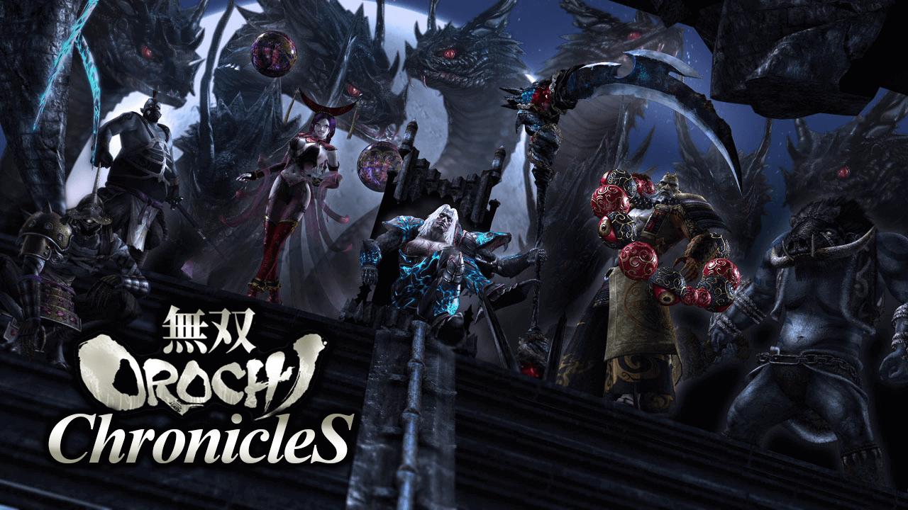
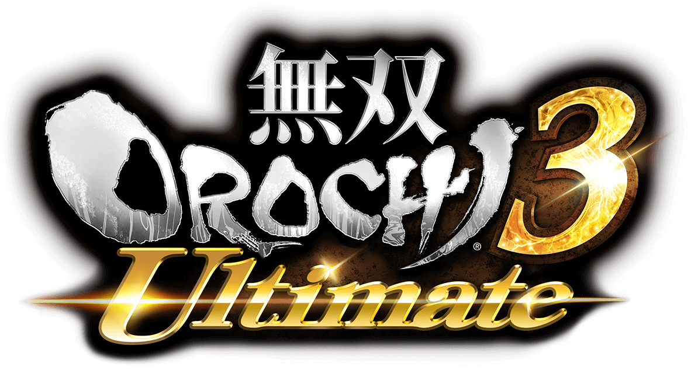
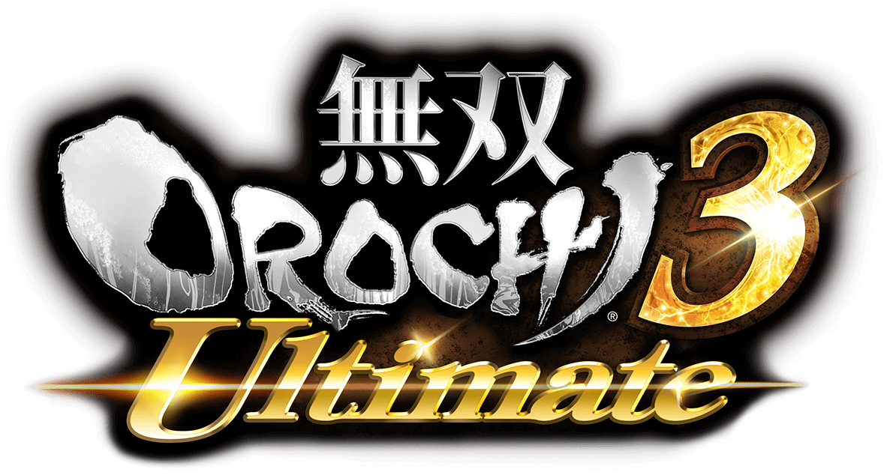
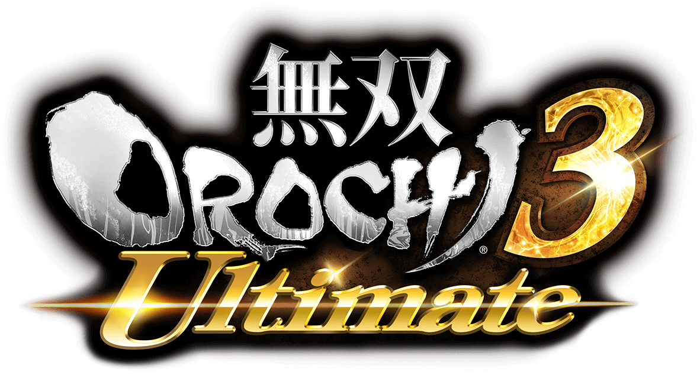
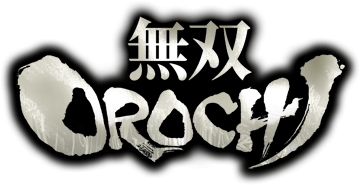
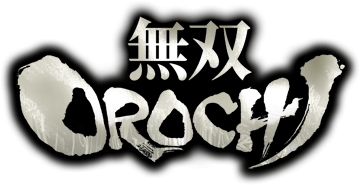
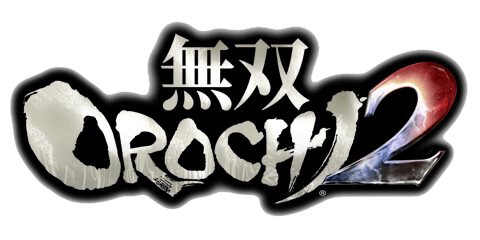
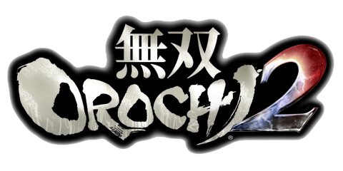

多言語選択
無双 Orochi
ChronicleS


Edit by 2016-2020 "Na²si (Nanasi)" Yupzhou "MOC - Musou Orochi Chronicles"
20200407 Version 1.4
—— 第一部 ——
 /  >
/  > 
▶其一 魔王爆誕
/  > 魔物、仙界を乱す
妖狐編 7章外伝 仙界將救出戦
仙界将たちは、仙界で横行する大群の魔物を驅逐するため、日々戦闘を強いられていた。ある時、応龍は「必ずすべての仲間を救う」という信条に基づき、伏羲、哪咤と寡兵で邪馬台で瀕死状態の仙界将一隊を救援し、九尾の興味を引き起こした。九尾は彼らの力を試し、応龍の思考が単純に利用できると判断し、いつか必ず手下にする。伏羲は九尾の真意を理解していない、そこで九尾について討論を始めた。九尾はかつて尾を利用して「偽物」を作り出す能力があったが、その力はすでに天帝に封印されていた。応龍は天帝がまだあまりあくどいしていないと言い放ち、このように彼女が外で騒ぎを起こすようなことをしてはならない。応龍は軍を率いて戦地から逃れ、状況が悪い今こそ、孤軍奮闘するも、あらゆる手段で友軍を救い出し、応龍はそう誓った。
妖狐編 7章#1 仙界防衛戦
魔物が大挙して仙界に襲来し、伏羲、応龍、素戔嗚、悟空、哪咤たちが最前線で戦う。魔物がすべて撃破された時、魔物たちが復活し、「お前たちがどんなに攻撃しても、俺たちは消滅しない……あの方の力がある限り」と逃げ回った。「あの方」とはいったい誰なのだろうかと、応龍は迷っている。その時、ある謎の女性が「とんでもないこと」を伝えたかった。「あの方」はまさに諸悪の根源であり、「あの方」は「神鏡」で魔物を操り、魔物の現れは仙界の意志であった。そして、応龍は天帝城に赴いて真相を確かめる。
仙界将たちは、仙界で横行する大群の魔物を驅逐するため、日々戦闘を強いられていた。ある時、応龍は「必ずすべての仲間を救う」という信条に基づき、伏羲、哪咤と寡兵で邪馬台で瀕死状態の仙界将一隊を救援し、九尾の興味を引き起こした。九尾は彼らの力を試し、応龍の思考が単純に利用できると判断し、いつか必ず手下にする。伏羲は九尾の真意を理解していない、そこで九尾について討論を始めた。九尾はかつて尾を利用して「偽物」を作り出す能力があったが、その力はすでに天帝に封印されていた。応龍は天帝がまだあまりあくどいしていないと言い放ち、このように彼女が外で騒ぎを起こすようなことをしてはならない。応龍は軍を率いて戦地から逃れ、状況が悪い今こそ、孤軍奮闘するも、あらゆる手段で友軍を救い出し、応龍はそう誓った。
妖狐編 7章#1 仙界防衛戦
魔物が大挙して仙界に襲来し、伏羲、応龍、素戔嗚、悟空、哪咤たちが最前線で戦う。魔物がすべて撃破された時、魔物たちが復活し、「お前たちがどんなに攻撃しても、俺たちは消滅しない……あの方の力がある限り」と逃げ回った。「あの方」とはいったい誰なのだろうかと、応龍は迷っている。その時、ある謎の女性が「とんでもないこと」を伝えたかった。「あの方」はまさに諸悪の根源であり、「あの方」は「神鏡」で魔物を操り、魔物の現れは仙界の意志であった。そして、応龍は天帝城に赴いて真相を確かめる。
天帝城の変、遠呂智誕生
妖狐編 7章#2 天帝救援戦
魔物討伐に時間がかかり、伏羲が天帝城に到着すると、天帝城にはすでに魔物が大量に集まっていた。伏羲は天帝を救うために加速して城内に向かった。
応龍は天帝城に潜る時、天帝が「神鏡」を手にしており、その下には多くの魔物が控えていた。尋ねてきたはずの応龍は、軽く動けないと思っていた。その時、天帝が「神鏡」を照らしていると、魔物が一人一人戦意を失い、「神鏡」の中に入っていく。応龍は愚かになり、「神鏡」の効果があることを見て、あの女性の話を思い出して、また天帝はどうして九尾のすべての力を失わないことを思い出して……すべては通じている、天帝はまさに「諸悪の根源」……！
応龍は急ぎ足で進み、天帝と「神鏡」を奪い合う。応龍は天帝が間違っていると非難する。そんな馬鹿なことをするなんて、「神鏡」は魔物を封じるためのものだと天帝は思っていた。しかし応龍は力強く、天帝はもちろん防ぎきれず、「神鏡」を奪われ、天帝も倒れてしまいました。応龍は「神鏡」を睨み、咆哮を上げて突き刺そうとした。だが神剣が「神鏡」に触れた瞬間、「神鏡」は裂かれ大量の瘴気が湧き出し、応龍を包み込んで蛇魔・遠呂智へと変貌してしまう。遠呂智は再起した天帝に瘴気を浴びせる一撃を浴びせ、再び天帝は倒れてしまう。遠呂智は純粋な破壊欲望に駆られ、今度は天帝の首を狙って、再び巨鎌を振る……
伏羲外縁の魔物を越えて天帝城の中に入リ、天帝の体が伏せているのを見た。その前に立っているのは他ではなく、まさに蛇魔・遠呂智だった。今の遠呂智は瘴気を全て吸収し、破壊の意志の集合体となっている。伏羲は天帝の遺体を連れて逃走し、遠呂智は天帝城を大いに破壊して去った。玉藻前は、その騒ぎに乗じて壊れた神鏡を手に入れる。
天帝が死んだため、仙界は仙界長・素戔嗚が代わりに統治し、遠呂智討伐戦を起こした。遠呂智が魔王の巣・古志城を作り、魔物が集まって遠呂智軍の前身となる。
魔物討伐に時間がかかり、伏羲が天帝城に到着すると、天帝城にはすでに魔物が大量に集まっていた。伏羲は天帝を救うために加速して城内に向かった。
応龍は天帝城に潜る時、天帝が「神鏡」を手にしており、その下には多くの魔物が控えていた。尋ねてきたはずの応龍は、軽く動けないと思っていた。その時、天帝が「神鏡」を照らしていると、魔物が一人一人戦意を失い、「神鏡」の中に入っていく。応龍は愚かになり、「神鏡」の効果があることを見て、あの女性の話を思い出して、また天帝はどうして九尾のすべての力を失わないことを思い出して……すべては通じている、天帝はまさに「諸悪の根源」……！
応龍は急ぎ足で進み、天帝と「神鏡」を奪い合う。応龍は天帝が間違っていると非難する。そんな馬鹿なことをするなんて、「神鏡」は魔物を封じるためのものだと天帝は思っていた。しかし応龍は力強く、天帝はもちろん防ぎきれず、「神鏡」を奪われ、天帝も倒れてしまいました。応龍は「神鏡」を睨み、咆哮を上げて突き刺そうとした。だが神剣が「神鏡」に触れた瞬間、「神鏡」は裂かれ大量の瘴気が湧き出し、応龍を包み込んで蛇魔・遠呂智へと変貌してしまう。遠呂智は再起した天帝に瘴気を浴びせる一撃を浴びせ、再び天帝は倒れてしまう。遠呂智は純粋な破壊欲望に駆られ、今度は天帝の首を狙って、再び巨鎌を振る……
伏羲外縁の魔物を越えて天帝城の中に入リ、天帝の体が伏せているのを見た。その前に立っているのは他ではなく、まさに蛇魔・遠呂智だった。今の遠呂智は瘴気を全て吸収し、破壊の意志の集合体となっている。伏羲は天帝の遺体を連れて逃走し、遠呂智は天帝城を大いに破壊して去った。玉藻前は、その騒ぎに乗じて壊れた神鏡を手に入れる。
天帝が死んだため、仙界は仙界長・素戔嗚が代わりに統治し、遠呂智討伐戦を起こした。遠呂智が魔王の巣・古志城を作り、魔物が集まって遠呂智軍の前身となる。
「偽物」との闘い
妖狐編 7章#3 仙界動亂
遠呂智割下了五行山大佛之頭顱一走了之。在天界出現了更加強大的敵人的當下，天帝因負重傷而無法發揮實力，奈何仙界軍也是一盤散沙。由於持久與魔物戰鬥，素戔嗚已動彈不得，討伐遠呂智的重任落到了哪咤和悟空的身上。哪咤和悟空在五行山搜尋遠呂智，卻發現了仙界叛將，不乏有他們熟悉的人。仙界將發現這些叛將其實是九尾利用尾巴變的「假人」，難怪「一盤散沙」。在分不清敵我的情況下，仙界將和仙界叛將開始了持久戰。
遠呂智割下了五行山大佛之頭顱一走了之。在天界出現了更加強大的敵人的當下，天帝因負重傷而無法發揮實力，奈何仙界軍也是一盤散沙。由於持久與魔物戰鬥，素戔嗚已動彈不得，討伐遠呂智的重任落到了哪咤和悟空的身上。哪咤和悟空在五行山搜尋遠呂智，卻發現了仙界叛將，不乏有他們熟悉的人。仙界將發現這些叛將其實是九尾利用尾巴變的「假人」，難怪「一盤散沙」。在分不清敵我的情況下，仙界將和仙界叛將開始了持久戰。
魔王幽閉す
妖狐編 7章#4 魔王幽閉戦
由於九尾=玉藻前的「假人」、魔物的阻礙、天帝之死以及「神鏡」的丟失，仙界軍耗了很長時間才開辟至魔窟・古志城之路，然而魔王已經駕馭了其強大的力量，仙界軍多次討伐未果，連自詡強大的哪咤都未交幾合就被遠呂智消滅。哪咤為素戔嗚所救，進行了全身機械化改造，繼續挑戰遠呂智。又經過長年的討伐，才成功將遠呂智擊敗。仙界將們合力將之幽禁於五行山，遠呂智將未來永劫，接受永無止境的處罰、永遠地受人忌諱。幽禁遠呂智之後，仙界將著力捉拿妖狐・玉藻前。
由於九尾=玉藻前的「假人」、魔物的阻礙、天帝之死以及「神鏡」的丟失，仙界軍耗了很長時間才開辟至魔窟・古志城之路，然而魔王已經駕馭了其強大的力量，仙界軍多次討伐未果，連自詡強大的哪咤都未交幾合就被遠呂智消滅。哪咤為素戔嗚所救，進行了全身機械化改造，繼續挑戰遠呂智。又經過長年的討伐，才成功將遠呂智擊敗。仙界將們合力將之幽禁於五行山，遠呂智將未來永劫，接受永無止境的處罰、永遠地受人忌諱。幽禁遠呂智之後，仙界將著力捉拿妖狐・玉藻前。
玉藻前封印
妖狐編 7章外伝 仙界逃亡戦
玉藻前由於不斷作惡，受到仙界將的追捕。但玉藻前擅逃，仙界將無計可施。玉藻前逃亡越久，其妖氣越減弱。然而玉藻前以負面情緒做食糧，仍不停作亂。陰陽師・安倍晴明跨越時空來到了久遠過去的仙界。晴明自稱曾受妖狐幫助，悟空自稱受仙界將関押，「自願」幫助玉藻前逃離仙界，擊退眾仙界將：伏羲、素盞嗚、哪咤、神農、太公望、三蔵、女媧。就在玉藻前即將逃出仙界時，晴明和悟空叛變，女媧醒來，神農和伏羲到來，三皇合力將玉藻前封印到「殺生石」中，玉藻前封印作戰告一段落。「殺生石」中散發出強烈的恨意，最終被藏匿於火河。
玉藻前由於不斷作惡，受到仙界將的追捕。但玉藻前擅逃，仙界將無計可施。玉藻前逃亡越久，其妖氣越減弱。然而玉藻前以負面情緒做食糧，仍不停作亂。陰陽師・安倍晴明跨越時空來到了久遠過去的仙界。晴明自稱曾受妖狐幫助，悟空自稱受仙界將関押，「自願」幫助玉藻前逃離仙界，擊退眾仙界將：伏羲、素盞嗚、哪咤、神農、太公望、三蔵、女媧。就在玉藻前即將逃出仙界時，晴明和悟空叛變，女媧醒來，神農和伏羲到來，三皇合力將玉藻前封印到「殺生石」中，玉藻前封印作戰告一段落。「殺生石」中散發出強烈的恨意，最終被藏匿於火河。
▶其二 欧陸伝説
タイタン・ウォーズの結末、三界の瓜分
宙斯用計使奧林匹斯主神・克洛諾斯吐出腹中的兒女，發動泰坦戰爭，討伐克洛諾斯。泰坦戰爭持續十年之久，不決雌雄。宙斯聽從普羅米修斯建議，解救獨眼巨人。獨眼巨人為宙斯、哈迪斯、波塞冬打造神器「雷霆」、「雙叉戟」和「三叉戟」，兄弟三人在巨人的協助下推翻克洛諾斯。
宙斯、哈迪斯、波塞冬在普羅米修斯的提議下抓鬮，決定了三人對世界的統治權：宙斯得天界・奧林匹斯，是為主神；哈迪斯得冥府，是為冥王；波塞冬得大海，是為海神；而大地經三人協商，決定共治。哈迪斯對此心壞怨恨，終日過著暗無天日的生活，直到那個「神王」的到來……
後來，宙斯收服提豐，給阿瑞斯做了武器；珀爾修斯砍下美杜莎的頭顱，獻給雅典娜，被雅典娜裝到了盾牌中央。
プロメテウスの予言
普羅米修斯不顧宙斯反對幫助人類，宙斯不相信人類的可能性，懲罰普羅米修斯。普羅米修斯因此對宙斯作出預言：他也將像其父一樣，被兒女推翻……
「ミーミルの泉」
奧丁喝下「密米爾之泉」水，獲得強大的力量和智慧，發現神秘的盧恩符文，作為代價，他失去了一只眼睛。
ロキの恨み
洛基在與阿斯加德的戰爭中戰敗，同伴被奧丁殺害、力量也被奪走，洛基不得不向奧丁屈服。
「ラグナロク」と神代の終わり
命運女神預言奧丁將在「諸神黃昏」中死去。在諸神與巨人不斷的沖突中，預言之日「諸神黃昏」越來越近。失去秩序的世界裏，阿斯加德神王不願向命運低頭，面對著「彩虹橋」上暴虐的大軍：魔狼・芬裏爾、毒龍・尼德霍格、巨蟒・耶夢加得、烈焰巨人・蘇爾特、霜巨人……芬裏爾率先沖向奧丁，將之撕裂。奧丁迎來了預言的死亡，神話時代終結。
「ラグナロク」を超え、三界が交わる
3U 5章外伝 運命を克服せし者
阿斯加德神王・奧丁敗於「諸神黃昏」，迎來了預言中的毀滅，步入冥府。眼前就是「苦難之河」，但奧丁不願向命運屈服，發誓要扭轉這樣憋屈的命運。奧丁遂在冥府中大鬧，擊倒怪物、宙斯及其子女的幻影後，逼出一旁看戲的哈迪斯。哈迪斯為了一再確認奧丁有無復活的價值，放出其幻影與冥府軍戰鬥。奧丁看著自己的幻影輕吐著內心醜惡的願望，為自己感到羞恥，卻又無法否認內心的夙願。奧丁擊退冥府之將，接受哈迪斯最後的試煉——與哈迪斯的戰鬥。哈迪斯在戰鬥中感受到奧丁的力量與智慧，認為此人大可利用，放他生路，扭轉其死亡的命運。同時，哈迪斯給奧丁「世界樹」作為伴手禮，「世界樹」就吸附在其靈魂上成長。奧丁感受到「世界樹」的奇妙的力量，已經在腦海中盤算了巨大又恐怖的計劃。阿斯加德、奧林匹斯、冥府，三界在此交匯……
阿斯加德神王・奧丁敗於「諸神黃昏」，迎來了預言中的毀滅，步入冥府。眼前就是「苦難之河」，但奧丁不願向命運屈服，發誓要扭轉這樣憋屈的命運。奧丁遂在冥府中大鬧，擊倒怪物、宙斯及其子女的幻影後，逼出一旁看戲的哈迪斯。哈迪斯為了一再確認奧丁有無復活的價值，放出其幻影與冥府軍戰鬥。奧丁看著自己的幻影輕吐著內心醜惡的願望，為自己感到羞恥，卻又無法否認內心的夙願。奧丁擊退冥府之將，接受哈迪斯最後的試煉——與哈迪斯的戰鬥。哈迪斯在戰鬥中感受到奧丁的力量與智慧，認為此人大可利用，放他生路，扭轉其死亡的命運。同時，哈迪斯給奧丁「世界樹」作為伴手禮，「世界樹」就吸附在其靈魂上成長。奧丁感受到「世界樹」的奇妙的力量，已經在腦海中盤算了巨大又恐怖的計劃。阿斯加德、奧林匹斯、冥府，三界在此交匯……
ミストルテインの誓い
3U 5章外伝 ミストルテインの誓い
奧丁在「諸神黃昏」中存活，奧丁打算在奧林匹斯天界培養「世界樹」的力量，並將之吸收，以毀滅所有的世界，避免自己的毀滅。奧丁的氣息被地神・蓋亞察覺，阿斯加德的洛基也告之奧丁將進攻奧林匹斯。只剩下靈魂的蓋亞召喚珀爾修斯，與洛基聯手調查。為了消除珀爾修斯的懷疑，洛基分出其「槲寄生」的枝幹予之，保證如果珀爾修斯不信任，可將之折斷，這樣一來洛基的「槲寄生」也會枯萎，洛基的力量也會削弱。於是蓋亞、珀爾修斯和洛基在奧林匹斯探索，發現了阿斯加德的密探和怪物。三人擊倒之，珀爾修斯和洛基相互承認對方的智勇。正當三人在神殿開總結會，蓋亞感到西方有可畏的的氣息。珀爾修斯單騎前去，中了陷阱，被関門放幻靈。蓋亞找出施術者，被洛基擊退。施術者逃走，要向奧丁告發洛基的背叛。而珀爾修斯形勢緊急，洛基只好先救之。洛基明示他為了達成某個「願望」將不擇手段，展示了其決心。於是洛基追殺了施術者，蓋亞已感受不到可疑的氣息，調查暫告一段落。洛基將回阿斯加德縝密地計劃，珀爾修斯向槲寄生起誓，將協助洛基，赴湯蹈火，在所不辭。 但後來奧丁還是察覺了洛基和珀爾修斯的関系，命令洛基當著他的面殺害了珀爾修斯。珀爾修斯視死如歸，將精神和記憶分散到各處，以靈體的形式遊離在各個世界繼續調查……
奧丁在「諸神黃昏」中存活，奧丁打算在奧林匹斯天界培養「世界樹」的力量，並將之吸收，以毀滅所有的世界，避免自己的毀滅。奧丁的氣息被地神・蓋亞察覺，阿斯加德的洛基也告之奧丁將進攻奧林匹斯。只剩下靈魂的蓋亞召喚珀爾修斯，與洛基聯手調查。為了消除珀爾修斯的懷疑，洛基分出其「槲寄生」的枝幹予之，保證如果珀爾修斯不信任，可將之折斷，這樣一來洛基的「槲寄生」也會枯萎，洛基的力量也會削弱。於是蓋亞、珀爾修斯和洛基在奧林匹斯探索，發現了阿斯加德的密探和怪物。三人擊倒之，珀爾修斯和洛基相互承認對方的智勇。正當三人在神殿開總結會，蓋亞感到西方有可畏的的氣息。珀爾修斯單騎前去，中了陷阱，被関門放幻靈。蓋亞找出施術者，被洛基擊退。施術者逃走，要向奧丁告發洛基的背叛。而珀爾修斯形勢緊急，洛基只好先救之。洛基明示他為了達成某個「願望」將不擇手段，展示了其決心。於是洛基追殺了施術者，蓋亞已感受不到可疑的氣息，調查暫告一段落。洛基將回阿斯加德縝密地計劃，珀爾修斯向槲寄生起誓，將協助洛基，赴湯蹈火，在所不辭。 但後來奧丁還是察覺了洛基和珀爾修斯的関系，命令洛基當著他的面殺害了珀爾修斯。珀爾修斯視死如歸，將精神和記憶分散到各處，以靈體的形式遊離在各個世界繼續調查……
▶其三 異界覇者
妲己は魔王を解放し、異界開く
ドラマ2 #39(外伝) 五行山脫出戦
仙界將幽禁遠呂智、封印玉藻前之後，過了無數光陰。
女妖・妲己厭倦了仙界的生活，對太古傳說的蛇魔・遠呂智產生興趣。妲己與眾妖魔向幽禁遠呂智之地・五行山進發。五行山不僅遍布太公望的眼線，五行山下的門也禁閉不得開。妲己一行擊倒了一些仙界將，獲得了鑰匙，進入五行山。修復完好的五行山佛像下鎮座著石化的蛇魔・遠呂智，妲己一行擊退了守將・孫悟空、三蔵後，遠呂智石化解除，從長久的沈睡中覺醒。妲己帶遠呂智逃出五行山，遭到伏羲、女媧、太公望的阻擋。妲己・遠呂智擊雙雙退仙界將，這是女妖和魔王復活的華麗的首秀。太公望聲稱暫且任之逍遙一陣，著手再次討伐遠呂智。妲己跟遠呂智打包票，外面的世界更精彩。然而遠呂智的目的只有一個——
「目的地就由本王開辟……」
「開辟——本王所願的世界」
一束青光沖天——為了達成「唯一的目的」，遠呂智集結人界的強者，開創了一個不同於仙界與人界、跨越了時間與空間的異世界，並展開了試煉之戰——
仙界將幽禁遠呂智、封印玉藻前之後，過了無數光陰。
女妖・妲己厭倦了仙界的生活，對太古傳說的蛇魔・遠呂智產生興趣。妲己與眾妖魔向幽禁遠呂智之地・五行山進發。五行山不僅遍布太公望的眼線，五行山下的門也禁閉不得開。妲己一行擊倒了一些仙界將，獲得了鑰匙，進入五行山。修復完好的五行山佛像下鎮座著石化的蛇魔・遠呂智，妲己一行擊退了守將・孫悟空、三蔵後，遠呂智石化解除，從長久的沈睡中覺醒。妲己帶遠呂智逃出五行山，遭到伏羲、女媧、太公望的阻擋。妲己・遠呂智擊雙雙退仙界將，這是女妖和魔王復活的華麗的首秀。太公望聲稱暫且任之逍遙一陣，著手再次討伐遠呂智。妲己跟遠呂智打包票，外面的世界更精彩。然而遠呂智的目的只有一個——
遠呂智、異界を制す
無印 遠呂智#1 小田原城の戦い
進行統一天下的最後一著、小田原城攻略的秀吉，與北條軍目睹了異變。異形的大軍向小田原城襲來，鎮座在軍中的大將，是蘇醒的蛇魔・遠呂智、女妖・妲己和暴君・董卓。董卓正是為了在異世界達成「酒池肉林」美夢而加入妖魔。豐臣軍和北條軍見到異形的軍勢，跟見到鬼一樣，都失了魂。遠呂智軍所向披靡、以壓倒的力量蹂躪北條軍，風魔和氏政都敗陣，風魔道「魔王雖不能駕馭混沌，但與之興風作浪也是一興」，加入到遠呂智軍來。遠呂智頓覺無聊，於是妲己準備用火計。慶次對遠呂智強大力量下隱藏的夙願非常感興趣，與之以武相交。遠呂智碾壓之，將之抓捕。寧寧讓伏兵出動，遠呂智一路碾壓，占領糧庫。於是妲己火燒小田原城，寧寧出動，被碾壓，撤退。秀吉見兵力渙散、糧食被搶，不得已出陣。秀吉要遠呂智等報上名號，遠呂智、妲己變向之傳授了真名，並碾壓之。秀吉一窺深不見底的可怕之力，看出它將是即將來臨的恐怖時代的暴君，逃出小田原城。遠呂智收慶次，讓之成為遠呂智軍大將。
無印 遠呂智#2 成都の戦い
接著，遠呂智軍西征孤立的蜀都・成都。劉備的助力分布在外，無法立刻召回，處境十分嚴峻。遠呂智首先碾壓関興、張苞，壓制了南砦。臥龍・諸葛亮當機立斷，要劉備逃跑。愛民如劉備，要帶著百姓逃離。諸葛亮下令趙雲護衛劉備和百姓，自己留下抵擋異形的大軍。遠呂智一路碾壓，殺進成都內城。諸葛亮関閉城門，與遠呂智決一死戰，敗。妲己見此人可用，將之抓捕。遠呂智出城追劉備，趙雲破釜沈舟，殿後護主，一夫當関。遠呂智碾壓之，也將之抓捕。法師施展諸葛亮傳授的妖術，混淆了遠呂智軍的方向感，但被擊倒。孟獲、祝融應諸葛亮之邀來援，敗走。遠呂智終追上劉備，捕獲之。由此成都陷落，蜀國滅亡。此時傳出，各軍震動，爭奪漢中的蜀軍和魏軍休戰，馬超留守定軍山，黃忠、関平前往樊城通知関羽，曹操命令張遼出城，進行聯吳抗魔的準備。而諸葛亮建議妲己保全劉備，以「吸引其他蜀將，一網打盡」。於是妲己真的挾劉備以令臥龍，臥龍成了蛇之爪牙。
無印 遠呂智#3 川中島の戦い
蜀的滅亡激起了群雄的反抗。信玄、謙信在川中島布陣，景勝、幸村作前鋒，率騎馬隊、赤備隊迎擊遠呂智軍，遠呂智碾壓之，幸村逃亡，遠呂智突入石兵八陣。信玄在八陣中放火，同時謙信、兼續出陣，宣稱要「祓除遠呂智」，兩路進攻遠呂智軍本陣。遠呂智返回陣前，碾壓之，突破八陣，碾壓信玄而歸。諸葛亮意識到群雄可能組成包圍網，妲己便要諸葛亮處理此事。諸葛亮化身修羅，站在人類自相殘殺的最前線。
無印 遠呂智#4 合肥の戦い
諸葛亮成為鎮壓人類反抗別動隊的大將，率軍前往合肥。諸葛亮推測合肥應為孫吳之兵，欲一測孫吳之力。果然，合肥已被孫吳占領，大將竟是孫堅、周瑜。諸葛亮先占領東北角，淩統逃亡。為了阻擋遠呂智軍進攻，周瑜令張遼、甘寧出動，諸葛亮一方面截斷小詩橋，一方面抵擋了二將進攻，甘寧逃亡，張遼快馬回營告知曹操大事不好。孫策到來，周瑜認為必有轉機，與孫堅出陣，皆被諸葛亮用計擊破。孫堅為保全將士性命淪為階下囚，孫吳淪為遠呂智的屬國，吳軍從此成為遠呂智軍的重要戰力。
無印 遠呂智#5 江戸城の戦い
人類的反抗愈演愈烈，遠呂智盯上了江戶城的家康，妲己率孫策攻之。遠呂智軍首先包圍了城池，獨眼龍・政宗從奧州趕來，在城外支援家康，被孫策打倒。孫策久攻城池不下，發動火計。家康早有預料，把火滅了。於是孫策強攻城門，江戶城開門。政宗用伏兵和增援反攻，失敗。孫策進入天守閣，家康遣稻姬突襲遠呂智軍本陣，孫策搶先一步回營，阻止了奇襲。政宗見孫策如此猛將，認識到自己和家康的天下之器尚且不足。家康無計可施，舍身突擊。孫策再次進入天守，擊破政宗與家康，江戶城陷落，家康向遠呂智軍低頭，德川也成為遠呂智的屬國。政宗慕名而來，尊遠呂智為英雄。遠呂智對人類的興趣再上一層。
無印 遠呂智#6 夷陵の戦い
於是遠呂智再次出動。這次他盯上了三國最後的希望、亂世之奸雄・曹操，因此軍中人類俘虜無人敢相告。於是遠呂智與孫權率兵出征，途徑夷陵，與曹操親率的魏軍遭遇。遠呂智炮擊前線部隊，曹操命前線退卻至八陣，遠呂智軍因此占領了聯營。遠呂智進入八陣，碾壓典韋、許褚、夏侯惇、夏侯淵，四人逃亡。面對未知的兵器，曹操心生一計，遣滿寵放火燒大炮，大炮爆炸，曹操因此火燒聯營七百里。趁妖魔不備，曹操遣剩余的兵力奇襲遠呂智軍本陣，被遠呂智成功阻止。然而到處不見曹操的身影，孫權判斷八陣必有蹊蹺，遠呂智於是再次進入八陣，果然發現了數位法師，碾壓之。曹操現身，大量伏兵出現，與遠呂智決一死戰。遠呂智照樣碾壓，曹操倒地，霸道被斬斷。典韋回到戰場，搬離了曹操的「遺體」。政宗見遠呂智擊敗了古代的奸雄，對其敬佩更上一層，肯定其天下人之器。然而慶次告之，遠呂智擊敗曹魏仍沒有露出笑容——其目光，不在天下……
無印 遠呂智#7 三方ヶ原の戦い
遠呂智以為自己已無人能敵時，家康來報，人界的魔王・信長布陣於三方原。於是遠呂智、家康率軍攻之。這是遠呂智向人類大展神威的最終戰。織田軍前鋒以為能敵，結果潰敗，於是織田軍閉門不出。妲己便心生一計，攻其糧庫。路上，妲己見織田軍以狼煙傳遞消息，知其必趁遠呂智軍攻糧庫之時奇襲本陣，於是帶上法師進軍。光秀打開軍糧庫迎敵，織田軍果然趁此奇襲本陣，妲己召喚幻影兵抵擋，同時攻下糧庫，施展妖術，將本陣的兵馬轉移到糧庫，並瞬移一些妖魔到奇襲部隊前，攻勢一轉，織田軍大混亂，信長被迫出陣。妲己遣鐵炮隊攻之，遠呂智親上前線，碾壓之。信長、濃姬、蘭丸走為上策，誓要在異世界刮起風雨。
無印 遠呂智#8 火河の戦い
遠呂智橫掃人界眾勢力，露出了笑容。因為還有殘黨在外，而現在已將人類逼至絕境，人類的潛力才正要發揮，這樣他才能遇上真正的強者。然而這場「宴會」卻有不速之客來訪，左慈、張角聯合天界三仙・伏羲、女媧、太公望捉拿遠呂智。遠呂智不高興，又不想被捉拿，只好稍稍做出抵抗。站場上施展了大量妖術：張角召喚幻影兵；太公望使妖魔陷入混亂自相殘殺；左慈使出分身；太公望旋轉船身，大擺「卍」字，是為「萬仙陣」；伏羲召喚偽・遠呂智和偽・妲己。遠呂智和妲己皆破除妖術，逼得仙界將出陣。女媧使出落雷、伏羲召喚「上古兵器」，但在遠呂智面前不過是雕蟲小技。遠呂智將仙界的猛將碾壓，郁郁而歸。三國時代的鬼神・呂布聽說有如此強者，也歸於其下，期待能碰上更多的、更有趣的「獵物」。
遠呂智掃六合、卷八荒，卻仍在期待無雙的強者。慶次一語道出遠呂智的願望——「尋找結束己命的強者」。遠呂智尋找強者的旅途暫告一段落，而且，慶次、孫策、家康、諸葛亮、呂布、政宗——遠呂智身旁已經匯集了能超越他的強者……
進行統一天下的最後一著、小田原城攻略的秀吉，與北條軍目睹了異變。異形的大軍向小田原城襲來，鎮座在軍中的大將，是蘇醒的蛇魔・遠呂智、女妖・妲己和暴君・董卓。董卓正是為了在異世界達成「酒池肉林」美夢而加入妖魔。豐臣軍和北條軍見到異形的軍勢，跟見到鬼一樣，都失了魂。遠呂智軍所向披靡、以壓倒的力量蹂躪北條軍，風魔和氏政都敗陣，風魔道「魔王雖不能駕馭混沌，但與之興風作浪也是一興」，加入到遠呂智軍來。遠呂智頓覺無聊，於是妲己準備用火計。慶次對遠呂智強大力量下隱藏的夙願非常感興趣，與之以武相交。遠呂智碾壓之，將之抓捕。寧寧讓伏兵出動，遠呂智一路碾壓，占領糧庫。於是妲己火燒小田原城，寧寧出動，被碾壓，撤退。秀吉見兵力渙散、糧食被搶，不得已出陣。秀吉要遠呂智等報上名號，遠呂智、妲己變向之傳授了真名，並碾壓之。秀吉一窺深不見底的可怕之力，看出它將是即將來臨的恐怖時代的暴君，逃出小田原城。遠呂智收慶次，讓之成為遠呂智軍大將。
無印 遠呂智#2 成都の戦い
接著，遠呂智軍西征孤立的蜀都・成都。劉備的助力分布在外，無法立刻召回，處境十分嚴峻。遠呂智首先碾壓関興、張苞，壓制了南砦。臥龍・諸葛亮當機立斷，要劉備逃跑。愛民如劉備，要帶著百姓逃離。諸葛亮下令趙雲護衛劉備和百姓，自己留下抵擋異形的大軍。遠呂智一路碾壓，殺進成都內城。諸葛亮関閉城門，與遠呂智決一死戰，敗。妲己見此人可用，將之抓捕。遠呂智出城追劉備，趙雲破釜沈舟，殿後護主，一夫當関。遠呂智碾壓之，也將之抓捕。法師施展諸葛亮傳授的妖術，混淆了遠呂智軍的方向感，但被擊倒。孟獲、祝融應諸葛亮之邀來援，敗走。遠呂智終追上劉備，捕獲之。由此成都陷落，蜀國滅亡。此時傳出，各軍震動，爭奪漢中的蜀軍和魏軍休戰，馬超留守定軍山，黃忠、関平前往樊城通知関羽，曹操命令張遼出城，進行聯吳抗魔的準備。而諸葛亮建議妲己保全劉備，以「吸引其他蜀將，一網打盡」。於是妲己真的挾劉備以令臥龍，臥龍成了蛇之爪牙。
無印 遠呂智#3 川中島の戦い
蜀的滅亡激起了群雄的反抗。信玄、謙信在川中島布陣，景勝、幸村作前鋒，率騎馬隊、赤備隊迎擊遠呂智軍，遠呂智碾壓之，幸村逃亡，遠呂智突入石兵八陣。信玄在八陣中放火，同時謙信、兼續出陣，宣稱要「祓除遠呂智」，兩路進攻遠呂智軍本陣。遠呂智返回陣前，碾壓之，突破八陣，碾壓信玄而歸。諸葛亮意識到群雄可能組成包圍網，妲己便要諸葛亮處理此事。諸葛亮化身修羅，站在人類自相殘殺的最前線。
無印 遠呂智#4 合肥の戦い
諸葛亮成為鎮壓人類反抗別動隊的大將，率軍前往合肥。諸葛亮推測合肥應為孫吳之兵，欲一測孫吳之力。果然，合肥已被孫吳占領，大將竟是孫堅、周瑜。諸葛亮先占領東北角，淩統逃亡。為了阻擋遠呂智軍進攻，周瑜令張遼、甘寧出動，諸葛亮一方面截斷小詩橋，一方面抵擋了二將進攻，甘寧逃亡，張遼快馬回營告知曹操大事不好。孫策到來，周瑜認為必有轉機，與孫堅出陣，皆被諸葛亮用計擊破。孫堅為保全將士性命淪為階下囚，孫吳淪為遠呂智的屬國，吳軍從此成為遠呂智軍的重要戰力。
無印 遠呂智#5 江戸城の戦い
人類的反抗愈演愈烈，遠呂智盯上了江戶城的家康，妲己率孫策攻之。遠呂智軍首先包圍了城池，獨眼龍・政宗從奧州趕來，在城外支援家康，被孫策打倒。孫策久攻城池不下，發動火計。家康早有預料，把火滅了。於是孫策強攻城門，江戶城開門。政宗用伏兵和增援反攻，失敗。孫策進入天守閣，家康遣稻姬突襲遠呂智軍本陣，孫策搶先一步回營，阻止了奇襲。政宗見孫策如此猛將，認識到自己和家康的天下之器尚且不足。家康無計可施，舍身突擊。孫策再次進入天守，擊破政宗與家康，江戶城陷落，家康向遠呂智軍低頭，德川也成為遠呂智的屬國。政宗慕名而來，尊遠呂智為英雄。遠呂智對人類的興趣再上一層。
無印 遠呂智#6 夷陵の戦い
於是遠呂智再次出動。這次他盯上了三國最後的希望、亂世之奸雄・曹操，因此軍中人類俘虜無人敢相告。於是遠呂智與孫權率兵出征，途徑夷陵，與曹操親率的魏軍遭遇。遠呂智炮擊前線部隊，曹操命前線退卻至八陣，遠呂智軍因此占領了聯營。遠呂智進入八陣，碾壓典韋、許褚、夏侯惇、夏侯淵，四人逃亡。面對未知的兵器，曹操心生一計，遣滿寵放火燒大炮，大炮爆炸，曹操因此火燒聯營七百里。趁妖魔不備，曹操遣剩余的兵力奇襲遠呂智軍本陣，被遠呂智成功阻止。然而到處不見曹操的身影，孫權判斷八陣必有蹊蹺，遠呂智於是再次進入八陣，果然發現了數位法師，碾壓之。曹操現身，大量伏兵出現，與遠呂智決一死戰。遠呂智照樣碾壓，曹操倒地，霸道被斬斷。典韋回到戰場，搬離了曹操的「遺體」。政宗見遠呂智擊敗了古代的奸雄，對其敬佩更上一層，肯定其天下人之器。然而慶次告之，遠呂智擊敗曹魏仍沒有露出笑容——其目光，不在天下……
無印 遠呂智#7 三方ヶ原の戦い
遠呂智以為自己已無人能敵時，家康來報，人界的魔王・信長布陣於三方原。於是遠呂智、家康率軍攻之。這是遠呂智向人類大展神威的最終戰。織田軍前鋒以為能敵，結果潰敗，於是織田軍閉門不出。妲己便心生一計，攻其糧庫。路上，妲己見織田軍以狼煙傳遞消息，知其必趁遠呂智軍攻糧庫之時奇襲本陣，於是帶上法師進軍。光秀打開軍糧庫迎敵，織田軍果然趁此奇襲本陣，妲己召喚幻影兵抵擋，同時攻下糧庫，施展妖術，將本陣的兵馬轉移到糧庫，並瞬移一些妖魔到奇襲部隊前，攻勢一轉，織田軍大混亂，信長被迫出陣。妲己遣鐵炮隊攻之，遠呂智親上前線，碾壓之。信長、濃姬、蘭丸走為上策，誓要在異世界刮起風雨。
無印 遠呂智#8 火河の戦い
遠呂智橫掃人界眾勢力，露出了笑容。因為還有殘黨在外，而現在已將人類逼至絕境，人類的潛力才正要發揮，這樣他才能遇上真正的強者。然而這場「宴會」卻有不速之客來訪，左慈、張角聯合天界三仙・伏羲、女媧、太公望捉拿遠呂智。遠呂智不高興，又不想被捉拿，只好稍稍做出抵抗。站場上施展了大量妖術：張角召喚幻影兵；太公望使妖魔陷入混亂自相殘殺；左慈使出分身；太公望旋轉船身，大擺「卍」字，是為「萬仙陣」；伏羲召喚偽・遠呂智和偽・妲己。遠呂智和妲己皆破除妖術，逼得仙界將出陣。女媧使出落雷、伏羲召喚「上古兵器」，但在遠呂智面前不過是雕蟲小技。遠呂智將仙界的猛將碾壓，郁郁而歸。三國時代的鬼神・呂布聽說有如此強者，也歸於其下，期待能碰上更多的、更有趣的「獵物」。
遠呂智掃六合、卷八荒，卻仍在期待無雙的強者。慶次一語道出遠呂智的願望——「尋找結束己命的強者」。遠呂智尋找強者的旅途暫告一段落，而且，慶次、孫策、家康、諸葛亮、呂布、政宗——遠呂智身旁已經匯集了能超越他的強者……
蛇の爪牙
関羽和張飛被招降，以保護劉備；接手曹魏的曹丕，與遠呂智締結同盟，妲己不斷命其驅逐山賊、鎮壓叛軍，在實際上收編了魏軍；遠呂智與孫策約定，每完成一次鎮壓，就解放一名孫吳的俘虜；妲己放出「曹操其實沒死，而且在本能寺」的流言，吸引不屈的信長。遠呂智的親征結束後，蛇之爪牙將大展其獠牙。
—— 第二部 ——
 ▶其一 爪牙躍動

残党喘ぐ
無印 魏#1 杭瀬川の戦い
妲己率曹丕、三成、張遼率軍驅逐杭瀨川的山賊・黃蓋、許褚。三成的策略是魏軍兵分兩路，一路西進，一路與徐晃匯合，自己則南進。黃巾黨・張角結束火河戰後，不停逃亡，但是到處都是遠呂智軍，已經失了魂。曹丕破之，黃蓋派出一些人馬吸引曹丕進軍，曹丕將之擊破。曹丕發覺自己做了三成的誘餌，三成瞄準敵軍本陣出動，發現敵軍也有此意。南砦的敵軍已經吸引了魏軍大部隊，準備聲東擊西，強攻遠呂智軍本陣。三成便進攻南砦，阻止強襲，並突進敵軍本陣。而曹丕遭遇亂入遊擊的夏侯淵，謊稱「與妖魔同伍乃時勢所趨」。曹丕來到敵軍陣前，是餓肚子的許褚在守門，許褚餓得連魏王的世子都認不出來，只想著快些吃飯。曹丕擊敗之，賞他飯吃。於是山賊本陣大開，曹丕才發現山賊就是黃蓋，與三成破之，但是留他一條生路。
無印 戦国#1 荊州の戦い
三成率曹仁在荊州襄陽包圍了関平、黃忠，欲集結所有反遠呂智勢力的信長、光秀、秀吉挺身而出，將関平救於刀下，信長破曹仁、三成，救出黃忠，並擊退趕來的曹丕。信長質問三成和曹丕為何屈於遠呂智，沒有得到回答。信長收関平、黃忠，黃忠說信長很像亂世之奸雄・曹操，並提到了「曹操在本能寺」流言。
妲己率曹丕、三成、張遼率軍驅逐杭瀨川的山賊・黃蓋、許褚。三成的策略是魏軍兵分兩路，一路西進，一路與徐晃匯合，自己則南進。黃巾黨・張角結束火河戰後，不停逃亡，但是到處都是遠呂智軍，已經失了魂。曹丕破之，黃蓋派出一些人馬吸引曹丕進軍，曹丕將之擊破。曹丕發覺自己做了三成的誘餌，三成瞄準敵軍本陣出動，發現敵軍也有此意。南砦的敵軍已經吸引了魏軍大部隊，準備聲東擊西，強攻遠呂智軍本陣。三成便進攻南砦，阻止強襲，並突進敵軍本陣。而曹丕遭遇亂入遊擊的夏侯淵，謊稱「與妖魔同伍乃時勢所趨」。曹丕來到敵軍陣前，是餓肚子的許褚在守門，許褚餓得連魏王的世子都認不出來，只想著快些吃飯。曹丕擊敗之，賞他飯吃。於是山賊本陣大開，曹丕才發現山賊就是黃蓋，與三成破之，但是留他一條生路。
無印 戦国#1 荊州の戦い
三成率曹仁在荊州襄陽包圍了関平、黃忠，欲集結所有反遠呂智勢力的信長、光秀、秀吉挺身而出，將関平救於刀下，信長破曹仁、三成，救出黃忠，並擊退趕來的曹丕。信長質問三成和曹丕為何屈於遠呂智，沒有得到回答。信長收関平、黃忠，黃忠說信長很像亂世之奸雄・曹操，並提到了「曹操在本能寺」流言。
覇道の血
無印 戦国#2 本能寺の戦い
信長、夏侯惇都為了一見曹操，進軍本能寺。信長到達時，本能寺已被遠呂智軍包圍，黃忠急著救曹操，然而到達本能寺發現，曹操乃妲己偽裝。妲己火燒本能寺，遣周瑜攻之，信長擊退之，派瀧川一益滅火。爾後妲己遣孫尚香攻之，被擊破、俘虜。這時夏侯惇到達，與信長匯合。夏侯惇發現信長和曹操是一類人，或許無法相容，離開去別處搜尋曹操。信玄聽聞信長在此也來，信玄、信長確定站在同一戰線後互相道別。戰後，信長釋放了孫尚香。
無印 魏#2 天水の戦い
為了再次權衡霸道之後繼・曹丕的器量，信長率先遣隊襲擊遠呂智的無謂之地・天水。妲己知道陣中沒有信長的人，但是信長曾見過曹丕，於是率曹丕、三成阻之。曹丕再戰黃蓋。爾後，信長本隊、妲己援軍諸葛亮到達，曹丕攻入信長本陣，信長與曹丕互相端詳，滿足的信長收兵撤退。眾人見信長，仿佛見到霸王・曹操。妲己讓三成監視曹丕，然而三成和曹丕卻是同類……
無印 呉#1 定軍山の戦い
為了讓遠呂智返還同伴，孫策、孫權、家康前往定軍山鎮壓持續抵抗的蜀國殘黨。定軍山上駐紮著馬超、月英、姜維、張苞、蘭丸等，孫策將之一掃，馬超、姜維、張苞出逃，月英被俘虜。受「匿名人士」的委托，張苞與星彩匯合，將要執行某項「任務」。孫策欲放走蘭丸，蘭丸為孫策率直的人格打動，臣服於孫策。
信長、夏侯惇都為了一見曹操，進軍本能寺。信長到達時，本能寺已被遠呂智軍包圍，黃忠急著救曹操，然而到達本能寺發現，曹操乃妲己偽裝。妲己火燒本能寺，遣周瑜攻之，信長擊退之，派瀧川一益滅火。爾後妲己遣孫尚香攻之，被擊破、俘虜。這時夏侯惇到達，與信長匯合。夏侯惇發現信長和曹操是一類人，或許無法相容，離開去別處搜尋曹操。信玄聽聞信長在此也來，信玄、信長確定站在同一戰線後互相道別。戰後，信長釋放了孫尚香。
無印 魏#2 天水の戦い
為了再次權衡霸道之後繼・曹丕的器量，信長率先遣隊襲擊遠呂智的無謂之地・天水。妲己知道陣中沒有信長的人，但是信長曾見過曹丕，於是率曹丕、三成阻之。曹丕再戰黃蓋。爾後，信長本隊、妲己援軍諸葛亮到達，曹丕攻入信長本陣，信長與曹丕互相端詳，滿足的信長收兵撤退。眾人見信長，仿佛見到霸王・曹操。妲己讓三成監視曹丕，然而三成和曹丕卻是同類……
無印 呉#1 定軍山の戦い
為了讓遠呂智返還同伴，孫策、孫權、家康前往定軍山鎮壓持續抵抗的蜀國殘黨。定軍山上駐紮著馬超、月英、姜維、張苞、蘭丸等，孫策將之一掃，馬超、姜維、張苞出逃，月英被俘虜。受「匿名人士」的委托，張苞與星彩匯合，將要執行某項「任務」。孫策欲放走蘭丸，蘭丸為孫策率直的人格打動，臣服於孫策。
▶其二 抗争潮起
上田城脱出
ドラマ2 #32 白帝城合戦
由於蛇的爪牙・曹丕、三成、孫策、家康的活躍，馬超被鎮壓，信長也不再出現，沒有反亂發生的日子持續了一段時間，妲己向遠呂智提議在白帝城進行模擬戰。對戰雙方，一邊是遠呂智、慶次、政宗、孫策、家康，另一邊是妲己、曹丕、三成、周瑜、董卓、張遼、蛟、諸葛亮。諸葛亮貌似在背後策劃著什麽。遠呂智消滅了蛟（後來被復活）。遠呂智和妲己在白帝城一決雌雄，是遠呂智壓倒的勝利。
無印 蜀#1 上田城の戦い
傳令傳來上田城被入侵的消息，反抗遠呂智之潮開始激蕩。由於孫策的活躍，周瑜被解放，編入孫策軍。風魔預見混沌之世的到來，離開遠呂智軍。
由於蛇的爪牙・曹丕、三成、孫策、家康的活躍，馬超被鎮壓，信長也不再出現，沒有反亂發生的日子持續了一段時間，妲己向遠呂智提議在白帝城進行模擬戰。對戰雙方，一邊是遠呂智、慶次、政宗、孫策、家康，另一邊是妲己、曹丕、三成、周瑜、董卓、張遼、蛟、諸葛亮。諸葛亮貌似在背後策劃著什麽。遠呂智消滅了蛟（後來被復活）。遠呂智和妲己在白帝城一決雌雄，是遠呂智壓倒的勝利。
無印 蜀#1 上田城の戦い
傳令傳來上田城被入侵的消息，反抗遠呂智之潮開始激蕩。由於孫策的活躍，周瑜被解放，編入孫策軍。風魔預見混沌之世的到來，離開遠呂智軍。
趙雲、自由を得る
無印 蜀#1 上田城の戦い
受「匿名人士」的委托，左慈、星彩、義弘、張苞看準遠呂智軍進行模擬戰的同時，協助趙雲越獄，並告訴趙雲大德・劉備未死，只是下落不明。趙雲向西出逃，遇見同樣是剛越獄的訚千代，是義弘的熟識。守將・曹仁發兵阻止，被左慈阻撓。趙雲率軍突破張郃，甩開了追擊。訚千代加入趙雲軍。
無印 蜀#2 長谷堂の戦い
逃脫路上，趙雲一行在長谷堂遇見了遠呂智軍的囚犯輸送隊，押送著月英。趙雲救出路過救援月英的孫市，北上救出月英。在一旁看戲的妲己出現，遣伏兵・三成包圍趙雲、月英一行。趙雲率軍突破包圍，又遭到伏兵和增援。正確預讀敵軍動向，一波波發動伏兵……被月英讀出是諸葛亮之計。関索、龐德伏兵依次上陣，最後，諸葛亮果然現身。趙雲一行將之悉數擊破，諸葛亮留下一句「時候未到……」就跑了，令趙雲一行感到非常困惑，月英認為諸葛亮必有隱情。孫市告訴趙雲曾聽妲己說「劉備在成都」，於是趙雲一行離開長谷堂，朝成都進發。
無印 魏#2外伝 南中侵攻戦
張郃和大喬更早到達南中，阻擋趙雲一行，趙雲即使得到姜維支援，也無法抵消兵力差，義弘用「釣野伏」之計，趙雲和自己做誘餌引出敵軍，用伏兵・姜維使敵軍大吃一驚。趙雲一行擊破大喬、張郃，離開南中。
受「匿名人士」的委托，左慈、星彩、義弘、張苞看準遠呂智軍進行模擬戰的同時，協助趙雲越獄，並告訴趙雲大德・劉備未死，只是下落不明。趙雲向西出逃，遇見同樣是剛越獄的訚千代，是義弘的熟識。守將・曹仁發兵阻止，被左慈阻撓。趙雲率軍突破張郃，甩開了追擊。訚千代加入趙雲軍。
無印 蜀#2 長谷堂の戦い
逃脫路上，趙雲一行在長谷堂遇見了遠呂智軍的囚犯輸送隊，押送著月英。趙雲救出路過救援月英的孫市，北上救出月英。在一旁看戲的妲己出現，遣伏兵・三成包圍趙雲、月英一行。趙雲率軍突破包圍，又遭到伏兵和增援。正確預讀敵軍動向，一波波發動伏兵……被月英讀出是諸葛亮之計。関索、龐德伏兵依次上陣，最後，諸葛亮果然現身。趙雲一行將之悉數擊破，諸葛亮留下一句「時候未到……」就跑了，令趙雲一行感到非常困惑，月英認為諸葛亮必有隱情。孫市告訴趙雲曾聽妲己說「劉備在成都」，於是趙雲一行離開長谷堂，朝成都進發。
無印 魏#2外伝 南中侵攻戦
張郃和大喬更早到達南中，阻擋趙雲一行，趙雲即使得到姜維支援，也無法抵消兵力差，義弘用「釣野伏」之計，趙雲和自己做誘餌引出敵軍，用伏兵・姜維使敵軍大吃一驚。趙雲一行擊破大喬、張郃，離開南中。
信長、人材を募る
無印 戦国#2外伝 川中島の戦い
現時逐漸壯大的勢力，有趙雲、陸遜、夏侯、信玄、謙信、信長，他們為了對抗遠呂智，或與其他勢力合作，或將之吸收。信長也開始吸收能人。遠呂智軍司馬懿在川中島馳騁，肆意攻擊平民，西涼之錦・馬超打算將平民引到善光寺避難。黃忠向信長建言，馬超能人也，信長遂助其保護平民。由於馬超在此，而黃忠在信長處，司馬懿早有料到信長的來臨。信長一行擊退了董卓和家康的夾擊，護送平民入八陣，司馬懿運用諸葛亮之策，在八陣中發動伏兵。信長一行擊破伏兵，安頓好平民，最後擊退了司馬懿。馬超受信長的大義感動，加入信長。
無印 戦国#3 九州の戦い
信長輾轉來到了被四個小勢力割據的九州，欲吸收此地的小勢力。此地有黃巾黨・張角、出雲的遊女・阿國、二喬之一的小喬、名軍師・左近。聽聞信長要並吞他們，張角來勢洶洶，要對信長降下天罰。左近本想出謀劃策，但黃巾黨不管他，於是信長首先擊敗張角。阿國也止不住找男人，壞了左近的「釣野伏」之策。小喬見信長軍近，以為是好時機，令全軍突擊，左近無語，信長吐槽「急著去死嗎」。謙信的代理・兼續聽聞反遠呂智勢力相爭，來判斷信長是否想武力擴大勢力。兼續發現左近遊走於這些勢力之間，卻無一人能活用其戰略。信長破阿國、小喬及其義勇兵，見已無敵軍，率軍進攻左近，門前出現伏兵，中了「釣野伏」之計。但信長還是將左近擊敗，收納眾小勢力。左近念叨沒人聽他的所以才會輸，於是信長欲給他大展其才的機會。光秀建議信長考慮與信玄、謙信聯合，然而信長另有妙計……
現時逐漸壯大的勢力，有趙雲、陸遜、夏侯、信玄、謙信、信長，他們為了對抗遠呂智，或與其他勢力合作，或將之吸收。信長也開始吸收能人。遠呂智軍司馬懿在川中島馳騁，肆意攻擊平民，西涼之錦・馬超打算將平民引到善光寺避難。黃忠向信長建言，馬超能人也，信長遂助其保護平民。由於馬超在此，而黃忠在信長處，司馬懿早有料到信長的來臨。信長一行擊退了董卓和家康的夾擊，護送平民入八陣，司馬懿運用諸葛亮之策，在八陣中發動伏兵。信長一行擊破伏兵，安頓好平民，最後擊退了司馬懿。馬超受信長的大義感動，加入信長。
無印 戦国#3 九州の戦い
信長輾轉來到了被四個小勢力割據的九州，欲吸收此地的小勢力。此地有黃巾黨・張角、出雲的遊女・阿國、二喬之一的小喬、名軍師・左近。聽聞信長要並吞他們，張角來勢洶洶，要對信長降下天罰。左近本想出謀劃策，但黃巾黨不管他，於是信長首先擊敗張角。阿國也止不住找男人，壞了左近的「釣野伏」之策。小喬見信長軍近，以為是好時機，令全軍突擊，左近無語，信長吐槽「急著去死嗎」。謙信的代理・兼續聽聞反遠呂智勢力相爭，來判斷信長是否想武力擴大勢力。兼續發現左近遊走於這些勢力之間，卻無一人能活用其戰略。信長破阿國、小喬及其義勇兵，見已無敵軍，率軍進攻左近，門前出現伏兵，中了「釣野伏」之計。但信長還是將左近擊敗，收納眾小勢力。左近念叨沒人聽他的所以才會輸，於是信長欲給他大展其才的機會。光秀建議信長考慮與信玄、謙信聯合，然而信長另有妙計……
左近の出奔
無印 戦国#4 潼関の戦い
遊走於各勢力的左近，通曉各軍的秘密，包括孫堅囚禁之地。信長深知小霸王・孫策是想做就能做到的能人，如果能將之離反，不僅能削弱遠呂智軍，還將成為反遠呂智的主力。因此信長派遣左近前去孫策處，但由於信長明目張膽的擴張已被遠呂智軍盯上，董卓率関羽、張飛、張遼大軍在潼関圍困織田軍，欲在此戰根滅信長。信長擊破先鋒・関羽、張飛，再擊破數名董卓軍將領，引出董卓，讓左近趁此逃離，同時阻擋董卓和張遼。於是信長破之，還擊退亂入的風魔，左近也成功脫離潼関，前往孫策所在的方向……
遊走於各勢力的左近，通曉各軍的秘密，包括孫堅囚禁之地。信長深知小霸王・孫策是想做就能做到的能人，如果能將之離反，不僅能削弱遠呂智軍，還將成為反遠呂智的主力。因此信長派遣左近前去孫策處，但由於信長明目張膽的擴張已被遠呂智軍盯上，董卓率関羽、張飛、張遼大軍在潼関圍困織田軍，欲在此戰根滅信長。信長擊破先鋒・関羽、張飛，再擊破數名董卓軍將領，引出董卓，讓左近趁此逃離，同時阻擋董卓和張遼。於是信長破之，還擊退亂入的風魔，左近也成功脫離潼関，前往孫策所在的方向……
▶其三 両将奔走
信長は陸遜を引き入れ、孫策の力を試す
無印 呉#2 長坂の戦い
依妲己的策略，遠呂智命令孫策繼續鎮壓長坂的叛亂，以測試趙雲越獄、信長出動後孫策的忠誠。孫吳的殘黨・陸遜以及左近在長坂布陣，妲己監視孫策一番後，見無亂心，為策劃陰謀離開。孫策一路北進，陸遜施展伏兵，淩統登場，而周瑜也有應對，遣遊擊隊阻擋；陸遜派出工兵，打算施展火計，周瑜遣迎擊對應對；左近再派工兵，周瑜建議擊退左近，於是孫策攻之，左近見識了孫策的熱情，肯定了信長的判斷。陸遜使出最後之策，派出甘寧奇襲，被孫策阻止。最後，孫策破陸遜，得勝而歸，太史慈被解放。
無印 戦国#3外伝 下邳の戦い
陸遜與甘寧、淩統分道揚鑣，遠呂智沒有放過他，受到曹仁、張遼、徐晃的追擊，逼至下邳。信長為此親自出兵，曹仁見狀發兵攻其本陣，光秀、秀吉阻擋徐晃。信長來到下邳城北，受張遼包圍，信長破之，救援陸遜，一路沖殺，奇襲曹仁，得勝而歸。
無印 呉#2外伝 常山の戦い
信長為一再確認孫策的能耐，派光秀、黃忠、小喬搶奪孫策在常山的軍糧庫，而此時孫策得到妲己要他鎮壓小谷城的命令，正在為此做準備。孫策不得已只好為奪回糧庫出擊，並成功奪回糧庫，孫策派出輸送兵運輸糧食。風魔亂入，派出風魔眾阻撓，半藏也派出伊賀眾對付。周瑜與小喬重逢，但小喬不想與夫君戰鬥，撤退了。糧食被士兵吃光，吳軍恢復元氣，孫策便率軍進攻光秀。光秀見到蘭丸在孫策陣中，頗為震驚，蘭丸告之，孫策能人也。光秀與之一戰，知蘭丸所言不假。孫策擊敗之，朝下個地點進軍。 而妲己，在執行叛軍自相殘殺的陰謀……
依妲己的策略，遠呂智命令孫策繼續鎮壓長坂的叛亂，以測試趙雲越獄、信長出動後孫策的忠誠。孫吳的殘黨・陸遜以及左近在長坂布陣，妲己監視孫策一番後，見無亂心，為策劃陰謀離開。孫策一路北進，陸遜施展伏兵，淩統登場，而周瑜也有應對，遣遊擊隊阻擋；陸遜派出工兵，打算施展火計，周瑜遣迎擊對應對；左近再派工兵，周瑜建議擊退左近，於是孫策攻之，左近見識了孫策的熱情，肯定了信長的判斷。陸遜使出最後之策，派出甘寧奇襲，被孫策阻止。最後，孫策破陸遜，得勝而歸，太史慈被解放。
無印 戦国#3外伝 下邳の戦い
陸遜與甘寧、淩統分道揚鑣，遠呂智沒有放過他，受到曹仁、張遼、徐晃的追擊，逼至下邳。信長為此親自出兵，曹仁見狀發兵攻其本陣，光秀、秀吉阻擋徐晃。信長來到下邳城北，受張遼包圍，信長破之，救援陸遜，一路沖殺，奇襲曹仁，得勝而歸。
無印 呉#2外伝 常山の戦い
信長為一再確認孫策的能耐，派光秀、黃忠、小喬搶奪孫策在常山的軍糧庫，而此時孫策得到妲己要他鎮壓小谷城的命令，正在為此做準備。孫策不得已只好為奪回糧庫出擊，並成功奪回糧庫，孫策派出輸送兵運輸糧食。風魔亂入，派出風魔眾阻撓，半藏也派出伊賀眾對付。周瑜與小喬重逢，但小喬不想與夫君戰鬥，撤退了。糧食被士兵吃光，吳軍恢復元氣，孫策便率軍進攻光秀。光秀見到蘭丸在孫策陣中，頗為震驚，蘭丸告之，孫策能人也。光秀與之一戰，知蘭丸所言不假。孫策擊敗之，朝下個地點進軍。 而妲己，在執行叛軍自相殘殺的陰謀……
成都の罠
無印 蜀#3 成都の戦い
聽信妲己「劉備在成都」的情報，趙雲一行來到蜀都・成都。令趙雲一行詫異的是，幸村以為城內的人是被遠呂智復活的「亡魂」，正猛攻成都城。趙雲為了拯救「劉備」，避過遠呂智的耳目，殺進城中，發現魏延也聽信流言來到成都，趙雲從其口中得知劉備不在，與中計的幸村大戰，幸村被趙雲精湛的槍法打動，發現自己中計。而袁紹仍以為這些人都是「亡魂」，趙雲也打不醒他。妲己本想座山觀虎鬥，無奈幸村被策反、袁紹被擊退，親自上陣，被趙雲擊敗，逃往南中。趙雲收魏延、幸村。
但是，袁紹逃出沒多久就被諸葛亮抓了……
聽信妲己「劉備在成都」的情報，趙雲一行來到蜀都・成都。令趙雲一行詫異的是，幸村以為城內的人是被遠呂智復活的「亡魂」，正猛攻成都城。趙雲為了拯救「劉備」，避過遠呂智的耳目，殺進城中，發現魏延也聽信流言來到成都，趙雲從其口中得知劉備不在，與中計的幸村大戰，幸村被趙雲精湛的槍法打動，發現自己中計。而袁紹仍以為這些人都是「亡魂」，趙雲也打不醒他。妲己本想座山觀虎鬥，無奈幸村被策反、袁紹被擊退，親自上陣，被趙雲擊敗，逃往南中。趙雲收魏延、幸村。
但是，袁紹逃出沒多久就被諸葛亮抓了……
南中攻防戦
無印 蜀#4 南中の戦い
趙雲一行兵分兩路，趙雲、幸村、訚千代等追擊妲己，再次來到南中；星彩、義弘等前往小谷城，集結叛軍。自從上次離開南中後，南中一直承受著遠呂智軍的攻擊，孟獲、祝融靠零星的奇襲茍延殘喘，司馬懿、張遼、徐晃決定將他們消滅。孫市首先救出祝融，祝融將趙雲一行介紹給孟獲，孟獲卻拒絕了他們的幫忙，因為他不打算借助「外人」的力量。然而戰況並不樂觀，到處都處於劣勢。趙雲一行於是自顧自地救出南蠻兵，孟獲心服，將他們稱為「家人」，被救出的南蠻兵也出來報恩，幫趙雲等抵擋司馬懿的進攻。司馬懿使出最後的伏兵，祝融派出藤甲兵對付。趙雲等突破張遼、徐晃，擊退司馬懿，暫時保全了南中。孟獲、祝融想回報趙雲一行，打算幫他搜尋劉備，孫市也從南蠻兵中帶來了情報：「貴人在新帝城」……
無印 魏#2外伝 南中侵攻戦
於是壯大的趙雲軍朝吳郡新帝城出發。遠呂智命令曹丕去南中鎮壓南蠻兵和趙雲軍，趙雲用計斷了橋，將遠呂智軍隔斷。曹丕讓張郃救援孤立的本陣，張郃不願與醜陋的魔王為伍，無動於衷。曹丕安撫了張郃的情緒，讓他作為「魏將」戰鬥，張郃重拾激情。曹丕率軍將趙雲軍逐個擊破，把趙雲軍趕出南中。
趙雲一行兵分兩路，趙雲、幸村、訚千代等追擊妲己，再次來到南中；星彩、義弘等前往小谷城，集結叛軍。自從上次離開南中後，南中一直承受著遠呂智軍的攻擊，孟獲、祝融靠零星的奇襲茍延殘喘，司馬懿、張遼、徐晃決定將他們消滅。孫市首先救出祝融，祝融將趙雲一行介紹給孟獲，孟獲卻拒絕了他們的幫忙，因為他不打算借助「外人」的力量。然而戰況並不樂觀，到處都處於劣勢。趙雲一行於是自顧自地救出南蠻兵，孟獲心服，將他們稱為「家人」，被救出的南蠻兵也出來報恩，幫趙雲等抵擋司馬懿的進攻。司馬懿使出最後的伏兵，祝融派出藤甲兵對付。趙雲等突破張遼、徐晃，擊退司馬懿，暫時保全了南中。孟獲、祝融想回報趙雲一行，打算幫他搜尋劉備，孫市也從南蠻兵中帶來了情報：「貴人在新帝城」……
無印 魏#2外伝 南中侵攻戦
於是壯大的趙雲軍朝吳郡新帝城出發。遠呂智命令曹丕去南中鎮壓南蠻兵和趙雲軍，趙雲用計斷了橋，將遠呂智軍隔斷。曹丕讓張郃救援孤立的本陣，張郃不願與醜陋的魔王為伍，無動於衷。曹丕安撫了張郃的情緒，讓他作為「魏將」戰鬥，張郃重拾激情。曹丕率軍將趙雲軍逐個擊破，把趙雲軍趕出南中。
小谷城の出会い
無印 呉#3 小谷城の戦い
孫策在前往小谷城途中收到左近的信，左近掌握著孫堅的信息，欲與孫策相會於小谷城。孫策率軍到達小谷城，趁左近未到，便先進行攻城。小谷城正是叛軍之城，星彩、義弘、淩統、甘寧、以及率先匯合的張苞集結在此，為了便於左近匯合，周瑜壓制城南，孫策則與甘寧交戰。左近到達，與孫策安全合流。孫策便北進，左近生一計，欲助孫策將被害抑制到最低的同時攻下小谷城，孫策擊破阻撓的淩統，將左近護送到山田山砦，左近硬生生把墻砸出一個大洞。孫策便直搗黃龍，擊破星彩，由此攻下小谷城。呂蒙因此被解放。左近告訴孫策，孫堅被囚禁在大阪城。
孫策在前往小谷城途中收到左近的信，左近掌握著孫堅的信息，欲與孫策相會於小谷城。孫策率軍到達小谷城，趁左近未到，便先進行攻城。小谷城正是叛軍之城，星彩、義弘、淩統、甘寧、以及率先匯合的張苞集結在此，為了便於左近匯合，周瑜壓制城南，孫策則與甘寧交戰。左近到達，與孫策安全合流。孫策便北進，左近生一計，欲助孫策將被害抑制到最低的同時攻下小谷城，孫策擊破阻撓的淩統，將左近護送到山田山砦，左近硬生生把墻砸出一個大洞。孫策便直搗黃龍，擊破星彩，由此攻下小谷城。呂蒙因此被解放。左近告訴孫策，孫堅被囚禁在大阪城。
小霸王、反旗を挙げる
無印 呉#3外伝 建業城の戦い
為了報答信長介紹左近之恩，孫策派呂蒙、太史慈救出被関押在建業的濃姬。聽聞此事，董卓、甄姬、政宗悉數前來圍捕，呂蒙、太史慈突破重重追擊，救出濃姬。
無印 呉#4 大阪城の戦い
另一方面，孫策決定自立，將孫權托付給大喬照顧後，帶精銳左近、蘭丸入侵大阪城，救出孫堅、可兒才藏、蔣欽。孫堅絲毫不隱藏獠牙，人擋殺人，佛擋殺佛，將敵軍殺得一個不剩。大阪城的守將・龐德和曹仁都被幹翻，於是眾人疲憊，本來就要逃出去了，又來一波兵，孫堅甘再為人質，孫策帶蘭丸含恨逃出大阪。由於孫策自立，遠呂智軍發動孫策追擊戰，孫權晉升遠呂智軍大將，專門負責此事。
為了報答信長介紹左近之恩，孫策派呂蒙、太史慈救出被関押在建業的濃姬。聽聞此事，董卓、甄姬、政宗悉數前來圍捕，呂蒙、太史慈突破重重追擊，救出濃姬。
無印 呉#4 大阪城の戦い
另一方面，孫策決定自立，將孫權托付給大喬照顧後，帶精銳左近、蘭丸入侵大阪城，救出孫堅、可兒才藏、蔣欽。孫堅絲毫不隱藏獠牙，人擋殺人，佛擋殺佛，將敵軍殺得一個不剩。大阪城的守將・龐德和曹仁都被幹翻，於是眾人疲憊，本來就要逃出去了，又來一波兵，孫堅甘再為人質，孫策帶蘭丸含恨逃出大阪。由於孫策自立，遠呂智軍發動孫策追擊戰，孫權晉升遠呂智軍大將，專門負責此事。
大徳を探す昇竜
無印 蜀#4外伝 赤壁逃亡戦
由於流傳著「貴人在新帝城」的目擊情報，趙雲軍一路向東，直指吳郡。突然半路殺出個五右衛門，盜走了魏延的「寶貝」——劉備的禮物，魏延震怒，與星彩一路追之至華容道。天下第一的大盜・五右衛門撿了芝麻，丟了西瓜，一路上遺失了别的「寶貝」，心念念。魏延自然是邊追邊打倒他小弟邊充公了他的「寶貝」。信長派出阿國偵察趙雲軍，正巧碰上這出戲，便來攪和，五右衛門看到是大姐頭就怕了，往另一邊溜。路過的武藏也不知好歹，就幫了五右衛門，一聽魏延訴苦，發現幫錯人了，就溜了。魏延追上五右衛門，奪回了「寶貝」，卻被他逃了。
無印 魏#3外伝 冀州討伐戦
五右衛門一路向北，被寧寧捉拿。正巧久為神出鬼沒的寧寧忍者團所苦的遠呂智軍發現了忍者們冀州的大本營，派董卓率曹丕、三成攻之，被寧寧関押的五右衛門被曹丕發現。曹丕、三成等一直認為這種人不該放出來禍害，就置之不理。在寧寧的忍術下，遠呂智軍前鋒無動於衷，曹丕無計可施，放了五右衛門，沒想到他竟然看破了寧寧忍術，揪出了大量細作施術者。曹丕、三成將之解決，華雄等如夢初醒。兩人擊退了敵軍前鋒後準備圍城，寧寧發現有變，就變出兩個分身，女忍也亂入。曹丕、三成破之，殺到城前，風魔和半藏突然出現阻擋，被攻破，兩人擊破清正、正則、寧寧，將忍者團收入麾下。於是董卓回吳郡守城。
那麽女忍到此的理由，是某個反遠呂智勢力派來收集信息，其動向將在後文分解。
無印 蜀#5 呉郡の戦い
趙雲軍來到戒嚴的吳郡，打算與幸村分別從秣陵、會稽夾擊新帝城，一下船、登陸，兩人就遇到遠呂智軍的伏兵，據說是諸葛亮的計策。幸村料到吳郡必四處安排了伏兵，果不其然。趙雲軍突破伏兵，攻破董卓後救出了「貴人」袁紹，趙雲非常失落，聞者皆落淚。諸葛亮現身阻撓，不敵趙雲而退。孫權發覺這實際是個引出叛軍進攻遠呂智軍、並救出袁紹的計劃，必為諸葛亮之計，沈不住氣而出陣。孫權聲稱為吳而戰，趙雲和幸存不禁發出「孫權已沈淪」之嘆。趙雲反舊君為臣，收袁紹，袁紹表示知道劉備所在，但忘了。
由於流傳著「貴人在新帝城」的目擊情報，趙雲軍一路向東，直指吳郡。突然半路殺出個五右衛門，盜走了魏延的「寶貝」——劉備的禮物，魏延震怒，與星彩一路追之至華容道。天下第一的大盜・五右衛門撿了芝麻，丟了西瓜，一路上遺失了别的「寶貝」，心念念。魏延自然是邊追邊打倒他小弟邊充公了他的「寶貝」。信長派出阿國偵察趙雲軍，正巧碰上這出戲，便來攪和，五右衛門看到是大姐頭就怕了，往另一邊溜。路過的武藏也不知好歹，就幫了五右衛門，一聽魏延訴苦，發現幫錯人了，就溜了。魏延追上五右衛門，奪回了「寶貝」，卻被他逃了。
無印 魏#3外伝 冀州討伐戦
五右衛門一路向北，被寧寧捉拿。正巧久為神出鬼沒的寧寧忍者團所苦的遠呂智軍發現了忍者們冀州的大本營，派董卓率曹丕、三成攻之，被寧寧関押的五右衛門被曹丕發現。曹丕、三成等一直認為這種人不該放出來禍害，就置之不理。在寧寧的忍術下，遠呂智軍前鋒無動於衷，曹丕無計可施，放了五右衛門，沒想到他竟然看破了寧寧忍術，揪出了大量細作施術者。曹丕、三成將之解決，華雄等如夢初醒。兩人擊退了敵軍前鋒後準備圍城，寧寧發現有變，就變出兩個分身，女忍也亂入。曹丕、三成破之，殺到城前，風魔和半藏突然出現阻擋，被攻破，兩人擊破清正、正則、寧寧，將忍者團收入麾下。於是董卓回吳郡守城。
那麽女忍到此的理由，是某個反遠呂智勢力派來收集信息，其動向將在後文分解。
無印 蜀#5 呉郡の戦い
趙雲軍來到戒嚴的吳郡，打算與幸村分別從秣陵、會稽夾擊新帝城，一下船、登陸，兩人就遇到遠呂智軍的伏兵，據說是諸葛亮的計策。幸村料到吳郡必四處安排了伏兵，果不其然。趙雲軍突破伏兵，攻破董卓後救出了「貴人」袁紹，趙雲非常失落，聞者皆落淚。諸葛亮現身阻撓，不敵趙雲而退。孫權發覺這實際是個引出叛軍進攻遠呂智軍、並救出袁紹的計劃，必為諸葛亮之計，沈不住氣而出陣。孫權聲稱為吳而戰，趙雲和幸存不禁發出「孫權已沈淪」之嘆。趙雲反舊君為臣，收袁紹，袁紹表示知道劉備所在，但忘了。
両将合流、曹丕は虎を野に放つ
無印 蜀#6 虎牢関の戦い
趙雲將兵馬分作趙雲、真田、南蠻三軍繼續搜尋劉備。趙雲來到了虎牢関，遇到了被遠呂智軍司馬懿、曹仁、貂蟬追殺的孫策。趙雲讓王平誘敵，王平扮作陸遜，吸引了夏侯霸。趙雲趁機將孫策身旁的敵軍一掃，二將會師。趙雲擊退曹仁，司馬懿警覺，停止追擊。周瑜要以少勝多，制止了孫策的莽撞，準備施展火計，派縱火狂・朱然壓制中央地域。司馬懿詫異孫策不直接進攻，好奇於叛軍的動向。遠呂智增援到達、風魔亂入，趙雲破之，同時朱然準備完成，趙雲率軍退卻。司馬懿派兵試探，周瑜放火，火燒遠呂智軍。司馬懿即刻收兵，趙雲、孫策、周瑜率軍追擊，大破司馬懿。孫策感謝趙雲相助，但是為了救出孫堅，準備再去一趟大阪城，袁紹一聽就想起劉備在江戶城。於是孫策與趙雲約定，將在趙雲進攻江戶城時支援。
無印 魏#3 夏口の戦い
遠呂智要求曹丕參與到孫策追擊戰中。曹丕直言孫策之叛不夠深思熟慮，三成一針見血指出，若是這裏的「某人」反叛的話，會進行得更加順利。妲己表面笑嘻嘻，察覺曹丕必有非分之想。孫權在夏口追上孫策，被程普阻擋，曹丕與三成一路突破吳將，助孫權追擊，讓孫權和孫策互攻。曹丕等啊等，孫策仍被孫權牽制著，無法逃脫。妲己趕到，看到孫策還沒被捉拿，嘆了口氣。終於孫策的增援分批到達，孫策奔向船只，曹丕和三成追之，依次擊退蘭丸、韓當、周瑜、孫策，孫策本想放棄，但曹丕執意放走孫策，於是孫策與周瑜乘船南渡。
然而這一幕被妲己目擊到，質問曹丕為何放走孫策。曹丕口胡那是周瑜放出的影武者假扮的他，三成也為他打掩護。妲己表面笑嘻嘻，內心卻更加堅定了她的想法……
趙雲將兵馬分作趙雲、真田、南蠻三軍繼續搜尋劉備。趙雲來到了虎牢関，遇到了被遠呂智軍司馬懿、曹仁、貂蟬追殺的孫策。趙雲讓王平誘敵，王平扮作陸遜，吸引了夏侯霸。趙雲趁機將孫策身旁的敵軍一掃，二將會師。趙雲擊退曹仁，司馬懿警覺，停止追擊。周瑜要以少勝多，制止了孫策的莽撞，準備施展火計，派縱火狂・朱然壓制中央地域。司馬懿詫異孫策不直接進攻，好奇於叛軍的動向。遠呂智增援到達、風魔亂入，趙雲破之，同時朱然準備完成，趙雲率軍退卻。司馬懿派兵試探，周瑜放火，火燒遠呂智軍。司馬懿即刻收兵，趙雲、孫策、周瑜率軍追擊，大破司馬懿。孫策感謝趙雲相助，但是為了救出孫堅，準備再去一趟大阪城，袁紹一聽就想起劉備在江戶城。於是孫策與趙雲約定，將在趙雲進攻江戶城時支援。
無印 魏#3 夏口の戦い
遠呂智要求曹丕參與到孫策追擊戰中。曹丕直言孫策之叛不夠深思熟慮，三成一針見血指出，若是這裏的「某人」反叛的話，會進行得更加順利。妲己表面笑嘻嘻，察覺曹丕必有非分之想。孫權在夏口追上孫策，被程普阻擋，曹丕與三成一路突破吳將，助孫權追擊，讓孫權和孫策互攻。曹丕等啊等，孫策仍被孫權牽制著，無法逃脫。妲己趕到，看到孫策還沒被捉拿，嘆了口氣。終於孫策的增援分批到達，孫策奔向船只，曹丕和三成追之，依次擊退蘭丸、韓當、周瑜、孫策，孫策本想放棄，但曹丕執意放走孫策，於是孫策與周瑜乘船南渡。
然而這一幕被妲己目擊到，質問曹丕為何放走孫策。曹丕口胡那是周瑜放出的影武者假扮的他，三成也為他打掩護。妲己表面笑嘻嘻，內心卻更加堅定了她的想法……
▶其四 三強攻略
義元異動、龐徳は善に従う
無印 呉#4外伝 宛城の戦い
跟著孫策軍的步調，德川也叛離遠呂智、獨立，支援各地的叛軍。家康、半藏收到宛城的救援邀請，到達宛城時已一片火海。家康救出宛城的平民、侍女、民兵、女官、村長、義元及為其開路的女忍，擊退了因打不義之戰而消沈的龐德和甄姬。甄姬透露了曹丕正被妲己懷疑的消息。家康收女忍，助義元脫離宛城。
無印 蜀#3外伝 賤ヶ岳の戦い
趙雲軍別動隊幸村、魏延、月英支援受到遠呂智軍龐德、曹仁襲擊的北條軍，北條軍士氣低迷，氏政幾欲投降。幸村知龐德心懷大義，不應領不義之師、打不義之仗。賈詡發兵一再逼壓北條軍，幸村一行救之，重燃北條軍的反抗之魂。龐德看著不輕言放棄的北條軍，再看看沈淪的自己，不禁一陣感慨。幸村收北條軍，趁魏延阻擋敵軍時進攻龐德，直言當今魏已「無道」，不再是其「立身之地」。龐德大悟，要在外部匡正曹魏，降於幸村。
跟著孫策軍的步調，德川也叛離遠呂智、獨立，支援各地的叛軍。家康、半藏收到宛城的救援邀請，到達宛城時已一片火海。家康救出宛城的平民、侍女、民兵、女官、村長、義元及為其開路的女忍，擊退了因打不義之戰而消沈的龐德和甄姬。甄姬透露了曹丕正被妲己懷疑的消息。家康收女忍，助義元脫離宛城。
無印 蜀#3外伝 賤ヶ岳の戦い
趙雲軍別動隊幸村、魏延、月英支援受到遠呂智軍龐德、曹仁襲擊的北條軍，北條軍士氣低迷，氏政幾欲投降。幸村知龐德心懷大義，不應領不義之師、打不義之仗。賈詡發兵一再逼壓北條軍，幸村一行救之，重燃北條軍的反抗之魂。龐德看著不輕言放棄的北條軍，再看看沈淪的自己，不禁一陣感慨。幸村收北條軍，趁魏延阻擋敵軍時進攻龐德，直言當今魏已「無道」，不再是其「立身之地」。龐德大悟，要在外部匡正曹魏，降於幸村。
義元、竜虎を集結
無印 魏#4外伝 雑賀の戦い
在遠呂智軍疲於應付信長、孫策、趙雲的同時，信玄、謙信在不斷擴張地盤。曹丕得知龍虎的大本營就在雜賀，命張遼調查。張遼察知那裏不是什麽「大本營」，不過是一個小據點，曹丕便命其與徐晃、許褚攻之。張遼一行不費吹灰之力便殲滅據店內敵軍，忽聞外面聲勢大震，遠呂智軍被信玄、謙信甕中捉鱉。龍虎派先鋒先攻據點四方，再派兵執行火計。見派出去的兵被殲滅，龍虎同時出陣，被擊退後轉進下個戰場。張遼一行好不容易挺過了龍虎的進擊，正愁到底是誰在後面操縱這一切。眾人忽聞蹴鞠聲傳來，謀劃此策者竟是蹴鞠公・義元。雖然義元奮戰後被捉拿，信玄和謙信卻沒有停下腳步，義元的計策，正順利往前推進。
在遠呂智軍疲於應付信長、孫策、趙雲的同時，信玄、謙信在不斷擴張地盤。曹丕得知龍虎的大本營就在雜賀，命張遼調查。張遼察知那裏不是什麽「大本營」，不過是一個小據點，曹丕便命其與徐晃、許褚攻之。張遼一行不費吹灰之力便殲滅據店內敵軍，忽聞外面聲勢大震，遠呂智軍被信玄、謙信甕中捉鱉。龍虎派先鋒先攻據點四方，再派兵執行火計。見派出去的兵被殲滅，龍虎同時出陣，被擊退後轉進下個戰場。張遼一行好不容易挺過了龍虎的進擊，正愁到底是誰在後面操縱這一切。眾人忽聞蹴鞠聲傳來，謀劃此策者竟是蹴鞠公・義元。雖然義元奮戰後被捉拿，信玄和謙信卻沒有停下腳步，義元的計策，正順利往前推進。
信長と義元の秘策
在此回顧下叛軍與遠呂智軍至今的行動：
《其二 抗爭潮起》
1、趙雲越獄，戦国三強擴張，遠呂智軍進攻最突出的信長（無印 戦国#4 潼関の戦い）
→ 匿名人士唆使趙雲越獄
→ 信長會曹丕，知曹丕蟄伏待機
→ 曹丕放生黃蓋
→ 信玄、謙信避開遠呂智軍主力擴張勢力
《其三 二將奔走》
2、孫策被信長誘變、趙雲收幸村救袁紹，遠呂智軍追擊孫策、攻趙雲
→ 信長用左近的情報成功策反孫策
→ 匿名人士（證實是諸葛亮）唆使趙雲解救袁紹
→ 曹丕放生孫策
→ 義元躲避鋒芒，與龍虎結盟
3、女忍的偵察（無印 魏#3外伝 冀州討伐戦）
→ 義元得知遠呂智軍為孫策、趙雲的事弄得焦頭爛額
→ 義元放出宛城救援請求
→ 義元放出遠呂智進攻賤岳北條軍的消息
《其四 三強大略》
4、宛城・賤岳反擊戰
→ 義元將女忍托付家康作為戰力
→ 幸村成功策反遠呂智軍大將・龐德、喚醒北條軍戰意
5、雜賀之戰
→ 龍虎用小據點引出遠呂智軍的註意，準備決戰，義元隱退
6、即將與遠呂智軍的決戰
→ 將大大消耗遠呂智軍的戰力，為接下來的「大事變」作準備
前期信長在表面推動戰局，中期則是義元在暗中推動戰局，義元功成身退，將主角讓給戦国三強。
《其二 抗爭潮起》
1、趙雲越獄，戦国三強擴張，遠呂智軍進攻最突出的信長（無印 戦国#4 潼関の戦い）
→ 匿名人士唆使趙雲越獄
→ 信長會曹丕，知曹丕蟄伏待機
→ 曹丕放生黃蓋
→ 信玄、謙信避開遠呂智軍主力擴張勢力
《其三 二將奔走》
2、孫策被信長誘變、趙雲收幸村救袁紹，遠呂智軍追擊孫策、攻趙雲
→ 信長用左近的情報成功策反孫策
→ 匿名人士（證實是諸葛亮）唆使趙雲解救袁紹
→ 曹丕放生孫策
→ 義元躲避鋒芒，與龍虎結盟
3、女忍的偵察（無印 魏#3外伝 冀州討伐戦）
→ 義元得知遠呂智軍為孫策、趙雲的事弄得焦頭爛額
→ 義元放出宛城救援請求
→ 義元放出遠呂智進攻賤岳北條軍的消息
《其四 三強大略》
4、宛城・賤岳反擊戰
→ 義元將女忍托付家康作為戰力
→ 幸村成功策反遠呂智軍大將・龐德、喚醒北條軍戰意
5、雜賀之戰
→ 龍虎用小據點引出遠呂智軍的註意，準備決戰，義元隱退
6、即將與遠呂智軍的決戰
→ 將大大消耗遠呂智軍的戰力，為接下來的「大事變」作準備
前期信長在表面推動戰局，中期則是義元在暗中推動戰局，義元功成身退，將主角讓給戦国三強。
戦国三強 vs 遠呂智軍、大戦勃発
無印 戦国#5外伝 長筱の戦い
無印 戦国#5 官渡の戦い
遠呂智判斷這就是一舉殲滅龍虎的好機會，集合曹丕、曹仁、孫權大軍，在長篠與信玄和謙信遭遇、開戰。信長聽聞此事，判斷這是難得的襲擊遠呂智軍背後的機會，便快速整隊出兵，與張角奇襲遠呂智軍的重鎮・官渡，形成聲東擊西格局。官渡的守將是妲己、大喬和貂蟬，信長、光秀、秀吉率軍一路進攻，白馬、延津、烏巢陷落，不在話下。信長中途得到淩統增援，織田軍再增一員大將。敵軍只剩下妲己，信長派出黃忠先行退場，擊破妲己，攻克官渡。而謙信與信玄使出渾身解數也不敵大軍的猛烈攻擊，被大破，陷入死地。黃忠在最後関頭趕到長篠，趁亂救出了信玄和謙信。龍虎之爪牙已深深刺入遠呂智軍。
無印 戦国#6 樊城の戦い
遠呂智要主力軍奪回被信長占領的官渡，但經夏口追擊、長篠大戰，體力大為消耗的遠呂智軍，經長途跋涉追討信長，信長就在樊城布陣，遠呂智軍的疲憊已達到極限。曹丕一來就水淹織田軍，但秀吉早有對策，派淩統前去関閉水門。孫權的兵卒叫苦連天，埋怨孫權遲遲不叛離遠呂智。信長率軍掃蕩敵軍戰意低落的先鋒，破孫權，使之先行退場。淩統破于禁、張郃関閉了水門。水漸退去，織田軍增援亦達，信長一轉攻勢，率軍進攻曹丕本陣。夏侯惇前來討伐信長，欲斬斷與曹操不相容的信長之霸道，卻被信長打敗。信長暫時將夏侯惇俘虜，直取曹丕。信長、曹丕再次相見，信長直言，曹丕的目標非信長首級。曹丕與壯大的信長軍一戰，確認了信長的力量，敗退收兵。信長知夏侯惇不服，建議其另尋明主——霸道的新生代・曹丕。至此，義元的計策完全成功，曹丕的目標也達成：經過一連串的軍事行動，遠呂智的兵力不是被策反、就是被大大消耗，內外皆傷，已大不如前了。
無印 戦国#7外伝金ヶ崎の戦い
信長、趙雲、孫策……叛軍逐漸擊退各地的遠呂智軍，遠呂智的領地逐漸縮小。在信長進攻樊城的同時，遠呂智派政宗、張郃進攻信長的背後的要沖・金崎。黃忠、阿國率領回金崎防守，遇上大軍來襲。黃忠只好派出傳令求援，然而政宗卻號令全軍進攻，還在傳令行進路上布滿伏兵。黃忠保護傳令，讓阿國迎擊大軍。黃忠帶傳令突破一路上的伏兵，突遇呂布，而忠勝也來到，忠勝與呂布狹路相逢，不打不相識。黃忠與忠勝共同擊退呂布，送出傳令，立刻回去救援阿國。不久，小喬帶來援軍，與黃忠、阿國反攻後，擊退了政宗。
萬事俱備，曹丕也將展開行動，他將下最重要的一步棋，將反遠呂智戰爭推向更高潮……
無印 戦国#5 官渡の戦い
遠呂智判斷這就是一舉殲滅龍虎的好機會，集合曹丕、曹仁、孫權大軍，在長篠與信玄和謙信遭遇、開戰。信長聽聞此事，判斷這是難得的襲擊遠呂智軍背後的機會，便快速整隊出兵，與張角奇襲遠呂智軍的重鎮・官渡，形成聲東擊西格局。官渡的守將是妲己、大喬和貂蟬，信長、光秀、秀吉率軍一路進攻，白馬、延津、烏巢陷落，不在話下。信長中途得到淩統增援，織田軍再增一員大將。敵軍只剩下妲己，信長派出黃忠先行退場，擊破妲己，攻克官渡。而謙信與信玄使出渾身解數也不敵大軍的猛烈攻擊，被大破，陷入死地。黃忠在最後関頭趕到長篠，趁亂救出了信玄和謙信。龍虎之爪牙已深深刺入遠呂智軍。
無印 戦国#6 樊城の戦い
遠呂智要主力軍奪回被信長占領的官渡，但經夏口追擊、長篠大戰，體力大為消耗的遠呂智軍，經長途跋涉追討信長，信長就在樊城布陣，遠呂智軍的疲憊已達到極限。曹丕一來就水淹織田軍，但秀吉早有對策，派淩統前去関閉水門。孫權的兵卒叫苦連天，埋怨孫權遲遲不叛離遠呂智。信長率軍掃蕩敵軍戰意低落的先鋒，破孫權，使之先行退場。淩統破于禁、張郃関閉了水門。水漸退去，織田軍增援亦達，信長一轉攻勢，率軍進攻曹丕本陣。夏侯惇前來討伐信長，欲斬斷與曹操不相容的信長之霸道，卻被信長打敗。信長暫時將夏侯惇俘虜，直取曹丕。信長、曹丕再次相見，信長直言，曹丕的目標非信長首級。曹丕與壯大的信長軍一戰，確認了信長的力量，敗退收兵。信長知夏侯惇不服，建議其另尋明主——霸道的新生代・曹丕。至此，義元的計策完全成功，曹丕的目標也達成：經過一連串的軍事行動，遠呂智的兵力不是被策反、就是被大大消耗，內外皆傷，已大不如前了。
無印 戦国#7外伝金ヶ崎の戦い
信長、趙雲、孫策……叛軍逐漸擊退各地的遠呂智軍，遠呂智的領地逐漸縮小。在信長進攻樊城的同時，遠呂智派政宗、張郃進攻信長的背後的要沖・金崎。黃忠、阿國率領回金崎防守，遇上大軍來襲。黃忠只好派出傳令求援，然而政宗卻號令全軍進攻，還在傳令行進路上布滿伏兵。黃忠保護傳令，讓阿國迎擊大軍。黃忠帶傳令突破一路上的伏兵，突遇呂布，而忠勝也來到，忠勝與呂布狹路相逢，不打不相識。黃忠與忠勝共同擊退呂布，送出傳令，立刻回去救援阿國。不久，小喬帶來援軍，與黃忠、阿國反攻後，擊退了政宗。
萬事俱備，曹丕也將展開行動，他將下最重要的一步棋，將反遠呂智戰爭推向更高潮……
▶其五 孫呉集結
両夏侯の帰還
無印 魏#4 夷陵の戦い
從內部消耗遠呂智軍的兵力，正是曹丕的計劃。臥薪嘗膽的曹丕圖謀顛覆，為做完全的準備，需要曹魏的宿將・兩夏侯之力。恰逢夏侯惇、夏侯淵、龐統在夷陵布陣（夷陵正是昔日曹操「陣亡」之地。Neta：無印 遠呂智#6 夷陵の戦い），曹丕、三成、許褚、孫尚香、稻姬以鎮壓之名，欲收於旗下。而夏侯惇也要在此戰掂量曹丕的器量。曹丕以魏、吳兩路進攻，龐統也讓兩夏侯從兩翼進攻。在孫尚香質疑曹丕對遠呂智的「忠心」的時候，曹丕卻在考慮收服兩夏侯的方法。曹丕初次敗之，還不能使其臣服。於是曹丕欲擒故縱，龐統已看出其心思。龐統退至八陣，見曹丕攻來，使出奇技・分身。曹丕誘之做其手下，龐統試探之，是做那「遠呂智」手下？曹丕才明言，是做他「曹丕」手下。龐統承認曹丕的器量，倒戈。曹丕再敗兩夏侯，也誘之做其手下，夏侯惇仍讀不出曹丕的心思。曹丕明言，他要做的事，是「復興曹魏」。夏侯惇恍然大悟，認為信長所言不假，曹丕是可托付力量之人。夏侯淵見其意氣風發，認定他必有策略。曹丕見宿將、鳳雛都在己方，甚感欣慰。 曹丕因此著手叛亂，放出「孫堅被囚禁於小田原城」的流言，欲收服山賊・黃蓋。而妲己，也已看出曹丕即將叛變……
無印 蜀#6外伝 手取川の戦い
現時壯大的分散叛軍勢力，只剩蜀之趙雲、吳之孫策、尾張之織田。由於曹丕為起事做準備，讓三成應付妲己鎮壓叛軍。由於遠呂智軍已喪失了眾多兵馬和幹將，遠呂智這次派呂布隨同，以克叛軍。三成率呂布、張郃、稻姬等在手取川遇到武藏、宗矩等劍豪眾，展開戰鬥。恰巧趙雲軍別動隊孟獲、祝融來手取川搜尋劉備，遇到被遠呂智軍壓制的劍豪眾，便予以支援，於舟岡城力戰呂布，助武藏打開手取川的水門，武藏水淹七軍。三成早有預備，等來援軍，南蠻兵助武藏沖殺，破三成，武藏率劍豪眾加入趙雲軍。
從內部消耗遠呂智軍的兵力，正是曹丕的計劃。臥薪嘗膽的曹丕圖謀顛覆，為做完全的準備，需要曹魏的宿將・兩夏侯之力。恰逢夏侯惇、夏侯淵、龐統在夷陵布陣（夷陵正是昔日曹操「陣亡」之地。Neta：無印 遠呂智#6 夷陵の戦い），曹丕、三成、許褚、孫尚香、稻姬以鎮壓之名，欲收於旗下。而夏侯惇也要在此戰掂量曹丕的器量。曹丕以魏、吳兩路進攻，龐統也讓兩夏侯從兩翼進攻。在孫尚香質疑曹丕對遠呂智的「忠心」的時候，曹丕卻在考慮收服兩夏侯的方法。曹丕初次敗之，還不能使其臣服。於是曹丕欲擒故縱，龐統已看出其心思。龐統退至八陣，見曹丕攻來，使出奇技・分身。曹丕誘之做其手下，龐統試探之，是做那「遠呂智」手下？曹丕才明言，是做他「曹丕」手下。龐統承認曹丕的器量，倒戈。曹丕再敗兩夏侯，也誘之做其手下，夏侯惇仍讀不出曹丕的心思。曹丕明言，他要做的事，是「復興曹魏」。夏侯惇恍然大悟，認為信長所言不假，曹丕是可托付力量之人。夏侯淵見其意氣風發，認定他必有策略。曹丕見宿將、鳳雛都在己方，甚感欣慰。 曹丕因此著手叛亂，放出「孫堅被囚禁於小田原城」的流言，欲收服山賊・黃蓋。而妲己，也已看出曹丕即將叛變……
無印 蜀#6外伝 手取川の戦い
現時壯大的分散叛軍勢力，只剩蜀之趙雲、吳之孫策、尾張之織田。由於曹丕為起事做準備，讓三成應付妲己鎮壓叛軍。由於遠呂智軍已喪失了眾多兵馬和幹將，遠呂智這次派呂布隨同，以克叛軍。三成率呂布、張郃、稻姬等在手取川遇到武藏、宗矩等劍豪眾，展開戰鬥。恰巧趙雲軍別動隊孟獲、祝融來手取川搜尋劉備，遇到被遠呂智軍壓制的劍豪眾，便予以支援，於舟岡城力戰呂布，助武藏打開手取川的水門，武藏水淹七軍。三成早有預備，等來援軍，南蠻兵助武藏沖殺，破三成，武藏率劍豪眾加入趙雲軍。
兄弟内輪揉め
無印 呉#5 関ヶ原の戦い
孫策功虧一簣，救出孫堅失敗，孫堅再次被俘，遠呂智命令孫權追討「叛徒」孫策。孫策經過虎牢関、夏口的奔走，輾轉來到了関原，受到孫權、孫尚香、大喬、稻姬的完全包圍，孫權、孫尚香認為孫吳應蟄伏以積蓄實力，像孫策這樣過早叛逃只會給家父帶來災厄。孫策雖然沒有想到這點，但是他只是想早日救出孫堅。一方是忍辱求存，一方是抗爭援救，互不包容的雙方在関原展開大戰。稻姬兩次先攻，孫策不在乎勝負，只在乎妹妹，稻姬感受到強烈的兄妹情，感服於不惘的孫策，向孫尚香說服。孫尚香、大喬率大軍進攻，孫尚香頑固，偏要與孫策交戰，被擊敗。經過陸續的進軍後孫權、周泰到來，欲陣斬孫策，不勝。孫策向孫尚香保證，將救出父親和孫權，於是孫尚香和稻姬都加入孫策軍。
無印 呉#5外伝 姉川の戦い
大喬被發現是孫策的協助者，也被視為「叛徒」，在姊川遭受董卓、司馬懿包圍。家康守本陣，孫策直奔大喬所在地，司馬懿派兵且以伏兵・張郃攔截。孫策怒氣沖天，掃蕩敵軍，救出大喬，訂立「永遠在一起」之誓。周舫援軍到來，孫策命家康出陣，展開總攻，董卓、司馬懿戰敗，孫策決勝而歸。
無印 呉#5 合肥の戦い
遠呂智派孫權、慶次，曹丕派曹仁、甄姬應付，孫權率軍襲擊駐紮在合肥的孫策。蘭丸在兄弟之戰中，感受不到孫策作為兄長的悲傷，反而感到其愉悅。周瑜已經看出，孫策與孫權通過互相交手，互相提升，這就是孫策積蓄實力、重振孫吳的方式。孫策在合肥城外作誘餌，將慶次、甄姬引進城，呂蒙関門放伏兵，孫權即損兩員大將。曹仁便進軍中洲，孫策承呂蒙建議，拆掉中洲兩端的橋，曹仁等被困中洲，進退兩難。孫權被逼急了，命兩翼部隊進軍。孫策眼前就是敵本陣，便直取孫權，周泰趕回本陣救援。孫權怒吼要超越兄長，但還是被孫策打敗。周泰破釜沈舟，駕馬堵在孫策眼前，讓孫權騎馬逃走。半藏欲阻止周泰，周泰卻已失去戰意，投降，不得不向孫策求助：自從孫策叛逃、救孫堅失敗，孫堅再次成為遠呂智的人質，遠呂智自然挾老虎以令小虎，孫權被要求以戰功換回孫堅的自由；多次的失敗孫權逐漸喪失信用，如果孫權投降，遠呂智將立刻殺害孫堅；如果孫權敗逃，遠呂智或許暫時不會殺害孫堅，但將會對孫權問罪。然而事情的發展遠超他們的想象……
孫策功虧一簣，救出孫堅失敗，孫堅再次被俘，遠呂智命令孫權追討「叛徒」孫策。孫策經過虎牢関、夏口的奔走，輾轉來到了関原，受到孫權、孫尚香、大喬、稻姬的完全包圍，孫權、孫尚香認為孫吳應蟄伏以積蓄實力，像孫策這樣過早叛逃只會給家父帶來災厄。孫策雖然沒有想到這點，但是他只是想早日救出孫堅。一方是忍辱求存，一方是抗爭援救，互不包容的雙方在関原展開大戰。稻姬兩次先攻，孫策不在乎勝負，只在乎妹妹，稻姬感受到強烈的兄妹情，感服於不惘的孫策，向孫尚香說服。孫尚香、大喬率大軍進攻，孫尚香頑固，偏要與孫策交戰，被擊敗。經過陸續的進軍後孫權、周泰到來，欲陣斬孫策，不勝。孫策向孫尚香保證，將救出父親和孫權，於是孫尚香和稻姬都加入孫策軍。
無印 呉#5外伝 姉川の戦い
大喬被發現是孫策的協助者，也被視為「叛徒」，在姊川遭受董卓、司馬懿包圍。家康守本陣，孫策直奔大喬所在地，司馬懿派兵且以伏兵・張郃攔截。孫策怒氣沖天，掃蕩敵軍，救出大喬，訂立「永遠在一起」之誓。周舫援軍到來，孫策命家康出陣，展開總攻，董卓、司馬懿戰敗，孫策決勝而歸。
無印 呉#5 合肥の戦い
遠呂智派孫權、慶次，曹丕派曹仁、甄姬應付，孫權率軍襲擊駐紮在合肥的孫策。蘭丸在兄弟之戰中，感受不到孫策作為兄長的悲傷，反而感到其愉悅。周瑜已經看出，孫策與孫權通過互相交手，互相提升，這就是孫策積蓄實力、重振孫吳的方式。孫策在合肥城外作誘餌，將慶次、甄姬引進城，呂蒙関門放伏兵，孫權即損兩員大將。曹仁便進軍中洲，孫策承呂蒙建議，拆掉中洲兩端的橋，曹仁等被困中洲，進退兩難。孫權被逼急了，命兩翼部隊進軍。孫策眼前就是敵本陣，便直取孫權，周泰趕回本陣救援。孫權怒吼要超越兄長，但還是被孫策打敗。周泰破釜沈舟，駕馬堵在孫策眼前，讓孫權騎馬逃走。半藏欲阻止周泰，周泰卻已失去戰意，投降，不得不向孫策求助：自從孫策叛逃、救孫堅失敗，孫堅再次成為遠呂智的人質，遠呂智自然挾老虎以令小虎，孫權被要求以戰功換回孫堅的自由；多次的失敗孫權逐漸喪失信用，如果孫權投降，遠呂智將立刻殺害孫堅；如果孫權敗逃，遠呂智或許暫時不會殺害孫堅，但將會對孫權問罪。然而事情的發展遠超他們的想象……
小牧長久手反撃戦
無印 呉#7 小牧長久手の戦い
孫策叛逃、加之對其討伐屢次失敗……遠呂智向孫權問罪，関孫權禁閉。但是，除此之外，遠呂智軍的連連失敗，以及逐漸燃起的反叛的星火……遠呂智為了殺雞儆猴，要將孫權連同人質・孫堅處斬，董卓、妲己監斬。孫策得到消息，率軍向小牧長久手疾行。先前半藏已通過孫尚香告知的小路秘密解放孫權和孫堅，為了不留痕跡，半藏快速回營，然而孫權、孫堅還是被追上。孫策為了與他們匯合，要與浩浩蕩蕩的大軍一戰，大軍裏也有孫吳的老臣。程普、蔣欽、韓當自薦為先，率軍誘敵，孫策、孫尚香、半藏等便從南邊的小路迂回，解開對孫堅、孫權的包圍。遠呂智軍中的吳將即刻反叛，孫吳在此集結。孫堅命令轉守為攻，孫策一路率軍，破董卓、驅妲己，沈浸在家族團聚的喜悅中。
一波未平，一波又起。沒想到原定的「處刑」會成為吳國完全獨立的契機的妲己返回小田原城，準備應對接下來的「大事變」……
孫策叛逃、加之對其討伐屢次失敗……遠呂智向孫權問罪，関孫權禁閉。但是，除此之外，遠呂智軍的連連失敗，以及逐漸燃起的反叛的星火……遠呂智為了殺雞儆猴，要將孫權連同人質・孫堅處斬，董卓、妲己監斬。孫策得到消息，率軍向小牧長久手疾行。先前半藏已通過孫尚香告知的小路秘密解放孫權和孫堅，為了不留痕跡，半藏快速回營，然而孫權、孫堅還是被追上。孫策為了與他們匯合，要與浩浩蕩蕩的大軍一戰，大軍裏也有孫吳的老臣。程普、蔣欽、韓當自薦為先，率軍誘敵，孫策、孫尚香、半藏等便從南邊的小路迂回，解開對孫堅、孫權的包圍。遠呂智軍中的吳將即刻反叛，孫吳在此集結。孫堅命令轉守為攻，孫策一路率軍，破董卓、驅妲己，沈浸在家族團聚的喜悅中。
一波未平，一波又起。沒想到原定的「處刑」會成為吳國完全獨立的契機的妲己返回小田原城，準備應對接下來的「大事變」……
▶其六 大魏復興
小田原城の変
無印 魏#5 小田原城の戦い
敵人就在小田原城……！曹丕趁孫吳獨立之際，率大軍進駐妲己的居城・小田原城中。三成佯裝不知曹丕欲起事，試探曹丕，而曹丕也試探其是否亦心有大志。兩人在交談中確認了這次駐軍的目的，便進入妲己所在的天守閣。「金蟬脫殼」……妲己早有預謀，曹丕、三成中空城計，還被火燒小田原城。妲己南北夾擊曹丕軍，曹丕為引入北邊的部隊，向北邊殺出重圍。部分妖魔以為妲己將亡，抱頭鼠竄。黃蓋受流言吸引，到達小田原城，三成與之匯合而出動。曹丕擊破曹操的幻影，引入外圍部隊；黃蓋被孫堅的幻影弄得團團轉，陷入混亂。三成擊破孫堅的幻影，斷了黃蓋的歪念。黃蓋表示與曹丕軍攜手共戰。妲己用身體做的幻影（=影分身）被打爛，感到非常不適。曹丕、三成突破妲己最後的增援，活捉妲己。曹丕要妲己為討伐遠呂智出力，妲己假意應承。
無印 魏#5外伝 五関突破戦
跟隨呂布的貂蟬希望呂布離開遠呂智，便打算倒戈到叛軍一側，通過打倒遠呂智以喚醒呂布。董卓聽說此事，瘋了似的追擊貂蟬。三成目睹這一幕，協助貂蟬逃亡，擊退欲火焚身的董卓和放水的呂布。呂布最終放任貂蟬離開，在遠呂智一側等待與其相見。
敵人就在小田原城……！曹丕趁孫吳獨立之際，率大軍進駐妲己的居城・小田原城中。三成佯裝不知曹丕欲起事，試探曹丕，而曹丕也試探其是否亦心有大志。兩人在交談中確認了這次駐軍的目的，便進入妲己所在的天守閣。「金蟬脫殼」……妲己早有預謀，曹丕、三成中空城計，還被火燒小田原城。妲己南北夾擊曹丕軍，曹丕為引入北邊的部隊，向北邊殺出重圍。部分妖魔以為妲己將亡，抱頭鼠竄。黃蓋受流言吸引，到達小田原城，三成與之匯合而出動。曹丕擊破曹操的幻影，引入外圍部隊；黃蓋被孫堅的幻影弄得團團轉，陷入混亂。三成擊破孫堅的幻影，斷了黃蓋的歪念。黃蓋表示與曹丕軍攜手共戰。妲己用身體做的幻影（=影分身）被打爛，感到非常不適。曹丕、三成突破妲己最後的增援，活捉妲己。曹丕要妲己為討伐遠呂智出力，妲己假意應承。
無印 魏#5外伝 五関突破戦
跟隨呂布的貂蟬希望呂布離開遠呂智，便打算倒戈到叛軍一側，通過打倒遠呂智以喚醒呂布。董卓聽說此事，瘋了似的追擊貂蟬。三成目睹這一幕，協助貂蟬逃亡，擊退欲火焚身的董卓和放水的呂布。呂布最終放任貂蟬離開，在遠呂智一側等待與其相見。
曹魏復活宣言
無印 魏#6 陳倉の戦い
曹丕宣布曹魏復活。為了打倒遠呂智，曹丕擴張勢力，進攻陳倉的長政。淺井軍不知曹丕底細，籠城抵禦魏軍，派阿市迎接朝倉軍援兵。夏侯惇來到城下一夫當関，曹丕繞東入城，占領了城東；三成西行攻阿市，阻止援軍到達。甘寧出內城，與曹丕交戰，不敵。魏軍進城，將長政包圍，長政力戰而敗。長政、阿市、甘寧以為要遺憾地赴死，曹丕收之，要其為遠呂智討伐戰出力。
無印 魏#6外伝 涼州の戦い
呼應曹丕的曹魏復活宣言，甄姬在涼州率軍起義。遠呂智命董卓攻之。曹丕得知此事，與夏侯淵率軍西進救援。風魔為擾亂戰局加入遠呂智軍。曹丕與甄姬匯合，甄姬感受到了敵砦中傳出了詭異氣息，原來是風魔派法師在施法，強化了遠呂智軍、召喚幻影兵以及曹丕的幻影。夏侯淵被打不死的遠呂智軍弄得頭皮發麻，甄姬則是被曹丕的幻影說的「讓我殺了你吧」嚇得呆在原地。曹丕揪出法師，將之擊破，法術煙消雲散，士兵也恢復正常。於是曹丕率軍進攻董卓・風魔本營，將之擊敗。
無印 蜀#7外伝 西涼の戦い
以涼州起義為首，眾多平民開始逃出遠呂智領地。董卓宣布要嚴懲逃走的民眾，打算襲擊逃跑的西涼平民，以殺一儆百。幸村聽此，頓覺董卓無道，急忙前往西涼。董卓因此追捕逃脫遠呂智領地的民眾，幸村前往救援，遇到叔父・信綱，共同對敵。幸村帶著平民逃跑，董卓的追兵不斷追擊，呂布、蛟也來阻礙。忠勝再次出現，三國最強再次迎戰戦国最強。幸村為忠勝助陣，擊退呂布，成功讓民眾逃脫。董卓氣急敗壞，無能狂怒。
曹丕宣布曹魏復活。為了打倒遠呂智，曹丕擴張勢力，進攻陳倉的長政。淺井軍不知曹丕底細，籠城抵禦魏軍，派阿市迎接朝倉軍援兵。夏侯惇來到城下一夫當関，曹丕繞東入城，占領了城東；三成西行攻阿市，阻止援軍到達。甘寧出內城，與曹丕交戰，不敵。魏軍進城，將長政包圍，長政力戰而敗。長政、阿市、甘寧以為要遺憾地赴死，曹丕收之，要其為遠呂智討伐戰出力。
無印 魏#6外伝 涼州の戦い
呼應曹丕的曹魏復活宣言，甄姬在涼州率軍起義。遠呂智命董卓攻之。曹丕得知此事，與夏侯淵率軍西進救援。風魔為擾亂戰局加入遠呂智軍。曹丕與甄姬匯合，甄姬感受到了敵砦中傳出了詭異氣息，原來是風魔派法師在施法，強化了遠呂智軍、召喚幻影兵以及曹丕的幻影。夏侯淵被打不死的遠呂智軍弄得頭皮發麻，甄姬則是被曹丕的幻影說的「讓我殺了你吧」嚇得呆在原地。曹丕揪出法師，將之擊破，法術煙消雲散，士兵也恢復正常。於是曹丕率軍進攻董卓・風魔本營，將之擊敗。
無印 蜀#7外伝 西涼の戦い
以涼州起義為首，眾多平民開始逃出遠呂智領地。董卓宣布要嚴懲逃走的民眾，打算襲擊逃跑的西涼平民，以殺一儆百。幸村聽此，頓覺董卓無道，急忙前往西涼。董卓因此追捕逃脫遠呂智領地的民眾，幸村前往救援，遇到叔父・信綱，共同對敵。幸村帶著平民逃跑，董卓的追兵不斷追擊，呂布、蛟也來阻礙。忠勝再次出現，三國最強再次迎戰戦国最強。幸村為忠勝助陣，擊退呂布，成功讓民眾逃脫。董卓氣急敗壞，無能狂怒。
霸王の帰順
無印 魏#7 山崎の戦い
曹丕開始進攻遠呂智，進攻要沖・山崎。在山崎等待曹丕的，是無道的董卓、名軍師・諸葛亮及司馬懿。三成和曹丕對此夢幻陣容感到躍躍欲試，曹丕更是有父王・曹操將出現的預感。遠呂智軍在天王山架設大炮，由諸葛亮鎮守，曹丕便以誘餌對付東邊，與三成從西邊上山攻打諸葛亮，以奪取大炮的支配權。曹丕與諸葛亮敘舊，諸葛亮放出埋伏的弓兵，與曹丕你來我擋，被擊退，曹丕奪取天王山，用大炮反攻遠呂智軍。司馬懿率軍奪回天王山，曹丕、三成率軍迎擊，然而司馬懿聲東擊西，天王山被奪。曹丕擊退司馬懿後，妲己突然叛變，與董卓的伏兵同步調，進攻魏軍本陣。曹丕和三成只好返回阻擋。就在兩人苦於敵軍密集的進攻之時，曹操、典韋來到，與曹丕匯合，攻擊遠呂智軍，解曹丕之圍。曹丕、三成得以殺出血路，擊敗董卓。曹操稱贊曹丕的「霸道」，曹丕則認其為「霸道之壁」，尚無法超越其「霸道」。曹操讓曹丕繼續掌握曹魏軍權。
曹丕開始進攻遠呂智，進攻要沖・山崎。在山崎等待曹丕的，是無道的董卓、名軍師・諸葛亮及司馬懿。三成和曹丕對此夢幻陣容感到躍躍欲試，曹丕更是有父王・曹操將出現的預感。遠呂智軍在天王山架設大炮，由諸葛亮鎮守，曹丕便以誘餌對付東邊，與三成從西邊上山攻打諸葛亮，以奪取大炮的支配權。曹丕與諸葛亮敘舊，諸葛亮放出埋伏的弓兵，與曹丕你來我擋，被擊退，曹丕奪取天王山，用大炮反攻遠呂智軍。司馬懿率軍奪回天王山，曹丕、三成率軍迎擊，然而司馬懿聲東擊西，天王山被奪。曹丕擊退司馬懿後，妲己突然叛變，與董卓的伏兵同步調，進攻魏軍本陣。曹丕和三成只好返回阻擋。就在兩人苦於敵軍密集的進攻之時，曹操、典韋來到，與曹丕匯合，攻擊遠呂智軍，解曹丕之圍。曹丕、三成得以殺出血路，擊敗董卓。曹操稱贊曹丕的「霸道」，曹丕則認其為「霸道之壁」，尚無法超越其「霸道」。曹操讓曹丕繼續掌握曹魏軍權。
信長、小田原親征す
無印 戦国#6外伝 小田原城決戦
小田原城受到曹丕、三成、黃蓋的攻擊後，還留存少數兵力，信長、黃忠前往小田原城進行掃蕩。少數兵力不過是妲己為了吸引叛軍而設的幌子，稀代的智將・諸葛亮、司馬懿率軍而來，城外的妖魔逃走，想將織田軍引誘到敵砦，被信長看穿，盡速擊倒了妖魔。於是司馬懿計策失敗，伏兵盡現，對包圍了小田原城的織田軍進行包圍。信長率軍向兩翼進攻，單騎殺入本陣，發現本陣空無一人，被大擺「空城計」。諸葛亮對信長評判道：單騎進城，將被害降至最小，自認計策失敗。信長掃討敵軍後長驅直入，來到真・敵軍本陣，與諸葛亮、司馬懿對圓，互相介紹一番，開打。軍師自然無法和武家出身的信長肉搏，皆敗。司馬懿見信長智勇雙全、見招拆招，認為是能托付才智的大器，投降於信長。秀吉率軍來援，發現小田原城已完全受信長支配。
無印 戦国#7 五丈原の戦い
由於孫策和曹丕的活躍，已在內外削減了遠呂智軍勢力，信長與曹丕之策都已達成，剩下就剩遠呂智的討伐。而遠呂智也察覺信長逐漸組建跨勢力的聯合軍，派妲己、政宗、慶次進攻信長。在信玄、謙信援軍助陣下，信長擊退遠呂智軍。
小田原城受到曹丕、三成、黃蓋的攻擊後，還留存少數兵力，信長、黃忠前往小田原城進行掃蕩。少數兵力不過是妲己為了吸引叛軍而設的幌子，稀代的智將・諸葛亮、司馬懿率軍而來，城外的妖魔逃走，想將織田軍引誘到敵砦，被信長看穿，盡速擊倒了妖魔。於是司馬懿計策失敗，伏兵盡現，對包圍了小田原城的織田軍進行包圍。信長率軍向兩翼進攻，單騎殺入本陣，發現本陣空無一人，被大擺「空城計」。諸葛亮對信長評判道：單騎進城，將被害降至最小，自認計策失敗。信長掃討敵軍後長驅直入，來到真・敵軍本陣，與諸葛亮、司馬懿對圓，互相介紹一番，開打。軍師自然無法和武家出身的信長肉搏，皆敗。司馬懿見信長智勇雙全、見招拆招，認為是能托付才智的大器，投降於信長。秀吉率軍來援，發現小田原城已完全受信長支配。
無印 戦国#7 五丈原の戦い
由於孫策和曹丕的活躍，已在內外削減了遠呂智軍勢力，信長與曹丕之策都已達成，剩下就剩遠呂智的討伐。而遠呂智也察覺信長逐漸組建跨勢力的聯合軍，派妲己、政宗、慶次進攻信長。在信玄、謙信援軍助陣下，信長擊退遠呂智軍。
▶其七 蛇魔討伐
蛇魔討伐 I（魏 Ending）
無印 魏#8外伝 合肥新城の戦い
無印 魏#7外伝 南中爭覇戦
魏軍襲擊各地的遠呂智領地，逐漸與遠呂智二分天下。得知曹操現身，遠呂智、妲己、呂布為擊潰得勢的魏軍，集結大軍於合肥新城。曹操因此率軍親征，同時曹丕派長政、阿市、甘寧攻略由於孟獲離開而被遠呂智軍占據的南中。
曹操三面攻破外城門，命主力與沖車從正面進攻，典韋率別動隊西進準備奇襲，與慶次硬碰硬。結果沖車沖破內門，西邊的小路也被攻破，曹操便走小路奇襲遠呂智。妲己趁魏軍本陣空無一人，打算放火，突然孫策水軍來援阻止，妲己只好放棄。曹操與典韋合流，硬懟呂布，呂布被擊退，便去西邊政宗一側尋找戰場。
長政則是發現本多軍和遠呂智軍政宗正在交戰，派甘寧牽制政宗，與阿市前去救援，忠勝到來，兩軍匯合。忠勝大吼一聲，連妖魔也倒戈。呂布到達，因還未攻下南中而暴怒，進攻本陣，受忠勝抵擋。
曹操率軍進攻妲己、遠呂智，遠呂智見識了歷練後人類被逼出來的力量，邀請魏軍與其進行決戰，便讓董卓前往南中傳喚政宗及呂布返回古志城，準備大決戰。
無印 魏#8 古志城の戦い(魏)
魏軍順藤摸瓜，到達無人知曉的蛇魔之巢・古志城。鎮座古志城的是血脈僨張的遠呂智、妲己、呂布、慶次和政宗。曹丕要向曹操和遠呂智展現其霸道，親自指揮，從東南砦進軍。曹丕知道噴火炮的厲害，要各軍奪取布置在城外周邊的大炮，率軍擊退慶次、政宗、妲己，炮轟古志城，遠呂智接受挑戰，放下架橋，曹丕率大軍浩浩蕩蕩入城，擊退呂布後，成功打倒遠呂智。
完
無印 魏#7外伝 南中爭覇戦
魏軍襲擊各地的遠呂智領地，逐漸與遠呂智二分天下。得知曹操現身，遠呂智、妲己、呂布為擊潰得勢的魏軍，集結大軍於合肥新城。曹操因此率軍親征，同時曹丕派長政、阿市、甘寧攻略由於孟獲離開而被遠呂智軍占據的南中。
曹操三面攻破外城門，命主力與沖車從正面進攻，典韋率別動隊西進準備奇襲，與慶次硬碰硬。結果沖車沖破內門，西邊的小路也被攻破，曹操便走小路奇襲遠呂智。妲己趁魏軍本陣空無一人，打算放火，突然孫策水軍來援阻止，妲己只好放棄。曹操與典韋合流，硬懟呂布，呂布被擊退，便去西邊政宗一側尋找戰場。
長政則是發現本多軍和遠呂智軍政宗正在交戰，派甘寧牽制政宗，與阿市前去救援，忠勝到來，兩軍匯合。忠勝大吼一聲，連妖魔也倒戈。呂布到達，因還未攻下南中而暴怒，進攻本陣，受忠勝抵擋。
曹操率軍進攻妲己、遠呂智，遠呂智見識了歷練後人類被逼出來的力量，邀請魏軍與其進行決戰，便讓董卓前往南中傳喚政宗及呂布返回古志城，準備大決戰。
無印 魏#8 古志城の戦い(魏)
魏軍順藤摸瓜，到達無人知曉的蛇魔之巢・古志城。鎮座古志城的是血脈僨張的遠呂智、妲己、呂布、慶次和政宗。曹丕要向曹操和遠呂智展現其霸道，親自指揮，從東南砦進軍。曹丕知道噴火炮的厲害，要各軍奪取布置在城外周邊的大炮，率軍擊退慶次、政宗、妲己，炮轟古志城，遠呂智接受挑戰，放下架橋，曹丕率大軍浩浩蕩蕩入城，擊退呂布後，成功打倒遠呂智。
蛇魔討伐 II（蜀 Ending）
無印 呉#8外伝 赤壁の戦い
遠呂智見識了曹魏的力量，甚是滿意，期待其他的人類強者前來挑戰，派妲己、呂布、政宗集結大軍於赤壁，家康、左近率軍挑戰，與信長的增援陸遜一同火燒赤壁。
無印 蜀#5外伝 街亭の戦い
遠呂智覺得這樣還不夠，便派政宗挑釁趙雲軍。於是政宗在街亭布陣，要招降趙雲。趙雲為救援劉備分身乏術，便讓孫市去處理。而政宗也是孫市的舊知，帶著星彩、祝融就進軍了。孫市見政宗的布陣，就讓星彩、祝融進攻兩翼。但兩翼人多勢眾，無法進軍，於是孫市單騎突入中央誘敵。政宗不知孫市葫蘆裏賣的什麽藥，讓兩翼的兵圍攻之。其他兵卒也跟著大部隊，孫市被圍了個水泄不通。政宗幹脆將計就計，連本陣前的兵馬也投入到其包圍中。於是政宗光顧著孫市，忽聞兩邊聲勢大振，發覺自己也被美女包圍了。兩名美女也是身手了得，政宗被擊敗，投降，於是孫市招安了政宗，投入到遠呂智討伐戰中。
無印 蜀#7 江戸城の戦い
另一方面，為救出劉備，趙雲與後藤又兵衛、真田信之到達傳聞中的江戶城，發現城中都是蜀將，受小天守中的馬謖指揮。趙雲擊破馬謖，在小天守搜索一番，毫無收獲，便向天守閣進軍。孫策如約而來，助趙雲掃蕩城北敵軍。張飛一夫當関，與趙雲大戰，敗於其信念。趙雲進入天守閣不斷尋找，只發現了関羽，遂與之大戰，敗之。這時妲己、諸葛亮到來，諸葛亮火燒天守閣，並派出妖魔包圍城內趙雲軍。逃出天守閣的趙雲與孫策商定要捉拿妲己問個清楚，於是在孫策的牽制下，趙雲突破妖魔阻撓，來到諸葛亮面前。趙雲質問諸葛亮，諸葛亮卻沈默，數合後敗退，妲己迎戰。趙雲將妲己打得落花流水，諸葛亮建議妲己撤退。諸葛亮一個光膜封住妲己，妲己心想這「臥龍」真能隱忍，現在才反叛。諸葛亮逼問妲己関於劉備的所在。妲己答應之，將為他們帶路。諸葛亮「曲線救國」的計策終於達成。
無印 蜀#8外伝 三方ヶ原の戦い
趙雲、諸葛亮跟著妲己前往劉備囚禁之地，関羽、張飛則是為了一雪前恥，掃蕩路上的遠呂智軍，在三方原與遠呂智派出的董卓、呂布遭遇。董卓從南邊濱松城發兵攻來，関羽便一邊防守南邊，一邊與張飛兩路攻其北邊，占領其廚房，斷其糧路，董卓軍還在南邊陷入膠著的時候，関羽和張飛已殺到濱松城，兩英戰呂布，左慈也來助力。突破呂布後，兩人擊退董卓，與大部隊匯合。
無印 蜀#8 古志城の戦い(蜀)
結果，妲己帶蜀軍來到的不是別處，正是遠呂智之城・古志城。鎮座古志城的是遠呂智、呂布和慶次。妲己脫離趙雲、幸村的束縛，飛回城內，與諸葛亮展開謀略戰。蜀軍從西北砦進軍。妲己使出幻影兵，諸葛亮派兵攻法師；妲己用噴火炮炮擊蜀軍，諸葛亮派兵占領噴火跑；妲己要呂布、慶次出陣迎擊，諸葛亮派兵先行誘敵，將二人分開，呂布、慶次草草迎擊，被逐個擊破。慶次甚至遠走高飛。諸葛亮挑釁妲己，妲己惱羞成怒，放下吊橋，親自迎擊。諸葛亮、趙雲、幸村率大軍浩浩蕩蕩入城，擊退妲己後，發現遠呂智挾持著「劉備」。趙雲跑過去把「劉備」瞬斬，「劉備」現出原形，原來是妲己。遠呂智一邊嗤笑蜀軍幼稚的君臣之情，一邊諷刺地被受解救主君的意志指引而來的蜀軍打倒。遠呂智後面是為蜀軍準備的通関特典——劉備。蜀軍終於團聚，劉備對蜀軍表達謝意，每個人臉上都洋溢著幸福的笑容……
完
遠呂智見識了曹魏的力量，甚是滿意，期待其他的人類強者前來挑戰，派妲己、呂布、政宗集結大軍於赤壁，家康、左近率軍挑戰，與信長的增援陸遜一同火燒赤壁。
無印 蜀#5外伝 街亭の戦い
遠呂智覺得這樣還不夠，便派政宗挑釁趙雲軍。於是政宗在街亭布陣，要招降趙雲。趙雲為救援劉備分身乏術，便讓孫市去處理。而政宗也是孫市的舊知，帶著星彩、祝融就進軍了。孫市見政宗的布陣，就讓星彩、祝融進攻兩翼。但兩翼人多勢眾，無法進軍，於是孫市單騎突入中央誘敵。政宗不知孫市葫蘆裏賣的什麽藥，讓兩翼的兵圍攻之。其他兵卒也跟著大部隊，孫市被圍了個水泄不通。政宗幹脆將計就計，連本陣前的兵馬也投入到其包圍中。於是政宗光顧著孫市，忽聞兩邊聲勢大振，發覺自己也被美女包圍了。兩名美女也是身手了得，政宗被擊敗，投降，於是孫市招安了政宗，投入到遠呂智討伐戰中。
無印 蜀#7 江戸城の戦い
另一方面，為救出劉備，趙雲與後藤又兵衛、真田信之到達傳聞中的江戶城，發現城中都是蜀將，受小天守中的馬謖指揮。趙雲擊破馬謖，在小天守搜索一番，毫無收獲，便向天守閣進軍。孫策如約而來，助趙雲掃蕩城北敵軍。張飛一夫當関，與趙雲大戰，敗於其信念。趙雲進入天守閣不斷尋找，只發現了関羽，遂與之大戰，敗之。這時妲己、諸葛亮到來，諸葛亮火燒天守閣，並派出妖魔包圍城內趙雲軍。逃出天守閣的趙雲與孫策商定要捉拿妲己問個清楚，於是在孫策的牽制下，趙雲突破妖魔阻撓，來到諸葛亮面前。趙雲質問諸葛亮，諸葛亮卻沈默，數合後敗退，妲己迎戰。趙雲將妲己打得落花流水，諸葛亮建議妲己撤退。諸葛亮一個光膜封住妲己，妲己心想這「臥龍」真能隱忍，現在才反叛。諸葛亮逼問妲己関於劉備的所在。妲己答應之，將為他們帶路。諸葛亮「曲線救國」的計策終於達成。
無印 蜀#8外伝 三方ヶ原の戦い
趙雲、諸葛亮跟著妲己前往劉備囚禁之地，関羽、張飛則是為了一雪前恥，掃蕩路上的遠呂智軍，在三方原與遠呂智派出的董卓、呂布遭遇。董卓從南邊濱松城發兵攻來，関羽便一邊防守南邊，一邊與張飛兩路攻其北邊，占領其廚房，斷其糧路，董卓軍還在南邊陷入膠著的時候，関羽和張飛已殺到濱松城，兩英戰呂布，左慈也來助力。突破呂布後，兩人擊退董卓，與大部隊匯合。
無印 蜀#8 古志城の戦い(蜀)
結果，妲己帶蜀軍來到的不是別處，正是遠呂智之城・古志城。鎮座古志城的是遠呂智、呂布和慶次。妲己脫離趙雲、幸村的束縛，飛回城內，與諸葛亮展開謀略戰。蜀軍從西北砦進軍。妲己使出幻影兵，諸葛亮派兵攻法師；妲己用噴火炮炮擊蜀軍，諸葛亮派兵占領噴火跑；妲己要呂布、慶次出陣迎擊，諸葛亮派兵先行誘敵，將二人分開，呂布、慶次草草迎擊，被逐個擊破。慶次甚至遠走高飛。諸葛亮挑釁妲己，妲己惱羞成怒，放下吊橋，親自迎擊。諸葛亮、趙雲、幸村率大軍浩浩蕩蕩入城，擊退妲己後，發現遠呂智挾持著「劉備」。趙雲跑過去把「劉備」瞬斬，「劉備」現出原形，原來是妲己。遠呂智一邊嗤笑蜀軍幼稚的君臣之情，一邊諷刺地被受解救主君的意志指引而來的蜀軍打倒。遠呂智後面是為蜀軍準備的通関特典——劉備。蜀軍終於團聚，劉備對蜀軍表達謝意，每個人臉上都洋溢著幸福的笑容……
蛇魔討伐 III（吳 Ending）
無印 呉#7外伝冀州の戦い
孫策得知遠呂智軍將進攻靈氣匯集之地・冀州，為了不被妖魔奪走祭壇、引發災厄，派呂蒙、左近、太史慈率軍進軍冀州。左近發現祭壇已被忠勝占領，感覺這事情真奇怪，心想，忠勝也變作遠呂智手下了嗎？呂蒙及左近、太史慈兵分兩路進攻忠勝，發現忠勝毫無邪心。在忠勝的戰吼下，本多軍士氣高揚，三人便合力擊退忠勝。忠勝退卻、重振旗鼓，再次上場，三人再合力擊退之。忠勝心想，敗於遠呂智軍，真是恥辱……！左近匆忙解釋事情並不是他想的那樣。突然董卓、政宗率軍來到，董卓道出自己的陰謀——放出遠呂智軍進攻冀州的流言，引來叛軍進攻忠勝，等兩敗俱傷後，一舉奪取祭壇。忠勝一看，自知打錯人了，立刻跳到吳軍一側，向本多軍下達指令。董卓欲強奪祭壇，讓政宗猛攻，太史慈及本多軍阻擋。呂蒙、左近進攻董卓，與速攻的忠勝共鬥，擊退董卓。忠勝通過呂蒙指引，終於回歸德川名下。
無印 呉#6外伝 大阪灣の戦い
離開古志城的「自稱遠呂智之友」慶次發覺魏軍、蜀軍、自己還是無法填滿遠呂智的空虛，準備與吳軍一同挑戰遠呂智，於是寫信與吳軍約戰於大阪灣。孫策收到慶次的挑戰書，呂蒙對此撓有興趣，就先單騎前往相會。慶次直言只要呂蒙能帶全軍到達其本陣，就與呂蒙一戰。於是呂蒙邊抵擋慶次的進軍邊敲打大鼓，發出信號，獲得朱治、家康、周泰、稻姬、半藏、義元的增援。呂蒙率全軍到達其本陣前，慶次為其開門與之鏖戰，感服於孫吳的羈絆，歸順吳軍。
無印 呉#8 古志城の戦い(呉)
通過慶次的指引，吳軍來到魔王的居城・古志城。鎮座古志城的是遠呂智、妲己、呂布和董卓。孫吳父子向遠呂智發起挑戰，從西南砦進軍，孫策壓制噴火跑，孫尚香進攻董卓。然而孫尚香被當場捉拿，吳軍立刻進攻董卓，解救孫尚香。妲己趁機發兵突襲吳軍本陣，吳軍又揮軍阻止，擊退妲己。吳軍繼續進軍，大戰呂布、將之擊退後，遠呂智降下吊橋，孫堅、孫策、孫權、孫尚香率大軍浩浩蕩蕩入城，成功打倒遠呂智，這就是孫吳的親情之力。
完
孫策得知遠呂智軍將進攻靈氣匯集之地・冀州，為了不被妖魔奪走祭壇、引發災厄，派呂蒙、左近、太史慈率軍進軍冀州。左近發現祭壇已被忠勝占領，感覺這事情真奇怪，心想，忠勝也變作遠呂智手下了嗎？呂蒙及左近、太史慈兵分兩路進攻忠勝，發現忠勝毫無邪心。在忠勝的戰吼下，本多軍士氣高揚，三人便合力擊退忠勝。忠勝退卻、重振旗鼓，再次上場，三人再合力擊退之。忠勝心想，敗於遠呂智軍，真是恥辱……！左近匆忙解釋事情並不是他想的那樣。突然董卓、政宗率軍來到，董卓道出自己的陰謀——放出遠呂智軍進攻冀州的流言，引來叛軍進攻忠勝，等兩敗俱傷後，一舉奪取祭壇。忠勝一看，自知打錯人了，立刻跳到吳軍一側，向本多軍下達指令。董卓欲強奪祭壇，讓政宗猛攻，太史慈及本多軍阻擋。呂蒙、左近進攻董卓，與速攻的忠勝共鬥，擊退董卓。忠勝通過呂蒙指引，終於回歸德川名下。
無印 呉#6外伝 大阪灣の戦い
離開古志城的「自稱遠呂智之友」慶次發覺魏軍、蜀軍、自己還是無法填滿遠呂智的空虛，準備與吳軍一同挑戰遠呂智，於是寫信與吳軍約戰於大阪灣。孫策收到慶次的挑戰書，呂蒙對此撓有興趣，就先單騎前往相會。慶次直言只要呂蒙能帶全軍到達其本陣，就與呂蒙一戰。於是呂蒙邊抵擋慶次的進軍邊敲打大鼓，發出信號，獲得朱治、家康、周泰、稻姬、半藏、義元的增援。呂蒙率全軍到達其本陣前，慶次為其開門與之鏖戰，感服於孫吳的羈絆，歸順吳軍。
無印 呉#8 古志城の戦い(呉)
通過慶次的指引，吳軍來到魔王的居城・古志城。鎮座古志城的是遠呂智、妲己、呂布和董卓。孫吳父子向遠呂智發起挑戰，從西南砦進軍，孫策壓制噴火跑，孫尚香進攻董卓。然而孫尚香被當場捉拿，吳軍立刻進攻董卓，解救孫尚香。妲己趁機發兵突襲吳軍本陣，吳軍又揮軍阻止，擊退妲己。吳軍繼續進軍，大戰呂布、將之擊退後，遠呂智降下吊橋，孫堅、孫策、孫權、孫尚香率大軍浩浩蕩蕩入城，成功打倒遠呂智，這就是孫吳的親情之力。
魔王の終焉（True Ending）
無印 戦国#4外伝 汜水関の戦い
董卓服從遠呂智的理由，是遠呂智送給他的作「軍資」的大批財寶，董卓以此構築「酒池肉林」。秀吉、阿國、張角調查了遠呂智向董卓送金的時間及路線並襲擊，奪取了其財寶。財盡情亦盡，董卓因此對遠呂智不滿，看到秀吉這麽有錢，便附庸織田軍。
無印 戦国#8外伝 白帝城の戦い
至此遠呂智旗下的大將只剩妲己和呂布。遠呂智見識了孫吳的力量，甚是滿意，期待其他的人類強者前來挑戰。趁遠呂智大軍不在，信長與濃姬夾擊遠呂智軍重鎮・白帝城。為了不讓遠呂智的混沌消滅，風魔也來助陣，然後是呂布、妲己、遠呂智。曹操登場，與信長會師，霸王與魔王合璧，將遠呂智軍連連擊退。
無印 戦国#8 古志城の戦い(戦国)
通過追擊，信長聯合信玄、謙信，戦国三強來到魔王的戰場・古志城。鎮座古志城的是遠呂智、妲己和呂布。妲己已不像之前那樣奇技百出，織田軍從北砦出發，一如既往掃討城外妖魔。信長見古志城的吊橋早已設置好，看來遠呂智已等不及。吳國派來周瑜、魏國派來李典支援，信長、信玄、謙信率大軍直接殺入城內，破呂布、戰魔王。魔王與魔王之戰的最後，其勝果由人類的魔王來書寫。遠呂智殊死與人界的強者們相搏，以「死亡」完成的自已「被打倒」的願望。異世界的地平上，第一次迎來了和平的光輝。反遠呂智戰爭宣告終結。信長和信玄要開始新世界的構築，但是謙信卻渴望戰鬥，被眾人投來異樣的目光……
董卓服從遠呂智的理由，是遠呂智送給他的作「軍資」的大批財寶，董卓以此構築「酒池肉林」。秀吉、阿國、張角調查了遠呂智向董卓送金的時間及路線並襲擊，奪取了其財寶。財盡情亦盡，董卓因此對遠呂智不滿，看到秀吉這麽有錢，便附庸織田軍。
無印 戦国#8外伝 白帝城の戦い
至此遠呂智旗下的大將只剩妲己和呂布。遠呂智見識了孫吳的力量，甚是滿意，期待其他的人類強者前來挑戰。趁遠呂智大軍不在，信長與濃姬夾擊遠呂智軍重鎮・白帝城。為了不讓遠呂智的混沌消滅，風魔也來助陣，然後是呂布、妲己、遠呂智。曹操登場，與信長會師，霸王與魔王合璧，將遠呂智軍連連擊退。
無印 戦国#8 古志城の戦い(戦国)
通過追擊，信長聯合信玄、謙信，戦国三強來到魔王的戰場・古志城。鎮座古志城的是遠呂智、妲己和呂布。妲己已不像之前那樣奇技百出，織田軍從北砦出發，一如既往掃討城外妖魔。信長見古志城的吊橋早已設置好，看來遠呂智已等不及。吳國派來周瑜、魏國派來李典支援，信長、信玄、謙信率大軍直接殺入城內，破呂布、戰魔王。魔王與魔王之戰的最後，其勝果由人類的魔王來書寫。遠呂智殊死與人界的強者們相搏，以「死亡」完成的自已「被打倒」的願望。異世界的地平上，第一次迎來了和平的光輝。反遠呂智戰爭宣告終結。信長和信玄要開始新世界的構築，但是謙信卻渴望戰鬥，被眾人投來異樣的目光……
異世界は再び、混沌へ
然而魔王的倒下，預示著又一場血雨腥風的到來。失去束縛的遠呂智殘黨：妲己、董卓、呂布、政宗與慶次，將再次踏上修羅之道。異世界朝著下一個亂世發展。這次，人界的強者們將面臨更大的挑戰，因為，遠呂智的軀體尚存……
—— 第三部 ——
▶其一 乱世不滅
残党跋扈、仙兵降りる
ドラマ1 #14 大阪灣の戦い
為了抓捕妲己和遠呂智，仙界曾發動火河之戰，卻敗於遠呂智。本想再次插手下界的仙界將看到人類憑己力打倒遠呂智，部分仙界將對人類改觀，但也有懷疑人類的仙界將。因為遠呂智倒下後，其殘黨呂布起兵（妲己、呂布、悟空、小次郎曾奇襲大阪灣，袁紹、張郃、貂蟬率軍抵擋。呂布為貂蟬所說服，自成一方勢力），諸侯震動，董卓、政宗跋扈，妲己、曹操也開始了行動，亂世毫無收束之兆。女媧、伏羲、太公望三人懷著近乎相同的目的，采取不同的方針來到下界。現在，還有「一個人」，是這一連串亂事後面的罪魁禍首……
為了抓捕妲己和遠呂智，仙界曾發動火河之戰，卻敗於遠呂智。本想再次插手下界的仙界將看到人類憑己力打倒遠呂智，部分仙界將對人類改觀，但也有懷疑人類的仙界將。因為遠呂智倒下後，其殘黨呂布起兵（妲己、呂布、悟空、小次郎曾奇襲大阪灣，袁紹、張郃、貂蟬率軍抵擋。呂布為貂蟬所說服，自成一方勢力），諸侯震動，董卓、政宗跋扈，妲己、曹操也開始了行動，亂世毫無收束之兆。女媧、伏羲、太公望三人懷著近乎相同的目的，采取不同的方針來到下界。現在，還有「一個人」，是這一連串亂事後面的罪魁禍首……
曹操、清盛討伐檄文を配る
再臨 魏#9 司州の戦い
亂世的奸雄・曹操留下曹丕值守後方，開始了遠征，其身旁有神秘的美女・女媧以及真田的女忍。曹操進攻的首個目標便是在司州洛陽布陣的董卓和妖猴悟空。悟空不知為何也在招攬人才。曹操向女媧問的問題，女媧都一問三不知，曹操知道這仙女鐵定有東西瞞著他。而女媧也才剛認識人類的霸王，自然也沒那麽快能放下戒心。曹操擊退董卓、悟空，預感這個世界將再起異變。
再臨 魏#10 汜水関の戦い
在洛陽前方的汜水関，兩夏侯和呂布對陣，呂布大軍將夏侯惇圍了個水泄不通，曹操到達，擊退亂入的風魔，與夏侯淵火燒呂布軍。魏軍遂進軍至関內，三英戰呂布，終將之擊退。女媧佩服曹操的策略，向曹操坦白，妲己在為復活遠呂智而行動，悟空的主人・清盛在計劃復活遠呂智並招兵買馬，形勢已經刻不容緩。曹操傳令曹丕尋求各勢力的協助，命令張郃說服袁紹，並親自書寫討伐妲己・清盛的檄文。
亂世的奸雄・曹操留下曹丕值守後方，開始了遠征，其身旁有神秘的美女・女媧以及真田的女忍。曹操進攻的首個目標便是在司州洛陽布陣的董卓和妖猴悟空。悟空不知為何也在招攬人才。曹操向女媧問的問題，女媧都一問三不知，曹操知道這仙女鐵定有東西瞞著他。而女媧也才剛認識人類的霸王，自然也沒那麽快能放下戒心。曹操擊退董卓、悟空，預感這個世界將再起異變。
再臨 魏#10 汜水関の戦い
在洛陽前方的汜水関，兩夏侯和呂布對陣，呂布大軍將夏侯惇圍了個水泄不通，曹操到達，擊退亂入的風魔，與夏侯淵火燒呂布軍。魏軍遂進軍至関內，三英戰呂布，終將之擊退。女媧佩服曹操的策略，向曹操坦白，妲己在為復活遠呂智而行動，悟空的主人・清盛在計劃復活遠呂智並招兵買馬，形勢已經刻不容緩。曹操傳令曹丕尋求各勢力的協助，命令張郃說服袁紹，並親自書寫討伐妲己・清盛的檄文。
董卓・呂布の乱
再臨 戦国#9 樓桑村の戦い
董卓接著去別處繼續作惡。過著悠閑生活的左近，準備去和信玄討論軍略，路遇董卓在樓桑村殘殺黃巾黨，殃及平民。五右衛門大概是見錢眼開，鬼迷心竅，協助董卓。在打算支援黃巾黨的左近身旁，出現了武藏、義弘、徐晃、黃忠和関平。左近與武術家們共同迎擊董卓軍、救援黃巾黨。仙人・伏羲見狀，也來支援左近，見證董卓敗退後離開。在左近腦海裏，一個跨越勢力的聯合的構想正在形成。為了這個構想，左近將黃巾黨納為己有，並打算聯合先前打敗過遠呂智的各自為政的信長、信玄和謙信。其第一步是向信玄借兵。
ドラマ1 #11 南中救出戦
俠義三人組・馬超、長政、兼續和幸村在平清盛、董卓、風魔、小次郎手下救出百姓。最後，馬超、長政、兼續對大義起誓（在蛇2用作Neta）。
ドラマ1 #12 南中爭覇戦
按兵不動的孫堅，派出周瑜、孫策、蘭丸等偵察各軍的動向。孫策與利家、龐德救出被妲己、卑弥呼、悟空包圍的勝家，孫策呼救周瑜，馬超則是聽見不遠處有龐德敲擊雙戟之聲而來，最終獲勝。周瑜借此機會促成孫吳和南蠻王・孟獲結盟。孫策則是從馬超得到清盛的消息，繼續偵察。
再臨 呉#9 濡須口の戦い
周泰、蘭丸、元親在濡須口發現與呂布激鬥正酣的年輕武者・義經，呂布發現有人阻撓，跑了。蘭丸帶義經逃離，風魔亂入，周泰阻之，風魔也跑了。越來越多妖魔追來，還說要向他人報告，眾人懷疑這是有組織的追擊行動。風魔再次阻礙，蘭丸一行突破之，脫離濡須口。義經暫居孫吳陣中，表示在找「某個人」……
再臨 呉#10 金ヶ崎の戦い
接踵而至的是追擊義經的董卓和五右衛門，阿國和淩統迎擊於金崎，得到從南中回歸的周瑜、小喬支援。阿國擊敗五右衛門後逼迫其說出董卓所在，小喬和阿國引誘董卓並敗之。孫堅收五右衛門。
董卓接著去別處繼續作惡。過著悠閑生活的左近，準備去和信玄討論軍略，路遇董卓在樓桑村殘殺黃巾黨，殃及平民。五右衛門大概是見錢眼開，鬼迷心竅，協助董卓。在打算支援黃巾黨的左近身旁，出現了武藏、義弘、徐晃、黃忠和関平。左近與武術家們共同迎擊董卓軍、救援黃巾黨。仙人・伏羲見狀，也來支援左近，見證董卓敗退後離開。在左近腦海裏，一個跨越勢力的聯合的構想正在形成。為了這個構想，左近將黃巾黨納為己有，並打算聯合先前打敗過遠呂智的各自為政的信長、信玄和謙信。其第一步是向信玄借兵。
ドラマ1 #11 南中救出戦
俠義三人組・馬超、長政、兼續和幸村在平清盛、董卓、風魔、小次郎手下救出百姓。最後，馬超、長政、兼續對大義起誓（在蛇2用作Neta）。
ドラマ1 #12 南中爭覇戦
按兵不動的孫堅，派出周瑜、孫策、蘭丸等偵察各軍的動向。孫策與利家、龐德救出被妲己、卑弥呼、悟空包圍的勝家，孫策呼救周瑜，馬超則是聽見不遠處有龐德敲擊雙戟之聲而來，最終獲勝。周瑜借此機會促成孫吳和南蠻王・孟獲結盟。孫策則是從馬超得到清盛的消息，繼續偵察。
再臨 呉#9 濡須口の戦い
周泰、蘭丸、元親在濡須口發現與呂布激鬥正酣的年輕武者・義經，呂布發現有人阻撓，跑了。蘭丸帶義經逃離，風魔亂入，周泰阻之，風魔也跑了。越來越多妖魔追來，還說要向他人報告，眾人懷疑這是有組織的追擊行動。風魔再次阻礙，蘭丸一行突破之，脫離濡須口。義經暫居孫吳陣中，表示在找「某個人」……
再臨 呉#10 金ヶ崎の戦い
接踵而至的是追擊義經的董卓和五右衛門，阿國和淩統迎擊於金崎，得到從南中回歸的周瑜、小喬支援。阿國擊敗五右衛門後逼迫其說出董卓所在，小喬和阿國引誘董卓並敗之。孫堅收五右衛門。
妲己、卑弥呼千里行
再臨 蜀#9 石亭の戦い
太公望為了捉拿女妖・妲己來到下界。亂世之風吹來石亭，諸葛亮為與家康、義元交談甚歡的劉備帶來妲己逃到此地的情報，為民著想的劉備令諸葛亮留守，與孫尚香親征石亭。在石亭，妲己與董卓再次聯手，左慈與太公望登場。左慈抵擋董卓、太公望打開妲己緊閉的門，本想趁劉備和妲己交戰時捉拿妲己，誰知劉備驍勇善戰，妲己敗逃。劉備獲左慈、太公望加入，然而喜出望外的劉備對傲慢的太公望來說不過是棋子。
再臨 蜀#10 雑賀の戦い
妲己為了某個目的在暗中活躍，而政宗也為了稱霸天下、與慶次、司馬懿開始了征伐。妲己和政宗似乎已聯手，感到危機的家康為了阻止此事，欲遊說政宗。政宗在雜賀布陣，伊達軍中有不少妖魔，看來為時已晚，政宗已經和妲己聯手了。家康與之展開了無意義之戰。家康先占領了東南砦，引來趙雲、魏延援軍，然後占領政宗糧庫；魏延與半藏沖殺近中央砦，放火，擊退慶次，占領中央砦。這時政宗終於等來援軍，轉守為攻，家康也進軍。二人再會，家康想和政宗共同捉拿妲己、平定亂世，然而政宗就是唯恐天下不亂之人。家康說服政宗失敗，太公望、諸葛亮發覺是無用功，還給妲己拖延了時間。妲己已經與謎之少女・卑弥呼合流……
再臨 戦国#10 冀州の戦い
某日，醉心練武的徐晃、武藏被妖魔襲擊，並發現了逃亡的妲己和謎之少女・卑弥呼。兩人追之，一路上被妖魔伏兵阻擋。卑弥呼據妲己所言是達成「某個計劃」的関鍵。武藏與宿敵・小次郎重逢，比拼劍技。徐晃、武藏擊退妲己和卑弥呼，收小次郎。妲己揚言「遠呂智即將復活」。
ドラマ2 外伝#37 合肥攻防戦
徐晃、武藏與左近匯合，告之發生了這種事，左近想來那名沈默的男子（伏羲）是不是為了阻止這件事而來的，於是立刻前往信玄的領地會談。信玄爽快地答應了他，並且認為現在追妲己還來得及，於是立刻整頓兵馬便出發了。
武器發燒友・弁慶剛卷入異世界，為找不到主君・義經不知所措，在路上以搶奪士兵的武器為樂，遇上了逃亡至合肥的妲己和卑弥呼。弁慶擋他們路，要搶其武器（Neta：「刀狩」）。然而兩人的武器並非時常帶在身邊，卑弥呼質問其目的來。弁慶解釋其強盜邏輯——以武器換命。妲己見這人四肢發達卻頭腦簡單，騙他說將會遇到很多持有獨特武器的人，弁慶就跟他們走了。
於是妲己、卑弥呼盯上合肥城，想以此為本陣迎擊左近軍。張角追逼妖魔也來到合肥，妲己便救援妖魔，重整態勢。接著，左近、徐晃、関平、義弘、小次郎、信玄追上妲己，弁慶見到那麽多獨特各異的武器，喜從中來，便攻擊他們，搶其武器。左近軍武器都沒了，仗是打不成了，只好撤退。卑弥呼不是很喜歡弁慶，但妲己極力想留下弁慶，不停贊美他，弁慶也飄飄然，就跟妖魔為伍了。看來弁慶註定要和義經決裂了……
再臨 戦国#11 長谷堂救出戦
信玄認為單靠武田軍不足以應對妖魔軍，而左近也打算聯合下一個目標・謙信。恰逢上杉軍兼續在長谷堂受到悟空攻擊，幸村請求出戰救援，左近帶著黃巾黨也跟著出發了。左近和幸村一路破解妖術・幻影和落石，還擊退亂入的風魔。左近、幸村與兼續匯合，卻被放火燒林，伏羲突然出現，破解了法師的隱身。左近擊破法師滅了火，伏羲介紹自己和悟空都是仙人，但悟空現在清盛底下作亂，而清盛是卷入異世界後註入了遠呂智妖氣的半人半魔，企圖復活遠呂智。清盛為了復活遠呂智已召喚了更多種類、數量的妖魔。左近率軍擊退悟空，兼續感謝左近軍的援助，將左近引見給謙信。左近與謙信會談，「鬥爭」正是謙信所求，挺身而出。伏羲的認可左近的才能，認為左近必能完成聯合眾強大將領阻止遠呂智復活的任務，加入左近軍。
太公望為了捉拿女妖・妲己來到下界。亂世之風吹來石亭，諸葛亮為與家康、義元交談甚歡的劉備帶來妲己逃到此地的情報，為民著想的劉備令諸葛亮留守，與孫尚香親征石亭。在石亭，妲己與董卓再次聯手，左慈與太公望登場。左慈抵擋董卓、太公望打開妲己緊閉的門，本想趁劉備和妲己交戰時捉拿妲己，誰知劉備驍勇善戰，妲己敗逃。劉備獲左慈、太公望加入，然而喜出望外的劉備對傲慢的太公望來說不過是棋子。
再臨 蜀#10 雑賀の戦い
妲己為了某個目的在暗中活躍，而政宗也為了稱霸天下、與慶次、司馬懿開始了征伐。妲己和政宗似乎已聯手，感到危機的家康為了阻止此事，欲遊說政宗。政宗在雜賀布陣，伊達軍中有不少妖魔，看來為時已晚，政宗已經和妲己聯手了。家康與之展開了無意義之戰。家康先占領了東南砦，引來趙雲、魏延援軍，然後占領政宗糧庫；魏延與半藏沖殺近中央砦，放火，擊退慶次，占領中央砦。這時政宗終於等來援軍，轉守為攻，家康也進軍。二人再會，家康想和政宗共同捉拿妲己、平定亂世，然而政宗就是唯恐天下不亂之人。家康說服政宗失敗，太公望、諸葛亮發覺是無用功，還給妲己拖延了時間。妲己已經與謎之少女・卑弥呼合流……
再臨 戦国#10 冀州の戦い
某日，醉心練武的徐晃、武藏被妖魔襲擊，並發現了逃亡的妲己和謎之少女・卑弥呼。兩人追之，一路上被妖魔伏兵阻擋。卑弥呼據妲己所言是達成「某個計劃」的関鍵。武藏與宿敵・小次郎重逢，比拼劍技。徐晃、武藏擊退妲己和卑弥呼，收小次郎。妲己揚言「遠呂智即將復活」。
ドラマ2 外伝#37 合肥攻防戦
徐晃、武藏與左近匯合，告之發生了這種事，左近想來那名沈默的男子（伏羲）是不是為了阻止這件事而來的，於是立刻前往信玄的領地會談。信玄爽快地答應了他，並且認為現在追妲己還來得及，於是立刻整頓兵馬便出發了。
武器發燒友・弁慶剛卷入異世界，為找不到主君・義經不知所措，在路上以搶奪士兵的武器為樂，遇上了逃亡至合肥的妲己和卑弥呼。弁慶擋他們路，要搶其武器（Neta：「刀狩」）。然而兩人的武器並非時常帶在身邊，卑弥呼質問其目的來。弁慶解釋其強盜邏輯——以武器換命。妲己見這人四肢發達卻頭腦簡單，騙他說將會遇到很多持有獨特武器的人，弁慶就跟他們走了。
於是妲己、卑弥呼盯上合肥城，想以此為本陣迎擊左近軍。張角追逼妖魔也來到合肥，妲己便救援妖魔，重整態勢。接著，左近、徐晃、関平、義弘、小次郎、信玄追上妲己，弁慶見到那麽多獨特各異的武器，喜從中來，便攻擊他們，搶其武器。左近軍武器都沒了，仗是打不成了，只好撤退。卑弥呼不是很喜歡弁慶，但妲己極力想留下弁慶，不停贊美他，弁慶也飄飄然，就跟妖魔為伍了。看來弁慶註定要和義經決裂了……
再臨 戦国#11 長谷堂救出戦
信玄認為單靠武田軍不足以應對妖魔軍，而左近也打算聯合下一個目標・謙信。恰逢上杉軍兼續在長谷堂受到悟空攻擊，幸村請求出戰救援，左近帶著黃巾黨也跟著出發了。左近和幸村一路破解妖術・幻影和落石，還擊退亂入的風魔。左近、幸村與兼續匯合，卻被放火燒林，伏羲突然出現，破解了法師的隱身。左近擊破法師滅了火，伏羲介紹自己和悟空都是仙人，但悟空現在清盛底下作亂，而清盛是卷入異世界後註入了遠呂智妖氣的半人半魔，企圖復活遠呂智。清盛為了復活遠呂智已召喚了更多種類、數量的妖魔。左近率軍擊退悟空，兼續感謝左近軍的援助，將左近引見給謙信。左近與謙信會談，「鬥爭」正是謙信所求，挺身而出。伏羲的認可左近的才能，認為左近必能完成聯合眾強大將領阻止遠呂智復活的任務，加入左近軍。
眠る虎の覚醒
再臨 呉#11 南中の戦い
曹丕深知經過事變的孫吳已經深藏了虎牙，不會輕易協助曹操的進軍。實際上，吳軍在歷經呂布、董卓的侵犯後，孫堅仍按兵不動，義經的自願請戰被日常否決，只為不引發戰亂。然而戰亂已經找上門來，為了逼迫孫吳發兵，曹丕與龐統率軍進攻孫吳的盟友・南中的孟獲。孫堅為了試探曹丕的目的，派周瑜、訚千代迎擊。給孟獲，孟獲依周瑜傳達的秘計，給魏軍放火，到達魏軍本陣前。龐統則是摸清了南中秘道，奇襲吳軍本陣。訚千代率軍搶先一步擊敗曹丕，曹丕見識孫吳的獠牙，將檄文遞給訚千代後退兵。由於南蠻軍的活躍，周瑜正式收編南蠻軍。正當孫堅為曹丕的檄文猶豫，吳領地又遭受呂布、清盛的襲擊。清盛就是義經想找的人，義經沖動出陣，孫堅不得不出兵支援。
再臨 呉#12 厳島の戦い
孫權、元親率軍追上義經，與呂布、清盛大軍於嚴島對陣。清盛是義經的世仇，卻已墮為魔人。清盛與呂布談戰略，呂布是直性子，又自恃武功高強，只想橫沖直撞，打爛孫吳的「龜殼」；清盛則打算溫水煮青蛙，讓孫吳的「頭」從「龜殼」中毫無防備地伸出，再一舉殲滅。於是呂布展示其戰略，直接進攻吳軍。元親發覺清盛和呂布是趁退潮一舉攻來，然而這個時代的這個區域的潮水不可能完全褪去，義經認為清盛蒙騙了嚴島的「龍神」，操控了潮汐。於是義經、元親在吳軍的抵擋、偵察回歸的孫策、大喬的牽制下，到達龍神社，引發龍神之怒，水淹平・呂布軍，呂布無語，先行撤退。於是吳軍全軍出擊，擊退清盛。孫策認為偵察和一味防守已無必要，孫權也向孫堅諫言決起。孫堅因此下定決心，轉守為攻。孫策帶來的消息是，由於呂布征伐在外，其根據地・陽平関守備單薄，突襲此處或許能中斷呂布和清盛的連攜。黃蓋聽此，甘做先鋒，孫堅也率軍遠征，派出陸遜、太史慈支援蜀、魏。
曹丕深知經過事變的孫吳已經深藏了虎牙，不會輕易協助曹操的進軍。實際上，吳軍在歷經呂布、董卓的侵犯後，孫堅仍按兵不動，義經的自願請戰被日常否決，只為不引發戰亂。然而戰亂已經找上門來，為了逼迫孫吳發兵，曹丕與龐統率軍進攻孫吳的盟友・南中的孟獲。孫堅為了試探曹丕的目的，派周瑜、訚千代迎擊。給孟獲，孟獲依周瑜傳達的秘計，給魏軍放火，到達魏軍本陣前。龐統則是摸清了南中秘道，奇襲吳軍本陣。訚千代率軍搶先一步擊敗曹丕，曹丕見識孫吳的獠牙，將檄文遞給訚千代後退兵。由於南蠻軍的活躍，周瑜正式收編南蠻軍。正當孫堅為曹丕的檄文猶豫，吳領地又遭受呂布、清盛的襲擊。清盛就是義經想找的人，義經沖動出陣，孫堅不得不出兵支援。
再臨 呉#12 厳島の戦い
孫權、元親率軍追上義經，與呂布、清盛大軍於嚴島對陣。清盛是義經的世仇，卻已墮為魔人。清盛與呂布談戰略，呂布是直性子，又自恃武功高強，只想橫沖直撞，打爛孫吳的「龜殼」；清盛則打算溫水煮青蛙，讓孫吳的「頭」從「龜殼」中毫無防備地伸出，再一舉殲滅。於是呂布展示其戰略，直接進攻吳軍。元親發覺清盛和呂布是趁退潮一舉攻來，然而這個時代的這個區域的潮水不可能完全褪去，義經認為清盛蒙騙了嚴島的「龍神」，操控了潮汐。於是義經、元親在吳軍的抵擋、偵察回歸的孫策、大喬的牽制下，到達龍神社，引發龍神之怒，水淹平・呂布軍，呂布無語，先行撤退。於是吳軍全軍出擊，擊退清盛。孫策認為偵察和一味防守已無必要，孫權也向孫堅諫言決起。孫堅因此下定決心，轉守為攻。孫策帶來的消息是，由於呂布征伐在外，其根據地・陽平関守備單薄，突襲此處或許能中斷呂布和清盛的連攜。黃蓋聽此，甘做先鋒，孫堅也率軍遠征，派出陸遜、太史慈支援蜀、魏。
▶其二 三國聯盟
三國聯盟の成立
再臨 魏#11 賤ヶ岳の戦い
孫堅向蜀、吳駐軍，協助曹操構建三國聯盟。遠呂智死後，袁紹在賤岳發展了相當的勢力，張郃前往說服舊主・袁紹協助曹操，發現袁紹在賤岳布陣迎擊。袁紹陣中，有離開蜀國、提升自我的姜維。袁術與姜維的虎戰車作前鋒，張郃打爛了這「醜陋的兵器」，打算離間素為不和的袁家三兄弟，派荀彧首先離間了袁譚。袁紹大驚，姜維知是奸計，帶著袁紹的書信奔向袁熙。袁紹也發兵進攻，吳將太史慈應曹丕傳遞的檄文支援，抵擋顏良等的進攻；張郃則是攔截姜維，並遣偽姜維全向了袁熙。袁紹惱羞成怒，開門出陣，張郃遂前往說服，然而袁紹大怒，張郃只好迎戰並敗之。袁紹投降，太史慈、姜維都認為曹操拉攏勢力的方式太過野蠻，但袁紹冷靜判斷一番後，認為由曹操統領聯合軍或許是匡正世局的最好方式……
再臨 蜀#11 長筱の戦い
呂布撤退後又進攻蜀國領地・長篠，劉備為抓妲己整的焦頭爛額，張飛和関羽卻在爭誰與呂布一戰。加上太公望的催促，劉備便讓関羽留守後方，帶張飛、忠勝與呂布大戰。蜀軍靠連弩和兩大猛將的武勇擋下呂布軍三波進軍，迎來吳軍陸遜的支援，擊退貂蟬引出呂布。張飛、忠勝雙英戰呂布，將之擊退。陸遜告知劉備魔人・清盛的存在，至此三國形成聯盟，一致以清盛為敵。
左慈質問太公望為何要隱瞞清盛的存在，太公望表面說不願以更多情報徒增蜀軍的憂慮，其實還是未能相信人類的力量，怕脆弱的人類被強大的清盛打爆。
再臨 戦国#12 長坂の戦い
左近的下一個目標是信長，但在這之前，左近試著說服政宗。左近認為信玄可以一試，然而政宗與妲己、慶次、司馬懿結盟，公然拒絕了信玄的會談請求。信玄、兼續便進攻政宗，卻被司馬懿派出伊達鐵炮隊打得落花流水。信玄立刻準備火計，兼續自告奮勇，突破慶次，乘船突襲，火燒長坂坡。司馬懿一驚，鐵炮皆壞，失去戰意。信玄令全軍進攻，擊退妲己，還是說服政宗失敗。信玄用和家康一樣的說辭，政宗卻是唯恐天下不亂之人，認為他們都是鐵憨憨——自遠呂智倒下的一刻，天下已群雄割據，新的亂世就已到來，說罷憤然離去。
分歧：司馬懿投靠信玄→外傳：戦国同盟
分歧：司馬懿不屑一顧→清盛與曹操收集人才
孫堅向蜀、吳駐軍，協助曹操構建三國聯盟。遠呂智死後，袁紹在賤岳發展了相當的勢力，張郃前往說服舊主・袁紹協助曹操，發現袁紹在賤岳布陣迎擊。袁紹陣中，有離開蜀國、提升自我的姜維。袁術與姜維的虎戰車作前鋒，張郃打爛了這「醜陋的兵器」，打算離間素為不和的袁家三兄弟，派荀彧首先離間了袁譚。袁紹大驚，姜維知是奸計，帶著袁紹的書信奔向袁熙。袁紹也發兵進攻，吳將太史慈應曹丕傳遞的檄文支援，抵擋顏良等的進攻；張郃則是攔截姜維，並遣偽姜維全向了袁熙。袁紹惱羞成怒，開門出陣，張郃遂前往說服，然而袁紹大怒，張郃只好迎戰並敗之。袁紹投降，太史慈、姜維都認為曹操拉攏勢力的方式太過野蠻，但袁紹冷靜判斷一番後，認為由曹操統領聯合軍或許是匡正世局的最好方式……
再臨 蜀#11 長筱の戦い
呂布撤退後又進攻蜀國領地・長篠，劉備為抓妲己整的焦頭爛額，張飛和関羽卻在爭誰與呂布一戰。加上太公望的催促，劉備便讓関羽留守後方，帶張飛、忠勝與呂布大戰。蜀軍靠連弩和兩大猛將的武勇擋下呂布軍三波進軍，迎來吳軍陸遜的支援，擊退貂蟬引出呂布。張飛、忠勝雙英戰呂布，將之擊退。陸遜告知劉備魔人・清盛的存在，至此三國形成聯盟，一致以清盛為敵。
左慈質問太公望為何要隱瞞清盛的存在，太公望表面說不願以更多情報徒增蜀軍的憂慮，其實還是未能相信人類的力量，怕脆弱的人類被強大的清盛打爆。
再臨 戦国#12 長坂の戦い
左近的下一個目標是信長，但在這之前，左近試著說服政宗。左近認為信玄可以一試，然而政宗與妲己、慶次、司馬懿結盟，公然拒絕了信玄的會談請求。信玄、兼續便進攻政宗，卻被司馬懿派出伊達鐵炮隊打得落花流水。信玄立刻準備火計，兼續自告奮勇，突破慶次，乘船突襲，火燒長坂坡。司馬懿一驚，鐵炮皆壞，失去戰意。信玄令全軍進攻，擊退妲己，還是說服政宗失敗。信玄用和家康一樣的說辭，政宗卻是唯恐天下不亂之人，認為他們都是鐵憨憨——自遠呂智倒下的一刻，天下已群雄割據，新的亂世就已到來，說罷憤然離去。
清盛と曹操の人才集め
再臨 蜀#12 五行山の戦い
星彩和稻姬被父親的勇武鼓舞，也要為蜀軍出力。劉備派劉禪、星彩、稻姬收集清盛的情報，在五行山救出了被悟空囚禁的光秀和玉子。為了打聽有関清盛的消息，蜀軍在光秀的幫助下揪出悟空，得到「清盛有恩於悟空」的消息。董卓支援悟空，見到戰場上這麽多美女，不由得興奮起來。蜀軍擊退了董卓和悟空，帶光秀回蜀營。光秀告知劉備，清盛和悟空四處征戰，開疆擴土，收集能人。
再臨 魏#12 冀城の戦い
魏軍吸收了袁紹，聯合了孫吳，而平清盛也通過吸收遠呂智殘黨之將，與曹魏並稱二強。女忍偵察到悟空又在作亂，曹操遂派夏侯淵奇襲悟空。在冀城，悟空、伊達軍司馬懿正在攻擊利家和孫市。魏軍救出利家、孫市後，反攻伊達軍，孫市派出鐵炮隊，夏侯淵派出弓兵，司馬懿則是派出悟空和幻影兵應對。魏軍破悟空、除幻影，擊退舍棄曹魏的司馬懿，帶利家和孫市回魏營，令女媧懷疑曹操是否將成為下一個清盛。
ドラマ2 外伝#35 天水救出戦
曹操派張遼、許褚、龐德支援蜀、吳，派孫市和張郃迎接應檄文而來的淺井軍，再次碰上悟空的大軍。過去，討伐魔物、遠呂智、玉藻前都有功的悟空，因搗蛋受懲戒也被封印在五行山，被穿越到異世界的清盛解放。悟空視清盛為恩人，為了與未知的強者戰鬥而在清盛手下做事。某日，三蔵發現悟空消失了，去天竺走了一遭，也沒有找到悟空，就來到了遠呂智創造的異世界。恰逢張郃、孫市被董卓圍攻。三蔵從天而降，救出兩人。這時淺井軍雖應檄文而來，卻被董卓打得瀕臨殲滅。孫市告訴三蔵，悟空很快就會出現，於是三蔵與魏軍共同擊退董卓，治愈了淺井軍，使淺井軍撐到了魏援軍的來臨。悟空果然到來，三蔵希望他能回到仙界。但悟空拒絕，與三蔵為敵。悟空未能勝過師父，落荒而逃。三蔵未能收服悟空，暫時留在魏營。
星彩和稻姬被父親的勇武鼓舞，也要為蜀軍出力。劉備派劉禪、星彩、稻姬收集清盛的情報，在五行山救出了被悟空囚禁的光秀和玉子。為了打聽有関清盛的消息，蜀軍在光秀的幫助下揪出悟空，得到「清盛有恩於悟空」的消息。董卓支援悟空，見到戰場上這麽多美女，不由得興奮起來。蜀軍擊退了董卓和悟空，帶光秀回蜀營。光秀告知劉備，清盛和悟空四處征戰，開疆擴土，收集能人。
再臨 魏#12 冀城の戦い
魏軍吸收了袁紹，聯合了孫吳，而平清盛也通過吸收遠呂智殘黨之將，與曹魏並稱二強。女忍偵察到悟空又在作亂，曹操遂派夏侯淵奇襲悟空。在冀城，悟空、伊達軍司馬懿正在攻擊利家和孫市。魏軍救出利家、孫市後，反攻伊達軍，孫市派出鐵炮隊，夏侯淵派出弓兵，司馬懿則是派出悟空和幻影兵應對。魏軍破悟空、除幻影，擊退舍棄曹魏的司馬懿，帶利家和孫市回魏營，令女媧懷疑曹操是否將成為下一個清盛。
ドラマ2 外伝#35 天水救出戦
曹操派張遼、許褚、龐德支援蜀、吳，派孫市和張郃迎接應檄文而來的淺井軍，再次碰上悟空的大軍。過去，討伐魔物、遠呂智、玉藻前都有功的悟空，因搗蛋受懲戒也被封印在五行山，被穿越到異世界的清盛解放。悟空視清盛為恩人，為了與未知的強者戰鬥而在清盛手下做事。某日，三蔵發現悟空消失了，去天竺走了一遭，也沒有找到悟空，就來到了遠呂智創造的異世界。恰逢張郃、孫市被董卓圍攻。三蔵從天而降，救出兩人。這時淺井軍雖應檄文而來，卻被董卓打得瀕臨殲滅。孫市告訴三蔵，悟空很快就會出現，於是三蔵與魏軍共同擊退董卓，治愈了淺井軍，使淺井軍撐到了魏援軍的來臨。悟空果然到來，三蔵希望他能回到仙界。但悟空拒絕，與三蔵為敵。悟空未能勝過師父，落荒而逃。三蔵未能收服悟空，暫時留在魏營。
蜀呉攻勢
再臨 呉#13 桶狹間の戦い
孫堅以黃蓋、五右衛門為先鋒進攻陽平関，中途在桶狹間遇到伊達軍以及曹丕送來的增援許褚和龐德。黃蓋見伊達騎馬隊勇猛，便從隱秘小路偷襲，擊退牛金、慶次，奪取軍馬。許褚、龐德阻擋司馬懿的奇襲，黃蓋最終攻進伊達軍本陣。政宗使出最後的鐵炮隊，還是敗北。吳軍因此開辟前往陽平関的道路，於桶狹間集結，孫堅下令展開對呂布・清盛的總攻擊。
再臨 蜀#13 葭萌関の戦い
由於蜀軍的活躍，太公望逐漸開始相信人的可能性。同樣試驗人的可能性的清盛，率董卓、悟空親自現身，劉備見其送上門來，派関羽前去挑戰，自己與張飛留守。関羽橫掃進攻葭萌関的董卓軍，擊退董卓。曹丕派張遼支援並加入蜀軍，將幻影兵化解。悟空用分身阻止関羽・張遼進軍失敗，関羽、張遼終擊退悟空和清盛。另一方面，太公望繼續搜索妲己……
孫堅以黃蓋、五右衛門為先鋒進攻陽平関，中途在桶狹間遇到伊達軍以及曹丕送來的增援許褚和龐德。黃蓋見伊達騎馬隊勇猛，便從隱秘小路偷襲，擊退牛金、慶次，奪取軍馬。許褚、龐德阻擋司馬懿的奇襲，黃蓋最終攻進伊達軍本陣。政宗使出最後的鐵炮隊，還是敗北。吳軍因此開辟前往陽平関的道路，於桶狹間集結，孫堅下令展開對呂布・清盛的總攻擊。
再臨 蜀#13 葭萌関の戦い
由於蜀軍的活躍，太公望逐漸開始相信人的可能性。同樣試驗人的可能性的清盛，率董卓、悟空親自現身，劉備見其送上門來，派関羽前去挑戰，自己與張飛留守。関羽橫掃進攻葭萌関的董卓軍，擊退董卓。曹丕派張遼支援並加入蜀軍，將幻影兵化解。悟空用分身阻止関羽・張遼進軍失敗，関羽、張遼終擊退悟空和清盛。另一方面，太公望繼續搜索妲己……
蘇る遠呂智
再臨 魏#13 小牧長久手の戦い
於是清盛在與吳、蜀交戰後，發現這期間曹操勢力變得越來越大。為了與曹操抗衡，清盛復活了遠呂智。遠呂智很不耐煩地癱坐於蛇之座，遷怒清盛。清盛表示與魏軍的大戰將讓他重換精神，在小牧長久手將曹丕包圍。典韋報告曹操此事，曹操親自率軍救援。面對大軍，龐統要曹丕作誘餌，自己在曹操的護衛下從小路突破悟空，給妖魔放火。曹操對龐統稱贊有加，龐統飄飄然。於是曹操、典韋殺入清盛本陣，擊退清盛。遠呂智無語，清盛大喝一聲，將遠呂智瞬移而去。女媧判斷清盛尚未掌握復活遠呂智之関鍵・卑弥呼，遠呂智尚未完全復活，當務之急是確保卑弥呼的下落。曹操心想這仙女竟然還有事瞞著他。卑弥呼乃繼承神之血脈的古代邪馬臺女王後補，並終將成為一統倭國的女王。其血脈正是復活蛇魔的関鍵。曹操認同曹丕的手腕，命其一同出征。女媧認為理智的曹操不會墮入魔道。
於是清盛在與吳、蜀交戰後，發現這期間曹操勢力變得越來越大。為了與曹操抗衡，清盛復活了遠呂智。遠呂智很不耐煩地癱坐於蛇之座，遷怒清盛。清盛表示與魏軍的大戰將讓他重換精神，在小牧長久手將曹丕包圍。典韋報告曹操此事，曹操親自率軍救援。面對大軍，龐統要曹丕作誘餌，自己在曹操的護衛下從小路突破悟空，給妖魔放火。曹操對龐統稱贊有加，龐統飄飄然。於是曹操、典韋殺入清盛本陣，擊退清盛。遠呂智無語，清盛大喝一聲，將遠呂智瞬移而去。女媧判斷清盛尚未掌握復活遠呂智之関鍵・卑弥呼，遠呂智尚未完全復活，當務之急是確保卑弥呼的下落。曹操心想這仙女竟然還有事瞞著他。卑弥呼乃繼承神之血脈的古代邪馬臺女王後補，並終將成為一統倭國的女王。其血脈正是復活蛇魔的関鍵。曹操認同曹丕的手腕，命其一同出征。女媧認為理智的曹操不會墮入魔道。
▶其三 魔王再臨
覚醒の鍵
再臨 魏#14 邪馬臺の戦い
姜維認為另一個欲復活遠呂智的人物・妲己也在搜尋卑弥呼，因此欲找出卑弥呼，就要先找出妲己。曹操派姜維、利家搜尋，姜維已經在邪馬臺發現了妲己，進軍至此，妲己與卑弥呼俱在。妲己用大炮阻礙，姜維、利家欲奪取大炮，被妖魔包圍。突然長政殺到，解姜維之圍。長政說還帶了朝倉軍，卻被妲己封鎖了援軍的進軍路線。妲己要卑弥呼逃走，卑弥呼留下一堆自走偶像跑了。長政和利家打算去破壞偶像，迎接朝倉軍。沒想到卑弥呼叫來慶次救援，兩人擊退利家後，偶像也消失。朝倉義景在阿市的催逼下馬不停蹄地趕來，與長政匯合。姜維給妲己施壓，妲己乖乖地開了門，姜維一進去就中了妲己的陷阱。姜維躲避噴火的地面，將妲己抓獲。
再臨 魏#15 潼関の戦い
高舉「復活遠呂智」的大旗，清盛與伊達軍政宗、慶次聯手。卑弥呼向清盛、政宗和弁慶求援，政宗派慶次先行，清盛、政宗隨後也前往，但是在路上得到消息，妲己已被魏軍捕縛。於是清盛、政宗兵分兩路，清盛去堵追兵，政宗去劫持囚車。阿市探子來報，卑弥呼逃往潼関。為了抓獲卑弥呼，夏侯惇急行潼関，遇到清盛擋路。夏侯惇斬之，清盛瞬移，大量妖魔出現。突然，信長應檄文，率三成、勝家支援。清盛的法師讓倒下的妖魔不停復活，魏軍士氣大降。織田軍多次揪出法師，將其作為己用，召喚出妖魔來對付妖魔。董卓、悟空也來支援清盛，被魏・織田軍擊退，悟空便去支援政宗。夏侯惇率軍再攻清盛，得勝而歸。曹操與信長將軍合一，熱情交杯，女媧見識到曹操心系天下，與孤獨的遠呂智存在本質的不同，發出「遠呂智不如曹操」之嘆。
ドラマ2 外伝#38 三方ヶ原救出戦
為避免路上發生變節，曹丕向吳、蜀求援。太公望得到消息，派魏延等前往；孫堅得到消息，派元親、孫策、義經前往。於是曹丕、姜維、龐統、長政、阿市、義景、元親、魏延三國聯合大軍押送妲己，到三方原，受到卑弥呼、弁慶、政宗的阻撓。弁慶奪取了魏軍的武器、軍馬，政宗現場組織騎馬隊，還強化了妖魔，襲擊魏延，奪走妲己。這時清盛派悟空支援，姜維追擊，孫策和義經到達，卑弥呼護送妲己、政宗阻擋姜維，而弁慶與義經重逢。義經一看，這不是妲己嗎？難怪弁慶遲遲不來，原來是投靠了妖魔，遂與弁慶大戰一番，還與其弁慶斷絕主從関系。妲己帶著卑弥呼提前跟悟空逃走，留下弁慶在寒風中淩亂。眾人見妲己跑了，沒仗打了，就各自散了。
於是妲己和卑弥呼在途中悄悄地從悟空眼皮下逃走，輾轉來到小谷城潛伏，被太公望和「另一個人」察覺……
姜維認為另一個欲復活遠呂智的人物・妲己也在搜尋卑弥呼，因此欲找出卑弥呼，就要先找出妲己。曹操派姜維、利家搜尋，姜維已經在邪馬臺發現了妲己，進軍至此，妲己與卑弥呼俱在。妲己用大炮阻礙，姜維、利家欲奪取大炮，被妖魔包圍。突然長政殺到，解姜維之圍。長政說還帶了朝倉軍，卻被妲己封鎖了援軍的進軍路線。妲己要卑弥呼逃走，卑弥呼留下一堆自走偶像跑了。長政和利家打算去破壞偶像，迎接朝倉軍。沒想到卑弥呼叫來慶次救援，兩人擊退利家後，偶像也消失。朝倉義景在阿市的催逼下馬不停蹄地趕來，與長政匯合。姜維給妲己施壓，妲己乖乖地開了門，姜維一進去就中了妲己的陷阱。姜維躲避噴火的地面，將妲己抓獲。
再臨 魏#15 潼関の戦い
高舉「復活遠呂智」的大旗，清盛與伊達軍政宗、慶次聯手。卑弥呼向清盛、政宗和弁慶求援，政宗派慶次先行，清盛、政宗隨後也前往，但是在路上得到消息，妲己已被魏軍捕縛。於是清盛、政宗兵分兩路，清盛去堵追兵，政宗去劫持囚車。阿市探子來報，卑弥呼逃往潼関。為了抓獲卑弥呼，夏侯惇急行潼関，遇到清盛擋路。夏侯惇斬之，清盛瞬移，大量妖魔出現。突然，信長應檄文，率三成、勝家支援。清盛的法師讓倒下的妖魔不停復活，魏軍士氣大降。織田軍多次揪出法師，將其作為己用，召喚出妖魔來對付妖魔。董卓、悟空也來支援清盛，被魏・織田軍擊退，悟空便去支援政宗。夏侯惇率軍再攻清盛，得勝而歸。曹操與信長將軍合一，熱情交杯，女媧見識到曹操心系天下，與孤獨的遠呂智存在本質的不同，發出「遠呂智不如曹操」之嘆。
ドラマ2 外伝#38 三方ヶ原救出戦
為避免路上發生變節，曹丕向吳、蜀求援。太公望得到消息，派魏延等前往；孫堅得到消息，派元親、孫策、義經前往。於是曹丕、姜維、龐統、長政、阿市、義景、元親、魏延三國聯合大軍押送妲己，到三方原，受到卑弥呼、弁慶、政宗的阻撓。弁慶奪取了魏軍的武器、軍馬，政宗現場組織騎馬隊，還強化了妖魔，襲擊魏延，奪走妲己。這時清盛派悟空支援，姜維追擊，孫策和義經到達，卑弥呼護送妲己、政宗阻擋姜維，而弁慶與義經重逢。義經一看，這不是妲己嗎？難怪弁慶遲遲不來，原來是投靠了妖魔，遂與弁慶大戰一番，還與其弁慶斷絕主從関系。妲己帶著卑弥呼提前跟悟空逃走，留下弁慶在寒風中淩亂。眾人見妲己跑了，沒仗打了，就各自散了。
於是妲己和卑弥呼在途中悄悄地從悟空眼皮下逃走，輾轉來到小谷城潛伏，被太公望和「另一個人」察覺……
覚醒の真・遠呂智
再臨 蜀#14 小谷城の戦い
明確妲己潛伏在小谷城的太公望，與陸遜率軍追討，抓獲不斷瞬移的妲己，並且發現了謎之少女・卑弥呼。妲己要卑弥呼逃跑，陸遜即刻發兵追擊卑弥呼。諸葛亮到來，封鎖卑弥呼的退路，抓捕卑弥呼。太公望將妲己和卑弥呼用囚車遣送到劉備處。突然陸遜的探子來報，歷史總是驚人的相似，這次悟空襲擊了囚車，妲己、卑弥呼又丟了……
ドラマ2 外伝#36 姉川合戦
曹丕丟了妲己，繼續發兵尋找。蜀軍運送妲己和卑弥呼途中，悟空襲擊了囚車，將妲己和卑弥呼救出。利家、龐統得到消息，前往姊川緝拿。三蔵聽聞悟空也在，便與二人同去，發現悟空與妖魔為伍。三蔵追擊悟空，妲己見狀要卑弥呼逃跑，卑弥呼留下法師和式神就走了。由於式神打死也了會不斷復活，三蔵解決了法師，式神破滅。佐竹軍是悟空強行帶來的軍團，已失去戰意，三蔵把他們遣返。追蹤囚車的張苞先行到達，為蜀軍開路。董卓也來支援妖魔，被三蔵擊退。於是張苞引來趙雲、星彩、関興，三蔵與之聯合，打算捉拿悟空、妲己、卑弥呼。沒想到卑弥呼已經喚來清盛，就在三蔵打飛悟空的瞬間，清盛突然出現，掩護悟空與妲己的撤退。
再臨 呉#14 陽平関の戦い
孫策等回歸吳軍，終於到達陽平関。陽平関果然防守薄弱，只有陳宮在防守。孫堅要孫策率軍快速攻略。陳宮派法師制造濃霧、分隔吳軍、還讓高順奇襲吳本陣，孫策、龐德在陳宮的計謀下混亂，加之呂布班師回營，吳軍陷入窮地。然而呂布鬥志低迷，西涼之錦・馬超登場，助陣吳軍，呂布悻然撤退。
再臨 蜀#15 古志城の戦い
清盛將妲己和卑弥呼鎮座於魔窟・古志城。以卑弥呼為媒介，平清盛進行著讓遠呂智完全復活的儀式。劉備派趙雲、張遼、光秀突擊古志城，以阻止清盛。蜀軍照舊占據了噴火炮，擊退妲己與悟空，趙雲率大軍浩浩蕩蕩入城，擊破清盛。然而事態的發展已無法阻止。天空被炸出一個大洞……
分歧：真・遠呂智降臨→蛇霸天下
分歧：真・遠呂智離開→三伐真・蛇魔
明確妲己潛伏在小谷城的太公望，與陸遜率軍追討，抓獲不斷瞬移的妲己，並且發現了謎之少女・卑弥呼。妲己要卑弥呼逃跑，陸遜即刻發兵追擊卑弥呼。諸葛亮到來，封鎖卑弥呼的退路，抓捕卑弥呼。太公望將妲己和卑弥呼用囚車遣送到劉備處。突然陸遜的探子來報，歷史總是驚人的相似，這次悟空襲擊了囚車，妲己、卑弥呼又丟了……
ドラマ2 外伝#36 姉川合戦
曹丕丟了妲己，繼續發兵尋找。蜀軍運送妲己和卑弥呼途中，悟空襲擊了囚車，將妲己和卑弥呼救出。利家、龐統得到消息，前往姊川緝拿。三蔵聽聞悟空也在，便與二人同去，發現悟空與妖魔為伍。三蔵追擊悟空，妲己見狀要卑弥呼逃跑，卑弥呼留下法師和式神就走了。由於式神打死也了會不斷復活，三蔵解決了法師，式神破滅。佐竹軍是悟空強行帶來的軍團，已失去戰意，三蔵把他們遣返。追蹤囚車的張苞先行到達，為蜀軍開路。董卓也來支援妖魔，被三蔵擊退。於是張苞引來趙雲、星彩、関興，三蔵與之聯合，打算捉拿悟空、妲己、卑弥呼。沒想到卑弥呼已經喚來清盛，就在三蔵打飛悟空的瞬間，清盛突然出現，掩護悟空與妲己的撤退。
再臨 呉#14 陽平関の戦い
孫策等回歸吳軍，終於到達陽平関。陽平関果然防守薄弱，只有陳宮在防守。孫堅要孫策率軍快速攻略。陳宮派法師制造濃霧、分隔吳軍、還讓高順奇襲吳本陣，孫策、龐德在陳宮的計謀下混亂，加之呂布班師回營，吳軍陷入窮地。然而呂布鬥志低迷，西涼之錦・馬超登場，助陣吳軍，呂布悻然撤退。
再臨 蜀#15 古志城の戦い
清盛將妲己和卑弥呼鎮座於魔窟・古志城。以卑弥呼為媒介，平清盛進行著讓遠呂智完全復活的儀式。劉備派趙雲、張遼、光秀突擊古志城，以阻止清盛。蜀軍照舊占據了噴火炮，擊退妲己與悟空，趙雲率大軍浩浩蕩蕩入城，擊破清盛。然而事態的發展已無法阻止。天空被炸出一個大洞……
分歧：真・蛇魔の討伐（蜀結局・吳結局・真結局）
ドラマ1 #05 祁山の戦い
周瑜對陽平関的戰鬥越想越不對勁，懷疑被擺「空城計」，讓義經、蘭丸偵察敵情，兩人和中途碰上的家康與平清盛・呂布・伊達聯軍遭遇，因兵寡而被捕縛。謙信、関羽和徐晃聽說此事，為救出他們而前往祁山，與聯軍對抗。義經、蘭丸重獲自由後立刻返回，告訴吳軍清盛・呂布・伊達大軍將至……
再臨 呉#15 山崎の戦い
此時的孫吳，可謂其「頭」已從「龜殼」中毫無防備地伸出。清盛率呂布、悟空、司馬懿大軍將吳軍包圍，展現真正的計策。孫堅本想帶吳軍突破包圍，然而清盛不斷發兵重重進逼，加之炮轟連連，吳軍絕體絕命。這樣的戰鬥對呂布來說乃無趣之戰，清盛的天下對呂布來說乃無趣之明日，呂布反叛，橫掃戰場，擊破司馬懿、悟空，與吳軍一同進軍，斬清盛。義經越來越喜歡呂布，要見證到其最後。然而清盛雖死，事情已一發不可收拾……
再臨 蜀#16 五丈原の戦い
魔王、再臨！
完全復活的真・遠呂智的聲音在天上與蜀軍約戰。真・遠呂智與妲己、政宗率大軍在五丈原等待蜀軍。蜀軍從古志城出發，前往決戰之地。諸葛亮吐槽太公望押解妲己是下策。太公望故作鎮定，什麽「即使擊倒妲己，還會有別人致力於遠呂智的復活」，什麽「不如讓惡黨在遠呂智身旁聚集」云云，惹得眾人哄堂大笑，軍中彌漫著快活的氣氛。諸葛亮為其打圓場，因為妲己確實投奔清盛，他說的話也不無道理。蜀軍意氣風發來到五丈原，劉備卻悔恨還是讓遠呂智復活了。左慈解其心結，讓他向前看。於是蜀軍進軍，擊破司馬懿；左慈保護民兵，擊破政宗；太公望開門，劉備下令全軍猛攻，幹翻卑弥呼、妲己，與真・遠呂智對峙。完全復活的真・遠呂智較先前更加強勢，但還是敗於蜀軍。劉備火燒妖魔，真・遠呂智倉皇出逃。眾人沐浴在飄絮的火花中，望著熊熊燃燒的五丈原一陣感概。劉備感謝太公望，太公望認同人類的強大，給眾人欣賞一次巨響的爆炸後，騎白馬離去……
完
再臨 呉#16 赤壁の戦い
真・遠呂智見識了蜀漢的力量，甚是滿意，期待其他的人類強者前來挑戰，帶妲己率大軍於赤壁集結。周瑜探子來報，發現遠呂智一樣的怪物在赤壁布陣。孫堅率全軍急行赤壁，人中呂布在後面窮追，馬中赤兔一飛沖天，呂布以到達孫堅面前，戟指蒼天，為吳軍開路。真・遠呂智就是現在的最強，就是呂布現在要鏟除的目標。元親對其「反骨魂」稱贊有加。妲己見吳軍到達，切斷橋的連接、火燒吳軍，還派出打不死妖魔。吳軍等來第一波水軍，將船架成到陸地的橋梁，吳軍壓制祭壇，使妖魔無法復活。吳軍又等來第二波水軍，將船架成到敵軍的橋梁，孫堅下令吳軍進軍本陣。妲己瘋了，連自己的連環船都燒。呂布、吳軍突破妲己、伏兵慶次，與強勢的真・遠呂智對峙，終將之擊敗。遠呂智再次撤退，呂布也悻然離去。獲勝的吳軍駕船而歸，在船上開趴體，有人蹦迪，有人酗酒，只有義經呆望陸地，眼神遊離，悵然若失，思念起呂布來……
完
再臨 魏#16 官渡の戦い
真・遠呂智見識了孫吳的力量，甚是滿意，期待其他的人類強者前來挑戰。真・遠呂智這次要拿出全副身家，率政宗、慶次、司馬懿大軍集結於官渡，重整態勢，氣勢如虹。曹操與信長率軍討伐復活的蛇魔，下令吳軍進軍攻。政宗在官渡城操縱大筒炮，炮擊魏・織田軍，曹操便下令確保前線，就地引誘妖魔，慶次、司馬懿迎擊，悉數中計，魏・織田軍在後方施展三段式射擊，把他們打成馬蜂窩，然後幹翻政宗，停止炮擊。真・遠呂智滿意地點頭，心想：雖然他們很強，但這次帶的妖魔足夠，可以一虐。然而江東之虎・孫堅、黃蓋、昭烈・劉備、趙雲響應檄文，率軍助陣，三國聯軍與下界的魔王，終將真・遠呂智討伐。
眾人圍著真・遠呂智的屍體，仔細端詳。袁紹聲稱準備了宴席，就把人都支走了，只剩下女媧、曹操、信長三人。遠呂智的不在，異世界已然為雙霸・曹操、信長所掌握。曹操、信長表面笑嘻嘻，內心卻另有盤算。女媧最後經深思熟慮，將遠呂智的屍體埋藏在潼関；袁紹回到根據地・賤岳；曹操、信長約定，在不久的將來將賭上異世界的霸權開戰……
周瑜對陽平関的戰鬥越想越不對勁，懷疑被擺「空城計」，讓義經、蘭丸偵察敵情，兩人和中途碰上的家康與平清盛・呂布・伊達聯軍遭遇，因兵寡而被捕縛。謙信、関羽和徐晃聽說此事，為救出他們而前往祁山，與聯軍對抗。義經、蘭丸重獲自由後立刻返回，告訴吳軍清盛・呂布・伊達大軍將至……
再臨 呉#15 山崎の戦い
此時的孫吳，可謂其「頭」已從「龜殼」中毫無防備地伸出。清盛率呂布、悟空、司馬懿大軍將吳軍包圍，展現真正的計策。孫堅本想帶吳軍突破包圍，然而清盛不斷發兵重重進逼，加之炮轟連連，吳軍絕體絕命。這樣的戰鬥對呂布來說乃無趣之戰，清盛的天下對呂布來說乃無趣之明日，呂布反叛，橫掃戰場，擊破司馬懿、悟空，與吳軍一同進軍，斬清盛。義經越來越喜歡呂布，要見證到其最後。然而清盛雖死，事情已一發不可收拾……
再臨 蜀#16 五丈原の戦い
真・遠呂智見識了蜀漢的力量，甚是滿意，期待其他的人類強者前來挑戰，帶妲己率大軍於赤壁集結。周瑜探子來報，發現遠呂智一樣的怪物在赤壁布陣。孫堅率全軍急行赤壁，人中呂布在後面窮追，馬中赤兔一飛沖天，呂布以到達孫堅面前，戟指蒼天，為吳軍開路。真・遠呂智就是現在的最強，就是呂布現在要鏟除的目標。元親對其「反骨魂」稱贊有加。妲己見吳軍到達，切斷橋的連接、火燒吳軍，還派出打不死妖魔。吳軍等來第一波水軍，將船架成到陸地的橋梁，吳軍壓制祭壇，使妖魔無法復活。吳軍又等來第二波水軍，將船架成到敵軍的橋梁，孫堅下令吳軍進軍本陣。妲己瘋了，連自己的連環船都燒。呂布、吳軍突破妲己、伏兵慶次，與強勢的真・遠呂智對峙，終將之擊敗。遠呂智再次撤退，呂布也悻然離去。獲勝的吳軍駕船而歸，在船上開趴體，有人蹦迪，有人酗酒，只有義經呆望陸地，眼神遊離，悵然若失，思念起呂布來……
真・遠呂智見識了孫吳的力量，甚是滿意，期待其他的人類強者前來挑戰。真・遠呂智這次要拿出全副身家，率政宗、慶次、司馬懿大軍集結於官渡，重整態勢，氣勢如虹。曹操與信長率軍討伐復活的蛇魔，下令吳軍進軍攻。政宗在官渡城操縱大筒炮，炮擊魏・織田軍，曹操便下令確保前線，就地引誘妖魔，慶次、司馬懿迎擊，悉數中計，魏・織田軍在後方施展三段式射擊，把他們打成馬蜂窩，然後幹翻政宗，停止炮擊。真・遠呂智滿意地點頭，心想：雖然他們很強，但這次帶的妖魔足夠，可以一虐。然而江東之虎・孫堅、黃蓋、昭烈・劉備、趙雲響應檄文，率軍助陣，三國聯軍與下界的魔王，終將真・遠呂智討伐。
眾人圍著真・遠呂智的屍體，仔細端詳。袁紹聲稱準備了宴席，就把人都支走了，只剩下女媧、曹操、信長三人。遠呂智的不在，異世界已然為雙霸・曹操、信長所掌握。曹操、信長表面笑嘻嘻，內心卻另有盤算。女媧最後經深思熟慮，將遠呂智的屍體埋藏在潼関；袁紹回到根據地・賤岳；曹操、信長約定，在不久的將來將賭上異世界的霸權開戰……
分歧：天下の覇者
ドラマ2 外伝#40 古志城決戦
完全復活的真・遠呂智，其威炸天，徐徐降臨到地面。妲己、清盛、卑弥呼、政宗、悟空迎接真・遠呂智盛大的復活。人類一側，三國聯軍意氣風發，曹操、信長、劉備、孫堅、義經、何進、義景等，以及戦国同盟的張角、宗矩等嚴陣以待。真・遠呂智帶妲己、清盛率軍沖殺，拉上了通向城內的橋。眼看曹操、信長、劉備紛紛倒下，人之力不能與全盛的真・遠呂智一戰，三仙・伏羲、女媧、太公望仙以及最強武將・呂布、忠勝前來挑戰。三仙的結界讓妖魔精疲力竭，卑弥呼使出反結界法術抗衡。真・遠呂智碾壓三仙，呂布、忠勝、孫堅強襲本陣，一路上斬妖除魔，悟空也抵擋不住。真・遠呂智過去將之碾壓。於是真・遠呂智橫掃超聯合軍，但放給他們生路，等待人類與仙人更加精進後再次挑戰……
完
完全復活的真・遠呂智，其威炸天，徐徐降臨到地面。妲己、清盛、卑弥呼、政宗、悟空迎接真・遠呂智盛大的復活。人類一側，三國聯軍意氣風發，曹操、信長、劉備、孫堅、義經、何進、義景等，以及戦国同盟的張角、宗矩等嚴陣以待。真・遠呂智帶妲己、清盛率軍沖殺，拉上了通向城內的橋。眼看曹操、信長、劉備紛紛倒下，人之力不能與全盛的真・遠呂智一戰，三仙・伏羲、女媧、太公望仙以及最強武將・呂布、忠勝前來挑戰。三仙的結界讓妖魔精疲力竭，卑弥呼使出反結界法術抗衡。真・遠呂智碾壓三仙，呂布、忠勝、孫堅強襲本陣，一路上斬妖除魔，悟空也抵擋不住。真・遠呂智過去將之碾壓。於是真・遠呂智橫掃超聯合軍，但放給他們生路，等待人類與仙人更加精進後再次挑戰……
▶外傳 戦国同盟
遠呂智復活阻止同盟の成立
再臨 戦国#13 涼州の戦い
信玄招降政宗失敗，但是招降了司馬懿。 兼續傳來呂布、悟空急襲孫吳的消息。於是左近將目光轉向戦国外的勢力、孫吳。恰逢襲擊長篠戰後呂布、冀城戰後悟空合流，呂蒙、甘寧孤立無援，四面楚歌。左近為賣他們人情而派黃忠、義弘、司馬懿前往救援。司馬懿見吳軍如風中殘燭，要其求援。悟空見吳軍放出傳令，便來阻撓。黃忠、義弘將之擊退。呂布用大炮炮轟吳軍，司馬懿壓制妖魔，配置司馬鐵炮隊。吳援軍到達，呂蒙率全軍進攻呂布。而陳宮也到達涼州，與呂布匯合，全軍出擊。吳軍在左近軍幫助下擊退了呂布。
再臨 戦国#14 虎牢関の戦い
至此，左近聯合了魏、蜀、吳、武田、上杉的兵力，包圍網已逐漸形成，最後的目標就是信長。「畫龍點睛」的計劃、只剩下「龍之眼」。在前往信長所在的途中，左近、関平、武藏在虎牢関被清盛攔截。左近軍破其前鋒，突破妖魔和悟空阻撓，派山本堪助與信長匯合。信長率軍來援，清盛使出幻影兵和火計，被信長識破，揪出法師、消弭火災。於是全軍進攻清盛，清盛也使出分身和用財寶收買的董卓，不敵，兵退白帝城。左近隨即派秀吉、信長、謙信討之。
信玄招降政宗失敗，但是招降了司馬懿。 兼續傳來呂布、悟空急襲孫吳的消息。於是左近將目光轉向戦国外的勢力、孫吳。恰逢襲擊長篠戰後呂布、冀城戰後悟空合流，呂蒙、甘寧孤立無援，四面楚歌。左近為賣他們人情而派黃忠、義弘、司馬懿前往救援。司馬懿見吳軍如風中殘燭，要其求援。悟空見吳軍放出傳令，便來阻撓。黃忠、義弘將之擊退。呂布用大炮炮轟吳軍，司馬懿壓制妖魔，配置司馬鐵炮隊。吳援軍到達，呂蒙率全軍進攻呂布。而陳宮也到達涼州，與呂布匯合，全軍出擊。吳軍在左近軍幫助下擊退了呂布。
再臨 戦国#14 虎牢関の戦い
至此，左近聯合了魏、蜀、吳、武田、上杉的兵力，包圍網已逐漸形成，最後的目標就是信長。「畫龍點睛」的計劃、只剩下「龍之眼」。在前往信長所在的途中，左近、関平、武藏在虎牢関被清盛攔截。左近軍破其前鋒，突破妖魔和悟空阻撓，派山本堪助與信長匯合。信長率軍來援，清盛使出幻影兵和火計，被信長識破，揪出法師、消弭火災。於是全軍進攻清盛，清盛也使出分身和用財寶收買的董卓，不敵，兵退白帝城。左近隨即派秀吉、信長、謙信討之。
魔王、再臨す（戦国 Ending）
再臨 戦国#15 白帝城の戦い
聯合了戦国三強與三國部分兵力的左近，完成了遠呂智復活阻止同盟=戦国同盟的組建。左近認為清盛在白帝城準備讓遠呂智復活，因此率大軍出發。左近、信玄、伏羲居高望遠，身後是武田・吳・黃巾聯軍，左翼是織田軍、右翼是上杉軍。信長從策馬飛馳，與謙信率軍急襲白帝城。信長引出董卓（釣野伏）、謙信騎兵進軍，清盛派出悟空，風魔也來助陣。經過一番鏖戰，左近軍三面突入白帝城，清盛也完成儀式。清盛與之大戰，被擊敗。然而，蛇魔・遠呂智已經完全復活……
再臨 魏#16 関ヶ原の戦い
魔王、再臨！
左近雖繪好龍，卻為時已晚。「阻止遠呂智復活」的目標已然失敗，現正是升龍之時。左近發動其第二計策——「討伐復活的遠呂智」，與信玄、伏羲率軍先行前往決戰之地・関原。政宗指揮大筒，関原炮轟連連。左近率軍攻略松尾山，妲己落石阻擋，被伏羲法術破解；左近繼續進攻小十郎、政宗，奪取大筒。此時慶次趁濃霧奇襲信玄本陣，信玄使出伏兵化解。於是左近軍全軍進攻，妲己使出幻影兵，伏羲用法術，將幻影兵挪為己用，成功打倒妲己。這時，織田軍、上杉軍、黃巾黨、吳軍等大軍集結，左近、伏羲率大軍浩浩蕩蕩進入真・遠呂智本陣，超越勢力的同盟，終將真・遠呂智討伐。眾人臉上泛著勝利的余光，左近卻獨自策馬，準備遠行。伏羲向左近道謝，詢問他的去處。左近說，要去找那個「不讓人省心的家夥」（政宗）……
完
聯合了戦国三強與三國部分兵力的左近，完成了遠呂智復活阻止同盟=戦国同盟的組建。左近認為清盛在白帝城準備讓遠呂智復活，因此率大軍出發。左近、信玄、伏羲居高望遠，身後是武田・吳・黃巾聯軍，左翼是織田軍、右翼是上杉軍。信長從策馬飛馳，與謙信率軍急襲白帝城。信長引出董卓（釣野伏）、謙信騎兵進軍，清盛派出悟空，風魔也來助陣。經過一番鏖戰，左近軍三面突入白帝城，清盛也完成儀式。清盛與之大戰，被擊敗。然而，蛇魔・遠呂智已經完全復活……
再臨 魏#16 関ヶ原の戦い
▶外傳 喧嘩日和１
模擬戦
ドラマ1 #01 樊城の戦い
ドラマ1 #02 大阪城の戦い
戦国織田・豐臣・德川聯軍與三國魏・吳・蜀聯軍分別在樊城和大阪城開展了兩次大戰。
ドラマ1 #03 合肥新城の戦い
名軍師諸葛亮、周瑜、信玄和司馬懿、左近、謙信在合肥新城展開謀略戰。
ドラマ1 #07 呉郡の戦い
姜維、陸遜、左近和諸葛亮、周瑜、信玄在吳郡展開謀略戰。
ドラマ1 #13 冀州攻防戦
龐統、張角、左慈和寧寧忍軍的道術・忍術・遁術戰。
ドラマ1 #15 漢水の戦い
関平、曹丕、玉子對抗父親・関羽、曹操、光秀之戰。
ドラマ1 #19 火河決戦
蜀・德川和吳・呂布・豐臣在火河展開大戰。
ドラマ1 #23 陳倉の戦い
袁紹・蜀・立花・豐臣・董卓和魏（司馬懿）・吳在陳倉展開大戰。
ドラマ1 #26 南中攻防戦
蜀和吳進行的模擬戰。
ドラマ1 #02 大阪城の戦い
戦国織田・豐臣・德川聯軍與三國魏・吳・蜀聯軍分別在樊城和大阪城開展了兩次大戰。
ドラマ1 #03 合肥新城の戦い
名軍師諸葛亮、周瑜、信玄和司馬懿、左近、謙信在合肥新城展開謀略戰。
ドラマ1 #07 呉郡の戦い
姜維、陸遜、左近和諸葛亮、周瑜、信玄在吳郡展開謀略戰。
ドラマ1 #13 冀州攻防戦
龐統、張角、左慈和寧寧忍軍的道術・忍術・遁術戰。
ドラマ1 #15 漢水の戦い
関平、曹丕、玉子對抗父親・関羽、曹操、光秀之戰。
ドラマ1 #19 火河決戦
蜀・德川和吳・呂布・豐臣在火河展開大戰。
ドラマ1 #23 陳倉の戦い
袁紹・蜀・立花・豐臣・董卓和魏（司馬懿）・吳在陳倉展開大戰。
ドラマ1 #26 南中攻防戦
蜀和吳進行的模擬戰。
救援戦
ドラマ1 #04 厳島突破戦
趙雲、幸村、義弘幫助劉備和百姓突破董卓、風魔、小次郎、政宗、呂布的包圍。
ドラマ1 #06 小田原城決戦
宿敵三人関羽、夏侯惇、呂蒙為救出劉禪和救援関平、甘寧、許褚而進攻豐臣軍。
ドラマ1 #09 荊州の戦い
曹仁、孫堅、孫策、勝家、利家為救出阿市而進攻袁家軍。
ドラマ1 #10 新城の戦い
魏・吳・織田軍與劉備聯合軍在新城展開大戰，典韋、周泰、蘭丸救出曹操、孫權和信長，最終反敗為勝。
ドラマ1 #16 上田城の戦い
被包圍的魏・吳聯軍奇襲蜀・南蠻聯軍。
ドラマ1 #17 九州の戦い
孫尚香、大喬、阿市、祝融從妲己的魔爪中救出劉備、孫策、長政、孟獲。
ドラマ1 #18 本能寺の戦い
信長率使弓能手・黃忠、夏侯淵、稻姬抵擋伊達・島津・豐臣・雜賀聯軍的鐵炮隊。
ドラマ1 #20 麥城の戦い
司馬懿率魏軍進攻豐臣軍，豐臣軍即將潰敗，袁紹、祝融、寧寧率軍救援，逼得董卓出手救援豐臣軍，最終擊退魏軍。
ドラマ1 #21 四國の戦い
德川・魏聯軍對抗伊達・吳・蜀・南蠻聯軍。
ドラマ1 #24 廬山の戦い
董卓囚禁了眾多女性（阿市、訚千代、大喬、星彩、孫尚香、阿國）。曹丕前往救援，卻反被董卓困住。甄姬、小喬、濃姬、稻姬、蘭丸前往救援。
ドラマ1 #27 兗州の戦い
袁紹和左近將玉子圍攻，魏・吳・德川救援。
ドラマ2 #34 江戸城救出戦
魏・吳・蜀將家康包圍。眾忍者為救出家康而參戰。
趙雲、幸村、義弘幫助劉備和百姓突破董卓、風魔、小次郎、政宗、呂布的包圍。
ドラマ1 #06 小田原城決戦
宿敵三人関羽、夏侯惇、呂蒙為救出劉禪和救援関平、甘寧、許褚而進攻豐臣軍。
ドラマ1 #09 荊州の戦い
曹仁、孫堅、孫策、勝家、利家為救出阿市而進攻袁家軍。
ドラマ1 #10 新城の戦い
魏・吳・織田軍與劉備聯合軍在新城展開大戰，典韋、周泰、蘭丸救出曹操、孫權和信長，最終反敗為勝。
ドラマ1 #16 上田城の戦い
被包圍的魏・吳聯軍奇襲蜀・南蠻聯軍。
ドラマ1 #17 九州の戦い
孫尚香、大喬、阿市、祝融從妲己的魔爪中救出劉備、孫策、長政、孟獲。
ドラマ1 #18 本能寺の戦い
信長率使弓能手・黃忠、夏侯淵、稻姬抵擋伊達・島津・豐臣・雜賀聯軍的鐵炮隊。
ドラマ1 #20 麥城の戦い
司馬懿率魏軍進攻豐臣軍，豐臣軍即將潰敗，袁紹、祝融、寧寧率軍救援，逼得董卓出手救援豐臣軍，最終擊退魏軍。
ドラマ1 #21 四國の戦い
德川・魏聯軍對抗伊達・吳・蜀・南蠻聯軍。
ドラマ1 #24 廬山の戦い
董卓囚禁了眾多女性（阿市、訚千代、大喬、星彩、孫尚香、阿國）。曹丕前往救援，卻反被董卓困住。甄姬、小喬、濃姬、稻姬、蘭丸前往救援。
ドラマ1 #27 兗州の戦い
袁紹和左近將玉子圍攻，魏・吳・德川救援。
ドラマ2 #34 江戸城救出戦
魏・吳・蜀將家康包圍。眾忍者為救出家康而參戰。
假想戦
ドラマ1 #08 邪馬臺決戦
劉備率軍討伐全盛期的遠呂智軍，慶次、呂布、忠勝亂入，幹翻遠呂智。
（如果清盛復活遠呂智後受到蜀軍進攻，時間發生在 再臨 魏#13 小牧長久手の戦い 以後）
ドラマ1 #22 下邳の戦い
妲己、司馬懿、政宗、三成、曹丕率軍對抗秀吉、左近、甘寧、諸葛亮。
（奇妙的武將配置）
ドラマ2 #29 赤壁合戦
人類挑戰仙界將。
（如果遠呂智加入仙界軍）
ドラマ2 #31 関ヶ原攻防戦
源・平・董卓・袁紹・黃巾聯軍對抗織田・上杉・武田・伊達・今川聯軍。
（如果義經和清盛聯手（但劇情上清盛已死，尚未復活），如果義經接納弁慶（但蛇2才發生））
ドラマ2 #33 関ヶ原攻防戦
女性武將硬剛男性武將。
（如果無雙武將全都聚集在妲己/清盛麾下）
劉備率軍討伐全盛期的遠呂智軍，慶次、呂布、忠勝亂入，幹翻遠呂智。
（如果清盛復活遠呂智後受到蜀軍進攻，時間發生在 再臨 魏#13 小牧長久手の戦い 以後）
ドラマ1 #22 下邳の戦い
妲己、司馬懿、政宗、三成、曹丕率軍對抗秀吉、左近、甘寧、諸葛亮。
（奇妙的武將配置）
ドラマ2 #29 赤壁合戦
人類挑戰仙界將。
（如果遠呂智加入仙界軍）
ドラマ2 #31 関ヶ原攻防戦
源・平・董卓・袁紹・黃巾聯軍對抗織田・上杉・武田・伊達・今川聯軍。
（如果義經和清盛聯手（但劇情上清盛已死，尚未復活），如果義經接納弁慶（但蛇2才發生））
ドラマ2 #33 関ヶ原攻防戦
女性武將硬剛男性武將。
（如果無雙武將全都聚集在妲己/清盛麾下）
銭の物語
ドラマ1 #25 長沙の戦い
阿國、五右衛門和孟獲在長沙募款。最後發現長沙城的寶藏竟然是豐臣秀吉的私房錢……
ドラマ1 #28 長谷堂の戦い
董卓偷了袁紹的金錢，雇了孫市和女忍為護衛，穿越長谷堂。然而袁紹、寧寧、妖魔分別在長谷堂一帶布兵，並知道董卓攜帶了很多錢。雖然董卓最後終於穿越長谷堂，卻被百姓以為是送錢過來的善者。無奈之下，董卓只好將錢財拱手相讓。這時，女忍說出了錢的來歷……
阿國、五右衛門和孟獲在長沙募款。最後發現長沙城的寶藏竟然是豐臣秀吉的私房錢……
ドラマ1 #28 長谷堂の戦い
董卓偷了袁紹的金錢，雇了孫市和女忍為護衛，穿越長谷堂。然而袁紹、寧寧、妖魔分別在長谷堂一帶布兵，並知道董卓攜帶了很多錢。雖然董卓最後終於穿越長谷堂，卻被百姓以為是送錢過來的善者。無奈之下，董卓只好將錢財拱手相讓。這時，女忍說出了錢的來歷……
三蔵の旅
ドラマ2 #30 南中周遊記
三蔵、悟空、卑弥呼向遠方啟程，途徑南中，遇到被攻擊的玉子、司馬懿。三蔵在救出他們途中遭遇大火，被司馬懿的羽扇熄滅。眾人尋找始作俑者，發現是五右衛門，將之修理一頓，但五右衛門卻說是阿國的指示。玉子想起西邊囚禁著女性。悟空以為是「公主」，救出了被南蠻兵包圍了女官，與孟獲大打出手。孟獲表示是祝融的指示。玉子又想起前方有個「大胃王守衛」，但悟空已經不耐煩了。那個守衛自然是許褚，在等飯吃，自稱遵照曹操的指令，不讓他們通過。悟空不僅阻止了米飯的輸送，還把許褚打翻在地，強行通過。三人繼續前進，遇到了打不死的曹操、祝融和阿國。仙人看出是妖術，找出了風魔。風魔調侃這是「混沌之旅」。三人很生氣，將之擊退，離開此地。悟空趁隙打算溜走，被卑弥呼發現，兩人扭打起來。三蔵對悟空念起「緊箍咒」，悟空感覺生不如死，無可奈何……
三蔵、悟空、卑弥呼向遠方啟程，途徑南中，遇到被攻擊的玉子、司馬懿。三蔵在救出他們途中遭遇大火，被司馬懿的羽扇熄滅。眾人尋找始作俑者，發現是五右衛門，將之修理一頓，但五右衛門卻說是阿國的指示。玉子想起西邊囚禁著女性。悟空以為是「公主」，救出了被南蠻兵包圍了女官，與孟獲大打出手。孟獲表示是祝融的指示。玉子又想起前方有個「大胃王守衛」，但悟空已經不耐煩了。那個守衛自然是許褚，在等飯吃，自稱遵照曹操的指令，不讓他們通過。悟空不僅阻止了米飯的輸送，還把許褚打翻在地，強行通過。三人繼續前進，遇到了打不死的曹操、祝融和阿國。仙人看出是妖術，找出了風魔。風魔調侃這是「混沌之旅」。三人很生氣，將之擊退，離開此地。悟空趁隙打算溜走，被卑弥呼發現，兩人扭打起來。三蔵對悟空念起「緊箍咒」，悟空感覺生不如死，無可奈何……
—— 第四部 ——
 ▶其一 災厄の前

妲己動く
妖蛇編 DLC 妲己救出戦
在魏軍討伐真・遠呂智後，仙界軍降臨，為捉拿妲己，魏・仙界聯軍來到古志城。在政宗、卑弥呼、妖魔的掩護下，妲己逃出古志城，尋找遠呂智的屍體。
在魏軍討伐真・遠呂智後，仙界軍降臨，為捉拿妲己，魏・仙界聯軍來到古志城。在政宗、卑弥呼、妖魔的掩護下，妲己逃出古志城，尋找遠呂智的屍體。
黃巾再起
妖蛇編 3章外伝 広宗突破戦
黃巾黨在廣宗襲擊當地的村民。典韋和司馬昭、王元姬一樣，在各地收集情報，路過此地幫助村長救援百姓，被購買當地名酒的信玄和謙信路過看到。典韋憑一己之力救出百姓後，艱難地前往長坂。百姓也不敢在此是非之地繼續待下去，離開了村莊。張角等黃巾黨本隊前來匯合，將村莊占為糧倉，並以此因緣之地・廣宗作為再次活動的根據地。
妖蛇編 3章外伝 広宗の戦い
玉子潛入木箱欲周遊世界，誤入黃巾黨勢力，被當作輜重運到黃巾黨根據地・廣宗。不知被誰施了法術，玉子被関在木箱之中出不來……
黃巾黨在廣宗襲擊當地的村民。典韋和司馬昭、王元姬一樣，在各地收集情報，路過此地幫助村長救援百姓，被購買當地名酒的信玄和謙信路過看到。典韋憑一己之力救出百姓後，艱難地前往長坂。百姓也不敢在此是非之地繼續待下去，離開了村莊。張角等黃巾黨本隊前來匯合，將村莊占為糧倉，並以此因緣之地・廣宗作為再次活動的根據地。
妖蛇編 3章外伝 広宗の戦い
玉子潛入木箱欲周遊世界，誤入黃巾黨勢力，被當作輜重運到黃巾黨根據地・廣宗。不知被誰施了法術，玉子被関在木箱之中出不來……
関ヶ原決戦
妖蛇編 3章外伝 街亭の戦い
関平不聽星彩勸阻，離開蜀國，加入織田軍，與利家在街亭匯合。
設定集 関ヶ原の戦い
曹操和信長為了確立異世界的霸權，在関原聚集人馬，一邊是魏・石田・真田・武田・上杉為首的東軍，一邊是織田・德川・蜀為首的西軍，戰爭一觸即發。（這個陣容也體現在第3章）
其他勢力：與妖魔聯合：袁家、今川、長宗我部、島津；未參與：吳、北條、南中、雜賀、劍豪眾、毛利、董卓、黃巾、呂布、妖魔、仙界。
妖蛇編 DLC 千里行共闘戦
蜀・德川聯軍（東軍）的德川秀忠為了參戰関原而離開成都，関羽、関平、稻姬、信之對他進行護衛。一路上阻擋的是真田・上杉・魏（西軍）的人馬：昌幸、謙信、夏侯惇、幸村。在関羽的護衛下，秀忠成功脫出賤岳，向関原進發……
関平不聽星彩勸阻，離開蜀國，加入織田軍，與利家在街亭匯合。
設定集 関ヶ原の戦い
曹操和信長為了確立異世界的霸權，在関原聚集人馬，一邊是魏・石田・真田・武田・上杉為首的東軍，一邊是織田・德川・蜀為首的西軍，戰爭一觸即發。（這個陣容也體現在第3章）
其他勢力：與妖魔聯合：袁家、今川、長宗我部、島津；未參與：吳、北條、南中、雜賀、劍豪眾、毛利、董卓、黃巾、呂布、妖魔、仙界。
妖蛇編 DLC 千里行共闘戦
蜀・德川聯軍（東軍）的德川秀忠為了參戰関原而離開成都，関羽、関平、稻姬、信之對他進行護衛。一路上阻擋的是真田・上杉・魏（西軍）的人馬：昌幸、謙信、夏侯惇、幸村。在関羽的護衛下，秀忠成功脫出賤岳，向関原進發……
人魔共存の世
妖蛇編 3章外伝 名族雪辱戦
妖魔打算竊取袁紹的領地・賤岳，在袁紹面前上演苦肉計。袁紹聽信妖魔「建立人類、妖魔共存的世界」的「願望」，與妖魔聯手了。妖魔不斷拍袁紹馬屁，袁紹飄飄然，以為將大有所成。在魍魎的慫恿下，袁紹著手領土擴張。
妖蛇編 DLC 妖魔救援戦
通過追蹤妖魔・混沌，仙界軍掌握妖魔軍的位置，在五行山開戰，袁紹、義元、元親為救援混沌而攻擊仙界軍，救出混沌。蹴鞠發燒友・義元和元親要「進行震撼異世界的淒絕的蹴鞠」，集結熱愛蹴鞠的人、魔，在涼州建立「蹴鞠之國」。
妖魔打算竊取袁紹的領地・賤岳，在袁紹面前上演苦肉計。袁紹聽信妖魔「建立人類、妖魔共存的世界」的「願望」，與妖魔聯手了。妖魔不斷拍袁紹馬屁，袁紹飄飄然，以為將大有所成。在魍魎的慫恿下，袁紹著手領土擴張。
妖蛇編 DLC 妖魔救援戦
通過追蹤妖魔・混沌，仙界軍掌握妖魔軍的位置，在五行山開戰，袁紹、義元、元親為救援混沌而攻擊仙界軍，救出混沌。蹴鞠發燒友・義元和元親要「進行震撼異世界的淒絕的蹴鞠」，集結熱愛蹴鞠的人、魔，在涼州建立「蹴鞠之國」。
潼関の明と暗
妖蛇編 3章外伝 雒城の戦い
鐘會率魏軍鎮守雒城。然而阿國的攪亂使魏軍陷入混亂。恰逢妖魔軍大舉進軍，鐘會判斷形勢在妖魔一方，離開魏國投奔董卓。
妖蛇編 DLC 貂蟬救援戦
由於妖魔的猛攻，呂布和貂蟬分離。張遼、源義經、阿國組成義勇軍，幫助負傷的呂布在関原尋找貂蟬。義勇軍在尋找貂蟬的途中救出了寧寧、阿市、三蔵、女官，並從寧寧處得知貂蟬可能的下落，找到了被悟空襲擊的貂蟬。但救出貂蟬後，呂布和義勇軍隨即受到各方的進攻——蛟、為了完成「酒池肉林」的董卓和鐘會、袁紹和魍魎、妲己和卑弥呼。呂布、貂蟬和義勇軍經過艱難的戰鬥突破險境，但呂布負傷更重，為了尋求安全的場所而前往潼関。
（設定上傀儡是清盛在妖蛇出現後才制作，因此清盛、傀儡・幸村、女忍、利家、兼續、関羽的設置是不自然的）
妖蛇編 3章#1 潼関の戦い
在妲己的指示下，蛟率領妖魔軍比呂布早一步占領了潼関。仙界軍為了抓捕妲己，與魏軍聯合，曹操派出出曹丕、司馬懿、三成，約定魏軍包圍妲己，剩下任仙界軍處置，仙界派出哪咤先行進軍潼関。妲己和卑弥呼來到潼関時妖魔軍已經被魏・仙界軍包圍，幾近敗退。哪咤、素戔嗚準備活捉妲己。呂布在救出貂蟬後路過潼関河岸，碰上了哪咤。雙方都以為對方在擋路。但哪咤將呂布碾壓。呂布讓貂蟬逃走，由於貂蟬跑在哪咤面前，哪咤以為她要擋路，擊殺貂蟬。在亂入戰場的慶次的幫助下妲己成功逃出潼関。仙界軍暫時撤退，曹丕率軍繼續追擊妲己。
鐘會率魏軍鎮守雒城。然而阿國的攪亂使魏軍陷入混亂。恰逢妖魔軍大舉進軍，鐘會判斷形勢在妖魔一方，離開魏國投奔董卓。
妖蛇編 DLC 貂蟬救援戦
由於妖魔的猛攻，呂布和貂蟬分離。張遼、源義經、阿國組成義勇軍，幫助負傷的呂布在関原尋找貂蟬。義勇軍在尋找貂蟬的途中救出了寧寧、阿市、三蔵、女官，並從寧寧處得知貂蟬可能的下落，找到了被悟空襲擊的貂蟬。但救出貂蟬後，呂布和義勇軍隨即受到各方的進攻——蛟、為了完成「酒池肉林」的董卓和鐘會、袁紹和魍魎、妲己和卑弥呼。呂布、貂蟬和義勇軍經過艱難的戰鬥突破險境，但呂布負傷更重，為了尋求安全的場所而前往潼関。
（設定上傀儡是清盛在妖蛇出現後才制作，因此清盛、傀儡・幸村、女忍、利家、兼續、関羽的設置是不自然的）
妖蛇編 3章#1 潼関の戦い
在妲己的指示下，蛟率領妖魔軍比呂布早一步占領了潼関。仙界軍為了抓捕妲己，與魏軍聯合，曹操派出出曹丕、司馬懿、三成，約定魏軍包圍妲己，剩下任仙界軍處置，仙界派出哪咤先行進軍潼関。妲己和卑弥呼來到潼関時妖魔軍已經被魏・仙界軍包圍，幾近敗退。哪咤、素戔嗚準備活捉妲己。呂布在救出貂蟬後路過潼関河岸，碰上了哪咤。雙方都以為對方在擋路。但哪咤將呂布碾壓。呂布讓貂蟬逃走，由於貂蟬跑在哪咤面前，哪咤以為她要擋路，擊殺貂蟬。在亂入戰場的慶次的幫助下妲己成功逃出潼関。仙界軍暫時撤退，曹丕率軍繼續追擊妲己。
▶其二 妖蛇襲來
妖蛇出現
妖蛇編 3章外伝 街亭防衛戦
妲己派遣妖魔四處偵察，發現街亭防守薄弱，著手攻略街亭。
妲己帶著遠呂智的屍體離開潼関，著手復活遠呂智，卻導致八個頭的妖蛇「八岐大蛇」出現，妖蛇脫殼，留下遠呂智的分身「酒吞童子」。目擊此災禍的曹丕、甄姬、三成、司馬懿、司馬師、許褚即死。妖魔軍威勢大增，開始行動了。由於妖蛇出現，素盞嗚在遠呂智不在的異世界中感受到崩潰的預兆，從黃泉將清盛召還。
妖蛇編 3章外伝 宛城の戦い
清盛、悟空在此試驗「傀儡之術」。紅葉在宛城一人與妖魔和傀儡戰鬥，陣亡。
妖蛇編 3章外伝 南郡防衛戦
清盛打算尋找強者繼續試驗「傀儡之術」，派妖魔和傀儡襲擊南郡的百姓。
妲己派遣妖魔四處偵察，發現街亭防守薄弱，著手攻略街亭。
妲己帶著遠呂智的屍體離開潼関，著手復活遠呂智，卻導致八個頭的妖蛇「八岐大蛇」出現，妖蛇脫殼，留下遠呂智的分身「酒吞童子」。目擊此災禍的曹丕、甄姬、三成、司馬懿、司馬師、許褚即死。妖魔軍威勢大增，開始行動了。由於妖蛇出現，素盞嗚在遠呂智不在的異世界中感受到崩潰的預兆，從黃泉將清盛召還。
妖蛇編 3章外伝 宛城の戦い
清盛、悟空在此試驗「傀儡之術」。紅葉在宛城一人與妖魔和傀儡戰鬥，陣亡。
妖蛇編 3章外伝 南郡防衛戦
清盛打算尋找強者繼續試驗「傀儡之術」，派妖魔和傀儡襲擊南郡的百姓。
成都・虎牢関陷落
妖蛇編 3章#2 陽平関の戦い
趙雲、張飛、半藏、忠勝、稻姬等返回陽平関防守，百百目鬼率領妖魔軍與妖蛇摧毀陽平関，趙雲等死亡。
妖蛇編 3章外伝 雒城解放戦
由於鐘會脫離魏軍，曹操不顧與蜀軍的前嫌，派司馬懿鎮守雒城。百百目鬼率領妖魔軍進攻雒城，切斷魏軍補給路線，曹操派郭嘉前往雒城支援。妖蛇來臨，摧毀了雒城後前往成都，司馬懿、郭嘉陣亡。
妖蛇編 3章#6 成都の戦い
妖魔軍猛攻成都，董卓趁亂屠殺民眾，打算將成都納入囊中，圓「酒池肉林」之夢。劉備、諸葛亮、家康陷入絕境。妖蛇終於來到成都，成都在瞬間被摧毀，蜀和德川滅亡。董卓只好和妖魔共同行動，尋找下一個都城。
幸存的蜀將各奔東西，黃忠、馬超、馬岱、徐庶直指小田原城，魏延逃至南中，但其他將領被妖魔困在漢中周圍的山區。星彩被董卓抓捕。
妖蛇編 3章#6 虎牢関の戦い
另一邊，妖蛇襲擊了虎牢関。以收集情報為明目到處放蕩的司馬昭和王元姬目睹此災禍。半兵衛也在放蕩途中目擊了妖蛇的橫行。妖蛇的後面是清盛率領的妖魔大軍。鐘會趁亂占據洛陽，董卓趁亂占據許昌，著手構建「酒池肉林」。董卓軍四處抓捕美女，抓住星彩、寧寧和阿市，使劉禪、清正、長政、勝家對自己言聽計從，命令他們防衛長谷堂。
趙雲、張飛、半藏、忠勝、稻姬等返回陽平関防守，百百目鬼率領妖魔軍與妖蛇摧毀陽平関，趙雲等死亡。
妖蛇編 3章外伝 雒城解放戦
由於鐘會脫離魏軍，曹操不顧與蜀軍的前嫌，派司馬懿鎮守雒城。百百目鬼率領妖魔軍進攻雒城，切斷魏軍補給路線，曹操派郭嘉前往雒城支援。妖蛇來臨，摧毀了雒城後前往成都，司馬懿、郭嘉陣亡。
妖蛇編 3章#6 成都の戦い
妖魔軍猛攻成都，董卓趁亂屠殺民眾，打算將成都納入囊中，圓「酒池肉林」之夢。劉備、諸葛亮、家康陷入絕境。妖蛇終於來到成都，成都在瞬間被摧毀，蜀和德川滅亡。董卓只好和妖魔共同行動，尋找下一個都城。
幸存的蜀將各奔東西，黃忠、馬超、馬岱、徐庶直指小田原城，魏延逃至南中，但其他將領被妖魔困在漢中周圍的山區。星彩被董卓抓捕。
妖蛇編 3章#6 虎牢関の戦い
另一邊，妖蛇襲擊了虎牢関。以收集情報為明目到處放蕩的司馬昭和王元姬目睹此災禍。半兵衛也在放蕩途中目擊了妖蛇的橫行。妖蛇的後面是清盛率領的妖魔大軍。鐘會趁亂占據洛陽，董卓趁亂占據許昌，著手構建「酒池肉林」。董卓軍四處抓捕美女，抓住星彩、寧寧和阿市，使劉禪、清正、長政、勝家對自己言聽計從，命令他們防衛長谷堂。
小田原城の集結
目睹妖蛇襲擊成都的司馬昭和王元姬，後來與剩余的英傑結成妖蛇討伐軍，分別在各地開展了人類小規模的抵抗。最終，人類集結於小田原城。然而妖魔軍因為妖蛇出現而勢力大增，前往攻略人類的大本營・小田原城。
最後の蜀將
妖蛇編 1章外伝 夷陵突破戦
蜀國被妖蛇滅國，黃忠、馬岱、徐庶、馬超打算前往小田原城與討伐軍合流。然而妖魔窮追不舍，馬超一行終於幾近全滅。黃忠、馬岱為了讓馬超逃走，進行殿後。馬超一行突破石兵八陣後，黃忠閉門死守，馬岱與馬超分別，聲稱從另一條路逃跑，卻選了妖魔最多的路。馬超、徐庶最終逃出夷陵，馬超讓徐庶先行前往小田原城，自己再回去夷陵一趟。清盛到來，馬岱遭受妖魔軍突擊。清盛下令傀儡・武田騎馬隊和女忍殲滅蜀軍。龐德途徑妖魔兵器庫・手取川，前來支援馬岱。黃忠堵住了石兵八陣的出口而被圍攻而亡。清盛打開石兵八陣之門，傀儡・幸村率領騎馬隊出陣，馬岱、龐德陣亡。回到夷陵的馬超看到一片倒地的慘狀，不由得開始了撕心裂肺的痛哭……
蜀國被妖蛇滅國，黃忠、馬岱、徐庶、馬超打算前往小田原城與討伐軍合流。然而妖魔窮追不舍，馬超一行終於幾近全滅。黃忠、馬岱為了讓馬超逃走，進行殿後。馬超一行突破石兵八陣後，黃忠閉門死守，馬岱與馬超分別，聲稱從另一條路逃跑，卻選了妖魔最多的路。馬超、徐庶最終逃出夷陵，馬超讓徐庶先行前往小田原城，自己再回去夷陵一趟。清盛到來，馬岱遭受妖魔軍突擊。清盛下令傀儡・武田騎馬隊和女忍殲滅蜀軍。龐德途徑妖魔兵器庫・手取川，前來支援馬岱。黃忠堵住了石兵八陣的出口而被圍攻而亡。清盛打開石兵八陣之門，傀儡・幸村率領騎馬隊出陣，馬岱、龐德陣亡。回到夷陵的馬超看到一片倒地的慘狀，不由得開始了撕心裂肺的痛哭……
妖蛇跋扈、三國と戦国的終焉
設定集 関ヶ原の戦い
妖蛇襲擊了関原，関原上的曹操、夏侯惇、信長、濃姬、光秀、関平等魏軍和織田軍享受最後的爭鬥，但在妖蛇的災禍下全軍覆沒。附近的真田、上杉等軍退到樊城，部分魏軍退到合肥。
設定集 九州の戦い
妖蛇襲擊了九州，宗茂為訚千代殿後，一路出逃，來到興勢山。
設定集 江東の戦い
妖蛇橫掃江東，孫堅和氏康在吳郡進行友好會談時被妖蛇襲擊，死亡。防衛吳郡的孫策、大喬、周瑜保護小喬、孫尚香、練師、孫權、丁奉、周泰等逃出江東後戰死。丁奉、周泰保護小喬等逃往合肥。由於北條不復存在，風魔再次卷起混沌之風。
妖蛇襲擊了関原，関原上的曹操、夏侯惇、信長、濃姬、光秀、関平等魏軍和織田軍享受最後的爭鬥，但在妖蛇的災禍下全軍覆沒。附近的真田、上杉等軍退到樊城，部分魏軍退到合肥。
設定集 九州の戦い
妖蛇襲擊了九州，宗茂為訚千代殿後，一路出逃，來到興勢山。
設定集 江東の戦い
妖蛇橫掃江東，孫堅和氏康在吳郡進行友好會談時被妖蛇襲擊，死亡。防衛吳郡的孫策、大喬、周瑜保護小喬、孫尚香、練師、孫權、丁奉、周泰等逃出江東後戰死。丁奉、周泰保護小喬等逃往合肥。由於北條不復存在，風魔再次卷起混沌之風。
傀儡の術
妖蛇編 1章外伝 三方ヶ原突破戦
妖蛇編 1章外伝 三方ヶ原侵攻戦
過去，有個被稱為「魔王」的男人。他用強大的力量造出嶄新之世，等待能打倒自己的強者現身。這個男人名喚遠呂智，背負連死亡都不允許的重罪的他，期望著自己的毀滅。而這個願望，最後借人界的英雄之手實現了。在註入遠呂智死後留在異世界中的邪惡能量的清盛曾將之復活，卻再次被擊敗。他掀起的戰亂早已落幕，但仍有無法割舍對遠呂智的感情的人——政宗和慶次，打算掀起新的戰亂之風。清盛從黃泉回歸，打算再三復活遠呂智。政宗和慶次對遠呂智不在之世感到無所適從，看到妖蛇橫行，加之再次復活的清盛突然現身，認為遠呂智也有再而三復活的可能，兩人便與清盛一同行動。清盛率軍襲擊三方原的秀吉，秀吉原打算帶蘭丸、郭淮、王異等逃往長篠，然而此時蘭丸、郭淮、王異等卻不見了。政宗知秀吉必定用計，清盛便將軍分為兩撥，同時進攻，果然遭到郭淮襲擊。清盛突然開始念叨咒語：
「唵(オン)遠呂智(ヲロチ)荒御魂(アラミタマ)娑婆訶(ソハカ)……」
「唵(オン)遠呂智(ヲロチ)荒御魂(アラミタマ)娑婆訶(ソハカ)……」
清盛知道妖術並不能大幅提高妖魔的力量，已經在普通武將身上試驗過「傀儡之術」成功，這次要逮住強大的武將來試驗。傀儡術正是遠呂智死前傳授於清盛之術，遠呂智從人類的戰鬥中悟出，如果能夠操縱人的意志，便能增加手中的棋子。
然而清盛傀儡化郭淮失敗，郭淮撤退，清盛繼續進軍到秀吉本陣。秀吉金蟬脫殼，放出蘭丸，打算逃亡求援。清盛傀儡化蘭丸失敗，蘭丸撤退，清盛便追擊秀吉。王異、文鴦到來阻止追擊，王異追著清盛問馬超身在何方，清盛一問三不知，傀儡化王異失敗，王異撤退。清盛在三次失敗後逐漸上手，將文鴦制成傀儡後壓制秀吉，但還是被秀吉逃了。於是政宗和慶次加入清盛，重組妖魔軍，遠呂智殘黨的的復活遠呂智之旅再次開始……
妖蛇編 DLC 清盛暗躍戦1
清盛在吳領合肥繼續試驗傀儡術，將王異、郭淮、孫權和為了護衛孫尚香逃走而負傷的練師做成傀儡。曹仁和蔡文姬成功逃脫。
妖蛇編 DLC 清盛暗躍戦2
妖魔軍攻下了合肥，傀儡了武將，壯大了隊伍。平清盛繼續進攻蜀領関羽駐守的樊城。関羽聽聞成都已淪陷，打算逃離樊城。清盛利用同樣的手法，將當地的幸村、女忍、武田騎馬隊、兼續、利家、蘭丸和関羽在內的幾乎全軍做成了傀儡。夏侯淵、夏侯霸成功逃脫，但夏侯淵為夏侯霸殿後，兩人走散。
妖蛇編 1章外伝 三方ヶ原侵攻戦
過去，有個被稱為「魔王」的男人。他用強大的力量造出嶄新之世，等待能打倒自己的強者現身。這個男人名喚遠呂智，背負連死亡都不允許的重罪的他，期望著自己的毀滅。而這個願望，最後借人界的英雄之手實現了。在註入遠呂智死後留在異世界中的邪惡能量的清盛曾將之復活，卻再次被擊敗。他掀起的戰亂早已落幕，但仍有無法割舍對遠呂智的感情的人——政宗和慶次，打算掀起新的戰亂之風。清盛從黃泉回歸，打算再三復活遠呂智。政宗和慶次對遠呂智不在之世感到無所適從，看到妖蛇橫行，加之再次復活的清盛突然現身，認為遠呂智也有再而三復活的可能，兩人便與清盛一同行動。清盛率軍襲擊三方原的秀吉，秀吉原打算帶蘭丸、郭淮、王異等逃往長篠，然而此時蘭丸、郭淮、王異等卻不見了。政宗知秀吉必定用計，清盛便將軍分為兩撥，同時進攻，果然遭到郭淮襲擊。清盛突然開始念叨咒語：
然而清盛傀儡化郭淮失敗，郭淮撤退，清盛繼續進軍到秀吉本陣。秀吉金蟬脫殼，放出蘭丸，打算逃亡求援。清盛傀儡化蘭丸失敗，蘭丸撤退，清盛便追擊秀吉。王異、文鴦到來阻止追擊，王異追著清盛問馬超身在何方，清盛一問三不知，傀儡化王異失敗，王異撤退。清盛在三次失敗後逐漸上手，將文鴦制成傀儡後壓制秀吉，但還是被秀吉逃了。於是政宗和慶次加入清盛，重組妖魔軍，遠呂智殘黨的的復活遠呂智之旅再次開始……
妖蛇編 DLC 清盛暗躍戦1
清盛在吳領合肥繼續試驗傀儡術，將王異、郭淮、孫權和為了護衛孫尚香逃走而負傷的練師做成傀儡。曹仁和蔡文姬成功逃脫。
妖蛇編 DLC 清盛暗躍戦2
妖魔軍攻下了合肥，傀儡了武將，壯大了隊伍。平清盛繼續進攻蜀領関羽駐守的樊城。関羽聽聞成都已淪陷，打算逃離樊城。清盛利用同樣的手法，將當地的幸村、女忍、武田騎馬隊、兼續、利家、蘭丸和関羽在內的幾乎全軍做成了傀儡。夏侯淵、夏侯霸成功逃脫，但夏侯淵為夏侯霸殿後，兩人走散。
妖魔三傑の陰謀
妖蛇編 DLC 妖魔造反戦
蛟為了抒發不滿而突然向清盛舉起反旗，部分妖魔跟隨蛟，包圍了古志城。左慈、義弘聽說此事也來助蛟叛亂。清盛讓妖魔和傀儡・幸村、女忍、利家、兼續、練師進攻蛟，義弘率領蛟軍奇襲清盛並敗之，清盛用遠呂智傳授的咒語召喚出了遠呂智，蛟嚇得狼狽而逃。妲己回古志城與清盛匯合，選定定軍山為妖魔軍根據地，展開全面進攻，並著手攻略討伐軍根據地・小田原城。左慈見蛟不能成大事，只好尋找下次機會襲擊清盛。義弘則是留在妖魔軍中尋求逆轉劣勢的戰鬥。但是他想錯了。
妖蛇編 DLC 仙界大決戦
素戔嗚誤以為妲己和清盛又復活了遠呂智。為了將遠呂智帶回仙界，素戔嗚率領仙界軍進攻古志城，但被頑強抵抗的妖魔擊退。蛟見大勢在妖魔一邊，歸陣。妲己和清盛抵擋仙界的進攻，董卓、鐘會也和妖魔再次聯手，妖魔軍正式開始擴張勢力。
蛟為了抒發不滿而突然向清盛舉起反旗，部分妖魔跟隨蛟，包圍了古志城。左慈、義弘聽說此事也來助蛟叛亂。清盛讓妖魔和傀儡・幸村、女忍、利家、兼續、練師進攻蛟，義弘率領蛟軍奇襲清盛並敗之，清盛用遠呂智傳授的咒語召喚出了遠呂智，蛟嚇得狼狽而逃。妲己回古志城與清盛匯合，選定定軍山為妖魔軍根據地，展開全面進攻，並著手攻略討伐軍根據地・小田原城。左慈見蛟不能成大事，只好尋找下次機會襲擊清盛。義弘則是留在妖魔軍中尋求逆轉劣勢的戰鬥。但是他想錯了。
妖蛇編 DLC 仙界大決戦
素戔嗚誤以為妲己和清盛又復活了遠呂智。為了將遠呂智帶回仙界，素戔嗚率領仙界軍進攻古志城，但被頑強抵抗的妖魔擊退。蛟見大勢在妖魔一邊，歸陣。妲己和清盛抵擋仙界的進攻，董卓、鐘會也和妖魔再次聯手，妖魔軍正式開始擴張勢力。
▶其三 異界終結
妖魔軍拡張
妖蛇編 1章外伝 牛頭山の戦い
悟空、卑弥呼率領妖魔軍和傀儡占領了牛頭山，関索陣亡。
妖蛇編 1章外伝 牛頭山撤退戦
悟空離開了牛頭山，留下一些妖魔留守。呂蒙、太史慈經過牛頭山，在此地分別，太史慈前往上田城，呂蒙打算前往長谷堂，為妖魔和風魔阻撓，負重傷，拖著孱弱的身體前進……
妖蛇編 1章外伝 洮水救出戦
孫尚香率吳軍一路逃到洮水，傀儡・練師率妖魔軍進攻洮水的吳將，將洮水屠掠，但是在孫尚香面前逃走。
妖蛇編 4章外伝 合肥の戦い
陸遜在合肥一人與妖魔戰鬥，陣亡。
妖蛇編 4章外伝 小牧長久手の戦い
龐統在小牧長久手一人與妖魔、悟空戰鬥，陣亡。
妖蛇編 4章外伝 長筱撃退戦
傀儡・王異率妖魔軍進攻馬超。馬超受王異追擊逃亡。政宗率傀儡・幸村、女忍、騎馬隊、鐵炮隊占領長篠。練師與政宗合流。
悟空、卑弥呼率領妖魔軍和傀儡占領了牛頭山，関索陣亡。
妖蛇編 1章外伝 牛頭山撤退戦
悟空離開了牛頭山，留下一些妖魔留守。呂蒙、太史慈經過牛頭山，在此地分別，太史慈前往上田城，呂蒙打算前往長谷堂，為妖魔和風魔阻撓，負重傷，拖著孱弱的身體前進……
妖蛇編 1章外伝 洮水救出戦
孫尚香率吳軍一路逃到洮水，傀儡・練師率妖魔軍進攻洮水的吳將，將洮水屠掠，但是在孫尚香面前逃走。
妖蛇編 4章外伝 合肥の戦い
陸遜在合肥一人與妖魔戰鬥，陣亡。
妖蛇編 4章外伝 小牧長久手の戦い
龐統在小牧長久手一人與妖魔、悟空戰鬥，陣亡。
妖蛇編 4章外伝 長筱撃退戦
傀儡・王異率妖魔軍進攻馬超。馬超受王異追擊逃亡。政宗率傀儡・幸村、女忍、騎馬隊、鐵炮隊占領長篠。練師與政宗合流。
小田原城周辺の戦い
妖蛇編 1章#2 上田城の戦い
袁紹軍和董卓軍為不同目的進攻王元姬鎮守的上田城。司馬昭、諸葛誕、左近和張遼一同在各地與妖魔軍戰鬥，聽到了上田城和小田原城都陷入危機的消息。袁紹為了擴張領土攻打上田城，董卓則是為了抓捕王元姬。司馬昭前往小田原城，其余前往上田城。袁紹軍和董卓軍從兩個方向進攻上田城，由於王元姬、左近等兵分兩路，上田城無人防守，鐘會的援軍長驅直入，占領了上田城。王元姬、太史慈、諸葛誕、左近、張遼在大軍攻擊下陣亡，上田城陷落。董卓抓捕王元姬失敗，袁紹的目的也失敗了。
妖蛇編 1章#2 洞口の戦い
半兵衛和官兵衛鎮守洞口。半兵衛聽到小田原城陷入危機的消息，前往小田原城。然而妲己卻散發「洞口的人類跟妖魔聯手」的流言，引來了賈詡、訚千代和黃蓋的進攻。官兵衛與賈詡軍互攻，被賈詡軍殲滅，妲己到來收漁翁之利，與卑弥呼夾擊賈詡軍，最終將他們全數殲滅。
妖蛇編 1章#2 長筱の戦い
秀吉幫助周泰尋找孫權，獲得了周泰的信任。他們為了尋找孫權而來到長篠。長篠是與清盛聯手的政宗和悟空占領的妖魔軍據點，這裏集結了伊達鐵炮隊和傀儡・武田騎馬隊。悟空強化了傀儡術，使傀儡具備更強大的力量。秀吉和周泰受傀儡攻擊死亡。
袁紹軍和董卓軍為不同目的進攻王元姬鎮守的上田城。司馬昭、諸葛誕、左近和張遼一同在各地與妖魔軍戰鬥，聽到了上田城和小田原城都陷入危機的消息。袁紹為了擴張領土攻打上田城，董卓則是為了抓捕王元姬。司馬昭前往小田原城，其余前往上田城。袁紹軍和董卓軍從兩個方向進攻上田城，由於王元姬、左近等兵分兩路，上田城無人防守，鐘會的援軍長驅直入，占領了上田城。王元姬、太史慈、諸葛誕、左近、張遼在大軍攻擊下陣亡，上田城陷落。董卓抓捕王元姬失敗，袁紹的目的也失敗了。
妖蛇編 1章#2 洞口の戦い
半兵衛和官兵衛鎮守洞口。半兵衛聽到小田原城陷入危機的消息，前往小田原城。然而妲己卻散發「洞口的人類跟妖魔聯手」的流言，引來了賈詡、訚千代和黃蓋的進攻。官兵衛與賈詡軍互攻，被賈詡軍殲滅，妲己到來收漁翁之利，與卑弥呼夾擊賈詡軍，最終將他們全數殲滅。
妖蛇編 1章#2 長筱の戦い
秀吉幫助周泰尋找孫權，獲得了周泰的信任。他們為了尋找孫權而來到長篠。長篠是與清盛聯手的政宗和悟空占領的妖魔軍據點，這裏集結了伊達鐵炮隊和傀儡・武田騎馬隊。悟空強化了傀儡術，使傀儡具備更強大的力量。秀吉和周泰受傀儡攻擊死亡。
壽春・小田原城包囲
妖蛇編 1章外伝 壽春侵攻戦
田原城的戰鬥陷入膠著，妖魔也開始焦灼，希望有優秀的將領加入。妖魔在小田原城外圍的壽春與酒吞童子邂逅。壽春是蔡文姬、曹仁駐守的城池。酒吞童子和百百目鬼、牛鬼戰鬥，蛟看到酒吞童子優異的身手，向他發問來者何人。酒吞童子自己也搞不清楚自己是什麽人，蛟聲稱「不停戰鬥就能了解自己」，將酒吞童子收編入妖魔軍。蛟讓酒吞童子率軍進攻城東，自己則在西邊潛伏。曹仁上了他的道，讓外圍部隊猛攻酒吞童子，但久攻不下，反而被團滅。突然夏侯霸來尋父，把蛟嚇了出來，蛟以為被敵軍奇襲。曹仁見伏兵果然出現，率軍出陣。酒吞童子救出蛟後擊敗蔡文姬、曹仁，曹仁和夏侯霸逃亡，蔡文姬被妖魔遞交於清盛，被做成傀儡。
妖蛇編 1章#3 壽春の戦い
義經、正則來奪回壽春，蛟讓酒吞童子出陣，義經、正則遭受酒吞童子和妖魔的攻擊而身亡。
妖蛇編 1章外伝 南郡の戦い
夏侯淵在路上幫助孫市脫險後來到南郡，悟空率軍襲擊，夏侯淵陣亡。
妖蛇編 1章外伝 赤壁突破戦
曹仁、夏侯霸、勝家在赤壁合流，遭清盛、悟空、傀儡・関羽和孫權包圍，清盛利用赤壁的祈禱臺強化了法術，終成功傀儡曹仁、夏侯霸。勝家負傷，艱難地前往許昌。
妖蛇編 1章#3 小田原城の戦い
甲斐姬防守的小田原城聚集了吳將・孫尚香、丁奉、小喬和武藏的劍豪眾。清盛和妲己率領的浩浩蕩蕩的妖魔軍將沿途的據點全部攻破，小田原城成為了人類最後的堡壘。小田原城被包圍得水泄不通，最終在巨大的沖擊下被攻破，甲斐姬、孫尚香、丁奉、小喬和武藏陣亡。義弘判斷這就是最大的劣勢，挑戰妲己、清盛，最終戰死。司馬昭、半兵衛前往救援失敗，逃出小田原城。
田原城的戰鬥陷入膠著，妖魔也開始焦灼，希望有優秀的將領加入。妖魔在小田原城外圍的壽春與酒吞童子邂逅。壽春是蔡文姬、曹仁駐守的城池。酒吞童子和百百目鬼、牛鬼戰鬥，蛟看到酒吞童子優異的身手，向他發問來者何人。酒吞童子自己也搞不清楚自己是什麽人，蛟聲稱「不停戰鬥就能了解自己」，將酒吞童子收編入妖魔軍。蛟讓酒吞童子率軍進攻城東，自己則在西邊潛伏。曹仁上了他的道，讓外圍部隊猛攻酒吞童子，但久攻不下，反而被團滅。突然夏侯霸來尋父，把蛟嚇了出來，蛟以為被敵軍奇襲。曹仁見伏兵果然出現，率軍出陣。酒吞童子救出蛟後擊敗蔡文姬、曹仁，曹仁和夏侯霸逃亡，蔡文姬被妖魔遞交於清盛，被做成傀儡。
妖蛇編 1章#3 壽春の戦い
義經、正則來奪回壽春，蛟讓酒吞童子出陣，義經、正則遭受酒吞童子和妖魔的攻擊而身亡。
妖蛇編 1章外伝 南郡の戦い
夏侯淵在路上幫助孫市脫險後來到南郡，悟空率軍襲擊，夏侯淵陣亡。
妖蛇編 1章外伝 赤壁突破戦
曹仁、夏侯霸、勝家在赤壁合流，遭清盛、悟空、傀儡・関羽和孫權包圍，清盛利用赤壁的祈禱臺強化了法術，終成功傀儡曹仁、夏侯霸。勝家負傷，艱難地前往許昌。
妖蛇編 1章#3 小田原城の戦い
甲斐姬防守的小田原城聚集了吳將・孫尚香、丁奉、小喬和武藏的劍豪眾。清盛和妲己率領的浩浩蕩蕩的妖魔軍將沿途的據點全部攻破，小田原城成為了人類最後的堡壘。小田原城被包圍得水泄不通，最終在巨大的沖擊下被攻破，甲斐姬、孫尚香、丁奉、小喬和武藏陣亡。義弘判斷這就是最大的劣勢，挑戰妲己、清盛，最終戰死。司馬昭、半兵衛前往救援失敗，逃出小田原城。
妖魔軍邁進
妖蛇編 2章#1 九州の戦い
清盛、妲己、蛟完成壽春・小田原城攻略後，繼續推進戰線，掃蕩剩余的人類。
妲己進入九州地界，收阿基里斯和為尋找打倒妖蛇方法的元就，用「関索的情報」誆騙鮑三娘、擊殺內枚亞。妲己前往南中。
妖蛇編 DLC 忍仙法師共闘戦
清盛為了恢復妖魔軍消耗的戰力，著手進行「邪法之儀」。龍隼察覺到異樣氣息，朝清盛的方向奔馳。同樣感到邪惡氣息的是仙人・左慈，左慈發現弁慶正與妖魔交戰，便助其一臂之力。龍隼追蹤邪惡的氣息也到來，忍、仙人、法師共鬥，未能擊退蛟、清盛和傀儡・利家、兼續、蔡文姬。清盛挺進姊川。左慈、弁慶、龍隼繼續追擊清盛。
妖蛇編 2章#1 姉川の戦い
清盛姊川進行「邪法之儀」，殲滅左慈一行，朝根據地・定軍山進軍。
妖蛇編 2章#1 長谷堂の戦い
蛟和酒吞童子在長谷堂與董卓派出的清正、長政、劉禪合流，殲滅討伐軍的呂蒙、綾音。隨後蛟進軍至許昌，與董卓合流。
清盛、妲己、蛟完成壽春・小田原城攻略後，繼續推進戰線，掃蕩剩余的人類。
妲己進入九州地界，收阿基里斯和為尋找打倒妖蛇方法的元就，用「関索的情報」誆騙鮑三娘、擊殺內枚亞。妲己前往南中。
妖蛇編 DLC 忍仙法師共闘戦
清盛為了恢復妖魔軍消耗的戰力，著手進行「邪法之儀」。龍隼察覺到異樣氣息，朝清盛的方向奔馳。同樣感到邪惡氣息的是仙人・左慈，左慈發現弁慶正與妖魔交戰，便助其一臂之力。龍隼追蹤邪惡的氣息也到來，忍、仙人、法師共鬥，未能擊退蛟、清盛和傀儡・利家、兼續、蔡文姬。清盛挺進姊川。左慈、弁慶、龍隼繼續追擊清盛。
妖蛇編 2章#1 姉川の戦い
清盛姊川進行「邪法之儀」，殲滅左慈一行，朝根據地・定軍山進軍。
妖蛇編 2章#1 長谷堂の戦い
蛟和酒吞童子在長谷堂與董卓派出的清正、長政、劉禪合流，殲滅討伐軍的呂蒙、綾音。隨後蛟進軍至許昌，與董卓合流。
人類最後の抵抗
妖蛇編 2章#2 南中の戦い
妲己大鬧南中，孟獲、祝融、魏延、小次郎陣亡。
妖蛇編 2章外伝 小牧長久手撃退戦
清盛使前鋒前往小牧長久手開路，殲滅了大部分雜賀眾。貞德逃往定軍山。
妖蛇編 2章#2 定軍山の戦い
清盛到達定軍山，貞德、孫市遭悟空、傀儡・曹仁、関羽、孫權、夏侯霸攻擊，陣亡。
妖蛇編 2章外伝 興勢山陽動戦
鐘會為賣董卓人情，率軍防守興勢山。姜維為了前往傳說中的「酒池肉林之城」許昌而打算強行突破，被鐘會手下的妖魔圍攻，姜維負重傷。張郃途徑興勢山聽說此事，但被鐘會捉拿，押送至許昌。
妖蛇編 2章#2 許昌の戦い
姜維為了救出星彩而拖著孱弱的身體來到許昌，被妖魔和圍攻身亡。
妲己大鬧南中，孟獲、祝融、魏延、小次郎陣亡。
妖蛇編 2章外伝 小牧長久手撃退戦
清盛使前鋒前往小牧長久手開路，殲滅了大部分雜賀眾。貞德逃往定軍山。
妖蛇編 2章#2 定軍山の戦い
清盛到達定軍山，貞德、孫市遭悟空、傀儡・曹仁、関羽、孫權、夏侯霸攻擊，陣亡。
妖蛇編 2章外伝 興勢山陽動戦
鐘會為賣董卓人情，率軍防守興勢山。姜維為了前往傳說中的「酒池肉林之城」許昌而打算強行突破，被鐘會手下的妖魔圍攻，姜維負重傷。張郃途徑興勢山聽說此事，但被鐘會捉拿，押送至許昌。
妖蛇編 2章#2 許昌の戦い
姜維為了救出星彩而拖著孱弱的身體來到許昌，被妖魔和圍攻身亡。
妖魔溢れる世
妖蛇編 2章外伝 洮水の戦い
三蔵路過洮水幫助被妖魔襲擊的淩統，打算照常捉拿悟空，反遭悟空囚禁。
妖蛇編 2章外伝 興勢山の戦い
宗茂在興勢山中妲己奸計，受妖魔軍圍攻而亡。
妖蛇編 2章外伝 江東の戦い
妖魔襲擊江東，瑞秋、諸葛恪等吳軍陣亡。
妖蛇編 2章外伝 手取川機巧戦
妖魔在手取川襲擊月英，破壞其兵器，月英陣亡。
妖蛇編 2章外伝 三方ヶ原の戦い
甘寧在三方原一人與妖魔戰鬥，最終力戰而亡。
妖蛇編 2章外伝 涼州の戦い
妖魔襲擊涼州「蹴鞠之國」，義元、元親陣亡。
妖蛇編 2章外伝 兗州の戦い
霞在兗州一人與妖魔戰鬥，陣亡。
妖蛇編 2章外伝 徐州の戦い
斯特爾克在徐州一人與妖魔戰鬥，陣亡。
妖蛇編 2章外伝 遼東の戦い
蘇菲緹雅在遼東一人與妖魔戰鬥，陣亡。
三蔵路過洮水幫助被妖魔襲擊的淩統，打算照常捉拿悟空，反遭悟空囚禁。
妖蛇編 2章外伝 興勢山の戦い
宗茂在興勢山中妲己奸計，受妖魔軍圍攻而亡。
妖蛇編 2章外伝 江東の戦い
妖魔襲擊江東，瑞秋、諸葛恪等吳軍陣亡。
妖蛇編 2章外伝 手取川機巧戦
妖魔在手取川襲擊月英，破壞其兵器，月英陣亡。
妖蛇編 2章外伝 三方ヶ原の戦い
甘寧在三方原一人與妖魔戰鬥，最終力戰而亡。
妖蛇編 2章外伝 涼州の戦い
妖魔襲擊涼州「蹴鞠之國」，義元、元親陣亡。
妖蛇編 2章外伝 兗州の戦い
霞在兗州一人與妖魔戰鬥，陣亡。
妖蛇編 2章外伝 徐州の戦い
斯特爾克在徐州一人與妖魔戰鬥，陣亡。
妖蛇編 2章外伝 遼東の戦い
蘇菲緹雅在遼東一人與妖魔戰鬥，陣亡。
洛陽陷落、妲己追跡
妖蛇編 2章#3 洛陽の戦い
異世界朝著毀滅的命運發展。妖蛇再次移動，將鐘會占領下的洛陽摧毀。
妖蛇編 2章#3 関ヶ原の戦い
素戔嗚只身挑戰妖蛇敗陣，使哪咤一人前往関原捉拿妲己。哪咤雖然擊退元就和阿基里斯，卻讓妲己逃走了。
妖蛇編 2章外伝 剣閣の戦い
妖魔在劍閣集中袁紹、董卓兩軍並對其展開襲擊，袁紹、董卓陣亡。
異世界朝著毀滅的命運發展。妖蛇再次移動，將鐘會占領下的洛陽摧毀。
妖蛇編 2章#3 関ヶ原の戦い
素戔嗚只身挑戰妖蛇敗陣，使哪咤一人前往関原捉拿妲己。哪咤雖然擊退元就和阿基里斯，卻讓妲己逃走了。
妖蛇編 2章外伝 剣閣の戦い
妖魔在劍閣集中袁紹、董卓兩軍並對其展開襲擊，袁紹、董卓陣亡。
滅びる運命
妖蛇再次橫行，都城盡毀、生靈塗炭，世界迫近毀滅的邊緣。世上的英傑僅剩馬超、司馬昭、半兵衛，走投無路的三人決定破壺沈舟，用最後的兵力組建最後的討伐軍，使出最後的下策——前往「妖蛇之巢」……
▶絶望の終章／希望の序章
最後の出撃
妖蛇編 序章 妖蛇討滅戦
遠呂智死亡後數年，三國和戰國的英雄們突然迎來了滅亡的危機。巨大的怪物「妖蛇」出現，傾覆天地，襲擊城池。同時，妖魔軍集結於成功復活的魔人・清盛下，與妖蛇呼應，襲擊人類。迫於眼前的危機，幸存的人類走向聯合之路。然而，由於強大的妖蛇和妖魔軍的迫害，人類走到了幾近滅絕的地步。在妖蛇和妖魔軍前一直重復著失敗的人類，為了顛覆這個絕望的狀況，所剩的方法只有一個：討伐妖蛇。即使是無謀之舉，最後的三傑——馬超、司馬昭、半兵衛組織最後的討伐軍，憑著決死之覺悟，開始了人類最後的作戰。
妖魔軍蛟鎮守「妖蛇之巢」。炙熱的火海面前，討伐軍無法接近妖蛇。即使奪得妖魔軍的強力兵器弩炮，也不能傷妖蛇一毫。妖蛇的沖擊使討伐軍接連潰敗，妖魔軍卻迎來了增援。清盛向討伐軍宣言「毀滅乃既定之事」。由於作戰十分不利且傷害太大，司馬昭下令全軍撤退，然而戰場上的人類已死剩他們三個。就在三人即將脫離戰場時，妲己出現，要親手見證這個異世界的人類的滅亡。看來人類已經沒有下一個機會了。眼看妖蛇要將三人吞沒，神秘的仙女・輝夜降臨，將三人轉移到安全的地方。輝夜是仙界派來幫助人類脫離危險的仙人。同時輝夜也向他們展示另外一個方法：回到過去，再次聚集同伴……
遠呂智死亡後數年，三國和戰國的英雄們突然迎來了滅亡的危機。巨大的怪物「妖蛇」出現，傾覆天地，襲擊城池。同時，妖魔軍集結於成功復活的魔人・清盛下，與妖蛇呼應，襲擊人類。迫於眼前的危機，幸存的人類走向聯合之路。然而，由於強大的妖蛇和妖魔軍的迫害，人類走到了幾近滅絕的地步。在妖蛇和妖魔軍前一直重復著失敗的人類，為了顛覆這個絕望的狀況，所剩的方法只有一個：討伐妖蛇。即使是無謀之舉，最後的三傑——馬超、司馬昭、半兵衛組織最後的討伐軍，憑著決死之覺悟，開始了人類最後的作戰。
妖魔軍蛟鎮守「妖蛇之巢」。炙熱的火海面前，討伐軍無法接近妖蛇。即使奪得妖魔軍的強力兵器弩炮，也不能傷妖蛇一毫。妖蛇的沖擊使討伐軍接連潰敗，妖魔軍卻迎來了增援。清盛向討伐軍宣言「毀滅乃既定之事」。由於作戰十分不利且傷害太大，司馬昭下令全軍撤退，然而戰場上的人類已死剩他們三個。就在三人即將脫離戰場時，妲己出現，要親手見證這個異世界的人類的滅亡。看來人類已經沒有下一個機會了。眼看妖蛇要將三人吞沒，神秘的仙女・輝夜降臨，將三人轉移到安全的地方。輝夜是仙界派來幫助人類脫離危險的仙人。同時輝夜也向他們展示另外一個方法：回到過去，再次聚集同伴……
—— 第五部 ——
▶其一 昨日再現
最後の英傑たちは過去へ
回到過去——這就是輝夜向討伐軍展示的驚人之力。過去，馬超和同伴逃出被妖蛇襲擊的蜀國，在夷陵遭到妖魔襲擊。馬超在同伴的殿後下逃出夷陵，發覺無人跟上的馬超重回戰場，卻發現了同伴淒慘的死狀，馬超成為了亡蜀最後的大將。其他幸存者們陸續開始了小規模的抵抗，在小田原城集結剩余的人類。然而，小田原城最終在清盛率領的妖魔軍圍攻下陷落。
於是，馬超悔恨交加，回到記憶中的夷陵之戰。懷著拯救蒼生的大義，最後的三傑穿越時空、回到了過去——
於是，馬超悔恨交加，回到記憶中的夷陵之戰。懷著拯救蒼生的大義，最後的三傑穿越時空、回到了過去——
馬超、夷陵に帰る
妖蛇編 1章#1 夷陵の戦い
馬超重返過去的夷陵。在當時馬超離開後，馬岱即刻遭受妖魔軍突擊。清盛下令傀儡・女忍和武田騎馬隊殲滅蜀軍。龐德支援馬岱，馬超擊破女忍，解開了清盛對其的控制，收之，西涼三傑匯合。武田騎馬隊與西涼騎馬隊激烈沖突。馬岱告訴馬超，黃忠為了討伐清盛，只身沖進了石兵八陣。為了阻止剩余的妖魔大軍進軍，黃忠堵住了石兵八陣的出口。馬超趕到石兵八陣，聽到了黃忠最後的遺言。清盛打開石兵八陣之門，讓妖魔軍進攻蜀軍。馬超突破妖魔和傀儡，與傀儡・幸村戰鬥。清盛見傀儡術將被解開，召回了幸村。這次，突破重重困難的馬超成功擊破清盛，救出馬岱、龐德、女忍，改變了過去。
妖蛇編 1章外伝 手取川の戦い
黃忠為了阻止剩余的妖魔軍，堵住了石兵八陣的出口，最終淒慘卓絕地死去。然而救出黃忠並非不可能。龐德想起，在救援夷陵途中，曾在手取川見過一個妖魔軍軍團，其中必有蹊蹺。於是龐德和馬超穿越時空，回到手取川。原來手取川正是妖魔軍武庫，龐德、馬超擊破了潛藏的大將・百百目鬼和蛟，發現並奪取了弩炮和投石機，派人將投石機運到夷陵。
妖蛇編 1章#1改 夷陵の戦い・改変後
馬超和龐德再次踏上夷陵的戰場。馬超和龐德利用投石車砸破石兵八陣之門，在大軍的包圍中成功救下黃忠。
馬超重返過去的夷陵。在當時馬超離開後，馬岱即刻遭受妖魔軍突擊。清盛下令傀儡・女忍和武田騎馬隊殲滅蜀軍。龐德支援馬岱，馬超擊破女忍，解開了清盛對其的控制，收之，西涼三傑匯合。武田騎馬隊與西涼騎馬隊激烈沖突。馬岱告訴馬超，黃忠為了討伐清盛，只身沖進了石兵八陣。為了阻止剩余的妖魔大軍進軍，黃忠堵住了石兵八陣的出口。馬超趕到石兵八陣，聽到了黃忠最後的遺言。清盛打開石兵八陣之門，讓妖魔軍進攻蜀軍。馬超突破妖魔和傀儡，與傀儡・幸村戰鬥。清盛見傀儡術將被解開，召回了幸村。這次，突破重重困難的馬超成功擊破清盛，救出馬岱、龐德、女忍，改變了過去。
妖蛇編 1章外伝 手取川の戦い
黃忠為了阻止剩余的妖魔軍，堵住了石兵八陣的出口，最終淒慘卓絕地死去。然而救出黃忠並非不可能。龐德想起，在救援夷陵途中，曾在手取川見過一個妖魔軍軍團，其中必有蹊蹺。於是龐德和馬超穿越時空，回到手取川。原來手取川正是妖魔軍武庫，龐德、馬超擊破了潛藏的大將・百百目鬼和蛟，發現並奪取了弩炮和投石機，派人將投石機運到夷陵。
妖蛇編 1章#1改 夷陵の戦い・改変後
馬超和龐德再次踏上夷陵的戰場。馬超和龐德利用投石車砸破石兵八陣之門，在大軍的包圍中成功救下黃忠。
半兵衛の策、討伐軍は三つに分かれる
妖蛇的出現是異世界的意志。引發回到過去的條件是：某個事件在當時的某處確實發生的這一事實、以及目睹該事件經過的幸存者的「存在之緣」。回到過去的舉動就像踩踏細絲跨越大河，而在妖蛇攪亂了時之長河的現在，穿越到妖蛇出現前的過去已經不可能，除非能獲得「某種力量」。既然無法阻止妖蛇的出現，那麽就要思考對付妖蛇的對策。仙界對下界的應對，一是輝夜的回溯之力，二是派駐仙界將。既然人類的防衛據點是小田原城，那麽就應把到達小田原城，挽回將死之人的生命為目標。但是，小田原城周邊的戰事同樣激烈。當時就是因為討伐軍戰力集中在小田原城，沒有顧及周邊戰場，且小田原城的妖魔大軍非當時討伐軍能敵，加之周邊的防衛又被攻破，討伐軍腹背受敵，最終導致小田原城及周邊一帶完全陷落。在半兵衛的構思中，當時的司馬昭和自己都去了小田原城，那麽這次就反其道而行之——不去小田原城，司馬昭前往上田城救援，馬超前往長篠誘敵，自己則是前往洞口指揮戰鬥。
號稱「難攻不落」的小田原城，能否撐到司馬昭、馬超和半兵衛到達之時？
號稱「難攻不落」的小田原城，能否撐到司馬昭、馬超和半兵衛到達之時？
小田原城周辺防衛戦
妖蛇編 1章#2 上田城の戦い
過去，司馬昭、諸葛誕、左近和張遼一同在各地與妖魔軍戰鬥，獲得了上田城和小田原城同時陷入危機的消息。他們兵分兩路，司馬昭前往小田原城，其余前往上田城。結果上田城陷落，小田原城的救援也失敗了。上田城由王元姬鎮守，上田城的陷落也意味著王元姬罹難。為了拯救老婆，司馬昭打算前往上田城。司馬昭回到過去後，請求諸葛誕他們帶上他去上田城。諸葛誕聽他說什麽來自未來，本來就認為這司馬昭吊兒郎當，現在事態緊急還有心情開玩笑，便開始說教。左近看出司馬昭性格大變，事必蹊蹺，張遼見眾人爭執不下，提議即刻前往上田城救援。
上田城集結了三個軍勢——司馬昭軍、袁紹軍和董卓軍。袁紹軍秉持「建立人類與妖魔共存之世」的信條，攻略上田城以作為新的國都而來，董卓軍則是為了掠奪美女・王元姬而來。路上，左近得知此戰在原來的歷史中為敗戰，做好了警惕。司馬昭突破兩軍，與王元姬、太史慈匯合時，袁紹和董卓的本隊到達。妖魔・魍魎建議袁紹快董卓一步攻下上田城，諸葛誕看出董卓和袁紹非合作関系，可分別擊破。王元姬吸引董卓，讓司馬昭先擊退袁紹。司馬昭破魍魎、袁紹，正想著全軍出動，城內已空的當下，董卓軍會不會有增援來襲。果然董卓軍鐘會前來支援，攻王元姬。司馬昭推理在原來的世界線就是鐘會攻陷上田城。司馬昭立即趕去，與鐘會進行一番論戰。原來鐘會為了在這個世界達成野心而與妖魔為伍，寄身董卓籬下。司馬昭破鐘會，解王元姬圍。最後司馬昭軍擊退董卓，確保了上田城。
妖蛇編 1章#2 洞口の戦い
為了確保小田原城，半兵衛回到過去討伐軍的一個據點・洞口。過去，洞口由半兵衛和官兵衛防衛。聽說小田原城陷入危機，半兵衛也前往小田原城救援，結果洞口陷落，小田原城的救援也失敗了。半兵衛深信，如果他當時留在洞口，必能一改結局。洞口的敵軍都是人類，賈詡、訚千代、黃蓋以為官兵衛與妖魔聯手，前來討伐，半兵衛迎擊。半兵衛等擊退訚千代、黃蓋後，卑弥呼出現，攻賈詡軍和兩兵衛。原來卑弥呼才是賈詡軍真正的敵人。半兵衛與賈詡交談，賈詡見半兵衛神志清晰，發覺自己中了妲己的奸計，加入兩兵衛軍。半兵衛發覺官兵衛其實已經看出此戰背後的陰謀，卻仍要攻擊對方，不願和談。妲己在估摸賈詡軍殲滅兩兵衛軍時到來，本以為兩個善於將對方一網打盡的名軍師會兩敗俱傷，準備坐收漁利，卻發現賈詡和兩兵衛握手言和。兩兵衛軍擊破卑弥呼和妲己，確保了洞口，收賈詡、訚千代、黃蓋。妲己順勢回小田原城去了。
妖蛇編 1章#2 長筱の戦い
由於小田原城的包圍非常堅固，直接前往救援是不可能的事情。為了吸引妖魔軍註意力，馬超率軍前往小田原城附近的妖魔軍據點・長篠。女忍發現悟空和伊達鐵炮隊、傀儡・武田騎馬隊及其他傀儡在襲擊秀吉和周泰，戰況比夷陵之戰更加艱難。周泰擊破練師後解開其傀儡術，讓她逃了。馬超在悟空的阻難下救出秀吉，迎擊蘭丸和郭淮。悟空在兩個傀儡的法術被解開前將之召回。秀吉認為打倒悟空應該能解開傀儡術，馬超便進攻悟空，成功解開蘭丸和郭淮的傀儡術。接下來，騎馬隊、鐵炮隊出擊。馬超和秀吉突破之，接近政宗時，幸村出陣，攻女忍。馬岱及時救援，女忍成功解開幸村的傀儡術。剩下的敵人只剩政宗。政宗揚言要與清盛共同迎來遠呂智的盛大的復活。歷經地獄一般的未來的馬超對政宗怒吼「遠呂智根本不可能復活」，擊破政宗。
過去，司馬昭、諸葛誕、左近和張遼一同在各地與妖魔軍戰鬥，獲得了上田城和小田原城同時陷入危機的消息。他們兵分兩路，司馬昭前往小田原城，其余前往上田城。結果上田城陷落，小田原城的救援也失敗了。上田城由王元姬鎮守，上田城的陷落也意味著王元姬罹難。為了拯救老婆，司馬昭打算前往上田城。司馬昭回到過去後，請求諸葛誕他們帶上他去上田城。諸葛誕聽他說什麽來自未來，本來就認為這司馬昭吊兒郎當，現在事態緊急還有心情開玩笑，便開始說教。左近看出司馬昭性格大變，事必蹊蹺，張遼見眾人爭執不下，提議即刻前往上田城救援。
上田城集結了三個軍勢——司馬昭軍、袁紹軍和董卓軍。袁紹軍秉持「建立人類與妖魔共存之世」的信條，攻略上田城以作為新的國都而來，董卓軍則是為了掠奪美女・王元姬而來。路上，左近得知此戰在原來的歷史中為敗戰，做好了警惕。司馬昭突破兩軍，與王元姬、太史慈匯合時，袁紹和董卓的本隊到達。妖魔・魍魎建議袁紹快董卓一步攻下上田城，諸葛誕看出董卓和袁紹非合作関系，可分別擊破。王元姬吸引董卓，讓司馬昭先擊退袁紹。司馬昭破魍魎、袁紹，正想著全軍出動，城內已空的當下，董卓軍會不會有增援來襲。果然董卓軍鐘會前來支援，攻王元姬。司馬昭推理在原來的世界線就是鐘會攻陷上田城。司馬昭立即趕去，與鐘會進行一番論戰。原來鐘會為了在這個世界達成野心而與妖魔為伍，寄身董卓籬下。司馬昭破鐘會，解王元姬圍。最後司馬昭軍擊退董卓，確保了上田城。
妖蛇編 1章#2 洞口の戦い
為了確保小田原城，半兵衛回到過去討伐軍的一個據點・洞口。過去，洞口由半兵衛和官兵衛防衛。聽說小田原城陷入危機，半兵衛也前往小田原城救援，結果洞口陷落，小田原城的救援也失敗了。半兵衛深信，如果他當時留在洞口，必能一改結局。洞口的敵軍都是人類，賈詡、訚千代、黃蓋以為官兵衛與妖魔聯手，前來討伐，半兵衛迎擊。半兵衛等擊退訚千代、黃蓋後，卑弥呼出現，攻賈詡軍和兩兵衛。原來卑弥呼才是賈詡軍真正的敵人。半兵衛與賈詡交談，賈詡見半兵衛神志清晰，發覺自己中了妲己的奸計，加入兩兵衛軍。半兵衛發覺官兵衛其實已經看出此戰背後的陰謀，卻仍要攻擊對方，不願和談。妲己在估摸賈詡軍殲滅兩兵衛軍時到來，本以為兩個善於將對方一網打盡的名軍師會兩敗俱傷，準備坐收漁利，卻發現賈詡和兩兵衛握手言和。兩兵衛軍擊破卑弥呼和妲己，確保了洞口，收賈詡、訚千代、黃蓋。妲己順勢回小田原城去了。
妖蛇編 1章#2 長筱の戦い
由於小田原城的包圍非常堅固，直接前往救援是不可能的事情。為了吸引妖魔軍註意力，馬超率軍前往小田原城附近的妖魔軍據點・長篠。女忍發現悟空和伊達鐵炮隊、傀儡・武田騎馬隊及其他傀儡在襲擊秀吉和周泰，戰況比夷陵之戰更加艱難。周泰擊破練師後解開其傀儡術，讓她逃了。馬超在悟空的阻難下救出秀吉，迎擊蘭丸和郭淮。悟空在兩個傀儡的法術被解開前將之召回。秀吉認為打倒悟空應該能解開傀儡術，馬超便進攻悟空，成功解開蘭丸和郭淮的傀儡術。接下來，騎馬隊、鐵炮隊出擊。馬超和秀吉突破之，接近政宗時，幸村出陣，攻女忍。馬岱及時救援，女忍成功解開幸村的傀儡術。剩下的敵人只剩政宗。政宗揚言要與清盛共同迎來遠呂智的盛大的復活。歷經地獄一般的未來的馬超對政宗怒吼「遠呂智根本不可能復活」，擊破政宗。
壽春・小田原城攻防戦
妖蛇編 1章外伝 壽春侵攻戦
小田原城的戰鬥陷入膠著，妖魔也開始焦灼，希望有優秀的將領加入。妖魔在壽春與酒吞童子邂逅。壽春是蔡文姬、曹仁駐守的城池。酒吞童子和百百目鬼、牛鬼戰鬥，蛟看到酒吞童子優異的身手，向他發問來者何人。酒吞童子自己也搞不清楚自己是什麽人，蛟聲稱「不停戰鬥就能了解自己」，將酒吞童子收編入妖魔軍。蛟讓酒吞童子率軍進攻城東，自己則在西邊潛伏。曹仁上了他的道，讓外圍部隊猛攻酒吞童子，但久攻不下，反而被團滅。突然夏侯霸來尋父，把蛟嚇了出來，蛟以為被敵軍奇襲。曹仁見伏兵果然出現，率軍出陣。酒吞童子救出蛟後擊敗蔡文姬、曹仁，曹仁和夏侯霸逃亡，蔡文姬被妖魔遞交於清盛，被做成傀儡。
妖蛇編 1章#3 壽春の戦い
討伐軍守備上田城和洞口成功，分散了妖魔軍對小田原城的註意。然而小田原城之圍牢固依舊，直接前往救援仍舊困難。於是司馬昭為了吸引妖魔軍註意力前往妖魔軍據點・壽春。接近壽春時，司馬昭感受到了激戰的氣息——有一個神秘的妖魔正在戲耍太公望、義經和正則，王元姬、諸葛誕、張遼前往救援。強大的妖魔名喚「酒吞童子」，是個除了名字以外，對自己的身份、欲求等一無所知的妖魔。司馬昭軍助三人破之，被他逃回城裏，於是決定攻城。看著正則，義經想起了曾經的隨從・弁慶。蛟下令打開壽春城，引司馬昭軍入城。就在司馬昭和正則入內城瞬間，蛟関門放火，司馬昭和正則被鎖在內城中。酒吞童子出陣，襲擊城外的太公望和義經。太公望輕易地用仙術打開了城門，司馬昭軍得以擊破蛟，出門擊敗酒吞童子，太公望在酒吞童子的身上，看到了「希望」……
妖蛇編 1章#3 小田原城の戦い
由於討伐軍在壽春、長篠取勝，清盛為了奪回領地，將包圍小田原城的妖魔軍分開一部前往壽春等地，於是小田原城的包圍產生了破綻。半兵衛、賈詡、黃蓋、訚千代進軍小田原城。只要解放小田原城，絕望籠罩著的未來就將透露出曙光。雖然小田原城的包圍變弱，但清盛和妲己仍將大量妖魔軍集中在此。妲己源源不斷地喚的妖魔軍包圍小田原城，甲斐姬守城，讓武藏、丁奉、小喬、孫尚香禦敵。由於輝夜和甲斐姬的救援，孫尚香獲救，武藏卻在包圍中陣亡。甲斐姬、黃蓋、輝夜擊破入侵城內的妲己和妖魔軍。妲己卻稱並非與清盛為伍。清盛聲稱要將小田原城化為鬼城，妖魔軍義弘出陣。訚千代質問義弘為何加入清盛，義弘竟然以「跟著遠呂智死後一直吃敗仗的妖魔能參與有趣之戰」為由加入妖魔軍，讓訚千代感到非常失望。訚千代憤恨地擊破義弘與突然出現的慶次。討伐軍最終擊退清盛，成功解放小田原城。義弘又以「跟著妖蛇出現後一直大勝的妖魔已無趣」為由加入討伐軍。
小田原城的戰鬥陷入膠著，妖魔也開始焦灼，希望有優秀的將領加入。妖魔在壽春與酒吞童子邂逅。壽春是蔡文姬、曹仁駐守的城池。酒吞童子和百百目鬼、牛鬼戰鬥，蛟看到酒吞童子優異的身手，向他發問來者何人。酒吞童子自己也搞不清楚自己是什麽人，蛟聲稱「不停戰鬥就能了解自己」，將酒吞童子收編入妖魔軍。蛟讓酒吞童子率軍進攻城東，自己則在西邊潛伏。曹仁上了他的道，讓外圍部隊猛攻酒吞童子，但久攻不下，反而被團滅。突然夏侯霸來尋父，把蛟嚇了出來，蛟以為被敵軍奇襲。曹仁見伏兵果然出現，率軍出陣。酒吞童子救出蛟後擊敗蔡文姬、曹仁，曹仁和夏侯霸逃亡，蔡文姬被妖魔遞交於清盛，被做成傀儡。
妖蛇編 1章#3 壽春の戦い
討伐軍守備上田城和洞口成功，分散了妖魔軍對小田原城的註意。然而小田原城之圍牢固依舊，直接前往救援仍舊困難。於是司馬昭為了吸引妖魔軍註意力前往妖魔軍據點・壽春。接近壽春時，司馬昭感受到了激戰的氣息——有一個神秘的妖魔正在戲耍太公望、義經和正則，王元姬、諸葛誕、張遼前往救援。強大的妖魔名喚「酒吞童子」，是個除了名字以外，對自己的身份、欲求等一無所知的妖魔。司馬昭軍助三人破之，被他逃回城裏，於是決定攻城。看著正則，義經想起了曾經的隨從・弁慶。蛟下令打開壽春城，引司馬昭軍入城。就在司馬昭和正則入內城瞬間，蛟関門放火，司馬昭和正則被鎖在內城中。酒吞童子出陣，襲擊城外的太公望和義經。太公望輕易地用仙術打開了城門，司馬昭軍得以擊破蛟，出門擊敗酒吞童子，太公望在酒吞童子的身上，看到了「希望」……
妖蛇編 1章#3 小田原城の戦い
由於討伐軍在壽春、長篠取勝，清盛為了奪回領地，將包圍小田原城的妖魔軍分開一部前往壽春等地，於是小田原城的包圍產生了破綻。半兵衛、賈詡、黃蓋、訚千代進軍小田原城。只要解放小田原城，絕望籠罩著的未來就將透露出曙光。雖然小田原城的包圍變弱，但清盛和妲己仍將大量妖魔軍集中在此。妲己源源不斷地喚的妖魔軍包圍小田原城，甲斐姬守城，讓武藏、丁奉、小喬、孫尚香禦敵。由於輝夜和甲斐姬的救援，孫尚香獲救，武藏卻在包圍中陣亡。甲斐姬、黃蓋、輝夜擊破入侵城內的妲己和妖魔軍。妲己卻稱並非與清盛為伍。清盛聲稱要將小田原城化為鬼城，妖魔軍義弘出陣。訚千代質問義弘為何加入清盛，義弘竟然以「跟著遠呂智死後一直吃敗仗的妖魔能參與有趣之戰」為由加入妖魔軍，讓訚千代感到非常失望。訚千代憤恨地擊破義弘與突然出現的慶次。討伐軍最終擊退清盛，成功解放小田原城。義弘又以「跟著妖蛇出現後一直大勝的妖魔已無趣」為由加入討伐軍。
妲己、清盛討伐戦の発動
輝夜將馬超軍、司馬昭軍和半兵衛軍通過扭曲空間合於一處，與太公望匯合。而清盛、妲己、酒吞童子則各奔東西。經過一連串戰鬥，太公望和輝夜已經相信人類之力，決定反擊妖魔軍，並尋找阻止妖蛇出現的方法：司馬昭與太公望前往長谷堂抓捕酒吞童子；半兵衛前往九州追捕妲己；馬超前往姊川追擊清盛。討伐軍的反攻戰終於要開始了——
長筱、小田原城再戦
妖蛇編 1章外伝 洮水救出戦
周泰確信，練師的傀儡之術已經被解開，但要「解放」她，可能還差一步。孫尚香想起曾在洮水遭遇成為傀儡後的練師，練師為了逃避與公主的對決而逃走。如果當時能夠直面練師，或許就能夠在長篠使練師從傀儡術中「解放」。孫尚香、周泰、丁奉、甲斐姬向過去進發。孫尚香救援洮水的吳軍，與練師一分高下，解開練師的傀儡術。練師為了贖「對公主兵刃相向」之罪，留在妖魔軍中收集情報，相約在不久後的長篠再見。
妖蛇編 1章#2改 長筱の戦い・改変後
馬超、周泰、孫尚香再次踏上長篠的戰場。就在政宗命令練師、蘭丸突擊時，練師看到了孫尚香和周泰到來，反叛政宗，攻擊蘭丸後撤退。原來經過悟空對妖術的加強，傀儡術的完全解除不單要求擊破傀儡，還要擊破施術者。這也解釋了為何上次在長篠擊破練師時沒能將之解放，是因為擊破悟空時練師已逃走，練師又返回到傀儡狀態。就在討伐軍一路進攻，政宗不得不放出鐵炮隊時，練師出現，襲擊鐵炮隊，再與討伐軍解放了幸村，擊退政宗。練師加入討伐軍，也將她收集到的情報帶入討伐軍中。
妖蛇編 1章外伝 洞口救出戦
甲斐姬和孫尚香欲拯救武藏。原來，當時從洞口有援軍來援，如果當時援軍能到達小田原城武藏之處，就不會導致現在的結果。義弘告訴甲斐姬，由於當時洞口被妖魔軍重重包圍，援軍很難離開洞口。看來洞口確實吸引了妖魔軍註意，卻導致了武藏之死。義弘、甲斐姬和孫尚香為了開辟援軍到達小田原城之路而向過去進發，幫助宗矩脫離險境，突破妖魔軍，南下救援。卑弥呼趕來，發現他們已離開，也乘船南下。義弘等救出東鄉重位、擊退卑弥呼，洞口之圍就此得解。
妖蛇編 1章#3改 小田原城の戦い・改変後
甲斐姬和孫尚香再次踏上小田原城的戰場。由於突破了洞口的包圍，援軍終於能向小田原城前進。有援軍支援，天下無雙之劍・武藏就難以敗陣。歷史已經改變，由於甲斐姬、孫尚香前往洞口支援，形成了此戰發生前甲斐姬都不在小田原城的情形，導致北條氏康將小田原城留給甲斐姬的父親・成田氏長看守，而且黃蓋則是代替孫尚香出陣。妲己大量增加包圍武藏的妖魔軍，由於東鄉重位來援，武藏得以突破重圍。妲己因此被激怒，瞬間入侵小田原城。氏長向小田原城急行，甲斐姬告訴父親城內有埋伏，讓氏長感到非常疑惑（原因是少女的秘密♪）。妲己被擊破後，清盛讓義弘出擊。討伐軍順次將義弘、慶次和清盛擊破，再次獲得勝利。
周泰確信，練師的傀儡之術已經被解開，但要「解放」她，可能還差一步。孫尚香想起曾在洮水遭遇成為傀儡後的練師，練師為了逃避與公主的對決而逃走。如果當時能夠直面練師，或許就能夠在長篠使練師從傀儡術中「解放」。孫尚香、周泰、丁奉、甲斐姬向過去進發。孫尚香救援洮水的吳軍，與練師一分高下，解開練師的傀儡術。練師為了贖「對公主兵刃相向」之罪，留在妖魔軍中收集情報，相約在不久後的長篠再見。
妖蛇編 1章#2改 長筱の戦い・改変後
馬超、周泰、孫尚香再次踏上長篠的戰場。就在政宗命令練師、蘭丸突擊時，練師看到了孫尚香和周泰到來，反叛政宗，攻擊蘭丸後撤退。原來經過悟空對妖術的加強，傀儡術的完全解除不單要求擊破傀儡，還要擊破施術者。這也解釋了為何上次在長篠擊破練師時沒能將之解放，是因為擊破悟空時練師已逃走，練師又返回到傀儡狀態。就在討伐軍一路進攻，政宗不得不放出鐵炮隊時，練師出現，襲擊鐵炮隊，再與討伐軍解放了幸村，擊退政宗。練師加入討伐軍，也將她收集到的情報帶入討伐軍中。
妖蛇編 1章外伝 洞口救出戦
甲斐姬和孫尚香欲拯救武藏。原來，當時從洞口有援軍來援，如果當時援軍能到達小田原城武藏之處，就不會導致現在的結果。義弘告訴甲斐姬，由於當時洞口被妖魔軍重重包圍，援軍很難離開洞口。看來洞口確實吸引了妖魔軍註意，卻導致了武藏之死。義弘、甲斐姬和孫尚香為了開辟援軍到達小田原城之路而向過去進發，幫助宗矩脫離險境，突破妖魔軍，南下救援。卑弥呼趕來，發現他們已離開，也乘船南下。義弘等救出東鄉重位、擊退卑弥呼，洞口之圍就此得解。
妖蛇編 1章#3改 小田原城の戦い・改変後
甲斐姬和孫尚香再次踏上小田原城的戰場。由於突破了洞口的包圍，援軍終於能向小田原城前進。有援軍支援，天下無雙之劍・武藏就難以敗陣。歷史已經改變，由於甲斐姬、孫尚香前往洞口支援，形成了此戰發生前甲斐姬都不在小田原城的情形，導致北條氏康將小田原城留給甲斐姬的父親・成田氏長看守，而且黃蓋則是代替孫尚香出陣。妲己大量增加包圍武藏的妖魔軍，由於東鄉重位來援，武藏得以突破重圍。妲己因此被激怒，瞬間入侵小田原城。氏長向小田原城急行，甲斐姬告訴父親城內有埋伏，讓氏長感到非常疑惑（原因是少女的秘密♪）。妲己被擊破後，清盛讓義弘出擊。討伐軍順次將義弘、慶次和清盛擊破，再次獲得勝利。
安倍晴明の乱入
妖蛇編 1章外伝 上田城奪還戦
突然有一天上田城的警備和討伐軍中斷了聯絡。輝夜在上田城的一個角落感到了時空歪曲，可能是一名強大的人物介入導致的。上田城是對抗妖蛇的重要據點，王元姬、輝夜、半兵衛、訚千代、馬岱開始了上田城的奪還作戰。
王元姬一行來到上田城時，發現妖魔和人類正在攻打上田城。歪曲的感覺越來越明顯，輝夜用「從世界外面投來的石頭引起的時之大河的波浪」來比喻。袁紹軍趁時空歪曲再次攻略上田城而來。但上田城內有一支不明軍隊在與妖魔戰鬥。討伐軍攻擊妖魔時，謎之軍隊的兵力逐漸增加，妖魔陷入混亂而撤退。輝夜發現上田城被施予結界，不能用仙術解開。謎之軍隊並非討伐軍的同伴，出於未知的原因在守城，還開門攻擊討伐軍。討伐軍為了奪回上田城而討之。當謎之軍隊被一掃而盡時，輝夜再次感受到時空的歪曲。王元姬、輝夜、訚千代出城，看到時空像個簾子被緩緩打開，出現了厭世的陰陽師・安倍晴明。晴明為了不被現世的名字束縛而穿越時空，占領了異世界的上田城，結果在「散步」期間被討伐軍奪還。其實他是去借助上田城的「龍脈之力」尋找通往他本身的時代的「橋」去了。魍魎把袁紹帶來攻城，晴明看到與妖魔戰鬥的人，開始對這個世界感到興趣，與討伐軍共同擊退了袁紹，以「式」守城，加入討伐軍。
突然有一天上田城的警備和討伐軍中斷了聯絡。輝夜在上田城的一個角落感到了時空歪曲，可能是一名強大的人物介入導致的。上田城是對抗妖蛇的重要據點，王元姬、輝夜、半兵衛、訚千代、馬岱開始了上田城的奪還作戰。
王元姬一行來到上田城時，發現妖魔和人類正在攻打上田城。歪曲的感覺越來越明顯，輝夜用「從世界外面投來的石頭引起的時之大河的波浪」來比喻。袁紹軍趁時空歪曲再次攻略上田城而來。但上田城內有一支不明軍隊在與妖魔戰鬥。討伐軍攻擊妖魔時，謎之軍隊的兵力逐漸增加，妖魔陷入混亂而撤退。輝夜發現上田城被施予結界，不能用仙術解開。謎之軍隊並非討伐軍的同伴，出於未知的原因在守城，還開門攻擊討伐軍。討伐軍為了奪回上田城而討之。當謎之軍隊被一掃而盡時，輝夜再次感受到時空的歪曲。王元姬、輝夜、訚千代出城，看到時空像個簾子被緩緩打開，出現了厭世的陰陽師・安倍晴明。晴明為了不被現世的名字束縛而穿越時空，占領了異世界的上田城，結果在「散步」期間被討伐軍奪還。其實他是去借助上田城的「龍脈之力」尋找通往他本身的時代的「橋」去了。魍魎把袁紹帶來攻城，晴明看到與妖魔戰鬥的人，開始對這個世界感到興趣，與討伐軍共同擊退了袁紹，以「式」守城，加入討伐軍。
▶其二 反撃狼煙
妲己追撃戦
妖蛇編 2章外伝 九州迎撃戦
妖蛇編 2章#1 九州の戦い
妲己逃亡南方，在南中喚醒渴望與強者戰鬥的異界戰士・阿基里斯，並用「関索的情報」蒙騙了鮑三娘。妲己到九州後，接納了對妲己的目的很感興趣的元就，擺出了迎擊討伐軍的態勢，半兵衛、賈詡也在太公望的指示下南進，來到九州追捕妲己。
妲己解決了部分討伐軍先遣部隊，元就配置了伏兵。妲己故意用少數護衛引誘賈詡進攻，因此賈詡發出包圍並殲滅妖魔軍的指示，準備抓捕妲己。訚千代和義弘想起西國無雙・宗茂下落不明，打算順便在九州進行搜索。賈詡認為妲己不會輕易束手就擒，提高了警惕。賈詡三面包圍妲己，卑弥呼突然出現，發動「七柱石」。賈詡等人受其所困，於是攻之。妲己擔心卑弥呼，讓她撤退。訚千代和義弘對九州異樣的風景大感迷惑。突然，有士兵發現了一個穿著甲胄的美男子。訚千代以為是宗茂，眼看就要拿下妲己，妲己突然瞬移，戰場上出現大量伏兵，以及希臘最強戰士・阿基里斯。阿基里斯一人抵擋訚千代和義弘。突然，一支長戟向阿基里斯刺去。長戟的主人也是一位穿著甲胄的美男子。但這位美男子並不是宗茂，他自稱「內枚亞」，率領丁格爾兵士驅逐邪惡。他的來歷無人知曉。賈詡見他與阿基里斯不分上下，認為現在應趁機追逐妲己。賈詡在途中識破了毛利軍的釣野伏策略，順便救下了在此尋寶的五右衛門。賈詡再攻妲己。妲己再次瞬移，留下元就，燒了連接南北的橋梁，將討伐軍一分為二。這時，內枚亞戰勝了阿基里斯。賈詡擊破元就，妲己命令阿基里斯再次出擊。鮑三娘被妲己所騙，為了尋找関索在九州與討伐軍敵對，被討伐軍程昱抓捕。討伐軍最終雖然擊破妲己，還是讓她逃了。戰後，暗之圓桌騎士・內枚亞和討伐軍介紹自己來自與這個世界不同的異世界，雖然不知如何回去的方法，但看到邪惡包裹著這個世界，覺得應該加入討伐軍。為了尋找関索，鮑三娘也為尋求幫助而加入討伐軍。
妖蛇編 2章#2 南中の戦い
妲己由於疲憊而放慢了逃亡的腳步。機不可失，以內枚亞和甲斐姬、孫尚香和輝夜組成的妲己追擊部隊在南中追上了妲己。疲勞的妲己已沒有設置陷阱的從容，抓捕妲己已是時間問題。妲己派阿基里斯鎮守神殿。孟獲、祝融、魏延看到騷動，助討伐軍攔截妲己。阿基里斯見到甲斐姬的英姿，認為她與「亞馬遜女王」很像。內枚亞再次和阿基里斯激戰，再勝。元就為了保護妲己而出現，封鎖了進軍的小路。卑弥呼出陣，被甲斐姬擊敗。孟獲成功截住妲己，討伐軍也突破元就，但孟獲卻被妖魔軍擊敗，妲己繼續逃走。路上，甲斐姬向輝夜繼續詢問有関相模之獅・氏康的事情。輝夜告之，氏康死於妖蛇出現的時點，由於無法穿越到那時，現在還救不了氏康。滿身瘡痍的卑弥呼再次出現保護妲己，又被甲斐姬擊敗並捕之。祝融又截住妲己，討伐軍終於追上妲己。甲斐姬和孫尚香擊破妲己，卻還是讓她趁虛而逃。甲斐姬、孫尚香、輝夜確立了深厚的友情。看著為妲己努力戰鬥的卑弥呼，甲斐姬心生憐憫，放走了她。孟獲、祝融和魏延加入妖蛇討伐軍。
妖蛇編 2章外伝 洮水の戦い
練師所搜集到的情報，還有在洮水隱藏著「妖魔的重要物品」一事。五右衛門認為是「寶物」，獨自前往洮水去了。由於妖魔對各個砦的緊鎖，令五右衛門更加期待。跟在五右衛門後面的秀吉對他可疑的行為很感興趣，一同行動。五右衛門搜尋了幾處，發現了「寶物移動的痕跡」和「寶物」三蔵。三蔵請求五右衛門一行救出被困的淩統。原來，三蔵和淩統在洮水目擊到悟空，想把他捉住，結果自己卻被經清盛強化後的悟空用法術捉住了。三蔵認出五右衛門就是當初放火的家夥（Neta：ドラマ2 #30 南中周遊記）。突破妖魔的反攻後，五右衛門和秀吉找到並救出了淩統。由於妖魔軍增援來襲，又找不到「寶物」，五右衛門只好放棄尋寶，帶著三蔵等人逃出洮水。悟空回來，看見解開法術的三蔵法師，聲稱要再捉一次。在五右衛門一行的努力下，悟空被捉拿。悟空跟三蔵講起過去的「天竺之旅」，讓三蔵沈浸在回憶之中，乘隙逃走。三蔵和秀吉、五右衛門、淩統再現「天竺之旅」四人組，然而對於三國時期的淩統來說，他並不知道後來發生了這樣的事情。到頭來，被囚禁的三蔵和淩統就是練師所說的「妖魔的重要物品」。
妖蛇編 2章#1 九州の戦い
妲己逃亡南方，在南中喚醒渴望與強者戰鬥的異界戰士・阿基里斯，並用「関索的情報」蒙騙了鮑三娘。妲己到九州後，接納了對妲己的目的很感興趣的元就，擺出了迎擊討伐軍的態勢，半兵衛、賈詡也在太公望的指示下南進，來到九州追捕妲己。
妲己解決了部分討伐軍先遣部隊，元就配置了伏兵。妲己故意用少數護衛引誘賈詡進攻，因此賈詡發出包圍並殲滅妖魔軍的指示，準備抓捕妲己。訚千代和義弘想起西國無雙・宗茂下落不明，打算順便在九州進行搜索。賈詡認為妲己不會輕易束手就擒，提高了警惕。賈詡三面包圍妲己，卑弥呼突然出現，發動「七柱石」。賈詡等人受其所困，於是攻之。妲己擔心卑弥呼，讓她撤退。訚千代和義弘對九州異樣的風景大感迷惑。突然，有士兵發現了一個穿著甲胄的美男子。訚千代以為是宗茂，眼看就要拿下妲己，妲己突然瞬移，戰場上出現大量伏兵，以及希臘最強戰士・阿基里斯。阿基里斯一人抵擋訚千代和義弘。突然，一支長戟向阿基里斯刺去。長戟的主人也是一位穿著甲胄的美男子。但這位美男子並不是宗茂，他自稱「內枚亞」，率領丁格爾兵士驅逐邪惡。他的來歷無人知曉。賈詡見他與阿基里斯不分上下，認為現在應趁機追逐妲己。賈詡在途中識破了毛利軍的釣野伏策略，順便救下了在此尋寶的五右衛門。賈詡再攻妲己。妲己再次瞬移，留下元就，燒了連接南北的橋梁，將討伐軍一分為二。這時，內枚亞戰勝了阿基里斯。賈詡擊破元就，妲己命令阿基里斯再次出擊。鮑三娘被妲己所騙，為了尋找関索在九州與討伐軍敵對，被討伐軍程昱抓捕。討伐軍最終雖然擊破妲己，還是讓她逃了。戰後，暗之圓桌騎士・內枚亞和討伐軍介紹自己來自與這個世界不同的異世界，雖然不知如何回去的方法，但看到邪惡包裹著這個世界，覺得應該加入討伐軍。為了尋找関索，鮑三娘也為尋求幫助而加入討伐軍。
妖蛇編 2章#2 南中の戦い
妲己由於疲憊而放慢了逃亡的腳步。機不可失，以內枚亞和甲斐姬、孫尚香和輝夜組成的妲己追擊部隊在南中追上了妲己。疲勞的妲己已沒有設置陷阱的從容，抓捕妲己已是時間問題。妲己派阿基里斯鎮守神殿。孟獲、祝融、魏延看到騷動，助討伐軍攔截妲己。阿基里斯見到甲斐姬的英姿，認為她與「亞馬遜女王」很像。內枚亞再次和阿基里斯激戰，再勝。元就為了保護妲己而出現，封鎖了進軍的小路。卑弥呼出陣，被甲斐姬擊敗。孟獲成功截住妲己，討伐軍也突破元就，但孟獲卻被妖魔軍擊敗，妲己繼續逃走。路上，甲斐姬向輝夜繼續詢問有関相模之獅・氏康的事情。輝夜告之，氏康死於妖蛇出現的時點，由於無法穿越到那時，現在還救不了氏康。滿身瘡痍的卑弥呼再次出現保護妲己，又被甲斐姬擊敗並捕之。祝融又截住妲己，討伐軍終於追上妲己。甲斐姬和孫尚香擊破妲己，卻還是讓她趁虛而逃。甲斐姬、孫尚香、輝夜確立了深厚的友情。看著為妲己努力戰鬥的卑弥呼，甲斐姬心生憐憫，放走了她。孟獲、祝融和魏延加入妖蛇討伐軍。
妖蛇編 2章外伝 洮水の戦い
練師所搜集到的情報，還有在洮水隱藏著「妖魔的重要物品」一事。五右衛門認為是「寶物」，獨自前往洮水去了。由於妖魔對各個砦的緊鎖，令五右衛門更加期待。跟在五右衛門後面的秀吉對他可疑的行為很感興趣，一同行動。五右衛門搜尋了幾處，發現了「寶物移動的痕跡」和「寶物」三蔵。三蔵請求五右衛門一行救出被困的淩統。原來，三蔵和淩統在洮水目擊到悟空，想把他捉住，結果自己卻被經清盛強化後的悟空用法術捉住了。三蔵認出五右衛門就是當初放火的家夥（Neta：ドラマ2 #30 南中周遊記）。突破妖魔的反攻後，五右衛門和秀吉找到並救出了淩統。由於妖魔軍增援來襲，又找不到「寶物」，五右衛門只好放棄尋寶，帶著三蔵等人逃出洮水。悟空回來，看見解開法術的三蔵法師，聲稱要再捉一次。在五右衛門一行的努力下，悟空被捉拿。悟空跟三蔵講起過去的「天竺之旅」，讓三蔵沈浸在回憶之中，乘隙逃走。三蔵和秀吉、五右衛門、淩統再現「天竺之旅」四人組，然而對於三國時期的淩統來說，他並不知道後來發生了這樣的事情。到頭來，被囚禁的三蔵和淩統就是練師所說的「妖魔的重要物品」。
清盛討伐戦
妖蛇編 DLC 忍仙法師共闘戦
小田原城奪還後，清盛集結了小田原城外的妖魔軍，為了恢復消耗的戰力，著手進行「邪法之儀」。龍隼察覺到異樣氣息，朝清盛的方向奔馳。同樣感到邪惡氣息的是仙人・左慈，左慈發現弁慶正與妖魔交戰，便助其一臂之力。龍隼追蹤邪惡的氣息也到來，忍、仙人、法師共鬥，擊退蛟、清盛和傀儡・利家、兼續、蔡文姬。清盛見此地已不適宜進行儀式，便繼續進軍，前往姊川。左慈、弁慶、龍隼繼續追擊清盛。
妖蛇編 2章外伝 姉川潛入戦
妖蛇編 2章#1 姉川の戦い
龍隼望著遠處的「摩天樓」，對這個世界感到十分異常，左慈和弁慶向龍隼介紹是遠呂智創造了這個異世界，雖然能從妖氣中感覺到遠呂智的氣息，但姊川的妖氣卻是由清盛發出來的。於是在左慈、弁慶的掩護下，龍隼靜悄悄潛入清盛所在的祈禱所。另一方面，為了讓剩余的傀儡武將從妖術中解放，馬超率軍追擊平清盛，也來到姊川。
馬超和秀吉，也望著不屬於三國和戰國時代的巨大建造物・沖天之塔「摩天樓」，感到十分驚訝。幸村、蘭丸、郭淮為雪恥而作為先鋒與傀儡戰鬥。幸村看出「打不開的門」必為悟空的妖術，便向他進攻。討伐軍首先擊破傀儡・利家，但是沒有解放他，清盛及時召回了傀儡。清盛再次發動傀儡術，將顏良、池田恒興策反。悟空也發動傀儡術，將華雄、夏侯和策反。就在討伐軍忙於與新的傀儡戰鬥時，悟空為了攻陷討伐軍本陣而再次發動「傀儡之術」，將討伐軍本陣的武將丹羽長秀、寺村小八郎策反。這時龍隼出現，突然襲擊絕贊念經中的清盛，劈開了祈禱所的門，左慈、弁慶順勢進入妖魔軍本陣。清盛妖術弱化，妖術門開放，傀儡・蔡文姬也被解放。清盛瞬移，留下傀儡・利家等人，與蛟的妖魔軍增援呼應。由於妖術已弱化，傀儡只需被擊破就能從術中解放。因此，兼續、利家被擊破後就恢復了理智。討伐軍與左慈、弁慶匯合，弁慶介紹自己自從與義經斷絕関系後（Neta：ドラマ2外伝#38 三方ヶ原救出戦），為了獲得義經認同而不停地與妖魔軍戰鬥，因為左慈只會前往妖魔聚集之地，就一路跟著左慈。左慈認為，妖蛇的出現已經再次引起了異變，姊川怪異的地形和異界忍者的出現就是佐證。討伐軍進攻清盛時，清盛已經強化了妖術，妖魔軍的戰鬥力大增。討伐軍在清盛再次強化妖術前將之擊破，平清盛留下「就算怎麽反抗，毀滅的命運都不會改變」的話就撤退了。利家、兼續、蔡文姬、左慈、弁慶加入討伐軍，弁慶與義經和好。龍隼以討伐惡徒為使命也加入討伐軍。
妖蛇編 2章#2 定軍山の戦い
左慈從妖氣的流向來發現清盛的根據地・定軍山。馬超、兼續為了粉碎邪法、周泰為了解放孫權挺進定軍山。馬超本打算直接討伐清盛，但兼續發現西方有人受妖魔軍包圍，馬超「不救者不義」，前去解救西方之圍。悟空用妖術使白銀之少女・貞德的法軍變成傀儡，為了讓貞德逃走，孫市留下對抗悟空。貞德在過橋時受傀儡法軍阻擋，周泰、蔡文姬、蘭丸及時趕到，用刀背擊倒法軍，救出貞德。然而悟空殺死為貞德殿後的孫市，打算追擊貞德。周泰等人到達插旗山山頂，擊破悟空。妖魔軍增援、傀儡・夏侯霸到達、風魔亂入偷襲馬超，戰場的混亂達到最高潮。討伐軍擊退增援、抓捕夏侯霸、擊破風魔。悟空再登場，率領強化後的傀儡法軍攻擊貞德。悟空再次被討伐軍擊破，法軍恢復了理智。清盛見悟空被擊破，命令傀儡・関羽和孫權進軍。討伐軍進軍定軍山山頂，成功擊破並抓捕了関羽和孫權，突破傀儡・曹仁的防守與妖魔軍的突襲，到達清盛本陣，卻再次讓清盛撤退了。関羽、孫權、曹仁和夏侯霸加入討伐軍，貞德為了取回這個世界的和平也加入討伐軍。
妖蛇編 2章外伝 小牧長久手撃退戦
當時，貞德來到這個異世界的小牧長久手，受到妖魔的襲擊。孫市以颯爽之姿前來救援，讓貞德逃脫。如果那時的貞德沒有逃走，而是一同奮戰，使孫市免於失去眾多部下，或許孫市就不會死於定軍山。於是，貞德和秀吉回到過去的小牧長久手，鼓舞了法軍後，解決了妖魔軍前鋒，與孫市匯合，解決了妖魔軍的被後偷襲，共同進攻蛟，成功地避免了雜賀眾的大量死亡。但是，孫市還沒逃出命運的魔掌……
妖蛇編 2章#2改 定軍山の戦い・改変後
貞德、馬超再次踏上定軍山的戰場。由於雜賀眾的戰力不像上次那樣弱小，貞德直接前往插旗山山頂與孫市共同擊退悟空。馬超還預先提防風魔的突襲。最後清盛被擊破，貞德向孫市說明緣由後，孫市加入討伐軍。
妖蛇編 2章外伝 江東の戦い
妖蛇出現後，妖魔和清盛將江東占領。練師得知江東妖魔軍處於苦戰，正是從奪回故鄉的好機，遂與丁奉、義弘同去，在江東的一角感到了異樣的氣氛。江東聳立著從未見過的建築物群：高樓大廈、巨大的手執火炬和謎之文書的謎之女雕像（自由女神像）。神秘的美女・瑞秋幫助江東的守將・諸葛恪等禦敵。瑞秋自稱「魔神狩人」，是來自異界的強者。清盛聞聲而來，南北夾擊吳軍。諸葛恪在南側阻擋，瑞秋與丁奉等擊退清盛，奪回江東。瑞秋為了討伐這個世界的「魔神」，加入討伐軍，與來自同一世界的龍隼匯合。
妖蛇編 1章外伝 南郡の戦い
孫市說過去在南郡有個「弓箭達人」在與妖魔戰鬥中陣亡。尋父的夏侯霸認為這個達人絕對是父親・夏侯淵。夏侯霸跟著孫市回到過去。當時悟空正在追殺「弓箭達人」，夏侯霸趕去看，果然是夏侯淵，於是兩軍匯合。孫市和夏侯淵還答應了女官的請求救出了女官之妹。討伐軍擊破悟空，收夏侯淵。
妖蛇編 2章外伝 手取川機巧戦
「出去旅行，搜尋同伴」——聽從左慈的指示的弁慶和徐晃在異世界開始了收集夥伴的旅行。然而一路上都是妖魔，弁慶既沒有沒能收集到什麽武器，徐晃也沒能好好地修行。兩人逐漸心生不滿，像遇到持有好武器的同伴。兩人途經手取川，見到妖魔被虎戰車擊敗。徐晃想到月英。由於月英外出，留下了「防禦裝置」來自動啟動她的各種兵器：虎戰車、弩炮和連弩。為了安全地尋找月英，弁慶和徐晃停止了一路上的兵器。恰逢妖魔們也在尋找月英，弁慶、徐晃擊退妖魔和悟空後，月英歸來。月英對弁慶的武器非常感興趣，然而弁慶並不想讓出他的武器（機関小手）。月英便打算武力搶奪。徐晃求之不得，與她展開了一場比武，最終徐晃占上風。月英對她的無禮道歉，弁慶強迫月英交出虎戰車，月英爽快答應，前提是弁慶讓出他的武器。
小田原城奪還後，清盛集結了小田原城外的妖魔軍，為了恢復消耗的戰力，著手進行「邪法之儀」。龍隼察覺到異樣氣息，朝清盛的方向奔馳。同樣感到邪惡氣息的是仙人・左慈，左慈發現弁慶正與妖魔交戰，便助其一臂之力。龍隼追蹤邪惡的氣息也到來，忍、仙人、法師共鬥，擊退蛟、清盛和傀儡・利家、兼續、蔡文姬。清盛見此地已不適宜進行儀式，便繼續進軍，前往姊川。左慈、弁慶、龍隼繼續追擊清盛。
妖蛇編 2章外伝 姉川潛入戦
妖蛇編 2章#1 姉川の戦い
龍隼望著遠處的「摩天樓」，對這個世界感到十分異常，左慈和弁慶向龍隼介紹是遠呂智創造了這個異世界，雖然能從妖氣中感覺到遠呂智的氣息，但姊川的妖氣卻是由清盛發出來的。於是在左慈、弁慶的掩護下，龍隼靜悄悄潛入清盛所在的祈禱所。另一方面，為了讓剩余的傀儡武將從妖術中解放，馬超率軍追擊平清盛，也來到姊川。
馬超和秀吉，也望著不屬於三國和戰國時代的巨大建造物・沖天之塔「摩天樓」，感到十分驚訝。幸村、蘭丸、郭淮為雪恥而作為先鋒與傀儡戰鬥。幸村看出「打不開的門」必為悟空的妖術，便向他進攻。討伐軍首先擊破傀儡・利家，但是沒有解放他，清盛及時召回了傀儡。清盛再次發動傀儡術，將顏良、池田恒興策反。悟空也發動傀儡術，將華雄、夏侯和策反。就在討伐軍忙於與新的傀儡戰鬥時，悟空為了攻陷討伐軍本陣而再次發動「傀儡之術」，將討伐軍本陣的武將丹羽長秀、寺村小八郎策反。這時龍隼出現，突然襲擊絕贊念經中的清盛，劈開了祈禱所的門，左慈、弁慶順勢進入妖魔軍本陣。清盛妖術弱化，妖術門開放，傀儡・蔡文姬也被解放。清盛瞬移，留下傀儡・利家等人，與蛟的妖魔軍增援呼應。由於妖術已弱化，傀儡只需被擊破就能從術中解放。因此，兼續、利家被擊破後就恢復了理智。討伐軍與左慈、弁慶匯合，弁慶介紹自己自從與義經斷絕関系後（Neta：ドラマ2外伝#38 三方ヶ原救出戦），為了獲得義經認同而不停地與妖魔軍戰鬥，因為左慈只會前往妖魔聚集之地，就一路跟著左慈。左慈認為，妖蛇的出現已經再次引起了異變，姊川怪異的地形和異界忍者的出現就是佐證。討伐軍進攻清盛時，清盛已經強化了妖術，妖魔軍的戰鬥力大增。討伐軍在清盛再次強化妖術前將之擊破，平清盛留下「就算怎麽反抗，毀滅的命運都不會改變」的話就撤退了。利家、兼續、蔡文姬、左慈、弁慶加入討伐軍，弁慶與義經和好。龍隼以討伐惡徒為使命也加入討伐軍。
妖蛇編 2章#2 定軍山の戦い
左慈從妖氣的流向來發現清盛的根據地・定軍山。馬超、兼續為了粉碎邪法、周泰為了解放孫權挺進定軍山。馬超本打算直接討伐清盛，但兼續發現西方有人受妖魔軍包圍，馬超「不救者不義」，前去解救西方之圍。悟空用妖術使白銀之少女・貞德的法軍變成傀儡，為了讓貞德逃走，孫市留下對抗悟空。貞德在過橋時受傀儡法軍阻擋，周泰、蔡文姬、蘭丸及時趕到，用刀背擊倒法軍，救出貞德。然而悟空殺死為貞德殿後的孫市，打算追擊貞德。周泰等人到達插旗山山頂，擊破悟空。妖魔軍增援、傀儡・夏侯霸到達、風魔亂入偷襲馬超，戰場的混亂達到最高潮。討伐軍擊退增援、抓捕夏侯霸、擊破風魔。悟空再登場，率領強化後的傀儡法軍攻擊貞德。悟空再次被討伐軍擊破，法軍恢復了理智。清盛見悟空被擊破，命令傀儡・関羽和孫權進軍。討伐軍進軍定軍山山頂，成功擊破並抓捕了関羽和孫權，突破傀儡・曹仁的防守與妖魔軍的突襲，到達清盛本陣，卻再次讓清盛撤退了。関羽、孫權、曹仁和夏侯霸加入討伐軍，貞德為了取回這個世界的和平也加入討伐軍。
妖蛇編 2章外伝 小牧長久手撃退戦
當時，貞德來到這個異世界的小牧長久手，受到妖魔的襲擊。孫市以颯爽之姿前來救援，讓貞德逃脫。如果那時的貞德沒有逃走，而是一同奮戰，使孫市免於失去眾多部下，或許孫市就不會死於定軍山。於是，貞德和秀吉回到過去的小牧長久手，鼓舞了法軍後，解決了妖魔軍前鋒，與孫市匯合，解決了妖魔軍的被後偷襲，共同進攻蛟，成功地避免了雜賀眾的大量死亡。但是，孫市還沒逃出命運的魔掌……
妖蛇編 2章#2改 定軍山の戦い・改変後
貞德、馬超再次踏上定軍山的戰場。由於雜賀眾的戰力不像上次那樣弱小，貞德直接前往插旗山山頂與孫市共同擊退悟空。馬超還預先提防風魔的突襲。最後清盛被擊破，貞德向孫市說明緣由後，孫市加入討伐軍。
妖蛇編 2章外伝 江東の戦い
妖蛇出現後，妖魔和清盛將江東占領。練師得知江東妖魔軍處於苦戰，正是從奪回故鄉的好機，遂與丁奉、義弘同去，在江東的一角感到了異樣的氣氛。江東聳立著從未見過的建築物群：高樓大廈、巨大的手執火炬和謎之文書的謎之女雕像（自由女神像）。神秘的美女・瑞秋幫助江東的守將・諸葛恪等禦敵。瑞秋自稱「魔神狩人」，是來自異界的強者。清盛聞聲而來，南北夾擊吳軍。諸葛恪在南側阻擋，瑞秋與丁奉等擊退清盛，奪回江東。瑞秋為了討伐這個世界的「魔神」，加入討伐軍，與來自同一世界的龍隼匯合。
妖蛇編 1章外伝 南郡の戦い
孫市說過去在南郡有個「弓箭達人」在與妖魔戰鬥中陣亡。尋父的夏侯霸認為這個達人絕對是父親・夏侯淵。夏侯霸跟著孫市回到過去。當時悟空正在追殺「弓箭達人」，夏侯霸趕去看，果然是夏侯淵，於是兩軍匯合。孫市和夏侯淵還答應了女官的請求救出了女官之妹。討伐軍擊破悟空，收夏侯淵。
妖蛇編 2章外伝 手取川機巧戦
「出去旅行，搜尋同伴」——聽從左慈的指示的弁慶和徐晃在異世界開始了收集夥伴的旅行。然而一路上都是妖魔，弁慶既沒有沒能收集到什麽武器，徐晃也沒能好好地修行。兩人逐漸心生不滿，像遇到持有好武器的同伴。兩人途經手取川，見到妖魔被虎戰車擊敗。徐晃想到月英。由於月英外出，留下了「防禦裝置」來自動啟動她的各種兵器：虎戰車、弩炮和連弩。為了安全地尋找月英，弁慶和徐晃停止了一路上的兵器。恰逢妖魔們也在尋找月英，弁慶、徐晃擊退妖魔和悟空後，月英歸來。月英對弁慶的武器非常感興趣，然而弁慶並不想讓出他的武器（機関小手）。月英便打算武力搶奪。徐晃求之不得，與她展開了一場比武，最終徐晃占上風。月英對她的無禮道歉，弁慶強迫月英交出虎戰車，月英爽快答應，前提是弁慶讓出他的武器。
酒吞童子捕縛戦
妖蛇編 2章#1 長谷堂の戦い
太公望認為妖魔・酒吞童子可能是消滅妖蛇的関鍵：無法匹及的力量和強大的存在感、思想上的缺陷——從這些特征來看，足以推導出一個「假說」。但假說終究是假說，捉拿酒吞童子調查一番是必要的。於是，順應酒吞童子的目擊報告，太公望、司馬昭、諸葛誕朝長谷堂急行。
諸葛誕發現，如果沒有蛟的指示，酒吞童子不會做出任何行動，那麽突入妖魔軍中樞，攪亂蛟的指揮就可以止住酒吞童子的行動。但是諸葛誕只會紙上談兵，沒有具體的方法。司馬昭提出用誘餌正面誘敵，再用別動隊突襲本陣。太公望甚感欣慰，建議兩人同心戮力，相輔相成。正則聽聞清正也在妖魔軍陣中，為了確認真偽而參戰。
司馬昭和諸葛誕聲東擊西。而太史慈聽聞長谷堂陷落後，開始擔心呂蒙的安危。呂蒙果然因為妖魔軍攻擊而開始撤退，卻被妖魔軍阻擋。長政因為妻子・阿市身陷妖魔軍（董卓軍）中而為妖魔軍阻擋司馬昭，被擊破後向討伐軍做出救出阿市的請求。呂蒙由於被妖魔軍圍攻而陣亡。
司馬昭的正面進攻成功吸引妖魔軍的註意，諸葛誕得以潛行。蛟命令酒吞童子進攻討伐軍本陣，酒吞童子出陣，攻太公望。清正也因為寧寧身陷妖魔軍而進攻正則，被擊破後也提出救出寧寧的請求。酒吞童子被擊退，被蛟怒斥，潛伏。諸葛誕奇襲妖魔軍本陣，恰逢酒吞童子不在，蛟臨陣脫逃，命令劉禪抵禦。劉禪也因為星彩身陷妖魔軍而為妖魔軍效力，被擊破後也提出救出星彩的請求。
司馬昭、義經和正則追擊蛟，義經遇到性感忍者・綾音，以為是妖魔而打了起來。綾音是在各界強者集結決鬥大會・第4回DOA大會結束時，超高層摩天樓「TRITOWER」倒塌後，追蹤同流派的叛忍時穿越的。綾音剛到此地，看出此地為妖氣所籠罩而與討伐軍共鬥。司馬昭和正則追上蛟並將之擊破，酒吞童子突然失去了戰鬥的意義而弱化。太公望憑此確信了他的「假說」。義經和正則為雪壽春之恥而攻擊酒吞童子。酒吞童子不願戀戰而撤退。長政、清正和劉禪告訴討伐軍，對於他們來說的重要的人被妖魔捉住成了人質，由於討伐軍在追擊妖魔軍，他們希望成為討伐軍的一員。霧幻天神流忍術覇神門・綾音也認為既然找不到回去的方法，就暫時加入人類一方。
妖蛇編 1章#外伝 牛頭山撤退戦
呂蒙由於遭到妖魔軍圍攻而陣亡。呂蒙本來不是能輕易被打敗之將。原來，呂蒙曾在之前的戰鬥中負重傷。太史慈到處尋求関於呂蒙的情報，結果得到「當時的牛頭山是很危險的地域」的情報。這時，太史慈想起他曾與呂蒙在牛頭山分別。可能就在那之後，呂蒙就遭遇不測。太史慈和長政為尋找呂蒙而回到過去的牛頭山，發現妖魔正在圍攻呂蒙，而且妖魔的增援及風魔的亂入使形勢剛加嚴峻。風魔又是拆橋又是放火，太史慈和長政不停受阻，一路迂回，終於使呂蒙安全脫離。太史慈和呂蒙約好在長谷堂見面。
妖蛇編 2章#1改 長谷堂の戦い・改変後
太史慈再次踏上長谷堂的戰場。長谷堂陷落的情形沒有改變，但呂蒙為了等待太史慈一直在死撐，看到太史慈後，決定反擊。這次進軍十分順利，酒吞童子尚未出手，就已經將蛟逼到後退，奇襲作戰終止了。呂蒙截住了蛟，蛟命令酒吞童子出擊，因為酒吞童子在向太公望方向潛行，於是在太公望面前出現。呂蒙和太史慈匯合，將蛟擊破。酒吞童子突然失去了戰鬥的意義而弱化，被擊破後逃走。呂蒙加入討伐軍。
妖蛇編 2章#2 許昌の戦い
討伐軍在長谷堂一戰後追蹤酒吞童子，結果，綾音發現了從長谷堂出逃的妖魔軍。太公望讓綾音繼續偵察酒吞童子的行蹤和人質的下落。討伐軍在綾音的引導下最終到達董卓的根據地・許昌。在此，蛟和董卓合流。原來董卓在各處捉捕美女後終於在許昌建立起夢寐以求的「酒池肉林」。長政采用和司馬昭在長谷堂一戰中相同的策略進攻許昌。姜維也為了救出星彩而拖著孱弱的身體前來，被妖魔圍攻身亡。討伐軍以太公望、清正、劉禪的正面攻擊部隊拖住城外的董卓軍，長政、綾音、正則、諸葛誕率領別動隊從側面進入。長政首先抓捕了受人質制約而為董卓效力的勝家，入城後正則救出了寧寧（清正：我巨虧），長政救出了星彩和阿市，還順便救出了不知為何被囚禁的張郃。董卓發覺後進攻討伐軍，發現綾音後打算捉住綾音，被擊破，撤退。鐘會也被擊退，打算脫離董卓。蛟也逃，朝酒吞童子怒吼讓他一起逃。討伐軍一口氣追上酒吞童子，將之抓捕。酒吞童子在太公望面前表示他除了姓名外什麽都不知。太公望告訴他，他的秘密就藏在他的「心」中，討伐軍也會協助他引出這個秘密，相反地，討伐軍需要他的協助。酒吞童子答應太公望的提議。寧寧、星彩、阿市、勝家、張郃也加入討伐軍。
妖蛇編 2章外伝 興勢山陽動戦
負傷的姜維因潛入許昌，被妖魔圍攻身亡。劉禪聽說後，對姜維這些沒有被討伐軍註意到的將領之死感到十分可惜。張郃告訴劉禪他曾在興勢山見過姜維，那時張郃被當作可疑人物抓捕。於是劉禪和星彩回到張郃的過去，當時的興勢山處於董卓軍鐘會的監視之下。張郃記起姜維在南方正引起騷動。劉禪認為這時應避免姜維負傷，讓其安全突破，故在北方先行引起騷動，吸引董卓軍註意。鐘會果然被激怒，令南方的董卓軍攻擊北方的討伐軍，姜維得以順利突破董卓軍的阻擋。劉禪和張郃最後擊破了鐘會。
妖蛇編 2章#2改 許昌の戦い・改変後
劉禪、張郃、星彩再次踏上許昌的戰場。姜維為了救出星彩而前來許昌，救出了阿市。清正也如願救出寧寧。劉禪和星彩救出其他女性後與阿市、姜維匯合。討伐軍最後擊破董卓，抓捕了酒吞童子。姜維加入討伐軍。
妖蛇編 2章外伝 南中掃討戦
孟獲等加入討伐軍後不久，傳來急報，妖魔大軍集結於南中。孟獲、祝融聽說故鄉遭到蹂躪，與魏延、張郃立刻前往南中。南中王的歸還，讓南中的百姓見到希望。張郃偵察到源源不斷的妖魔正在進入南中、遇到志同道合的小次郎，與孟獲等共鬥。孟獲和祝融擊退妖魔、狼，救出了老虎、南蠻兵。張郃將此戰稱為「力與技、美與剛的競演」，誘導小次郎加入討伐軍。
妖蛇編 2章外伝 三方ヶ原の戦い
根據練師所搜集到的情報，三方原貌似有一名以妖魔的大軍為對手、一個人沖鋒陷陣的武將。呂蒙產生了很大的興趣，他想起了身手了得、值得信賴之男・甘寧。呂蒙和想大鬧一場的正則、監視正則的清正一起前往三方原。呂蒙介紹甘寧和正則一個德行，清正得出結論，甘寧「簡單來說就是笨蛋」。正則和甘寧在攀比妖魔擊破數的多寡，眼看就要打。這時，悟空到來，甘寧與正則進行誰先擊破悟空的比試，結果兩人一起擊破悟空，打算下次再比。清正認為應這兩個笨蛋留在這裏，呂蒙認為這會給附近的居民造成困擾，於是帶回去加以監督。
妖蛇編 2章外伝 興勢山の戦い
妖蛇襲擊九州的時候，訚千代和宗茂在一起，然而撤退時兩人分離，宗茂從此不知去向。「絕不會死」是宗茂最後訚千代說的一句話，因此訚千代一直在尋找著宗茂的下落。偶然，訚千代聽小喬說「宗茂在興勢山」，遂同小喬、孫尚香前往興勢山。妲己捉弄訚千代，宣稱「宗茂就在山頂，將被妖魔瘋狂圍攻」後撤退，訚千代一行急行至山頂，發現中計，被妖魔瘋狂圍攻。這時，宗茂聽到騷動而來。妲己也對宗茂宣稱「訚千代被関在山頂，被妖魔瘋狂圍攻」。宗茂與訚千代匯合，互相詢問來此地的目的，都以「為救你而來」作答。立花的風神和雷神匯合，要在戰場上掀起決勝之嵐。宗茂和訚千代擊破妲己，讓妲己逃了。宗茂加入討伐軍。
太公望認為妖魔・酒吞童子可能是消滅妖蛇的関鍵：無法匹及的力量和強大的存在感、思想上的缺陷——從這些特征來看，足以推導出一個「假說」。但假說終究是假說，捉拿酒吞童子調查一番是必要的。於是，順應酒吞童子的目擊報告，太公望、司馬昭、諸葛誕朝長谷堂急行。
諸葛誕發現，如果沒有蛟的指示，酒吞童子不會做出任何行動，那麽突入妖魔軍中樞，攪亂蛟的指揮就可以止住酒吞童子的行動。但是諸葛誕只會紙上談兵，沒有具體的方法。司馬昭提出用誘餌正面誘敵，再用別動隊突襲本陣。太公望甚感欣慰，建議兩人同心戮力，相輔相成。正則聽聞清正也在妖魔軍陣中，為了確認真偽而參戰。
司馬昭和諸葛誕聲東擊西。而太史慈聽聞長谷堂陷落後，開始擔心呂蒙的安危。呂蒙果然因為妖魔軍攻擊而開始撤退，卻被妖魔軍阻擋。長政因為妻子・阿市身陷妖魔軍（董卓軍）中而為妖魔軍阻擋司馬昭，被擊破後向討伐軍做出救出阿市的請求。呂蒙由於被妖魔軍圍攻而陣亡。
司馬昭的正面進攻成功吸引妖魔軍的註意，諸葛誕得以潛行。蛟命令酒吞童子進攻討伐軍本陣，酒吞童子出陣，攻太公望。清正也因為寧寧身陷妖魔軍而進攻正則，被擊破後也提出救出寧寧的請求。酒吞童子被擊退，被蛟怒斥，潛伏。諸葛誕奇襲妖魔軍本陣，恰逢酒吞童子不在，蛟臨陣脫逃，命令劉禪抵禦。劉禪也因為星彩身陷妖魔軍而為妖魔軍效力，被擊破後也提出救出星彩的請求。
司馬昭、義經和正則追擊蛟，義經遇到性感忍者・綾音，以為是妖魔而打了起來。綾音是在各界強者集結決鬥大會・第4回DOA大會結束時，超高層摩天樓「TRITOWER」倒塌後，追蹤同流派的叛忍時穿越的。綾音剛到此地，看出此地為妖氣所籠罩而與討伐軍共鬥。司馬昭和正則追上蛟並將之擊破，酒吞童子突然失去了戰鬥的意義而弱化。太公望憑此確信了他的「假說」。義經和正則為雪壽春之恥而攻擊酒吞童子。酒吞童子不願戀戰而撤退。長政、清正和劉禪告訴討伐軍，對於他們來說的重要的人被妖魔捉住成了人質，由於討伐軍在追擊妖魔軍，他們希望成為討伐軍的一員。霧幻天神流忍術覇神門・綾音也認為既然找不到回去的方法，就暫時加入人類一方。
妖蛇編 1章#外伝 牛頭山撤退戦
呂蒙由於遭到妖魔軍圍攻而陣亡。呂蒙本來不是能輕易被打敗之將。原來，呂蒙曾在之前的戰鬥中負重傷。太史慈到處尋求関於呂蒙的情報，結果得到「當時的牛頭山是很危險的地域」的情報。這時，太史慈想起他曾與呂蒙在牛頭山分別。可能就在那之後，呂蒙就遭遇不測。太史慈和長政為尋找呂蒙而回到過去的牛頭山，發現妖魔正在圍攻呂蒙，而且妖魔的增援及風魔的亂入使形勢剛加嚴峻。風魔又是拆橋又是放火，太史慈和長政不停受阻，一路迂回，終於使呂蒙安全脫離。太史慈和呂蒙約好在長谷堂見面。
妖蛇編 2章#1改 長谷堂の戦い・改変後
太史慈再次踏上長谷堂的戰場。長谷堂陷落的情形沒有改變，但呂蒙為了等待太史慈一直在死撐，看到太史慈後，決定反擊。這次進軍十分順利，酒吞童子尚未出手，就已經將蛟逼到後退，奇襲作戰終止了。呂蒙截住了蛟，蛟命令酒吞童子出擊，因為酒吞童子在向太公望方向潛行，於是在太公望面前出現。呂蒙和太史慈匯合，將蛟擊破。酒吞童子突然失去了戰鬥的意義而弱化，被擊破後逃走。呂蒙加入討伐軍。
妖蛇編 2章#2 許昌の戦い
討伐軍在長谷堂一戰後追蹤酒吞童子，結果，綾音發現了從長谷堂出逃的妖魔軍。太公望讓綾音繼續偵察酒吞童子的行蹤和人質的下落。討伐軍在綾音的引導下最終到達董卓的根據地・許昌。在此，蛟和董卓合流。原來董卓在各處捉捕美女後終於在許昌建立起夢寐以求的「酒池肉林」。長政采用和司馬昭在長谷堂一戰中相同的策略進攻許昌。姜維也為了救出星彩而拖著孱弱的身體前來，被妖魔圍攻身亡。討伐軍以太公望、清正、劉禪的正面攻擊部隊拖住城外的董卓軍，長政、綾音、正則、諸葛誕率領別動隊從側面進入。長政首先抓捕了受人質制約而為董卓效力的勝家，入城後正則救出了寧寧（清正：我巨虧），長政救出了星彩和阿市，還順便救出了不知為何被囚禁的張郃。董卓發覺後進攻討伐軍，發現綾音後打算捉住綾音，被擊破，撤退。鐘會也被擊退，打算脫離董卓。蛟也逃，朝酒吞童子怒吼讓他一起逃。討伐軍一口氣追上酒吞童子，將之抓捕。酒吞童子在太公望面前表示他除了姓名外什麽都不知。太公望告訴他，他的秘密就藏在他的「心」中，討伐軍也會協助他引出這個秘密，相反地，討伐軍需要他的協助。酒吞童子答應太公望的提議。寧寧、星彩、阿市、勝家、張郃也加入討伐軍。
妖蛇編 2章外伝 興勢山陽動戦
負傷的姜維因潛入許昌，被妖魔圍攻身亡。劉禪聽說後，對姜維這些沒有被討伐軍註意到的將領之死感到十分可惜。張郃告訴劉禪他曾在興勢山見過姜維，那時張郃被當作可疑人物抓捕。於是劉禪和星彩回到張郃的過去，當時的興勢山處於董卓軍鐘會的監視之下。張郃記起姜維在南方正引起騷動。劉禪認為這時應避免姜維負傷，讓其安全突破，故在北方先行引起騷動，吸引董卓軍註意。鐘會果然被激怒，令南方的董卓軍攻擊北方的討伐軍，姜維得以順利突破董卓軍的阻擋。劉禪和張郃最後擊破了鐘會。
妖蛇編 2章#2改 許昌の戦い・改変後
劉禪、張郃、星彩再次踏上許昌的戰場。姜維為了救出星彩而前來許昌，救出了阿市。清正也如願救出寧寧。劉禪和星彩救出其他女性後與阿市、姜維匯合。討伐軍最後擊破董卓，抓捕了酒吞童子。姜維加入討伐軍。
妖蛇編 2章外伝 南中掃討戦
孟獲等加入討伐軍後不久，傳來急報，妖魔大軍集結於南中。孟獲、祝融聽說故鄉遭到蹂躪，與魏延、張郃立刻前往南中。南中王的歸還，讓南中的百姓見到希望。張郃偵察到源源不斷的妖魔正在進入南中、遇到志同道合的小次郎，與孟獲等共鬥。孟獲和祝融擊退妖魔、狼，救出了老虎、南蠻兵。張郃將此戰稱為「力與技、美與剛的競演」，誘導小次郎加入討伐軍。
妖蛇編 2章外伝 三方ヶ原の戦い
根據練師所搜集到的情報，三方原貌似有一名以妖魔的大軍為對手、一個人沖鋒陷陣的武將。呂蒙產生了很大的興趣，他想起了身手了得、值得信賴之男・甘寧。呂蒙和想大鬧一場的正則、監視正則的清正一起前往三方原。呂蒙介紹甘寧和正則一個德行，清正得出結論，甘寧「簡單來說就是笨蛋」。正則和甘寧在攀比妖魔擊破數的多寡，眼看就要打。這時，悟空到來，甘寧與正則進行誰先擊破悟空的比試，結果兩人一起擊破悟空，打算下次再比。清正認為應這兩個笨蛋留在這裏，呂蒙認為這會給附近的居民造成困擾，於是帶回去加以監督。
妖蛇編 2章外伝 興勢山の戦い
妖蛇襲擊九州的時候，訚千代和宗茂在一起，然而撤退時兩人分離，宗茂從此不知去向。「絕不會死」是宗茂最後訚千代說的一句話，因此訚千代一直在尋找著宗茂的下落。偶然，訚千代聽小喬說「宗茂在興勢山」，遂同小喬、孫尚香前往興勢山。妲己捉弄訚千代，宣稱「宗茂就在山頂，將被妖魔瘋狂圍攻」後撤退，訚千代一行急行至山頂，發現中計，被妖魔瘋狂圍攻。這時，宗茂聽到騷動而來。妲己也對宗茂宣稱「訚千代被関在山頂，被妖魔瘋狂圍攻」。宗茂與訚千代匯合，互相詢問來此地的目的，都以「為救你而來」作答。立花的風神和雷神匯合，要在戰場上掀起決勝之嵐。宗茂和訚千代擊破妲己，讓妲己逃了。宗茂加入討伐軍。
対妖蛇兵器・八塩折
妖蛇編 2章#3 洛陽の戦い
討伐軍在許昌抓獲酒吞童子。太公望連日和酒吞童子談話、研究，利用許昌殘留的資財，開始建造對妖蛇用兵器「八鹽折」。突然，有報告說妖蛇的一個頭迫近洛陽。太公望率全軍前往洛陽。由於「八鹽折」的啟動需要時間，在「八鹽折」能夠啟動前討伐軍必須確保太公望和酒吞童子的安全。太公望、酒吞童子和「八鹽折」，若缺其一，則戰必敗。聽聞討伐軍擁有對妖蛇用兵器，妖魔、政宗、慶次出動破壞「八鹽折」、妨礙太公望和酒吞童子，都被討伐軍阻止。太公望成功提取出酒吞童子的精華註入「八鹽折」。一道煞白的光束射向妖蛇，妖蛇頓時僵直，縮回地面，向外面噴出大量瘴氣，形成了一個遠呂智。左近頓覺妖蛇和遠呂智的関聯。政宗看見遠呂智「復活」而再次出擊，卻發現是個空殼，想起馬超的怒吼「遠呂智根本不可能復活」，陷入了迷茫。義經也發覺，這個遠呂智不具備當時那個令人畏懼的氣場。討伐軍擊破遠呂智，第一次獲得與妖蛇戰鬥的勝利。由於明確遠呂智已不能真正地復活，政宗和慶次加入討伐軍。妖蛇歸巢，妖蛇之巢還盤踞著八個這樣的妖蛇。如果要討滅妖蛇，還需更多的兵力和兵器……
洛陽戰證明了酒吞童子身上提取出的「精華」確實能有效地擊退妖蛇，太公望已經明確了酒吞童子和「那個人」的関聯——正是和遠呂智的関聯。這就是「以其人之道還治其人之身」。
討伐軍在許昌抓獲酒吞童子。太公望連日和酒吞童子談話、研究，利用許昌殘留的資財，開始建造對妖蛇用兵器「八鹽折」。突然，有報告說妖蛇的一個頭迫近洛陽。太公望率全軍前往洛陽。由於「八鹽折」的啟動需要時間，在「八鹽折」能夠啟動前討伐軍必須確保太公望和酒吞童子的安全。太公望、酒吞童子和「八鹽折」，若缺其一，則戰必敗。聽聞討伐軍擁有對妖蛇用兵器，妖魔、政宗、慶次出動破壞「八鹽折」、妨礙太公望和酒吞童子，都被討伐軍阻止。太公望成功提取出酒吞童子的精華註入「八鹽折」。一道煞白的光束射向妖蛇，妖蛇頓時僵直，縮回地面，向外面噴出大量瘴氣，形成了一個遠呂智。左近頓覺妖蛇和遠呂智的関聯。政宗看見遠呂智「復活」而再次出擊，卻發現是個空殼，想起馬超的怒吼「遠呂智根本不可能復活」，陷入了迷茫。義經也發覺，這個遠呂智不具備當時那個令人畏懼的氣場。討伐軍擊破遠呂智，第一次獲得與妖蛇戰鬥的勝利。由於明確遠呂智已不能真正地復活，政宗和慶次加入討伐軍。妖蛇歸巢，妖蛇之巢還盤踞著八個這樣的妖蛇。如果要討滅妖蛇，還需更多的兵力和兵器……
洛陽戰證明了酒吞童子身上提取出的「精華」確實能有效地擊退妖蛇，太公望已經明確了酒吞童子和「那個人」的関聯——正是和遠呂智的関聯。這就是「以其人之道還治其人之身」。
妲己追跡
妖蛇編 2章#3 関ヶ原の戦い
南中之戰，討伐軍放跑妲己、卑弥呼，半兵衛只好偵察周邊、等待轉機。為了挽救妲己的死亡，不速之客・卑弥呼向討伐軍尋求幫助。為了抓捕妲己，半兵衛容不得妲己的死亡，甲斐姬見卑弥呼對拯救妲己如此熱枕，也想救援妲己。哪咤率仙界軍前來関原捉拿妲己。在哪咤面前，阿基里斯和元就的突襲都是無力的，所以妲己要卑弥呼逃走，沒想到卑弥呼又回來了。輝夜看到仙界軍在此，得知「那位大人」已經出動。對陣哪咤的阿基里斯，對哪咤做出了「簡直是在和奧林匹斯神祗交劍」的評價。妲己瞬移，被哪咤的伏兵抓個正著，卑弥呼率軍救援。元就和阿基里斯敗退，怒火攻心的呂布找到哪咤，亂入戰場，也敗退。徐晃因此對連「人類最強之武」呂布都能戰勝的哪咤做出了「人外之武」的評價。哪咤開始進攻妲己，討伐軍總力防守，終於擊退了哪咤。在卑弥呼的央求下妲己加入討伐軍，元就和阿基里斯也順勢加入。由此，妲己得以準備施行她毒辣的計劃……
妖蛇編 2章外伝 剣閣の戦い
各自與妖魔聯手的董卓和袁紹聯合進攻劍閣。事先做好戒備的賈詡和元就率寡兵前往迎擊。袁紹、董卓兵力太多，討伐軍被包圍並孤立。賈詡面對究極的逆境，自知無法期待援軍，打算用對敵軍使用「離間計」，元就因此感到非常興奮。賈詡白了他一眼，碎碎念道「故意露出這麽大的弱點，我要是敵人，也會攻此」，元就發覺他的手腳敗露了。但兩人現也只好專心對敵。賈詡和元就面對究極的逆境，對袁紹、董卓軍相繼使用「離間之計」，離間了何進、尼子義久、公孫瓚。董卓發現後進攻討伐軍，賈詡前往離間袁紹脫離董卓，被魍魎識破，袁紹被蒙蔽，不聽賈詡。討伐軍不斷擊倒妖魔，將魍魎引出袁紹軍本陣並擊破，魍魎說了一句「計劃泡湯了」逃離現場，袁紹被說服，加入討伐軍。董卓見狀，恰逢增援到達，率全軍進攻。討伐軍最後成功擊退董卓。戰後，袁紹說他為了構築「人與妖魔共存之國」一直在打仗，但終於到此為止了，因為那個関鍵的妖魔（魍魎）逃了，所以今後要為人類出力。
妖蛇編 1章外伝 牛頭山の戦い
自蜀滅亡以來，鮑三娘一直在尋找関索。寧寧告之有人曾在牛頭山見過関索。於是鮑三娘與寧寧、大喬、回到過去，見到鮑三娘所說的那個人——卑弥呼。當時，悟空率妖魔軍和傀儡占領了牛頭山，卑弥呼幫助尋找「又強又帥的人」而先後找到傀儡・曹仁和関羽，大喬幫助尋找「和孫策一樣又強又帥的人」而找到傀儡・利家。関索聽到騷動而來。鮑三娘一行擊破悟空後與関索匯合，在寧寧的說教下，鮑三娘和関索訂立了「永遠在一起」之誓……
妖蛇編 2章外伝 涼州の戦い
涼州逃出了妖魔的襲擊，人們在這裏過著平穩的生活。雖然涼州是個狹小之地，卻有人在此建立了獨立的國家。對此感興趣的劉禪與擔心他的関索、鮑三娘訪問涼州。然而他們在那裏看到的卻是一堆大群妖魔。劉禪一行擊破妖魔後，引出了長宗我部軍。這支軍隊裏有人類，也有妖魔。劉禪感覺應該不是敵人，原來這些妖魔是醉心於「蹴鞠」的善良妖魔，居民們認為喜歡「蹴鞠」的妖魔都不邪惡。這時，邪惡的妖魔突然來到涼州襲擊了義元，並且指責善良的妖魔「不守其職」。劉禪一行救出義元，元親認為救下義元的人不是敵人，與劉禪一行共同擊退了妖魔。於是，義元、元親、劉禪和関索進行了一場蹴鞠遊戲。原來，今川義元和元親與袁紹侵城掠地的做法不同，利用人類與妖魔對「蹴鞠」的喜愛，在涼州成功建立了一個人與妖魔共存之國「蹴鞠之國」。然而經此一役，「蹴鞠之國」滅亡，義元希望能再次建立「蹴鞠之國」，元親認為只有義元一個人的話，這個遠大的理想很難達成。要建立這樣一個「蹴鞠之國」，還須先平定亂世。於是，義元和元親加入討伐軍。
妖蛇編 2章外伝 徐州の戦い
討伐軍漸漸地處於優勢。妖魔為了挽回戰局集結於徐州。察知敵軍動向的孫尚香、黃蓋、義元和元親趕往徐州，見到一名只身挑戰妖魔的陌生的騎士。騎士聽說孫尚香是「公主」，為貫徹身上的「騎士道」，開始援護孫尚香。孫尚香表示「弓腰姬不需過多的保護」，與這位騎士共鬥。騎士自稱斯特爾肯・布魯克、通稱斯特爾克，是「阿蘭德王國」的騎士。她在結束梅露露公主的護衛、返回阿蘭德王國時穿越到此。妖魔在這裏襲擊村姑，孫尚香一行救出她後，村姑也向孫尚香提出救援妹妹的請求。孫尚香一行突破妖魔進入洞窟，發現了奇妙的風景——紫色的陰森世界，這本是斯特爾克熟悉的世界中的場景，卻出現了詭異的偏差。孫尚香一行救出村姑之妹，董卓軍突然來襲，欲割據此地。孫尚香一行原路返回擊退董卓，使村姑與她妹妹重聚。斯特爾克為了呆在「公主」孫尚香身邊以貫徹「騎士道」，加入討伐軍。
分歧：自認準備充足→討伐妖蛇
分歧：準備尚且不足→回到妖蛇出現之前
南中之戰，討伐軍放跑妲己、卑弥呼，半兵衛只好偵察周邊、等待轉機。為了挽救妲己的死亡，不速之客・卑弥呼向討伐軍尋求幫助。為了抓捕妲己，半兵衛容不得妲己的死亡，甲斐姬見卑弥呼對拯救妲己如此熱枕，也想救援妲己。哪咤率仙界軍前來関原捉拿妲己。在哪咤面前，阿基里斯和元就的突襲都是無力的，所以妲己要卑弥呼逃走，沒想到卑弥呼又回來了。輝夜看到仙界軍在此，得知「那位大人」已經出動。對陣哪咤的阿基里斯，對哪咤做出了「簡直是在和奧林匹斯神祗交劍」的評價。妲己瞬移，被哪咤的伏兵抓個正著，卑弥呼率軍救援。元就和阿基里斯敗退，怒火攻心的呂布找到哪咤，亂入戰場，也敗退。徐晃因此對連「人類最強之武」呂布都能戰勝的哪咤做出了「人外之武」的評價。哪咤開始進攻妲己，討伐軍總力防守，終於擊退了哪咤。在卑弥呼的央求下妲己加入討伐軍，元就和阿基里斯也順勢加入。由此，妲己得以準備施行她毒辣的計劃……
妖蛇編 2章外伝 剣閣の戦い
各自與妖魔聯手的董卓和袁紹聯合進攻劍閣。事先做好戒備的賈詡和元就率寡兵前往迎擊。袁紹、董卓兵力太多，討伐軍被包圍並孤立。賈詡面對究極的逆境，自知無法期待援軍，打算用對敵軍使用「離間計」，元就因此感到非常興奮。賈詡白了他一眼，碎碎念道「故意露出這麽大的弱點，我要是敵人，也會攻此」，元就發覺他的手腳敗露了。但兩人現也只好專心對敵。賈詡和元就面對究極的逆境，對袁紹、董卓軍相繼使用「離間之計」，離間了何進、尼子義久、公孫瓚。董卓發現後進攻討伐軍，賈詡前往離間袁紹脫離董卓，被魍魎識破，袁紹被蒙蔽，不聽賈詡。討伐軍不斷擊倒妖魔，將魍魎引出袁紹軍本陣並擊破，魍魎說了一句「計劃泡湯了」逃離現場，袁紹被說服，加入討伐軍。董卓見狀，恰逢增援到達，率全軍進攻。討伐軍最後成功擊退董卓。戰後，袁紹說他為了構築「人與妖魔共存之國」一直在打仗，但終於到此為止了，因為那個関鍵的妖魔（魍魎）逃了，所以今後要為人類出力。
妖蛇編 1章外伝 牛頭山の戦い
自蜀滅亡以來，鮑三娘一直在尋找関索。寧寧告之有人曾在牛頭山見過関索。於是鮑三娘與寧寧、大喬、回到過去，見到鮑三娘所說的那個人——卑弥呼。當時，悟空率妖魔軍和傀儡占領了牛頭山，卑弥呼幫助尋找「又強又帥的人」而先後找到傀儡・曹仁和関羽，大喬幫助尋找「和孫策一樣又強又帥的人」而找到傀儡・利家。関索聽到騷動而來。鮑三娘一行擊破悟空後與関索匯合，在寧寧的說教下，鮑三娘和関索訂立了「永遠在一起」之誓……
妖蛇編 2章外伝 涼州の戦い
涼州逃出了妖魔的襲擊，人們在這裏過著平穩的生活。雖然涼州是個狹小之地，卻有人在此建立了獨立的國家。對此感興趣的劉禪與擔心他的関索、鮑三娘訪問涼州。然而他們在那裏看到的卻是一堆大群妖魔。劉禪一行擊破妖魔後，引出了長宗我部軍。這支軍隊裏有人類，也有妖魔。劉禪感覺應該不是敵人，原來這些妖魔是醉心於「蹴鞠」的善良妖魔，居民們認為喜歡「蹴鞠」的妖魔都不邪惡。這時，邪惡的妖魔突然來到涼州襲擊了義元，並且指責善良的妖魔「不守其職」。劉禪一行救出義元，元親認為救下義元的人不是敵人，與劉禪一行共同擊退了妖魔。於是，義元、元親、劉禪和関索進行了一場蹴鞠遊戲。原來，今川義元和元親與袁紹侵城掠地的做法不同，利用人類與妖魔對「蹴鞠」的喜愛，在涼州成功建立了一個人與妖魔共存之國「蹴鞠之國」。然而經此一役，「蹴鞠之國」滅亡，義元希望能再次建立「蹴鞠之國」，元親認為只有義元一個人的話，這個遠大的理想很難達成。要建立這樣一個「蹴鞠之國」，還須先平定亂世。於是，義元和元親加入討伐軍。
妖蛇編 2章外伝 徐州の戦い
討伐軍漸漸地處於優勢。妖魔為了挽回戰局集結於徐州。察知敵軍動向的孫尚香、黃蓋、義元和元親趕往徐州，見到一名只身挑戰妖魔的陌生的騎士。騎士聽說孫尚香是「公主」，為貫徹身上的「騎士道」，開始援護孫尚香。孫尚香表示「弓腰姬不需過多的保護」，與這位騎士共鬥。騎士自稱斯特爾肯・布魯克、通稱斯特爾克，是「阿蘭德王國」的騎士。她在結束梅露露公主的護衛、返回阿蘭德王國時穿越到此。妖魔在這裏襲擊村姑，孫尚香一行救出她後，村姑也向孫尚香提出救援妹妹的請求。孫尚香一行突破妖魔進入洞窟，發現了奇妙的風景——紫色的陰森世界，這本是斯特爾克熟悉的世界中的場景，卻出現了詭異的偏差。孫尚香一行救出村姑之妹，董卓軍突然來襲，欲割據此地。孫尚香一行原路返回擊退董卓，使村姑與她妹妹重聚。斯特爾克為了呆在「公主」孫尚香身邊以貫徹「騎士道」，加入討伐軍。
分歧：妖蛇討滅（Bad Ending）
妖蛇編 4章#1 妖蛇討滅戦（再戦）
在有對妖蛇用兵器「八鹽折」的現在，妖蛇討伐軍朝妖蛇之巢進軍。對現在的妖蛇討伐軍來說，挑戰妖蛇還有無謀之疑。雖然兵力、夥伴尚不足，但為了盡早結束這場惡夢，討伐軍還是選擇直面妖蛇。半兵衛回想起記憶中的妖魔軍援軍，預先設置了伏兵；在司馬昭、馬超的率領下，討伐軍用八鹽折擊倒了八個妖蛇的頭，妖蛇的頭縮回火口，向外噴出了大量瘴氣……
妖蛇編 4章#2 火口決戦
瘴氣化為了八個遠呂智。遠呂智對討伐軍使用「妖術・恐怖之法」，使之人心惶惶。太公望認為這些遠呂智竟然會用蠱惑人心的妖術，不可小覷。這裏的遠呂智，不是「妖蛇的渣滓」，可謂「妖蛇」本身。太公望發現了「龍穴」，封印了遠呂智的「妖術・恐怖之法」。討伐軍總力擊破八個遠呂智，就這樣在這個異世界中活下去。然而這個世界終歸要毀滅，最後人類的結局將會是……
在有對妖蛇用兵器「八鹽折」的現在，妖蛇討伐軍朝妖蛇之巢進軍。對現在的妖蛇討伐軍來說，挑戰妖蛇還有無謀之疑。雖然兵力、夥伴尚不足，但為了盡早結束這場惡夢，討伐軍還是選擇直面妖蛇。半兵衛回想起記憶中的妖魔軍援軍，預先設置了伏兵；在司馬昭、馬超的率領下，討伐軍用八鹽折擊倒了八個妖蛇的頭，妖蛇的頭縮回火口，向外噴出了大量瘴氣……
妖蛇編 4章#2 火口決戦
瘴氣化為了八個遠呂智。遠呂智對討伐軍使用「妖術・恐怖之法」，使之人心惶惶。太公望認為這些遠呂智竟然會用蠱惑人心的妖術，不可小覷。這裏的遠呂智，不是「妖蛇的渣滓」，可謂「妖蛇」本身。太公望發現了「龍穴」，封印了遠呂智的「妖術・恐怖之法」。討伐軍總力擊破八個遠呂智，就這樣在這個異世界中活下去。然而這個世界終歸要毀滅，最後人類的結局將會是……
分歧：妖蛇出現の前へ戻る
妲己來到太公望前。正當討伐軍在討論如何利用為數不多的八鹽折討滅妖蛇時，妲己說「只要不讓妖蛇出現便可」，要做到這點，就要回到妖蛇出現之前、一切的開端。輝夜利用仙界的住人・妲己強大的「存在之緣」，應該可以穿越到妖蛇出現以前。妲己不願透露更具體的方法，遭到討伐軍的懷疑。太公望認為現在妖蛇在前，卻沒有前進的方法，不如放手一搏。於是，眾人通過輝夜的力量回到了妲己的過去——
外傳：神仙の悔み
妖蛇編 2章外伝 妲己追撃戦
素戔嗚由於只身挑戰妖蛇而敗陣。在接下來的戰鬥中，素戔嗚動彈不得，只能使哪咤一人前往関原。其實如果當時素戔嗚服用神農熬制的中藥，傷口就能治愈，他將得以出戰。然而由於的素戔嗚的拒絕了導致討伐軍和妲己聯手了。素戔嗚、哪咤、神農想起了那段過往，如果穿越回當時的戰場的話，就能改變現狀。素戔嗚、哪咤、神農通過「回溯之力」穿越回到當時的関原。妲己對素戔嗚的到來感到十分驚訝，素戔嗚碾壓阿基里斯後，妲己打算派出元就。元就自知不能戰，建議逃跑。卑弥呼帶徐晃、甲斐姬、半兵衛、丁奉輝夜等人支援，神農認為必有隱情。素戔嗚反照樣碾壓，也不管為何人類需要妲己，只知道人類太脆弱，只會成為他們討伐妖蛇路上的障礙。神農見素戔嗚石頭般頑固，自己打算幫助人類而離開他們。素戔嗚和哪咤也不待見神農，自顧自地嗨下去了。
妖蛇編 2章外伝 剣閣突破戦
放任妲己逃亡的人類激怒了素戔嗚，而神農則提議幫助人類。作為掌管仙界軍的仙界長，討伐攪亂世界的惡徒乃義務。素戔嗚和神農分道揚鑣，與哪咤共同追捕妲己，然後，在劍閣遇到了意外的人物——悟空。悟空向素戔嗚請求和哪咤共戰，而哪咤也正有此意，素戔嗚就批了。司馬昭、馬超、張遼、龐德、貞德、長政、阿市、龍隼為了護著妲己不停地抵抗，都被素戔嗚碾壓。素戔嗚對人類的頑強刮目相看，在一瞬間認為「人類堅定的意志或許可以拯救崩壞的世界」，卻又自我否定，認為妖蛇必須得由仙界討伐。哪咤問悟空是否會像他一樣跟隨素戔嗚，悟空一驚，心想還有個平清盛得侍奉，趁機開溜了……
然而人類趕在素盞嗚采取下一步行動之前先行通過輝夜順著妲己的「存在之緣」回到了妖蛇出現之前的過去。素盞嗚前往搜索妲己所隱藏之物。
素戔嗚由於只身挑戰妖蛇而敗陣。在接下來的戰鬥中，素戔嗚動彈不得，只能使哪咤一人前往関原。其實如果當時素戔嗚服用神農熬制的中藥，傷口就能治愈，他將得以出戰。然而由於的素戔嗚的拒絕了導致討伐軍和妲己聯手了。素戔嗚、哪咤、神農想起了那段過往，如果穿越回當時的戰場的話，就能改變現狀。素戔嗚、哪咤、神農通過「回溯之力」穿越回到當時的関原。妲己對素戔嗚的到來感到十分驚訝，素戔嗚碾壓阿基里斯後，妲己打算派出元就。元就自知不能戰，建議逃跑。卑弥呼帶徐晃、甲斐姬、半兵衛、丁奉輝夜等人支援，神農認為必有隱情。素戔嗚反照樣碾壓，也不管為何人類需要妲己，只知道人類太脆弱，只會成為他們討伐妖蛇路上的障礙。神農見素戔嗚石頭般頑固，自己打算幫助人類而離開他們。素戔嗚和哪咤也不待見神農，自顧自地嗨下去了。
妖蛇編 2章外伝 剣閣突破戦
放任妲己逃亡的人類激怒了素戔嗚，而神農則提議幫助人類。作為掌管仙界軍的仙界長，討伐攪亂世界的惡徒乃義務。素戔嗚和神農分道揚鑣，與哪咤共同追捕妲己，然後，在劍閣遇到了意外的人物——悟空。悟空向素戔嗚請求和哪咤共戰，而哪咤也正有此意，素戔嗚就批了。司馬昭、馬超、張遼、龐德、貞德、長政、阿市、龍隼為了護著妲己不停地抵抗，都被素戔嗚碾壓。素戔嗚對人類的頑強刮目相看，在一瞬間認為「人類堅定的意志或許可以拯救崩壞的世界」，卻又自我否定，認為妖蛇必須得由仙界討伐。哪咤問悟空是否會像他一樣跟隨素戔嗚，悟空一驚，心想還有個平清盛得侍奉，趁機開溜了……
然而人類趕在素盞嗚采取下一步行動之前先行通過輝夜順著妲己的「存在之緣」回到了妖蛇出現之前的過去。素盞嗚前往搜索妲己所隱藏之物。
▶其三 人類集結
潼関の明と暗
妖蛇編 3章#1 潼関の戦い
妖蛇編 3章外伝 潼関迎撃戦
妲己加入妖蛇討伐軍後，眾人通過輝夜的力量來到了妲己的過去、來到了妖蛇出現之前的世界。在這個時間點，沒有任何人因妖蛇而喪命，群雄在這個世界中與妲己作鬥爭。然而現在討伐軍為了阻止妖蛇的出現，與妲己處於同一戰線，必須保護妲己。於是妖蛇討伐軍只好與魏・仙界軍作對。
另一方面，素盞嗚與曹丕事先約定，魏軍包圍妲己，剩下任仙界軍處置。魏・仙界軍進攻聯合軍，由於妲己出現，哪咤出陣捉拿。呂布在救出貂蟬後路過潼関河岸，碰上哪咤。雙方都以為對方在擋路，便開始一場打鬥，但哪咤將呂布碾壓。呂布讓貂蟬逃走，由於貂蟬跑在哪咤面前，哪咤以為她要擋路，擊殺貂蟬。呂布雖然因苦痛而激昂，卻不敵，敗走。隨即哪咤奇襲妲己，素戔嗚出現，欲活捉妲己。這時妲己想起來哪咤就是從此開始對自己窮追不舍。慶次亂入戰場，加入妲己軍。素盞嗚非人類所能敵，不顧素戔嗚的行動，司馬昭、王元姬、清正直取魏軍各砦，曹丕、司馬懿、司馬師看到他們竟然與妲己同黨，感到十分驚訝，人類竟然和妲己聯手進攻潼関，司馬昭也出現在對面，認為其中必有隱情。司馬昭的進攻下魏軍和仙界軍退兵。司馬昭向魏軍解釋，人類將來會亡於異常強大的敵人。曹丕和司馬懿相信司馬昭異樣的行動必有理由，但是絕不能放任他們作亂，就給他們安排了許褚、司馬懿、司馬師和三成來監視他們的行動。而在眾人都沒發覺的地方，妲己悄悄搬出了一副棺材，並打發了恰巧目擊的輝夜……
妖蛇編 3章外伝 潼関攻略戦
貂蟬被殺、呂布敗走……目睹了全過程的許褚對哪咤的行為義憤填膺，想挽回貂蟬的生命。從許褚那裏聽說此事的司馬師認為只要有船能鋪設出一條路線，貂蟬就不至於因無路可逃而致死。於是許褚、司馬師、司馬昭重返潼関之戰發生前的世界。那時的潼関只有蛟率領的妖魔軍占領著潼関。於是司馬昭、許褚推進戰線、破壞妖魔軍兵器，司馬師親自調度船只過來，連接了渭水兩岸。司馬師即刻占領西砦，建造沖車，最終攻破籠城的蛟，並把船只留在現場。
妖蛇編 3章#1改 潼関の戦い・改変後
司馬昭再次踏上潼関的戰場。由於鋪設了船只，司馬昭得以直接阻止哪咤的暴走。哪咤要斬呂布和貂蟬，貂蟬逃到船上躲過一劫，呂布則是不敵哪咤而敗走。司馬昭經船路到達河岸擊破了哪咤，阻止了哪咤的進攻。於是貂蟬加入了討伐軍的陣營。
妖蛇編 2章外伝 兗州の戦い
就在妖魔和人類的戰鬥最熾烈之時，氣勢大增的妖魔軍派大軍攻打兗州。非常重視這個事態的內枚亞和綾音、貂蟬前往這個滿溢妖魔之地。內枚亞一行抵擋妖魔的猛攻，找到了孤軍奮戰的女忍者・霞。霞是「霧幻天神流忍術天神門」的繼承者，因為某個事件成為「叛忍」，不能回歸村裏，過著被人追殺的生活。她在追蹤用自身的基因制造的究極超克隆體「Alpha-152」的時候突然穿越到此，受到妖魔的攻擊。霞與綾音在這個異世界中相遇，成為統一戰線的同伴。清盛和悟空聽到騷動來此，霞和綾音一行將妖魔軍趕出兗州。戰後，霞加入討伐軍。
妖蛇編 3章外伝 街亭の戦い
自從妖蛇出現，関平就不知所蹤。関平一直與織田軍在各地轉戰，星彩揣測関平可能遭遇不測。然而現在已經穿越到妖蛇出現以前的時點，就應該可以穿越到那個時候——関平離開蜀與織田軍合流、星彩說服失敗的那個時候。這一次星彩與慶次、勝家共同再次前往過去的街亭，並不是為了「說服」，而是「打醒」。関平與利家在街亭匯合，為報信長之恩，加入織田軍。星彩一行進攻織田軍，由於蜀與織田為同盟関系，盟友的偷襲令利家不齒，出陣，發現不應出現在此的親戚・慶次和勝家。擊破利家後，星彩和関平經過一番交鋒，関平終於屈服於星彩的用心，重返蜀國。
妖蛇編 3章外伝 潼関迎撃戦
妲己加入妖蛇討伐軍後，眾人通過輝夜的力量來到了妲己的過去、來到了妖蛇出現之前的世界。在這個時間點，沒有任何人因妖蛇而喪命，群雄在這個世界中與妲己作鬥爭。然而現在討伐軍為了阻止妖蛇的出現，與妲己處於同一戰線，必須保護妲己。於是妖蛇討伐軍只好與魏・仙界軍作對。
另一方面，素盞嗚與曹丕事先約定，魏軍包圍妲己，剩下任仙界軍處置。魏・仙界軍進攻聯合軍，由於妲己出現，哪咤出陣捉拿。呂布在救出貂蟬後路過潼関河岸，碰上哪咤。雙方都以為對方在擋路，便開始一場打鬥，但哪咤將呂布碾壓。呂布讓貂蟬逃走，由於貂蟬跑在哪咤面前，哪咤以為她要擋路，擊殺貂蟬。呂布雖然因苦痛而激昂，卻不敵，敗走。隨即哪咤奇襲妲己，素戔嗚出現，欲活捉妲己。這時妲己想起來哪咤就是從此開始對自己窮追不舍。慶次亂入戰場，加入妲己軍。素盞嗚非人類所能敵，不顧素戔嗚的行動，司馬昭、王元姬、清正直取魏軍各砦，曹丕、司馬懿、司馬師看到他們竟然與妲己同黨，感到十分驚訝，人類竟然和妲己聯手進攻潼関，司馬昭也出現在對面，認為其中必有隱情。司馬昭的進攻下魏軍和仙界軍退兵。司馬昭向魏軍解釋，人類將來會亡於異常強大的敵人。曹丕和司馬懿相信司馬昭異樣的行動必有理由，但是絕不能放任他們作亂，就給他們安排了許褚、司馬懿、司馬師和三成來監視他們的行動。而在眾人都沒發覺的地方，妲己悄悄搬出了一副棺材，並打發了恰巧目擊的輝夜……
妖蛇編 3章外伝 潼関攻略戦
貂蟬被殺、呂布敗走……目睹了全過程的許褚對哪咤的行為義憤填膺，想挽回貂蟬的生命。從許褚那裏聽說此事的司馬師認為只要有船能鋪設出一條路線，貂蟬就不至於因無路可逃而致死。於是許褚、司馬師、司馬昭重返潼関之戰發生前的世界。那時的潼関只有蛟率領的妖魔軍占領著潼関。於是司馬昭、許褚推進戰線、破壞妖魔軍兵器，司馬師親自調度船只過來，連接了渭水兩岸。司馬師即刻占領西砦，建造沖車，最終攻破籠城的蛟，並把船只留在現場。
妖蛇編 3章#1改 潼関の戦い・改変後
司馬昭再次踏上潼関的戰場。由於鋪設了船只，司馬昭得以直接阻止哪咤的暴走。哪咤要斬呂布和貂蟬，貂蟬逃到船上躲過一劫，呂布則是不敵哪咤而敗走。司馬昭經船路到達河岸擊破了哪咤，阻止了哪咤的進攻。於是貂蟬加入了討伐軍的陣營。
妖蛇編 2章外伝 兗州の戦い
就在妖魔和人類的戰鬥最熾烈之時，氣勢大增的妖魔軍派大軍攻打兗州。非常重視這個事態的內枚亞和綾音、貂蟬前往這個滿溢妖魔之地。內枚亞一行抵擋妖魔的猛攻，找到了孤軍奮戰的女忍者・霞。霞是「霧幻天神流忍術天神門」的繼承者，因為某個事件成為「叛忍」，不能回歸村裏，過著被人追殺的生活。她在追蹤用自身的基因制造的究極超克隆體「Alpha-152」的時候突然穿越到此，受到妖魔的攻擊。霞與綾音在這個異世界中相遇，成為統一戰線的同伴。清盛和悟空聽到騷動來此，霞和綾音一行將妖魔軍趕出兗州。戰後，霞加入討伐軍。
妖蛇編 3章外伝 街亭の戦い
自從妖蛇出現，関平就不知所蹤。関平一直與織田軍在各地轉戰，星彩揣測関平可能遭遇不測。然而現在已經穿越到妖蛇出現以前的時點，就應該可以穿越到那個時候——関平離開蜀與織田軍合流、星彩說服失敗的那個時候。這一次星彩與慶次、勝家共同再次前往過去的街亭，並不是為了「說服」，而是「打醒」。関平與利家在街亭匯合，為報信長之恩，加入織田軍。星彩一行進攻織田軍，由於蜀與織田為同盟関系，盟友的偷襲令利家不齒，出陣，發現不應出現在此的親戚・慶次和勝家。擊破利家後，星彩和関平經過一番交鋒，関平終於屈服於星彩的用心，重返蜀國。
討伐軍は古志城へ
妲己提出，要阻止妖蛇的出現，必須要到達遠呂智的都城・古志城。然而為什麽一定是古志城，妲己沒有明言。從潼関到古志城，由於途徑其他勢力的範圍，加上人人視妲己為眼中釘，途中必多阻撓。妲己要求司馬昭護送她到古志城，要馬超、半兵衛阻止群雄的攻擊。
陽平関・賤ヶ岳攻防戦
妖蛇編 3章#2 陽平関の戦い
妖蛇編 3章外伝 陽平関迎撃戦
由於到古志城必須經過蜀・德川的領地，馬超認為，劉備與家康是公認的仁君，與他們說明的話，必定會得到他們的協助。然而事情並不像想的那樣簡單。蜀和德川的猛將・張飛、趙雲、忠勝、半藏、法正鎮守著陽平関，由於妲己在討伐軍陣中，蜀・德川軍以為関羽、馬超、幸村、利家、孫權等人投敵，不容分說，就是要打。関羽率軍將蜀・德川猛將盡數擊敗後，張飛才肯與関羽細談。張飛聽說関羽來自未來，感到十分詫異。張飛雖然留有疑問，但認為関羽從不說瞎話，給了他一句「如果說這話的人不是二哥，我早就一拳把他打飛了」。張飛等猛將答應協助討伐軍，因此開辟了通往成都的道路。
妖蛇編 3章#3 賤ヶ岳の戦い
為了討伐妲己，武田・上杉聯軍與魏軍在賤岳合流。如果放任聯軍不管，他們肯定會從背後突襲奔向古志城的妲己。馬超立刻揮軍返回賤岳。魏軍以曹丕、夏侯惇為代表討伐馬超。為了抵擋武田・上杉接連不斷的攻勢，幸村和兼續各自想出了計策。司馬懿率武田騎馬隊、綾御前率上杉軍前來，司馬懿中了幸村的地雷，綾御前則是中了兼續的火計。信玄和謙信贊賞幸村和兼續的智勇，準備和他們來一場對決。幸村和兼續分別破之，聯軍撤退。綾御前表示，在不知其他君主如何行動的現在，武田和上杉不會協助討伐軍。如果武田和上杉也跟了妲己，可能會引起無謂的戰亂。所以，綾御前作為武田和上杉的代表加入聯合軍。
妖蛇編 3章外伝 陽平関迎撃戦
由於到古志城必須經過蜀・德川的領地，馬超認為，劉備與家康是公認的仁君，與他們說明的話，必定會得到他們的協助。然而事情並不像想的那樣簡單。蜀和德川的猛將・張飛、趙雲、忠勝、半藏、法正鎮守著陽平関，由於妲己在討伐軍陣中，蜀・德川軍以為関羽、馬超、幸村、利家、孫權等人投敵，不容分說，就是要打。関羽率軍將蜀・德川猛將盡數擊敗後，張飛才肯與関羽細談。張飛聽說関羽來自未來，感到十分詫異。張飛雖然留有疑問，但認為関羽從不說瞎話，給了他一句「如果說這話的人不是二哥，我早就一拳把他打飛了」。張飛等猛將答應協助討伐軍，因此開辟了通往成都的道路。
妖蛇編 3章#3 賤ヶ岳の戦い
為了討伐妲己，武田・上杉聯軍與魏軍在賤岳合流。如果放任聯軍不管，他們肯定會從背後突襲奔向古志城的妲己。馬超立刻揮軍返回賤岳。魏軍以曹丕、夏侯惇為代表討伐馬超。為了抵擋武田・上杉接連不斷的攻勢，幸村和兼續各自想出了計策。司馬懿率武田騎馬隊、綾御前率上杉軍前來，司馬懿中了幸村的地雷，綾御前則是中了兼續的火計。信玄和謙信贊賞幸村和兼續的智勇，準備和他們來一場對決。幸村和兼續分別破之，聯軍撤退。綾御前表示，在不知其他君主如何行動的現在，武田和上杉不會協助討伐軍。如果武田和上杉也跟了妲己，可能會引起無謂的戰亂。所以，綾御前作為武田和上杉的代表加入聯合軍。
長坂・本能寺攻防戦
妖蛇編 3章#2 長坂の戦い
妖蛇編 3章外伝 長坂援護戦
半兵衛為了防止妲己到古志城途中被阻撓，開始對周邊勢力進行防衛。有消息傳來長坂集結了織田的大軍。即使卑弥呼在討伐軍手中，半兵衛也不信任妲己。為了避免爭端、防止可能利用討伐軍引起人們互相仇恨的妲己的策略的成功，半兵衛、官兵衛、賈詡、元就趕往長坂。
先行的丁奉察覺長坂不止集中了光秀的織田軍，還有諸葛亮的蜀軍。應對討伐軍綿長的軍勢，光秀、諸葛亮采取迅速的進攻，光秀打算放火、派出鐵炮隊，諸葛亮放出伏兵，在討伐軍的抵禦下化險為夷。戰中織田軍屠掠了村落的百姓，他們是典韋的恩人。典韋聞訊趕來，但為時已晚。怒火攻心的典韋不分青紅皂白地攻擊討伐軍。典韋在被討伐軍擊破後離開戰場。官兵衛、賈詡也要施展計策，官兵衛落石阻塞敵軍進攻，賈詡火燒之。這時，孫策、周瑜、氏康來援。原來半兵衛為了防止腹背受敵，事先說得吳・北條聯軍協助。但是諸葛亮運籌帷幄，決勝千里，以事先配置的伏兵壓制孫策和氏康，但被反制。光秀、諸葛亮便親自出陣退敵，不成，各自退兵。孫策、周瑜、氏康與孫尚香、小喬、丁奉、甲斐姬等人匯合，接受了討伐軍來自黑暗的未來的事實，加入討伐軍。
妖蛇編 3章#3 本能寺の戦い
織田軍在本能寺集結了大軍等待妲己。信長和仙界的猛將・伏羲都在本能寺。為了緩解討伐軍的疲勞，孫策、周瑜、氏康自願進攻本能寺。孫堅為支援孫策和氏康而來，在本能寺周邊發現了大量的火藥。由於誤用鐵炮射擊，火藥爆炸，本能寺火起。光秀擔心信長的安危，卷入本能寺的爆炸，葬身火海。大火逼得織田軍伏兵盡數出現，伏羲也出陣。氏康擊破伏羲，伏羲被人的力量折服。濃姬以為半兵衛享受和妲己見到的「地獄」光景，半兵衛則表示，他們從地獄般的未來而來，現在他們所做的都是為了不讓未來變成地獄。半兵衛、孫策、氏康擊破信長，信長看透半兵衛「恐怕是見到了遙遠的未來」。戰後，輝夜向伏羲、信長說明緣由，氏康表示，不知妲己在盤算什麽，妲己還不能夠信任；而且，為了防止人們互相鬥爭，諸侯們應當聯手抵禦。信長認同氏康的想法，與吳・北條結盟。
妖蛇編 3章外伝 街亭防衛戦
本能寺大量的火藥導致光秀死亡。聽說此事的濃姬，想起這些火藥原來是為了抵禦街亭的妖魔而準備的。當時由於妖魔的妨礙，本能寺的火藥沒能運輸到街亭，折返回本能寺。如果當時能成功將火藥輸送到街亭，光秀或許能夠獲救。濃姬與鄧艾、阿基里斯、孫策、五右衛門等穿越到當時的街亭，排除了妨礙者後，本能寺的火藥成功輸送到街亭。孫策等人利用大筒成功抵禦了妖魔軍的進攻。
妖蛇編 3章#3改 本能寺の戦い・改変後
孫策再次踏上本能寺的戰場。由於火藥成功輸送，本能寺已經沒有了火藥，這樣就可以避免光秀之死。孫策吸取上次戰鬥的經驗，偷襲織田軍，預測孫堅到來的時機與之合流，成功抓捕了光秀。光秀得知孫策從自己葬身火海的未來而來，趕到非常驚訝。
妖蛇編 2章外伝 遼東の戦い
遼東突然出現了陌生的建築物，還傳出了有人在和妖魔軍交戰的消息。孫堅、寧寧、正則為了救出那個人前往遼東。遼東已經聚集了許多妖魔，妖魔見孫堅一行如此強大，通告襄平城中的妖魔，立刻破壞了通往襄平城的梯子。寧寧的忍者們徒手攀上山崖，為孫堅一行設置梯子。襄平城中出現了異界的神殿，其下熔漿沸騰，呈現一片特別的景象。孫堅一行遇到了女戰士蘇菲緹雅・亞歷山卓。蘇菲緹雅開始以為孫堅等人是敵人，對其兵刃相向。然而他們被妖魔包圍，孫堅一行向她示好，她才與孫堅共鬥。孫堅打算帶蘇菲緹雅逃出遼東，卻遭政宗、慶次、清盛阻撓。清盛欲將此異界強者納入麾下。孫堅一行趕跑平清盛後，蘇菲緹雅告訴孫堅等人她的來歷。
蘇菲緹雅是受「鍛冶之神」赫菲斯托斯神讬的聖戰士，育有二兒。過去，她參加了最後的聖戰，錯綜復雜，雖然破壞了邪劍「夢魘」，女兒卻成為其人質，蘇菲緹雅因而為了守護邪劍而戰。戰爭結束後，為了確認孩子們是否平安而急忙趕往家中，突然穿越到此。孫堅告訴她暫時可能無法回去原來的世界。在寧寧和正則的安慰下，蘇菲緹雅沒有放棄與女兒重聚的希望，加入討伐軍。
妖蛇編 3章外伝 壽春攻略戦
自從脫離北條家後，風魔就化作狂風，亂入各個戰場、多次妨礙當時的反遠呂智聯合軍和現在的妖蛇討伐軍。這次，風魔突然壓制了壽春城，就像在誇示自己的存在，誘導氏康捉拿自己。氏康為了捕「風」而與周瑜、丁奉前往壽春。氏康直接突破風魔眾進攻壽春，被風魔火燒。氏康率領眾人突破火災區，最終擊破風魔，希望再次簽訂「契約」。周瑜感嘆「風也會被『契約』束縛」，風魔反駁「風不會被任何東西束縛」，丁奉則認為這是「主仆情誼」。風魔以擔心怯懦的氏康為由答應了再次簽訂契約的請求。
妖蛇編 3章外伝 陽平関防衛戦
陽平関的周邊突然出現了騷動。為了救援張飛和忠勝的援軍聚集在陽平関，雖然只要讓已經被說服的張飛說明緣由，矛盾就能迎刃而解。但伏羲不打算讓張飛他們出面，而是自己親自上陣，因為他預感那個自遠呂智創造異世界以來，一次都沒有出現在人類面前的不喜戰爭之人會出現。但是，若是人類處於苦戰，以至要和妲己聯手的現在，他也可能會做出一些行動。伏羲、呂蒙、卑弥呼、元就出陣。伏羲姑且打算邊打邊說服。援軍都是子輩，伏羲還發現了仙界的軍隊——突然，神農降臨。神農不斷治愈倒下的蜀・德川軍。伏羲只好率軍擊敗神農，讓神農傾聽個中緣故。「敵人的敵人就是朋友」，神農算是理解了人類為何要與妲己聯手了。
妖蛇編 3章外伝 長坂援護戦
半兵衛為了防止妲己到古志城途中被阻撓，開始對周邊勢力進行防衛。有消息傳來長坂集結了織田的大軍。即使卑弥呼在討伐軍手中，半兵衛也不信任妲己。為了避免爭端、防止可能利用討伐軍引起人們互相仇恨的妲己的策略的成功，半兵衛、官兵衛、賈詡、元就趕往長坂。
先行的丁奉察覺長坂不止集中了光秀的織田軍，還有諸葛亮的蜀軍。應對討伐軍綿長的軍勢，光秀、諸葛亮采取迅速的進攻，光秀打算放火、派出鐵炮隊，諸葛亮放出伏兵，在討伐軍的抵禦下化險為夷。戰中織田軍屠掠了村落的百姓，他們是典韋的恩人。典韋聞訊趕來，但為時已晚。怒火攻心的典韋不分青紅皂白地攻擊討伐軍。典韋在被討伐軍擊破後離開戰場。官兵衛、賈詡也要施展計策，官兵衛落石阻塞敵軍進攻，賈詡火燒之。這時，孫策、周瑜、氏康來援。原來半兵衛為了防止腹背受敵，事先說得吳・北條聯軍協助。但是諸葛亮運籌帷幄，決勝千里，以事先配置的伏兵壓制孫策和氏康，但被反制。光秀、諸葛亮便親自出陣退敵，不成，各自退兵。孫策、周瑜、氏康與孫尚香、小喬、丁奉、甲斐姬等人匯合，接受了討伐軍來自黑暗的未來的事實，加入討伐軍。
妖蛇編 3章#3 本能寺の戦い
織田軍在本能寺集結了大軍等待妲己。信長和仙界的猛將・伏羲都在本能寺。為了緩解討伐軍的疲勞，孫策、周瑜、氏康自願進攻本能寺。孫堅為支援孫策和氏康而來，在本能寺周邊發現了大量的火藥。由於誤用鐵炮射擊，火藥爆炸，本能寺火起。光秀擔心信長的安危，卷入本能寺的爆炸，葬身火海。大火逼得織田軍伏兵盡數出現，伏羲也出陣。氏康擊破伏羲，伏羲被人的力量折服。濃姬以為半兵衛享受和妲己見到的「地獄」光景，半兵衛則表示，他們從地獄般的未來而來，現在他們所做的都是為了不讓未來變成地獄。半兵衛、孫策、氏康擊破信長，信長看透半兵衛「恐怕是見到了遙遠的未來」。戰後，輝夜向伏羲、信長說明緣由，氏康表示，不知妲己在盤算什麽，妲己還不能夠信任；而且，為了防止人們互相鬥爭，諸侯們應當聯手抵禦。信長認同氏康的想法，與吳・北條結盟。
妖蛇編 3章外伝 街亭防衛戦
本能寺大量的火藥導致光秀死亡。聽說此事的濃姬，想起這些火藥原來是為了抵禦街亭的妖魔而準備的。當時由於妖魔的妨礙，本能寺的火藥沒能運輸到街亭，折返回本能寺。如果當時能成功將火藥輸送到街亭，光秀或許能夠獲救。濃姬與鄧艾、阿基里斯、孫策、五右衛門等穿越到當時的街亭，排除了妨礙者後，本能寺的火藥成功輸送到街亭。孫策等人利用大筒成功抵禦了妖魔軍的進攻。
妖蛇編 3章#3改 本能寺の戦い・改変後
孫策再次踏上本能寺的戰場。由於火藥成功輸送，本能寺已經沒有了火藥，這樣就可以避免光秀之死。孫策吸取上次戰鬥的經驗，偷襲織田軍，預測孫堅到來的時機與之合流，成功抓捕了光秀。光秀得知孫策從自己葬身火海的未來而來，趕到非常驚訝。
妖蛇編 2章外伝 遼東の戦い
遼東突然出現了陌生的建築物，還傳出了有人在和妖魔軍交戰的消息。孫堅、寧寧、正則為了救出那個人前往遼東。遼東已經聚集了許多妖魔，妖魔見孫堅一行如此強大，通告襄平城中的妖魔，立刻破壞了通往襄平城的梯子。寧寧的忍者們徒手攀上山崖，為孫堅一行設置梯子。襄平城中出現了異界的神殿，其下熔漿沸騰，呈現一片特別的景象。孫堅一行遇到了女戰士蘇菲緹雅・亞歷山卓。蘇菲緹雅開始以為孫堅等人是敵人，對其兵刃相向。然而他們被妖魔包圍，孫堅一行向她示好，她才與孫堅共鬥。孫堅打算帶蘇菲緹雅逃出遼東，卻遭政宗、慶次、清盛阻撓。清盛欲將此異界強者納入麾下。孫堅一行趕跑平清盛後，蘇菲緹雅告訴孫堅等人她的來歷。
蘇菲緹雅是受「鍛冶之神」赫菲斯托斯神讬的聖戰士，育有二兒。過去，她參加了最後的聖戰，錯綜復雜，雖然破壞了邪劍「夢魘」，女兒卻成為其人質，蘇菲緹雅因而為了守護邪劍而戰。戰爭結束後，為了確認孩子們是否平安而急忙趕往家中，突然穿越到此。孫堅告訴她暫時可能無法回去原來的世界。在寧寧和正則的安慰下，蘇菲緹雅沒有放棄與女兒重聚的希望，加入討伐軍。
妖蛇編 3章外伝 壽春攻略戦
自從脫離北條家後，風魔就化作狂風，亂入各個戰場、多次妨礙當時的反遠呂智聯合軍和現在的妖蛇討伐軍。這次，風魔突然壓制了壽春城，就像在誇示自己的存在，誘導氏康捉拿自己。氏康為了捕「風」而與周瑜、丁奉前往壽春。氏康直接突破風魔眾進攻壽春，被風魔火燒。氏康率領眾人突破火災區，最終擊破風魔，希望再次簽訂「契約」。周瑜感嘆「風也會被『契約』束縛」，風魔反駁「風不會被任何東西束縛」，丁奉則認為這是「主仆情誼」。風魔以擔心怯懦的氏康為由答應了再次簽訂契約的請求。
妖蛇編 3章外伝 陽平関防衛戦
陽平関的周邊突然出現了騷動。為了救援張飛和忠勝的援軍聚集在陽平関，雖然只要讓已經被說服的張飛說明緣由，矛盾就能迎刃而解。但伏羲不打算讓張飛他們出面，而是自己親自上陣，因為他預感那個自遠呂智創造異世界以來，一次都沒有出現在人類面前的不喜戰爭之人會出現。但是，若是人類處於苦戰，以至要和妲己聯手的現在，他也可能會做出一些行動。伏羲、呂蒙、卑弥呼、元就出陣。伏羲姑且打算邊打邊說服。援軍都是子輩，伏羲還發現了仙界的軍隊——突然，神農降臨。神農不斷治愈倒下的蜀・德川軍。伏羲只好率軍擊敗神農，讓神農傾聽個中緣故。「敵人的敵人就是朋友」，神農算是理解了人類為何要與妲己聯手了。
袁紹雪辱
妖蛇編 3章外伝 名族雪辱戦
袁紹身為名門・袁家的當家，對自己為妖魔所欺騙感到十分屈辱、很沒面子。知悉了輝夜擁有「回溯之力」這一美妙的力量的袁紹，以為可以將這個屈辱從記憶中抹去。袁紹賦予偶然在場的祝融、訚千代以協助名族的「榮耀」，消滅羞恥的過去，勇敢地找輝夜飛奔到過去與妖魔相遇的、並開始聯手行動的地方——賤岳——由於最近討伐軍在賤岳打了一場仗，令袁紹稍微想起過去——不過他也不記得是不是這裏，但宣稱妖魔將接近他。袁紹聲稱這裏是人類「飽受屈辱之地」，並要祝融和訚千代以「袁家」的身份進行戰鬥，以「阻止妖蛇出現」。訚千代感到十分恥辱。
魍魎為了獲得袁紹的地盤，果然派僵死奉承袁紹。袁紹生出一計，接近僵死。僵死和其他妖魔在袁紹面前上演苦肉計。經過一番演戲，袁紹收了一群妖魔，僵死將袁紹帶到魍魎處。袁紹雖然偷偷摸摸地告訴訚千代作戰計劃，自己卻中了妖魔的奉承，飄飄然。訚千代止不住吐槽，袁紹才反應過來，將妖魔一網打盡。魍魎對袁紹識破了他的「奉承作戰」感到非常驚訝。清盛聞聲而來，看見妖魔倒地的慘狀，便為他們註入力量——妖魔又站起來了。恢復元氣的魍魎想起來他事先未雨綢那啥（原文如此）準備了伏兵，袁紹一行瞬間被包圍，袁紹陷入混亂，企圖與妖魔求和停戰。訚千代聽不下去，怒斥袁紹擡起他「尊貴的頭」來抵抗。清盛用妖術使得妖魔更加強大，強大的魍魎高喊進攻袁紹。袁紹已經泄氣了，向眾人命令好好禦敵，自己則準備率先「轉進」未來作戰。祝融也聽不下去，強行將袁紹拽回。袁紹一行漸成反攻之勢，飄飄然，認為名族面前，妖魔不堪一擊。祝融開玩笑稱「那下面你自個兒努力咯」，袁紹嚇得奉承她倆。魍魎被擊退，渴望再次獲得這份力量，但清盛從此戰看出妖術並不能大幅提高妖魔的力量，就開始做出其他的打算……
立花訚千代看到袁紹說一套做一套的德性，告訴他如果他再和妖魔攜手就將他連同妖魔一起處理掉。祝融期待袁紹的回禮，摳門的袁紹認為她們已經得到協助名族的「榮耀」，卻還以為不夠，感到十分驚訝……
袁紹身為名門・袁家的當家，對自己為妖魔所欺騙感到十分屈辱、很沒面子。知悉了輝夜擁有「回溯之力」這一美妙的力量的袁紹，以為可以將這個屈辱從記憶中抹去。袁紹賦予偶然在場的祝融、訚千代以協助名族的「榮耀」，消滅羞恥的過去，勇敢地找輝夜飛奔到過去與妖魔相遇的、並開始聯手行動的地方——賤岳——由於最近討伐軍在賤岳打了一場仗，令袁紹稍微想起過去——不過他也不記得是不是這裏，但宣稱妖魔將接近他。袁紹聲稱這裏是人類「飽受屈辱之地」，並要祝融和訚千代以「袁家」的身份進行戰鬥，以「阻止妖蛇出現」。訚千代感到十分恥辱。
魍魎為了獲得袁紹的地盤，果然派僵死奉承袁紹。袁紹生出一計，接近僵死。僵死和其他妖魔在袁紹面前上演苦肉計。經過一番演戲，袁紹收了一群妖魔，僵死將袁紹帶到魍魎處。袁紹雖然偷偷摸摸地告訴訚千代作戰計劃，自己卻中了妖魔的奉承，飄飄然。訚千代止不住吐槽，袁紹才反應過來，將妖魔一網打盡。魍魎對袁紹識破了他的「奉承作戰」感到非常驚訝。清盛聞聲而來，看見妖魔倒地的慘狀，便為他們註入力量——妖魔又站起來了。恢復元氣的魍魎想起來他事先未雨綢那啥（原文如此）準備了伏兵，袁紹一行瞬間被包圍，袁紹陷入混亂，企圖與妖魔求和停戰。訚千代聽不下去，怒斥袁紹擡起他「尊貴的頭」來抵抗。清盛用妖術使得妖魔更加強大，強大的魍魎高喊進攻袁紹。袁紹已經泄氣了，向眾人命令好好禦敵，自己則準備率先「轉進」未來作戰。祝融也聽不下去，強行將袁紹拽回。袁紹一行漸成反攻之勢，飄飄然，認為名族面前，妖魔不堪一擊。祝融開玩笑稱「那下面你自個兒努力咯」，袁紹嚇得奉承她倆。魍魎被擊退，渴望再次獲得這份力量，但清盛從此戰看出妖術並不能大幅提高妖魔的力量，就開始做出其他的打算……
立花訚千代看到袁紹說一套做一套的德性，告訴他如果他再和妖魔攜手就將他連同妖魔一起處理掉。祝融期待袁紹的回禮，摳門的袁紹認為她們已經得到協助名族的「榮耀」，卻還以為不夠，感到十分驚訝……
最後の雄・曹操
妖蛇編 3章#4 樊城の戦い
由於在賤岳成功擊退武田・上杉・魏聯軍，馬超繼續向成都進軍。由於半兵衛的活躍，妖蛇討伐軍已經獲得了吳・北條・織田的力量作為後盾。剩下唯的勢力便是魏。但就在馬超前往成都的路上、接近樊城的時候，曹丕和郭嘉率領的魏軍擋住了馬超的進路。而且，馬超的背後，曹操的大軍正在來臨。為了盡快到達成都，馬超不得不突破樊城的包圍。馬超一行突破曹丕、夏侯惇、于禁，卻被女媧封鎖了出口。曹操來臨，要郭嘉去防禦雒城，郭嘉就這樣脫離了戰場。馬超見到曹操，一副要斬了他的氣概。因為馬超之父・馬騰就是慘死於曹操之手，馬超一直沒有忘記這個屈辱，希望有朝一日能親手將曹操斬殺。現在機會來了，馬超卻無法下手。如今為了防止妖蛇出現，人們必須聯手，特別是曹操這樣有能的君主，他的死亡將是人類的損失。馬超放了曹操生路。輝夜向女媧、曹操說明緣由，女媧和伏羲所見略同，曹操雖知討伐軍被妲己牽著鼻子走，卻也無可奈何，因為妲己掌握著関鍵的情報。曹操向蜀、武田、上杉、吳、北條、織田等派遣使者，像各勢力宣布魏的聯合。
妖蛇編 3章外伝 雒城解放戦
自從妖蛇出現以後，郭嘉就不知去向。郭嘉大概在守衛雒城時由於妖蛇襲來而身亡。在討伐軍中，無人知曉當初郭嘉所處的形勢，要救下郭嘉，只能阻止「郭嘉前往雒城」這個事件的發生。當時，司馬懿指揮解放受百百目鬼率領的妖魔軍包圍的雒城的作戰，曹操為了支援司馬懿而將郭嘉派遣到雒城。夏侯惇、忠勝、司馬懿前往了司馬懿的過去。兩名猛將幫助司馬懿奪回補給路線、鼓舞了士兵，成功在不需援軍的狀況下擊退妖魔。夏侯惇即刻派使者告訴曹操雒城已經解放，不需要郭嘉支援。
妖蛇編 3章#4改 樊城の戦い・改変後
司馬懿再次踏上樊城的戰場。司馬懿首先擊破了埋伏的弓兵，相繼擊退曹丕和夏侯惇，阻止了夾擊。女媧、曹操率軍到來，由於雒城已經解放，郭嘉得以參與對討伐軍的包圍戰。討伐軍成功抓捕郭嘉，郭嘉認為司馬懿就想看穿了他的計策似的。司馬懿自大地說「因為我的智略在你之上」。輝夜向郭嘉澄清事實，告訴郭嘉，這場戰役對司馬懿來說不過是過去曾經發生過的事情……
妖蛇編 3章外伝 広宗の戦い
「去廣宗尋找在木箱裏的姑娘」——收到謎之指令的大閑人・司馬懿和政宗，因此前往廣宗打發時間。廣宗是黃巾黨的大本營，這個「木箱」可能混在黃巾黨的輜重中。這個「姑娘」是何種人物？她為什麽要「在木箱裏」？為了釋心頭之疑，司馬懿、政宗和四處尋寶的五右衛門潛入廣宗。廣宗吹著妖風，司馬懿便到無風的村莊尋找木箱，黃巾黨將村莊用作糧庫，以為司馬懿一行是盯上了兵糧，便進軍妨礙。司馬懿一行果然在大量木箱中發現了一個不能破壞的木箱，裏面的「姑娘」出不來。司馬懿一行解開張梁的誤會後擊破張寶，破解了妖術，來到張角的祭壇。張角幫助司馬懿打開了木箱，解救了「姑娘」玉子。原來，玉子通過躲在木箱中周遊世界，增長見識。玉子認為跟著司馬懿和伊達政宗應該能比躲在木箱中能增長更多見識，就加入討伐軍。張角認為他與司馬懿一行人見面都是天意、是緣分，也加入討伐軍。
妖蛇編 3章外伝 雒城の戦い
之前，與妲己共鬥的討伐軍和魏軍敵對的時候，綾御前和練師曾潛入雒城攪亂魏軍的同時，有一名撐著傘的女性使雒城陷入混亂。曹操對她非常感興趣。曹操聽說綾御前和練師的事而請求她們去搜索那名女性。當時，鐘會在鎮守雒城，受阿國擾亂而不斷逃走。和以前一樣，綾御前和練師也去攪亂魏軍，但這次她們與阿國合流。綾御前和練師助其前往鐘會處。鐘會見一群人找上門來，感到十分驚訝。美女們用蠻力將之抓捕。經過一番打量，阿國、綾御前和練師認定鐘會是個殘念系帥哥。阿國、鐘會加入討伐軍。
妖蛇編 3章外伝 夷陵救出戦
郭嘉獲得了有美女在夷陵以妖魔為對手在修行的消息。郭嘉對此非常感興趣，與期待郭嘉傳授「快樂的秘訣」的郭淮前往夷陵。星彩為了尋找下落不明的「朋友」也隨之前往。郭嘉一行先救出了被妖魔包圍了本多忠朗。他告訴郭嘉一行，他與公主・稻姬在修行時遭到妖魔的襲擊而分散。張飛、忠勝來援，郭淮因北方吹來的風感到不適，由於剩余的妖魔集中在南岸，郭嘉心生一計，讓張飛、忠勝壓制兩橋，火燒妖魔。郭嘉對郭淮提出「正因人生不知何時終結，所以要抓住現在拼命地行樂」。計策成功後，妖魔圍攻稻姬，張飛與星彩匯合。郭嘉等最終擊退妖魔，救出了稻姬。郭嘉當著張飛和忠勝的面搭訕星彩和稻姬，在兩名猛將的威壓下放棄。郭淮對郭嘉以命取樂的生活方式感到敬服。
由於在賤岳成功擊退武田・上杉・魏聯軍，馬超繼續向成都進軍。由於半兵衛的活躍，妖蛇討伐軍已經獲得了吳・北條・織田的力量作為後盾。剩下唯的勢力便是魏。但就在馬超前往成都的路上、接近樊城的時候，曹丕和郭嘉率領的魏軍擋住了馬超的進路。而且，馬超的背後，曹操的大軍正在來臨。為了盡快到達成都，馬超不得不突破樊城的包圍。馬超一行突破曹丕、夏侯惇、于禁，卻被女媧封鎖了出口。曹操來臨，要郭嘉去防禦雒城，郭嘉就這樣脫離了戰場。馬超見到曹操，一副要斬了他的氣概。因為馬超之父・馬騰就是慘死於曹操之手，馬超一直沒有忘記這個屈辱，希望有朝一日能親手將曹操斬殺。現在機會來了，馬超卻無法下手。如今為了防止妖蛇出現，人們必須聯手，特別是曹操這樣有能的君主，他的死亡將是人類的損失。馬超放了曹操生路。輝夜向女媧、曹操說明緣由，女媧和伏羲所見略同，曹操雖知討伐軍被妲己牽著鼻子走，卻也無可奈何，因為妲己掌握著関鍵的情報。曹操向蜀、武田、上杉、吳、北條、織田等派遣使者，像各勢力宣布魏的聯合。
妖蛇編 3章外伝 雒城解放戦
自從妖蛇出現以後，郭嘉就不知去向。郭嘉大概在守衛雒城時由於妖蛇襲來而身亡。在討伐軍中，無人知曉當初郭嘉所處的形勢，要救下郭嘉，只能阻止「郭嘉前往雒城」這個事件的發生。當時，司馬懿指揮解放受百百目鬼率領的妖魔軍包圍的雒城的作戰，曹操為了支援司馬懿而將郭嘉派遣到雒城。夏侯惇、忠勝、司馬懿前往了司馬懿的過去。兩名猛將幫助司馬懿奪回補給路線、鼓舞了士兵，成功在不需援軍的狀況下擊退妖魔。夏侯惇即刻派使者告訴曹操雒城已經解放，不需要郭嘉支援。
妖蛇編 3章#4改 樊城の戦い・改変後
司馬懿再次踏上樊城的戰場。司馬懿首先擊破了埋伏的弓兵，相繼擊退曹丕和夏侯惇，阻止了夾擊。女媧、曹操率軍到來，由於雒城已經解放，郭嘉得以參與對討伐軍的包圍戰。討伐軍成功抓捕郭嘉，郭嘉認為司馬懿就想看穿了他的計策似的。司馬懿自大地說「因為我的智略在你之上」。輝夜向郭嘉澄清事實，告訴郭嘉，這場戰役對司馬懿來說不過是過去曾經發生過的事情……
妖蛇編 3章外伝 広宗の戦い
「去廣宗尋找在木箱裏的姑娘」——收到謎之指令的大閑人・司馬懿和政宗，因此前往廣宗打發時間。廣宗是黃巾黨的大本營，這個「木箱」可能混在黃巾黨的輜重中。這個「姑娘」是何種人物？她為什麽要「在木箱裏」？為了釋心頭之疑，司馬懿、政宗和四處尋寶的五右衛門潛入廣宗。廣宗吹著妖風，司馬懿便到無風的村莊尋找木箱，黃巾黨將村莊用作糧庫，以為司馬懿一行是盯上了兵糧，便進軍妨礙。司馬懿一行果然在大量木箱中發現了一個不能破壞的木箱，裏面的「姑娘」出不來。司馬懿一行解開張梁的誤會後擊破張寶，破解了妖術，來到張角的祭壇。張角幫助司馬懿打開了木箱，解救了「姑娘」玉子。原來，玉子通過躲在木箱中周遊世界，增長見識。玉子認為跟著司馬懿和伊達政宗應該能比躲在木箱中能增長更多見識，就加入討伐軍。張角認為他與司馬懿一行人見面都是天意、是緣分，也加入討伐軍。
妖蛇編 3章外伝 雒城の戦い
之前，與妲己共鬥的討伐軍和魏軍敵對的時候，綾御前和練師曾潛入雒城攪亂魏軍的同時，有一名撐著傘的女性使雒城陷入混亂。曹操對她非常感興趣。曹操聽說綾御前和練師的事而請求她們去搜索那名女性。當時，鐘會在鎮守雒城，受阿國擾亂而不斷逃走。和以前一樣，綾御前和練師也去攪亂魏軍，但這次她們與阿國合流。綾御前和練師助其前往鐘會處。鐘會見一群人找上門來，感到十分驚訝。美女們用蠻力將之抓捕。經過一番打量，阿國、綾御前和練師認定鐘會是個殘念系帥哥。阿國、鐘會加入討伐軍。
妖蛇編 3章外伝 夷陵救出戦
郭嘉獲得了有美女在夷陵以妖魔為對手在修行的消息。郭嘉對此非常感興趣，與期待郭嘉傳授「快樂的秘訣」的郭淮前往夷陵。星彩為了尋找下落不明的「朋友」也隨之前往。郭嘉一行先救出了被妖魔包圍了本多忠朗。他告訴郭嘉一行，他與公主・稻姬在修行時遭到妖魔的襲擊而分散。張飛、忠勝來援，郭淮因北方吹來的風感到不適，由於剩余的妖魔集中在南岸，郭嘉心生一計，讓張飛、忠勝壓制兩橋，火燒妖魔。郭嘉對郭淮提出「正因人生不知何時終結，所以要抓住現在拼命地行樂」。計策成功後，妖魔圍攻稻姬，張飛與星彩匯合。郭嘉等最終擊退妖魔，救出了稻姬。郭嘉當著張飛和忠勝的面搭訕星彩和稻姬，在兩名猛將的威壓下放棄。郭淮對郭嘉以命取樂的生活方式感到敬服。
妲己のばれ
妖蛇編 3章#5 山崎の戦い
由於樊城戰的勝利，討伐軍為所有君主所認同。亂世的英傑們終於齊心協力，向古志城進軍了。討伐軍在通向古志城的山崎之地遭到仙界軍的襲擊。但是仙界軍中大將只有哪咤，並沒有素戔嗚的身影。眼前就是古志城，妲己的企圖越來越讓人起疑，太公望認為不能放松對妲己的警惕。
妲己下令首先突破仙界軍的包圍，討伐軍進軍至天王山麓。素戔嗚事先用仙術関上了通往天王山的大門，素戔嗚的仙術，太公望也不能解除。左近向太公望提起妲己的「隱藏之物」，大概就是與妖蛇誕生相関的東西。司馬昭等迂回進軍，遭遇悟空的落石攻擊。悟空受哪咤之邀助陣，敗於討伐軍。呂布突然出現襲擊哪咤，再敗。哪咤雖然擊敗呂布，卻不能擊退討伐軍，說什麽「仙界的力量對人類無效」「強化的方式搞錯了」云云，惹得大家哄堂大笑，戰場充滿快活的氣氛。素戔嗚突然出現，要妲己交出「隱藏之物」——素戔嗚為何這麽遲才出現，就是由於搜尋妲己所藏的東西不到。妲己要討伐軍保護她，素戔嗚譴責討伐軍的愚行。政宗卻站出來說，由於經歷了可怕的未來，為了防止世界的崩壞，人們才聽信妲己的建議，直到現在全人類終於完全聯手。討伐軍擊破素戔嗚，妲己趁機逃走。素戔嗚見妲己不承認也不交出「隱藏之物」，一路追之，來到其藏東西之處，撥開妲己，在人們面前公開妲己的「隱藏之物」——真・遠呂智的屍體……
由於樊城戰的勝利，討伐軍為所有君主所認同。亂世的英傑們終於齊心協力，向古志城進軍了。討伐軍在通向古志城的山崎之地遭到仙界軍的襲擊。但是仙界軍中大將只有哪咤，並沒有素戔嗚的身影。眼前就是古志城，妲己的企圖越來越讓人起疑，太公望認為不能放松對妲己的警惕。
妲己下令首先突破仙界軍的包圍，討伐軍進軍至天王山麓。素戔嗚事先用仙術関上了通往天王山的大門，素戔嗚的仙術，太公望也不能解除。左近向太公望提起妲己的「隱藏之物」，大概就是與妖蛇誕生相関的東西。司馬昭等迂回進軍，遭遇悟空的落石攻擊。悟空受哪咤之邀助陣，敗於討伐軍。呂布突然出現襲擊哪咤，再敗。哪咤雖然擊敗呂布，卻不能擊退討伐軍，說什麽「仙界的力量對人類無效」「強化的方式搞錯了」云云，惹得大家哄堂大笑，戰場充滿快活的氣氛。素戔嗚突然出現，要妲己交出「隱藏之物」——素戔嗚為何這麽遲才出現，就是由於搜尋妲己所藏的東西不到。妲己要討伐軍保護她，素戔嗚譴責討伐軍的愚行。政宗卻站出來說，由於經歷了可怕的未來，為了防止世界的崩壞，人們才聽信妲己的建議，直到現在全人類終於完全聯手。討伐軍擊破素戔嗚，妲己趁機逃走。素戔嗚見妲己不承認也不交出「隱藏之物」，一路追之，來到其藏東西之處，撥開妲己，在人們面前公開妲己的「隱藏之物」——真・遠呂智的屍體……
避けなれない滅び、妖蛇爆誕
討伐軍混亂了，妲己帶著屍體瞬移，素戔嗚、太公望和輝夜追擊，詢問妲己這樣做的目的。妲己對太公望說「想必你也早已發現，那個妖蛇並不是遠呂智，而是暴走的遠呂智力量的本身，那麽，為了防止妖蛇出現的最好方法就是——真正地復活遠呂智……」
「——否」素戔嗚否定，他認為這樣做只會加速世界的滅亡，而且遠呂智根本不可能真正地復活。還沒到古志城，遠呂智的屍體突然向外散發瘴氣，凝聚成一個球，變化成了「八歧大蛇」，看來世界已經無法阻止滅亡一途。素戔嗚通告人類「這個世界期望滅亡。遠呂智制造這個世界的目的，是達成『自我的毀滅』他。遠呂智活著的時候，還沒有發生這種情況，因為他用『理性』協調著這個世界。然而人類將遠呂智打倒，世界就註定要毀滅。失去了理性的遠呂智之力緩慢地、確實地蔓延，最終與世界的意志產生聯結，因此妖蛇誕生了。期望『自我的毀滅』的妖蛇蠶食著世界，就如同會吃自己尾巴的蛇一樣（Neta：銜尾蛇……蛇3用作伏筆）……脆弱的人類，無法消滅妖蛇。因此今後對妖蛇的作戰，就由老夫親自上陣。老夫絕不允許人類出手。」
太公望卻認為，即使一開始就無法阻止妖蛇的出現，在有妖蛇兵器「八鹽折」、酒吞童子和人之力的現在，只要利用各國的資財完成「八鹽折」的增產，就可以消滅妖蛇。為了集結所有人之力，必須要前往成都與劉備、家康匯合。雖然妖蛇即將開始襲擊人類，但只要人們攜手，必能共渡難関，創造光明的未來——
分歧：自認準備充足→討伐妖蛇
分歧：準備尚且不足→妖蛇襲來
「——否」素戔嗚否定，他認為這樣做只會加速世界的滅亡，而且遠呂智根本不可能真正地復活。還沒到古志城，遠呂智的屍體突然向外散發瘴氣，凝聚成一個球，變化成了「八歧大蛇」，看來世界已經無法阻止滅亡一途。素戔嗚通告人類「這個世界期望滅亡。遠呂智制造這個世界的目的，是達成『自我的毀滅』他。遠呂智活著的時候，還沒有發生這種情況，因為他用『理性』協調著這個世界。然而人類將遠呂智打倒，世界就註定要毀滅。失去了理性的遠呂智之力緩慢地、確實地蔓延，最終與世界的意志產生聯結，因此妖蛇誕生了。期望『自我的毀滅』的妖蛇蠶食著世界，就如同會吃自己尾巴的蛇一樣（Neta：銜尾蛇……蛇3用作伏筆）……脆弱的人類，無法消滅妖蛇。因此今後對妖蛇的作戰，就由老夫親自上陣。老夫絕不允許人類出手。」
太公望卻認為，即使一開始就無法阻止妖蛇的出現，在有妖蛇兵器「八鹽折」、酒吞童子和人之力的現在，只要利用各國的資財完成「八鹽折」的增產，就可以消滅妖蛇。為了集結所有人之力，必須要前往成都與劉備、家康匯合。雖然妖蛇即將開始襲擊人類，但只要人們攜手，必能共渡難関，創造光明的未來——
分歧：妖蛇討滅（Bad Ending・DLC）
妖蛇編 4章#1 妖蛇討滅戦（再戦）
在兵力充足，加之對妖蛇用兵器「八鹽折」準備充分的現在，妖蛇討伐軍朝妖蛇之巢進軍。對現在的妖蛇討伐軍來說，挑戰妖蛇存在勝利的可能性。討伐軍用八鹽折擊倒了八個妖蛇的頭，妖蛇的頭縮回火口，向外噴出了大量瘴氣……
妖蛇編 DLC 內輪もめ仲裁戦
瘴氣化為一個遠呂智。重生的遠呂智率領妖魔大軍即將進攻五丈原。司馬懿、政宗、義元在五丈原集結了一定的討伐軍軍力，然而王元姬和司馬昭圍繞司馬昭的怕麻煩、星彩和劉禪圍繞劉禪的懈於鍛煉、寧寧和秀吉圍繞豐臣秀吉的見異思遷、濃姬和信長圍繞信長不能滿足濃姬（……）而開始內訌。司馬懿、政宗和義元將他們仲裁，並讓他們做好迎擊的準備。遠呂智突然率領妖魔來襲。司馬懿、政宗和義元率討伐軍進行阻擋，成功阻擋了妖魔。
妖蛇編 DLC 要塞壊滅戦
妖魔占領了大阪城，並在此設立了大量兵器，建成了妖魔軍的一個堅牢要塞。討伐軍以秀吉、酒吞童子、阿基里斯、呂布、忠勝、徐晃等人為首前去攻略，並最終將遠呂智打倒。就這樣英雄們在這個異世界中活下去。然而這個世界終歸要毀滅，最後人類的結局將會是……
在兵力充足，加之對妖蛇用兵器「八鹽折」準備充分的現在，妖蛇討伐軍朝妖蛇之巢進軍。對現在的妖蛇討伐軍來說，挑戰妖蛇存在勝利的可能性。討伐軍用八鹽折擊倒了八個妖蛇的頭，妖蛇的頭縮回火口，向外噴出了大量瘴氣……
妖蛇編 DLC 內輪もめ仲裁戦
瘴氣化為一個遠呂智。重生的遠呂智率領妖魔大軍即將進攻五丈原。司馬懿、政宗、義元在五丈原集結了一定的討伐軍軍力，然而王元姬和司馬昭圍繞司馬昭的怕麻煩、星彩和劉禪圍繞劉禪的懈於鍛煉、寧寧和秀吉圍繞豐臣秀吉的見異思遷、濃姬和信長圍繞信長不能滿足濃姬（……）而開始內訌。司馬懿、政宗和義元將他們仲裁，並讓他們做好迎擊的準備。遠呂智突然率領妖魔來襲。司馬懿、政宗和義元率討伐軍進行阻擋，成功阻擋了妖魔。
妖蛇編 DLC 要塞壊滅戦
妖魔占領了大阪城，並在此設立了大量兵器，建成了妖魔軍的一個堅牢要塞。討伐軍以秀吉、酒吞童子、阿基里斯、呂布、忠勝、徐晃等人為首前去攻略，並最終將遠呂智打倒。就這樣英雄們在這個異世界中活下去。然而這個世界終歸要毀滅，最後人類的結局將會是……
▶其四 妖蛇襲來
分歧：妖魔動く
妖蛇編 3章外伝 宛城の戦い
由於未能阻止妖蛇的出現，尋求毀滅的世界變得更加不穩定，各地都被時空的歪曲侵蝕。討伐軍為了對抗妖蛇的進軍途中，賈詡得知妖魔軍在宛城周圍集結。未了不再讓妖魔建立根據地，由於並沒有能夠前往宛城的大軍的余力，賈詡和龍隼潛入宛城。宛城帶給賈詡異樣的氣息，因為這裏有異界的景色「隼之裏」，正是龍隼熟悉之地。寧寧、女忍等在與宛城的守衛匯合時遭遇妖魔軍，趕走妖魔後，守衛卻攻擊寧寧一行。原來他們被施下「傀儡之術」，宛城的守衛全都中了法術。這時，一個身手敏捷的女俠在賈詡和龍隼面前施展「治愈之術」解開了妖術的控制。這位女俠名喚「紅葉」，與龍隼身處同一世界，是精通忍術、武術、封印術、治愈術的女忍者。由於時空的歪曲，她連同「隼之裏」一起穿越到異世界。她和賈詡一行擊退了率領妖魔的悟空，將妖魔趕出宛城，加入討伐軍。
妖蛇編 3章外伝 南郡防衛戦
妖魔呼應妖蛇襲擊各地，練師得知南郡遭受妖魔襲擊。練師身邊是兩位異界的強者——仇視妖魔如同仇視「魔神」一般的瑞秋和希望拯救受難的人們的貞德。三人前往南郡，但希望將戰鬥控制在最小限度的貞德和希望推進戰線殲滅妖魔的瑞秋吵了起來。練師將她們的想法折中後，制定了「保持守勢，就地殲滅前來襲擊的妖魔」的策略。妖魔不斷進攻中央砦，激戰中，瑞秋和貞德逐漸理解了對方的想法。清盛聽聞本來早該陷落的南郡還沒被打下來，趕過來一看，就覺得這些強者值得拿來做成傀儡，結果反被她們打跑了。
妖蛇編 3章外伝 剣豪の挑戦
為準備與妖蛇的決戰，對妖蛇用兵器「八鹽折」的建造正在進行。英雄們將收集到的材料運到小田原城，就在運輸期間，悟空突然出現，搶走了材料。夏侯惇、武藏和義經舉著「奪回材料」的旗號進攻在小牧長久手布陣的悟空，但武藏和源義經心中卻有別的一番盤算——那就是與人外之武・哪咤的對決。義經猜測悟空是知道小牧長久手也有材料才瞄準了這裏。悟空果然包圍了茨木童子。夏侯惇等救出同伴，為了保護資財進攻悟空，突然呂布來尋找哪咤，悟空見狀，大呼哪咤出面阻擋。哪咤真的出現了，又將呂布擊敗，震撼於親眼所見的武藏和義經，燃起了心中的鬥志。夏侯惇也不能打退堂鼓，就與他們兩人共鬥哪咤。哪咤敗於三人，開始對「挑戰、同伴、協力」感起興趣。多次戰鬥已經證明，無論一個人有多強，都將敗於哪咤之手，但如果人類聯手，則哪咤必敗。夏侯惇一行擊退悟空，保全了剩余的資財。與哪咤一戰後的武藏發出了「武者顫」，發誓要變得更強。夏侯惇提醒他們不要忘了現在擺在他們面前的主要目的……也就是討滅妖蛇。
由於未能阻止妖蛇的出現，尋求毀滅的世界變得更加不穩定，各地都被時空的歪曲侵蝕。討伐軍為了對抗妖蛇的進軍途中，賈詡得知妖魔軍在宛城周圍集結。未了不再讓妖魔建立根據地，由於並沒有能夠前往宛城的大軍的余力，賈詡和龍隼潛入宛城。宛城帶給賈詡異樣的氣息，因為這裏有異界的景色「隼之裏」，正是龍隼熟悉之地。寧寧、女忍等在與宛城的守衛匯合時遭遇妖魔軍，趕走妖魔後，守衛卻攻擊寧寧一行。原來他們被施下「傀儡之術」，宛城的守衛全都中了法術。這時，一個身手敏捷的女俠在賈詡和龍隼面前施展「治愈之術」解開了妖術的控制。這位女俠名喚「紅葉」，與龍隼身處同一世界，是精通忍術、武術、封印術、治愈術的女忍者。由於時空的歪曲，她連同「隼之裏」一起穿越到異世界。她和賈詡一行擊退了率領妖魔的悟空，將妖魔趕出宛城，加入討伐軍。
妖蛇編 3章外伝 南郡防衛戦
妖魔呼應妖蛇襲擊各地，練師得知南郡遭受妖魔襲擊。練師身邊是兩位異界的強者——仇視妖魔如同仇視「魔神」一般的瑞秋和希望拯救受難的人們的貞德。三人前往南郡，但希望將戰鬥控制在最小限度的貞德和希望推進戰線殲滅妖魔的瑞秋吵了起來。練師將她們的想法折中後，制定了「保持守勢，就地殲滅前來襲擊的妖魔」的策略。妖魔不斷進攻中央砦，激戰中，瑞秋和貞德逐漸理解了對方的想法。清盛聽聞本來早該陷落的南郡還沒被打下來，趕過來一看，就覺得這些強者值得拿來做成傀儡，結果反被她們打跑了。
妖蛇編 3章外伝 剣豪の挑戦
為準備與妖蛇的決戰，對妖蛇用兵器「八鹽折」的建造正在進行。英雄們將收集到的材料運到小田原城，就在運輸期間，悟空突然出現，搶走了材料。夏侯惇、武藏和義經舉著「奪回材料」的旗號進攻在小牧長久手布陣的悟空，但武藏和源義經心中卻有別的一番盤算——那就是與人外之武・哪咤的對決。義經猜測悟空是知道小牧長久手也有材料才瞄準了這裏。悟空果然包圍了茨木童子。夏侯惇等救出同伴，為了保護資財進攻悟空，突然呂布來尋找哪咤，悟空見狀，大呼哪咤出面阻擋。哪咤真的出現了，又將呂布擊敗，震撼於親眼所見的武藏和義經，燃起了心中的鬥志。夏侯惇也不能打退堂鼓，就與他們兩人共鬥哪咤。哪咤敗於三人，開始對「挑戰、同伴、協力」感起興趣。多次戰鬥已經證明，無論一個人有多強，都將敗於哪咤之手，但如果人類聯手，則哪咤必敗。夏侯惇一行擊退悟空，保全了剩余的資財。與哪咤一戰後的武藏發出了「武者顫」，發誓要變得更強。夏侯惇提醒他們不要忘了現在擺在他們面前的主要目的……也就是討滅妖蛇。
成都・虎牢関・大阪防衛戦
妖蛇編 3章#6 成都の戦い
人之力集結的現在，已沒有畏懼妖蛇的理由。曹操、馬超、女媧率軍到達成都，成功與劉備、家康匯合，這是「仁」與「霸」雙雄夢幻的聯合。這時，就像算計好的一樣，妖魔軍把成都城包圍得滴水不漏，而且，妖蛇的一個頭也開始向成都移動。過去的成都由於被妖蛇襲擊而陷落，但現在有曹操的援軍，即使不能避免妖蛇的出現，也可以避免人類的滅亡。
由於眼下沒有「八鹽折」，無法對抗妖蛇，曹操認為應帶著百姓盡快逃離成都。董卓趁著妖魔軍進攻成都，打算將成都納入囊中，以完成他「酒池肉林」之夢。諸葛亮讓法正埋伏奇襲妖魔，認為董卓後必為禍患，將之抓捕。就在百姓逃離，家康、劉備、曹操準備離開成都時，素戔嗚擋住了他們的進路。素戔嗚堅持不讓人類插手妖蛇討滅行動，劉備則認為「有人需要我們的幫助而從未來回到這裏。為了回應他們的請求，我們要回應其苦心」，曹操表示「人類將用自己的雙手贏得未來」。素戔嗚固執己見，一定要阻止劉備和曹操。女媧要素戔嗚退下，要他相信人類的力量。但素戔嗚不為所動。家康、劉備、曹操合力擊倒了素戔嗚，告訴他「我們並不是孤軍奮戰，而是相互扶持的共同體」。素戔嗚認為低估了人類的力量，但人類的力量尚不足，不能勝任討滅妖蛇的任務。說罷就消失了。但就在家康、劉備、曹操離開成都後，妖蛇來襲，蹂躪成都。諸葛亮認為復興成都或許需花費很久，但國之要者，人也，保證了百姓的安全就是勝利。曹操、劉備、家康前往小田原城，準備討伐妖蛇。
妖蛇編 3章#6 虎牢関の戦い
另一方面，曹丕和司馬昭等人帶著「八鹽折」和酒吞童子向虎牢関一路疾馳，阻止妖蛇襲擊虎牢関。妖蛇的背後，是清盛率領的妖魔軍。在過去，妖蛇和清盛不是討伐軍可以對抗的敵人。但現在人類有「八鹽折」和酒吞童子，足以與妖蛇和清盛對抗。行軍途中，酒吞童子想起了他是「遠呂智的分身」，並發誓要將自己的力量為討伐軍所用。
看到力量彌漫天地的妖蛇，清盛認為妖蛇就是遠呂智「新的姿態」。司馬昭利用「八鹽折」擊退兩匹妖蛇的頭，和洛陽那次一樣，兩匹妖蛇的頭縮地，化成了兩個「遠呂智」空殼。平清盛發現「遠呂智」的內部空虛，判斷是「新遠呂智」所吐出的「渣滓」。看著監視自己的太公望，妲己向他表示她已不會背叛討伐軍。因為妖蛇和殘渣空殼都不是她想要的「蛇魔・遠呂智」。討伐軍一路反制妖魔千篇一律的伏兵，來到被緊鎖的「遠呂智門」前，太公望不能用仙術打開，討伐軍無法前進。酒吞童子想起他是妖蛇誕生時掉落的「遠呂智的碎片」，由於毀滅的意志集中在妖蛇身上，酒吞童子無欲無求，但即使如此，他也是「遠呂智」。因此，他也可以通過遠呂智之力鎖上的「遠呂智門」。酒吞童子一馬當先擊破兩匹空殼・遠呂智，曹丕率領眾人前往小田原城，準備討伐妖蛇。
妖蛇編 3章#6 大阪城の戦い
再一方面，孫堅和半兵衛前往大阪城，利用各地收集到的物資，增產決戰兵器「八鹽折」。為了使「八鹽折」的增產不被妨礙，大阪城集結了討伐軍中最大的戰力——「江東之虎」孫堅、「越後之龍」謙信、「甲斐之虎」信玄、「相模之獅」氏康、「第六天魔王」信長。「八鹽折」的增產很快就完成了，接下來要把它們運送到小田原城。由於「八鹽折」是討伐妖蛇的唯一可用兵器，此舉吸引了蛟率領的妖魔大軍。討伐軍順利擊退妖魔，悟空突然襲擊城內，哪咤為了反攻人類也參戰。悟空用妖術関上了城門，將清盛和他的妖力註入哪咤的身體，強化了哪咤。鄧艾利用大筒破壞城壁，率軍進攻悟空。呂布出現，攻擊哪咤，見到貂蟬，加入討伐軍。討伐軍擊破三個悟空，哪咤的妖力失散。討伐軍合力擊破哪咤，終於得以將增產了的「八鹽折」運往小田原城。哪咤也終於承認三次敗給人類的事實。
妖蛇編 3章外伝 広宗突破戦
賈詡對長坂典韋的事感到可惜。典韋由於長坂的村落卷入戰事最終被惹怒，將討伐軍與織田軍兩方都當成了敵人。因而賈詡他們沒能與典韋成為共同戰鬥的夥伴。村落被攻擊是事實，典韋的心結已經很難解開。偶然，賈詡從信玄和謙信處得知他們在長坂一戰前見過典韋。於是，為了避免典韋的誤解，賈詡來到了信玄和謙信的過去。當時，黃巾黨在廣宗襲擊村民，典韋幫助村長救出了被圍攻的百姓，恰好被路過購買當地名酒的信玄和謙信看到。由於賈詡一行的幫助，典韋很快救出了被圍攻的百姓，還鎮壓了程遠志等黃巾黨的暴動，順利前往長坂。但是，百姓已經不敢在此是非之地繼續待下去，離開了村莊。張角等黃巾黨本隊前來匯合，將村莊占為糧倉，並以此因緣之地・廣宗作為再次活動的根據地。
妖蛇編 3章#2改 長坂の戦い・改変後
賈詡再次踏上長坂的戰場。典韋提早回到長坂，這樣就算發生村落襲擊事件，典韋也能及時救出百姓。最後賈詡看破光秀赫爾諸葛亮的所有計策，並成功說服典韋加入。
人之力集結的現在，已沒有畏懼妖蛇的理由。曹操、馬超、女媧率軍到達成都，成功與劉備、家康匯合，這是「仁」與「霸」雙雄夢幻的聯合。這時，就像算計好的一樣，妖魔軍把成都城包圍得滴水不漏，而且，妖蛇的一個頭也開始向成都移動。過去的成都由於被妖蛇襲擊而陷落，但現在有曹操的援軍，即使不能避免妖蛇的出現，也可以避免人類的滅亡。
由於眼下沒有「八鹽折」，無法對抗妖蛇，曹操認為應帶著百姓盡快逃離成都。董卓趁著妖魔軍進攻成都，打算將成都納入囊中，以完成他「酒池肉林」之夢。諸葛亮讓法正埋伏奇襲妖魔，認為董卓後必為禍患，將之抓捕。就在百姓逃離，家康、劉備、曹操準備離開成都時，素戔嗚擋住了他們的進路。素戔嗚堅持不讓人類插手妖蛇討滅行動，劉備則認為「有人需要我們的幫助而從未來回到這裏。為了回應他們的請求，我們要回應其苦心」，曹操表示「人類將用自己的雙手贏得未來」。素戔嗚固執己見，一定要阻止劉備和曹操。女媧要素戔嗚退下，要他相信人類的力量。但素戔嗚不為所動。家康、劉備、曹操合力擊倒了素戔嗚，告訴他「我們並不是孤軍奮戰，而是相互扶持的共同體」。素戔嗚認為低估了人類的力量，但人類的力量尚不足，不能勝任討滅妖蛇的任務。說罷就消失了。但就在家康、劉備、曹操離開成都後，妖蛇來襲，蹂躪成都。諸葛亮認為復興成都或許需花費很久，但國之要者，人也，保證了百姓的安全就是勝利。曹操、劉備、家康前往小田原城，準備討伐妖蛇。
妖蛇編 3章#6 虎牢関の戦い
另一方面，曹丕和司馬昭等人帶著「八鹽折」和酒吞童子向虎牢関一路疾馳，阻止妖蛇襲擊虎牢関。妖蛇的背後，是清盛率領的妖魔軍。在過去，妖蛇和清盛不是討伐軍可以對抗的敵人。但現在人類有「八鹽折」和酒吞童子，足以與妖蛇和清盛對抗。行軍途中，酒吞童子想起了他是「遠呂智的分身」，並發誓要將自己的力量為討伐軍所用。
看到力量彌漫天地的妖蛇，清盛認為妖蛇就是遠呂智「新的姿態」。司馬昭利用「八鹽折」擊退兩匹妖蛇的頭，和洛陽那次一樣，兩匹妖蛇的頭縮地，化成了兩個「遠呂智」空殼。平清盛發現「遠呂智」的內部空虛，判斷是「新遠呂智」所吐出的「渣滓」。看著監視自己的太公望，妲己向他表示她已不會背叛討伐軍。因為妖蛇和殘渣空殼都不是她想要的「蛇魔・遠呂智」。討伐軍一路反制妖魔千篇一律的伏兵，來到被緊鎖的「遠呂智門」前，太公望不能用仙術打開，討伐軍無法前進。酒吞童子想起他是妖蛇誕生時掉落的「遠呂智的碎片」，由於毀滅的意志集中在妖蛇身上，酒吞童子無欲無求，但即使如此，他也是「遠呂智」。因此，他也可以通過遠呂智之力鎖上的「遠呂智門」。酒吞童子一馬當先擊破兩匹空殼・遠呂智，曹丕率領眾人前往小田原城，準備討伐妖蛇。
妖蛇編 3章#6 大阪城の戦い
再一方面，孫堅和半兵衛前往大阪城，利用各地收集到的物資，增產決戰兵器「八鹽折」。為了使「八鹽折」的增產不被妨礙，大阪城集結了討伐軍中最大的戰力——「江東之虎」孫堅、「越後之龍」謙信、「甲斐之虎」信玄、「相模之獅」氏康、「第六天魔王」信長。「八鹽折」的增產很快就完成了，接下來要把它們運送到小田原城。由於「八鹽折」是討伐妖蛇的唯一可用兵器，此舉吸引了蛟率領的妖魔大軍。討伐軍順利擊退妖魔，悟空突然襲擊城內，哪咤為了反攻人類也參戰。悟空用妖術関上了城門，將清盛和他的妖力註入哪咤的身體，強化了哪咤。鄧艾利用大筒破壞城壁，率軍進攻悟空。呂布出現，攻擊哪咤，見到貂蟬，加入討伐軍。討伐軍擊破三個悟空，哪咤的妖力失散。討伐軍合力擊破哪咤，終於得以將增產了的「八鹽折」運往小田原城。哪咤也終於承認三次敗給人類的事實。
妖蛇編 3章外伝 広宗突破戦
賈詡對長坂典韋的事感到可惜。典韋由於長坂的村落卷入戰事最終被惹怒，將討伐軍與織田軍兩方都當成了敵人。因而賈詡他們沒能與典韋成為共同戰鬥的夥伴。村落被攻擊是事實，典韋的心結已經很難解開。偶然，賈詡從信玄和謙信處得知他們在長坂一戰前見過典韋。於是，為了避免典韋的誤解，賈詡來到了信玄和謙信的過去。當時，黃巾黨在廣宗襲擊村民，典韋幫助村長救出了被圍攻的百姓，恰好被路過購買當地名酒的信玄和謙信看到。由於賈詡一行的幫助，典韋很快救出了被圍攻的百姓，還鎮壓了程遠志等黃巾黨的暴動，順利前往長坂。但是，百姓已經不敢在此是非之地繼續待下去，離開了村莊。張角等黃巾黨本隊前來匯合，將村莊占為糧倉，並以此因緣之地・廣宗作為再次活動的根據地。
妖蛇編 3章#2改 長坂の戦い・改変後
賈詡再次踏上長坂的戰場。典韋提早回到長坂，這樣就算發生村落襲擊事件，典韋也能及時救出百姓。最後賈詡看破光秀赫爾諸葛亮的所有計策，並成功說服典韋加入。
小田原城の集結
討伐軍在小田原城會師，以劉備、曹操、信長、謙信、信玄、孫堅、氏康、曹丕為代表，全軍一致推舉讓輝夜與三傑・司馬昭、馬超、半兵衛發號施令：
「上吧！開始進軍！」
人與妖蛇的總力戰，終於要開始了……
▶其五 妖蛇討滅
妖蛇討滅
妖蛇編 4章#1 妖蛇討滅戦（再戦）
在兵力充分，加之對妖蛇用兵器「八鹽折」準備充足的現在，妖蛇討伐軍朝妖蛇之巢進軍。對現在的妖蛇討伐軍來說，挑戰妖蛇已不是無謀之舉。現在正是開辟希望的未來之時。半兵衛回想起記憶中的妖魔軍援軍，預先設置了伏兵；在司馬昭、馬超的率領下，討伐軍用八鹽折擊倒了八個妖蛇的頭，妖蛇的頭縮回火口，向外噴出了大量瘴氣……
妖蛇編 4章#2 遠呂智討滅戦
瘴氣化為八個遠呂智。遠呂智對討伐軍使用「妖術・恐怖之法」，使之人心惶惶。太公望認為這些遠呂智竟然會用蠱惑人心的妖術，不可小覷。這裏的遠呂智，不是「妖蛇的渣滓」，可謂「妖蛇」本身。太公望發現了「龍穴」，封印了遠呂智的「妖術・恐怖之法」。遠呂智們不停地重復「我的願望正是世界的願望」，討伐軍擊破八個討伐軍後，遠呂智說「毀滅開始了……」，隨即，八個魔王中寄宿之力合為一體，真・遠呂智再臨。妖蛇也再次出現，世界突然天翻地覆，等待人類的，是毀滅的終結，還是希望的新章……
分歧：自認準備充足→討伐「絕對的破壞神」
分歧：救出所有武將→英才集結
在兵力充分，加之對妖蛇用兵器「八鹽折」準備充足的現在，妖蛇討伐軍朝妖蛇之巢進軍。對現在的妖蛇討伐軍來說，挑戰妖蛇已不是無謀之舉。現在正是開辟希望的未來之時。半兵衛回想起記憶中的妖魔軍援軍，預先設置了伏兵；在司馬昭、馬超的率領下，討伐軍用八鹽折擊倒了八個妖蛇的頭，妖蛇的頭縮回火口，向外噴出了大量瘴氣……
妖蛇編 4章#2 遠呂智討滅戦
瘴氣化為八個遠呂智。遠呂智對討伐軍使用「妖術・恐怖之法」，使之人心惶惶。太公望認為這些遠呂智竟然會用蠱惑人心的妖術，不可小覷。這裏的遠呂智，不是「妖蛇的渣滓」，可謂「妖蛇」本身。太公望發現了「龍穴」，封印了遠呂智的「妖術・恐怖之法」。遠呂智們不停地重復「我的願望正是世界的願望」，討伐軍擊破八個討伐軍後，遠呂智說「毀滅開始了……」，隨即，八個魔王中寄宿之力合為一體，真・遠呂智再臨。妖蛇也再次出現，世界突然天翻地覆，等待人類的，是毀滅的終結，還是希望的新章……
分歧：「絶対の破壊神」討伐（Good Ending）
妖蛇編 4章#3 素戔嗚撃退戦
人類的力量雖然淩駕於八個魔王，寄宿於八個遠呂智的力量合為一體，真・遠呂智再臨。真・遠呂智背後是大張血口的妖蛇，將世界摧毀至毀滅的邊緣。連妖蛇和八個遠呂智都不能企及的壓倒的力量和存在感，真・遠呂智儼然成為了前所未有的威脅。
討伐軍的主將們——劉備、家康、曹操、信長和先鋒馬超、司馬昭、半兵衛等為了一探究竟而深入魔窟，卻被仙界長・素戔嗚強勢抵擋。素戔嗚怒斥討伐軍「接下來是決定這個世界的命運的戰鬥，老夫不會將世界的命運托付於人類」。看來如果要到達「那個地方」，就必須要超越素戔嗚。仙界軍對人類使用仙術發動「突風」、「七柱石」和火計，企圖以仙術阻擋人類。君主們相互扶持化解了各個仙術，半藏潛入素戔嗚本陣成功。信長下令「向未來前進」，討伐軍全軍前進，擊破素戔嗚。素戔嗚為人類的力量所折服，承認人類的力量，要人類「憑自己的力量，開辟自己的未來」，並為討伐軍讓出了通往魔窟——真・古志城的路，討伐軍不帶一絲茫然，朝「破壞」之意志的最深處進軍……
賭上世界命運的最後一戰、穿越時空故事的最終章，就此展開——
妖蛇編 4章#4 真・遠呂智討滅戦
太公望、輝夜、孫堅、信玄、謙信、氏康同與先行突破素戔嗚的劉備、家康、曹操、信長、馬超、司馬昭、半兵衛在真・古志城集結。太公望感受到強大的「破壞」之意志，認為遠呂智已經不再是遠呂智，而是「破壞」之代行者，正是「絕對的破壞神」。司馬昭說「我們來到此地，已經和遠呂智沒関系，而是為了開辟我們的未來而戰」，太公望贊許，下令「人類啊，創造大團圓的結局吧」，討伐軍展開對真・古志城的攻略。討伐軍大肆破壞封印的祭器，正門的兩條封印之蛇被破解，平清盛出現把守門関，準備咒術。素戔嗚也前來支持人類，與討伐軍共同擊殺清盛，進入真・古志城內城。臨死前，平清盛虛張聲勢「就算我被打倒，既定之事已然不會改變……這個世界的所有，都會被同等地施予毀滅……這正是遠呂智的願望。」
這道門引導的是、最終決戰。
「本王、既是遠呂智，又非遠呂智。」
「遵從世界的意志、毀滅世間的一切。」
「本王，乃絕對的破壞者。」
「所有的一切、都將被施予毀滅。」
「絕對的破壞神」的身後，妖蛇在咆哮著。
人類對抗異世界本身、最後的大決戰。
讓上次的奇跡、再一次顯現。
那是、以人之力戰勝真・遠呂智的奇跡。
接第五部・其六 喧嘩日和
人類的力量雖然淩駕於八個魔王，寄宿於八個遠呂智的力量合為一體，真・遠呂智再臨。真・遠呂智背後是大張血口的妖蛇，將世界摧毀至毀滅的邊緣。連妖蛇和八個遠呂智都不能企及的壓倒的力量和存在感，真・遠呂智儼然成為了前所未有的威脅。
討伐軍的主將們——劉備、家康、曹操、信長和先鋒馬超、司馬昭、半兵衛等為了一探究竟而深入魔窟，卻被仙界長・素戔嗚強勢抵擋。素戔嗚怒斥討伐軍「接下來是決定這個世界的命運的戰鬥，老夫不會將世界的命運托付於人類」。看來如果要到達「那個地方」，就必須要超越素戔嗚。仙界軍對人類使用仙術發動「突風」、「七柱石」和火計，企圖以仙術阻擋人類。君主們相互扶持化解了各個仙術，半藏潛入素戔嗚本陣成功。信長下令「向未來前進」，討伐軍全軍前進，擊破素戔嗚。素戔嗚為人類的力量所折服，承認人類的力量，要人類「憑自己的力量，開辟自己的未來」，並為討伐軍讓出了通往魔窟——真・古志城的路，討伐軍不帶一絲茫然，朝「破壞」之意志的最深處進軍……
賭上世界命運的最後一戰、穿越時空故事的最終章，就此展開——
妖蛇編 4章#4 真・遠呂智討滅戦
太公望、輝夜、孫堅、信玄、謙信、氏康同與先行突破素戔嗚的劉備、家康、曹操、信長、馬超、司馬昭、半兵衛在真・古志城集結。太公望感受到強大的「破壞」之意志，認為遠呂智已經不再是遠呂智，而是「破壞」之代行者，正是「絕對的破壞神」。司馬昭說「我們來到此地，已經和遠呂智沒関系，而是為了開辟我們的未來而戰」，太公望贊許，下令「人類啊，創造大團圓的結局吧」，討伐軍展開對真・古志城的攻略。討伐軍大肆破壞封印的祭器，正門的兩條封印之蛇被破解，平清盛出現把守門関，準備咒術。素戔嗚也前來支持人類，與討伐軍共同擊殺清盛，進入真・古志城內城。臨死前，平清盛虛張聲勢「就算我被打倒，既定之事已然不會改變……這個世界的所有，都會被同等地施予毀滅……這正是遠呂智的願望。」
「本王、既是遠呂智，又非遠呂智。」
「遵從世界的意志、毀滅世間的一切。」
「本王，乃絕對的破壞者。」
「所有的一切、都將被施予毀滅。」
「絕對的破壞神」的身後，妖蛇在咆哮著。
人類對抗異世界本身、最後的大決戰。
讓上次的奇跡、再一次顯現。
那是、以人之力戰勝真・遠呂智的奇跡。
分歧：英才集結
妖蛇編 4章外伝 合肥の戦い
在仙界長・素戔嗚眼中，人類的力量太過脆弱，不能勝任討滅妖蛇的任務。人類若要討滅妖蛇，必須擊敗素戔嗚。素戔嗚在前往妖蛇之巢的途中，與在守備合肥的陸遜沖突。愛才的曹丕舍棄吳魏之嫌，與甄姬、三成前往救援陸遜。在曹丕一行的支援下，陸遜軍成功奪回合肥、擊退素盞嗚。陸遜為報曹丕恩情而加入討伐軍。
妖蛇編 4章外伝 小牧長久手の戦い
龐統在真・遠呂智倒下後，選擇了隱居。但妖蛇出現的現在，龐統的才智不可或缺，因此諸葛亮一直在尋找龐統。偶然，半藏得知小牧長久手有一個玩弄妖魔的人。以少勝多的智略、以及其他相関的情報，諸葛亮確信這個人就是龐統。臥龍為了獲得鳳雛，與半藏、黃忠和魏延前往小牧長久手。諸葛亮一行在龐統將被妖魔斬殺時趕到，化解了龐統的危機。龐統成功架橋、對妖魔軍施行火計，加上諸葛亮祈禱的東南風，大火蔓延至妖魔軍本陣，悟空被擊退。龐統加入討伐軍。
妖蛇編 4章外伝 洛陽攻略戦
人類在妖蛇出現後，在「穿越時空的人們」的努力下團結一致，與妖蛇和妖魔對抗。然而也有逆流任性之人——鐘會。鐘會趁妖蛇造成的混亂占領洛陽，建都立國，還對周邊勢力宣戰，一步步擴大領土。原鐘會同僚・鄧艾不能容忍鐘會的愚行，也為了阻止類似事情發生，與光秀、長政一同阻止鐘會。龍隼幫助鄧艾一行順利潛入洛陽宮中，然而鐘會防衛森嚴，光秀認為，應包圍鐘會，迫使洛陽宮內門部開門。考慮到鐘會軍是新近組建的軍隊，將士的忠誠度應不高。果然，洛陽宮內門在討伐軍三面的威壓下開門，鄧艾、光秀、長政進門打倒鐘會。光秀和長政雖認同其貫徹自身之「義」的執念，卻不認同他沒有看清主要矛盾、在人類應團結一致對抗妖魔的時候作亂。鐘會被說服，歸順討伐軍。
妖蛇編 4章外伝 長筱撃退戦
司馬懿在加入討伐軍後一直在搜尋王異的下落。王異本是魏的參謀，是一名有才識的女性。就在妖蛇出現後，王異就率領妖魔軍進攻馬超。司馬懿愛惜王異之才，與濃姬、阿市前往長篠。濃姬以為王異可能是為了向馬超復仇而為清盛所操縱，而司馬懿卻不認為她是一個因為私怨而自甘墮落的凡愚。司馬懿與王異戰鬥，然而王異突破包圍逃走。司馬懿確信清盛必會來此地，必須擊破清盛才能解開王異的妖術。平清盛果然率軍來臨。討伐軍擊破清盛，王異卻仍抱復仇之心，與馬超火拼。司馬懿無奈地接受王異「因私怨而墮落」的事實。濃姬、阿市、馬超擊破王異，司馬懿把王異說服，王異暫且忍辱負重，加入討伐軍。
在仙界長・素戔嗚眼中，人類的力量太過脆弱，不能勝任討滅妖蛇的任務。人類若要討滅妖蛇，必須擊敗素戔嗚。素戔嗚在前往妖蛇之巢的途中，與在守備合肥的陸遜沖突。愛才的曹丕舍棄吳魏之嫌，與甄姬、三成前往救援陸遜。在曹丕一行的支援下，陸遜軍成功奪回合肥、擊退素盞嗚。陸遜為報曹丕恩情而加入討伐軍。
妖蛇編 4章外伝 小牧長久手の戦い
龐統在真・遠呂智倒下後，選擇了隱居。但妖蛇出現的現在，龐統的才智不可或缺，因此諸葛亮一直在尋找龐統。偶然，半藏得知小牧長久手有一個玩弄妖魔的人。以少勝多的智略、以及其他相関的情報，諸葛亮確信這個人就是龐統。臥龍為了獲得鳳雛，與半藏、黃忠和魏延前往小牧長久手。諸葛亮一行在龐統將被妖魔斬殺時趕到，化解了龐統的危機。龐統成功架橋、對妖魔軍施行火計，加上諸葛亮祈禱的東南風，大火蔓延至妖魔軍本陣，悟空被擊退。龐統加入討伐軍。
妖蛇編 4章外伝 洛陽攻略戦
人類在妖蛇出現後，在「穿越時空的人們」的努力下團結一致，與妖蛇和妖魔對抗。然而也有逆流任性之人——鐘會。鐘會趁妖蛇造成的混亂占領洛陽，建都立國，還對周邊勢力宣戰，一步步擴大領土。原鐘會同僚・鄧艾不能容忍鐘會的愚行，也為了阻止類似事情發生，與光秀、長政一同阻止鐘會。龍隼幫助鄧艾一行順利潛入洛陽宮中，然而鐘會防衛森嚴，光秀認為，應包圍鐘會，迫使洛陽宮內門部開門。考慮到鐘會軍是新近組建的軍隊，將士的忠誠度應不高。果然，洛陽宮內門在討伐軍三面的威壓下開門，鄧艾、光秀、長政進門打倒鐘會。光秀和長政雖認同其貫徹自身之「義」的執念，卻不認同他沒有看清主要矛盾、在人類應團結一致對抗妖魔的時候作亂。鐘會被說服，歸順討伐軍。
妖蛇編 4章外伝 長筱撃退戦
司馬懿在加入討伐軍後一直在搜尋王異的下落。王異本是魏的參謀，是一名有才識的女性。就在妖蛇出現後，王異就率領妖魔軍進攻馬超。司馬懿愛惜王異之才，與濃姬、阿市前往長篠。濃姬以為王異可能是為了向馬超復仇而為清盛所操縱，而司馬懿卻不認為她是一個因為私怨而自甘墮落的凡愚。司馬懿與王異戰鬥，然而王異突破包圍逃走。司馬懿確信清盛必會來此地，必須擊破清盛才能解開王異的妖術。平清盛果然率軍來臨。討伐軍擊破清盛，王異卻仍抱復仇之心，與馬超火拼。司馬懿無奈地接受王異「因私怨而墮落」的事實。濃姬、阿市、馬超擊破王異，司馬懿把王異說服，王異暫且忍辱負重，加入討伐軍。
「絶対の破壊神」討伐（True Ending）
妖蛇編 4章#3 真・古志城前哨戦
八個遠呂智被打倒後，從屍骸中解放出寄宿之力。它們凝為一體，產生了最強・最惡的存在——「絕對的破壞神」真・遠呂智。察知此事的伏羲、女媧、輝夜、太公望，為了比任何人都早到魔窟的深部而率領討伐軍的主將們・劉備、家康、曹操、信長和酒吞童子極速前進，卻被仙界長・素戔嗚和哪咤強勢抵擋。女媧懊惱素戔嗚到現在還想著阻礙人類，遂與伏羲大戰素戔嗚。仙界軍發動「突風」、「七柱石」和火計，將人類分成兩部分。女媧和伏羲分別率討伐軍進攻素戔嗚和哪咤。仙人與君主們相互扶持，化解了各個仙術，突破了素戔嗚和哪咤。哪咤綻放了最初的笑顏，感嘆「明明輸了，感覺卻不錯……」。人之力其實早已淩駕於素戔嗚，現在正是討滅妖蛇之時——
妖蛇編 4章#4 真・古志城大決戦
屈服於人之力的素戔嗚，將世界的命運委於人類，讓出了通往真・古志城的道路。仙界和人界組成的討伐軍，終於到達魔窟的最深部。
為了打破毀滅的定數。
為了引導希望的未來。
人類將要進行異世界中的最後一戰——
輝夜聽到了時空歪曲及世界開始崩壞的聲音。但現在不能退縮。輝夜感受到強大的「破壞」之意志，認為遠呂智已經不再是遠呂智，而是「破壞」之代行者，正是「破壞神」。司馬昭說「我們來到此地，已經和遠呂智沒関系，而是為了開辟我們的未來而戰」，率領討伐軍展開對真・古志城的攻略。平清盛在正門後準備咒術，討伐軍為阻止其奸計，大肆破壞封印的祭器，正門的兩條封印之蛇被破解，妖魔也展開進攻。討伐軍殲滅了妖魔的先鋒，並破壞了妖魔的兵器。清盛召喚了更多的妖魔軍，更加令人絕望的是，出現了三個妖蛇。在沒有「八鹽折」的現在，討伐軍只能避開妖蛇的攻擊進軍。真・古志城正門也被施予同樣的法術，討伐軍繼續到處尋找封印的祭器。被擊破的清盛再次復活，稱「只要成為了破壞神的真・遠呂智仍存在，不論多少次我都會從黃泉歸來」，再次召喚妖魔軍。其咒術讓真・古志城更強，甲斐姬、元親等人為了斷絕後患再破清盛，解除其咒術，並破壞掉最後的祭器，討伐軍得以進入真・古志城。
這道門引導的是、最終決戰。
平清盛又一次復活。並向遠呂智註入了妖力——
「本王、既是遠呂智，又非遠呂智。」
「遵從世界的意志、毀滅世間的一切。」
「本王，乃絕對的破壞者。」
「所有的一切、都將被施予毀滅。」
「絕對的破壞神」的身後，妖蛇在咆哮著。
人類與仙界對抗異世界本身、最後的大決戰。
討伐軍總勢集結，與「絕對的破壞神」進行最後的對決。
……
就在真・遠呂智倒下的一刻，
「毀滅，乃無法避免。」
發散大量瘴氣的身軀。
真・古志城……乃至整個世界，都開始崩壞。
天旋地動，仿佛下一刻就是毀滅之時。
「這個世界，註定要毀滅……」
竟然存在仙界和人類聯手奮鬥都阻止不了的事情。
——素戔嗚心中，激蕩著陣陣漩渦。
輝夜「我們明明還有可以做的事情，為了拯救人類——」
太公望「既然如今這個世界已經出現了破綻——」
女媧「那麽就應把他們送回各自應處的時代——」
伏羲「集合我們仙人之力，應該可以切開這個世界——」
「諾」
——素戔嗚一聲令下，仙人們舉起手，「光」從輝夜的身上展開，包裹著仙人們，最終發出強烈的光芒——
「再見了，請在你們應處的時代中好好活下去」
光柱向上直沖，最終覆蓋天空——
英雄們、回到了各自應處的時代。
八個遠呂智被打倒後，從屍骸中解放出寄宿之力。它們凝為一體，產生了最強・最惡的存在——「絕對的破壞神」真・遠呂智。察知此事的伏羲、女媧、輝夜、太公望，為了比任何人都早到魔窟的深部而率領討伐軍的主將們・劉備、家康、曹操、信長和酒吞童子極速前進，卻被仙界長・素戔嗚和哪咤強勢抵擋。女媧懊惱素戔嗚到現在還想著阻礙人類，遂與伏羲大戰素戔嗚。仙界軍發動「突風」、「七柱石」和火計，將人類分成兩部分。女媧和伏羲分別率討伐軍進攻素戔嗚和哪咤。仙人與君主們相互扶持，化解了各個仙術，突破了素戔嗚和哪咤。哪咤綻放了最初的笑顏，感嘆「明明輸了，感覺卻不錯……」。人之力其實早已淩駕於素戔嗚，現在正是討滅妖蛇之時——
妖蛇編 4章#4 真・古志城大決戦
屈服於人之力的素戔嗚，將世界的命運委於人類，讓出了通往真・古志城的道路。仙界和人界組成的討伐軍，終於到達魔窟的最深部。
為了引導希望的未來。
人類將要進行異世界中的最後一戰——
平清盛又一次復活。並向遠呂智註入了妖力——
「本王、既是遠呂智，又非遠呂智。」
「遵從世界的意志、毀滅世間的一切。」
「本王，乃絕對的破壞者。」
「所有的一切、都將被施予毀滅。」
「絕對的破壞神」的身後，妖蛇在咆哮著。
人類與仙界對抗異世界本身、最後的大決戰。
討伐軍總勢集結，與「絕對的破壞神」進行最後的對決。
……
就在真・遠呂智倒下的一刻，
「毀滅，乃無法避免。」
發散大量瘴氣的身軀。
真・古志城……乃至整個世界，都開始崩壞。
天旋地動，仿佛下一刻就是毀滅之時。
「這個世界，註定要毀滅……」
竟然存在仙界和人類聯手奮鬥都阻止不了的事情。
——素戔嗚心中，激蕩著陣陣漩渦。
輝夜「我們明明還有可以做的事情，為了拯救人類——」
太公望「既然如今這個世界已經出現了破綻——」
女媧「那麽就應把他們送回各自應處的時代——」
伏羲「集合我們仙人之力，應該可以切開這個世界——」
「諾」
——素戔嗚一聲令下，仙人們舉起手，「光」從輝夜的身上展開，包裹著仙人們，最終發出強烈的光芒——
「再見了，請在你們應處的時代中好好活下去」
光柱向上直沖，最終覆蓋天空——
英雄們、回到了各自應處的時代。
▶其六 喧嘩日和２
南中の章
妖蛇編 DLC 異界異聞録1
武藏和內枚亞決定在南中決鬥，然而南中聚集著妖魔，於是武藏和內枚亞先擊退妖魔再進行決鬥。內枚亞想起其原來世界的「劍聖」。就在他們開始決鬥時，妖魔增援來臨，他們只能先中斷決鬥解決妖魔。小次郎、阿基里斯分別為了與武藏、內枚亞決鬥而亂入。武藏和內枚亞擊破小次郎和阿基里斯，終於得以進行決鬥。
妖蛇編 DLC 南中亡者戦
郭淮被孟獲軍包圍並孤立。臉色病態的官兵衛、膚色蒼白的小次郎和孤言寡語的周泰前往救援，也被當作進攻對象。原來孟獲軍將他們也看作「亡者」，施予討伐。官兵衛認為這種戰鬥沒有意義，須盡快結束，將計就計，攻心為上，煽動他們的畏懼情緒，使他們陷入混亂。官兵衛順利與郭淮匯合，郭淮沒有自知之明，也以為官兵衛是「亡者」。孟獲和阿基里斯出現，聲稱要將「亡者」送歸「永久的黑暗」。突然，百百目鬼出現，一眼就看出他們不是「亡者」，但是看起來有點像……官兵衛認為百百目鬼有雙勝於人類的慧眼，郭淮提出這時先和這個妖魔聯手，擊退了孟獲和阿基里斯。官兵衛和百百目鬼萌生了友情。
武藏和內枚亞決定在南中決鬥，然而南中聚集著妖魔，於是武藏和內枚亞先擊退妖魔再進行決鬥。內枚亞想起其原來世界的「劍聖」。就在他們開始決鬥時，妖魔增援來臨，他們只能先中斷決鬥解決妖魔。小次郎、阿基里斯分別為了與武藏、內枚亞決鬥而亂入。武藏和內枚亞擊破小次郎和阿基里斯，終於得以進行決鬥。
妖蛇編 DLC 南中亡者戦
郭淮被孟獲軍包圍並孤立。臉色病態的官兵衛、膚色蒼白的小次郎和孤言寡語的周泰前往救援，也被當作進攻對象。原來孟獲軍將他們也看作「亡者」，施予討伐。官兵衛認為這種戰鬥沒有意義，須盡快結束，將計就計，攻心為上，煽動他們的畏懼情緒，使他們陷入混亂。官兵衛順利與郭淮匯合，郭淮沒有自知之明，也以為官兵衛是「亡者」。孟獲和阿基里斯出現，聲稱要將「亡者」送歸「永久的黑暗」。突然，百百目鬼出現，一眼就看出他們不是「亡者」，但是看起來有點像……官兵衛認為百百目鬼有雙勝於人類的慧眼，郭淮提出這時先和這個妖魔聯手，擊退了孟獲和阿基里斯。官兵衛和百百目鬼萌生了友情。
妖魔の章
妖蛇編 DLC 劉禪捜索戦
劉禪突然在鍛煉場上消失。星彩、姜維、趙雲在附近展開搜尋，卻發現了無関人員的張郃、護著劉禪的元親和義元、五右衛門。妲己出現，率領一大群妖魔攪亂，悟空也來亂入。蜀軍最後成功從妖魔手上奪回劉禪。
妖蛇編 DLC 義経修練戦
為了讓義經克服「穿著暴露女性恐懼癥」，弁慶將美女們——甄姬、練師、祝融、鮑三娘、濃姬、女媧、三蔵齊聚集長谷堂，讓義經好好觀察。正則看到義經臉紅模樣，頓時心花怒放。但是即使這樣也不能使義經克服。秀吉、利家以為美女們受人襲擊，張郃、丁奉以為有人在競美，前來長谷堂。義經一行將他們擊退後，妲己追著霞來到這裏，董卓聽聞有美女而前來，發現只有一個霞，就沖著霞進軍。董卓還要呂布過來捉人，終形成三方包圍。義經一行為霞擊退了兩軍，漸漸看慣了霞的性感的裝束，可以說克服了一點「穿著暴露女性恐懼癥」……
妖蛇編 DLC 厳島撃退戦
平清盛再次復活，率領妖魔軍大舉進攻嚴島，討伐軍陷入即將全滅的狀態。為開劈生路，賈詡、陸遜、元就、典韋、甘寧不得不打入妖魔的兩翼。元就提出擊退占領了碼頭的悟空，引援軍過來。但平清盛卻用「傀儡之術」策反了兩個討伐軍武將，還令一些妖魔進攻討伐軍本陣。賈詡、陸遜、元就拼盡全力終於到達碼頭並擊破悟空。援軍・宗茂、訚千代到達，討伐軍展開反擊，將清盛成功趕出嚴島。
妖蛇編 DLC 異界異聞録2
妲己和清盛又聯手了。內枚亞和孫策、孫權、孫尚香在九州擊退妖魔軍。
妖蛇編 DLC 本能寺救出戦
曹操和信長在本能寺分別受妲己和清盛攻擊而孤立。夏侯惇、夏侯淵、典韋、森蘭丸、濃姬前來，看到本能寺聚集了大量妖魔，而且還著火了。援軍從兩邊分別進軍，救出曹操和信長。
妖蛇編 DLC 忍者競演戦
在義經的計策下，忍者軍團成功在賤岳擊退妖魔大軍。
妖蛇編 DLC 真・古志城遊説戦
仙界軍和妖魔軍在真・古志城入口交戰。但張角卻率領黃巾黨過來傳教，成功將牛鬼、百百目鬼、部分仙界將拉入黃巾黨。
妖蛇編 DLC 牛鬼信賴獲得戦
為了鏟除剩余的妖魔，賈詡、官兵衛率討伐軍前往火河討伐清盛。黃巾黨・牛鬼和百百目鬼準備加入討伐軍，但由於討伐軍不信任妖魔，於是淩統指引牛鬼和百百目鬼在各處救援被圍攻的討伐軍。牛鬼和百百目鬼獲得了阿市、馬岱、関平、長政、龐統的信任後，與関平、関索夾擊牛鬼。悟空到來，其的「傀儡之術」到達了爐火純青的地步，夏侯霸、郭淮瞬間成為傀儡。但牛鬼和百百目鬼擊破了悟空，獲得了夏侯霸和郭淮的信任。淩統用增援呂蒙、正則將牛鬼誘導的妖魔一網打盡。見此，潛伏的甘寧、阿國也現身，信任牛鬼和百百目鬼。倒下的平清盛仍不罷休，硬是將真・遠呂智從陰間召還。討伐軍最終還是不能信任牛鬼和百百目鬼。素戔嗚為了打倒真・遠呂智來到下界……
妖蛇編 DLC 箱入娘護衛戦
在司馬懿和孫市的護衛下，玉子在火河展開「增廣見聞之旅」。他們擊退了劍豪・武藏和小次郎，發現了熊貓。玉子追著熊貓來到老虎的巢，卷入了來此獵虎的清正和保護老虎的孫策的糾紛。司馬懿一行只好將雙方打倒，孫策加入。玉子卷入了諸葛亮和周瑜的練兵，司馬懿一行將周瑜和諸葛亮都打倒，終止了練兵。妖魔在夾擊張角，司馬懿一行擊退了妖魔，使玉子和張角會合。鮑三娘來此尋找関索，玉子表示可以幫她找，卻意外地發現了妖魔的伏兵。関索出現，與鮑三娘共同擊退妖魔。突然，真・遠呂智和素戔嗚的對決打到了這裏，玉子對此感到非常有趣，卷入了真・遠呂智和素戔嗚的戰鬥。這時，一直默默守護玉子的光秀閃現保護玉子，於是真・遠呂智和素戔嗚和人類展開三方混戰。結果真・遠呂智又被打倒，素戔嗚也被趕跑，玉子自封「天下無雙」，當即被光秀說教一頓，結束了「增廣見聞之旅」。
劉禪突然在鍛煉場上消失。星彩、姜維、趙雲在附近展開搜尋，卻發現了無関人員的張郃、護著劉禪的元親和義元、五右衛門。妲己出現，率領一大群妖魔攪亂，悟空也來亂入。蜀軍最後成功從妖魔手上奪回劉禪。
妖蛇編 DLC 義経修練戦
為了讓義經克服「穿著暴露女性恐懼癥」，弁慶將美女們——甄姬、練師、祝融、鮑三娘、濃姬、女媧、三蔵齊聚集長谷堂，讓義經好好觀察。正則看到義經臉紅模樣，頓時心花怒放。但是即使這樣也不能使義經克服。秀吉、利家以為美女們受人襲擊，張郃、丁奉以為有人在競美，前來長谷堂。義經一行將他們擊退後，妲己追著霞來到這裏，董卓聽聞有美女而前來，發現只有一個霞，就沖著霞進軍。董卓還要呂布過來捉人，終形成三方包圍。義經一行為霞擊退了兩軍，漸漸看慣了霞的性感的裝束，可以說克服了一點「穿著暴露女性恐懼癥」……
妖蛇編 DLC 厳島撃退戦
平清盛再次復活，率領妖魔軍大舉進攻嚴島，討伐軍陷入即將全滅的狀態。為開劈生路，賈詡、陸遜、元就、典韋、甘寧不得不打入妖魔的兩翼。元就提出擊退占領了碼頭的悟空，引援軍過來。但平清盛卻用「傀儡之術」策反了兩個討伐軍武將，還令一些妖魔進攻討伐軍本陣。賈詡、陸遜、元就拼盡全力終於到達碼頭並擊破悟空。援軍・宗茂、訚千代到達，討伐軍展開反擊，將清盛成功趕出嚴島。
妖蛇編 DLC 異界異聞録2
妲己和清盛又聯手了。內枚亞和孫策、孫權、孫尚香在九州擊退妖魔軍。
妖蛇編 DLC 本能寺救出戦
曹操和信長在本能寺分別受妲己和清盛攻擊而孤立。夏侯惇、夏侯淵、典韋、森蘭丸、濃姬前來，看到本能寺聚集了大量妖魔，而且還著火了。援軍從兩邊分別進軍，救出曹操和信長。
妖蛇編 DLC 忍者競演戦
在義經的計策下，忍者軍團成功在賤岳擊退妖魔大軍。
妖蛇編 DLC 真・古志城遊説戦
仙界軍和妖魔軍在真・古志城入口交戰。但張角卻率領黃巾黨過來傳教，成功將牛鬼、百百目鬼、部分仙界將拉入黃巾黨。
妖蛇編 DLC 牛鬼信賴獲得戦
為了鏟除剩余的妖魔，賈詡、官兵衛率討伐軍前往火河討伐清盛。黃巾黨・牛鬼和百百目鬼準備加入討伐軍，但由於討伐軍不信任妖魔，於是淩統指引牛鬼和百百目鬼在各處救援被圍攻的討伐軍。牛鬼和百百目鬼獲得了阿市、馬岱、関平、長政、龐統的信任後，與関平、関索夾擊牛鬼。悟空到來，其的「傀儡之術」到達了爐火純青的地步，夏侯霸、郭淮瞬間成為傀儡。但牛鬼和百百目鬼擊破了悟空，獲得了夏侯霸和郭淮的信任。淩統用增援呂蒙、正則將牛鬼誘導的妖魔一網打盡。見此，潛伏的甘寧、阿國也現身，信任牛鬼和百百目鬼。倒下的平清盛仍不罷休，硬是將真・遠呂智從陰間召還。討伐軍最終還是不能信任牛鬼和百百目鬼。素戔嗚為了打倒真・遠呂智來到下界……
妖蛇編 DLC 箱入娘護衛戦
在司馬懿和孫市的護衛下，玉子在火河展開「增廣見聞之旅」。他們擊退了劍豪・武藏和小次郎，發現了熊貓。玉子追著熊貓來到老虎的巢，卷入了來此獵虎的清正和保護老虎的孫策的糾紛。司馬懿一行只好將雙方打倒，孫策加入。玉子卷入了諸葛亮和周瑜的練兵，司馬懿一行將周瑜和諸葛亮都打倒，終止了練兵。妖魔在夾擊張角，司馬懿一行擊退了妖魔，使玉子和張角會合。鮑三娘來此尋找関索，玉子表示可以幫她找，卻意外地發現了妖魔的伏兵。関索出現，與鮑三娘共同擊退妖魔。突然，真・遠呂智和素戔嗚的對決打到了這裏，玉子對此感到非常有趣，卷入了真・遠呂智和素戔嗚的戰鬥。這時，一直默默守護玉子的光秀閃現保護玉子，於是真・遠呂智和素戔嗚和人類展開三方混戰。結果真・遠呂智又被打倒，素戔嗚也被趕跑，玉子自封「天下無雙」，當即被光秀說教一頓，結束了「增廣見聞之旅」。
暴君の章
妖蛇編 DLC 仁君共闘戦
董卓突然進攻信長，劉備、家康、貞德為了救援百姓而前往小牧長久手。義勇軍將董卓軍前鋒盡數擊破，並讓百姓順利逃離。董卓軍發起總攻，鐘會、呂布、董卓出動，在織田軍和義勇軍的奮戰下，董卓軍敗退。
妖蛇編 DLC 白頭巾共闘戦
白頭巾三人組・徐晃、謙信、綾御前擊退進攻小田原城的董卓、前來約戰的信玄和亂入的弁慶。
妖蛇編 DLC 反董卓連合撃退戦
董卓軍集結了呂布、鐘會、慶次、風魔、悟空和蛟。袁紹聯合吳、魏、德川、今川、蜀五個勢力，分別以孫堅、曹丕、忠勝和支援的義元、劉備、曹操為代表討伐董卓，中途半藏和周泰還營救人質・孫尚香、甄姬、稻姬。在清盛的咒語下，聯合軍用來防守的遠呂智門被打開。董卓軍最終擊退聯合軍，繼續完成「酒池肉林」。
妖蛇編 DLC 董卓野望戦
為了捉住美女，董卓通過假情報將綾御前、甲斐姬、貞德、王元姬、蔡文姬、輝夜、綾音集中於長谷堂並抓捕。貂蟬屈於董卓淫威，欲言又止。孫市、太公望、龍隼前往救出所有被囚的女性。
妖蛇編 DLC 鐘會挙兵戦
董卓在邪馬臺又發現美女：女媧、稻姬、妲己、王元姬、貂蟬、祝融和玉子，鐘會作為董卓軍的一員聽任董卓調遣，捉捕各個美女。董卓命令鐘會捉捕逃走的祝融和玉子，但鐘會沒有這樣做，受到董卓的斥責。鐘會終於忍不下去，向董卓大吼「就是你這家夥擋我榮達之道」，與其分道揚鑣。董卓隨即進攻鐘會。祝融帶著孟獲到來，司馬昭為了救援王元姬、呂布為了貂蟬、卑弥呼為了妲己、本多忠勝為了稻姬、伏羲為了女媧而來。以問鼎天下為目標的鐘會，強行突破了他們的阻撓，還趕跑了董卓。最後，玉子帶著光秀和元親到來，鐘會擊破他們，離開了董卓軍。
妖蛇編 DLC 洛陽救出戦
這次董卓再次和妖魔聯手，將五個女官捉到洛陽宮中，司馬昭、馬超、慶次誘敵，張遼、綾音潛入救出女官們。討伐軍最終擊退呂布，與女官們逃出洛陽。
妖蛇編 DLC 獣救援戦
因為幾次都不能捉住美女，董卓試著換了個方式，就是「改變自己」。董卓聽信袁紹的謠言，為了制造能俘虜女性芳心的藥而來到五丈原捕狼。風魔、孫策、小喬聽聞此事而前來拯救狼群。風魔一行將董卓趕跑後，聽見了許多動物的悲鳴聲，果然發現了許多老虎在悲鳴。孫策說這些老虎的家被人占領了，小喬對孫策能聽懂老虎的話感到非常吃驚。孫策去到老虎的住所，發現許褚將那裏開墾成了田地並打算種田。孫策將他趕走，把老虎請回去了。原來許褚也是聽信了袁紹的謠言「在這裏種田能豐收」而來。孫策突然感到袁紹很有問題。小喬發現了空腹的熊貓，打算給它找竹子吃。玉子把五丈原一帶的竹林砍光，以此發現了熊貓，以為「那個人」說的「把柱子砍光就能找到熊貓」是對的。小喬感到非常吃驚，認為熊貓恨可憐，與玉子火拼，搶回了砍下的竹子。原來玉子也是聽信了袁紹的話，不知道竹子是熊貓的主食。袁紹到來，聲稱「驅逐這一帶的野獸正是名族的義務」，孫策對袁紹這樣驅逐動物的行徑義憤填膺，向袁紹軍進攻。受到幫助的動物們也來支援，撲向袁紹。孫策、風魔和小喬對此感到吃驚，認為動物比人還要講信義。面對動物們的攻勢，袁紹驚慌失措。風魔一行趕走了袁紹，為動物們奪回了家園，與它們告別。
董卓突然進攻信長，劉備、家康、貞德為了救援百姓而前往小牧長久手。義勇軍將董卓軍前鋒盡數擊破，並讓百姓順利逃離。董卓軍發起總攻，鐘會、呂布、董卓出動，在織田軍和義勇軍的奮戰下，董卓軍敗退。
妖蛇編 DLC 白頭巾共闘戦
白頭巾三人組・徐晃、謙信、綾御前擊退進攻小田原城的董卓、前來約戰的信玄和亂入的弁慶。
妖蛇編 DLC 反董卓連合撃退戦
董卓軍集結了呂布、鐘會、慶次、風魔、悟空和蛟。袁紹聯合吳、魏、德川、今川、蜀五個勢力，分別以孫堅、曹丕、忠勝和支援的義元、劉備、曹操為代表討伐董卓，中途半藏和周泰還營救人質・孫尚香、甄姬、稻姬。在清盛的咒語下，聯合軍用來防守的遠呂智門被打開。董卓軍最終擊退聯合軍，繼續完成「酒池肉林」。
妖蛇編 DLC 董卓野望戦
為了捉住美女，董卓通過假情報將綾御前、甲斐姬、貞德、王元姬、蔡文姬、輝夜、綾音集中於長谷堂並抓捕。貂蟬屈於董卓淫威，欲言又止。孫市、太公望、龍隼前往救出所有被囚的女性。
妖蛇編 DLC 鐘會挙兵戦
董卓在邪馬臺又發現美女：女媧、稻姬、妲己、王元姬、貂蟬、祝融和玉子，鐘會作為董卓軍的一員聽任董卓調遣，捉捕各個美女。董卓命令鐘會捉捕逃走的祝融和玉子，但鐘會沒有這樣做，受到董卓的斥責。鐘會終於忍不下去，向董卓大吼「就是你這家夥擋我榮達之道」，與其分道揚鑣。董卓隨即進攻鐘會。祝融帶著孟獲到來，司馬昭為了救援王元姬、呂布為了貂蟬、卑弥呼為了妲己、本多忠勝為了稻姬、伏羲為了女媧而來。以問鼎天下為目標的鐘會，強行突破了他們的阻撓，還趕跑了董卓。最後，玉子帶著光秀和元親到來，鐘會擊破他們，離開了董卓軍。
妖蛇編 DLC 洛陽救出戦
這次董卓再次和妖魔聯手，將五個女官捉到洛陽宮中，司馬昭、馬超、慶次誘敵，張遼、綾音潛入救出女官們。討伐軍最終擊退呂布，與女官們逃出洛陽。
妖蛇編 DLC 獣救援戦
因為幾次都不能捉住美女，董卓試著換了個方式，就是「改變自己」。董卓聽信袁紹的謠言，為了制造能俘虜女性芳心的藥而來到五丈原捕狼。風魔、孫策、小喬聽聞此事而前來拯救狼群。風魔一行將董卓趕跑後，聽見了許多動物的悲鳴聲，果然發現了許多老虎在悲鳴。孫策說這些老虎的家被人占領了，小喬對孫策能聽懂老虎的話感到非常吃驚。孫策去到老虎的住所，發現許褚將那裏開墾成了田地並打算種田。孫策將他趕走，把老虎請回去了。原來許褚也是聽信了袁紹的謠言「在這裏種田能豐收」而來。孫策突然感到袁紹很有問題。小喬發現了空腹的熊貓，打算給它找竹子吃。玉子把五丈原一帶的竹林砍光，以此發現了熊貓，以為「那個人」說的「把柱子砍光就能找到熊貓」是對的。小喬感到非常吃驚，認為熊貓恨可憐，與玉子火拼，搶回了砍下的竹子。原來玉子也是聽信了袁紹的話，不知道竹子是熊貓的主食。袁紹到來，聲稱「驅逐這一帶的野獸正是名族的義務」，孫策對袁紹這樣驅逐動物的行徑義憤填膺，向袁紹軍進攻。受到幫助的動物們也來支援，撲向袁紹。孫策、風魔和小喬對此感到吃驚，認為動物比人還要講信義。面對動物們的攻勢，袁紹驚慌失措。風魔一行趕走了袁紹，為動物們奪回了家園，與它們告別。
牛若の章
妖蛇編 DLC 武技格付戦
義經在成都鍛煉小弟・正則。正則突破重重試煉，得以與義經單挑。
妖蛇編 DLC 異界人評定戦
異界的強者・義經、弁慶、阿基里斯、貞德、鈴音、龍隼、內枚亞與仙界伏羲、女媧在五行山對抗素戔嗚率領的仙界軍。
妖蛇編 DLC 源平大合戦
義經、曹操、周泰、弁慶、呂布、光秀、信玄、家康、謙信 vs 清盛、風魔、酒吞、妖魔、傀儡。面對清盛的攻勢，義經從山路奇襲陽平関，揮軍救援光秀等，共同進軍関內，討伐清盛。
義經在成都鍛煉小弟・正則。正則突破重重試煉，得以與義經單挑。
妖蛇編 DLC 異界人評定戦
異界的強者・義經、弁慶、阿基里斯、貞德、鈴音、龍隼、內枚亞與仙界伏羲、女媧在五行山對抗素戔嗚率領的仙界軍。
妖蛇編 DLC 源平大合戦
義經、曹操、周泰、弁慶、呂布、光秀、信玄、家康、謙信 vs 清盛、風魔、酒吞、妖魔、傀儡。面對清盛的攻勢，義經從山路奇襲陽平関，揮軍救援光秀等，共同進軍関內，討伐清盛。
悪猿の章
妖蛇編 DLC 五行山連破戦
為了捉拿悟空，討伐軍在五行山包圍了悟空。悟空為了抵抗討伐軍弄出了四個分身，形成五個戰力，卻都被討伐軍包圍。哪咤幫助悟空擊退了所有討伐軍武將，使悟空脫離困境。
妖蛇編 DLC 悪戯猿捕縛戦
喜歡惹事的悟空在各地襲擊民眾，諸葛亮認為必須根絕這個禍患，幫助三蔵搜索悟空，最終在嚴島抓到悟空在襲擊民眾的現行。討伐軍首先救出民眾，擊破悟空的分身和本體，卻讓悟空逃脫。秀吉經過，被三蔵誤認為悟空，大怒，攻擊討伐軍，被擊退。豐臣軍寧寧、清正、正則以為討伐軍在攻擊他們而展開反擊，三蔵感到自愧而親自出面化解矛盾。悟空再次出現，被諸葛亮的伏兵牽制而撤退。西北的碼頭出現了類似悟空的妖魔，原來真是妖魔，悟空趁機從另一邊出逃，但還是被發現，卻仍乘隙逃脫。第四次，悟空聲稱動真格，司馬懿為了打敗諸葛亮和悟空共鬥。半兵衛為諸葛亮帶來了孟獲的援軍阻擋司馬懿。在討伐軍的攻勢下，悟空和司馬懿撤退。第五次，悟空聲稱要一口氣幹翻討伐軍，與哪咤、蛟一同進攻。討伐軍也是打算一口氣捉住悟空，全軍向悟空進軍。於是悟空終於被抓捕，回到三蔵身邊。
為了捉拿悟空，討伐軍在五行山包圍了悟空。悟空為了抵抗討伐軍弄出了四個分身，形成五個戰力，卻都被討伐軍包圍。哪咤幫助悟空擊退了所有討伐軍武將，使悟空脫離困境。
妖蛇編 DLC 悪戯猿捕縛戦
喜歡惹事的悟空在各地襲擊民眾，諸葛亮認為必須根絕這個禍患，幫助三蔵搜索悟空，最終在嚴島抓到悟空在襲擊民眾的現行。討伐軍首先救出民眾，擊破悟空的分身和本體，卻讓悟空逃脫。秀吉經過，被三蔵誤認為悟空，大怒，攻擊討伐軍，被擊退。豐臣軍寧寧、清正、正則以為討伐軍在攻擊他們而展開反擊，三蔵感到自愧而親自出面化解矛盾。悟空再次出現，被諸葛亮的伏兵牽制而撤退。西北的碼頭出現了類似悟空的妖魔，原來真是妖魔，悟空趁機從另一邊出逃，但還是被發現，卻仍乘隙逃脫。第四次，悟空聲稱動真格，司馬懿為了打敗諸葛亮和悟空共鬥。半兵衛為諸葛亮帶來了孟獲的援軍阻擋司馬懿。在討伐軍的攻勢下，悟空和司馬懿撤退。第五次，悟空聲稱要一口氣幹翻討伐軍，與哪咤、蛟一同進攻。討伐軍也是打算一口氣捉住悟空，全軍向悟空進軍。於是悟空終於被抓捕，回到三蔵身邊。
鬼神の章
妖蛇編 DLC 大義思案戦
左慈將曹操、劉備、馬鹿三人組、小次郎、哪咤和呂布請到這個戰場給提不起勁的司馬昭和元就上一堂課。
妖蛇編 DLC 博愛啓発戦
綾御前利用聚集於赤壁的二喬的姊妹愛、慶次和兼續的友愛、諸葛亮和姜維的師徒愛、劉備和孫尚香的夫婦愛、元親和蔡文姬的知音愛以及呂布和貂蟬的相愛，將人類的「愛」告訴女媧、哪咤，令他們深受觸動。
妖蛇編 DLC 呂布雪辱戦
呂布為了戰勝哪咤而與仙界軍起爭執。輝夜、伏羲、女媧阻止呂布，被呂布擊敗，悟空打算趁機從三蔵手中再次逃脫，結果兩人都被呂布擊退。呂布擊退了阻擋的太公望後，哪咤見呂布如此執著而現身，與呂布進行對決。呂布經過長久的修行，終於打倒了哪咤。素戔嗚認為呂布的強大快要追上自己，也來與之對決。沒想到呂布真的把素戔嗚也打倒，成為了天上天下唯我獨尊名副其實的異世界最強武將。
妖蛇編 DLC テーマ曲獲得戦
慶次也想要自己的BGM，帶上兩名音樂家・箜篌的蔡文姬、三味線的元親前往赤壁。但他聽遍了弁慶BGM《荒法師 ~The Rule of Benkeism~》、阿國BGM《花都》、鐘會BGM《遊興 ~Kid Around Ska~》、三蔵BGM《華舞 ~Bamboo Paradise~》、蛟（偷來的）BGM《最終決戰 ~The First End~》、忠勝BGM《忠勝》、呂布BGM《呂布》、遠呂智BGM《遠呂智》，認為都不適合他。
左慈將曹操、劉備、馬鹿三人組、小次郎、哪咤和呂布請到這個戰場給提不起勁的司馬昭和元就上一堂課。
妖蛇編 DLC 博愛啓発戦
綾御前利用聚集於赤壁的二喬的姊妹愛、慶次和兼續的友愛、諸葛亮和姜維的師徒愛、劉備和孫尚香的夫婦愛、元親和蔡文姬的知音愛以及呂布和貂蟬的相愛，將人類的「愛」告訴女媧、哪咤，令他們深受觸動。
妖蛇編 DLC 呂布雪辱戦
呂布為了戰勝哪咤而與仙界軍起爭執。輝夜、伏羲、女媧阻止呂布，被呂布擊敗，悟空打算趁機從三蔵手中再次逃脫，結果兩人都被呂布擊退。呂布擊退了阻擋的太公望後，哪咤見呂布如此執著而現身，與呂布進行對決。呂布經過長久的修行，終於打倒了哪咤。素戔嗚認為呂布的強大快要追上自己，也來與之對決。沒想到呂布真的把素戔嗚也打倒，成為了天上天下唯我獨尊名副其實的異世界最強武將。
妖蛇編 DLC テーマ曲獲得戦
慶次也想要自己的BGM，帶上兩名音樂家・箜篌的蔡文姬、三味線的元親前往赤壁。但他聽遍了弁慶BGM《荒法師 ~The Rule of Benkeism~》、阿國BGM《花都》、鐘會BGM《遊興 ~Kid Around Ska~》、三蔵BGM《華舞 ~Bamboo Paradise~》、蛟（偷來的）BGM《最終決戰 ~The First End~》、忠勝BGM《忠勝》、呂布BGM《呂布》、遠呂智BGM《遠呂智》，認為都不適合他。
熊姫の章
妖蛇編 DLC 花婿獲得戦
川中島流出了「有男人在募集對自己的力量很自信的女朋友」的傳言，於是阿國帶著對自己的腕力很有自信的甲斐姬和路過的輝夜來找男人。甲斐姬先打倒了「本大爺系（俺様系）」的曹丕，和幫秀吉解決騷動的清正，但由於他們都有妻室（後者有點不同），本來甲斐姬是自己找男朋友的，漸漸變得給輝夜找男朋友去了。甲斐姬認為適合輝夜的絕對是「小清新系（さわやか系）」，打倒了関索和夏侯霸，不能讓輝夜接受。後來甲斐姬又盯上了女生們都愛慕的「王子系（王子様系）」宗茂，仍不能使輝夜接受。突然，鮑三娘、甄姬、訚千代過來算賬，甲斐姬感到很奇怪，後來秀吉出現幸災樂禍，大家都發覺是秀吉搞的鬼，寧寧和其他的女性圍攻秀吉。秀吉向甲斐姬求饒這只是個惡作劇，然而這對甲斐姬來說卻是難得的希望……（Neta：歷史上甲斐姬是秀吉的側室）
川中島流出了「有男人在募集對自己的力量很自信的女朋友」的傳言，於是阿國帶著對自己的腕力很有自信的甲斐姬和路過的輝夜來找男人。甲斐姬先打倒了「本大爺系（俺様系）」的曹丕，和幫秀吉解決騷動的清正，但由於他們都有妻室（後者有點不同），本來甲斐姬是自己找男朋友的，漸漸變得給輝夜找男朋友去了。甲斐姬認為適合輝夜的絕對是「小清新系（さわやか系）」，打倒了関索和夏侯霸，不能讓輝夜接受。後來甲斐姬又盯上了女生們都愛慕的「王子系（王子様系）」宗茂，仍不能使輝夜接受。突然，鮑三娘、甄姬、訚千代過來算賬，甲斐姬感到很奇怪，後來秀吉出現幸災樂禍，大家都發覺是秀吉搞的鬼，寧寧和其他的女性圍攻秀吉。秀吉向甲斐姬求饒這只是個惡作劇，然而這對甲斐姬來說卻是難得的希望……（Neta：歷史上甲斐姬是秀吉的側室）
色男の章
妖蛇編 DLC かぐや護衛戦
郭嘉搭訕輝夜，光秀和蘭丸說教郭嘉，把輝夜卷了進去，黃忠、黃蓋、義弘、寧寧、秀吉幫輝夜脫離危險；五右衛門和淩統來尋寶，把輝夜卷了進去；陸遜誤認輝夜是仙界軍而放火；孫市和政宗為了探尋美女而搭訕輝夜；宮本武藏和佐佐木小次郎決鬥，把輝夜卷了進去；義元和劉禪在蹴鞠，把輝夜卷了進去，加入義勇軍；仙界軍為了說服輝夜返回仙界而來，太公望、左慈、三蔵、悟空、女媧、伏羲、哪咤、素戔嗚相繼登場，看到輝夜與人類的英勇奮鬥，感到佩服。
妖蛇編 DLC 仙女求愛戦
郭嘉和孫市偶然發現仙女們聚集在陽平関。郭嘉先搭訕「仙界的一輪薔薇」女媧，但女媧對他感到厭惡，伏羲出面將郭嘉和孫市趕走。孫市吐槽「美麗的薔薇有棘，我想去親切一點的美女身邊」郭嘉聽到「親切」這個詞就想起親切的三蔵在附近，就找她搭訕。孫市對三蔵說「自從第一次見到你，我都未曾忘記……」三蔵將之拒絕。孫市見三蔵把門関了，這麽靦腆，郭嘉就打算兜山路。悟空發現，驚訝地告訴師傅有怪大叔在後門徘徊。三蔵法師大驚，和悟空一同將郭嘉和孫市趕跑了。郭嘉和孫市發現了玉子，郭嘉說「多麽陽光的女孩。和她聊天好像會很開心」，玉子的保姆・孫市卻說「我不會阻止你的……（對我來說）增加（看小孩的）保姆可是大好事」。玉子見到孫市，大聲問他在這裏作甚。孫市說他帶來了新的「老友」，郭嘉向前搭訕，想和玉子聊天，玉子饒有有興趣，但誤以為郭嘉想和他聊三更半夜的怪談。明智光秀趕緊前來阻止，告訴玉子他們都是騙子，是「色狼」，就把郭嘉和孫市趕跑了。孫市希望得到治愈，聽到「治愈」這個詞郭嘉就想起治愈的輝夜，於是找她搭訕。突然甲斐姬出來說「輝夜親，可不要聽這些輕薄軟弱的男人的話！看我把他們全部打飛——」，攻擊郭嘉和孫市。於是孫市和郭嘉苦中作樂。氏康跟著甲斐姬過來，看到甲斐姬如此賣力，也來到攻擊郭嘉和孫市。郭嘉和孫市拔腿就跑。孫市看到郭嘉的臉色不對，開始擔心他的健康。孫市謎之自信，認為沒有留下不好的印象，郭嘉認為下次還是普通地對飲為好。說著說著，兩人逃出了陽平関。
妖蛇編 DLC 三方ヶ原遊山戦
司馬懿為了讓王異打起精神而給她展示亂世中相互切磋、相互認同的男女——宗茂和訚千代、孫權和練師、孟獲和祝融、長政和阿市的情感，與同行的甲斐姬和女忍結下深厚的友情。郭嘉和雜賀孫市經過這裏，想治愈寂寞的王異，王異說他們的首級並不能治愈她的心，把他們嚇跑了。
郭嘉搭訕輝夜，光秀和蘭丸說教郭嘉，把輝夜卷了進去，黃忠、黃蓋、義弘、寧寧、秀吉幫輝夜脫離危險；五右衛門和淩統來尋寶，把輝夜卷了進去；陸遜誤認輝夜是仙界軍而放火；孫市和政宗為了探尋美女而搭訕輝夜；宮本武藏和佐佐木小次郎決鬥，把輝夜卷了進去；義元和劉禪在蹴鞠，把輝夜卷了進去，加入義勇軍；仙界軍為了說服輝夜返回仙界而來，太公望、左慈、三蔵、悟空、女媧、伏羲、哪咤、素戔嗚相繼登場，看到輝夜與人類的英勇奮鬥，感到佩服。
妖蛇編 DLC 仙女求愛戦
郭嘉和孫市偶然發現仙女們聚集在陽平関。郭嘉先搭訕「仙界的一輪薔薇」女媧，但女媧對他感到厭惡，伏羲出面將郭嘉和孫市趕走。孫市吐槽「美麗的薔薇有棘，我想去親切一點的美女身邊」郭嘉聽到「親切」這個詞就想起親切的三蔵在附近，就找她搭訕。孫市對三蔵說「自從第一次見到你，我都未曾忘記……」三蔵將之拒絕。孫市見三蔵把門関了，這麽靦腆，郭嘉就打算兜山路。悟空發現，驚訝地告訴師傅有怪大叔在後門徘徊。三蔵法師大驚，和悟空一同將郭嘉和孫市趕跑了。郭嘉和孫市發現了玉子，郭嘉說「多麽陽光的女孩。和她聊天好像會很開心」，玉子的保姆・孫市卻說「我不會阻止你的……（對我來說）增加（看小孩的）保姆可是大好事」。玉子見到孫市，大聲問他在這裏作甚。孫市說他帶來了新的「老友」，郭嘉向前搭訕，想和玉子聊天，玉子饒有有興趣，但誤以為郭嘉想和他聊三更半夜的怪談。明智光秀趕緊前來阻止，告訴玉子他們都是騙子，是「色狼」，就把郭嘉和孫市趕跑了。孫市希望得到治愈，聽到「治愈」這個詞郭嘉就想起治愈的輝夜，於是找她搭訕。突然甲斐姬出來說「輝夜親，可不要聽這些輕薄軟弱的男人的話！看我把他們全部打飛——」，攻擊郭嘉和孫市。於是孫市和郭嘉苦中作樂。氏康跟著甲斐姬過來，看到甲斐姬如此賣力，也來到攻擊郭嘉和孫市。郭嘉和孫市拔腿就跑。孫市看到郭嘉的臉色不對，開始擔心他的健康。孫市謎之自信，認為沒有留下不好的印象，郭嘉認為下次還是普通地對飲為好。說著說著，兩人逃出了陽平関。
妖蛇編 DLC 三方ヶ原遊山戦
司馬懿為了讓王異打起精神而給她展示亂世中相互切磋、相互認同的男女——宗茂和訚千代、孫權和練師、孟獲和祝融、長政和阿市的情感，與同行的甲斐姬和女忍結下深厚的友情。郭嘉和雜賀孫市經過這裏，想治愈寂寞的王異，王異說他們的首級並不能治愈她的心，把他們嚇跑了。
剣盾の爭
妖蛇編 DLC 剣盾奮迅戦
劍盾武器三人組・宗茂、星彩、阿基里斯和劍盾不要論者・張飛、勝家、太史慈、女忍在川中島起沖突。中途還有亂入攪亂的劍盾不要論者・哪咤、玉子和正則。宗茂吹噓「劍盾有變幻自在的使用方法，蘊藏著無限的可能性」，星彩說他誇大其詞。張飛不住地罵「手持劍盾的都是懦夫」，立花宗茂指其狹隘，阿基里斯則狂怒「敢說我是懦夫，好膽量。對我將你引渡至冥界這一件事感到自豪吧」，便開始交戰。張飛看到星彩，突然想起她也是用劍盾的，頓時飆汗，星彩憤怒，大罵老爸差勁，張飛遭憤怒的三人圍攻，敗陣。阿基里斯說要把他「暴屍荒野」，給饑餓的妖魔作為餌食。宗茂阻止了他危險的想法。
劍盾武器三人組・宗茂、星彩、阿基里斯和劍盾不要論者・張飛、勝家、太史慈、女忍在川中島起沖突。中途還有亂入攪亂的劍盾不要論者・哪咤、玉子和正則。宗茂吹噓「劍盾有變幻自在的使用方法，蘊藏著無限的可能性」，星彩說他誇大其詞。張飛不住地罵「手持劍盾的都是懦夫」，立花宗茂指其狹隘，阿基里斯則狂怒「敢說我是懦夫，好膽量。對我將你引渡至冥界這一件事感到自豪吧」，便開始交戰。張飛看到星彩，突然想起她也是用劍盾的，頓時飆汗，星彩憤怒，大罵老爸差勁，張飛遭憤怒的三人圍攻，敗陣。阿基里斯說要把他「暴屍荒野」，給饑餓的妖魔作為餌食。宗茂阻止了他危險的想法。
酒宴の章
妖蛇編 DLC 至寶奪回戦
司馬師的「至寶」被人偷了。這個東西對政宗來說，也是「至寶」。五右衛門對這個「至寶」很感興趣，來瞎摻和。司馬師念及司馬昭以前做過偷他的「至寶」的（Neta：真三國無雙6 戰史模式），就找他問個明白，結果不和而鬧翻，但犯人並不是他。許褚、義弘經過，五右衛門認定是他們偷了東西，司馬師就與他們火拼，但犯人也不是他們。司馬師後來又找到義元和元親，看到義元白胖柔軟的臉，認定他的臉已經說明了問題，就與他們火拼，但犯人也不是他們。司馬師認為偷東西的絕對是發明了這「白衣包裹物」的諸葛亮，剛好諸葛亮和月英出現，司馬師就和他們火拼，但犯人還不是他們。司馬師氣急敗壞，認為犯人絕對就在附近。五右衛門感覺自己正被收到懷疑，倒吸一口涼氣。果然卑弥呼和小喬出現，卑弥呼苦笑著「天氣、真是好啊」和小喬拔腿就跑。小喬和卑弥呼被捉住，卑弥呼抱怨「不就是個肉饅頭嘛～這麽小氣」，這時五右衛門這才知道那個「至寶」原來只是「肉包」，感到十分沮喪。司馬師怒吼「白癡！肉包是至高無上的寶物！溫軟的肌膚包裹著芳醇褐色的肉塊……」政宗青筋爆起「住口！單是想象就……」突然，在司馬師面前出現了一只大熊貓。卑弥呼和小喬說它沒吃飯才偷走了肉包給它吃。政宗和司馬師突然消了氣，司馬師打算好生餵養熊貓，結束了爭端。
妖蛇編 DLC 酒肴探索戦
酒吞童子、張飛、甘寧計劃舉行一次「盛大的」酒宴。為了準備宴會，必須要有美味的下酒菜。他們從用「能吊起遠大計策的吊桿」釣魚的太公望及陪同的女媧處搶走的美味的鮮魚、從在耕田的許褚和典韋處搶走了西瓜。卑弥呼和小喬這次又偷走了司馬師的包子吃，司馬師和政宗一直追到這裏。酒吞童子、張飛、甘寧從他們手中搶奪大量的肉包。他們又從謙信、信玄和賈詡手中搶走了香醇的高級酒。酒吞童子一聞就覺得非常美味，張飛就嘗了幾口，準備前往宴會的會場。就在他們想一品美味時，太公望、許褚、司馬師、政宗、謙信齊來算賬，酒吞童子三人為了保護美味而與他們大打出手。星彩和関羽聞聲而來，星彩看見張飛抱著酒，知道他又喝醉了，就沒收了酒，関羽隨即對張飛下達「禁酒令」，張飛頓時感覺生不如死。
妖蛇編 DLC 酔客灸治戦
這次，関羽打算正式舉行一次盛大的酒宴。但是，大家不約而同都偷喝了酒，開始大耍酒瘋，如此酒宴將不能如期進行。喝醉的張飛不知自醉，放大話說要整頓下他們，関羽頓時一臉惆悵，酒吞童子告訴関羽，有他跟著，不必擔心。喝醉的淳於瓊暴走，弄得大地轟隆震動，被張飛「灸治」。喝醉的董卓囈語「都是我的，天下的美女都是我的～」，被張飛「灸治」。潘濬的兵卒說他是「大酒豪」，酒吞童子感覺這是不把他放在眼裏，就把潘濬「灸治」一番。黃忠給謙信帶來私藏的美酒，發現被人偷走而不高興。酒吞童子發現原來是五右衛門偷了酒，酒吞童子一聞就覺得非常美味，張飛就嘗了幾口。五右衛門即刻淚奔「過、過分耶！我、我還沒喝過耶！」，然後張飛將「酒」帶回給黃忠，黃忠和謙信一看酒壺中是空的，大怒而暴走，被張飛「灸治」。黃蓋和義弘因為肌肉爭吵，引發一場亂鬥，張飛前往「灸治」。酒吞童子吐槽「歷戰的強者喝醉後都這個鬼樣，就沒有一點自重嗎……」。醉漢越來越多，張飛、酒吞童子大打出手，似乎樂在其中，場面一度非常混亂。星彩、稻姬到來，知道張飛又喝醉了，說要告發関羽。張飛大驚，阻擋星彩和稻姬。酒吞童子吐槽張飛「連自己女兒的話都聽不進去」。張飛壓制了稻姬和星彩，被稻姬和星彩破口大罵，張飛知恥，做出道歉。
司馬師的「至寶」被人偷了。這個東西對政宗來說，也是「至寶」。五右衛門對這個「至寶」很感興趣，來瞎摻和。司馬師念及司馬昭以前做過偷他的「至寶」的（Neta：真三國無雙6 戰史模式），就找他問個明白，結果不和而鬧翻，但犯人並不是他。許褚、義弘經過，五右衛門認定是他們偷了東西，司馬師就與他們火拼，但犯人也不是他們。司馬師後來又找到義元和元親，看到義元白胖柔軟的臉，認定他的臉已經說明了問題，就與他們火拼，但犯人也不是他們。司馬師認為偷東西的絕對是發明了這「白衣包裹物」的諸葛亮，剛好諸葛亮和月英出現，司馬師就和他們火拼，但犯人還不是他們。司馬師氣急敗壞，認為犯人絕對就在附近。五右衛門感覺自己正被收到懷疑，倒吸一口涼氣。果然卑弥呼和小喬出現，卑弥呼苦笑著「天氣、真是好啊」和小喬拔腿就跑。小喬和卑弥呼被捉住，卑弥呼抱怨「不就是個肉饅頭嘛～這麽小氣」，這時五右衛門這才知道那個「至寶」原來只是「肉包」，感到十分沮喪。司馬師怒吼「白癡！肉包是至高無上的寶物！溫軟的肌膚包裹著芳醇褐色的肉塊……」政宗青筋爆起「住口！單是想象就……」突然，在司馬師面前出現了一只大熊貓。卑弥呼和小喬說它沒吃飯才偷走了肉包給它吃。政宗和司馬師突然消了氣，司馬師打算好生餵養熊貓，結束了爭端。
妖蛇編 DLC 酒肴探索戦
酒吞童子、張飛、甘寧計劃舉行一次「盛大的」酒宴。為了準備宴會，必須要有美味的下酒菜。他們從用「能吊起遠大計策的吊桿」釣魚的太公望及陪同的女媧處搶走的美味的鮮魚、從在耕田的許褚和典韋處搶走了西瓜。卑弥呼和小喬這次又偷走了司馬師的包子吃，司馬師和政宗一直追到這裏。酒吞童子、張飛、甘寧從他們手中搶奪大量的肉包。他們又從謙信、信玄和賈詡手中搶走了香醇的高級酒。酒吞童子一聞就覺得非常美味，張飛就嘗了幾口，準備前往宴會的會場。就在他們想一品美味時，太公望、許褚、司馬師、政宗、謙信齊來算賬，酒吞童子三人為了保護美味而與他們大打出手。星彩和関羽聞聲而來，星彩看見張飛抱著酒，知道他又喝醉了，就沒收了酒，関羽隨即對張飛下達「禁酒令」，張飛頓時感覺生不如死。
妖蛇編 DLC 酔客灸治戦
這次，関羽打算正式舉行一次盛大的酒宴。但是，大家不約而同都偷喝了酒，開始大耍酒瘋，如此酒宴將不能如期進行。喝醉的張飛不知自醉，放大話說要整頓下他們，関羽頓時一臉惆悵，酒吞童子告訴関羽，有他跟著，不必擔心。喝醉的淳於瓊暴走，弄得大地轟隆震動，被張飛「灸治」。喝醉的董卓囈語「都是我的，天下的美女都是我的～」，被張飛「灸治」。潘濬的兵卒說他是「大酒豪」，酒吞童子感覺這是不把他放在眼裏，就把潘濬「灸治」一番。黃忠給謙信帶來私藏的美酒，發現被人偷走而不高興。酒吞童子發現原來是五右衛門偷了酒，酒吞童子一聞就覺得非常美味，張飛就嘗了幾口。五右衛門即刻淚奔「過、過分耶！我、我還沒喝過耶！」，然後張飛將「酒」帶回給黃忠，黃忠和謙信一看酒壺中是空的，大怒而暴走，被張飛「灸治」。黃蓋和義弘因為肌肉爭吵，引發一場亂鬥，張飛前往「灸治」。酒吞童子吐槽「歷戰的強者喝醉後都這個鬼樣，就沒有一點自重嗎……」。醉漢越來越多，張飛、酒吞童子大打出手，似乎樂在其中，場面一度非常混亂。星彩、稻姬到來，知道張飛又喝醉了，說要告發関羽。張飛大驚，阻擋星彩和稻姬。酒吞童子吐槽張飛「連自己女兒的話都聽不進去」。張飛壓制了稻姬和星彩，被稻姬和星彩破口大罵，張飛知恥，做出道歉。
後日談
妖蛇編 DLC 天下人激闘戦
歷史上的「天下人」・德川軍和伏犧與司馬師軍在邪馬臺展開大戰。
妖蛇編 DLC 覇道激突戦
魏軍和織田軍在虎牢関再次展開大戰。劉備和德川家康前往仲裁。
妖蛇編 DLC 老將試煉戦
陸遜、幸村、姜維、訚千代、宗茂等對戰黃蓋、龐統、黃忠、信玄、義弘等，年輕人和老將的模擬戰。
妖蛇編 DLC 名軍師激突戦
豐臣軍進攻蜀成都。兩兵衛與諸葛亮的謀略對決。
妖蛇編 DLC 射手名人位獲得戦
射擊能手・夏侯淵、孫尚香、左近、練師、元就、黃忠、諸葛亮、月英、政宗、孫市、郭淮、家康在涼州大展射擊奇術，比爭高下。
妖蛇編 DLC 鋭才獲得戦
曹操派夏侯惇、夏侯淵、龐德前往南郡招攬人才。夏侯惇招攬了孫市、政宗、勝家、義弘、慶次、風魔、半兵衛、官兵衛，就是沒招攬成関羽等蜀將。
妖蛇編 DLC 神速撃破戦
相當於「挑戰模式・暴風」。
妖蛇編 DLC 関ヶ原疾駆戦
相當於「挑戰模式・疾驅」。
妖蛇編 4章外伝 五丈原模擬戦
雖然不時也會有小打小鬧，但異世界總算進入了安穩的時期。在英雄們的努力下，妖蛇和破壞神真・遠呂智倒下了。真・遠呂智所散發的瘴氣包裹了自己，其屍骸從世上消失。眾人留在異世界，各個勢力經過努力最終確認締結了互不爭鬥的協議，在異世界過上和平的生活。仙人也回到了仙界。然而，沒有爭鬥的世界讓某些人內心饑渴，或施展己力，或與強者對決——這些都是超凡武將們近乎本能的渴望。因此，各勢力的君主被打動，以「為新的威脅做準備」為名，在五丈原之地進行模擬戰。而迎擊英雄們的是被指名的「呼風喚雨」諸葛亮、「天之奇跡」張角和「造物之力」安倍晴明。兼續、諸葛誕、徐庶與超智之術對決，從中得到學習，向君主們進行匯報。
歷史上的「天下人」・德川軍和伏犧與司馬師軍在邪馬臺展開大戰。
妖蛇編 DLC 覇道激突戦
魏軍和織田軍在虎牢関再次展開大戰。劉備和德川家康前往仲裁。
妖蛇編 DLC 老將試煉戦
陸遜、幸村、姜維、訚千代、宗茂等對戰黃蓋、龐統、黃忠、信玄、義弘等，年輕人和老將的模擬戰。
妖蛇編 DLC 名軍師激突戦
豐臣軍進攻蜀成都。兩兵衛與諸葛亮的謀略對決。
妖蛇編 DLC 射手名人位獲得戦
射擊能手・夏侯淵、孫尚香、左近、練師、元就、黃忠、諸葛亮、月英、政宗、孫市、郭淮、家康在涼州大展射擊奇術，比爭高下。
妖蛇編 DLC 鋭才獲得戦
曹操派夏侯惇、夏侯淵、龐德前往南郡招攬人才。夏侯惇招攬了孫市、政宗、勝家、義弘、慶次、風魔、半兵衛、官兵衛，就是沒招攬成関羽等蜀將。
妖蛇編 DLC 神速撃破戦
相當於「挑戰模式・暴風」。
妖蛇編 DLC 関ヶ原疾駆戦
相當於「挑戰模式・疾驅」。
妖蛇編 4章外伝 五丈原模擬戦
雖然不時也會有小打小鬧，但異世界總算進入了安穩的時期。在英雄們的努力下，妖蛇和破壞神真・遠呂智倒下了。真・遠呂智所散發的瘴氣包裹了自己，其屍骸從世上消失。眾人留在異世界，各個勢力經過努力最終確認締結了互不爭鬥的協議，在異世界過上和平的生活。仙人也回到了仙界。然而，沒有爭鬥的世界讓某些人內心饑渴，或施展己力，或與強者對決——這些都是超凡武將們近乎本能的渴望。因此，各勢力的君主被打動，以「為新的威脅做準備」為名，在五丈原之地進行模擬戰。而迎擊英雄們的是被指名的「呼風喚雨」諸葛亮、「天之奇跡」張角和「造物之力」安倍晴明。兼續、諸葛誕、徐庶與超智之術對決，從中得到學習，向君主們進行匯報。
—— 第六部 ——
▶其一 神鏡世界
石の天声
妖狐編 5章#1 争乱始動戦
妖蛇、「破壞神」帶來的惡夢迎來了終結。三國和戰國的英雄也締結了互不爭鬥的協議，異世界進入了安穩的時期。
偶然，悟空從仙界下來火河透風，碰到了妲己和卑弥呼。
「爭鬥吧——」
「讓暴亂之意志、充滿天地」
「——為了讓本王覺醒」
不知從哪裏傳出的災禍之聲。這個聲音和既死的魔王的聲音一樣，在對厭惡和平的妲己等人低語。妲己一行對此充滿期待，沿著聲音發出的方向奔去，發現了一塊大「石頭」。妲己隱約地感到「石頭」中蘊藏著魔王之力，卻感受不到魔王之氣。妲己、等並不知道聲音的發出者是誰，但感到有事情將要發生。妲己一行聽從聲音的指示，開始了隱蔽的行動。妲己率領妖魔進攻聞聲而來的劉禪和姜維。姜維見事情嚴重，讓劉禪逃走，呼叫半兵衛增援。妲己抓捕姜維，半兵衛察覺生事，讓長政進軍，不敵撤退。倒下的姜維被放在「石頭」前，「石頭」以神秘的力量「創造」了一個假姜維。由於爭鬥使「石頭」力量增強，妲己欲引起更大的爭端。悟空覺得這個「石頭」有點眼熟，感到事情不妙，脫離妲己，返回仙界……
妖蛇、「破壞神」帶來的惡夢迎來了終結。三國和戰國的英雄也締結了互不爭鬥的協議，異世界進入了安穩的時期。
偶然，悟空從仙界下來火河透風，碰到了妲己和卑弥呼。
「讓暴亂之意志、充滿天地」
「——為了讓本王覺醒」
争乱始動
妖狐編 5章#2 本能寺急襲
「織田和妲己聯手掀起戰亂。」
——姜維所說的話，令人難以置信。難道當初謀求和平的誓言都是假的嗎？憤恨的聲音縈繞蜀・德川聯合陣營。劉備、忠勝率蜀・德川聯合軍急襲織田本能寺，欲問出織田信長的真意。然而光秀卻前來阻止，職責他們「違背誓約」。蜀・德川不顧阻止，進攻織田軍本陣，信長告訴関平這樣不明智。関平、星彩、稻姬擊敗信長，姜維突然前來扶持信長，職責蜀・德川軍違背誓約，互相爭鬥，在稻姬的反詰下，姜維想起當初與妲己一戰後失憶，看來自己已為妲己所利用。姜維只能想起夢裏隱約看見一條「尾巴」。信長指出是假姜維作祟導致這場爭鬥。劉備承認自己的錯誤，以君主的身份，宣布蜀・德川和織田聯合，聲討妲己。
妖狐編 5章#3 南郡攻防戦
蜀・德川和織田的爭端被和平解決。然而在眾人心中卻留下了疑問：妲己究竟所求為何？假姜維的真身到底為誰？就連喘息的余地也沒有一般，下一場爭亂又開始了——由於魏軍被「織田軍」襲擊，前來進攻織田，信長前往南郡迎擊。織田軍擊破郭嘉、甄姬後，曹丕和三成襲擊織田軍本陣。曹丕指責信長之卑劣，不敵而撤，毫無和好之意。突然，妲己和假信長出現。信長擊破妲己和假信長後，發現了一條「尾巴」，認為是妲己搞事。蘭丸發問如果不是妲己扮的假信長，那麽其真身到底是什麽，妲己又是怎樣弄到這樣的力量……光秀認為，妲己應走不遠，必須找到她。於是織田軍四處展開妲己的搜尋。
另一方面，「石頭」出現了動靜。牛鬼興高采烈，以為遠呂智又要復活，在一陣瘴氣籠罩下，「石頭」裂開，出現了一個手持「鏡子」的女人。女人自稱「玉藻前」。織田軍找到妲己，玉藻前即刻與妲己聯手，利用「鏡子」吸收了信長、光秀、蘭丸和濃姬……
就這樣，各地的武將一個接一個「消失」，眾人開始搜索妲己的下落——
「織田和妲己聯手掀起戰亂。」
——姜維所說的話，令人難以置信。難道當初謀求和平的誓言都是假的嗎？憤恨的聲音縈繞蜀・德川聯合陣營。劉備、忠勝率蜀・德川聯合軍急襲織田本能寺，欲問出織田信長的真意。然而光秀卻前來阻止，職責他們「違背誓約」。蜀・德川不顧阻止，進攻織田軍本陣，信長告訴関平這樣不明智。関平、星彩、稻姬擊敗信長，姜維突然前來扶持信長，職責蜀・德川軍違背誓約，互相爭鬥，在稻姬的反詰下，姜維想起當初與妲己一戰後失憶，看來自己已為妲己所利用。姜維只能想起夢裏隱約看見一條「尾巴」。信長指出是假姜維作祟導致這場爭鬥。劉備承認自己的錯誤，以君主的身份，宣布蜀・德川和織田聯合，聲討妲己。
妖狐編 5章#3 南郡攻防戦
蜀・德川和織田的爭端被和平解決。然而在眾人心中卻留下了疑問：妲己究竟所求為何？假姜維的真身到底為誰？就連喘息的余地也沒有一般，下一場爭亂又開始了——由於魏軍被「織田軍」襲擊，前來進攻織田，信長前往南郡迎擊。織田軍擊破郭嘉、甄姬後，曹丕和三成襲擊織田軍本陣。曹丕指責信長之卑劣，不敵而撤，毫無和好之意。突然，妲己和假信長出現。信長擊破妲己和假信長後，發現了一條「尾巴」，認為是妲己搞事。蘭丸發問如果不是妲己扮的假信長，那麽其真身到底是什麽，妲己又是怎樣弄到這樣的力量……光秀認為，妲己應走不遠，必須找到她。於是織田軍四處展開妲己的搜尋。
另一方面，「石頭」出現了動靜。牛鬼興高采烈，以為遠呂智又要復活，在一陣瘴氣籠罩下，「石頭」裂開，出現了一個手持「鏡子」的女人。女人自稱「玉藻前」。織田軍找到妲己，玉藻前即刻與妲己聯手，利用「鏡子」吸收了信長、光秀、蘭丸和濃姬……
就這樣，各地的武將一個接一個「消失」，眾人開始搜索妲己的下落——
神鏡世界へ
妖狐編 6章#1 妲己捜索戦
突然發生的爭亂突然消弭，接著出現了新的異變——各地的武將一個個「消失」（包括司馬昭），剩下的眾人為了尋找線索而行動：魏軍司馬師、王元姬、伊達軍政宗、織田軍玉子、武田軍信玄、左近、上杉軍綾御前、兼續、北條軍氏康、吳軍甘寧等人組成聯合軍，前往最後目擊到妲己之處——上田城，希望能找到妲己。傳言有形似妲己的女性在上田城外，卻被聯合軍發現是陷阱。司馬師設計反過來用伏兵對付，故意觸發陷阱，一舉擊退了中計的妖魔軍伏兵，進入上田城搜索妲己，清盛（可能是假人）、卑弥呼出現妨礙。聯合軍擊敗之，發現妲己，將之壓制，質問消失的人的下落。妲己突然放玉藻前出現，玉藻前手執「鏡子」對準司馬師、政宗和玉子等人，說消失的人都在此「鏡子」之中。輝夜、神農現身叫他們離開那裏，卻晚了一步，都被吸進「鏡子」之中……
神農向聯合軍介紹，玉藻前是很久以前由於作惡而被封印的妖女。司馬師建議現在應搞清楚周邊的情況。於是，聯合軍在神鏡的世界中邁開腳步……
突然發生的爭亂突然消弭，接著出現了新的異變——各地的武將一個個「消失」（包括司馬昭），剩下的眾人為了尋找線索而行動：魏軍司馬師、王元姬、伊達軍政宗、織田軍玉子、武田軍信玄、左近、上杉軍綾御前、兼續、北條軍氏康、吳軍甘寧等人組成聯合軍，前往最後目擊到妲己之處——上田城，希望能找到妲己。傳言有形似妲己的女性在上田城外，卻被聯合軍發現是陷阱。司馬師設計反過來用伏兵對付，故意觸發陷阱，一舉擊退了中計的妖魔軍伏兵，進入上田城搜索妲己，清盛（可能是假人）、卑弥呼出現妨礙。聯合軍擊敗之，發現妲己，將之壓制，質問消失的人的下落。妲己突然放玉藻前出現，玉藻前手執「鏡子」對準司馬師、政宗和玉子等人，說消失的人都在此「鏡子」之中。輝夜、神農現身叫他們離開那裏，卻晚了一步，都被吸進「鏡子」之中……
神農向聯合軍介紹，玉藻前是很久以前由於作惡而被封印的妖女。司馬師建議現在應搞清楚周邊的情況。於是，聯合軍在神鏡的世界中邁開腳步……
鏡像との闘い
妖狐編 6章#2 友軍説得戦
謎之女性・玉藻持有的「鏡子」放出的光芒包裹司馬師等人，將他們拉進奇妙的空間。司空見慣的風景，卻給人奇怪的違和感——這是一個不同於異世界的別的世界。被吸收的人們也在這個世界中麽？還是說，貌似掌握著什麽情報的妲己，也潛伏在這個世界中？……聯合軍為了尋求答案而前進，左近、氏康、信玄、王元姬、綾御前、兼續等將領在異境中展開行動。
陸遜、訚千代、司馬昭在川中島率軍進攻聯合軍。激戰後，聯合軍抓捕他們和埋伏的風魔。輝夜和神農出面，陸遜等人決定說明事實。原來陸遜一行多次受「同伴」襲擊，所以才將聯合軍看作敵人。神農表示，現在他們應該是在「神鏡」的世界中，那些「同伴」應該是「神鏡」做出來的「鏡像」。輝夜說「鏡像」和本人長得一樣，但其內心空虛無物。而「神鏡」本為仙界的鏡子，在「神鏡」之中，連「回溯之力」也無法施展。神農認為現在「神鏡」的持有者應該是玉藻前，正是她創造了這樣一個神鏡世界。為了快速找出剩余的同伴，聯合軍兵分兩路進軍。
妖狐編 6章#3 賤ヶ岳奇戦
秀吉、寧寧、大喬、小喬、宗茂等人在神鏡世界中仿徨，於賤岳發現了三成、正則、清正和孫策的身影。但是跟他們打招呼卻完全得不到回應。寧寧發現了吉繼，率軍與之匯合，被伏兵襲擊，吉繼倒戈，秀吉以為是清盛搞的鬼。秀吉突破吉繼，路上碰到諸葛瑾，諸葛瑾跟小喬說要帶她到「重要之人」身邊。小喬以為是指周瑜，樂呵呵地跟著去了，結果中了諸葛瑾等人的陷阱——伏兵、火計……就連趕來的增援韓當、程普，也是陷阱的一環。聯合軍突破險境後，終於找到三成一行。秀吉感覺這仗打得越來越不對勁，開始懷疑起他們的身份。神農、甘寧趕到，告之，這些「東西」是話語和思念都不能傳達的、只是長得像本人的東西，秀吉確信自己的猜想，率全軍與「鏡像」火拼。太史慈、淩統、呂蒙前來支援孫策，看到孫策與大喬在火拼，感到不可思議。神農告訴淩統等人，孫策等人是玉藻前造出來的「鏡像」，只聽從他們的制造者・玉藻前的命令。聯合軍擊破「鏡像」們後，神農向這邊的聯合軍介紹，玉藻前是很久以前由於作惡而被封印在「殺生石」中的妖女，但她解開了封印，還入手了「神鏡」的原因尚未判明。秀吉說玉藻前吃的是人心。神農告訴這邊的聯合軍，輝夜也在搜索同伴之旅，應該遇到了一樣的情形，令人擔憂，現應和他們匯合，共商對策。
妖狐編 6章#4 合肥奇戦
謙信、幸村、女忍、孫堅、孫權、甲斐姬、紅葉等人也在神鏡世界仿徨，突然受到信玄、兼續和綾御前等人的攻擊。由於不知信玄等人的襲擊是何故，幸村等人決定應戰（而女忍還想著和幸村私奔）。幸村等救出被圍攻的孫堅，然後一路進攻到信玄、兼續和綾御前面前。突然，幸村身後也出現了信玄、兼續和綾御前，而且甘寧和淩統也前來助陣……結果，幸村等人將眼前的敵人和不知是不是敵人的將領全部擊倒。輝夜在與神農匯合後也趕到了合肥，與女忍等人說明事實。女忍開始懷疑自己人，輝夜用慧眼看出，在場的都是本人。聽了此話的眾人突然醒悟，真村、謙信、甘寧分別向信玄、綾御前和孫堅謝罪。輝夜根據自己的觀察，發現這個「神鏡世界」是一個「不完全」的世界，這個世界中存在裂縫，沒有被完全封閉，換言之，存在脫離這個世界的方法……
妖狐編 6章#5 山崎奇戦
聯合軍為了探尋從這個世界中出去的可能性而繼續前進，在山崎發現了孫尚香等吳將妨礙進軍並展開襲擊。為了確認他們是否真的是孫吳的人，孫堅、孫權、甲斐姬率軍出動。同時，神農和輝夜去尋找脫離神鏡世界的方法。孫堅等首先救出孫市和光秀，玉子得以與他們重聚。然後孫堅等進軍天王山，救出信長，突破「鏡像」吳軍。戰後，神農和輝夜告訴孫堅等人，他們已經發現了神鏡世界的出口。但是那裏離此處還有一定距離，在到達那裏的路上勢必會遇到更多的妨礙。
謎之女性・玉藻持有的「鏡子」放出的光芒包裹司馬師等人，將他們拉進奇妙的空間。司空見慣的風景，卻給人奇怪的違和感——這是一個不同於異世界的別的世界。被吸收的人們也在這個世界中麽？還是說，貌似掌握著什麽情報的妲己，也潛伏在這個世界中？……聯合軍為了尋求答案而前進，左近、氏康、信玄、王元姬、綾御前、兼續等將領在異境中展開行動。
陸遜、訚千代、司馬昭在川中島率軍進攻聯合軍。激戰後，聯合軍抓捕他們和埋伏的風魔。輝夜和神農出面，陸遜等人決定說明事實。原來陸遜一行多次受「同伴」襲擊，所以才將聯合軍看作敵人。神農表示，現在他們應該是在「神鏡」的世界中，那些「同伴」應該是「神鏡」做出來的「鏡像」。輝夜說「鏡像」和本人長得一樣，但其內心空虛無物。而「神鏡」本為仙界的鏡子，在「神鏡」之中，連「回溯之力」也無法施展。神農認為現在「神鏡」的持有者應該是玉藻前，正是她創造了這樣一個神鏡世界。為了快速找出剩余的同伴，聯合軍兵分兩路進軍。
妖狐編 6章#3 賤ヶ岳奇戦
秀吉、寧寧、大喬、小喬、宗茂等人在神鏡世界中仿徨，於賤岳發現了三成、正則、清正和孫策的身影。但是跟他們打招呼卻完全得不到回應。寧寧發現了吉繼，率軍與之匯合，被伏兵襲擊，吉繼倒戈，秀吉以為是清盛搞的鬼。秀吉突破吉繼，路上碰到諸葛瑾，諸葛瑾跟小喬說要帶她到「重要之人」身邊。小喬以為是指周瑜，樂呵呵地跟著去了，結果中了諸葛瑾等人的陷阱——伏兵、火計……就連趕來的增援韓當、程普，也是陷阱的一環。聯合軍突破險境後，終於找到三成一行。秀吉感覺這仗打得越來越不對勁，開始懷疑起他們的身份。神農、甘寧趕到，告之，這些「東西」是話語和思念都不能傳達的、只是長得像本人的東西，秀吉確信自己的猜想，率全軍與「鏡像」火拼。太史慈、淩統、呂蒙前來支援孫策，看到孫策與大喬在火拼，感到不可思議。神農告訴淩統等人，孫策等人是玉藻前造出來的「鏡像」，只聽從他們的制造者・玉藻前的命令。聯合軍擊破「鏡像」們後，神農向這邊的聯合軍介紹，玉藻前是很久以前由於作惡而被封印在「殺生石」中的妖女，但她解開了封印，還入手了「神鏡」的原因尚未判明。秀吉說玉藻前吃的是人心。神農告訴這邊的聯合軍，輝夜也在搜索同伴之旅，應該遇到了一樣的情形，令人擔憂，現應和他們匯合，共商對策。
妖狐編 6章#4 合肥奇戦
謙信、幸村、女忍、孫堅、孫權、甲斐姬、紅葉等人也在神鏡世界仿徨，突然受到信玄、兼續和綾御前等人的攻擊。由於不知信玄等人的襲擊是何故，幸村等人決定應戰（而女忍還想著和幸村私奔）。幸村等救出被圍攻的孫堅，然後一路進攻到信玄、兼續和綾御前面前。突然，幸村身後也出現了信玄、兼續和綾御前，而且甘寧和淩統也前來助陣……結果，幸村等人將眼前的敵人和不知是不是敵人的將領全部擊倒。輝夜在與神農匯合後也趕到了合肥，與女忍等人說明事實。女忍開始懷疑自己人，輝夜用慧眼看出，在場的都是本人。聽了此話的眾人突然醒悟，真村、謙信、甘寧分別向信玄、綾御前和孫堅謝罪。輝夜根據自己的觀察，發現這個「神鏡世界」是一個「不完全」的世界，這個世界中存在裂縫，沒有被完全封閉，換言之，存在脫離這個世界的方法……
妖狐編 6章#5 山崎奇戦
聯合軍為了探尋從這個世界中出去的可能性而繼續前進，在山崎發現了孫尚香等吳將妨礙進軍並展開襲擊。為了確認他們是否真的是孫吳的人，孫堅、孫權、甲斐姬率軍出動。同時，神農和輝夜去尋找脫離神鏡世界的方法。孫堅等首先救出孫市和光秀，玉子得以與他們重聚。然後孫堅等進軍天王山，救出信長，突破「鏡像」吳軍。戰後，神農和輝夜告訴孫堅等人，他們已經發現了神鏡世界的出口。但是那裏離此處還有一定距離，在到達那裏的路上勢必會遇到更多的妨礙。
神鏡世界から脱出
妖狐編 6章#6 神鏡脫出戦
聯合軍離神鏡世界的出口已經近了，因為玉藻前的「鏡像」們集中阻擋聯合軍。宗茂、小喬、淩統、呂蒙等人踏入江東。鏡像・訚千代對聯合軍展開奇襲，宗茂調戲之，發現反應太無趣，認定是假貨，破之。呂蒙為夾擊敵軍，兵分兩路進攻。但呂蒙發現他的行動被預知，猜測敵軍可能存在孫吳之將。於是呂蒙從後方進攻敵軍本陣，識破伏兵，成功拉攏義弘。周瑜得知本營陷落後率黃蓋等人進攻聯合軍。呂蒙的預感雖然應驗，但他認為「此」周瑜和黃蓋不及「彼」周瑜和黃蓋的睿智和霸氣，是假貨。聯合軍擊退「吳軍」後，鏡像・呂布、貂蟬和張遼亂入，宗茂認定玉藻前已經急了，判斷這裏就是出口。聯合軍擊破呂布等人，倒下的呂布上方的空間出現了一條裂縫。以小喬為首，聯合軍通過裂縫成功從「神鏡世界」中脫離。輝夜看出神鏡已破裂而失去力量，這樣一來，再不會有人被困在這個世界裏面。呂蒙表示應立刻準備與玉藻前進行決戰並將之封印。神農認為，大家協力可以壓制她，但是想要再次將她封印到「殺生石」中，必須借助「三皇」伏羲、女媧和神農的力量……
聯合軍離神鏡世界的出口已經近了，因為玉藻前的「鏡像」們集中阻擋聯合軍。宗茂、小喬、淩統、呂蒙等人踏入江東。鏡像・訚千代對聯合軍展開奇襲，宗茂調戲之，發現反應太無趣，認定是假貨，破之。呂蒙為夾擊敵軍，兵分兩路進攻。但呂蒙發現他的行動被預知，猜測敵軍可能存在孫吳之將。於是呂蒙從後方進攻敵軍本陣，識破伏兵，成功拉攏義弘。周瑜得知本營陷落後率黃蓋等人進攻聯合軍。呂蒙的預感雖然應驗，但他認為「此」周瑜和黃蓋不及「彼」周瑜和黃蓋的睿智和霸氣，是假貨。聯合軍擊退「吳軍」後，鏡像・呂布、貂蟬和張遼亂入，宗茂認定玉藻前已經急了，判斷這裏就是出口。聯合軍擊破呂布等人，倒下的呂布上方的空間出現了一條裂縫。以小喬為首，聯合軍通過裂縫成功從「神鏡世界」中脫離。輝夜看出神鏡已破裂而失去力量，這樣一來，再不會有人被困在這個世界裏面。呂蒙表示應立刻準備與玉藻前進行決戰並將之封印。神農認為，大家協力可以壓制她，但是想要再次將她封印到「殺生石」中，必須借助「三皇」伏羲、女媧和神農的力量……
再び、玉藻前封印す（Good Ending）
妖狐編 6章#7 玉藻前封印戦
聯合軍打倒了「鏡像」，從神鏡世界中逃出。但是要平息混亂，還需打倒玉藻前，並將之再次封印到「殺生石」中。伏羲表示玉藻前奇妙的手法連他都感到煩惱，兼續、太史慈等人義正言辭，希望為解決這個心頭之患出一份力。女媧相信人類，就拜托人類盡量削弱玉藻前的妖力。聯合軍來到徐州捉拿玉藻前。妲己為了妨礙聯合軍進攻，放出許多「假人」迎戰。曾經封印玉藻前有功的晴明到來，認為徐州地下存在龍脈，利用它便能防止「鏡像」復活。聯合軍趕走看守龍脈的妲己後，晴明來到龍脈並抑制了玉藻前的妖力。妲己使出火計、弄出了四個「假人」呂布妨礙聯合軍。女媧讓迦具土滅火，聯合軍死力攻破四個「呂布」，進攻妲己和玉藻前，終於將這兩個妖女壓制，妲己逃走，三皇將玉藻前再次封印到「殺生石」中。而玉藻前封印前的最後遺言是——
「絕不會就這樣結束——」
「妾身將再次、將力量……！」
……
「神鏡」破裂了，只剩碎片。
異世界滿溢著祥和的氣氛。平穩的生活對人們來說最好不過。
然而妲己逍遙在外。玉藻前也遲早可以取回原來的力量。
禍患尚未根除。只要時機一到，爭亂就將再次出現……
分歧：悠閑度日→完
分歧：刨根問底→玉藻前的消失
聯合軍打倒了「鏡像」，從神鏡世界中逃出。但是要平息混亂，還需打倒玉藻前，並將之再次封印到「殺生石」中。伏羲表示玉藻前奇妙的手法連他都感到煩惱，兼續、太史慈等人義正言辭，希望為解決這個心頭之患出一份力。女媧相信人類，就拜托人類盡量削弱玉藻前的妖力。聯合軍來到徐州捉拿玉藻前。妲己為了妨礙聯合軍進攻，放出許多「假人」迎戰。曾經封印玉藻前有功的晴明到來，認為徐州地下存在龍脈，利用它便能防止「鏡像」復活。聯合軍趕走看守龍脈的妲己後，晴明來到龍脈並抑制了玉藻前的妖力。妲己使出火計、弄出了四個「假人」呂布妨礙聯合軍。女媧讓迦具土滅火，聯合軍死力攻破四個「呂布」，進攻妲己和玉藻前，終於將這兩個妖女壓制，妲己逃走，三皇將玉藻前再次封印到「殺生石」中。而玉藻前封印前的最後遺言是——
「妾身將再次、將力量……！」
……
「神鏡」破裂了，只剩碎片。
異世界滿溢著祥和的氣氛。平穩的生活對人們來說最好不過。
然而妲己逍遙在外。玉藻前也遲早可以取回原來的力量。
禍患尚未根除。只要時機一到，爭亂就將再次出現……
▶其二 争乱再起
分歧：玉藻前の消失
妖狐編 6章#8 神鏡捜索戦
信玄對當時玉藻前能解開封印感到疑惑。神農認為，可能是妲己利用遠呂智力量的殘余，收集負面的力量，得以將封印完全解開。信玄、綾御前覺得玉藻前遲早可以再次取回原來的力量，為了阻止這種騷動再次發生，想要找到確實封印玉藻前的手段。神農突然想起還有用「神鏡」進行封印這種方法。「神鏡」是仙界的秘寶，本來就是封印魔物的東西。甘寧提到，就在他們當初離開「神鏡世界」時，那個鏡子已經破裂粉碎了。神農說，「神鏡」確實已經不存在於這個時代。因此，想要得到神鏡，必須回到過去的時空。甘寧提出要回到當初被吸進「神鏡世界」的時候。於是甘寧、信玄、綾御前召集之前的聯合軍，與神農、輝夜穿越時空，再次回到當初尋找妲己的上田城。
綾御前認為，利用「神鏡」的力量，說不定可以找到當初下落不明的同伴。神農表示只要有「神鏡」在手，他就可以召喚他們過來。聯合軍由於有經驗教訓而設計用伏兵對付，輕松識破妲己的陷阱，進入上田城。妲己放出假清盛和卑弥呼妨礙，都被聯合軍擊敗。妲己被擊退後，玉藻前終於現身，聯合軍擊破玉藻前，玉藻前手執「神鏡」，聲稱要交給他們，結果突然將「神鏡」對準信玄。甘寧見狀推開信玄，但在一片白光之中，玉藻前消失了，只留下一個有裂痕的「神鏡」。聯合軍這才知道「神鏡」上有裂痕。
神農和輝夜表示，「神鏡」上出現的裂痕就是「神鏡世界」出現裂痕的原因，這樣的「神鏡」無法用來封印魔物。正因如此，玉藻前即使進入鏡中，也能立刻從中溜出。信玄提出回到「神鏡」還未被割裂的過去，但連輝夜也不知道「神鏡」究竟是何時被割裂的。信玄覺得玉藻前應該知道「神鏡」何時被割裂，提出可兵分多路搜索玉藻前。神農將困在「神鏡」中的眾人召喚出來，讓其協助尋找玉藻前。
信玄對當時玉藻前能解開封印感到疑惑。神農認為，可能是妲己利用遠呂智力量的殘余，收集負面的力量，得以將封印完全解開。信玄、綾御前覺得玉藻前遲早可以再次取回原來的力量，為了阻止這種騷動再次發生，想要找到確實封印玉藻前的手段。神農突然想起還有用「神鏡」進行封印這種方法。「神鏡」是仙界的秘寶，本來就是封印魔物的東西。甘寧提到，就在他們當初離開「神鏡世界」時，那個鏡子已經破裂粉碎了。神農說，「神鏡」確實已經不存在於這個時代。因此，想要得到神鏡，必須回到過去的時空。甘寧提出要回到當初被吸進「神鏡世界」的時候。於是甘寧、信玄、綾御前召集之前的聯合軍，與神農、輝夜穿越時空，再次回到當初尋找妲己的上田城。
綾御前認為，利用「神鏡」的力量，說不定可以找到當初下落不明的同伴。神農表示只要有「神鏡」在手，他就可以召喚他們過來。聯合軍由於有經驗教訓而設計用伏兵對付，輕松識破妲己的陷阱，進入上田城。妲己放出假清盛和卑弥呼妨礙，都被聯合軍擊敗。妲己被擊退後，玉藻前終於現身，聯合軍擊破玉藻前，玉藻前手執「神鏡」，聲稱要交給他們，結果突然將「神鏡」對準信玄。甘寧見狀推開信玄，但在一片白光之中，玉藻前消失了，只留下一個有裂痕的「神鏡」。聯合軍這才知道「神鏡」上有裂痕。
神農和輝夜表示，「神鏡」上出現的裂痕就是「神鏡世界」出現裂痕的原因，這樣的「神鏡」無法用來封印魔物。正因如此，玉藻前即使進入鏡中，也能立刻從中溜出。信玄提出回到「神鏡」還未被割裂的過去，但連輝夜也不知道「神鏡」究竟是何時被割裂的。信玄覺得玉藻前應該知道「神鏡」何時被割裂，提出可兵分多路搜索玉藻前。神農將困在「神鏡」中的眾人召喚出來，讓其協助尋找玉藻前。
神鏡の外、群雄が争う
妖狐編 6章#9 手取川防衛戦
聯合軍兵分多路，在各地搜索玉藻前。同時，蜀・德川和魏・織田開始交戰。為了弄清沖突緣何而起，典韋、王異、阿市等人前往手取川一探究竟。就在典韋等人到達手取川、與曹操匯合時，馬超、長政和孟獲等已經將魏・織田包圍。蔡文姬說馬超以為魏・織田襲擊了蜀・德川而反擊，但魏・織田本無此意，感覺其中必有蹊蹺，只好應戰。長政操縱憤怒的馬超、孟獲、祝融等人攻擊魏・織田聯合，阿市前往說服長政，長政的內心卻毫無波動。諸葛亮到來，認為長政必有問題，協助魏・織田軍。長政見情況不妙，撒腿就跑。馬超不停諸葛亮勸說，魏・織田阻止了馬超，但馬超堅持認為魏・織田襲擊了他們，見對方確無加害之意，暫且撤兵。
妖狐編 6章#10 兗州救援戦
下一場爭亂又發生了。武藏、阿基里斯、綾音、龍隼、瑞秋等人組成的獨立勢力急襲魏・織田，進行守備的官兵衛和賈詡陷入危機。夏侯淵、張郃、小次郎、霞，為了救援同伴（其實一個的目的是和武藏對砍）前往兗州。兗州的魏・織田軍被切斷，防衛線還有缺口，情況十分緊急。夏侯淵等人艱難地救出夏侯霸、徐晃、賈詡、官兵衛等人。官兵衛認為必定有人從中作祟。阿基里斯到來，賈詡率軍夾擊退之。龍隼、綾音、瑞秋設計，瑞秋正面吸引魏・織田，龍隼和綾音背後襲擊，被賈詡以伏兵阻止。武藏帶張角再次到來，聯合軍再次擊破並抓捕武藏，向他詢問爭鬥的緣由。無獨有偶，武藏也聲稱是魏・織田聯合先惹的禍，說魏・織田襲擊了張角，武藏才招兵買馬進攻魏・織田。夏侯淵認為這肯定是妲己和玉藻前弄出的「假人」做出的鬧劇，武藏認為這不可能，張郃強調在這個混亂的世界裏，什麽事情都有可能發生。武藏聽取了魏・織田勸告，加入魏・織田軍。
妖狐編 6章#11 牛頭山探索戦
英雄們開始了大規模的妲己・玉藻前搜索行動。突然，蜀・德川向魏・織田派出使者，報告龐統先鋒隊在牛頭山發現了玉藻前，需要魏・織田援助。曹操、甄姬、鄧艾立刻前往牛頭山尋找龐統和玉藻前。妖魔包圍了牛頭山，曹操等人煞費苦心救出龐統，卻被龐統指為「假人」，蜀・德川的張飛、魏延、関索、鮑三娘、弁慶等人來援，聽信龐統的話，進攻曹操。曹操等人擊退無法溝通的張飛等後，陷入了沈思。曹操說在擊破龐統時他看到了一條「尾巴」，認為這個龐統應該是妖怪，而且「發現玉藻前」本身就是一個假情報。鄧艾同時發生的董卓和袁紹的戰事也是玉藻前的陷阱，應當前去阻止。曹操認為如果是仙人・神農的話，應該能說服他們，於是鄧艾向神農請求援助。
妖狐編 6章#12 許昌謀略戦
英雄們經歷了玉藻前一個又一個的陷阱，堅定了要完全將她封印的決心。大戰後也協定互不爭鬥的董卓和袁紹之間出現了動靜。怒氣沖天的袁紹突然進軍許昌的董卓，鬥爭一觸即發。鐘會對袁紹源源不斷的增兵感到可疑。司馬昭作為先鋒進攻董卓軍，鐘會試著說服，失敗。阿國以鐘會為目標進攻、五右衛門欲在此尋寶，都被風魔發現。董卓軍擊破阿國、五右衛門等人後，魏・織田聯軍神農、典韋、官兵衛到來，欲停止此戰。但董卓不聽勸，認為有詐，進攻神農。袁紹以為神農等人是援軍，但看見他們敗退，認為他們不堪一擊，決定親自出戰。董卓軍擊退袁紹，袁紹留下一句「不要再侵犯我的領地」就走了。戰後，神農嘗試再次說服董卓軍，並告訴他們這是玉藻前的陷阱，可能制造了「假人」在作祟。風魔提出最近出現了舉止異常的人——而且是相當多的人，他們到處煽動異心，引起無意義的爭鬥。神農補充道，這些人本人並不記得做過這樣的事，而且他們不僅在許昌，在別的許多地方也出現了。現在，劍閣也出現了內亂，大概也是玉藻前搞的鬼。董卓認為那個女人膽敢謀害他的性命，必須和她算賬。神農表示，如果找出了煽動內亂的「假人」，說不定就能知道玉藻前的所在地。神農成功說服了董卓軍，董卓將鐘會交給神農，並向劍閣進發。
妖狐編 6章#13 剣閣内乱
蜀・德川聯軍因玉藻前的謀略變得疑神疑鬼，終於發展成了內亂。鐘會與家康、典韋、月英匯合後向劍閣急行，發現在劍閣，姜維和関羽兩軍處於激烈的交戰之中。處於関羽軍的太公望告訴家康一行先幫助救出孤立的関羽軍將領再試著說服。月英尋思，如果不能說服，就只好盡力找出這裏的「假人」，別讓事態發展得更加嚴重。太公望和家康一行陸續救出身陷困境中的関羽軍。姜維軍的関索已經放棄戰鬥，鮑三娘卻煽動他打倒其父・関羽。魏・織田聯軍的濃姬、鄧艾等人也卷入了這場內亂中。家康一行詢問姜維和関羽的真意，姜維稱只是為了回報大家的信任，関羽回應想和姜維來場死力的戰鬥，兩軍持續火拼。家康一行與関羽擊敗姜維，関羽說要親手終結此戰，決定進軍姜維軍本陣。関索在鮑三娘的煽動下與関羽火拼。関索護著鮑三娘，但她的反應和平時不同，終於讓関索起了疑心。関羽軍擊敗鮑三娘後，鮑三娘變成了一條「尾巴」，在家康、典韋、月英等人眼皮底下飛走……
戰後，関索、関羽各自承認自己的過錯，太公望表示，人類無需過度自咎，因為在玉藻前的「變化之術」面前，身為仙人的他都難以識破。但是，這次阻止「尾巴」的行動，想必在探索玉藻前的下落上將有很大的收獲。
聯合軍兵分多路，在各地搜索玉藻前。同時，蜀・德川和魏・織田開始交戰。為了弄清沖突緣何而起，典韋、王異、阿市等人前往手取川一探究竟。就在典韋等人到達手取川、與曹操匯合時，馬超、長政和孟獲等已經將魏・織田包圍。蔡文姬說馬超以為魏・織田襲擊了蜀・德川而反擊，但魏・織田本無此意，感覺其中必有蹊蹺，只好應戰。長政操縱憤怒的馬超、孟獲、祝融等人攻擊魏・織田聯合，阿市前往說服長政，長政的內心卻毫無波動。諸葛亮到來，認為長政必有問題，協助魏・織田軍。長政見情況不妙，撒腿就跑。馬超不停諸葛亮勸說，魏・織田阻止了馬超，但馬超堅持認為魏・織田襲擊了他們，見對方確無加害之意，暫且撤兵。
妖狐編 6章#10 兗州救援戦
下一場爭亂又發生了。武藏、阿基里斯、綾音、龍隼、瑞秋等人組成的獨立勢力急襲魏・織田，進行守備的官兵衛和賈詡陷入危機。夏侯淵、張郃、小次郎、霞，為了救援同伴（其實一個的目的是和武藏對砍）前往兗州。兗州的魏・織田軍被切斷，防衛線還有缺口，情況十分緊急。夏侯淵等人艱難地救出夏侯霸、徐晃、賈詡、官兵衛等人。官兵衛認為必定有人從中作祟。阿基里斯到來，賈詡率軍夾擊退之。龍隼、綾音、瑞秋設計，瑞秋正面吸引魏・織田，龍隼和綾音背後襲擊，被賈詡以伏兵阻止。武藏帶張角再次到來，聯合軍再次擊破並抓捕武藏，向他詢問爭鬥的緣由。無獨有偶，武藏也聲稱是魏・織田聯合先惹的禍，說魏・織田襲擊了張角，武藏才招兵買馬進攻魏・織田。夏侯淵認為這肯定是妲己和玉藻前弄出的「假人」做出的鬧劇，武藏認為這不可能，張郃強調在這個混亂的世界裏，什麽事情都有可能發生。武藏聽取了魏・織田勸告，加入魏・織田軍。
妖狐編 6章#11 牛頭山探索戦
英雄們開始了大規模的妲己・玉藻前搜索行動。突然，蜀・德川向魏・織田派出使者，報告龐統先鋒隊在牛頭山發現了玉藻前，需要魏・織田援助。曹操、甄姬、鄧艾立刻前往牛頭山尋找龐統和玉藻前。妖魔包圍了牛頭山，曹操等人煞費苦心救出龐統，卻被龐統指為「假人」，蜀・德川的張飛、魏延、関索、鮑三娘、弁慶等人來援，聽信龐統的話，進攻曹操。曹操等人擊退無法溝通的張飛等後，陷入了沈思。曹操說在擊破龐統時他看到了一條「尾巴」，認為這個龐統應該是妖怪，而且「發現玉藻前」本身就是一個假情報。鄧艾同時發生的董卓和袁紹的戰事也是玉藻前的陷阱，應當前去阻止。曹操認為如果是仙人・神農的話，應該能說服他們，於是鄧艾向神農請求援助。
妖狐編 6章#12 許昌謀略戦
英雄們經歷了玉藻前一個又一個的陷阱，堅定了要完全將她封印的決心。大戰後也協定互不爭鬥的董卓和袁紹之間出現了動靜。怒氣沖天的袁紹突然進軍許昌的董卓，鬥爭一觸即發。鐘會對袁紹源源不斷的增兵感到可疑。司馬昭作為先鋒進攻董卓軍，鐘會試著說服，失敗。阿國以鐘會為目標進攻、五右衛門欲在此尋寶，都被風魔發現。董卓軍擊破阿國、五右衛門等人後，魏・織田聯軍神農、典韋、官兵衛到來，欲停止此戰。但董卓不聽勸，認為有詐，進攻神農。袁紹以為神農等人是援軍，但看見他們敗退，認為他們不堪一擊，決定親自出戰。董卓軍擊退袁紹，袁紹留下一句「不要再侵犯我的領地」就走了。戰後，神農嘗試再次說服董卓軍，並告訴他們這是玉藻前的陷阱，可能制造了「假人」在作祟。風魔提出最近出現了舉止異常的人——而且是相當多的人，他們到處煽動異心，引起無意義的爭鬥。神農補充道，這些人本人並不記得做過這樣的事，而且他們不僅在許昌，在別的許多地方也出現了。現在，劍閣也出現了內亂，大概也是玉藻前搞的鬼。董卓認為那個女人膽敢謀害他的性命，必須和她算賬。神農表示，如果找出了煽動內亂的「假人」，說不定就能知道玉藻前的所在地。神農成功說服了董卓軍，董卓將鐘會交給神農，並向劍閣進發。
妖狐編 6章#13 剣閣内乱
蜀・德川聯軍因玉藻前的謀略變得疑神疑鬼，終於發展成了內亂。鐘會與家康、典韋、月英匯合後向劍閣急行，發現在劍閣，姜維和関羽兩軍處於激烈的交戰之中。處於関羽軍的太公望告訴家康一行先幫助救出孤立的関羽軍將領再試著說服。月英尋思，如果不能說服，就只好盡力找出這裏的「假人」，別讓事態發展得更加嚴重。太公望和家康一行陸續救出身陷困境中的関羽軍。姜維軍的関索已經放棄戰鬥，鮑三娘卻煽動他打倒其父・関羽。魏・織田聯軍的濃姬、鄧艾等人也卷入了這場內亂中。家康一行詢問姜維和関羽的真意，姜維稱只是為了回報大家的信任，関羽回應想和姜維來場死力的戰鬥，兩軍持續火拼。家康一行與関羽擊敗姜維，関羽說要親手終結此戰，決定進軍姜維軍本陣。関索在鮑三娘的煽動下與関羽火拼。関索護著鮑三娘，但她的反應和平時不同，終於讓関索起了疑心。関羽軍擊敗鮑三娘後，鮑三娘變成了一條「尾巴」，在家康、典韋、月英等人眼皮底下飛走……
戰後，関索、関羽各自承認自己的過錯，太公望表示，人類無需過度自咎，因為在玉藻前的「變化之術」面前，身為仙人的他都難以識破。但是，這次阻止「尾巴」的行動，想必在探索玉藻前的下落上將有很大的收獲。
伏羲、太古へ
妖狐編 6章#14 厳島の戦い
原來「假人」全都由玉藻前的「尾巴」變化而來。由於太公望的仙術，仙界軍已經掌握了玉藻前的下落——嚴島。為了獲得能完全封印玉藻前的完好無損的「神鏡」，必須得從玉藻前口中問出她獲得「神鏡」的過程。伏羲讓龐德、利家、半藏等人前去找出潛伏的玉藻前，並問出她如何獲得「神鏡」。嚴島聚集了大量妖魔，仙界軍兵分兩路搜尋。戰場上彌漫著毒霧，利家感覺龍神社有問題而和伏羲前往龍神社。仙界軍在進軍時，假伏羲突然出現，仙界軍立刻陷入混亂。伏羲將「假人」擊破後，試圖挑釁玉藻前，毫無成效。仙界軍在龍神社發現了操縱毒霧的妖魔。卑弥呼出現救援妖魔，令妖魔感動。伏羲擊破卑弥呼後平息了毒霧，突然感覺到玉藻前就躲在東南方位的嚴島神社，於是即刻率軍南進，果然發現了玉藻前。伏羲質問玉藻前在何時何地入手「神鏡」，玉藻前故弄玄虛，搪塞過関，說「已是很久很久以前之事，妾身早已忘懷」，沒想到卻給了伏羲一個非常関鍵的信息。妲己突然到來，瞬移了玉藻前。伏羲下令大張結界阻止妲己瞬移，終於捉住了妲己。妲己不願透露玉藻前的下落，伏羲下令將她幽禁於仙界慢慢拷問。
「很久很久以前」便是玉藻前所說的関鍵。很久很久以前，「神鏡」作為仙界的秘寶，一直為天帝所持有。而遠呂智突然出現弒殺天帝的同時，「神鏡」也丟失了，玉藻前當時也好像在仙界。利家提議回到那個「遙遠的過去」以獲得完整的神鏡，伏羲認為有強力的人類的幫助，說不定真的可以……於是，伏羲為了取得「神鏡」和保護當初他失守的天帝，帶上人類的強者，利用輝夜的「回溯之力」回到遙遠過去的仙界——
原來「假人」全都由玉藻前的「尾巴」變化而來。由於太公望的仙術，仙界軍已經掌握了玉藻前的下落——嚴島。為了獲得能完全封印玉藻前的完好無損的「神鏡」，必須得從玉藻前口中問出她獲得「神鏡」的過程。伏羲讓龐德、利家、半藏等人前去找出潛伏的玉藻前，並問出她如何獲得「神鏡」。嚴島聚集了大量妖魔，仙界軍兵分兩路搜尋。戰場上彌漫著毒霧，利家感覺龍神社有問題而和伏羲前往龍神社。仙界軍在進軍時，假伏羲突然出現，仙界軍立刻陷入混亂。伏羲將「假人」擊破後，試圖挑釁玉藻前，毫無成效。仙界軍在龍神社發現了操縱毒霧的妖魔。卑弥呼出現救援妖魔，令妖魔感動。伏羲擊破卑弥呼後平息了毒霧，突然感覺到玉藻前就躲在東南方位的嚴島神社，於是即刻率軍南進，果然發現了玉藻前。伏羲質問玉藻前在何時何地入手「神鏡」，玉藻前故弄玄虛，搪塞過関，說「已是很久很久以前之事，妾身早已忘懷」，沒想到卻給了伏羲一個非常関鍵的信息。妲己突然到來，瞬移了玉藻前。伏羲下令大張結界阻止妲己瞬移，終於捉住了妲己。妲己不願透露玉藻前的下落，伏羲下令將她幽禁於仙界慢慢拷問。
「很久很久以前」便是玉藻前所說的関鍵。很久很久以前，「神鏡」作為仙界的秘寶，一直為天帝所持有。而遠呂智突然出現弒殺天帝的同時，「神鏡」也丟失了，玉藻前當時也好像在仙界。利家提議回到那個「遙遠的過去」以獲得完整的神鏡，伏羲認為有強力的人類的幫助，說不定真的可以……於是，伏羲為了取得「神鏡」和保護當初他失守的天帝，帶上人類的強者，利用輝夜的「回溯之力」回到遙遠過去的仙界——
▶其三 魔王緣起
全ての始まり
妖狐編 7章#1 仙界防衛戦
遙遠的過去，仙界由天帝統治。但天帝在與魔物鬥爭的過程中被遠呂智所弒，天帝擁有的「神鏡」也不知去向。穿越時間，回到過去救援天帝是仙界的禁忌，因為天帝遭襲的同時，素盞嗚等主力戰將也在與魔物激戰。如果他們穿越了時間，會讓仙界陷入破滅的危機。然而為了獲得完好無損的「神鏡」，伏羲這次不得不破忌。伏羲帶著人界的英雄們穿越到太古的仙界。伏羲帶関公來到戰鬥最激烈的前線，與應龍共鬥。伏羲原以保護天帝為任，但受到天帝的臨時指派，來到前線戰鬥。在魔物都被擊破時，魔物們復活，說下「無論你們怎樣攻擊，我們都不會消滅……只要有那位大人的力量在」就跑了。伏羲、関羽繼續追擊。而應龍感到非常疑惑，「那位大人」到底是誰？這時，一名神秘的女性有件「非常不得了的事」想稟報給他——「那位大人」正是萬惡之源，「那位大人」用「神鏡」操縱魔物，魔物的出現是仙界的意志……
應龍打算趕去天帝城確認真相。伏羲為了一解心頭疑惑，繼續追擊逃走的魔物，正好應龍要去天帝城確認猜想的真偽，伏羲就把天帝「交」給應龍。
遙遠的過去，仙界由天帝統治。但天帝在與魔物鬥爭的過程中被遠呂智所弒，天帝擁有的「神鏡」也不知去向。穿越時間，回到過去救援天帝是仙界的禁忌，因為天帝遭襲的同時，素盞嗚等主力戰將也在與魔物激戰。如果他們穿越了時間，會讓仙界陷入破滅的危機。然而為了獲得完好無損的「神鏡」，伏羲這次不得不破忌。伏羲帶著人界的英雄們穿越到太古的仙界。伏羲帶関公來到戰鬥最激烈的前線，與應龍共鬥。伏羲原以保護天帝為任，但受到天帝的臨時指派，來到前線戰鬥。在魔物都被擊破時，魔物們復活，說下「無論你們怎樣攻擊，我們都不會消滅……只要有那位大人的力量在」就跑了。伏羲、関羽繼續追擊。而應龍感到非常疑惑，「那位大人」到底是誰？這時，一名神秘的女性有件「非常不得了的事」想稟報給他——「那位大人」正是萬惡之源，「那位大人」用「神鏡」操縱魔物，魔物的出現是仙界的意志……
應龍打算趕去天帝城確認真相。伏羲為了一解心頭疑惑，繼續追擊逃走的魔物，正好應龍要去天帝城確認猜想的真偽，伏羲就把天帝「交」給應龍。
応龍壊変、魔王降臨す
妖狐編 7章#2 天帝救援戦
伏羲帶著人界的英雄・蔡文姬、司馬懿、光秀追上應龍的腳步，前往天帝城。伏羲遠觀天帝城中聚集著大量魔物，確定這就是天帝被弒的那個時刻。「神鏡」有一個不為人道的秘密，就是其本為封印魔性之物，天帝一直用之封印魔物。但「神鏡」不能封印太強或太多的魔物，因此如此不詳的光景意味著「神鏡」已不可使用，天帝或許已經遭到不測。而且應龍可能也……伏羲為了拯救天帝和應龍快馬加鞭趕往城內。
應龍已經潛入天帝城・謁見大廳，只見天帝手執「神鏡」，下面是眾多魔物陣列在前，應龍本想上前詢問，又想不能輕舉妄動，只見天帝「神鏡」一照，個個失去戰意，還進去「神鏡」裏面。應龍頓時傻了眼，看到「神鏡」還有此效，想起那位女性的話，又想起天帝為何不廢掉九尾的全部武功……一切都解釋得通，天帝正是「萬惡之源」……！
而伏羲來到天帝城外圍，發現魔物眾多、通往城內的橋也被吊起，看來天帝城內必有大量魔物。伏羲一行突破外圍的魔物，降下移動橋，入城，發現進入大廳的路也被隔斷。伏羲一行只好迂回進軍，來到「南寶玉殿」。楊戩為他開了門，伏羲對著寶玉一頓操作憑空變了一個樓梯出來，開了前往大廳的路。伏羲向楊戩詢問是否見到應龍，無果。
伏羲一行來到謁見大廳，聽到了天帝和應龍的對話，果然應龍也在這裏。沈浸在與應龍重逢的喜悅之中的伏羲，卻看到應龍與天帝爭搶「神鏡」，應龍職責天帝的不是，天帝卻心想，他怎麽能憑空汙人清白，「神鏡」是用來封印魔物的東西呀……！應龍身強力壯，天帝當然招架不住，「神鏡」被搶走，天帝也應聲倒下。應龍瞪著「神鏡」咆哮，欲將之刺穿。然而在其神劍碰到「神鏡」的瞬間，「神鏡」被刺裂，大量的瘴氣不斷湧出，籠罩了應龍，連BGM也變了。伏羲正擔心應龍發生了什麽不吉利的事，沒想到應龍蛻變成了仙界將最悠久的敵人——蛇魔・遠呂智。「雙龍神牙劍」蛻變成了巨鐮「無間」，遠呂智向再起的天帝使出滿溢瘴氣的一擊，天帝再次倒下。遠呂智受純粹的弒君欲望驅使，這次瞄準了天帝的頭顱，再次揮動巨鐮。「嗙」的一聲，伏羲已跑到遠呂智面前，抵擋了不祥的一擊。伏羲趕緊帶著天帝跑呀跑，途中還在思索，既然遠呂智不能變回來，就只能像原來的歷史一樣，再和他一戰了；而且，原來變成了遠呂智的就是應龍……真是悲慘的家夥。魔物突然襲擊天帝，天帝自認不能逃離險境，要伏羲先行逃離此地。伏羲當然不答應，他不能再辱使命。天帝被伏羲搭救幾番，重整旗鼓，又能跑了。遠呂智雖在後面對天帝窮追不舍，伏羲一行也成功協助天帝逃出了天帝城。天帝雖然暈倒，但是回避了死亡，歷史已經改變。而且，「神鏡」也回歸天帝所有。
遠呂智=應龍對仙界來說是未知的沖擊性事實。當前的遠呂智吸收了所有的瘴氣，已是破壞意志的集合體。然而伏羲一行還不知道為何應龍會打起「神鏡」的主意。這時光秀一轉話題，聊起遠呂智來。按照歷史，遠呂智會大肆破壞一番，然後與仙界展開持久戰。但這次有天帝和人界助力，歷史將會導向何方……？
伏羲帶著人界的英雄・蔡文姬、司馬懿、光秀追上應龍的腳步，前往天帝城。伏羲遠觀天帝城中聚集著大量魔物，確定這就是天帝被弒的那個時刻。「神鏡」有一個不為人道的秘密，就是其本為封印魔性之物，天帝一直用之封印魔物。但「神鏡」不能封印太強或太多的魔物，因此如此不詳的光景意味著「神鏡」已不可使用，天帝或許已經遭到不測。而且應龍可能也……伏羲為了拯救天帝和應龍快馬加鞭趕往城內。
應龍已經潛入天帝城・謁見大廳，只見天帝手執「神鏡」，下面是眾多魔物陣列在前，應龍本想上前詢問，又想不能輕舉妄動，只見天帝「神鏡」一照，個個失去戰意，還進去「神鏡」裏面。應龍頓時傻了眼，看到「神鏡」還有此效，想起那位女性的話，又想起天帝為何不廢掉九尾的全部武功……一切都解釋得通，天帝正是「萬惡之源」……！
而伏羲來到天帝城外圍，發現魔物眾多、通往城內的橋也被吊起，看來天帝城內必有大量魔物。伏羲一行突破外圍的魔物，降下移動橋，入城，發現進入大廳的路也被隔斷。伏羲一行只好迂回進軍，來到「南寶玉殿」。楊戩為他開了門，伏羲對著寶玉一頓操作憑空變了一個樓梯出來，開了前往大廳的路。伏羲向楊戩詢問是否見到應龍，無果。
伏羲一行來到謁見大廳，聽到了天帝和應龍的對話，果然應龍也在這裏。沈浸在與應龍重逢的喜悅之中的伏羲，卻看到應龍與天帝爭搶「神鏡」，應龍職責天帝的不是，天帝卻心想，他怎麽能憑空汙人清白，「神鏡」是用來封印魔物的東西呀……！應龍身強力壯，天帝當然招架不住，「神鏡」被搶走，天帝也應聲倒下。應龍瞪著「神鏡」咆哮，欲將之刺穿。然而在其神劍碰到「神鏡」的瞬間，「神鏡」被刺裂，大量的瘴氣不斷湧出，籠罩了應龍，連BGM也變了。伏羲正擔心應龍發生了什麽不吉利的事，沒想到應龍蛻變成了仙界將最悠久的敵人——蛇魔・遠呂智。「雙龍神牙劍」蛻變成了巨鐮「無間」，遠呂智向再起的天帝使出滿溢瘴氣的一擊，天帝再次倒下。遠呂智受純粹的弒君欲望驅使，這次瞄準了天帝的頭顱，再次揮動巨鐮。「嗙」的一聲，伏羲已跑到遠呂智面前，抵擋了不祥的一擊。伏羲趕緊帶著天帝跑呀跑，途中還在思索，既然遠呂智不能變回來，就只能像原來的歷史一樣，再和他一戰了；而且，原來變成了遠呂智的就是應龍……真是悲慘的家夥。魔物突然襲擊天帝，天帝自認不能逃離險境，要伏羲先行逃離此地。伏羲當然不答應，他不能再辱使命。天帝被伏羲搭救幾番，重整旗鼓，又能跑了。遠呂智雖在後面對天帝窮追不舍，伏羲一行也成功協助天帝逃出了天帝城。天帝雖然暈倒，但是回避了死亡，歷史已經改變。而且，「神鏡」也回歸天帝所有。
遠呂智=應龍對仙界來說是未知的沖擊性事實。當前的遠呂智吸收了所有的瘴氣，已是破壞意志的集合體。然而伏羲一行還不知道為何應龍會打起「神鏡」的主意。這時光秀一轉話題，聊起遠呂智來。按照歷史，遠呂智會大肆破壞一番，然後與仙界展開持久戰。但這次有天帝和人界助力，歷史將會導向何方……？
「偽物」の戦い、再び
妖狐編 7章#3 仙界動亂
遠呂智破壞了天帝城，割下了五行山大佛之頭顱一走了之。在天界出現了更加強大的敵人的當下，天帝因負重傷而無法發揮實力，奈何仙界軍也是一盤散沙。由於持久與魔物戰鬥，素戔嗚已動彈不得，討伐遠呂智的重任落到了哪咤和悟空的身上。伏羲帶著半兵衛、趙雲也加入哪咤和悟空中。這是人類第一次見識到哪咤的肉身。他們在五行山搜尋遠呂智，看到自己人，想邀請一同去討伐遠呂智。然而這些仙界將們不僅拒絕，還對伏羲一行大打出手。「背叛」的仙界將中還有太公望。半兵衛認為玉藻前必定也在這個時代，在不能確定仙界軍是否團結一心的情況下，無法打倒遠呂智，須首先找出玉藻前的下落。伏羲一行向其他仙界將打聽，發現他們都是「假人」，難怪「一盤散沙」。然後伏羲一行找到了木咤，木咤告知目擊了形跡可疑的軍隊，結果是「假人」神農和女媧，當然木咤也是假的。半兵衛帶領一行果然找到了玉藻前，將之擊倒。玉藻前逃亡，由於已經變弱，無法使出變化術，半兵衛認為現在正是討伐遠呂智之時。由於伏羲是為了獲得能夠確實封印玉藻前的神鏡而穿越到這個時代，伏羲想要利用天帝之力修復神鏡。康復的天帝告訴伏羲，神鏡的修復必須在清氣之中進行，但仙界已經中布滿瘴氣，不能修復「神鏡」。所以要徹底清除瘴氣，必須要將遠呂智捉拿、幽禁。為了制造天帝禁閉遠呂智的機會，伏羲與人界的強者護衛天帝前往魔窟・古志城。
遠呂智破壞了天帝城，割下了五行山大佛之頭顱一走了之。在天界出現了更加強大的敵人的當下，天帝因負重傷而無法發揮實力，奈何仙界軍也是一盤散沙。由於持久與魔物戰鬥，素戔嗚已動彈不得，討伐遠呂智的重任落到了哪咤和悟空的身上。伏羲帶著半兵衛、趙雲也加入哪咤和悟空中。這是人類第一次見識到哪咤的肉身。他們在五行山搜尋遠呂智，看到自己人，想邀請一同去討伐遠呂智。然而這些仙界將們不僅拒絕，還對伏羲一行大打出手。「背叛」的仙界將中還有太公望。半兵衛認為玉藻前必定也在這個時代，在不能確定仙界軍是否團結一心的情況下，無法打倒遠呂智，須首先找出玉藻前的下落。伏羲一行向其他仙界將打聽，發現他們都是「假人」，難怪「一盤散沙」。然後伏羲一行找到了木咤，木咤告知目擊了形跡可疑的軍隊，結果是「假人」神農和女媧，當然木咤也是假的。半兵衛帶領一行果然找到了玉藻前，將之擊倒。玉藻前逃亡，由於已經變弱，無法使出變化術，半兵衛認為現在正是討伐遠呂智之時。由於伏羲是為了獲得能夠確實封印玉藻前的神鏡而穿越到這個時代，伏羲想要利用天帝之力修復神鏡。康復的天帝告訴伏羲，神鏡的修復必須在清氣之中進行，但仙界已經中布滿瘴氣，不能修復「神鏡」。所以要徹底清除瘴氣，必須要將遠呂智捉拿、幽禁。為了制造天帝禁閉遠呂智的機會，伏羲與人界的強者護衛天帝前往魔窟・古志城。
魔王の幽閉と神鏡の修復
妖狐編 7章#4 魔王幽閉戦
玉藻前的一連串行動導致「神鏡」破碎、遠呂智誕生，在過去還造成了天帝之死，可謂真正的「萬惡之源」。但是經伏羲和人界強者的努力，歷史被改變，復健的天帝可憑己力幽禁魔王，前提是需要將之逼入絕境。伏羲與人界的強者・呂布、張遼、姜維、光秀和天帝來到遠呂智的都城・古志城。姜維意識到遠呂智動作之不自然，看來他尚未完全駕馭自己的力量。呂布還想和哪咤一戰，然而這時的哪咤還不認識呂布。魔物得知天帝來臨，爭相襲擊天帝。呂布一來就說要幹翻遠呂智，但哪咤最先進入古志城中心，呂布心想獵物被搶了，不僅要幹翻遠呂智，還要幹翻哪咤。然而自詡強大的哪咤未交幾合就被遠呂智消滅。呂布悲嘆，還沒打倒過哪咤，哪咤就沒了。這時呂布一行北進，由於東邊強風吹拂，無法進軍，於是從西攻之，費祎、光秀護衛天帝來到南砦。呂布等進入古志城，降下了吊橋，全軍進城。呂布、張遼、姜維挑戰遠呂智，終將之擊敗。遠呂智倒下，作「大」字狀，一動不動。天帝看著倒地的應龍=遠呂智，遺憾地開辟了連通異空間的縫隙，將之囚禁（看來這次並非五行山）。天帝環顧人界強者，展現了滿意的笑容……
戰後，天帝表示應龍的靈魂變了質，應龍已不復存在；伏羲告訴呂布，哪咤被素盞嗚復活，以機械身軀重返仙界。玉藻前在這個時代已經隱藏了蹤跡，天帝修復了「神鏡」，將封印玉藻前的任務交給伏羲。於是，伏羲帶人類的強者回到了現時的異世界……
玉藻前的一連串行動導致「神鏡」破碎、遠呂智誕生，在過去還造成了天帝之死，可謂真正的「萬惡之源」。但是經伏羲和人界強者的努力，歷史被改變，復健的天帝可憑己力幽禁魔王，前提是需要將之逼入絕境。伏羲與人界的強者・呂布、張遼、姜維、光秀和天帝來到遠呂智的都城・古志城。姜維意識到遠呂智動作之不自然，看來他尚未完全駕馭自己的力量。呂布還想和哪咤一戰，然而這時的哪咤還不認識呂布。魔物得知天帝來臨，爭相襲擊天帝。呂布一來就說要幹翻遠呂智，但哪咤最先進入古志城中心，呂布心想獵物被搶了，不僅要幹翻遠呂智，還要幹翻哪咤。然而自詡強大的哪咤未交幾合就被遠呂智消滅。呂布悲嘆，還沒打倒過哪咤，哪咤就沒了。這時呂布一行北進，由於東邊強風吹拂，無法進軍，於是從西攻之，費祎、光秀護衛天帝來到南砦。呂布等進入古志城，降下了吊橋，全軍進城。呂布、張遼、姜維挑戰遠呂智，終將之擊敗。遠呂智倒下，作「大」字狀，一動不動。天帝看著倒地的應龍=遠呂智，遺憾地開辟了連通異空間的縫隙，將之囚禁（看來這次並非五行山）。天帝環顧人界強者，展現了滿意的笑容……
戰後，天帝表示應龍的靈魂變了質，應龍已不復存在；伏羲告訴呂布，哪咤被素盞嗚復活，以機械身軀重返仙界。玉藻前在這個時代已經隱藏了蹤跡，天帝修復了「神鏡」，將封印玉藻前的任務交給伏羲。於是，伏羲帶人類的強者回到了現時的異世界……
▶其四 九尾封印
九尾現る
妖狐編 8章#1 妖姫討伐戦
英雄們從遙遠的過去回到現在玉藻前作亂的世界。就算是為了報答天帝，獲得了完好的「神鏡」的討伐軍，這次必要封印玉藻前。討伐軍再次搜索玉藻前，終於在宛城發現了她。忠勝、諸葛誕、陸遜帶著「神鏡」前往宛城。宛城駐紮著呂布軍，他們以為忠勝一行是玉藻前的同伴而進攻忠勝。忠勝一行突破伏兵後，與同呂布軍交戰的哪咤匯合。哪咤表示有「假人」欺騙了宛城裏的人而進軍宛城。呂布出現，陸遜認為是呂布欺騙了陳宮等人（因為呂布在聯合軍陣中），於是給陳宮發送了一封信件。陳宮也認為這個呂布有問題，因為他對哪咤和賣力的忠勝完全不感興趣。呂布大怒，攻擊陳宮。陸遜和諸葛誕救援陳宮，忠勝擊敗呂布後，玉藻前率妖魔出現，聲稱「不演戲了，這次定要把人類結果掉」。突然，哪咤叛變，原來哪咤也是「假人」。忠勝一行、陳宮軍與玉藻前軍戰鬥，打倒了玉藻前，忠勝拿出神鏡對準玉藻前，玉藻前彈開「神鏡」，解除人形，變化為真身・九尾妖狐。九尾向忠勝一行放出狠話後，飛上了天，眾人看著九尾消失在天際。戰後，得知玉藻前就是九尾的三蔵，告訴聯合軍，九尾的每一條「尾巴」都可以變成「假人」，無論是誰。九尾還具備產生魔物的力量，所以現在可不能任由她逍遙法外，必須捉到她……
另一方面，為了將過去導正，討伐軍帶著「神鏡」回到之前的戰場——
英雄們從遙遠的過去回到現在玉藻前作亂的世界。就算是為了報答天帝，獲得了完好的「神鏡」的討伐軍，這次必要封印玉藻前。討伐軍再次搜索玉藻前，終於在宛城發現了她。忠勝、諸葛誕、陸遜帶著「神鏡」前往宛城。宛城駐紮著呂布軍，他們以為忠勝一行是玉藻前的同伴而進攻忠勝。忠勝一行突破伏兵後，與同呂布軍交戰的哪咤匯合。哪咤表示有「假人」欺騙了宛城裏的人而進軍宛城。呂布出現，陸遜認為是呂布欺騙了陳宮等人（因為呂布在聯合軍陣中），於是給陳宮發送了一封信件。陳宮也認為這個呂布有問題，因為他對哪咤和賣力的忠勝完全不感興趣。呂布大怒，攻擊陳宮。陸遜和諸葛誕救援陳宮，忠勝擊敗呂布後，玉藻前率妖魔出現，聲稱「不演戲了，這次定要把人類結果掉」。突然，哪咤叛變，原來哪咤也是「假人」。忠勝一行、陳宮軍與玉藻前軍戰鬥，打倒了玉藻前，忠勝拿出神鏡對準玉藻前，玉藻前彈開「神鏡」，解除人形，變化為真身・九尾妖狐。九尾向忠勝一行放出狠話後，飛上了天，眾人看著九尾消失在天際。戰後，得知玉藻前就是九尾的三蔵，告訴聯合軍，九尾的每一條「尾巴」都可以變成「假人」，無論是誰。九尾還具備產生魔物的力量，所以現在可不能任由她逍遙法外，必須捉到她……
另一方面，為了將過去導正，討伐軍帶著「神鏡」回到之前的戰場——
九つ尾を引っ張り出す！
討伐軍順次利用「神鏡」回到過去的戰場揪出玉藻前=九尾用尾巴所變的、惹是生非的「假人」：
神鏡編 5章#3改 南郡攻防戦・神鏡編
信長、蘭丸、濃姬回到過去的南郡，確定那個信長是「假人」，化解了織田軍與魏軍的矛盾。
神鏡編 6章#9改 手取川防衛戦・神鏡編
典韋、王異、阿市回到過去的手取川，確定那個長政是「假人」，諸葛亮也成功說服馬超，化解了魏軍與蜀・德川的矛盾。
神鏡編 6章#10改 兗州救援戦・神鏡編
夏侯淵、張郃、小次郎回到過去的兗州，確定了那個張角是「假人」，化解了魏・織田與武藏的矛盾。
神鏡編 6章#11改 牛頭山探索戦・神鏡編
曹操、甄姬、鄧艾回到過去的牛頭山，確定龐統是「假人」，最但還是沒有找到玉藻前。
神鏡編 6章#12改 許昌謀略戦・神鏡編
鐘會、董卓、風魔回到過去的許昌，確定那個司馬昭和顏良是「假人」，但由於董卓惡劣的性格，仍然趕跑了神農，沒有化解與袁紹的矛盾。
神鏡編 6章#13改 剣閣内乱・神鏡編
月英、典韋、家康回到過去的許昌，告訴関羽，鮑三娘有問題。関羽利用自己「已死」的傳言釣出鮑三娘，確定了這個鮑三娘「假人」，成功減少了犧牲，化解了蜀軍內部的矛盾。
神鏡編 8章#1改 妖姫討伐戦・神鏡編
忠勝、諸葛誕、陸遜回到宛城，確定那個呂布和哪咤是「假人」，陳宮軍提前叛變假呂布，加入討伐軍，減少了犧牲。看到完好的「神鏡」，就連玉藻前都感到震驚。
——至此，討伐軍揪出了共9個尾巴所變的「假人」。
神鏡編 5章#3改 南郡攻防戦・神鏡編
信長、蘭丸、濃姬回到過去的南郡，確定那個信長是「假人」，化解了織田軍與魏軍的矛盾。
神鏡編 6章#9改 手取川防衛戦・神鏡編
典韋、王異、阿市回到過去的手取川，確定那個長政是「假人」，諸葛亮也成功說服馬超，化解了魏軍與蜀・德川的矛盾。
神鏡編 6章#10改 兗州救援戦・神鏡編
夏侯淵、張郃、小次郎回到過去的兗州，確定了那個張角是「假人」，化解了魏・織田與武藏的矛盾。
神鏡編 6章#11改 牛頭山探索戦・神鏡編
曹操、甄姬、鄧艾回到過去的牛頭山，確定龐統是「假人」，最但還是沒有找到玉藻前。
神鏡編 6章#12改 許昌謀略戦・神鏡編
鐘會、董卓、風魔回到過去的許昌，確定那個司馬昭和顏良是「假人」，但由於董卓惡劣的性格，仍然趕跑了神農，沒有化解與袁紹的矛盾。
神鏡編 6章#13改 剣閣内乱・神鏡編
月英、典韋、家康回到過去的許昌，告訴関羽，鮑三娘有問題。関羽利用自己「已死」的傳言釣出鮑三娘，確定了這個鮑三娘「假人」，成功減少了犧牲，化解了蜀軍內部的矛盾。
神鏡編 8章#1改 妖姫討伐戦・神鏡編
忠勝、諸葛誕、陸遜回到宛城，確定那個呂布和哪咤是「假人」，陳宮軍提前叛變假呂布，加入討伐軍，減少了犧牲。看到完好的「神鏡」，就連玉藻前都感到震驚。
——至此，討伐軍揪出了共9個尾巴所變的「假人」。
九尾、神鏡に封印す（True Ending）
妖狐編 8章#2 九尾追撃戦
九尾妖氣沖天。討伐軍順著妖氣的流向，得知九尾在洞口。九尾已經制造了大量的魔物。洞口尚有火藥的殘留，周瑜認為打算使用火計壓制九尾，呂布則是依本心與魔物鏖戰，引開魔物註意力。朱然率先將火藥運往對岸，引發火災。玉藻前見情況不妙，乘隙出逃，留下假人・忠勝、素戔嗚和輝夜。討伐軍擊破「假人」後，三蔵表示解決掉「尾巴」能夠削弱九尾的力量。由於九尾的恢復尚需時間，現在正是追擊九尾的好時機。然而不論她逃到哪，其強大的妖氣都能告訴討伐軍她的所在……
妖狐編 8章#3 小田原城決戦
九尾逃到了小田原城。討伐軍根據上次的經驗，決定徹底地削弱她的力量再進行封印，也就是先將「假人」們擊破，再攻擊九尾。曹丕、郭嘉、清正、夏侯惇、許褚、正則、元親等人前往決戰之地・小田原城。九尾變出了假人・氏康、信長、家康、秀吉、清正、曹丕、酒吞童子和偽・遠呂智。討伐軍自以為擊破了所有「假人」而進攻九尾，九尾被兩度逼退，討伐軍打倒她後發現還有一個九尾在準備逃亡。原來剛剛擊破的那個九尾是最後一條「尾巴」，也是九尾最後的陷阱。討伐軍全力追擊九尾，終於將之制服。伴隨著九尾的悲鳴，郭嘉拿出「神鏡」對準九尾，成功將她封印在裏面。
輝夜將三皇和所有英雄集中至此，三皇對人類為長久的努力——討伐遠呂智、討伐真・遠呂智、討滅妖蛇、討伐「破壞神」、救援天帝、囚禁遠呂智、封印九尾等等做出非常高的評價，並為了表示感謝，三皇和輝夜對人類行禮，將人類送回原來的時代，並祝願他們在應處的時代中、應處的天空下建立美好的生活……
輝夜散發的光芒，最終籠罩了所有人類英雄——
英雄們，回到了各自應處的時代。
完
九尾妖氣沖天。討伐軍順著妖氣的流向，得知九尾在洞口。九尾已經制造了大量的魔物。洞口尚有火藥的殘留，周瑜認為打算使用火計壓制九尾，呂布則是依本心與魔物鏖戰，引開魔物註意力。朱然率先將火藥運往對岸，引發火災。玉藻前見情況不妙，乘隙出逃，留下假人・忠勝、素戔嗚和輝夜。討伐軍擊破「假人」後，三蔵表示解決掉「尾巴」能夠削弱九尾的力量。由於九尾的恢復尚需時間，現在正是追擊九尾的好時機。然而不論她逃到哪，其強大的妖氣都能告訴討伐軍她的所在……
妖狐編 8章#3 小田原城決戦
九尾逃到了小田原城。討伐軍根據上次的經驗，決定徹底地削弱她的力量再進行封印，也就是先將「假人」們擊破，再攻擊九尾。曹丕、郭嘉、清正、夏侯惇、許褚、正則、元親等人前往決戰之地・小田原城。九尾變出了假人・氏康、信長、家康、秀吉、清正、曹丕、酒吞童子和偽・遠呂智。討伐軍自以為擊破了所有「假人」而進攻九尾，九尾被兩度逼退，討伐軍打倒她後發現還有一個九尾在準備逃亡。原來剛剛擊破的那個九尾是最後一條「尾巴」，也是九尾最後的陷阱。討伐軍全力追擊九尾，終於將之制服。伴隨著九尾的悲鳴，郭嘉拿出「神鏡」對準九尾，成功將她封印在裏面。
輝夜將三皇和所有英雄集中至此，三皇對人類為長久的努力——討伐遠呂智、討伐真・遠呂智、討滅妖蛇、討伐「破壞神」、救援天帝、囚禁遠呂智、封印九尾等等做出非常高的評價，並為了表示感謝，三皇和輝夜對人類行禮，將人類送回原來的時代，並祝願他們在應處的時代中、應處的天空下建立美好的生活……
輝夜散發的光芒，最終籠罩了所有人類英雄——
英雄們，回到了各自應處的時代。
外傳：妖姫「復仇」の章（Heaven Mirror Ending）
妖狐編 8章外伝 涼州亂入戦
被封印在「神鏡」中的九尾，過著無聊的生活。這裏只有「鏡像」，沒有負面情緒作為食糧。為了找樂子，九尾利用自己的尾巴做出了假遠呂智和偽・遠呂智，向以前讓她受到屈辱的人們的「鏡像」復仇。在涼州，蜀・德川和魏・織田・黃巾正在進行模擬戰，九尾軍亂入胡鬧。戰後，官兵衛、五右衛門和張角成為九尾的「奴仆」。
妖狐編 8章外伝 鏡像獲得戦
九尾構思出了一個計劃，在此之前她必須集結更多「同伴」。「同伴」……這是「鏡像」所說的詞語，簡直就如同真人說的一般。這是「鏡像」的本心，還是天帝的作為？九尾懷著疑惑前往興勢山繼續尋找追隨者。興勢山駐紮著魏軍和袁紹軍，考慮到曹操與袁紹微妙的関系，鏡像・官兵衛想出「離間之計」使曹操和袁紹同盟破裂，九尾再亂入胡鬧，獲得了大量「夥伴」。
妖狐編 8章外伝 妖狐復讐戦
獲得大量「夥伴」的九尾進行她的計劃——向過去封印她到「殺生石」中的仙界將復仇。九尾掌握著軍心，率全軍前往天帝城，對晴明、悟空、三蔵、太公望、神農、輝夜、女媧、伏羲等仙界將進行了復仇，斬了協助仙界軍的左慈、龍隼，開始了一統「神鏡世界」之旅……
完
被封印在「神鏡」中的九尾，過著無聊的生活。這裏只有「鏡像」，沒有負面情緒作為食糧。為了找樂子，九尾利用自己的尾巴做出了假遠呂智和偽・遠呂智，向以前讓她受到屈辱的人們的「鏡像」復仇。在涼州，蜀・德川和魏・織田・黃巾正在進行模擬戰，九尾軍亂入胡鬧。戰後，官兵衛、五右衛門和張角成為九尾的「奴仆」。
妖狐編 8章外伝 鏡像獲得戦
九尾構思出了一個計劃，在此之前她必須集結更多「同伴」。「同伴」……這是「鏡像」所說的詞語，簡直就如同真人說的一般。這是「鏡像」的本心，還是天帝的作為？九尾懷著疑惑前往興勢山繼續尋找追隨者。興勢山駐紮著魏軍和袁紹軍，考慮到曹操與袁紹微妙的関系，鏡像・官兵衛想出「離間之計」使曹操和袁紹同盟破裂，九尾再亂入胡鬧，獲得了大量「夥伴」。
妖狐編 8章外伝 妖狐復讐戦
獲得大量「夥伴」的九尾進行她的計劃——向過去封印她到「殺生石」中的仙界將復仇。九尾掌握著軍心，率全軍前往天帝城，對晴明、悟空、三蔵、太公望、神農、輝夜、女媧、伏羲等仙界將進行了復仇，斬了協助仙界軍的左慈、龍隼，開始了一統「神鏡世界」之旅……
—— 第七部 ——

▶前伝 物語の始まり
遠呂智の「異世界」と人類史詩
蛇魔・遠呂智在妲己的協助下逃獄，為了滿足「被強者打倒」的夙願，融合兩個人界的時空，創造了前無古人、後無來者的異世界。遠呂智碾壓人類，人類被逼出潛力，聲討遠呂智，並成功將之打倒。但是，清盛和妲己又將遠呂智復活，並使他覺醒為更加強大的真・遠呂智。人類結成三國聯盟與戦国同盟對抗，終於再次將之擊倒。
數年後，由於妲己和清盛的暗中活躍，遠呂智被錯誤地復活，變成了吞噬異世界的妖蛇和碎片・酒吞童子。妖魔大鬧，妖蛇和妖魔一度將世界推至毀滅的邊緣。絕望的最後「三傑」在輝夜的「回溯之力」下回到過去，欲阻止一切的發生。
「三傑」一路救援了眾多夥伴，成功集結所有的人類，包括妲己。然而人類中了妲己的圈套，遠呂智再次被錯誤地復活，妖蛇的誕生不可避免。人類利用酒吞童子的精華創造的兵器「八鹽折」被證明對妖蛇作戰有效，於是浩浩蕩蕩討伐妖蛇，成功將之逼退。
但是妖蛇卻變成了異世界毀滅意志的集合體、「絕對的破壞神」真・遠呂智。人類與遠呂智最後的決戰展開。人類全力擊倒了破壞神，異世界震動、崩潰，仙人們將人類送回原來的時空。
數年後，由於妲己和清盛的暗中活躍，遠呂智被錯誤地復活，變成了吞噬異世界的妖蛇和碎片・酒吞童子。妖魔大鬧，妖蛇和妖魔一度將世界推至毀滅的邊緣。絕望的最後「三傑」在輝夜的「回溯之力」下回到過去，欲阻止一切的發生。
「三傑」一路救援了眾多夥伴，成功集結所有的人類，包括妲己。然而人類中了妲己的圈套，遠呂智再次被錯誤地復活，妖蛇的誕生不可避免。人類利用酒吞童子的精華創造的兵器「八鹽折」被證明對妖蛇作戰有效，於是浩浩蕩蕩討伐妖蛇，成功將之逼退。
但是妖蛇卻變成了異世界毀滅意志的集合體、「絕對的破壞神」真・遠呂智。人類與遠呂智最後的決戰展開。人類全力擊倒了破壞神，異世界震動、崩潰，仙人們將人類送回原來的時空。
宙斯の「手環」で異界再現とロキの計画
奧林匹斯主神・宙斯得到蓋亞的消息，對奧丁產生警戒，打算將奧丁封在異世界中解決他。宙斯用「水鏡」發現一個充滿人類強者的異世界，這裏的人類兩次打倒蛇魔・遠呂智，還跨越了災難級的強大怪物・妖蛇及世界的意志・破壞神，令宙斯虎軀一震。於是宙斯聲稱「對跨越數次危機的人類十分感興趣」，打算利用蛇神美杜莎的頭髮、蛇魔遠呂智的巨鐮煉成八枚「銜尾蛇手環」，重現遠呂智的異世界。
聽聞此事，洛基為了取得奧丁的信任，向之稟報，奧林匹斯眾神將重現東方「破壞神」打造的異世界，並且將進入裏面。「破壞神」之力是毀滅的力量，而異世界之力是能帶來毀滅的力量。奧丁大喜，便讓洛基接近宙斯，取得其信任。 洛基與宙斯不約而同，都打算將奧丁封在異世界中。洛基的願望就是殺害奧丁，他打算趁奧丁完成「世界樹」、準備毀滅世界的瞬間殺之，連同整個異世界一同消滅。於是洛基便前往東方仙界盜走遠呂智之鐮。因為珀爾修斯已死，洛基化作「珀爾修斯」接近宙斯，獻之以巨鐮。
萬事俱備，宙斯向「水鏡」投入「手環」，再現了遠呂智的異世界。「珀爾修斯」趁宙斯、雅典娜、阿瑞斯不備，奪走手環，受到雅典娜的追擊。洛基向異世界和仙界投放手環（有的已經註入了神力），並歸還了巨鐮。
聽聞此事，洛基為了取得奧丁的信任，向之稟報，奧林匹斯眾神將重現東方「破壞神」打造的異世界，並且將進入裏面。「破壞神」之力是毀滅的力量，而異世界之力是能帶來毀滅的力量。奧丁大喜，便讓洛基接近宙斯，取得其信任。 洛基與宙斯不約而同，都打算將奧丁封在異世界中。洛基的願望就是殺害奧丁，他打算趁奧丁完成「世界樹」、準備毀滅世界的瞬間殺之，連同整個異世界一同消滅。於是洛基便前往東方仙界盜走遠呂智之鐮。因為珀爾修斯已死，洛基化作「珀爾修斯」接近宙斯，獻之以巨鐮。
萬事俱備，宙斯向「水鏡」投入「手環」，再現了遠呂智的異世界。「珀爾修斯」趁宙斯、雅典娜、阿瑞斯不備，奪走手環，受到雅典娜的追擊。洛基向異世界和仙界投放手環（有的已經註入了神力），並歸還了巨鐮。
「ユグドラシル」は異世界で根付く
奧丁打破時空的縫隙，介入異世界，將「世界樹」種在成都-嚴島，用「能帶來毀滅的力量」=異世界之力滋養，占領了徐州-三增峠、官渡、定軍山，異界之力不斷聚集到奧丁身上，「世界樹」發芽，奧丁因此打算註入「破壞神」之力使其快高長大。奧丁聽說「手環」的使用可使得他更多地介入異世界，於是開始尋找手環。
仙界の対策
3 5章外伝 仙界に迫る罠
宙斯剛完成融合世界的同時，仙界還是一片祥和。某日，太公望收到自稱是伏羲的書信，邀請他前往仙界某處。無獨有偶，伏羲也收到自稱是太公望的書信，也前往相同之地。兩人到達，面面相覷，大眼瞪小眼，發現被不明的軍隊和怪物包圍。三蔵也到達，正被怪物圍攻。伏羲發現怪物會互相攻伐，並發現了怪物的操縱者。太公望提議伏羲進攻操縱者，太公望沿小路救援三蔵。伏羲殺入怪物中間擊敗了操縱者，怪物失去控制，互相攻擊，太公望便成功趁亂救出三蔵。這時，輝夜、神農也到達，發現中計，被怪物包圍。太公望、伏羲、三蔵救出兩人後為其治療，洛基率軍登場。各個仙界將擊破怪物的操縱者進攻洛基，將之擊退。洛基稱仙界將是他們在人界的威脅。
仙界將們感受到時空的異變，是那個「異世界」的熟悉感。但是，由於遠呂智的不在導致異世界非常不穩定，無法承受太多神仙這種強大力量的介入。仙界將們發現了一枚「手環」，結合先前的「遠呂智之鐮丟失事件」，看出其由遠呂智之鐮刀打造，確定這就是異世界再現的原因。由於手環可以註入力量，仙界將們假設活用憑依的神力將使異界逐漸能夠承受巨大的力量。於是仙界將們商定，將在仙界中註入伊奘諾尊的神力，讓哪咤進入異世界尋找協助者。在異世界漫遊的哪咤，遇上了人類的魔王・信長……
宙斯剛完成融合世界的同時，仙界還是一片祥和。某日，太公望收到自稱是伏羲的書信，邀請他前往仙界某處。無獨有偶，伏羲也收到自稱是太公望的書信，也前往相同之地。兩人到達，面面相覷，大眼瞪小眼，發現被不明的軍隊和怪物包圍。三蔵也到達，正被怪物圍攻。伏羲發現怪物會互相攻伐，並發現了怪物的操縱者。太公望提議伏羲進攻操縱者，太公望沿小路救援三蔵。伏羲殺入怪物中間擊敗了操縱者，怪物失去控制，互相攻擊，太公望便成功趁亂救出三蔵。這時，輝夜、神農也到達，發現中計，被怪物包圍。太公望、伏羲、三蔵救出兩人後為其治療，洛基率軍登場。各個仙界將擊破怪物的操縱者進攻洛基，將之擊退。洛基稱仙界將是他們在人界的威脅。
仙界將們感受到時空的異變，是那個「異世界」的熟悉感。但是，由於遠呂智的不在導致異世界非常不穩定，無法承受太多神仙這種強大力量的介入。仙界將們發現了一枚「手環」，結合先前的「遠呂智之鐮丟失事件」，看出其由遠呂智之鐮刀打造，確定這就是異世界再現的原因。由於手環可以註入力量，仙界將們假設活用憑依的神力將使異界逐漸能夠承受巨大的力量。於是仙界將們商定，將在仙界中註入伊奘諾尊的神力，讓哪咤進入異世界尋找協助者。在異世界漫遊的哪咤，遇上了人類的魔王・信長……
信長、天下布武す
信長得到手環「伊奘諾尊」，開始為仙界開路。織田軍聯合北條、今川、董卓、張繡等群雄，在異世界肆意擴張、尋找手環的適用者，發揮手環的力量。另一方面，較晚卷入異世界的劉備不知詳情，與武田、上杉聯合，建立「叛軍」，對抗信長。而這也是信長和仙人的期望……
オーディン、腕輪を見つける
奧丁找到一枚手環，註入其子、雷神・托爾之力，棄之於野，被呂布軍拾到。亂世的鬼神・呂布與托爾之力共鳴，神格化。奧丁用「跟著我就能不停戰鬥」籠絡呂布，呂布加入奧丁軍。
▶其一 信長包囲網
異界再び
3 1章#1 不可思議なる世界へ
德川和羽柴即將在小牧長久手開戰。忠勝、直虎、直政在前往小牧山的途中，經過濃霧，來到未踏之地・小沛，與中國三國時代的呂布軍遭遇，被神格化的呂布擊敗。
3 1章#2 見知らぬ敵
忠勝一行撤退途中，在廣陵-長谷堂又遇到了吳軍。原來吳軍本想在廣陵迎擊魏軍的侵略，卻意外經歷了濃霧，忠勝一行被當成魏軍。忠勝一行在小牧山見識了神錨和呂布的神力，又在此獲得了神器。神錨源源不斷著散發著神力，他們用神器施展出強大的力量。忠勝一行突破吳軍先遣部隊，直奔大將孫權，打敗陸遜，成功與孫權會談。孫權決定與忠勝一行聯合。
3 1章#3 暴虐なる兇星
有一天，吳軍偵察部隊帶來董卓襲擊村莊的情報。吳・德川軍為了拯救百姓前往九州的村莊，與阻止董卓施暴的馬超、兼續、関銀屏共鬥。董卓敗退，織田軍濃姬、義元前來搜尋董卓。吳・德川軍與馬超一行擊敗濃姬和義元，得知他們的背後是信長。馬超判斷出忠勝、孫權是異世界的「新人」，將他們帶到蜀・上杉的根據地。
德川和羽柴即將在小牧長久手開戰。忠勝、直虎、直政在前往小牧山的途中，經過濃霧，來到未踏之地・小沛，與中國三國時代的呂布軍遭遇，被神格化的呂布擊敗。
3 1章#2 見知らぬ敵
忠勝一行撤退途中，在廣陵-長谷堂又遇到了吳軍。原來吳軍本想在廣陵迎擊魏軍的侵略，卻意外經歷了濃霧，忠勝一行被當成魏軍。忠勝一行在小牧山見識了神錨和呂布的神力，又在此獲得了神器。神錨源源不斷著散發著神力，他們用神器施展出強大的力量。忠勝一行突破吳軍先遣部隊，直奔大將孫權，打敗陸遜，成功與孫權會談。孫權決定與忠勝一行聯合。
3 1章#3 暴虐なる兇星
有一天，吳軍偵察部隊帶來董卓襲擊村莊的情報。吳・德川軍為了拯救百姓前往九州的村莊，與阻止董卓施暴的馬超、兼續、関銀屏共鬥。董卓敗退，織田軍濃姬、義元前來搜尋董卓。吳・德川軍與馬超一行擊敗濃姬和義元，得知他們的背後是信長。馬超判斷出忠勝、孫權是異世界的「新人」，將他們帶到蜀・上杉的根據地。
織田と反乱軍、天下二分す
3 2章#1 武田救援戦
蜀・上杉組成叛軍，其敵人・織田聯合了北條、今川、董卓、張繡等群雄，在異世界肆意擴張，其下一手便是蜀的友軍・武田。可謂織田與叛軍二分天下。劉備、孫權、謙信率軍前往川中島救援信玄和幸村、信之兄弟。在織田軍攻擊下，武田軍幾近殲滅。突然，信長脫離戰場，張繡軍賈詡猜不透信長的心思，看到叛軍眾志成城，於是脫離織田，遭到織田軍攻擊。叛軍救出賈詡後，信長現身襲擊幸村。神格化的信長執劍刺向幸村，一名神秘的青年突然躥出阻止。青年自稱「珀爾修斯」，欲奪走信長的手環。劉備憤怒於布武的信長，將之擊退。眾人對蛇形的手環陷入沈思，蛇、強大的力量、跨越時空的人和物——這一切仿佛似曾相識。而且珀爾修斯似乎了解這個世界的事情。由於叛軍不知珀爾修斯去向，只知道珀爾修斯也在搜尋手環，決定展開手環的搜尋，說不定能來個偶遇。賈詡成為了叛軍的軍師。
3 2章#2 上杉救援戦
綾御前、景勝向叛軍發來救援請求，幸村、兼續、謙信、孫權前往徐州-三增峠，再一次面對織田的大軍。織田軍大將徐晃、太史慈由於被信長搭救而加入信長，這次被叛軍打敗而加入叛軍。
3 2章#3 織田同盟軍瓦解戦
叛軍意識到與織田軍的戰力差，著手離間織田的同盟對象。離間計正是賈詡的拿手好計，賈詡建議先拉攏今川。然而到達今川領地・許昌的叛軍發現自己的行動好像被預知一樣，董卓和袁紹也集聚在此。賈詡對直政、朱然分別下達與義元踢球、進軍至袁紹而不動的指令，結果獲得了義元的歡心、使本不願與暴君為伍的袁紹的良心受到譴責。董卓感到自己腹背受敵，倉皇而逃，這時賈詡現身，以武田軍為伏兵，包圍董卓，卻讓他逃了。玉子抓扯袁紹的胡須，袁紹出陣，孫市助陣；另一邊，義元豹變，令直政為之一顫。叛軍擊敗兩方，收袁紹軍、今川軍、玉子和孫市。孫市指出還有別的手環，恰巧直虎撿到了一枚，袁紹將之佩戴，毫無反應，看來手環要發揮力量，還有別的條件……（那就是：人氣！w）
蜀・上杉組成叛軍，其敵人・織田聯合了北條、今川、董卓、張繡等群雄，在異世界肆意擴張，其下一手便是蜀的友軍・武田。可謂織田與叛軍二分天下。劉備、孫權、謙信率軍前往川中島救援信玄和幸村、信之兄弟。在織田軍攻擊下，武田軍幾近殲滅。突然，信長脫離戰場，張繡軍賈詡猜不透信長的心思，看到叛軍眾志成城，於是脫離織田，遭到織田軍攻擊。叛軍救出賈詡後，信長現身襲擊幸村。神格化的信長執劍刺向幸村，一名神秘的青年突然躥出阻止。青年自稱「珀爾修斯」，欲奪走信長的手環。劉備憤怒於布武的信長，將之擊退。眾人對蛇形的手環陷入沈思，蛇、強大的力量、跨越時空的人和物——這一切仿佛似曾相識。而且珀爾修斯似乎了解這個世界的事情。由於叛軍不知珀爾修斯去向，只知道珀爾修斯也在搜尋手環，決定展開手環的搜尋，說不定能來個偶遇。賈詡成為了叛軍的軍師。
3 2章#2 上杉救援戦
綾御前、景勝向叛軍發來救援請求，幸村、兼續、謙信、孫權前往徐州-三增峠，再一次面對織田的大軍。織田軍大將徐晃、太史慈由於被信長搭救而加入信長，這次被叛軍打敗而加入叛軍。
3 2章#3 織田同盟軍瓦解戦
叛軍意識到與織田軍的戰力差，著手離間織田的同盟對象。離間計正是賈詡的拿手好計，賈詡建議先拉攏今川。然而到達今川領地・許昌的叛軍發現自己的行動好像被預知一樣，董卓和袁紹也集聚在此。賈詡對直政、朱然分別下達與義元踢球、進軍至袁紹而不動的指令，結果獲得了義元的歡心、使本不願與暴君為伍的袁紹的良心受到譴責。董卓感到自己腹背受敵，倉皇而逃，這時賈詡現身，以武田軍為伏兵，包圍董卓，卻讓他逃了。玉子抓扯袁紹的胡須，袁紹出陣，孫市助陣；另一邊，義元豹變，令直政為之一顫。叛軍擊敗兩方，收袁紹軍、今川軍、玉子和孫市。孫市指出還有別的手環，恰巧直虎撿到了一枚，袁紹將之佩戴，毫無反應，看來手環要發揮力量，還有別的條件……（那就是：人氣！w）
妖魔の登場
3U 2章外伝 妲己の探し物
在叛軍與織田軍戰鬥的同時，妲己、清盛也被卷入異世界。他們的目的自不用說，當然是「一而再、再而三地復活遠呂智」。而仙宮之神王・奧丁為了自己的目的，正好也有此意，因為他要註入「破壞神」之力使「世界樹」快高長大，就與妲己聯手，助其復活遠呂智。相對地，為了更加幹涉異世界，他要妖魔幫他尋找手環。仙宮之神王・奧丁命妲己搜索附有神之力的「手環」，妲己、清盛帶著小弟悟空和妖魔來到九州。妲己、清盛面面相覷，互不知手環的下落。無奈他們只能向「附近的人」詢問，碰巧遇到了剛卷入異世界的鐘會和官兵衛。妲己勸誘鐘會和官兵衛加入，被拒絕。風魔尋找手環也來到九州，與悟空鬥了一番分身奇技，跑了。正當妲己覺得無從下手，義經和弁慶卷入異世界，受到奧林匹斯怪物的襲擊。清盛很看好義經，要妲己籠絡他們。妲己也對義經評價很高，就打算賣他個人情。義經見到妲己穿著如此暴露，眼睛都不知往哪放。妲己將他們救出，強行要他們撤退療傷，義經果然表示要回報恩情，清盛暗自竊喜。妲己發現遠處是伊達軍，就過去捉弄他們，路遇劍豪・武藏、小次郎亂入，被悟空擊退。妲己繼續進攻魏-伊達軍的城池，擊敗政宗。但政宗也沒有任何関於手環的消息，於是妲己和清盛準備追蹤風魔……
但是，妲己和清盛表面笑嘻嘻，暗地卻想方設法利用並鏟除對方，可謂冤家路窄。奧丁將呂布派到妲己一方，於是，呂布和妲己聯手了……
在叛軍與織田軍戰鬥的同時，妲己、清盛也被卷入異世界。他們的目的自不用說，當然是「一而再、再而三地復活遠呂智」。而仙宮之神王・奧丁為了自己的目的，正好也有此意，因為他要註入「破壞神」之力使「世界樹」快高長大，就與妲己聯手，助其復活遠呂智。相對地，為了更加幹涉異世界，他要妖魔幫他尋找手環。仙宮之神王・奧丁命妲己搜索附有神之力的「手環」，妲己、清盛帶著小弟悟空和妖魔來到九州。妲己、清盛面面相覷，互不知手環的下落。無奈他們只能向「附近的人」詢問，碰巧遇到了剛卷入異世界的鐘會和官兵衛。妲己勸誘鐘會和官兵衛加入，被拒絕。風魔尋找手環也來到九州，與悟空鬥了一番分身奇技，跑了。正當妲己覺得無從下手，義經和弁慶卷入異世界，受到奧林匹斯怪物的襲擊。清盛很看好義經，要妲己籠絡他們。妲己也對義經評價很高，就打算賣他個人情。義經見到妲己穿著如此暴露，眼睛都不知往哪放。妲己將他們救出，強行要他們撤退療傷，義經果然表示要回報恩情，清盛暗自竊喜。妲己發現遠處是伊達軍，就過去捉弄他們，路遇劍豪・武藏、小次郎亂入，被悟空擊退。妲己繼續進攻魏-伊達軍的城池，擊敗政宗。但政宗也沒有任何関於手環的消息，於是妲己和清盛準備追蹤風魔……
但是，妲己和清盛表面笑嘻嘻，暗地卻想方設法利用並鏟除對方，可謂冤家路窄。奧丁將呂布派到妲己一方，於是，呂布和妲己聯手了……
腕輪と異世界の秘密
3 2章#4 混沌の化身
叛軍從義元和袁紹處聽說信長派風魔搜尋手環，於是信玄、幸村、女忍、袁紹等追蹤風魔到廣宗，路遇同樣追蹤風魔的妲己、清盛和呂玲綺。這是叛軍「第一次」遇上妖魔軍。叛軍突破妖魔、夏侯霸後壓制北條軍、捉拿風魔，卻還是被他逃了。擔當風魔護衛的甲斐姬和早川殿自認被氏康蒙在鼓裏，為了確認手環的危險性，決定加入叛軍一方。夏侯霸也跟著早川殿加入，叛軍將廣宗占領。
3 2章#5 劉備救援戦
另一方面，珀爾修斯為了搶奪信長的手環，受到信長的反擊，為了尋求劉備幫助來到蜀軍的大本營・桶狹間，被信長、司馬昭一路追擊，劉備軍也幾近殲滅。幸村、玉子成功協助劉備、珀爾修斯逃亡，珀爾修斯告訴眾人手環的秘密——
手環是由奧林匹斯眾神之王・宙斯制作的。強大的宙斯對跨越數次危機的人類十分感興趣，利用蛇神美杜莎的頭髮、蛇魔遠呂智的巨鐮煉成八枚「銜尾蛇手環」，重現了遠呂智的異世界，珀爾修斯聲稱宙斯這樣做將給人類帶來苦難，於是奪走了宙斯的手環，受到雅典娜的追擊。倉皇無措的珀爾修斯在進入異世界途中遺失了手環，某一日與擁有手環的信長遭遇，不敵，又得知劉備是叛軍的統領，決定投靠劉備。珀爾修斯自稱是美杜莎的討伐者、宙斯之子，因此有責任協助叛軍。
叛軍從義元和袁紹處聽說信長派風魔搜尋手環，於是信玄、幸村、女忍、袁紹等追蹤風魔到廣宗，路遇同樣追蹤風魔的妲己、清盛和呂玲綺。這是叛軍「第一次」遇上妖魔軍。叛軍突破妖魔、夏侯霸後壓制北條軍、捉拿風魔，卻還是被他逃了。擔當風魔護衛的甲斐姬和早川殿自認被氏康蒙在鼓裏，為了確認手環的危險性，決定加入叛軍一方。夏侯霸也跟著早川殿加入，叛軍將廣宗占領。
3 2章#5 劉備救援戦
另一方面，珀爾修斯為了搶奪信長的手環，受到信長的反擊，為了尋求劉備幫助來到蜀軍的大本營・桶狹間，被信長、司馬昭一路追擊，劉備軍也幾近殲滅。幸村、玉子成功協助劉備、珀爾修斯逃亡，珀爾修斯告訴眾人手環的秘密——
手環是由奧林匹斯眾神之王・宙斯制作的。強大的宙斯對跨越數次危機的人類十分感興趣，利用蛇神美杜莎的頭髮、蛇魔遠呂智的巨鐮煉成八枚「銜尾蛇手環」，重現了遠呂智的異世界，珀爾修斯聲稱宙斯這樣做將給人類帶來苦難，於是奪走了宙斯的手環，受到雅典娜的追擊。倉皇無措的珀爾修斯在進入異世界途中遺失了手環，某一日與擁有手環的信長遭遇，不敵，又得知劉備是叛軍的統領，決定投靠劉備。珀爾修斯自稱是美杜莎的討伐者、宙斯之子，因此有責任協助叛軍。
反乱軍の反撃
3 2章#6 相模の獅子
叛軍為了深挖信長隱藏的秘密，進攻氏康。由於氏康在宛-小田原城堅守，法正宣稱以「毒水」混入水源，激起馬超的義憤，馬超的沖動以及法正對水源的確保成功向北條家散播謠言，法正救援被風魔伏兵襲擊的馬超，也和馬超歸好。叛軍最後攻陷小田原城，收編北條軍、曹仁、樂進、風魔。然而，氏康投降蜀・上杉好像是被信長設計一樣……
3 2章#7 兇悪なる難敵
風魔向叛軍透露，信長收集到的手環現在還只有一枚，恰與叛軍相同。叛軍想著比信長、妲己等人更快找到其他手環就可實現彎道超車。直虎擔心舊主・家康的安危，恰巧前線來報，德川家康率領的軍隊在建業-三方原受到呂布、妲己襲擊。直虎、陸遜、忠勝等人前往救援。原來妲己因說得家康失敗而追殺家康。鐘會不知出於什麽原因在妲己軍中。呂布追家康、呂玲綺追稻姬，直虎受護君之心驅使，在呂布面前神格化，與之大戰。於是手環的使用方法判明，叛軍突破呂布，進攻妲己。妲己先羞辱了直虎的羞恥裝扮一番，打算趁直虎害羞的空隙搶奪手環，失敗。家康判斷形勢，受陸遜之邀加入叛軍。陸遜冥冥之中想起妲己身旁的巨大的存在……
3 2章外伝 剣豪と人斬り
叛軍的後方陣地・廣宗突然遭到董卓進攻。陸遜、朱然前往擊退，收服流浪的武藏、小次郎兩人。
3 2章#8 獨眼竜と鬼才
叛軍向駐紮在手取川的信長的盟友魏・伊達聯合派出使者，魏・伊達拒之，開始準備防守。劉備率徐庶、張飛、景勝、信之等與之交戰。面對魏軍大將・司馬懿，徐庶想起了諸葛亮。徐庶看出司馬懿配置了伏兵，卻沒料到司馬懿實際想夾擊。徐庶判斷難保本陣，下令全軍突破，轉移陣地。這時，関羽、諸葛亮、月英率軍前來，與劉備匯合。諸葛亮一到，就已經準備了計策。他將劉備軍一分為二、並宣揚自己的到臨，司馬懿懷疑是叛軍的策略，增兵追擊。這時，諸葛亮利用劉備為餌，突破薄弱的防守，已兵臨魏・伊達本陣。司馬懿大驚，奧州之龍・政宗見過臥龍・諸葛亮，也來挑戰。諸葛亮擊敗二將，從徐庶獲知異世界的細節。敗陣的魏・伊達表示，雖然臣服於信長的怪異力量，卻一直等待叛變的時機，趁此機會加入叛軍。珀爾修斯詢問司馬懿，信長是否與宙斯聯手，司馬懿、政宗回答，信長的手環是受人托付而來的，但信長絕不會屈服任何人……
3 2章#9 江東の猛き虎
劉備、孫權、武田、上杉、袁紹、北條、德川、司馬懿、伊達……日漸壯大的叛軍，其盟友只剩下信長的盟友・孫堅。為了更加削弱信長，孫權前往官渡說服父親孫堅。然而，義氣的孫堅因有與信長的盟約在身，非要與孫權一戰才肯加入，周瑜也期待陸遜的成長。孫權與二喬以及昔日的夥伴內戰，感到非常迷惘，被孫堅看在眼裏。孫堅撤退，讓孫策領兵。陸遜見大勢不妙，在孫堅軍前裝苦肉計，抵抗了周瑜數波援軍後，等來了叛軍的援軍，展開包圍作戰。孫堅率孫尚香再次上場，氏康躍躍欲試，進攻孫堅，命女兒早川殿攻孫尚香，孫權則是擊敗兄長孫策、周瑜後與氏康合流，擊破孫堅。看見成長了的孫權與陸遜，孫堅、孫策、周瑜甚感欣慰，加入叛軍。氏康和孫堅都不告訴孫權信長的用意，孫權決定要不斷挑戰信長。
叛軍為了深挖信長隱藏的秘密，進攻氏康。由於氏康在宛-小田原城堅守，法正宣稱以「毒水」混入水源，激起馬超的義憤，馬超的沖動以及法正對水源的確保成功向北條家散播謠言，法正救援被風魔伏兵襲擊的馬超，也和馬超歸好。叛軍最後攻陷小田原城，收編北條軍、曹仁、樂進、風魔。然而，氏康投降蜀・上杉好像是被信長設計一樣……
3 2章#7 兇悪なる難敵
風魔向叛軍透露，信長收集到的手環現在還只有一枚，恰與叛軍相同。叛軍想著比信長、妲己等人更快找到其他手環就可實現彎道超車。直虎擔心舊主・家康的安危，恰巧前線來報，德川家康率領的軍隊在建業-三方原受到呂布、妲己襲擊。直虎、陸遜、忠勝等人前往救援。原來妲己因說得家康失敗而追殺家康。鐘會不知出於什麽原因在妲己軍中。呂布追家康、呂玲綺追稻姬，直虎受護君之心驅使，在呂布面前神格化，與之大戰。於是手環的使用方法判明，叛軍突破呂布，進攻妲己。妲己先羞辱了直虎的羞恥裝扮一番，打算趁直虎害羞的空隙搶奪手環，失敗。家康判斷形勢，受陸遜之邀加入叛軍。陸遜冥冥之中想起妲己身旁的巨大的存在……
3 2章外伝 剣豪と人斬り
叛軍的後方陣地・廣宗突然遭到董卓進攻。陸遜、朱然前往擊退，收服流浪的武藏、小次郎兩人。
3 2章#8 獨眼竜と鬼才
叛軍向駐紮在手取川的信長的盟友魏・伊達聯合派出使者，魏・伊達拒之，開始準備防守。劉備率徐庶、張飛、景勝、信之等與之交戰。面對魏軍大將・司馬懿，徐庶想起了諸葛亮。徐庶看出司馬懿配置了伏兵，卻沒料到司馬懿實際想夾擊。徐庶判斷難保本陣，下令全軍突破，轉移陣地。這時，関羽、諸葛亮、月英率軍前來，與劉備匯合。諸葛亮一到，就已經準備了計策。他將劉備軍一分為二、並宣揚自己的到臨，司馬懿懷疑是叛軍的策略，增兵追擊。這時，諸葛亮利用劉備為餌，突破薄弱的防守，已兵臨魏・伊達本陣。司馬懿大驚，奧州之龍・政宗見過臥龍・諸葛亮，也來挑戰。諸葛亮擊敗二將，從徐庶獲知異世界的細節。敗陣的魏・伊達表示，雖然臣服於信長的怪異力量，卻一直等待叛變的時機，趁此機會加入叛軍。珀爾修斯詢問司馬懿，信長是否與宙斯聯手，司馬懿、政宗回答，信長的手環是受人托付而來的，但信長絕不會屈服任何人……
3 2章#9 江東の猛き虎
劉備、孫權、武田、上杉、袁紹、北條、德川、司馬懿、伊達……日漸壯大的叛軍，其盟友只剩下信長的盟友・孫堅。為了更加削弱信長，孫權前往官渡說服父親孫堅。然而，義氣的孫堅因有與信長的盟約在身，非要與孫權一戰才肯加入，周瑜也期待陸遜的成長。孫權與二喬以及昔日的夥伴內戰，感到非常迷惘，被孫堅看在眼裏。孫堅撤退，讓孫策領兵。陸遜見大勢不妙，在孫堅軍前裝苦肉計，抵抗了周瑜數波援軍後，等來了叛軍的援軍，展開包圍作戰。孫堅率孫尚香再次上場，氏康躍躍欲試，進攻孫堅，命女兒早川殿攻孫尚香，孫權則是擊敗兄長孫策、周瑜後與氏康合流，擊破孫堅。看見成長了的孫權與陸遜，孫堅、孫策、周瑜甚感欣慰，加入叛軍。氏康和孫堅都不告訴孫權信長的用意，孫權決定要不斷挑戰信長。
腕輪争奪戦
3 2章#10 腕輪防衛戦
信長終於派光秀前往長篠搶奪叛軍的手環。珀爾修斯看到這邊有司馬懿、玉子，那邊有司馬師、司馬懿、光秀，異世界充斥著家族內戰。哪咤為了與手環持有者對戰而亂入戰場，襲擊叛軍。直虎只好神格化挑戰哪咤。哪咤被擊敗，判斷叛軍力量已足以與信長抗衡。司馬兄弟再次出現，這次被司馬懿、張春華擊敗，投降。原來司馬兄弟進入異世界後受信長搭救而成為其手下。光秀只好親自出陣搶奪手環，被叛軍擊破。
3 2章#11 女神に従いし若き龍
風魔、女忍發現了新的手環，劉備、幸村、関銀屏、珀爾修斯隨之前往定軍山，發現了對方是雅典娜率領的奧林匹斯兵以及趙雲、関興、関索為首的蜀軍。珀爾修斯、幸村到達雅典娜面前，珀爾修斯與雅典娜大打出手，讓幸村成功搶奪手環，神格化的幸村將要對雅典娜使出當頭一擊，趙雲突然出現，手環共鳴，也神格化，兩個使槍專家開始了商業互吹。叛軍總算擊退了雅典娜軍，劉備認為趙雲必有隱情，果不其然，鮑三娘來向劉備求助。原來雅典娜脅劉禪以令蜀將，劉備感到非常不高興……
信長終於派光秀前往長篠搶奪叛軍的手環。珀爾修斯看到這邊有司馬懿、玉子，那邊有司馬師、司馬懿、光秀，異世界充斥著家族內戰。哪咤為了與手環持有者對戰而亂入戰場，襲擊叛軍。直虎只好神格化挑戰哪咤。哪咤被擊敗，判斷叛軍力量已足以與信長抗衡。司馬兄弟再次出現，這次被司馬懿、張春華擊敗，投降。原來司馬兄弟進入異世界後受信長搭救而成為其手下。光秀只好親自出陣搶奪手環，被叛軍擊破。
3 2章#11 女神に従いし若き龍
風魔、女忍發現了新的手環，劉備、幸村、関銀屏、珀爾修斯隨之前往定軍山，發現了對方是雅典娜率領的奧林匹斯兵以及趙雲、関興、関索為首的蜀軍。珀爾修斯、幸村到達雅典娜面前，珀爾修斯與雅典娜大打出手，讓幸村成功搶奪手環，神格化的幸村將要對雅典娜使出當頭一擊，趙雲突然出現，手環共鳴，也神格化，兩個使槍專家開始了商業互吹。叛軍總算擊退了雅典娜軍，劉備認為趙雲必有隱情，果不其然，鮑三娘來向劉備求助。原來雅典娜脅劉禪以令蜀將，劉備感到非常不高興……
宿命の対決、劉備 vs 信長
3 2章#12 決戦・第六天魔王
敵人就在本能寺……！舍棄迷惘的劉備率軍進攻信長，擊退了亂入的哪咤、一路邁進本能寺，卻發現信長不在。信長要考驗劉備，火燒本能寺，哪咤再次阻撓，被擊破後告訴叛軍逃脫小路。劉備逃出火海，與寺外的関銀屏、信之匯合。劉備等合力挑戰信長，終於將他擊倒，人類內戰在此結束。
敵人就在本能寺……！舍棄迷惘的劉備率軍進攻信長，擊退了亂入的哪咤、一路邁進本能寺，卻發現信長不在。信長要考驗劉備，火燒本能寺，哪咤再次阻撓，被擊破後告訴叛軍逃脫小路。劉備逃出火海，與寺外的関銀屏、信之匯合。劉備等合力挑戰信長，終於將他擊倒，人類內戰在此結束。
信長の真意、仙人が異界に介入す
直虎向前詢問信長的用意。這時，「三皇」之一的女媧出現，解釋信長在為仙界開辟道路，並且向叛軍介紹昔日的魔王・遠呂智。原來珀爾修斯掉落的其中一個手環在仙界被發現，女媧將之托付給哪咤後，交給產生反應的信長。信長發現手環的發動條件就是危急之時，要哪咤全力戰鬥。由遠呂智之鐮刀做成的手環，其功能有二，一是融合三國與戦国的世界，重現遠呂智的異世界，然而遠呂智的不在導致異世界非常不穩定，無法承受太多神仙這種強大力量的介入，於是只派了哪咤進來。於是，第二個功能、活用憑依的神仙力量使這個世界逐漸能夠承受巨大的力量，雅典娜、女媧因此能夠踏足異世界。因此信長所為的一切不僅是為了測試叛軍的信念，也是為了尋找手環的適用者，使其發揮力量，以引入仙兵。
珀爾修斯向女媧、哪咤發問為何仙界會發現手環，女媧表示渾然不知，哪咤也表示不知何時遠呂智之鐮憑空消失，發現手環後自己又回來了。
叛軍勢力與信長勢力聯合，受信長搭救的諸葛誕、郭淮、文鴦也加入。人類再次集結。
另一邊，阿瑞斯分別對曹丕、秀吉做出口頭協定，以手環作擔保，宙斯將成為君臨異世界的「神王」、曹丕/秀吉作為「人王」共治天下。
珀爾修斯向女媧、哪咤發問為何仙界會發現手環，女媧表示渾然不知，哪咤也表示不知何時遠呂智之鐮憑空消失，發現手環後自己又回來了。
叛軍勢力與信長勢力聯合，受信長搭救的諸葛誕、郭淮、文鴦也加入。人類再次集結。
另一邊，阿瑞斯分別對曹丕、秀吉做出口頭協定，以手環作擔保，宙斯將成為君臨異世界的「神王」、曹丕/秀吉作為「人王」共治天下。
▶其二 神軍窮追
オリュンポス襲来
3 3章#1 オリュンポスの神々
叛軍與織田軍及仙界將女媧、哪咤組成聯合軍。奧林匹斯雅典娜、阿瑞斯率軍進攻樊城上杉軍，人與神的戰爭打響。
在奧林匹斯軍中見有秀吉、三成、曹丕、趙雲的身影。阿瑞斯揚言要占領異世界，雅典娜則是為了追捕偷走手環的叛徒・珀爾修斯。聯合軍救出謙信、綾御前、景勝、兼續，遭到奧林匹斯增援大軍的來襲。女媧、哪咤殿後，以讓聯合軍撤退。女媧對雅典娜・神格化趙雲、哪咤對阿瑞斯・神格化曹丕。激鬥正酣，一條綠柱從天貫通大地，素盞嗚降臨。素盞嗚也攔截奧林匹斯神，劉備、幸村、関銀屏撤退，受到豐臣軍追擊。聯合軍突破追擊，與諸葛亮的船匯合。
3 3章#2 新たなる知者たち
聯合軍撤退的路上遇到不明軍隊與奧林匹斯軍戰鬥，原來是新進異世界的眾智者・龐統、魯肅、半兵衛與打算伏擊聯合軍的奧林匹斯伏兵遭遇。諸葛亮將撤退的上杉軍和聯合軍送走，親自率軍支援龐統一行，奇襲奧林匹斯軍。萬事俱備，軍師們各施其策，打算上演華麗的赤壁大戰。半兵衛的伏兵、魯肅的齊射、龐統的鐵索連環、諸葛亮的火計……阿瑞斯、曹丕來襲，諸葛亮火燒赤壁，揮軍撤退，一路上突破阿瑞斯配置的伏兵，揚長而去，並與女媧、哪咤、素盞嗚匯合。
聯合軍對在樊城、赤壁見到的奧林匹斯怪物很疑惑，希望能將他們變成夥伴，這時，仙人・左慈向他們發出了一則報告……
3 3章#3 怪物操りし神仙
比女媧等更早卷入異世界的左慈，暗地調查了奧林匹斯怪物的方法，收服了一些怪物等待聯合軍。聯合軍到達南中，發現左慈、周泰被包圍，前往救援。左慈恢復自由後，元親駕馭獅鷲獸、典韋率獨眼獸登場，開始向眾人介紹怪物的由來。原來怪物也是因為奧林匹斯神的介入才卷入此地，尋求依靠的怪物一旦認定主人就會效忠，因此左慈一行駕馭了怪物。於是女媧看穿左慈孤軍奮戰不過是為了測試怪物的力量。奧林匹斯軍驚訝人類也能駕馭怪物，帶來了幻靈幹擾獅鷲獸和獨眼獸，並且繼續帶來了更多怪獸。面對怪獸的威脅，周瑜生出一計，那就是擒賊先擒王，於是聯合軍順利到達城門，這時左慈召喚了殺手鐧・巨大幻靈，將敵人嚇尿，突破城門揚長而去。戰後，左慈介紹是怪物控・周泰、元親、典韋想馴服異世界怪物，孫策也想起曾和周瑜大戰怪物……
3 3章外伝 不屈の闘志
妖魔軍妲己、呂布進攻周泰、曹仁、直政防守的吳領大阪城。曹仁一行擊破前來包圍的呂布軍，救出橫沖直撞的豐久，繼續阻擋第二波進軍，並擊敗呂布。妲己、陳宮遂炮擊聯合軍，豐久沖鋒陷陣，協助停止炮擊。豐久率軍繼續沖鋒，正遇孫權、朱然來援，轉守為攻，破妲己。戰後，孫權、曹仁、豐久開始了商業互吹。
3 3章#4 本能寺防衛戦
另一方面，雅典娜、曹丕襲擊織田領、諸葛誕、家康鎮守的本能寺。信長給予諸葛誕本能寺的地圖和秘策。直虎、政宗、珀爾修斯一行前往支援。信長的計策其一，是司馬昭、王元姬、馬超等遊擊曹丕爭取時間，同時直虎、珀爾修斯擊破指揮的張郃。雅典娜軍增援到達本能寺，諸葛誕、家康的防守即將崩潰之時，信長到來，同時，雅典娜也率豐臣軍到達。王異也在豐臣軍中，來追殺馬超。聯合軍又來了一波孫吳援軍，是新進的韓當、呂蒙和黃蓋。援軍就是信長的計策之二。聯合軍擊退雅典娜和秀吉，成功防守本能寺。
3 3章外伝 百萬一心
典韋、元就、隆景在定軍山救援被妖魔襲擊的百姓，再現一之谷之戰的計策。諸葛亮、半兵衛、賈詡見證了三人的活躍。
叛軍與織田軍及仙界將女媧、哪咤組成聯合軍。奧林匹斯雅典娜、阿瑞斯率軍進攻樊城上杉軍，人與神的戰爭打響。
在奧林匹斯軍中見有秀吉、三成、曹丕、趙雲的身影。阿瑞斯揚言要占領異世界，雅典娜則是為了追捕偷走手環的叛徒・珀爾修斯。聯合軍救出謙信、綾御前、景勝、兼續，遭到奧林匹斯增援大軍的來襲。女媧、哪咤殿後，以讓聯合軍撤退。女媧對雅典娜・神格化趙雲、哪咤對阿瑞斯・神格化曹丕。激鬥正酣，一條綠柱從天貫通大地，素盞嗚降臨。素盞嗚也攔截奧林匹斯神，劉備、幸村、関銀屏撤退，受到豐臣軍追擊。聯合軍突破追擊，與諸葛亮的船匯合。
3 3章#2 新たなる知者たち
聯合軍撤退的路上遇到不明軍隊與奧林匹斯軍戰鬥，原來是新進異世界的眾智者・龐統、魯肅、半兵衛與打算伏擊聯合軍的奧林匹斯伏兵遭遇。諸葛亮將撤退的上杉軍和聯合軍送走，親自率軍支援龐統一行，奇襲奧林匹斯軍。萬事俱備，軍師們各施其策，打算上演華麗的赤壁大戰。半兵衛的伏兵、魯肅的齊射、龐統的鐵索連環、諸葛亮的火計……阿瑞斯、曹丕來襲，諸葛亮火燒赤壁，揮軍撤退，一路上突破阿瑞斯配置的伏兵，揚長而去，並與女媧、哪咤、素盞嗚匯合。
聯合軍對在樊城、赤壁見到的奧林匹斯怪物很疑惑，希望能將他們變成夥伴，這時，仙人・左慈向他們發出了一則報告……
3 3章#3 怪物操りし神仙
比女媧等更早卷入異世界的左慈，暗地調查了奧林匹斯怪物的方法，收服了一些怪物等待聯合軍。聯合軍到達南中，發現左慈、周泰被包圍，前往救援。左慈恢復自由後，元親駕馭獅鷲獸、典韋率獨眼獸登場，開始向眾人介紹怪物的由來。原來怪物也是因為奧林匹斯神的介入才卷入此地，尋求依靠的怪物一旦認定主人就會效忠，因此左慈一行駕馭了怪物。於是女媧看穿左慈孤軍奮戰不過是為了測試怪物的力量。奧林匹斯軍驚訝人類也能駕馭怪物，帶來了幻靈幹擾獅鷲獸和獨眼獸，並且繼續帶來了更多怪獸。面對怪獸的威脅，周瑜生出一計，那就是擒賊先擒王，於是聯合軍順利到達城門，這時左慈召喚了殺手鐧・巨大幻靈，將敵人嚇尿，突破城門揚長而去。戰後，左慈介紹是怪物控・周泰、元親、典韋想馴服異世界怪物，孫策也想起曾和周瑜大戰怪物……
3 3章外伝 不屈の闘志
妖魔軍妲己、呂布進攻周泰、曹仁、直政防守的吳領大阪城。曹仁一行擊破前來包圍的呂布軍，救出橫沖直撞的豐久，繼續阻擋第二波進軍，並擊敗呂布。妲己、陳宮遂炮擊聯合軍，豐久沖鋒陷陣，協助停止炮擊。豐久率軍繼續沖鋒，正遇孫權、朱然來援，轉守為攻，破妲己。戰後，孫權、曹仁、豐久開始了商業互吹。
3 3章#4 本能寺防衛戦
另一方面，雅典娜、曹丕襲擊織田領、諸葛誕、家康鎮守的本能寺。信長給予諸葛誕本能寺的地圖和秘策。直虎、政宗、珀爾修斯一行前往支援。信長的計策其一，是司馬昭、王元姬、馬超等遊擊曹丕爭取時間，同時直虎、珀爾修斯擊破指揮的張郃。雅典娜軍增援到達本能寺，諸葛誕、家康的防守即將崩潰之時，信長到來，同時，雅典娜也率豐臣軍到達。王異也在豐臣軍中，來追殺馬超。聯合軍又來了一波孫吳援軍，是新進的韓當、呂蒙和黃蓋。援軍就是信長的計策之二。聯合軍擊退雅典娜和秀吉，成功防守本能寺。
3 3章外伝 百萬一心
典韋、元就、隆景在定軍山救援被妖魔襲擊的百姓，再現一之谷之戰的計策。諸葛亮、半兵衛、賈詡見證了三人的活躍。
遠呂智の覚醒の鍵
3 3章#5 無邪気なる女王候補
由於使用手環導致神的降臨，聯合軍展開今後是否繼續使用手環的討論，結果是使用手環引出宙斯，以詢問其目的。聯合軍再次搜尋手環，得到荊州有被敬畏的人・卑弥呼的報告，元親、司馬懿和玉子不約而同，一探究竟。向「居民」（卑弥呼保護下的妖魔）詢問情況的玉子一行遭到對方的攻擊，原來阿瑞斯已經試圖在此搶奪手環。聽聞卑弥呼陷入危險，阿國、五右衛門來援，被擊退；妲己、鐘會也來，卑弥呼陶醉於妲己的美貌，倒向妲己一方。妲己受到聯合軍攻擊，卑弥呼奮起，救援妲己。阿國犯花癡，倒向聯合軍一側。聯合軍擊退妲己、卑弥呼，卑弥呼跟著妲己跑了。五右衛門也在戰後加入，告知聯合軍沒聽說過卑弥呼有什麽「手環」，但是附近有祭蛇的「寶藏」……
3 3章外伝 天下の大泥棒たち
五右衛門得知敵人正在開發「兇惡的兵器」，打算與張飛、半兵衛、阿國去小谷城強行奪取設計圖。五右衛門一行在城中大鬧，結果張飛、半兵衛發現「兇惡的兵器」是五右衛門散播的謠言，五右衛門被痛打一頓。奧林匹斯軍中的蜀將為捉拿盜賊前來，發現盜賊是張飛，大為不解，張飛成功被星彩、張苞鄙視，變成了五右衛門口中的「兇惡的兵器」……
3 3章#6 腕輪獲得戦
於是聯合軍調虎離山，讓劉備、幸村率領的大部隊對外宣稱已經找到了手環牽制奧林匹斯軍的行動，別動隊潛入奧林匹斯軍大本營救出劉禪、趙雲等人，司馬昭、兼續、阿國、五右衛門前往傳聞的祭蛇地點・忍城-白帝城搜尋「寶藏」。謙信、信玄、王元姬隨後也出發搜尋，發覺司馬昭一行受到晴明、賈充、官兵衛率領的謎之軍隊包圍。晴明已經入手了手環，質問聯合軍是否明晰手環的真正用途——「召喚」。晴明於是要測試聯合軍的實力，展開結界，派出式神。謙信沖鋒在前，信玄、王元姬見招拆招，擊破伏兵宗矩、義經救出司馬昭一行。官兵衛、賈充、晴明打開城門，聯合軍破之，搶走了手環。兼續再次感嘆與晴明之戰（Neta：妖蛇編1章外伝 上田城奪還戦），晴明留下一句「不要搞錯該信任的對象」就帶賈充、官兵衛消失了。王元姬還以為他們依附了宙斯，然而……
晴明所指「不要搞錯該信任的對象」到底是誰？晴明率領的謎之軍隊又是何許之軍？這個回答將在本章後面解答。
由於使用手環導致神的降臨，聯合軍展開今後是否繼續使用手環的討論，結果是使用手環引出宙斯，以詢問其目的。聯合軍再次搜尋手環，得到荊州有被敬畏的人・卑弥呼的報告，元親、司馬懿和玉子不約而同，一探究竟。向「居民」（卑弥呼保護下的妖魔）詢問情況的玉子一行遭到對方的攻擊，原來阿瑞斯已經試圖在此搶奪手環。聽聞卑弥呼陷入危險，阿國、五右衛門來援，被擊退；妲己、鐘會也來，卑弥呼陶醉於妲己的美貌，倒向妲己一方。妲己受到聯合軍攻擊，卑弥呼奮起，救援妲己。阿國犯花癡，倒向聯合軍一側。聯合軍擊退妲己、卑弥呼，卑弥呼跟著妲己跑了。五右衛門也在戰後加入，告知聯合軍沒聽說過卑弥呼有什麽「手環」，但是附近有祭蛇的「寶藏」……
3 3章外伝 天下の大泥棒たち
五右衛門得知敵人正在開發「兇惡的兵器」，打算與張飛、半兵衛、阿國去小谷城強行奪取設計圖。五右衛門一行在城中大鬧，結果張飛、半兵衛發現「兇惡的兵器」是五右衛門散播的謠言，五右衛門被痛打一頓。奧林匹斯軍中的蜀將為捉拿盜賊前來，發現盜賊是張飛，大為不解，張飛成功被星彩、張苞鄙視，變成了五右衛門口中的「兇惡的兵器」……
3 3章#6 腕輪獲得戦
於是聯合軍調虎離山，讓劉備、幸村率領的大部隊對外宣稱已經找到了手環牽制奧林匹斯軍的行動，別動隊潛入奧林匹斯軍大本營救出劉禪、趙雲等人，司馬昭、兼續、阿國、五右衛門前往傳聞的祭蛇地點・忍城-白帝城搜尋「寶藏」。謙信、信玄、王元姬隨後也出發搜尋，發覺司馬昭一行受到晴明、賈充、官兵衛率領的謎之軍隊包圍。晴明已經入手了手環，質問聯合軍是否明晰手環的真正用途——「召喚」。晴明於是要測試聯合軍的實力，展開結界，派出式神。謙信沖鋒在前，信玄、王元姬見招拆招，擊破伏兵宗矩、義經救出司馬昭一行。官兵衛、賈充、晴明打開城門，聯合軍破之，搶走了手環。兼續再次感嘆與晴明之戰（Neta：妖蛇編1章外伝 上田城奪還戦），晴明留下一句「不要搞錯該信任的對象」就帶賈充、官兵衛消失了。王元姬還以為他們依附了宙斯，然而……
晴明所指「不要搞錯該信任的對象」到底是誰？晴明率領的謎之軍隊又是何許之軍？這個回答將在本章後面解答。
劉禅・趙雲救出戦
3 3章#7 劉禅救出戦
聯合軍別動隊半藏、女忍推測出奧林匹斯軍大本營就是小谷城，與鮑三娘潛入解救劉禪。沒想到鮑三娘竟然在裏面大搖大擺地詢問，擊破了龐德，獲得了神秘之鑰，解救了吳懿。吳懿告訴聯合軍星彩就在裏面。星彩已非當年解救趙雲的凜凜之姿，屈服於神，聯合軍將之打醒。星彩倒戈，告訴聯合軍劉禪受結界保護，一個神秘之鑰不夠。蔡文姬捉拿星彩，被擊破告訴聯合軍吉繼持有神秘之鑰。同時王異來襲，於是聯合軍兵分兩路，忍者前置王異，鮑三娘收集鑰匙。吉繼是個講大局的人，被擊敗後幹脆地給出鑰匙，還貼心地提醒這樣的鑰匙共需5個。聯合軍合流攻擊王異，獲得鑰匙，王異告訴聯合軍鑰匙在張郃手裏。寧寧率豐臣軍現身，聯合軍擊破清正與正則，得知鑰匙在寧寧和甄姬手中。聯合軍一路突破張郃、寧寧和甄姬，成功救出劉禪，揮軍與聯合軍主力匯合。
3 3章#8 趙雲解放戦
另一方面，聯合軍主力関羽、関銀屏、関平、幸村、珀爾修斯在関原遭到雅典娜、阿瑞斯、趙雲、曹丕、秀吉、三成的重重包圍。関羽一行首先擊破了関家軍和有氣無力的張苞，接著傳令傳來聯合軍已經確保了手環的消息，轉守為攻，三成見勢不妙，讓趙雲出陣。関羽、関銀屏大戰神格化趙雲，不敵。兼續攜手環趕來，手環受関銀屏的強大的意志吸引，関銀屏神格化，再戰。女忍攜劉禪到來，趙雲解心頭之愁雲，倒戈到聯合軍。雅典娜到來，奇襲珀爾修斯，三成順勢釋放增援包圍聯合軍，阿瑞斯發覺中了聯合軍的計策，全軍突擊聯合軍，聯合軍上下一心，擊退了奧林匹斯軍的進攻。
另一邊，酒吞童子被卷入異世界，遭到妲己、呂布的襲擊。酒吞被妲己收入囊中……
3 3章外伝 親子対決戦
張飛、司馬懿、忠勝要鍛煉子女，指名直政率領張苞、司馬昭、稻姬與他們在忍城-白帝城展開模擬戰。指名直政的原因是親聯合軍的主帥是直虎。模擬戰後大家一同擊退了以為是聯合軍內訌的妖魔，可喜可賀。
軍神提爾、愛神弗蕾爾、太陽神阿波羅、美神阿芙洛狄忒、伊奘諾尊……擁有5位神明力量的聯合軍，即將面對更多的敵人……
聯合軍別動隊半藏、女忍推測出奧林匹斯軍大本營就是小谷城，與鮑三娘潛入解救劉禪。沒想到鮑三娘竟然在裏面大搖大擺地詢問，擊破了龐德，獲得了神秘之鑰，解救了吳懿。吳懿告訴聯合軍星彩就在裏面。星彩已非當年解救趙雲的凜凜之姿，屈服於神，聯合軍將之打醒。星彩倒戈，告訴聯合軍劉禪受結界保護，一個神秘之鑰不夠。蔡文姬捉拿星彩，被擊破告訴聯合軍吉繼持有神秘之鑰。同時王異來襲，於是聯合軍兵分兩路，忍者前置王異，鮑三娘收集鑰匙。吉繼是個講大局的人，被擊敗後幹脆地給出鑰匙，還貼心地提醒這樣的鑰匙共需5個。聯合軍合流攻擊王異，獲得鑰匙，王異告訴聯合軍鑰匙在張郃手裏。寧寧率豐臣軍現身，聯合軍擊破清正與正則，得知鑰匙在寧寧和甄姬手中。聯合軍一路突破張郃、寧寧和甄姬，成功救出劉禪，揮軍與聯合軍主力匯合。
3 3章#8 趙雲解放戦
另一方面，聯合軍主力関羽、関銀屏、関平、幸村、珀爾修斯在関原遭到雅典娜、阿瑞斯、趙雲、曹丕、秀吉、三成的重重包圍。関羽一行首先擊破了関家軍和有氣無力的張苞，接著傳令傳來聯合軍已經確保了手環的消息，轉守為攻，三成見勢不妙，讓趙雲出陣。関羽、関銀屏大戰神格化趙雲，不敵。兼續攜手環趕來，手環受関銀屏的強大的意志吸引，関銀屏神格化，再戰。女忍攜劉禪到來，趙雲解心頭之愁雲，倒戈到聯合軍。雅典娜到來，奇襲珀爾修斯，三成順勢釋放增援包圍聯合軍，阿瑞斯發覺中了聯合軍的計策，全軍突擊聯合軍，聯合軍上下一心，擊退了奧林匹斯軍的進攻。
另一邊，酒吞童子被卷入異世界，遭到妲己、呂布的襲擊。酒吞被妲己收入囊中……
3 3章外伝 親子対決戦
張飛、司馬懿、忠勝要鍛煉子女，指名直政率領張苞、司馬昭、稻姬與他們在忍城-白帝城展開模擬戰。指名直政的原因是親聯合軍的主帥是直虎。模擬戰後大家一同擊退了以為是聯合軍內訌的妖魔，可喜可賀。
軍神提爾、愛神弗蕾爾、太陽神阿波羅、美神阿芙洛狄忒、伊奘諾尊……擁有5位神明力量的聯合軍，即將面對更多的敵人……
捕まえられたペルセウス
3 4章#1 英雄救援戦
聯合軍得知妲己和呂布在襲擊新進異世界的將領，為了探明妲己所處的陣營及其目的，信長、趙雲、関銀屏、珀爾修斯率軍前往南中救援。整個戰鬥過程其實是妲己和鐘會的計策：妲己和鐘會首先襲擊左近、高虎，聯合軍救出兩人後，高虎指引聯合軍繼續救出長政、阿市，鐘會的引誘作戰達成，聯合軍被陳宮的伏兵包圍。伏兵中有晴明、賈充、弁慶、悟空、卑弥呼。長政、阿市與信長合流，逐漸回想起曾經的異世界，鐘會也回想起被阿國騷擾的不快回憶。聯合軍擊退伏兵，鐘會逃跑，珀爾修斯追之。妲己讓呂布出陣，呂布神格化，阻擋聯合軍。路上，高虎為這奇妙的地方（未踏之地・南中）不斷發愁，長政告訴他，只要像「之前」一樣奮戰就能回到原本的世界，然後也為自己說的莫名其妙的話陷入沈思。聯合軍進軍至妲己大本營，此時珀爾修斯追鐘會回歸，妲己被擊破，瞬移並派出義經、宗矩奇襲珀爾修斯，珀爾修斯被妲己捉拿。
3 4章#2 腕輪持つ者
聯合軍雖然在意妲己抓走珀爾修斯的原因，由於受到新將領進入異世界的消息，為了增加戰力，劉備、信長、趙雲、左近率聯合軍前往徐州-三增峠一探究竟，然而奧林匹斯軍秀吉捷足先登，包圍了新將領・黃忠、魏延和姜維。姜維突破包圍，與聯合軍匯合，劉備、信長率軍救援黃忠和魏延。劉備揮軍撤退，信長則是直搗黃龍，神格化攻入豐臣軍本陣，秀吉、三成、吉繼三英戰信長。受強大的信念驅動，三成也成功神格化對付信長，並將之擊破。雅典娜降臨阻擋聯合軍退路，被擊退。趙雲發覺妲己和奧林匹斯軍似乎毫無瓜葛，於是信長發靈魂之問「我們到底是在和誰戰鬥……」
阿瑞斯感嘆人類和仙人氣勢洶洶，要曹丕和秀吉再加把勁。曹丕嘲諷阿瑞斯，他這種膚淺的作為（指同時對兩邊做出口頭承諾一事），別以為能騙得了人。阿瑞斯表面苦笑，實則怒氣沖天，將怒火發泄到樹木上，羞恥於借助人之力的自己，也苦惱宙斯的用意。此時，一名神秘人物接近阿瑞斯……
3 4章#3 ペルセウス奪還戦
聯合軍得到妲己的目擊情報，發動珀爾修斯奪還暨妲己討伐戰，信長、幸村、関銀屏、直虎率軍前往大阪城。由於奧林匹斯軍也在追緝珀爾修斯，妖魔軍已經在與奧林匹斯軍交戰，雅典娜追妲己，賈詡、官兵衛見狀，悄悄執行計策。聯合軍也追妲己，妲己見狀，走為上策，雅典娜繼續追之，留下曹丕搜尋帕爾修斯。這時，聯合軍的手環起了反應，似乎在訴說珀爾修斯的所在。妖魔軍、奧林匹斯軍都想快速結束戰鬥，都上了多次增援。一方面，趙雲、幸村、関銀屏搜索可能的地點，都是妲己的陷阱；另一方面，直虎抵擋曹丕的軍勢，曹丕發覺聯合軍大將是信長，欲一試其器（Neta：無印 魏#2 天水の戦い），開門進攻聯合軍本陣，同時信長也有此意，也開門出陣，兩人神格化展開大戰。直虎於是繼續搜尋，鐘會出陣擋路，搶奪其手環，失敗。妲己帶珀爾修斯現身，雅典娜追著妲己而來，妲己令悟空保護。趙雲提出讓幸村趁妲己和雅典娜交戰之隙救出珀爾修斯，信長下令全軍掩護幸村，幸村一路突破賈充、官兵衛，來到混戰的妲己、雅典娜和悟空面前，突然，三蔵從天而降，教訓悟空，並與雅典娜對峙。就在聯合軍擊破悟空和雅典娜的時候，妲己帶著珀爾修斯跑了。妲己利用珀爾修斯作人質引發了一次亂戰，幸村看清妲己就是想引發爭端，然而其目的到底是……？
3 4章#4 仙姫救援戦
大阪混戰讓聯合軍明晰存在妲己所屬的第三勢力，於是聯合軍打算強化勢力。此時，輝夜被卷進異世界，受到妖魔的襲擊。逐漸恢復異世界記憶的聯合軍想起輝夜是討伐妖蛇時共同奮戰過的強大的戰力，前往救援當仁不讓。司馬懿、姜維、光秀率軍前往手取川，司馬懿與蘭丸護衛玉子進軍。聯合軍雖然沒有看到輝夜，但是發現了甘寧和淩統。司馬懿決定救援他們以打聽消息，恰逢獨眼獸橫行，司馬懿和玉子通過擊破了重返異世界的清盛使獨眼獸弱化，救出甘寧和淩統，甘寧和淩統透露其實是為救援某名女性而來。甘寧發現了北面的張遼，正與悟空大戰，聯合軍前往救援，看見張遼的英姿，蘭丸就明白傳聞不虛。悟空不斷施展分身，於是司馬懿看破本尊，破之得解。張遼向聯合軍透露輝夜的所在，並吐槽司馬懿像個保姆。另一方面，留守本營的光秀和姜維蠢蠢欲動，也出陣搜尋輝夜。原來輝夜被妲己和卑弥呼包圍，在角落瑟瑟發抖。聯合軍沖破妲己本陣大門，擊退妲己、卑弥呼，與輝夜進行感動的再會。然而事情仍未結束，阿瑞斯、秀吉、三成率軍捉拿輝夜，三成與光秀、姜維遭遇而開戰。玉子護衛輝夜撤退，司馬懿和蘭丸抵擋阿瑞斯。說時遲，那時快，張遼一人已經殺進阿瑞斯面前，司馬懿和蘭丸緊隨其後，大破阿瑞斯。
聯合軍得知妲己和呂布在襲擊新進異世界的將領，為了探明妲己所處的陣營及其目的，信長、趙雲、関銀屏、珀爾修斯率軍前往南中救援。整個戰鬥過程其實是妲己和鐘會的計策：妲己和鐘會首先襲擊左近、高虎，聯合軍救出兩人後，高虎指引聯合軍繼續救出長政、阿市，鐘會的引誘作戰達成，聯合軍被陳宮的伏兵包圍。伏兵中有晴明、賈充、弁慶、悟空、卑弥呼。長政、阿市與信長合流，逐漸回想起曾經的異世界，鐘會也回想起被阿國騷擾的不快回憶。聯合軍擊退伏兵，鐘會逃跑，珀爾修斯追之。妲己讓呂布出陣，呂布神格化，阻擋聯合軍。路上，高虎為這奇妙的地方（未踏之地・南中）不斷發愁，長政告訴他，只要像「之前」一樣奮戰就能回到原本的世界，然後也為自己說的莫名其妙的話陷入沈思。聯合軍進軍至妲己大本營，此時珀爾修斯追鐘會回歸，妲己被擊破，瞬移並派出義經、宗矩奇襲珀爾修斯，珀爾修斯被妲己捉拿。
3 4章#2 腕輪持つ者
聯合軍雖然在意妲己抓走珀爾修斯的原因，由於受到新將領進入異世界的消息，為了增加戰力，劉備、信長、趙雲、左近率聯合軍前往徐州-三增峠一探究竟，然而奧林匹斯軍秀吉捷足先登，包圍了新將領・黃忠、魏延和姜維。姜維突破包圍，與聯合軍匯合，劉備、信長率軍救援黃忠和魏延。劉備揮軍撤退，信長則是直搗黃龍，神格化攻入豐臣軍本陣，秀吉、三成、吉繼三英戰信長。受強大的信念驅動，三成也成功神格化對付信長，並將之擊破。雅典娜降臨阻擋聯合軍退路，被擊退。趙雲發覺妲己和奧林匹斯軍似乎毫無瓜葛，於是信長發靈魂之問「我們到底是在和誰戰鬥……」
阿瑞斯感嘆人類和仙人氣勢洶洶，要曹丕和秀吉再加把勁。曹丕嘲諷阿瑞斯，他這種膚淺的作為（指同時對兩邊做出口頭承諾一事），別以為能騙得了人。阿瑞斯表面苦笑，實則怒氣沖天，將怒火發泄到樹木上，羞恥於借助人之力的自己，也苦惱宙斯的用意。此時，一名神秘人物接近阿瑞斯……
3 4章#3 ペルセウス奪還戦
聯合軍得到妲己的目擊情報，發動珀爾修斯奪還暨妲己討伐戰，信長、幸村、関銀屏、直虎率軍前往大阪城。由於奧林匹斯軍也在追緝珀爾修斯，妖魔軍已經在與奧林匹斯軍交戰，雅典娜追妲己，賈詡、官兵衛見狀，悄悄執行計策。聯合軍也追妲己，妲己見狀，走為上策，雅典娜繼續追之，留下曹丕搜尋帕爾修斯。這時，聯合軍的手環起了反應，似乎在訴說珀爾修斯的所在。妖魔軍、奧林匹斯軍都想快速結束戰鬥，都上了多次增援。一方面，趙雲、幸村、関銀屏搜索可能的地點，都是妲己的陷阱；另一方面，直虎抵擋曹丕的軍勢，曹丕發覺聯合軍大將是信長，欲一試其器（Neta：無印 魏#2 天水の戦い），開門進攻聯合軍本陣，同時信長也有此意，也開門出陣，兩人神格化展開大戰。直虎於是繼續搜尋，鐘會出陣擋路，搶奪其手環，失敗。妲己帶珀爾修斯現身，雅典娜追著妲己而來，妲己令悟空保護。趙雲提出讓幸村趁妲己和雅典娜交戰之隙救出珀爾修斯，信長下令全軍掩護幸村，幸村一路突破賈充、官兵衛，來到混戰的妲己、雅典娜和悟空面前，突然，三蔵從天而降，教訓悟空，並與雅典娜對峙。就在聯合軍擊破悟空和雅典娜的時候，妲己帶著珀爾修斯跑了。妲己利用珀爾修斯作人質引發了一次亂戰，幸村看清妲己就是想引發爭端，然而其目的到底是……？
3 4章#4 仙姫救援戦
大阪混戰讓聯合軍明晰存在妲己所屬的第三勢力，於是聯合軍打算強化勢力。此時，輝夜被卷進異世界，受到妖魔的襲擊。逐漸恢復異世界記憶的聯合軍想起輝夜是討伐妖蛇時共同奮戰過的強大的戰力，前往救援當仁不讓。司馬懿、姜維、光秀率軍前往手取川，司馬懿與蘭丸護衛玉子進軍。聯合軍雖然沒有看到輝夜，但是發現了甘寧和淩統。司馬懿決定救援他們以打聽消息，恰逢獨眼獸橫行，司馬懿和玉子通過擊破了重返異世界的清盛使獨眼獸弱化，救出甘寧和淩統，甘寧和淩統透露其實是為救援某名女性而來。甘寧發現了北面的張遼，正與悟空大戰，聯合軍前往救援，看見張遼的英姿，蘭丸就明白傳聞不虛。悟空不斷施展分身，於是司馬懿看破本尊，破之得解。張遼向聯合軍透露輝夜的所在，並吐槽司馬懿像個保姆。另一方面，留守本營的光秀和姜維蠢蠢欲動，也出陣搜尋輝夜。原來輝夜被妲己和卑弥呼包圍，在角落瑟瑟發抖。聯合軍沖破妲己本陣大門，擊退妲己、卑弥呼，與輝夜進行感動的再會。然而事情仍未結束，阿瑞斯、秀吉、三成率軍捉拿輝夜，三成與光秀、姜維遭遇而開戰。玉子護衛輝夜撤退，司馬懿和蘭丸抵擋阿瑞斯。說時遲，那時快，張遼一人已經殺進阿瑞斯面前，司馬懿和蘭丸緊隨其後，大破阿瑞斯。
驚き真実、アースガルズ襲来
3 4章#5 アースガルズの侵攻
沈溺於救出輝夜等人的聯合軍遭晴天霹靂——與妲己・呂布聯手的阿斯加德軍「洛基」率軍進攻聯合軍領地・廣宗。為了救出帕爾修斯，劉備、幸村、関銀屏率軍前往廣宗，然而廣宗已處於「洛基」和呂布的占領狀態，一到就被包圍，幸村提出擒賊先擒王，打算直搗黃龍，進攻「洛基」。賈充和官兵衛各施其才，一是收買了盜賊阻擋聯合軍前進，一是派忍者潛入襲擊劉備。陳宮見狀也想發揮才智，但時機未到，想讓呂布沈住氣。然而呂布不是省油的燈，根本坐不住，門戶大開出陣，陳宮周密的計劃就此打水漂。於是聯合軍擊破重重阻礙，從呂布殺出的路進軍，突破了中途擋路的晴明和眾式神，來到村莊的正中央。幸村和関銀屏以為站在那裏的人是珀爾修斯，然而「珀爾修斯」鬼魅一笑，褪去偽裝，顯露真容——金發白衣的秀麗少年已不在，眼前是青發異瞳的可疑人物——阿斯加德欺詐之神・洛基。混沌邪惡的洛基笑道「提爾、芙蕾雅……你們使用的力量正是我等的夥伴。我主・奧丁的降臨指日可待」，並向震驚的兩人解釋這些日子的情誼都是假的，聯合軍不過是他大計的棋子，這整個就是天大的騙局：
妲己和洛基懷著不同的目的聯手，妲己是為了引進蛇魔・遠呂智，洛基則是為了引進神王・奧丁。洛基假扮偷手環的珀爾修斯，與聯合軍接觸，煽動他們的反宙斯情結並帶他們收集並使用手環，以及妲己不斷騷擾也是為了讓他們多多使用手環，因為手環的使用不僅能引進仙界將和三國或戦国的將領，也能引進別的邪惡勢力。就在計劃進行到最終階段，洛基在南中與賈充確認那是就是最佳時機，假裝被妲己捉拿，再在大阪和妲己聯手演戲，使三方進行大混戰，將手環的熟練度拉到滿，迎接奧丁之降臨。
関銀屏被震驚得說不出話，幸村與劉備判斷這仗已打不成，加之敵軍包圍更加綿密，應撤退，陳宮、呂玲綺、賈充、官兵衛齊上陣，兼續埋怨敵軍沒有給他們留下退路，綾御前大喝「退路是殺出來的」，率軍向前沖殺。聯合軍逐一突破最後阻擋的鐘會、妲己、晴明，將要地・廣宗拱手相讓，逃出生天。不得不與奧林匹斯、阿斯加德、妖魔為敵的人類・仙界聯合軍，決定鞏固後方，打持久戰。
沈溺於救出輝夜等人的聯合軍遭晴天霹靂——與妲己・呂布聯手的阿斯加德軍「洛基」率軍進攻聯合軍領地・廣宗。為了救出帕爾修斯，劉備、幸村、関銀屏率軍前往廣宗，然而廣宗已處於「洛基」和呂布的占領狀態，一到就被包圍，幸村提出擒賊先擒王，打算直搗黃龍，進攻「洛基」。賈充和官兵衛各施其才，一是收買了盜賊阻擋聯合軍前進，一是派忍者潛入襲擊劉備。陳宮見狀也想發揮才智，但時機未到，想讓呂布沈住氣。然而呂布不是省油的燈，根本坐不住，門戶大開出陣，陳宮周密的計劃就此打水漂。於是聯合軍擊破重重阻礙，從呂布殺出的路進軍，突破了中途擋路的晴明和眾式神，來到村莊的正中央。幸村和関銀屏以為站在那裏的人是珀爾修斯，然而「珀爾修斯」鬼魅一笑，褪去偽裝，顯露真容——金發白衣的秀麗少年已不在，眼前是青發異瞳的可疑人物——阿斯加德欺詐之神・洛基。混沌邪惡的洛基笑道「提爾、芙蕾雅……你們使用的力量正是我等的夥伴。我主・奧丁的降臨指日可待」，並向震驚的兩人解釋這些日子的情誼都是假的，聯合軍不過是他大計的棋子，這整個就是天大的騙局：
妲己和洛基懷著不同的目的聯手，妲己是為了引進蛇魔・遠呂智，洛基則是為了引進神王・奧丁。洛基假扮偷手環的珀爾修斯，與聯合軍接觸，煽動他們的反宙斯情結並帶他們收集並使用手環，以及妲己不斷騷擾也是為了讓他們多多使用手環，因為手環的使用不僅能引進仙界將和三國或戦国的將領，也能引進別的邪惡勢力。就在計劃進行到最終階段，洛基在南中與賈充確認那是就是最佳時機，假裝被妲己捉拿，再在大阪和妲己聯手演戲，使三方進行大混戰，將手環的熟練度拉到滿，迎接奧丁之降臨。
関銀屏被震驚得說不出話，幸村與劉備判斷這仗已打不成，加之敵軍包圍更加綿密，應撤退，陳宮、呂玲綺、賈充、官兵衛齊上陣，兼續埋怨敵軍沒有給他們留下退路，綾御前大喝「退路是殺出來的」，率軍向前沖殺。聯合軍逐一突破最後阻擋的鐘會、妲己、晴明，將要地・廣宗拱手相讓，逃出生天。不得不與奧林匹斯、阿斯加德、妖魔為敵的人類・仙界聯合軍，決定鞏固後方，打持久戰。
▶其三 神々君臨
五丈原の変
3 4章#6 知將の真意
奧林匹斯軍的三成趁聯合軍士氣低迷而進攻，左近和諸葛亮前往宛-小田原城迎擊。三成與利家兵分兩路，放任利家單騎突入，被聯合軍包圍。清正、正則抱怨三成無道，三成卻似乎自有妙計，三人大吵起來。利家被聯合軍擊破，三成兩路夾擊的計劃破滅，下令撤退，吉繼自願殿後。清正、正則放心不下單騎殿後的吉繼，進攻趙雲以挽回失敗。聯合軍擊破清正、正則，清正、正則、三成逃脫，看穿計策的左近、諸葛亮也放他們一條生路。苦戰一番的吉繼最終被俘虜，三成的計策達成。
原來三成本欲造成吉繼、利家投降到聯合軍的結果，是為了傳達消息——阿瑞斯給秀吉做口頭承諾：一旦宙斯降臨，宙斯將成為君臨異世界的「神王」、秀吉作為「人王」共治天下。然而三成卻抱有兩個疑問：宙斯為何想要統治異世界？另外，曹丕胸有城府，本不屈於秀吉，莫非也被承諾了同樣的事情。阿瑞斯的話根本不可信，因此三成確定向聯合軍求助。吉繼向左近遞交了三成的書信，裏面是一張地圖，分別畫出了阿瑞斯・曹丕和秀吉所占有的城池。左近閱畢，已明晰三成的用意，與孫家父子、吉繼、利家、甲斐姬朝曹丕的都城・五丈原進軍。吉繼、利家先行歸陣，準備執行計策。
3 4章#7 託されし策
阿瑞斯見聯合軍突然出現在五丈原，感到詫異，以為情報泄露。左近出陣，孫堅留守，告之必將有襲；曹丕令李典、龐德守城，李典憑直覺認為三成有問題，被突破後與龐德暫時撤退。秀吉、三成果然率大軍來襲，阿瑞斯下令豐臣軍包圍聯合軍本陣，左近便班師回營。寧寧看出戰場上各個人都心懷鬼胎，不便輕舉妄動。阿瑞斯見聯合軍退卻，褒獎秀吉和三成一番。秀吉和三成卻發難，質問阿瑞斯，曹丕為何不屈於將成為「人王」的秀吉。阿瑞斯面帶難色，啞口無言，曹丕雖然心懷鬼胎，暫且沈住氣，確定這就是豐臣軍叛離之時，神格化，再次嘲諷阿瑞斯膚淺的計劃。阿瑞斯氣不打一處來，現出嗜血之矛與神格化的三成交戰。曹丕出動剩余的魏援軍對付聯合軍和豐臣軍，而阿瑞斯下令全軍出動，卻毫無動靜，原來利家、吉繼已事先解決了阿瑞斯的兵馬。孫堅命孫策、孫權進攻霸道的後繼・曹丕。於是聯合軍挺近阿瑞斯大本營，成功擊退了阿瑞斯和曹丕。
戰後，寧寧將其利用順風耳偷聽來的情報告知聯合軍——宙斯即將降臨。
3 4章外伝 南中王と家族たち
聯合軍收到「有使喚怪物之人和衣著華麗的壯漢和神之軍勢戰鬥」的消息，利家、玉子、政宗率軍再次前往南中一探究竟。利家與慶次重逢，利家向聯合軍介紹南中王・孟獲、祝融，孟獲已經學會了怪物的駕馭術。孟獲帶著獨眼獸進攻阿瑞斯本陣，戰後利家邀請眾南蠻兵加入聯合軍。
3 4章外伝 一番槍の競演
聯合軍的領地・川中島遭雅典娜襲擊。馬超率首殺聞名的猛將・樂進、直政、正則快馬加鞭救出馬岱，周泰、馬岱都吐槽，救援的人太多了。雅典娜果然用伏兵進攻薄弱的大本營，於是馬超率眾人速攻回大本營救援，再速攻到對方大本營，擊退雅典娜。
奧林匹斯軍的三成趁聯合軍士氣低迷而進攻，左近和諸葛亮前往宛-小田原城迎擊。三成與利家兵分兩路，放任利家單騎突入，被聯合軍包圍。清正、正則抱怨三成無道，三成卻似乎自有妙計，三人大吵起來。利家被聯合軍擊破，三成兩路夾擊的計劃破滅，下令撤退，吉繼自願殿後。清正、正則放心不下單騎殿後的吉繼，進攻趙雲以挽回失敗。聯合軍擊破清正、正則，清正、正則、三成逃脫，看穿計策的左近、諸葛亮也放他們一條生路。苦戰一番的吉繼最終被俘虜，三成的計策達成。
原來三成本欲造成吉繼、利家投降到聯合軍的結果，是為了傳達消息——阿瑞斯給秀吉做口頭承諾：一旦宙斯降臨，宙斯將成為君臨異世界的「神王」、秀吉作為「人王」共治天下。然而三成卻抱有兩個疑問：宙斯為何想要統治異世界？另外，曹丕胸有城府，本不屈於秀吉，莫非也被承諾了同樣的事情。阿瑞斯的話根本不可信，因此三成確定向聯合軍求助。吉繼向左近遞交了三成的書信，裏面是一張地圖，分別畫出了阿瑞斯・曹丕和秀吉所占有的城池。左近閱畢，已明晰三成的用意，與孫家父子、吉繼、利家、甲斐姬朝曹丕的都城・五丈原進軍。吉繼、利家先行歸陣，準備執行計策。
3 4章#7 託されし策
阿瑞斯見聯合軍突然出現在五丈原，感到詫異，以為情報泄露。左近出陣，孫堅留守，告之必將有襲；曹丕令李典、龐德守城，李典憑直覺認為三成有問題，被突破後與龐德暫時撤退。秀吉、三成果然率大軍來襲，阿瑞斯下令豐臣軍包圍聯合軍本陣，左近便班師回營。寧寧看出戰場上各個人都心懷鬼胎，不便輕舉妄動。阿瑞斯見聯合軍退卻，褒獎秀吉和三成一番。秀吉和三成卻發難，質問阿瑞斯，曹丕為何不屈於將成為「人王」的秀吉。阿瑞斯面帶難色，啞口無言，曹丕雖然心懷鬼胎，暫且沈住氣，確定這就是豐臣軍叛離之時，神格化，再次嘲諷阿瑞斯膚淺的計劃。阿瑞斯氣不打一處來，現出嗜血之矛與神格化的三成交戰。曹丕出動剩余的魏援軍對付聯合軍和豐臣軍，而阿瑞斯下令全軍出動，卻毫無動靜，原來利家、吉繼已事先解決了阿瑞斯的兵馬。孫堅命孫策、孫權進攻霸道的後繼・曹丕。於是聯合軍挺近阿瑞斯大本營，成功擊退了阿瑞斯和曹丕。
戰後，寧寧將其利用順風耳偷聽來的情報告知聯合軍——宙斯即將降臨。
3 4章外伝 南中王と家族たち
聯合軍收到「有使喚怪物之人和衣著華麗的壯漢和神之軍勢戰鬥」的消息，利家、玉子、政宗率軍再次前往南中一探究竟。利家與慶次重逢，利家向聯合軍介紹南中王・孟獲、祝融，孟獲已經學會了怪物的駕馭術。孟獲帶著獨眼獸進攻阿瑞斯本陣，戰後利家邀請眾南蠻兵加入聯合軍。
3 4章外伝 一番槍の競演
聯合軍的領地・川中島遭雅典娜襲擊。馬超率首殺聞名的猛將・樂進、直政、正則快馬加鞭救出馬岱，周泰、馬岱都吐槽，救援的人太多了。雅典娜果然用伏兵進攻薄弱的大本營，於是馬超率眾人速攻回大本營救援，再速攻到對方大本營，擊退雅典娜。
ゼウス降臨す
3 4章#8 オリュンポスの王・ゼウス
寧寧帶來的情報還包括宙斯降臨的地點。為了一問宙斯再創造異世界的目的，以趙雲、直虎、甘寧、淩統和豐臣勢力為首，聯合軍趕往降臨之地・成都-嚴島，先行擊退奧林匹斯先遣隊・王異等人，阿瑞斯、雅典娜帶曹丕來臨，要曹丕將功補過，曹丕投入全魏軍包圍聯合軍，三成生出一策，自做誘餌，成功引出阿瑞斯、雅典娜，轉守為攻；另一方面，雷光一閃，趙雲、直虎目睹了奧林匹斯眾神之王・宙斯的降臨。趙雲、直虎逼問宙斯所欲為何，宙斯直言爭鬥便是人類的交流方式，便要與其一戰。三成、秀吉方面雖然抵擋阿瑞斯等的進攻，還俘虜了李典和于禁，趙雲、直虎卻敗走，剩余的聯合軍集結攻擊宙斯，宙斯放水，大笑幾聲後溜了。
3 4章外伝 天の聲を聞く者
氏康派風魔去官渡調查「用妖術保護人民之人」，李典有不好的預感，與孫堅同去，發現正是張角為首的黃巾黨，而且受到妖魔的攻擊。風魔本來是去救張角，結果聽到張角說什麽「天罰」，不禁嗤笑，使出分身攻之。李典的預感猜中，只好阻止風魔。妖魔趁聯合軍內訌請求了援軍，張梁、張寶、張角分別使出「天之奇跡」，召喚分身、炎壁、雷雲。風魔被眾多「奇跡」吸引，前來保護張角，也變出眾多分身。最後李典率軍擊破百百目鬼結束。張角見風魔改過自新，認同他為「同志」，要在異世界傳教。風魔覺得這可真無聊。
寧寧帶來的情報還包括宙斯降臨的地點。為了一問宙斯再創造異世界的目的，以趙雲、直虎、甘寧、淩統和豐臣勢力為首，聯合軍趕往降臨之地・成都-嚴島，先行擊退奧林匹斯先遣隊・王異等人，阿瑞斯、雅典娜帶曹丕來臨，要曹丕將功補過，曹丕投入全魏軍包圍聯合軍，三成生出一策，自做誘餌，成功引出阿瑞斯、雅典娜，轉守為攻；另一方面，雷光一閃，趙雲、直虎目睹了奧林匹斯眾神之王・宙斯的降臨。趙雲、直虎逼問宙斯所欲為何，宙斯直言爭鬥便是人類的交流方式，便要與其一戰。三成、秀吉方面雖然抵擋阿瑞斯等的進攻，還俘虜了李典和于禁，趙雲、直虎卻敗走，剩余的聯合軍集結攻擊宙斯，宙斯放水，大笑幾聲後溜了。
3 4章外伝 天の聲を聞く者
氏康派風魔去官渡調查「用妖術保護人民之人」，李典有不好的預感，與孫堅同去，發現正是張角為首的黃巾黨，而且受到妖魔的攻擊。風魔本來是去救張角，結果聽到張角說什麽「天罰」，不禁嗤笑，使出分身攻之。李典的預感猜中，只好阻止風魔。妖魔趁聯合軍內訌請求了援軍，張梁、張寶、張角分別使出「天之奇跡」，召喚分身、炎壁、雷雲。風魔被眾多「奇跡」吸引，前來保護張角，也變出眾多分身。最後李典率軍擊破百百目鬼結束。張角見風魔改過自新，認同他為「同志」，要在異世界傳教。風魔覺得這可真無聊。
神々の挾撃
3 4章#9 神々の挾撃
接踵而來的是阿斯加德的進攻。仿佛配合洛基似的，阿瑞斯也再次率軍而來。在建業-三方原，信長率領眾人抵擋兩派神明的攻勢。兩派神明的目標都是聯合軍的統領・信長。甘寧、李典、于禁先行突破，甘寧進攻阿斯加德，李典和于禁進攻奧林匹斯，與曹丕一戰，曹丕爽快地撤退。弁慶來搶奪蔡文姬的箜篌，于禁見狀，擅自前去阻止。信長見家康和三成雖然難得放下了心中的隔閡，卻在一旁吃瓜觀戰，感到很不滿，將他們苛責一番。三成頓感羞愧，無奈奧林匹斯軍和阿斯加德本陣緊閉，不好進攻。忽見呂布來襲，三成便生出一計：三國有鬼神，奧林匹斯有戰神，倆戰爭中毒者相遇，又將擦出何種火花？於是命于禁將呂布引至奧林匹斯陣前，行此「驅虎吞狼」之計。于禁大搖大擺挑釁呂布，呂布窮追不舍，阿瑞斯頓時提起了極大的興趣，開門放呂布進來。于禁被呂布罵是敵前逃竄的鼠輩，心有不甘。陳宮、呂玲綺猛追呂布終於到來，三成率軍迎擊；鐘會一邊埋怨自軍的其他將領無能，甘願聽洛基驅使，留守的家康也生出一計，命沖鋒在前的甘寧以「無能」二字挑釁閉守不出鐘會。突然，仙界將・太公望和神農到來，看到人類尚在抵抗，甚至有一轉攻勢之勢，甚感欣慰。于禁看著信長想起了曹操，信長頓時一陣感慨，懷念起曹操。甘寧成功惹怒鐘會，破之，聯合軍得以擊退洛基；另一方面，呂布與阿瑞斯戰得兩敗俱傷，聯合軍漁翁得利，擊破一人一神，得勝回營。戰後，太公望向眾人介紹，雅典娜、阿瑞斯都是宙斯的子嗣，前者乃戰爭女神，後者是出身高貴的戰神，有高人一等的傲慢。神農則是向眾人問起「酒吞童子」追所在，眾人渾然不知，然而酒吞童子在很早之前就被卷入異世界……
另一邊，奧丁、洛基、妲己見證奧丁利用卑弥呼之力，令酒吞強行變質，蛻變成真・遠呂智。破壞神、再臨……
接踵而來的是阿斯加德的進攻。仿佛配合洛基似的，阿瑞斯也再次率軍而來。在建業-三方原，信長率領眾人抵擋兩派神明的攻勢。兩派神明的目標都是聯合軍的統領・信長。甘寧、李典、于禁先行突破，甘寧進攻阿斯加德，李典和于禁進攻奧林匹斯，與曹丕一戰，曹丕爽快地撤退。弁慶來搶奪蔡文姬的箜篌，于禁見狀，擅自前去阻止。信長見家康和三成雖然難得放下了心中的隔閡，卻在一旁吃瓜觀戰，感到很不滿，將他們苛責一番。三成頓感羞愧，無奈奧林匹斯軍和阿斯加德本陣緊閉，不好進攻。忽見呂布來襲，三成便生出一計：三國有鬼神，奧林匹斯有戰神，倆戰爭中毒者相遇，又將擦出何種火花？於是命于禁將呂布引至奧林匹斯陣前，行此「驅虎吞狼」之計。于禁大搖大擺挑釁呂布，呂布窮追不舍，阿瑞斯頓時提起了極大的興趣，開門放呂布進來。于禁被呂布罵是敵前逃竄的鼠輩，心有不甘。陳宮、呂玲綺猛追呂布終於到來，三成率軍迎擊；鐘會一邊埋怨自軍的其他將領無能，甘願聽洛基驅使，留守的家康也生出一計，命沖鋒在前的甘寧以「無能」二字挑釁閉守不出鐘會。突然，仙界將・太公望和神農到來，看到人類尚在抵抗，甚至有一轉攻勢之勢，甚感欣慰。于禁看著信長想起了曹操，信長頓時一陣感慨，懷念起曹操。甘寧成功惹怒鐘會，破之，聯合軍得以擊退洛基；另一方面，呂布與阿瑞斯戰得兩敗俱傷，聯合軍漁翁得利，擊破一人一神，得勝回營。戰後，太公望向眾人介紹，雅典娜、阿瑞斯都是宙斯的子嗣，前者乃戰爭女神，後者是出身高貴的戰神，有高人一等的傲慢。神農則是向眾人問起「酒吞童子」追所在，眾人渾然不知，然而酒吞童子在很早之前就被卷入異世界……
另一邊，奧丁、洛基、妲己見證奧丁利用卑弥呼之力，令酒吞強行變質，蛻變成真・遠呂智。破壞神、再臨……
「絶対の破壊神」再臨す
3 4章#10 大いなる影
太公望等神仙、雅典娜察覺從未有過的巨大不祥氣息的集聚，神和仙不約而同，前往仙境一探究竟。太公望發現妲己也在仙境，於是將兵力一分為三，左慈、龐統留守，関索、星彩看護雅典娜，太公望等神仙則是通過擊破蛟獲得了妲己的情報，搜索妲己。妲己突然出現，將太公望等仙関在石窟內，另一邊，「巨大不祥氣息」現身——竟然是「絕對的破壞神」真・遠呂智。雅典娜、関索、星彩與破壞神交戰，太公望、輝夜、女媧、神農、三蔵擊退妲己後也來助戰。眾人合力擊破破壞神，但破壞神卻留下遺言「本王乃不滅。若世界尋求破壞，本王即為永生……」
太公望感覺事情不妙，勸雅典娜與他同撤退。然而妲己派卑弥呼、悟空、清盛妖魔擋路，清盛再次強化破壞神，真・遠呂智滿懷破壞沖動再臨。太公望、雅典娜突破悟空及分身，來到清盛陣前按兵不動，聽聞破壞神殺了同伴・牛鬼，一陣震顫。関索、星彩卻甘願當誘餌拖住破壞神的行動，令雅典娜對人類改觀。龐統、左慈出陣，做了些手腳開了妲己、清盛的門，打倒了清盛。破壞神因此弱化，於是太公望、雅典娜一致認為應解決了破壞神再走，於是進攻破壞神和妲己，戰勝而還。
通過此戰，眾人回想起昔日遠呂智及妖蛇的恐怖，也明晰了洛基與妲己聯手的目的——駕馭「絕對的破壞神」。輝夜在破壞神身上感受到了酒吞童子的氣息，看來破壞神的酒吞童子被清盛強行註入力量蛻變而來。然而破壞神的存在=毀滅意志的存在，阿斯加德是要把遠呂智本就不在的異世界導向毀滅嗎……？
3 4章外伝 腕輪奪還戦
関銀屏的手環被陌生男子所盜。正義的馬超和熟知賊黨心理的法正助其去許昌尋找手環。関銀屏一行路遇平民・久秀，法正看他賊眉鼠眼，必有問題。久秀說西邊有賊人，於是関銀屏一行去找，被伏兵襲擊。関銀屏一行擊退伏兵後繼續找，遭到訚千代和宗茂的襲擊，他們也是來尋找賊人。関銀屏一行壓制他們，解釋自己並非賊人，法正詢問他們是否見過那個賊眉鼠眼的平民，他們說正是那個平民邀請他們懲惡揚善。於是兩軍合一去北邊找到久秀，將之壓制，突然悟空率妖魔來襲，於是久秀和法正確保東邊的小路，其他將士去牽制悟空。悟空終於被打倒，久秀想逃走，関銀屏才想起手環還沒拿回。於是訚千代和宗茂打算留在聯合軍，監視久秀的行動。
太公望等神仙、雅典娜察覺從未有過的巨大不祥氣息的集聚，神和仙不約而同，前往仙境一探究竟。太公望發現妲己也在仙境，於是將兵力一分為三，左慈、龐統留守，関索、星彩看護雅典娜，太公望等神仙則是通過擊破蛟獲得了妲己的情報，搜索妲己。妲己突然出現，將太公望等仙関在石窟內，另一邊，「巨大不祥氣息」現身——竟然是「絕對的破壞神」真・遠呂智。雅典娜、関索、星彩與破壞神交戰，太公望、輝夜、女媧、神農、三蔵擊退妲己後也來助戰。眾人合力擊破破壞神，但破壞神卻留下遺言「本王乃不滅。若世界尋求破壞，本王即為永生……」
太公望感覺事情不妙，勸雅典娜與他同撤退。然而妲己派卑弥呼、悟空、清盛妖魔擋路，清盛再次強化破壞神，真・遠呂智滿懷破壞沖動再臨。太公望、雅典娜突破悟空及分身，來到清盛陣前按兵不動，聽聞破壞神殺了同伴・牛鬼，一陣震顫。関索、星彩卻甘願當誘餌拖住破壞神的行動，令雅典娜對人類改觀。龐統、左慈出陣，做了些手腳開了妲己、清盛的門，打倒了清盛。破壞神因此弱化，於是太公望、雅典娜一致認為應解決了破壞神再走，於是進攻破壞神和妲己，戰勝而還。
通過此戰，眾人回想起昔日遠呂智及妖蛇的恐怖，也明晰了洛基與妲己聯手的目的——駕馭「絕對的破壞神」。輝夜在破壞神身上感受到了酒吞童子的氣息，看來破壞神的酒吞童子被清盛強行註入力量蛻變而來。然而破壞神的存在=毀滅意志的存在，阿斯加德是要把遠呂智本就不在的異世界導向毀滅嗎……？
3 4章外伝 腕輪奪還戦
関銀屏的手環被陌生男子所盜。正義的馬超和熟知賊黨心理的法正助其去許昌尋找手環。関銀屏一行路遇平民・久秀，法正看他賊眉鼠眼，必有問題。久秀說西邊有賊人，於是関銀屏一行去找，被伏兵襲擊。関銀屏一行擊退伏兵後繼續找，遭到訚千代和宗茂的襲擊，他們也是來尋找賊人。関銀屏一行壓制他們，解釋自己並非賊人，法正詢問他們是否見過那個賊眉鼠眼的平民，他們說正是那個平民邀請他們懲惡揚善。於是兩軍合一去北邊找到久秀，將之壓制，突然悟空率妖魔來襲，於是久秀和法正確保東邊的小路，其他將士去牽制悟空。悟空終於被打倒，久秀想逃走，関銀屏才想起手環還沒拿回。於是訚千代和宗茂打算留在聯合軍，監視久秀的行動。
覇道の血
3 4章#11 蒼き覇道
太公望將破壞神的存在告知眾人的同時，又有新的將領卷入異世界。劉備率軍前往長篠一探究竟，發現阿瑞斯和呂布已經交戰。阿瑞斯發覺劉備的動向，與龐德先行接觸新的將領。夏侯霸首先救出夏侯淵，令夏侯淵感動落淚；関羽救出夏侯惇、劉備救出荀彧。阿瑞斯和曹操接觸，命令曹操屈服，曹操不肯，便於其交戰。龐德忍辱負重，為了保全曹丕，不得不攻擊曹操。劉備率眾人擊退阿瑞斯，救出曹操。劉備建議在劉備來臨前先逃走，曹操指出呂布會窮追不舍，荀彧心生一計，先引出敵軍單點突破，再包圍呂布。於是曹操和劉備毛遂自薦做誘餌，其他猛將朝相反方向進軍。妲己、卑弥呼等妖魔軍見阿瑞斯敗退，出來擾亂聯合軍，被擊退；呂玲綺、宗矩出陣，也被擊破。陳宮見曹操、劉備勢單力薄出陣，必有蹊蹺，呂布坐不住，奪門而走，完全中計。聯合軍將呂布圍攻，戰勝而返。曹操得知世子・曹丕就在阿瑞斯陣營，認為其中必有用意……
3 4章#12 憐悧なる次代
曹操掌握著宙斯的所在，但宙斯面前有兩重障礙：一是保護宙斯的結界，另一是曹丕的領地。曹操提議先進攻曹丕，於是聽從三成之計，夏侯惇、蘭丸、輝夜從地下道先行潛入曹丕之城・小谷城。夏侯惇一行攻心為上，封鎖地下道和城門，將曹丕軍逃脫路線封住，並引發曹丕軍的幽閉恐懼癥。曹操、三成率軍到達，王異、蔡文姬、孟達深感不安。曹丕看穿曹操是想讓他們投降，夏侯惇一行與大部隊合流，成甕中捉鱉之勢，孟達果然因害怕而投降。曹丕臨時配置兵力，開始進軍。三成見攻心失敗，等待下一手。果然半兵衛、荀彧現身，関上了小谷城的門，曹丕軍被一刀兩斷，聯合軍展開捉鱉計劃。曹丕神格化，準備與父王・曹操交戰。曹操、夏侯惇率軍一路進攻，破曹丕。曹丕留下城池和「寶物」跑了。
「寶物」原來是曹丕留下的書信，上面記載了4個「鬥技場」：智慧、美麗、……蔡文姬和張郃介紹，這正是破解宙斯結界的方法：對應力量的手環持有者順次攻下4個「鬥技場」，就能破解宙斯的結界。曹操看出曹丕是想從內部瓦解奧林匹斯軍，就像以前他從內部瓦解遠呂智軍一樣……
3 4章外伝 英傑獲得戦
曹操聽聞又有倆新進異世界之將遭襲，與王佐之才・荀彧去小沛-小牧長久手救而收之。荀彧選定了諸葛誕、阿市、利家、豐久和訚千代同去，發現義弘被奧林匹斯軍包圍，諸葛誕一看就想就去救他。但荀彧卻知道義弘是在執行計策，於是率軍擊退了兩波兵，義弘使出「釣野伏」之計，用伏兵將面前之敵剿滅。義弘與豐久、訚千代團聚，加入聯合軍。義弘向荀彧介紹，小沛城內龜縮著個和荀彧很像的「工作狂」。荀彧便想到他在指誰，於是派阿市去給他送酒。工作狂・郭嘉見到美女和美酒，大喜，加入聯合軍。這時龐德到達，郭嘉用計，義弘牽制龐德，其余牽制南邊。義弘還使出鐵炮隊，龐德動彈不得，只好迂回進攻。荀彧等趁機整頓一番，悠悠地進攻，將龐德擊退。
3U 5章外伝 歴史に殘す戦い
妖魔軍義經、弁慶、賈充、官兵衛、宗矩進攻桶狹間，郭嘉與元就共同防衛。郭嘉讓義弘、張角誘敵，元就自願率宗茂、魏延奇襲。義弘誘出宗矩，張角的法術變出多個賈充。官兵衛發覺奇襲部隊的企圖，阻止失敗，元就突破鐘會的埋伏，與佯攻部隊夾擊義經和弁慶，擊退了妖魔軍。
太公望將破壞神的存在告知眾人的同時，又有新的將領卷入異世界。劉備率軍前往長篠一探究竟，發現阿瑞斯和呂布已經交戰。阿瑞斯發覺劉備的動向，與龐德先行接觸新的將領。夏侯霸首先救出夏侯淵，令夏侯淵感動落淚；関羽救出夏侯惇、劉備救出荀彧。阿瑞斯和曹操接觸，命令曹操屈服，曹操不肯，便於其交戰。龐德忍辱負重，為了保全曹丕，不得不攻擊曹操。劉備率眾人擊退阿瑞斯，救出曹操。劉備建議在劉備來臨前先逃走，曹操指出呂布會窮追不舍，荀彧心生一計，先引出敵軍單點突破，再包圍呂布。於是曹操和劉備毛遂自薦做誘餌，其他猛將朝相反方向進軍。妲己、卑弥呼等妖魔軍見阿瑞斯敗退，出來擾亂聯合軍，被擊退；呂玲綺、宗矩出陣，也被擊破。陳宮見曹操、劉備勢單力薄出陣，必有蹊蹺，呂布坐不住，奪門而走，完全中計。聯合軍將呂布圍攻，戰勝而返。曹操得知世子・曹丕就在阿瑞斯陣營，認為其中必有用意……
3 4章#12 憐悧なる次代
曹操掌握著宙斯的所在，但宙斯面前有兩重障礙：一是保護宙斯的結界，另一是曹丕的領地。曹操提議先進攻曹丕，於是聽從三成之計，夏侯惇、蘭丸、輝夜從地下道先行潛入曹丕之城・小谷城。夏侯惇一行攻心為上，封鎖地下道和城門，將曹丕軍逃脫路線封住，並引發曹丕軍的幽閉恐懼癥。曹操、三成率軍到達，王異、蔡文姬、孟達深感不安。曹丕看穿曹操是想讓他們投降，夏侯惇一行與大部隊合流，成甕中捉鱉之勢，孟達果然因害怕而投降。曹丕臨時配置兵力，開始進軍。三成見攻心失敗，等待下一手。果然半兵衛、荀彧現身，関上了小谷城的門，曹丕軍被一刀兩斷，聯合軍展開捉鱉計劃。曹丕神格化，準備與父王・曹操交戰。曹操、夏侯惇率軍一路進攻，破曹丕。曹丕留下城池和「寶物」跑了。
「寶物」原來是曹丕留下的書信，上面記載了4個「鬥技場」：智慧、美麗、……蔡文姬和張郃介紹，這正是破解宙斯結界的方法：對應力量的手環持有者順次攻下4個「鬥技場」，就能破解宙斯的結界。曹操看出曹丕是想從內部瓦解奧林匹斯軍，就像以前他從內部瓦解遠呂智軍一樣……
3 4章外伝 英傑獲得戦
曹操聽聞又有倆新進異世界之將遭襲，與王佐之才・荀彧去小沛-小牧長久手救而收之。荀彧選定了諸葛誕、阿市、利家、豐久和訚千代同去，發現義弘被奧林匹斯軍包圍，諸葛誕一看就想就去救他。但荀彧卻知道義弘是在執行計策，於是率軍擊退了兩波兵，義弘使出「釣野伏」之計，用伏兵將面前之敵剿滅。義弘與豐久、訚千代團聚，加入聯合軍。義弘向荀彧介紹，小沛城內龜縮著個和荀彧很像的「工作狂」。荀彧便想到他在指誰，於是派阿市去給他送酒。工作狂・郭嘉見到美女和美酒，大喜，加入聯合軍。這時龐德到達，郭嘉用計，義弘牽制龐德，其余牽制南邊。義弘還使出鐵炮隊，龐德動彈不得，只好迂回進攻。荀彧等趁機整頓一番，悠悠地進攻，將龐德擊退。
3U 5章外伝 歴史に殘す戦い
妖魔軍義經、弁慶、賈充、官兵衛、宗矩進攻桶狹間，郭嘉與元就共同防衛。郭嘉讓義弘、張角誘敵，元就自願率宗茂、魏延奇襲。義弘誘出宗矩，張角的法術變出多個賈充。官兵衛發覺奇襲部隊的企圖，阻止失敗，元就突破鐘會的埋伏，與佯攻部隊夾擊義經和弁慶，擊退了妖魔軍。
オリュンポス決戰、オーディン降臨す
3 4章#13 神々への挑戦
聯合軍率軍依照曹丕的書信前往宙斯的結界，秀吉、三成、馬超、女媧作為先遣隊開路。果然和諸葛誕預測一樣，在途中・川中島遇上了嚴陣以待的阿瑞斯、雅典娜手下的奧林匹斯兵和怪物。意氣風發的聯合軍擊退奧林匹斯兵和怪物，以及阿瑞斯和雅典娜，屢敗屢戰的阿瑞斯開始抱怨起宙斯，雅典娜則是被人類的力量折服。這時阿瑞斯和雅典娜還不知道宙斯的目的。最後，龐德向馬超投降，女媧、寧寧用「就算在此報了仇，回到原來的世界後還是會忘掉。不如先攜手共進，盡早回到異世界」的說辭成功說服王異，王異也將目標從馬超轉為奧林匹斯神明。
3 4章#14 ゼウスとの対決
前路已經開辟，聯合軍一側的手環持有者・趙雲、幸村、三成、直虎於神山・奧林匹斯集結，奧林匹斯軍一側有宙斯、阿瑞斯、雅典娜、曹丕，儼然一副大決戰的架勢。持有智神・赫爾墨斯的手環的三成、美神・阿芙洛狄忒的手環的直虎、太陽神・阿波羅的手環的趙雲順次前往鬥技場，途中，趙雲回想與幸村的過去。一個個鬥技場被突破，雅典娜敗陣，最後的鬥技場主・阿瑞斯接棒。然而最後的鬥技場鑰匙是「海」的手環，幸村心想，其手環是奧丁陣營的，這麽說聯合軍中還缺少這一個手環。這時，曹丕突然跳反，以海神・波塞冬的手環打開了鬥技場之門，挑戰阿瑞斯，破之。結界破碎，聯軍於是全軍進攻宙斯，雅典娜、阿瑞斯再出陣阻止，兩陣沖殺，終將宙斯撂倒。宙斯坦白其實是看見人類討伐蛇魔、妖蛇、破壞神的奮戰，也想和人類過過招。雅典娜、阿瑞斯聽到其父王目的如此滑稽，不禁震驚，阿瑞斯更是由於不斷的敗陣和對宙斯的不滿而惱羞成怒，一矛刺穿宙斯，弒父為王（Neta：普羅米修斯的預言）。突然空間被撕裂，一名神秘的人物和洛基一同出現——
「終於下定決心了——阿瑞斯」
用意念擋住雅典娜的進攻、向一旁迷惑的眾人介紹自己——
「我便是奧丁——阿斯加德神王、也是今後統治所有的世界之王……」
那麽宙斯的目的僅僅如此嗎？還是……
聯合軍率軍依照曹丕的書信前往宙斯的結界，秀吉、三成、馬超、女媧作為先遣隊開路。果然和諸葛誕預測一樣，在途中・川中島遇上了嚴陣以待的阿瑞斯、雅典娜手下的奧林匹斯兵和怪物。意氣風發的聯合軍擊退奧林匹斯兵和怪物，以及阿瑞斯和雅典娜，屢敗屢戰的阿瑞斯開始抱怨起宙斯，雅典娜則是被人類的力量折服。這時阿瑞斯和雅典娜還不知道宙斯的目的。最後，龐德向馬超投降，女媧、寧寧用「就算在此報了仇，回到原來的世界後還是會忘掉。不如先攜手共進，盡早回到異世界」的說辭成功說服王異，王異也將目標從馬超轉為奧林匹斯神明。
3 4章#14 ゼウスとの対決
前路已經開辟，聯合軍一側的手環持有者・趙雲、幸村、三成、直虎於神山・奧林匹斯集結，奧林匹斯軍一側有宙斯、阿瑞斯、雅典娜、曹丕，儼然一副大決戰的架勢。持有智神・赫爾墨斯的手環的三成、美神・阿芙洛狄忒的手環的直虎、太陽神・阿波羅的手環的趙雲順次前往鬥技場，途中，趙雲回想與幸村的過去。一個個鬥技場被突破，雅典娜敗陣，最後的鬥技場主・阿瑞斯接棒。然而最後的鬥技場鑰匙是「海」的手環，幸村心想，其手環是奧丁陣營的，這麽說聯合軍中還缺少這一個手環。這時，曹丕突然跳反，以海神・波塞冬的手環打開了鬥技場之門，挑戰阿瑞斯，破之。結界破碎，聯軍於是全軍進攻宙斯，雅典娜、阿瑞斯再出陣阻止，兩陣沖殺，終將宙斯撂倒。宙斯坦白其實是看見人類討伐蛇魔、妖蛇、破壞神的奮戰，也想和人類過過招。雅典娜、阿瑞斯聽到其父王目的如此滑稽，不禁震驚，阿瑞斯更是由於不斷的敗陣和對宙斯的不滿而惱羞成怒，一矛刺穿宙斯，弒父為王（Neta：普羅米修斯的預言）。突然空間被撕裂，一名神秘的人物和洛基一同出現——
用意念擋住雅典娜的進攻、向一旁迷惑的眾人介紹自己——
「我便是奧丁——阿斯加德神王、也是今後統治所有的世界之王……」
ゼウスの奥手
3U 5章外伝 王の魂と共に
宙斯趁被阿瑞斯奪取力量之際，脫離了肉體，準備將蓋亞迎接至異世界——這就是宙斯對付奧丁的殺手鐧。然而宙斯卻誤入奧丁領域，陷入窘地。鐘會和宗矩也在那裏。左慈察覺到異樣的刺痛感，認定是某強大神聖人物的靈魂，便去追蹤。輝夜、神農、三蔵、素盞嗚也感覺到強大的力量，為了提醒左慈那裏有「食魂怪」而猛追，發現左慈和靈魂都已中了圈套，在砦中與「食魂怪」苦戰。神仙們發現有4處祭壇，便壓制之，使出「仙界秘儀」，展開結界，抑制「食魂怪」的力量。宙斯的靈魂不像蓋亞能說話，但左慈和仙人們感受到其強烈的意志，就助其前進。呂布見巨大「食魂怪」被打倒，來挑戰各仙。左慈和仙人們總算是擊退呂布，將宙斯之靈送走了。於是宙斯繼續前往原來的奧林匹斯天界尋找蓋亞，而左慈和仙人們也發覺，這個靈魂，應該就是先前遭弒的宙斯之魂……
宙斯趁被阿瑞斯奪取力量之際，脫離了肉體，準備將蓋亞迎接至異世界——這就是宙斯對付奧丁的殺手鐧。然而宙斯卻誤入奧丁領域，陷入窘地。鐘會和宗矩也在那裏。左慈察覺到異樣的刺痛感，認定是某強大神聖人物的靈魂，便去追蹤。輝夜、神農、三蔵、素盞嗚也感覺到強大的力量，為了提醒左慈那裏有「食魂怪」而猛追，發現左慈和靈魂都已中了圈套，在砦中與「食魂怪」苦戰。神仙們發現有4處祭壇，便壓制之，使出「仙界秘儀」，展開結界，抑制「食魂怪」的力量。宙斯的靈魂不像蓋亞能說話，但左慈和仙人們感受到其強烈的意志，就助其前進。呂布見巨大「食魂怪」被打倒，來挑戰各仙。左慈和仙人們總算是擊退呂布，將宙斯之靈送走了。於是宙斯繼續前往原來的奧林匹斯天界尋找蓋亞，而左慈和仙人們也發覺，這個靈魂，應該就是先前遭弒的宙斯之魂……
▶其四 異界黃昏
聯合軍千里行
3 5章#1 アースガルズの王・オーディン
聯合軍原想和宙斯和解，以收束這混亂的戰局，結果阿瑞斯突然眾目睽睽發動兵變、加之傳說中的奧丁大駕光臨，經過大量消耗的聯合軍帶雅典娜奪路而逃，與秀吉、女媧等在赤壁合流。然而，宙斯和取得宙斯力量的阿瑞斯已經追上聯合軍。趙雲質問洛基，引入奧丁、殺死宙斯是否就是他的願望，洛基表示他宏大的夙願現在不過才剛剛開始。聯合軍從赤壁的鐵索連環群船逃亡，鐘會率赤焰幻靈而來，欲火燒連環橋，被擊退。奧丁看來這不過是小兒的把戲，直接讓船著火、召喚怪物擋路、讓義經・弁慶・宗矩出陣、洛基掩護阿瑞斯出陣追女媧、召喚「破壞神」真・遠呂智追秀吉，然後親征雅典娜……聯合軍面臨重大的危機，向陸路一路急行，終於甩開奧丁的追擊。
聯合軍開始思考對策。然而雅典娜勸人類不要加深與神的瓜葛，想要替宙斯承擔人類被卷入異世界的責任。但是聯合軍不但拒絕，還將她拉進人類勢力。跨越妖蛇和破壞神的人類，也能跨過這次危機嗎……？
3 5章#2 鬼神の追撃
聯合軍甩開奧丁、洛基、阿瑞斯的追擊，又遭到呂布的追擊。呂布、弁慶在桶狹間追上聯合軍，幸村建議改變一味逃跑的方針，嘗試擊破追擊的大將・呂布。雅典娜看到弱小的人類就算被強大的力量踐踏、玩弄，亦能越挫越勇，逐漸懷疑起自己的成見。張遼率李典、樂進、稻姬執行此法，奇襲弁慶、百百目鬼，到達呂布本陣。就在張遼下令突擊之時，李典發現事情不對，原來呂布為悟空造的假貨，一切都在官兵衛預料之中。官兵衛讓呂玲綺等將張遼一行包圍，並讓真呂布進攻聯合軍本陣。張遼一行突破悟空、清盛、呂玲綺後，陳宮也現身阻擋，但張遼把呂布軍盡數擊退，來到呂布面前，戰勝呂布、義經、宗矩三人。聯合軍繼續逃亡，逃亡途中也不忘談笑風生，開始數起奧丁的大將：神王・奧丁、洛基、眾神之王・阿瑞斯、托爾之力・呂布，以及破壞神……面對絕望的處境，他們眼中光明仍存。不被黑暗籠罩的心——這就是雅典娜在人類身上未曾註意到的東西。
聯合軍原想和宙斯和解，以收束這混亂的戰局，結果阿瑞斯突然眾目睽睽發動兵變、加之傳說中的奧丁大駕光臨，經過大量消耗的聯合軍帶雅典娜奪路而逃，與秀吉、女媧等在赤壁合流。然而，宙斯和取得宙斯力量的阿瑞斯已經追上聯合軍。趙雲質問洛基，引入奧丁、殺死宙斯是否就是他的願望，洛基表示他宏大的夙願現在不過才剛剛開始。聯合軍從赤壁的鐵索連環群船逃亡，鐘會率赤焰幻靈而來，欲火燒連環橋，被擊退。奧丁看來這不過是小兒的把戲，直接讓船著火、召喚怪物擋路、讓義經・弁慶・宗矩出陣、洛基掩護阿瑞斯出陣追女媧、召喚「破壞神」真・遠呂智追秀吉，然後親征雅典娜……聯合軍面臨重大的危機，向陸路一路急行，終於甩開奧丁的追擊。
聯合軍開始思考對策。然而雅典娜勸人類不要加深與神的瓜葛，想要替宙斯承擔人類被卷入異世界的責任。但是聯合軍不但拒絕，還將她拉進人類勢力。跨越妖蛇和破壞神的人類，也能跨過這次危機嗎……？
3 5章#2 鬼神の追撃
聯合軍甩開奧丁、洛基、阿瑞斯的追擊，又遭到呂布的追擊。呂布、弁慶在桶狹間追上聯合軍，幸村建議改變一味逃跑的方針，嘗試擊破追擊的大將・呂布。雅典娜看到弱小的人類就算被強大的力量踐踏、玩弄，亦能越挫越勇，逐漸懷疑起自己的成見。張遼率李典、樂進、稻姬執行此法，奇襲弁慶、百百目鬼，到達呂布本陣。就在張遼下令突擊之時，李典發現事情不對，原來呂布為悟空造的假貨，一切都在官兵衛預料之中。官兵衛讓呂玲綺等將張遼一行包圍，並讓真呂布進攻聯合軍本陣。張遼一行突破悟空、清盛、呂玲綺後，陳宮也現身阻擋，但張遼把呂布軍盡數擊退，來到呂布面前，戰勝呂布、義經、宗矩三人。聯合軍繼續逃亡，逃亡途中也不忘談笑風生，開始數起奧丁的大將：神王・奧丁、洛基、眾神之王・阿瑞斯、托爾之力・呂布，以及破壞神……面對絕望的處境，他們眼中光明仍存。不被黑暗籠罩的心——這就是雅典娜在人類身上未曾註意到的東西。
オーディン軍邁進
3 5章#3 守るべき未來
奧丁追擊聯合軍失敗，開始向異世界和仙界出兵。聯合軍派出三傑・司馬昭、馬超、半兵衛在樊城-稻葉山防衛晴明、義經、弁慶、官兵衛的攻勢。司馬昭埋怨，由於打倒了宙斯導致事態變得更加麻煩，想「回到過去重頭來過」。為了引入援軍，聯合軍擊破官兵衛，打開了包圍網的缺口，又擊退了從另一端來襲的賈充、鐘會。這時，聯合軍迎來了雅典娜率領的援軍，共同抵擋奧丁軍總攻擊。隨後関興、張苞、王異來援，聯合軍一轉攻勢，破義經、弁慶、晴明而勝。
3 5章#4 仙界防衛戦
另一方面，輝夜察知奧丁打算壓制「仙界的入口」以向仙界派遣大軍。「仙界的入口」是仙界將為了方便士兵出入而設的時空裂縫。輝夜率孫尚香、甲斐姬、韓當、魏延、夏侯淵、黃忠前往成都-嚴島迎擊。成都-嚴島作為「仙界的入口」，由數個獨眼獸守衛，然而卻被許多妖魔和獅鷲獸攻擊。輝夜憑分辨氣息率聯合軍擊倒了獅鷲獸的控制者・清盛，並兵分多路展開救援。悟空趁亂攻擊聯合軍，伏羲登場，清盛見勢下令悟空擊倒伏羲，欲強占「仙界的入口」。但悟空被伏羲打敗，伏羲與聯合軍合流，再次擊退清盛。輝夜、孫尚香、甲斐姬再現了昔日的情誼。
3 5章#5 爭いの神・アレス
阿瑞斯看到派遣到各地的奧丁軍被擊退，感到焦急難耐，與洛基、義經、弁慶親征小沛-小牧長久手的曹丕。劉備派女神・雅典娜向曹丕傳話「城池可棄，命要保全」。曹丕甚為疑惑，因為女神竟然卑躬到被當傳令使喚。原來雅典娜自詡跑得比人快，就自願來傳話了。看到阿瑞斯大兵迫近，曹丕打算在逃走前做最後一件事。曹丕首先迎擊奧丁軍先鋒，與夏侯霸匯合，然後嘗試從西邊逃走。夏侯淵來援，向早川殿照顧夏侯霸表達謝意。雅典娜隔空詢問阿瑞斯想要統治世界是何意，阿瑞斯表示要和奧丁共同作為「絕對神」君臨天下，向宙斯那樣與人類交好的神只會導致惡果，用絕對的力量支配才能創造無爭之世；屢敗屢戰，不知放棄，實在既愚蠢又弱小，用絕對的力量指配也是為了人類好。曹丕一行當然反對神的任性，突破弁慶和已經一路向西，毫無阻攔，夏侯霸感覺有詐，果然宗矩現身阻擋。曹丕一行破之，改南進，鐘會率怪物出陣，也為曹丕所破。阿瑞斯、洛基要給聯合軍一點顏色看，率軍擋路。雅典娜率先擋在阿瑞斯和洛基面前，曹丕等後來跟上，要向阿瑞斯證明，人類並不「既愚蠢又弱小」——原來曹丕將計就計，通過與阿瑞斯一戰得知奧丁趁阿瑞斯對宙斯不滿，邀請阿瑞斯與其共治天下。曹丕等總算是擊退了二神，得勝而歸。
本想獨自與阿瑞斯、洛基、奧丁戰鬥的雅典娜已完全理解了人之力，在大部隊面前脫下保護內心的面具，誓要作為勝利之女神，與人類同進退。
3 5章外伝 鍾會諜報記
鐘會、官兵衛、晴明在奧丁陣下做著奸細，每天都做好自己的本分。突然有一天，晴明派出式神約鐘會在小沛-小牧長久手密談。鐘會認定有重要的事傳達，就去看看，結果一路上遭到卑弥呼和悟空的糾纏。鐘會突破糾纏，與晴明、官兵衛合流。原來晴明打算接下來與聯合軍匯合，確認鐘會和官兵衛是否有事要傳達。於是鐘會給他一份文書，要他交給司馬昭。妲己聽到卑弥呼他們和鐘會嬉戲，帶清盛、蛟、悟空過來。鐘會和官兵衛好不容易擺脫了他們的糾纏，送走了晴明。
3 5章#6 力望みし闇の王
追擊、發兵、進攻都失敗的奧丁，與晴明、賈充、官兵衛親征聯合軍領地・官渡。奧丁將一展其深藏不露之力。聯合軍司馬懿、曹丕、三成等發現晴明等人抱有的敵意並不強烈，希望通過此戰與其接觸，問出些奧丁的底細來。奧丁想看看人類是否有「利用價值」，聯合軍首攻晴明，晴明告之要全力挑戰，如果奧丁判斷人類「無價值」，將當場消滅人類。於是聯合軍全力進攻晴明後，讓鏗鏘三人組蔡文姬・義元・元親對妖魔彈琴，以推進戰線，妖魔被絕妙的音樂震撼得死去活來。奧丁覺得不夠，張春華便催促司馬懿下達指示。曹丕更直截了當地向他指出，要想快些回去達成野心就盡速行動，司馬懿便令司馬昭、張春華、王元姬攻賈充。鐘會、官兵衛現身阻擋，被擊退。聯合軍於是占領了延津。奧丁感到十分愉♂悅，讓清盛奪回延津。曹丕、三成進攻清盛，而張春華、王元姬……在討論戰後做肉包（Flag）。清盛、悟空被擊破，聯合軍對奧丁那傲慢的「評判」越想越感覺不爽，欲挑戰奧丁。這時奧丁軍來援，前有晴明，後有妲己。曹丕、三成殺進官渡城，再破晴明，至奧丁面前，與之大戰。然而奧丁打到一半跑了，只留下一句話「真是預想以上的力量……一切都按計劃執行……」
奧丁追擊聯合軍失敗，開始向異世界和仙界出兵。聯合軍派出三傑・司馬昭、馬超、半兵衛在樊城-稻葉山防衛晴明、義經、弁慶、官兵衛的攻勢。司馬昭埋怨，由於打倒了宙斯導致事態變得更加麻煩，想「回到過去重頭來過」。為了引入援軍，聯合軍擊破官兵衛，打開了包圍網的缺口，又擊退了從另一端來襲的賈充、鐘會。這時，聯合軍迎來了雅典娜率領的援軍，共同抵擋奧丁軍總攻擊。隨後関興、張苞、王異來援，聯合軍一轉攻勢，破義經、弁慶、晴明而勝。
3 5章#4 仙界防衛戦
另一方面，輝夜察知奧丁打算壓制「仙界的入口」以向仙界派遣大軍。「仙界的入口」是仙界將為了方便士兵出入而設的時空裂縫。輝夜率孫尚香、甲斐姬、韓當、魏延、夏侯淵、黃忠前往成都-嚴島迎擊。成都-嚴島作為「仙界的入口」，由數個獨眼獸守衛，然而卻被許多妖魔和獅鷲獸攻擊。輝夜憑分辨氣息率聯合軍擊倒了獅鷲獸的控制者・清盛，並兵分多路展開救援。悟空趁亂攻擊聯合軍，伏羲登場，清盛見勢下令悟空擊倒伏羲，欲強占「仙界的入口」。但悟空被伏羲打敗，伏羲與聯合軍合流，再次擊退清盛。輝夜、孫尚香、甲斐姬再現了昔日的情誼。
3 5章#5 爭いの神・アレス
阿瑞斯看到派遣到各地的奧丁軍被擊退，感到焦急難耐，與洛基、義經、弁慶親征小沛-小牧長久手的曹丕。劉備派女神・雅典娜向曹丕傳話「城池可棄，命要保全」。曹丕甚為疑惑，因為女神竟然卑躬到被當傳令使喚。原來雅典娜自詡跑得比人快，就自願來傳話了。看到阿瑞斯大兵迫近，曹丕打算在逃走前做最後一件事。曹丕首先迎擊奧丁軍先鋒，與夏侯霸匯合，然後嘗試從西邊逃走。夏侯淵來援，向早川殿照顧夏侯霸表達謝意。雅典娜隔空詢問阿瑞斯想要統治世界是何意，阿瑞斯表示要和奧丁共同作為「絕對神」君臨天下，向宙斯那樣與人類交好的神只會導致惡果，用絕對的力量支配才能創造無爭之世；屢敗屢戰，不知放棄，實在既愚蠢又弱小，用絕對的力量指配也是為了人類好。曹丕一行當然反對神的任性，突破弁慶和已經一路向西，毫無阻攔，夏侯霸感覺有詐，果然宗矩現身阻擋。曹丕一行破之，改南進，鐘會率怪物出陣，也為曹丕所破。阿瑞斯、洛基要給聯合軍一點顏色看，率軍擋路。雅典娜率先擋在阿瑞斯和洛基面前，曹丕等後來跟上，要向阿瑞斯證明，人類並不「既愚蠢又弱小」——原來曹丕將計就計，通過與阿瑞斯一戰得知奧丁趁阿瑞斯對宙斯不滿，邀請阿瑞斯與其共治天下。曹丕等總算是擊退了二神，得勝而歸。
本想獨自與阿瑞斯、洛基、奧丁戰鬥的雅典娜已完全理解了人之力，在大部隊面前脫下保護內心的面具，誓要作為勝利之女神，與人類同進退。
3 5章外伝 鍾會諜報記
鐘會、官兵衛、晴明在奧丁陣下做著奸細，每天都做好自己的本分。突然有一天，晴明派出式神約鐘會在小沛-小牧長久手密談。鐘會認定有重要的事傳達，就去看看，結果一路上遭到卑弥呼和悟空的糾纏。鐘會突破糾纏，與晴明、官兵衛合流。原來晴明打算接下來與聯合軍匯合，確認鐘會和官兵衛是否有事要傳達。於是鐘會給他一份文書，要他交給司馬昭。妲己聽到卑弥呼他們和鐘會嬉戲，帶清盛、蛟、悟空過來。鐘會和官兵衛好不容易擺脫了他們的糾纏，送走了晴明。
3 5章#6 力望みし闇の王
追擊、發兵、進攻都失敗的奧丁，與晴明、賈充、官兵衛親征聯合軍領地・官渡。奧丁將一展其深藏不露之力。聯合軍司馬懿、曹丕、三成等發現晴明等人抱有的敵意並不強烈，希望通過此戰與其接觸，問出些奧丁的底細來。奧丁想看看人類是否有「利用價值」，聯合軍首攻晴明，晴明告之要全力挑戰，如果奧丁判斷人類「無價值」，將當場消滅人類。於是聯合軍全力進攻晴明後，讓鏗鏘三人組蔡文姬・義元・元親對妖魔彈琴，以推進戰線，妖魔被絕妙的音樂震撼得死去活來。奧丁覺得不夠，張春華便催促司馬懿下達指示。曹丕更直截了當地向他指出，要想快些回去達成野心就盡速行動，司馬懿便令司馬昭、張春華、王元姬攻賈充。鐘會、官兵衛現身阻擋，被擊退。聯合軍於是占領了延津。奧丁感到十分愉♂悅，讓清盛奪回延津。曹丕、三成進攻清盛，而張春華、王元姬……在討論戰後做肉包（Flag）。清盛、悟空被擊破，聯合軍對奧丁那傲慢的「評判」越想越感覺不爽，欲挑戰奧丁。這時奧丁軍來援，前有晴明，後有妲己。曹丕、三成殺進官渡城，再破晴明，至奧丁面前，與之大戰。然而奧丁打到一半跑了，只留下一句話「真是預想以上的力量……一切都按計劃執行……」
歪める意志、オーディンの願い
官渡戰後，晴明降伏，告訴曹丕，他和賈充、鐘會、官兵衛在卷入異世界後遇到洛基，然後發現了奧丁的野心——毀滅自己以外的一切、創造嶄新的新世界。原來奧丁曾被預言將走向毀滅，然而他憑壓倒的力量「扭轉」了命運，於是步入歧途，成為忠實的力量中毒者，並且對毀滅持有無上的恐懼。於是奧丁打算在奧林匹斯之神、東方神仙、以及下界的人之力都集結的這個異世界達成自己的野心——用復活的破壞神打造「世界樹」，將整個世界的力量吸收殆盡。「世界樹」將會是充滿「毀滅的意志」的究級兵器，將給所有世界帶來終結。「只有我滅天下人，不可天下人滅我」就是奧丁淒絕的想法。而人類要「扭轉」毀滅的命運，只剩兩條路——或討伐破壞神阻止「世界樹」的制造，或討伐奧丁……
久秀の乱
3 DLC 愛するものを求めて
久秀裝作輸送兵，向司馬師、高虎放出某地在發放饅頭和肉包的假消息。兩人聽此便立即前往宛-小田原城。久秀事先向馬超放出高虎為了饅頭襲擊糧倉的消息，馬超、吉繼奮起阻止。司馬師、高虎擊退兩人，遇到被美女包圍的董卓。董卓不願交出酒，大打出手，被擊敗。久秀事先向縱火狂・陸遜和朱然施展了果心居士的幻術，兩人不停放火，也被阻止。久秀事先向王元姬、兼續放出司馬師搶奪肉包的消息，王元姬、兼續奮起阻止。司馬師、高虎擊退兩人，目擊小田原城內就有輸送兵，結果竟然是呂布。原來久秀事先向呂布放出有強者的消息，並向司馬師、高虎施展了果心居士的幻術，然而司馬師、高虎真的幹翻了神格化的呂布，久秀無語。突然阿瑞斯率奧林匹斯軍、清盛率妖魔軍來襲，久秀只好自首。所有牽涉其惡作劇的武將再登場，一同擊退了阿瑞斯和清盛，逼迫久秀開展有饅頭、有肉包、有酒喝的盛宴。
3 5章外伝 宴の監督者
明明緊張的大戰就在眼前，卻有人任性地大開酒宴。于禁、稻姬因此非常生氣，要懲辦這些醉漢，大鬧酒宴會場・建業城。控人妻的郭嘉邀請秀吉赴宴，看上秀吉的老婆（寧寧），秀吉以為郭嘉要獨享宴會，兩人起了爭執。寧寧直接把他們辦了。張飛被正則取笑，說他酒後必壞事，兩人起了爭執。星彩直接把他們辦了。甄姬和濃姬都約好在此與夫君見面，卻開始互相diss對方的衣著品位，兩人起了爭執。稻姬直接把他們辦了。這些爭執的幕後黑手是久秀，其目的是討伐信長。然而信長不上他的當，帶了大批人馬「赴宴」。于禁、稻姬把他們辦了，也察覺自己也是亂事的幫兇，也應受嚴懲。這時李典、直虎姍姍來遲，看到歇斯底裏求懲罰的抖M于禁和稻姬，直虎使出無影腳一跑了之。
久秀裝作輸送兵，向司馬師、高虎放出某地在發放饅頭和肉包的假消息。兩人聽此便立即前往宛-小田原城。久秀事先向馬超放出高虎為了饅頭襲擊糧倉的消息，馬超、吉繼奮起阻止。司馬師、高虎擊退兩人，遇到被美女包圍的董卓。董卓不願交出酒，大打出手，被擊敗。久秀事先向縱火狂・陸遜和朱然施展了果心居士的幻術，兩人不停放火，也被阻止。久秀事先向王元姬、兼續放出司馬師搶奪肉包的消息，王元姬、兼續奮起阻止。司馬師、高虎擊退兩人，目擊小田原城內就有輸送兵，結果竟然是呂布。原來久秀事先向呂布放出有強者的消息，並向司馬師、高虎施展了果心居士的幻術，然而司馬師、高虎真的幹翻了神格化的呂布，久秀無語。突然阿瑞斯率奧林匹斯軍、清盛率妖魔軍來襲，久秀只好自首。所有牽涉其惡作劇的武將再登場，一同擊退了阿瑞斯和清盛，逼迫久秀開展有饅頭、有肉包、有酒喝的盛宴。
3 5章外伝 宴の監督者
明明緊張的大戰就在眼前，卻有人任性地大開酒宴。于禁、稻姬因此非常生氣，要懲辦這些醉漢，大鬧酒宴會場・建業城。控人妻的郭嘉邀請秀吉赴宴，看上秀吉的老婆（寧寧），秀吉以為郭嘉要獨享宴會，兩人起了爭執。寧寧直接把他們辦了。張飛被正則取笑，說他酒後必壞事，兩人起了爭執。星彩直接把他們辦了。甄姬和濃姬都約好在此與夫君見面，卻開始互相diss對方的衣著品位，兩人起了爭執。稻姬直接把他們辦了。這些爭執的幕後黑手是久秀，其目的是討伐信長。然而信長不上他的當，帶了大批人馬「赴宴」。于禁、稻姬把他們辦了，也察覺自己也是亂事的幫兇，也應受嚴懲。這時李典、直虎姍姍來遲，看到歇斯底裏求懲罰的抖M于禁和稻姬，直虎使出無影腳一跑了之。
美女の章
3 4章外伝 無垢なる花の旅
小喬和護衛・政宗突然私奔，告誡周瑜和小十郎絕對不要跟去。周瑜內心一陣漣漪，看到被這樣NTR的周瑜，小十郎提議要悄悄地跟蹤之。於是周瑜和小十郎來到長篠，偷看小喬和政宗都在做些啥。小喬漫無目的地飛奔，而政宗則跟在其後。周瑜發現遠處有賊人，先行襲擊之。而小喬則是發現了稀奇的鳥，將其藏在政宗的頭盔中。然後小喬突然換了個方向走，政宗懷疑這丫頭已迷路。小十郎又發現了賊人，先行襲擊之。而小喬則是發現了漂亮的隨處可見的野花，想做成花冠。政宗一看，就知道她不識貨，在一邊收集起更加漂亮的花來。小喬卻已經失去了興致，責備政宗慢吞吞，政宗氣不打一處來。走著走著，小喬發現了「毛茸茸軟乎乎」的東西而狂奔，周瑜想到有詐，果然在那裏發現了大惡人・久秀，將之擊退。於是小喬繼續漫無目的地走，政宗確定這貨絕對迷路了。董卓聽到喧鬧聲而來，發現二喬之一的小喬就在此，事不宜遲，向小喬直沖過去。周瑜急了，飛奔過去攔截，將董卓和貂蟬當場抓獲。這時小喬發現了周瑜，與之合流。突然百百目鬼到來，欲襲擊董卓，發現有更好的獵物，就改為襲擊小喬。小十郎也和政宗合流，一同擊退了妖魔。先有仲達護衛玉子，今有政宗護衛小喬。政宗苦於作小喬的護衛，小十郎見政宗如此對護衛深有體會，露出了欣慰的笑容。
小喬向周瑜解釋她是想為周瑜買禮物以表達感謝，然而一路上沒有遇到好店家，就采了路邊的野花作了花冠。政宗敬佩小喬對親近之人充滿感激的品格，小十郎便調戲他，問其頭盔中的鳥、田螺、水蠆、蟑螂卵是想表達什麽。政宗突然傲嬌，說不出話來。董卓則是認清時勢，乖乖聽話，與貂蟬服從聯合軍調遣。
3 4章外伝 食糧奪還戦
聯合軍得知有個正義、強壯的「大胃王」在看守村民的糧倉。甲斐姬以為是個大帥哥，便誇下海口，欲以拿手好菜俘虜之，大吃貨・王異醉心於甲斐姬的料理，緊跟其後，來到五丈原。妖魔趁「大胃王」不在，來糧倉奪取村民的糧食。蛟摸魚，讓小弟幹活，跑去睡覺了。甲斐姬與王異在裏面大鬧一番，問出了被奪走糧食的位置。妖魔直言甲斐姬比那個「大只佬」還恐怖。自稱「料理系女子」的甲斐姬將他們嚇跑後，虎癡・許褚趕來抓賊，以為甲斐姬她們就是賊人。甲斐姬解釋是來做菜的，於是跳進黃河也洗不清了，只好與憤怒的許褚大戰。好不容易制服了許褚，為了一證清白，甲斐姬和王異拉著許褚去找糧食，搶回了包子、美酒、米飯、桃子。原來許褚是為了報一飯之恩而為村民看守糧倉。三人一路上有說有笑，吃吃喝喝，相處和睦。蛟從睡夢中覺醒，過來一看，自己人都不見了。三人來找蛟算賬，將之擊退。甲斐姬用美食引誘許褚加入聯合軍，於是為了一品美味佳肴，許褚和王異狂拍她馬屁。
3 4章外伝 傾國の美女
與奧丁軍的決戰即將打響，左近為了彌補戰力差心生一計，便是舍身攻其要地。左近與袁紹帶美女・貂蟬、甄姬，和大叔・呂蒙、勝家進攻荊州，奧丁軍賈充籠城，呂蒙遂號令先占領前線據點。袁紹發現了被襲擊的小少將，勝家救之，小少將暫時撤退。小少將是剛被卷入異世界的新來者。然而攻下據點後，賈充仍按兵不動。突然奧丁軍增援來襲，直沖聯合軍本陣，袁紹驚慌，小少將及時來援，用美色牽制了他們的進攻。呂蒙見狀，稱之「魔性」。呂蒙擊退增援後，小少將想籠絡聯合軍，先稱贊名族・袁紹，而袁紹本就高傲，反應無異於平常；再稱贊呂蒙，呂蒙一聽她叫她「大叔」，就沒了心情。另一方面，其他傾國的美女各施其才，甄姬用美妙的笛聲、貂蟬用惹眼的舞姿，吸引敵軍駐足欣賞。聯合軍入城，擊敗賈充，收小少將。
小喬和護衛・政宗突然私奔，告誡周瑜和小十郎絕對不要跟去。周瑜內心一陣漣漪，看到被這樣
小喬向周瑜解釋她是想為周瑜買禮物以表達感謝，然而一路上沒有遇到好店家，就采了路邊的野花作了花冠。政宗敬佩小喬對親近之人充滿感激的品格，小十郎便調戲他，問其頭盔中的鳥、田螺、水蠆、蟑螂卵是想表達什麽。政宗突然傲嬌，說不出話來。董卓則是認清時勢，乖乖聽話，與貂蟬服從聯合軍調遣。
3 4章外伝 食糧奪還戦
聯合軍得知有個正義、強壯的「大胃王」在看守村民的糧倉。甲斐姬以為是個大帥哥，便誇下海口，欲以拿手好菜俘虜之，大吃貨・王異醉心於甲斐姬的料理，緊跟其後，來到五丈原。妖魔趁「大胃王」不在，來糧倉奪取村民的糧食。蛟摸魚，讓小弟幹活，跑去睡覺了。甲斐姬與王異在裏面大鬧一番，問出了被奪走糧食的位置。妖魔直言甲斐姬比那個「大只佬」還恐怖。自稱「料理系女子」的甲斐姬將他們嚇跑後，虎癡・許褚趕來抓賊，以為甲斐姬她們就是賊人。甲斐姬解釋是來做菜的，於是跳進黃河也洗不清了，只好與憤怒的許褚大戰。好不容易制服了許褚，為了一證清白，甲斐姬和王異拉著許褚去找糧食，搶回了包子、美酒、米飯、桃子。原來許褚是為了報一飯之恩而為村民看守糧倉。三人一路上有說有笑，吃吃喝喝，相處和睦。蛟從睡夢中覺醒，過來一看，自己人都不見了。三人來找蛟算賬，將之擊退。甲斐姬用美食引誘許褚加入聯合軍，於是為了一品美味佳肴，許褚和王異狂拍她馬屁。
3 4章外伝 傾國の美女
與奧丁軍的決戰即將打響，左近為了彌補戰力差心生一計，便是舍身攻其要地。左近與袁紹帶美女・貂蟬、甄姬，和大叔・呂蒙、勝家進攻荊州，奧丁軍賈充籠城，呂蒙遂號令先占領前線據點。袁紹發現了被襲擊的小少將，勝家救之，小少將暫時撤退。小少將是剛被卷入異世界的新來者。然而攻下據點後，賈充仍按兵不動。突然奧丁軍增援來襲，直沖聯合軍本陣，袁紹驚慌，小少將及時來援，用美色牽制了他們的進攻。呂蒙見狀，稱之「魔性」。呂蒙擊退增援後，小少將想籠絡聯合軍，先稱贊名族・袁紹，而袁紹本就高傲，反應無異於平常；再稱贊呂蒙，呂蒙一聽她叫她「大叔」，就沒了心情。另一方面，其他傾國的美女各施其才，甄姬用美妙的笛聲、貂蟬用惹眼的舞姿，吸引敵軍駐足欣賞。聯合軍入城，擊敗賈充，收小少將。
オーディンの伝聞
3 DLC ゼウスの審判
某日，寫著「給予最具魅力者」的金蘋果被投入到聯合軍中。宙斯詢問郭嘉，誰最有資格擁有蘋果。郭嘉提議，召集「最具魅力者」，讓他們搶奪。於是宙斯在徐州-三增峠舉辦「宙斯杯」，參賽者有呂布軍、小少將軍，一方是壓倒性的武力，一方是令異性傾倒的魔性。宙斯認為他兩者兼備，也來參賽。結果郭嘉、宙斯分別在魅力賽、武力賽中獲勝。突然呂蒙軍、寧寧軍也來參賽，一方是母親一般的包容力，一方是智勇雙全的智力。宙斯認為他兩者兼備，也來參賽。結果宙斯在包容力賽、智力賽中獲勝。就在郭嘉正要宣布結果時，阿瑞斯亂入，自認魅力更勝一籌，結果被宙斯打敗。奧丁到來，原來是他投入的金蘋果，為了引起聯合軍的內訌。宙斯要奧林匹斯神展現魅力——「強大」，把奧丁打跑了。
3 DLC 神の酒爭奪戦
奧丁的「神酒」給予飲用者神明的智慧，不論誰都能成為詩人或學者，吸引了隆景和丁奉，以及純粹想喝稀罕美酒的張飛。覬覦「神酒」的還有魏獲得知識的蔡文姬、曹操、呂蒙、鄧艾、孟獲，酒豪・孫權、謙信、幸村、酒吞童子，全都要的正則。隆景、丁奉、張飛橫掃爭奪對手，發現可能是陷阱，果然蛟率領妖魔來襲，回收傳聞。蛟被打倒，然而牛鬼打破了「神酒」之瓶，為了湮滅證據，將酒一舔而盡，獲得了智慧！牛鬼為妖魔軍出謀劃策，妖魔步調一致，向三人進攻。但三人最終擊破牛鬼，雖然沒見著「神酒」，但悟出了知識還是要靠自己習得的道理。
某日，寫著「給予最具魅力者」的金蘋果被投入到聯合軍中。宙斯詢問郭嘉，誰最有資格擁有蘋果。郭嘉提議，召集「最具魅力者」，讓他們搶奪。於是宙斯在徐州-三增峠舉辦「宙斯杯」，參賽者有呂布軍、小少將軍，一方是壓倒性的武力，一方是令異性傾倒的魔性。宙斯認為他兩者兼備，也來參賽。結果郭嘉、宙斯分別在魅力賽、武力賽中獲勝。突然呂蒙軍、寧寧軍也來參賽，一方是母親一般的包容力，一方是智勇雙全的智力。宙斯認為他兩者兼備，也來參賽。結果宙斯在包容力賽、智力賽中獲勝。就在郭嘉正要宣布結果時，阿瑞斯亂入，自認魅力更勝一籌，結果被宙斯打敗。奧丁到來，原來是他投入的金蘋果，為了引起聯合軍的內訌。宙斯要奧林匹斯神展現魅力——「強大」，把奧丁打跑了。
3 DLC 神の酒爭奪戦
奧丁的「神酒」給予飲用者神明的智慧，不論誰都能成為詩人或學者，吸引了隆景和丁奉，以及純粹想喝稀罕美酒的張飛。覬覦「神酒」的還有魏獲得知識的蔡文姬、曹操、呂蒙、鄧艾、孟獲，酒豪・孫權、謙信、幸村、酒吞童子，全都要的正則。隆景、丁奉、張飛橫掃爭奪對手，發現可能是陷阱，果然蛟率領妖魔來襲，回收傳聞。蛟被打倒，然而牛鬼打破了「神酒」之瓶，為了湮滅證據，將酒一舔而盡，獲得了智慧！牛鬼為妖魔軍出謀劃策，妖魔步調一致，向三人進攻。但三人最終擊破牛鬼，雖然沒見著「神酒」，但悟出了知識還是要靠自己習得的道理。
傀儡の術
3 5章外伝 妖術解除戦
某城失聯。派去的傳令也一去不返。孫堅派半藏和女忍前往九州查明真相，發現包括許褚、袁紹、董卓、義元在內的討伐軍被人操縱，其幕後黑手是悟空（「傀儡之術」）。忍者們解除了討伐軍的控制，擊退悟空，但女忍認為這些人被操縱跟沒操縱一副德行，一直認為半藏也中了法術。
3 5章外伝 喧嘩両成敗
討伐軍起了內訌，呂蒙聽說此事，與寧寧、春華前往被不祥之霧的関原。一邊是三成、吉繼、左近、司馬昭、黃蓋、曹丕，一邊是家康、忠勝、清正、正則、司馬師、甘寧。每個武將都黑化，攻擊性極強，目中無人、口出狂言，還互相炮擊。三人將他們懲辦，發現他們在迷霧出現後迷失自我，而此前曾有妖魔來襲——這正是他們出征的目的。突然，清盛、悟空率妖魔來襲，宣言人類不過是其傀儡。討伐軍怒發沖冠，擊退了清盛。
3 DLC 異世界源平合戦
奧丁陣營的義經和清盛決裂，曹操、賈詡、元就率軍進攻成都-嚴島，打算趁內訌一舉殲滅奧丁軍。討伐軍殲滅路上的妖魔，與義經匯合，進攻清盛。妲己率中傀儡術的宗矩參戰。聯合軍和義經敗妲己，解除宗矩的控制，並乘勝追擊，擊破清盛。奧丁也聞聲而來，被擊退。
3 DLC 激闘！三國VS戦国
曹操、諸葛亮率三國軍和信長、信之、長政率戦国軍為分高下再次展開聯合模擬戰！然而戰鬥的最後是清盛率領無數妖魔怪物的超強勢襲擊。聯合軍眾志成城，斬妖除魔、擊破清盛。
某城失聯。派去的傳令也一去不返。孫堅派半藏和女忍前往九州查明真相，發現包括許褚、袁紹、董卓、義元在內的討伐軍被人操縱，其幕後黑手是悟空（「傀儡之術」）。忍者們解除了討伐軍的控制，擊退悟空，但女忍認為這些人被操縱跟沒操縱一副德行，一直認為半藏也中了法術。
3 5章外伝 喧嘩両成敗
討伐軍起了內訌，呂蒙聽說此事，與寧寧、春華前往被不祥之霧的関原。一邊是三成、吉繼、左近、司馬昭、黃蓋、曹丕，一邊是家康、忠勝、清正、正則、司馬師、甘寧。每個武將都黑化，攻擊性極強，目中無人、口出狂言，還互相炮擊。三人將他們懲辦，發現他們在迷霧出現後迷失自我，而此前曾有妖魔來襲——這正是他們出征的目的。突然，清盛、悟空率妖魔來襲，宣言人類不過是其傀儡。討伐軍怒發沖冠，擊退了清盛。
3 DLC 異世界源平合戦
奧丁陣營的義經和清盛決裂，曹操、賈詡、元就率軍進攻成都-嚴島，打算趁內訌一舉殲滅奧丁軍。討伐軍殲滅路上的妖魔，與義經匯合，進攻清盛。妲己率中傀儡術的宗矩參戰。聯合軍和義經敗妲己，解除宗矩的控制，並乘勝追擊，擊破清盛。奧丁也聞聲而來，被擊退。
3 DLC 激闘！三國VS戦国
曹操、諸葛亮率三國軍和信長、信之、長政率戦国軍為分高下再次展開聯合模擬戰！然而戰鬥的最後是清盛率領無數妖魔怪物的超強勢襲擊。聯合軍眾志成城，斬妖除魔、擊破清盛。
自分を越える闘い、遠呂智 vs 「破壊神」
3 5章#7 絶対なる破壊神
於是信長和家康率軍聲討破壞神，命稻姬、忠勝作先鋒進攻神山・奧林匹斯。妲己令鐘會、賈充攔截，遭周泰、景勝擊退。呂布也想與破壞神大戰，被妲己阻止，呂布頓覺不快，自從跟隨奧丁，都沒有隨心所欲地戰鬥過。是時，稻姬與忠勝與破壞神大戰，已到最後関頭，不但打不贏，清盛還一直在給破壞神補血。破壞神將對本多父女施展毀滅的一擊，突然，同樣的詭異紅光射出，在「破壞神」真・遠呂智面前矗立著「蛇魔」遠呂智，兩個遠呂智打圓陣，使出同樣的動作、同樣的招式，不分上下。
「謔哦……連你也復活了嗎」
「由本王而生的破壞神……來超越本王吧」
「本王要……毀滅一切」
「那本王就，施予毀滅……於你」
——遠呂智大戰真・遠呂智。看見戰場上兩個遠呂智大戰，呂布也想參一腳，又被妲己阻止。呂布便想欺負家康，而妲己想欺負信長，兩路進攻聯合軍。陳宮、官兵衛無可奈何，只好掩護進軍。由於遠呂智的復活，英雄們想起了過去異世界發生的一切。
「為何……要立於本王面前」
「為了毀滅你，讓一切結束……又或是，你會毀滅本王」
稻姬擊破呂玲綺、忠勝擊破呂布；関羽、龐德擊破陳宮、官兵衛；周泰、景勝擊破妲己。聯合軍形勢大好，妖魔軍繼續出動。
「毀滅是這個世界的意志，而本王便是體現此意志之存在……別擋路」
「那麽……先將本王『破壞』吧」
孫悟空、蛟、卑弥呼悉數出動，清盛一看，慌了，人都走光了，這下維持破壞神力量的法術就功效減半了。
「你和人類不過是微塵般的存在。一切都講由本王破壞」
「破壞正是本王所求。然而人類又將如何……」
聯軍抵擋了妖魔的進擊並一轉攻勢，將之全數擊破。唇亡齒寒，已無人保護清盛，信長下令進軍葬送清盛。真・遠呂智的法術被解開，聯合軍進攻破壞神。然而破壞神根本打不死，「世界樹」必定會造出來……
於是信長和家康率軍聲討破壞神，命稻姬、忠勝作先鋒進攻神山・奧林匹斯。妲己令鐘會、賈充攔截，遭周泰、景勝擊退。呂布也想與破壞神大戰，被妲己阻止，呂布頓覺不快，自從跟隨奧丁，都沒有隨心所欲地戰鬥過。是時，稻姬與忠勝與破壞神大戰，已到最後関頭，不但打不贏，清盛還一直在給破壞神補血。破壞神將對本多父女施展毀滅的一擊，突然，同樣的詭異紅光射出，在「破壞神」真・遠呂智面前矗立著「蛇魔」遠呂智，兩個遠呂智打圓陣，使出同樣的動作、同樣的招式，不分上下。
「由本王而生的破壞神……來超越本王吧」
「本王要……毀滅一切」
「那本王就，施予毀滅……於你」
「為了毀滅你，讓一切結束……又或是，你會毀滅本王」
「那麽……先將本王『破壞』吧」
「破壞正是本王所求。然而人類又將如何……」
アレスの寝返り、ゼウス再臨す
3 5章#8 神への抗い
奧丁造出「世界樹」，開始吸收異世界之力，不斷成長。聯合軍抱著最後的希望打算再伐破壞神，然而奧丁軍阿瑞斯率軍進攻許昌，聯合軍不得不阻擋阿瑞斯的進擊。面對被強化的奧丁軍和大量獨眼獸，聯合軍已毫無畏懼，英勇對敵，連阿瑞斯都擊退。退卻的阿瑞斯放出大量幻靈，一時將各聯合軍包圍。信長見狀，當場念了好幾句詩：
「人生五十年、比之於天下、如夢似幻」
「人之一生者、神之剎那也、故須抗之」
阿瑞斯見人類如此遊刃有余，再次親自上陣。幸村、関銀屏神格化與之大戰，終將其打倒。阿瑞斯雙膝跪地、名聲俱裂，無能狂怒，正巧奧丁撕裂空間而至，阿瑞斯想讓他幫個忙，奧丁卻趁機嘲諷他一番，並強行奪取了他身上的「宙斯之力」——奧丁覬覦「宙斯之力」，蓄謀已久。見阿瑞斯已失去利用價值，奧丁命洛基殺之。洛基一個槲寄生猛砸下去，被幸村及時阻止，想要洛基給阿瑞斯一個「改過自新」的機會。阿瑞斯看到現在自己竟然被人類同情，感到十分羞恥。雅典娜好奇宙斯已經估算到事情發展到了哪一步，阿瑞斯便提出大膽的想法，只要設法將被奪走的「宙斯之力」註入宙斯的身體，就能再次面對宙斯，詢問他這些行為當中的用意。
3 5章#9 死せる神を求めて
吸收「宙斯之力」的奧丁向「絕對神」的身份穩步前進。由於人類從阿瑞斯口中得知另一個希望，因此打算復活宙斯。聯合軍為了一尋宙斯的身體，嘗試詢問阿瑞斯曾經的同僚・洛基。一馬當先的便是急於贖罪的阿瑞斯，他這次將率領人類，在廣陵-長谷堂大戰洛基與呂布。政宗提議先占領各砦，小十郎令稻姬、孫市、雅典娜鎮守後方。不過雖然敵眾我寡，也不見敵軍以壓城之勢攻來，令眾人疑惑。倒是呂布來勢洶洶，與幸村、趙雲、関銀屏、阿瑞斯、雅典娜大戰五回。洛基自言自語，說的都是些耐人尋味的話，什麽「有手環就已沒有勝算」「我只是為了實現願望」「無法忘記那些讓人感到屈辱的日子」，不知所雲。自稱「永生不滅」的奧丁來臨，嘲諷人類。看到喜迎奧丁的陳宮，呂玲綺深感疑惑，因為奧丁會將戰場攪亂，大掃呂布的興致。稻姬趁此說服呂玲綺：奧丁的願望是毀滅全世界，服從奧丁根本無法達成呂布軍「永遠戰鬥下去」的夢想，於是呂玲綺陷入沈思。另一方面，奧丁多次攪呂布的局，因為想把呂布當作「世界樹」的餌料，不想他過度消耗力氣，於是要呂布退下。呂布頓時火起，這奧丁什麽玩意，不僅不能滿足其戰鬥欲望，還想妨礙其現時的戰鬥，神格化反攻奧丁。陳宮趁機倒戈，令呂布軍攻奧丁——原來陳宮也是以背叛為前提讓呂布加入奧丁的。奧丁為了節省「世界樹」之力，跑了。聯合軍因此進攻洛基，欲以武逼問宙斯所在。看見人類生龍活虎，不知放棄，洛基又開始說一些莫名其妙的話，什麽「我的願望只有一個」「為什麽你們不放棄」，逐漸喪失戰意。打到一半，洛基不打了，向幸村傳授了安置宙斯軀體之地，一邊默念——
「即使是宙斯也無法阻止奧丁」
「他們已註定要毀滅」
「我的願望只有一個」
「然而，我為何如此迷惘……」
3 5章外伝 家族の絆
討伐軍派出孫吳和北條軍禦敵，孫堅、氏康不慎被妖魔軍包圍，孤立無援。聽聞此事，孫尚香、早川殿、呂玲綺趕往廣陵-長谷堂救援。呂布也跟著呂玲綺出戰。孫尚香和早川殿救出父親後，呂玲綺挑釁牛鬼，將之單獨引出群毆，然後準備揮師。突然妲己率軍來襲，在早川殿、呂玲綺、氏康、呂布的阻擋下，孫尚香、孫堅殺出重圍，擊退妲己。
3 5章#10 炎の中の希望
聯合軍發現，不僅破壞神打不死，奧丁也打不死，這「異世界遊戲」簡直沒法玩。直虎指出，奧丁變得「永生不滅」可能是由於吸收了「宙斯之力」而致。聯合軍來到宙斯軀體所在地・大阪城，發現已被妲己捷足先登。妲己火燒大阪城，並不斷使火勢蔓延，陳宮命各軍占領城門，阻止赤焰幻靈入侵。陸遜和朱然已經坐不住，看到火就已經讓其心中燃氣熊熊烈火，他們要用大炮掃清怪物。妲己阻礙其行動，義經、卑弥呼、弁慶、宗矩、賈充、悟空悉數登場，聯合軍皆破之，賈充見四處沒人，倒戈、奇襲妲己。妲己早有預料，讓伏兵・牛鬼出動。然而朱然的大炮命中了牛鬼，牛鬼應聲倒下。陸遜提醒之莫亂方寸，切莫把宙斯的軀體炸了，免得死無全屍。妲己慌了，被瞬間擊破。宗矩也見識到了聯合軍之力，看到了這個世界的希望，倒戈到聯合軍。
星彩發現了宙斯軀體，聯合軍把火滅了，來圍觀阿瑞斯如何復活他爸。沒想到阿瑞斯在「宙斯之力」被奧丁奪取的情形，打算以命相抵。雅典娜、女媧、伏羲、素盞嗚助之，一同復活了宙斯。宙斯向阿瑞斯降下天罰——保護世界和人類，死而後已。於是，眾人向宙斯詢問其「真正的願望」——奧丁因為對力量的癡迷以及對毀滅的恐懼，他招兵買馬。長久看來，他必將引發眾神之戰，西方神界・下方人界・東方仙界都將深陷其中。於是，在奧林匹斯水鏡看到人類與遠呂智戰鬥的宙斯，心生一計，就是用自己的力量引誘奧丁，將之封在這個異世界，並與人類一同討之。與人類的一戰便是要測試人之力，順便與人界的英雄過過招。
奧丁造出「世界樹」，開始吸收異世界之力，不斷成長。聯合軍抱著最後的希望打算再伐破壞神，然而奧丁軍阿瑞斯率軍進攻許昌，聯合軍不得不阻擋阿瑞斯的進擊。面對被強化的奧丁軍和大量獨眼獸，聯合軍已毫無畏懼，英勇對敵，連阿瑞斯都擊退。退卻的阿瑞斯放出大量幻靈，一時將各聯合軍包圍。信長見狀，當場念了好幾句詩：
「人之一生者、神之剎那也、故須抗之」
3 5章#9 死せる神を求めて
吸收「宙斯之力」的奧丁向「絕對神」的身份穩步前進。由於人類從阿瑞斯口中得知另一個希望，因此打算復活宙斯。聯合軍為了一尋宙斯的身體，嘗試詢問阿瑞斯曾經的同僚・洛基。一馬當先的便是急於贖罪的阿瑞斯，他這次將率領人類，在廣陵-長谷堂大戰洛基與呂布。政宗提議先占領各砦，小十郎令稻姬、孫市、雅典娜鎮守後方。不過雖然敵眾我寡，也不見敵軍以壓城之勢攻來，令眾人疑惑。倒是呂布來勢洶洶，與幸村、趙雲、関銀屏、阿瑞斯、雅典娜大戰五回。洛基自言自語，說的都是些耐人尋味的話，什麽「有手環就已沒有勝算」「我只是為了實現願望」「無法忘記那些讓人感到屈辱的日子」，不知所雲。自稱「永生不滅」的奧丁來臨，嘲諷人類。看到喜迎奧丁的陳宮，呂玲綺深感疑惑，因為奧丁會將戰場攪亂，大掃呂布的興致。稻姬趁此說服呂玲綺：奧丁的願望是毀滅全世界，服從奧丁根本無法達成呂布軍「永遠戰鬥下去」的夢想，於是呂玲綺陷入沈思。另一方面，奧丁多次攪呂布的局，因為想把呂布當作「世界樹」的餌料，不想他過度消耗力氣，於是要呂布退下。呂布頓時火起，這奧丁什麽玩意，不僅不能滿足其戰鬥欲望，還想妨礙其現時的戰鬥，神格化反攻奧丁。陳宮趁機倒戈，令呂布軍攻奧丁——原來陳宮也是以背叛為前提讓呂布加入奧丁的。奧丁為了節省「世界樹」之力，跑了。聯合軍因此進攻洛基，欲以武逼問宙斯所在。看見人類生龍活虎，不知放棄，洛基又開始說一些莫名其妙的話，什麽「我的願望只有一個」「為什麽你們不放棄」，逐漸喪失戰意。打到一半，洛基不打了，向幸村傳授了安置宙斯軀體之地，一邊默念——
「他們已註定要毀滅」
「我的願望只有一個」
「然而，我為何如此迷惘……」
討伐軍派出孫吳和北條軍禦敵，孫堅、氏康不慎被妖魔軍包圍，孤立無援。聽聞此事，孫尚香、早川殿、呂玲綺趕往廣陵-長谷堂救援。呂布也跟著呂玲綺出戰。孫尚香和早川殿救出父親後，呂玲綺挑釁牛鬼，將之單獨引出群毆，然後準備揮師。突然妲己率軍來襲，在早川殿、呂玲綺、氏康、呂布的阻擋下，孫尚香、孫堅殺出重圍，擊退妲己。
3 5章#10 炎の中の希望
聯合軍發現，不僅破壞神打不死，奧丁也打不死，這「異世界遊戲」簡直沒法玩。直虎指出，奧丁變得「永生不滅」可能是由於吸收了「宙斯之力」而致。聯合軍來到宙斯軀體所在地・大阪城，發現已被妲己捷足先登。妲己火燒大阪城，並不斷使火勢蔓延，陳宮命各軍占領城門，阻止赤焰幻靈入侵。陸遜和朱然已經坐不住，看到火就已經讓其心中燃氣熊熊烈火，他們要用大炮掃清怪物。妲己阻礙其行動，義經、卑弥呼、弁慶、宗矩、賈充、悟空悉數登場，聯合軍皆破之，賈充見四處沒人，倒戈、奇襲妲己。妲己早有預料，讓伏兵・牛鬼出動。然而朱然的大炮命中了牛鬼，牛鬼應聲倒下。陸遜提醒之莫亂方寸，切莫把宙斯的軀體炸了，免得死無全屍。妲己慌了，被瞬間擊破。宗矩也見識到了聯合軍之力，看到了這個世界的希望，倒戈到聯合軍。
星彩發現了宙斯軀體，聯合軍把火滅了，來圍觀阿瑞斯如何復活他爸。沒想到阿瑞斯在「宙斯之力」被奧丁奪取的情形，打算以命相抵。雅典娜、女媧、伏羲、素盞嗚助之，一同復活了宙斯。宙斯向阿瑞斯降下天罰——保護世界和人類，死而後已。於是，眾人向宙斯詢問其「真正的願望」——奧丁因為對力量的癡迷以及對毀滅的恐懼，他招兵買馬。長久看來，他必將引發眾神之戰，西方神界・下方人界・東方仙界都將深陷其中。於是，在奧林匹斯水鏡看到人類與遠呂智戰鬥的宙斯，心生一計，就是用自己的力量引誘奧丁，將之封在這個異世界，並與人類一同討之。與人類的一戰便是要測試人之力，順便與人界的英雄過過招。
ロキの決意
3 5章#11 裏切りの神
仙界將提出將遠呂智的力量註入手環以討伐奧丁，但為此需要宙斯的神器「雷霆」。當時，洛基不只奪走了宙斯，同時也奪走其武器。聯合軍不得不再伐洛基。聯合軍來到忍城-白帝城，宗矩發現這個布陣和當時信玄、謙信爭奪手環的時候一樣（Neta：3 3章#6 腕輪獲得戦）半兵衛即刻明白了官兵衛的用意，官兵衛是想一邊埋伏，一邊沖鋒。於是半兵衛讓宗矩南進，司馬昭北邊埋伏，果然南邊有伏，北邊妲己沖鋒。妲己雖然遭到伏兵，但妲己甚奸，自帶大軍。卑弥呼見狀救援，鐘會裝模作樣跟著走，結果突然反水，封鎖了卑弥呼的後路。清盛令牛鬼襲擊鐘會，被鄧艾救出。官兵衛蒙騙悟空進攻聯合軍本陣，被真田兄弟阻擋；又想蒙騙清盛出動，但清盛已經看出了他的小九九，攻擊官兵衛。真田兄弟擊退悟空後擊破清盛，幸村以友人的身份，與洛基進行決戰，破之。戰敗的洛基，帶著微妙的表情，「爽快」地交出了宙斯神器。而幸村反復琢磨洛基曾經所說「對某人的復仇」「奧丁降臨後才能達成」，仿佛悟出些什麽……
分歧：幸村按兵不動→討伐「破壞神」和蛇魔
仙界將提出將遠呂智的力量註入手環以討伐奧丁，但為此需要宙斯的神器「雷霆」。當時，洛基不只奪走了宙斯，同時也奪走其武器。聯合軍不得不再伐洛基。聯合軍來到忍城-白帝城，宗矩發現這個布陣和當時信玄、謙信爭奪手環的時候一樣（Neta：3 3章#6 腕輪獲得戦）半兵衛即刻明白了官兵衛的用意，官兵衛是想一邊埋伏，一邊沖鋒。於是半兵衛讓宗矩南進，司馬昭北邊埋伏，果然南邊有伏，北邊妲己沖鋒。妲己雖然遭到伏兵，但妲己甚奸，自帶大軍。卑弥呼見狀救援，鐘會裝模作樣跟著走，結果突然反水，封鎖了卑弥呼的後路。清盛令牛鬼襲擊鐘會，被鄧艾救出。官兵衛蒙騙悟空進攻聯合軍本陣，被真田兄弟阻擋；又想蒙騙清盛出動，但清盛已經看出了他的小九九，攻擊官兵衛。真田兄弟擊退悟空後擊破清盛，幸村以友人的身份，與洛基進行決戰，破之。戰敗的洛基，帶著微妙的表情，「爽快」地交出了宙斯神器。而幸村反復琢磨洛基曾經所說「對某人的復仇」「奧丁降臨後才能達成」，仿佛悟出些什麽……
分歧：「破壊神」と遠呂智討伐
3 DLC それぞれの絆
為即將來臨的死鬥做準備，徐庶率混編軍隊（光秀、玉子、夏侯惇、関羽、賈充、司馬昭）與武田・德川聯軍進行模擬戰。
3 5章#12 魔王・遠呂智
聯合軍為了阻止「世界樹」的完全成長、打倒奧丁，信長、鐘會、官兵衛、宗矩和神、仙來到神山・奧林匹斯，再伐破壞神和遠呂智。此處也是「世界樹」所在之地。戰前，與遠呂智頗有因緣的伏羲向奧林匹斯神介紹了應龍蛻變成遠呂智、仙界捉拿遠呂智、妲己解放遠呂智、遠呂智創造異世界的始末。而「被強者打倒」正是遠呂智的夙願。奧丁把通往「世界樹」的路封死，素盞嗚和伏羲率軍先討伐破壞神。伏羲看準若接近破壞神，遠呂智就會現身，因此避免與妖魔為敵。義經、弁慶聲稱受妲己照顧成為其爪牙，被擊退。然而遠呂智雖然出現，卻要妖魔和妲己「挑戰」他，蛟自亂陣腳，只好讓妖魔軍攻擊遠呂智，妲己更是興奮，脅迫妖魔奮戰，否則將之大卸八塊。聯合軍與遠呂智一同進軍，突破卑弥呼、妲己、悟空、清盛，來到破壞神面前，遠呂智與之再打圓陣。遠呂智對聯合軍說「終於要結束了，受你們照顧了……」讓伏羲和素盞嗚大為感動，仿佛見到了應龍。破壞神的體力與「世界樹」發生著聯系，「世界樹」不斷為破壞神恢復體力。
「人神盡滅……」
「不，要毀滅者，唯爾……及本王」
遠呂智全力將破壞神消滅！
然後，轉過身來、
「猛者、強者……向本王挑戰！」
遠呂智令妲己、清盛復活，率妖魔軍進攻聯合軍！
信長、伏羲、素盞嗚以及人界強者與妖魔軍大戰、
伏羲和素盞嗚趁隙將遠呂智瞬殺、與之做最後的告別、
遠呂智倒下、作大字狀、
陷入永遠的沈睡……
眾人見證了遠呂智達成夙願、
阻止了奧丁將蛇魔用來毀滅自身的舞臺當作回避毀滅的兵器。
為即將來臨的死鬥做準備，徐庶率混編軍隊（光秀、玉子、夏侯惇、関羽、賈充、司馬昭）與武田・德川聯軍進行模擬戰。
3 5章#12 魔王・遠呂智
聯合軍為了阻止「世界樹」的完全成長、打倒奧丁，信長、鐘會、官兵衛、宗矩和神、仙來到神山・奧林匹斯，再伐破壞神和遠呂智。此處也是「世界樹」所在之地。戰前，與遠呂智頗有因緣的伏羲向奧林匹斯神介紹了應龍蛻變成遠呂智、仙界捉拿遠呂智、妲己解放遠呂智、遠呂智創造異世界的始末。而「被強者打倒」正是遠呂智的夙願。奧丁把通往「世界樹」的路封死，素盞嗚和伏羲率軍先討伐破壞神。伏羲看準若接近破壞神，遠呂智就會現身，因此避免與妖魔為敵。義經、弁慶聲稱受妲己照顧成為其爪牙，被擊退。然而遠呂智雖然出現，卻要妖魔和妲己「挑戰」他，蛟自亂陣腳，只好讓妖魔軍攻擊遠呂智，妲己更是興奮，脅迫妖魔奮戰，否則將之大卸八塊。聯合軍與遠呂智一同進軍，突破卑弥呼、妲己、悟空、清盛，來到破壞神面前，遠呂智與之再打圓陣。遠呂智對聯合軍說「終於要結束了，受你們照顧了……」讓伏羲和素盞嗚大為感動，仿佛見到了應龍。破壞神的體力與「世界樹」發生著聯系，「世界樹」不斷為破壞神恢復體力。
「不，要毀滅者，唯爾……及本王」
遠呂智全力將破壞神消滅！
然後，轉過身來、
「猛者、強者……向本王挑戰！」
遠呂智令妲己、清盛復活，率妖魔軍進攻聯合軍！
信長、伏羲、素盞嗚以及人界強者與妖魔軍大戰、
伏羲和素盞嗚趁隙將遠呂智瞬殺、與之做最後的告別、
遠呂智倒下、作大字狀、
陷入永遠的沈睡……
眾人見證了遠呂智達成夙願、
阻止了奧丁將蛇魔用來毀滅自身的舞臺當作回避毀滅的兵器。
オーディン討伐、「ユグドラシル」下の決戦
3 5章#13 滅びの運命
由於破壞神、遠呂智都倒下，為了阻止被奧丁毀滅，妖魔軍全體倒戈到聯合軍一側。聯合軍要以人、神、仙、魔「烏合之眾」超越「絕對神」奧丁。同時，失去破壞神的「世界樹」暴走，扭曲時空，異世界朝著遠呂智之意志「毀滅」前進。在異界的最後一刻，聯合軍舉全軍之力向奧丁進攻。手環持有者們和宙斯做先鋒，秀吉、信玄、劉備、曹操、信長快馬疾行。要接近奧丁，需要宙斯之力；要打倒奧丁，須將「遠呂智」之力註入各手環中。神山・奧林匹斯遍布幻影將和暴走怪物，聯合軍發現是幻靈在制造幻影。聯合軍擊破所有幻靈，幻影一掃而光。宙斯率軍攻破「世界樹」結界，蠻力開辟了通往「世界樹」之路。
另一方面，奧丁在進行計劃的同時，洛基也在進行著計劃。正當奧丁準備吸收「世界樹」之力，洛基看準這個時機，一個槲寄生下去，背後襲擊奧丁，打算「復仇」，將之封鎖在此異世界中……
宙斯對背後的人類號令：
「討伐神、編織新的故事，人之使命也」
手環所有者齊上陣，看到「世界樹」已失去力量，而奧丁用神槍・岡格尼爾貫穿了為人類感化的洛基。
「被人類束縛住的話」
「就和他們戰鬥吧！無止境地……」
「背叛本神王可別想一死了之……！」
「死後還要繼續為神王・奧丁而戰！」
洛基隨即被復活，變成了不受自己控制的奧丁的傀儡。洛基告訴幸村，自己已死，已是傀儡，即使被打倒，奧丁也會不斷註入力量，自至肢體破滅方休，要打倒奧丁就要先打倒他洛基。幸村領悟了個中含義，就是抓住奧丁註入力量的瞬間殺掉奧丁。幸村還確定了洛基的復仇對象就是奧丁，奧丁一直在引導聯合軍打倒奧丁。聯合軍三番五次打倒洛基，奧丁無法再使之復活。於是手環持有者們同時神格化，大戰奧丁，終將之擊敗。宙斯取出「奧丁之力」，破壞了「世界樹」。失去「世界樹」的異世界崩潰，宙斯收回了手環之力、洛基之靈、還原了酒吞，與仙人對人類表達了感謝、歉意，並作出告別與祝福，將人類送回應存在的時空……
然而……奧丁其實還沒有死亡……
完
由於破壞神、遠呂智都倒下，為了阻止被奧丁毀滅，妖魔軍全體倒戈到聯合軍一側。聯合軍要以人、神、仙、魔「烏合之眾」超越「絕對神」奧丁。同時，失去破壞神的「世界樹」暴走，扭曲時空，異世界朝著遠呂智之意志「毀滅」前進。在異界的最後一刻，聯合軍舉全軍之力向奧丁進攻。手環持有者們和宙斯做先鋒，秀吉、信玄、劉備、曹操、信長快馬疾行。要接近奧丁，需要宙斯之力；要打倒奧丁，須將「遠呂智」之力註入各手環中。神山・奧林匹斯遍布幻影將和暴走怪物，聯合軍發現是幻靈在制造幻影。聯合軍擊破所有幻靈，幻影一掃而光。宙斯率軍攻破「世界樹」結界，蠻力開辟了通往「世界樹」之路。
另一方面，奧丁在進行計劃的同時，洛基也在進行著計劃。正當奧丁準備吸收「世界樹」之力，洛基看準這個時機，一個槲寄生下去，背後襲擊奧丁，打算「復仇」，將之封鎖在此異世界中……
「討伐神、編織新的故事，人之使命也」
「就和他們戰鬥吧！無止境地……」
「背叛本神王可別想一死了之……！」
「死後還要繼續為神王・奧丁而戰！」
▶外伝 喧嘩日和３
異世界七不思議
3 5章外伝 異世界七不思議
鮑三娘給正則帶來了異世界七不思議的傳聞，把正則嚇到半死。正則為了證實自己是天不怕地不怕的男子漢，與柔弱女子・鮑三娘前往桶狹間打探虛實。
—— 第一不思議、無人的戰場上回響的三味線音色！ ——
正則一邊佯裝鎮定，一邊打冷震，打算迂回尋找聲音的主人。路上，經過的門自動関閉，還遇上了疑似幽靈（幻靈）……
—— 第二不思議、神出鬼沒的咳嗽幽靈！ ——
正則遠處聽見不祥的咳嗽聲，與咳嗽幽靈戰鬥，然而咳嗽幽靈神出鬼沒，正則用意志阻止了反胃，並打到了咳嗽幽靈——為了健康而散步的郭淮……
—— 第三不思議、經常出現在糧庫的皮包骨幽靈！ ——
正則提醒自己要戰勝幽靈的怨念，打垮了皮包骨幽靈——守衛糧庫的官兵衛，看來後面免不了一番解釋……
—— 第四不思議、述說詛咒話題的頭巾集團！ ——
正則被頭巾幽靈一再詛咒！頭巾幽靈覺得捉弄正則很有趣，被正則發現了真面目——教唆龐統威脅他人的樂趣的吉繼……
於是正則終於來到回響三味線的山崖！正則以為是妖怪・三味線小僧，已嚇尿。三味線妖怪不停著說著関鍵詞「反骨之魂」，被正則發現了真面目——不擇地點彈奏的元親……於是元親也加入探索。
正則已經想逃走，但七大不可思議的探索才只進行到一半！看著鮑三娘楚楚可憐的眼神，男子漢・正則不得不繼續前進。路上，經過的門自動関閉，男子漢的哭喊聲響徹桶狹間，其慟哭讓元親猛烈地燃起。
—— 第五不思議、水畔浮現的小白臉！ ——
白臉妖怪嚇得正則扭傷了腳。白臉妖怪不停著說著関鍵詞「砍！砍！砍！」，被正則發現了真面目——砍之狂熱者・小次郎。正則按捺著恐懼繼續前進，遇上了疑似幽靈，但元親深知正則的靈魂在熾熱地燃燒！
—— 第六不思議、操縱獨眼鬼者之靈！ ——
幽靈和鬼的雙重驚嚇？！正則壓抑著快升天的恐懼，發現是在獨自熱血地練習控制怪物的賈充，其壯烈的氣魄讓元親的心顫抖……正則不斷前往深處，逐漸雙腿發抖，想回家。但是元親鼓勵他前進，正則看到後面追上的疑似幽靈，嚇得不能自已，胡亂迎戰，終於擊退幽靈。正則繼續深入，遇到的巨大幽靈再次將他嚇尿。
—— 第七不思議、蠱惑人心、將其帶到彼世的巨大幽靈！ ——
（這個地點掛著寫著「祝」「壽」「無雙」「酒」的燈籠。）
正則擊倒了巨大幽靈！七大不思議的幻影悉數來襲！男子漢・正則將其悉數擊敗！緩過神來的正則看到四下除了他和元親已無人——調侃「鮑三娘鐵定是害怕亦然，逃跑了吧」，元親卻指出鮑三娘根本就沒跟他同來……正則跑回去，發現鮑三娘，質問其偷跑。鮑三娘卻一問三不知，「異世界七大不思議」更是其知識的盲區。正則當即暈倒，口吐白沫。元親看出正則是被彼世的幽靈迷惑，而男子漢彈奏的「鎮魂曲」，必將迷途的靈魂導向黃泉路……
鮑三娘給正則帶來了異世界七不思議的傳聞，把正則嚇到半死。正則為了證實自己是天不怕地不怕的男子漢，與柔弱女子・鮑三娘前往桶狹間打探虛實。
於是正則終於來到回響三味線的山崖！正則以為是妖怪・三味線小僧，已嚇尿。三味線妖怪不停著說著関鍵詞「反骨之魂」，被正則發現了真面目——不擇地點彈奏的元親……於是元親也加入探索。
正則已經想逃走，但七大不可思議的探索才只進行到一半！看著鮑三娘楚楚可憐的眼神，男子漢・正則不得不繼續前進。路上，經過的門自動関閉，男子漢的哭喊聲響徹桶狹間，其慟哭讓元親猛烈地燃起。
正則擊倒了巨大幽靈！七大不思議的幻影悉數來襲！男子漢・正則將其悉數擊敗！緩過神來的正則看到四下除了他和元親已無人——調侃「鮑三娘鐵定是害怕亦然，逃跑了吧」，元親卻指出鮑三娘根本就沒跟他同來……正則跑回去，發現鮑三娘，質問其偷跑。鮑三娘卻一問三不知，「異世界七大不思議」更是其知識的盲區。正則當即暈倒，口吐白沫。元親看出正則是被彼世的幽靈迷惑，而男子漢彈奏的「鎮魂曲」，必將迷途的靈魂導向黃泉路……
女好きの秀吉
3 5章外伝 麗しの女神
秀吉聽說又有「女神」降臨，「女神」有絕世美貌，但躲在成都城中不現身。秀吉盤算著一定要見面，向意想不到的人物・鐘會提出請求。秀吉看鐘會對美色不感興趣，用「神仙之力」誆騙之，打算用他吸引女神。秀吉、鐘會一路趕跑了聞聲而來的俊男・郭嘉、淩統、孫市、関索（和附帶的鮑三娘）、久秀和董卓，鐘會發覺秀吉總是搶過別人的話茬，自顧自地進行自己的話題。鐘會在秀吉大智若愚的身上看出司馬昭的影子，秀吉也從鐘會聰而不識變的身上看出三成的影子。秀吉見「女神」竟然跑出城見他，喜出望外，大聲呼喊，鐘會認定被秀吉耍了，準備回去。突然寧寧率大軍前來算賬，追上秀吉和鐘會。秀吉只好迎戰，邊逃邊打，竟然還擊退了寧寧和清正。城門「哐啷——」地打開，走出一個摩拳擦掌的肌肉兄貴，鐘會沒想到秀吉喜歡這種豐滿的類型。秀吉才發覺是謠言，回去等著被寧寧狠狠地教訓……
秀吉聽說又有「女神」降臨，「女神」有絕世美貌，但躲在成都城中不現身。秀吉盤算著一定要見面，向意想不到的人物・鐘會提出請求。秀吉看鐘會對美色不感興趣，用「神仙之力」誆騙之，打算用他吸引女神。秀吉、鐘會一路趕跑了聞聲而來的俊男・郭嘉、淩統、孫市、関索（和附帶的鮑三娘）、久秀和董卓，鐘會發覺秀吉總是搶過別人的話茬，自顧自地進行自己的話題。鐘會在秀吉大智若愚的身上看出司馬昭的影子，秀吉也從鐘會聰而不識變的身上看出三成的影子。秀吉見「女神」竟然跑出城見他，喜出望外，大聲呼喊，鐘會認定被秀吉耍了，準備回去。突然寧寧率大軍前來算賬，追上秀吉和鐘會。秀吉只好迎戰，邊逃邊打，竟然還擊退了寧寧和清正。城門「哐啷——」地打開，走出一個摩拳擦掌的肌肉兄貴，鐘會沒想到秀吉喜歡這種豐滿的類型。秀吉才發覺是謠言，回去等著被寧寧狠狠地教訓……
大喬の良妻への道
3 DLC 良妻への道
大喬想成為超越張春華、祝融、寧寧的「賢妻」。某日，大喬收到一封來路不明的指示書，記載了成為賢妻的修行方法和地點・廣陵-長谷堂。王元姬、陸遜出於擔憂也同去。
其一、賢妻必學料理！
月英研究的奧義料理……擺滿餐桌的量
讓天下人・家康出人頭地的菜單……遠離病痛、延年益壽、增強精力的料理，比如味噌、麥飯、天婦羅
小少將擄獲男人心的料理秘訣……隨便做+甜辣調味（醉翁之意）
大喬的筆記：大量的味噌、麥飯、天婦羅（天婦羅對三國時代的人還是未知的菜肴）
其二、扶持重要之人！
左近……做了蠢事就罵他，他難受時就陪伴身邊（→三成）
甄姬……在身旁展現華麗的姿態（→曹丕）
濃姬……分享彼此的樂趣，共同體驗他制造的地獄（→信長）
妲己……行殘酷之事（欺騙、操縱、踩踏），使其歡樂（→遠呂智？）
其三、展現修行成果！
原來是小喬和韓當準備的新娘修煉！大喬硬剛張春華、祝融、寧寧！
其四、挑戰超越所有賢妻之人——特技是會戰、料理和裁縫的勝家！
孫策到來，對大喬展現深情的告白後，相互扶持，戰勝真正的「賢妻」勝家，成為最強「賢妻」！
王元姬則是用味噌和麥飯做出大量的甜辣料理，司馬昭有福了（笑）……
大喬想成為超越張春華、祝融、寧寧的「賢妻」。某日，大喬收到一封來路不明的指示書，記載了成為賢妻的修行方法和地點・廣陵-長谷堂。王元姬、陸遜出於擔憂也同去。
月英研究的奧義料理……擺滿餐桌的量
讓天下人・家康出人頭地的菜單……遠離病痛、延年益壽、增強精力的料理，比如味噌、麥飯、天婦羅
小少將擄獲男人心的料理秘訣……隨便做+甜辣調味（醉翁之意）
大喬的筆記：大量的味噌、麥飯、天婦羅（天婦羅對三國時代的人還是未知的菜肴）
其二、扶持重要之人！
左近……做了蠢事就罵他，他難受時就陪伴身邊（→三成）
甄姬……在身旁展現華麗的姿態（→曹丕）
濃姬……分享彼此的樂趣，共同體驗他制造的地獄（→信長）
妲己……行殘酷之事（欺騙、操縱、踩踏），使其歡樂（→遠呂智？）
其三、展現修行成果！
原來是小喬和韓當準備的新娘修煉！大喬硬剛張春華、祝融、寧寧！
其四、挑戰超越所有賢妻之人——特技是會戰、料理和裁縫的勝家！
孫策到來，對大喬展現深情的告白後，相互扶持，戰勝真正的「賢妻」勝家，成為最強「賢妻」！
王元姬則是用味噌和麥飯做出大量的甜辣料理，司馬昭有福了（笑）……
笑顔咲かせるの秘密
3 DLC 笑顔咲かせるために
蔡文姬一直掛念的事情，便是官兵衛、賈充等蒼白的臉。出於對健康的擔憂，為了使他們能承受嚴苛的戰鬥、笑容滿面，蔡文姬與張遼、三蔵來到小沛-小牧長久手，尋找讓眾人笑顏逐開的秘訣：充滿愛情的料理、使大家聚在一起的活力、溫暖人心的舞蹈。最後，蔡文姬用旋律和舞蹈和三蔵讓義元、官兵衛、郭淮綻放笑顏。
蔡文姬一直掛念的事情，便是官兵衛、賈充等蒼白的臉。出於對健康的擔憂，為了使他們能承受嚴苛的戰鬥、笑容滿面，蔡文姬與張遼、三蔵來到小沛-小牧長久手，尋找讓眾人笑顏逐開的秘訣：充滿愛情的料理、使大家聚在一起的活力、溫暖人心的舞蹈。最後，蔡文姬用旋律和舞蹈和三蔵讓義元、官兵衛、郭淮綻放笑顏。
政宗目指すの天下
3 DLC 天下悪黨退治
政宗為了統治異世界、馬超為了打擊邪惡而興兵！在樊城-稻葉山，討伐了十常侍、糾纏小少將的董卓、醉酒大鬧的張飛、甘寧、酒吞童子，阻止司馬昭、半兵衛午睡，擊破了變出八個破壞神的左慈和胡鬧的宙斯。這就是政宗心目中懲惡揚善的天下！
政宗為了統治異世界、馬超為了打擊邪惡而興兵！在樊城-稻葉山，討伐了十常侍、糾纏小少將的董卓、醉酒大鬧的張飛、甘寧、酒吞童子，阻止司馬昭、半兵衛午睡，擊破了變出八個破壞神的左慈和胡鬧的宙斯。這就是政宗心目中懲惡揚善的天下！
「大きくなる腕輪」
3 DLC 腕輪爭奪戦
豐久、夏侯霸、早川殿為自己的嬌小身軀煩惱。宙斯降臨到他們面前，告之存在「變大手環」，於是三人前往宛-小田原城尋寶。然而五右衛門捷足先登，三人便與為政宗尋找手環的小十郎聯手擒拿五右衛門。同樣覬覦「變大手環」的有想成為魔性之女的玉子（和阻止她成為魔性之女的光秀）、想變得器量更大的直虎、想吃巨大肉包的司馬師（和司馬師控・諸葛誕），三人擊破他們後進入小田原城捉拿五右衛門，卻只抓到其分身。接著，想擁有更結實肌肉的関銀屏、想變得顯眼的韓當、想長高的半兵衛來襲，五右衛門騙他們豐久等持有手環，豐久等變成眾矢之的。三人擊破他們後，想變高大的秀吉、想變得受歡迎的孫市、想要「酒池肉林」的董卓也來襲，狙擊五右衛門。三人將之一網打盡，獲得了「變大手環」。然而什麽都沒有發生，因為這並不是什麽「變大手環」，之是廢銅爛鐵，是宙斯的鬧劇。於是，所有心懷「大」義者再次登場，群起而攻宙斯。宙斯一邊笑嘻嘻，一邊被群毆，卻還在謀劃下一次鬧劇……
豐久、夏侯霸、早川殿為自己的嬌小身軀煩惱。宙斯降臨到他們面前，告之存在「變大手環」，於是三人前往宛-小田原城尋寶。然而五右衛門捷足先登，三人便與為政宗尋找手環的小十郎聯手擒拿五右衛門。同樣覬覦「變大手環」的有想成為魔性之女的玉子（和阻止她成為魔性之女的光秀）、想變得器量更大的直虎、想吃巨大肉包的司馬師（和司馬師控・諸葛誕），三人擊破他們後進入小田原城捉拿五右衛門，卻只抓到其分身。接著，想擁有更結實肌肉的関銀屏、想變得顯眼的韓當、想長高的半兵衛來襲，五右衛門騙他們豐久等持有手環，豐久等變成眾矢之的。三人擊破他們後，想變高大的秀吉、想變得受歡迎的孫市、想要「酒池肉林」的董卓也來襲，狙擊五右衛門。三人將之一網打盡，獲得了「變大手環」。然而什麽都沒有發生，因為這並不是什麽「變大手環」，之是廢銅爛鐵，是宙斯的鬧劇。於是，所有心懷「大」義者再次登場，群起而攻宙斯。宙斯一邊笑嘻嘻，一邊被群毆，卻還在謀劃下一次鬧劇……
—— 第八部 ——
▶其一 伐神の法
分歧：ロキの決意、ガイア降臨す
3 6章#1 ロキの真意
幸村陷入了沈思。鐘會聆聽其愁，原來幸村苦惱洛基流露的微妙的表情，已看出洛基仿佛在暗地策劃著什麽重大目的，有去無還似的。然而在奧丁陣中做過間諜的鐘會也毫無頭緒。幸村認定現在就是挖出洛基的秘密的最後時刻，於是鐘會建議幸村不妨追上他，問個清楚。於是幸村在鐘會的掩護下離開大部隊，單獨追趕洛基，果然發現洛基在五丈原與奧丁軍合流。幸村以武力逼問奧丁軍將領洛基所在，總算是問了出來。洛基看到幸村追過來，大吃一驚。奧丁聽到騷動出來觀望，看到幸村單騎突入，要洛基使怪物攻之。洛基不願傷害「朋友」，無動於衷。於是奧丁親自下令以怪物、幻影攻之，一波接著一波。洛基看見幸村慘遭虐待，憤而出陣，叛離奧丁，帶幸村逃離五丈原。奧丁派出更多怪物和幻影，將洛基、幸村逼至絕境。洛基要放棄，幸村卻說「天無絕人之路，必將置之死地而後生」。突然一束粉白光照下，洛基和幸村被轉移到聯合軍本陣，與兼續、宙斯匯合。這道「光」叫「蓋亞」，是宙斯之祖母・地神，由於以身體創造了奧林匹斯大地，已經失去了肉體。原來宙斯趁被阿瑞斯奪取力量之際，脫離了肉體，將蓋亞迎接至異世界——這就是宙斯對付奧丁的殺手鐧。洛基也表示已經與奧丁分道揚鑣，可明目張膽地協助蓋亞。阿瑞斯不解，宙斯也才明白洛基的意思——洛基、蓋亞，以及真正的宙斯之子・珀爾修斯早已發現奧丁的異動，與奧丁的戰爭，現在將正式展開……
3 6章#2 オーディン軍の襲撃
奧丁察知蓋亞的降臨，發動大兵攻擊聯合軍領地・建業-三方原。幸村確定了洛基與奧丁有著不同的目的，洛基也向其介紹，珀爾修斯是通過蓋亞搭線熟識的。然而洛基卻不知為何不願提起珀爾修斯。聯合軍先掃蕩了建業城中的奧丁軍，蓋亞自言自語失去身體愛莫能助，被奧丁軍監聽，回報奧丁。突然妲己、清盛率妖魔軍出現在北側，與聯合軍開戰。妖魔不斷進攻建業城，蓋亞發現清盛有問題，幸村便與洛基同去討伐。妲己見新來的神是個失去身體的半殘神明，失去興致，跑了。幸村和洛基擊退清盛，妖魔軍退兵。奧丁軍攜怪物來襲，蓋亞見怪物被強化，找出了施術者，洛基將之擊破，再回去和幸村守城。奧丁對無力的蓋亞不感興趣，退兵。雖然聯合軍渡過了危機，但蓋亞感到非常屈辱。
幸村陷入了沈思。鐘會聆聽其愁，原來幸村苦惱洛基流露的微妙的表情，已看出洛基仿佛在暗地策劃著什麽重大目的，有去無還似的。然而在奧丁陣中做過間諜的鐘會也毫無頭緒。幸村認定現在就是挖出洛基的秘密的最後時刻，於是鐘會建議幸村不妨追上他，問個清楚。於是幸村在鐘會的掩護下離開大部隊，單獨追趕洛基，果然發現洛基在五丈原與奧丁軍合流。幸村以武力逼問奧丁軍將領洛基所在，總算是問了出來。洛基看到幸村追過來，大吃一驚。奧丁聽到騷動出來觀望，看到幸村單騎突入，要洛基使怪物攻之。洛基不願傷害「朋友」，無動於衷。於是奧丁親自下令以怪物、幻影攻之，一波接著一波。洛基看見幸村慘遭虐待，憤而出陣，叛離奧丁，帶幸村逃離五丈原。奧丁派出更多怪物和幻影，將洛基、幸村逼至絕境。洛基要放棄，幸村卻說「天無絕人之路，必將置之死地而後生」。突然一束粉白光照下，洛基和幸村被轉移到聯合軍本陣，與兼續、宙斯匯合。這道「光」叫「蓋亞」，是宙斯之祖母・地神，由於以身體創造了奧林匹斯大地，已經失去了肉體。原來宙斯趁被阿瑞斯奪取力量之際，脫離了肉體，將蓋亞迎接至異世界——這就是宙斯對付奧丁的殺手鐧。洛基也表示已經與奧丁分道揚鑣，可明目張膽地協助蓋亞。阿瑞斯不解，宙斯也才明白洛基的意思——洛基、蓋亞，以及真正的宙斯之子・珀爾修斯早已發現奧丁的異動，與奧丁的戰爭，現在將正式展開……
3 6章#2 オーディン軍の襲撃
奧丁察知蓋亞的降臨，發動大兵攻擊聯合軍領地・建業-三方原。幸村確定了洛基與奧丁有著不同的目的，洛基也向其介紹，珀爾修斯是通過蓋亞搭線熟識的。然而洛基卻不知為何不願提起珀爾修斯。聯合軍先掃蕩了建業城中的奧丁軍，蓋亞自言自語失去身體愛莫能助，被奧丁軍監聽，回報奧丁。突然妲己、清盛率妖魔軍出現在北側，與聯合軍開戰。妖魔不斷進攻建業城，蓋亞發現清盛有問題，幸村便與洛基同去討伐。妲己見新來的神是個失去身體的半殘神明，失去興致，跑了。幸村和洛基擊退清盛，妖魔軍退兵。奧丁軍攜怪物來襲，蓋亞見怪物被強化，找出了施術者，洛基將之擊破，再回去和幸村守城。奧丁對無力的蓋亞不感興趣，退兵。雖然聯合軍渡過了危機，但蓋亞感到非常屈辱。
オーディンを滅ぼす方法
吉繼重述了當初的計劃——用宙斯神器「雷霆」將遠呂智的毀滅之力註入手環，以消滅奧丁。然而蓋亞卻說此法不能完全消滅奧丁，因為即使用手環「遠呂智」將其肉體破壞，奧丁仍能起死回生——因為其靈魂和身體並非一體，他不過是在遠程操作自己的身體罷了。畏懼毀滅的奧丁不會將弱點放在視線不能及之處，因此其靈魂也必在此異世界。蓋亞事先觀察所得，發現他在進入異世界之時率先占領了數處，這些地方很可能就是隱藏其靈魂之地。
「ユグドラシル」引き入れの始末、二郎神介入す
3 6章#3 最強の戦士
於是官兵衛、吉繼、神、仙為了一尋奧丁之魂，率軍來到奧丁最早壓制之地、仙界的入口・成都-嚴島，此地人多勢眾，吉繼想知道奧丁為何選擇此地，女媧便想到用輝夜的「回溯之力」，然而異世界嚴重扭曲且不穩定，其力量無法發揮。不過蓋亞能喚醒大地的記憶，以幻影的方式還原當時的情景。成都-嚴島由妲己、卑弥呼、眾妖魔鎮守，聯合軍徑直朝向幻影所在・成都大殿進軍，官兵衛、吉繼見防守薄弱，料到有計，果然有伏兵。突破伏兵後，眾人來到幻影・奧丁面前，聽其自語：
「『世界樹』已在此異世界中紮根……不枉我辛苦帶來。」
為了知道後面又發生了什麽，蓋亞尋找大地的下一個記憶。這時，希臘的猛將・阿基里斯被卷入異世界，把妖魔教訓了一番，繼續尋求強者。阿基里斯是宙斯的子孫，奧林匹斯神們自然認識他，並將之修理一番，編入聯合軍。這時蓋亞找到了第二個記憶，由於卑弥呼阻礙，聯合軍擊退之，來到嚴島神社旁邊的一座宮殿，聽幻影・奧丁自語：
「如我所料……此地充滿能帶來毀滅的力量。」
蓋亞繼續尋找大地的記憶。這時妲己已經忍不住，強化了眾妖魔，進攻聯合軍。聯合軍先幹翻妲己，妖魔即刻弱化，破之不在話下。聯合軍到達宮殿深處，見幻影・奧丁自語：
「能帶來毀滅的力量滋養著『世界樹』……而我的願望也會……」
於是眾人意識到「世界樹」不是破壞神的造物，而是奧丁親手培育出來的。而「能帶來毀滅的力量」也就是破壞神之力，是使「世界樹」大幅成長的力量，可以說奧丁有效地利用了破壞神的毀滅之力。另外，蓋亞發現，她通過吸收大地之力可回復自身的力量……
3 6章#4 異才の道士
太公望、鐘會、三蔵、蓋亞率軍來到奧丁次早壓制之地・徐州-三增峠，鐘會發現是妖魔守城，讓蓋亞快些變出幻影來。太公望突然感到一陣寒意。悟空看見一群人來找東西，感覺有點意思，變出分身來搗亂。於是太公望和勝家等去除妖，三蔵、鐘會和蓋亞去找城內的幻影。蓋亞一行到達，聽幻影・奧丁自語：
「『世界樹』是戰勝死之命運的證明……」
「在『諸神黃昏』存活、我所獲得的寶物……」
「此處正適合栽培我的至寶……」
蓋亞察覺奧丁入手「世界樹」的契機就是「諸神黃昏」，認為此處已沒有其他情報，打算撤退。孫猴子卻還想捉弄他們，把門関了，將他們困住，繼續召喚妖魔和分身。無奈太公望只好東進救援。突然二郎神・楊戩到來，將門旁的悟空分身消滅。悟空對這個能七十三變的楊戩很不爽，但是又無可奈何。楊戩幫太公望開了門，太公望一路除妖，與三蔵等合流。悟空很氣憤，又召喚妖魔。楊戩和太公望兩路攻之，楊戩趁太公望與之交戰，奇襲悟空，楊戩和太公望默契的配合將妖猴擊退。戰後，三蔵向眾人介紹楊戩，楊戩指明鐘會介紹異世界的狀況，但暫無與聯合軍聯手的意思。夏侯惇、高虎詢問洛基「諸神黃昏」中洛基得到「世界樹」的細節，然而洛基並不知曉，只知道奧丁變得更加冷酷……
3 6章#5 オルレアンの乙女
夏侯惇、高虎、趙雲率軍來到下一個奧丁壓制之地・官渡，發現一名女子被妖魔包圍。聯合軍無法棄之不顧，於是先救人。然而怪物變出了火墻，於是夏侯惇、高虎兩路進攻施術者，破解火墻，來到少女所在，發現清盛在欺負少女，令人不齒。聯合軍擊破清盛，救出少女。少女自稱在北邊官渡城發現黑甲胄士兵，感到負面氣息，一路追來。蓋亞在官渡城發現奧丁的幻影，聽其自語：
「對抗死亡命運的智慧和力量……」
「為了得到它們……我將不擇手段。」
「即使奉獻此身……不論過去未來。」
正當少女在其話語中感受到深深的絕望時，妲己、卑弥呼率大軍到達，展開清盛大叔的「追悼戰」。夏侯惇命令楊戩保護少女，自己與高虎對付妖魔。楊戩暫且忍氣吞聲，見識了人類的勇猛，成功救出少女，對人類刮目相看。少女自稱貞德，在與英軍戰鬥的中途被卷入異世界。蓋亞看出貞德非同一般，讓其加入聯合軍。
夏侯惇、高虎對於奧丁的話感到疑惑，詢問洛基。洛基回想，奧丁曾喝下某泉中水，繼而獲得強大的力量和智慧，作為代價，他失去了一只眼睛。因此，根據幻影所說，奧丁似乎還獻出了更多東西……
3U 6章#6 別動隊救援戦
奧丁軍察覺到聯合軍的異動，在南中攔截聯合軍別動隊。趙雲先行救援，女媧後來趕到，楊戩隔岸觀火。女媧看到奧丁也會使出幻影。這個別動隊由普通的士兵組成，趙雲為救小兵沖鋒在前，楊戩便對他起了興趣。趙雲將兵卒悉數救出，楊戩對其給予了高度的肯定。
3U 6章#7 源氏の若武者
聯合軍擔憂奧丁已經察覺其目的，趙雲迅速率兵前往下一個奧丁壓制之地・定軍山。三成承受不住蓋亞的壓力，只好跟來。聯合軍擊破少數妖魔，來到斜坡下的據點，聽幻影・奧丁自語：
「已占領所有要地……異界之力，不斷聚集到我身上。」
「『世界樹』……即將萌芽。」
突然門一関，義經從斜坡奇襲聯合軍。聯合軍擊退義經，弁慶帶來眾多妖魔包進行圍。趙雲、三成迎擊妖魔，南進擊退弁慶。蓋亞已經感受到下一個幻影在南邊的洞窟，趙雲率軍進入洞窟，義經再次率妖魔軍進攻。楊戩為支援趙雲而來，一同擊破義經和妖魔，聽幻影・奧丁自語：
「對『世界樹』……註入『破壞神』之力……」
「若能實現……將快高長大」
從「諸神黃昏」獲得「世界樹」、親手栽培生根、吸收異世界之力發芽、註入「破壞神」之力生長……這就是奧丁為達成願望所做的行為。
楊戩對趙雲稱贊有加，認為他不當神仙著實可惜，決定加入聯合軍。雖然還是沒有奧丁靈魂所在的線索，吸收了更多大地之力的蓋亞越加強大，察覺到了更不尋常之物……蓋亞帶幸村、三成、洛基、阿瑞斯、雅典娜來到本能寺。
於是官兵衛、吉繼、神、仙為了一尋奧丁之魂，率軍來到奧丁最早壓制之地、仙界的入口・成都-嚴島，此地人多勢眾，吉繼想知道奧丁為何選擇此地，女媧便想到用輝夜的「回溯之力」，然而異世界嚴重扭曲且不穩定，其力量無法發揮。不過蓋亞能喚醒大地的記憶，以幻影的方式還原當時的情景。成都-嚴島由妲己、卑弥呼、眾妖魔鎮守，聯合軍徑直朝向幻影所在・成都大殿進軍，官兵衛、吉繼見防守薄弱，料到有計，果然有伏兵。突破伏兵後，眾人來到幻影・奧丁面前，聽其自語：
3 6章#4 異才の道士
太公望、鐘會、三蔵、蓋亞率軍來到奧丁次早壓制之地・徐州-三增峠，鐘會發現是妖魔守城，讓蓋亞快些變出幻影來。太公望突然感到一陣寒意。悟空看見一群人來找東西，感覺有點意思，變出分身來搗亂。於是太公望和勝家等去除妖，三蔵、鐘會和蓋亞去找城內的幻影。蓋亞一行到達，聽幻影・奧丁自語：
「在『諸神黃昏』存活、我所獲得的寶物……」
「此處正適合栽培我的至寶……」
3 6章#5 オルレアンの乙女
夏侯惇、高虎、趙雲率軍來到下一個奧丁壓制之地・官渡，發現一名女子被妖魔包圍。聯合軍無法棄之不顧，於是先救人。然而怪物變出了火墻，於是夏侯惇、高虎兩路進攻施術者，破解火墻，來到少女所在，發現清盛在欺負少女，令人不齒。聯合軍擊破清盛，救出少女。少女自稱在北邊官渡城發現黑甲胄士兵，感到負面氣息，一路追來。蓋亞在官渡城發現奧丁的幻影，聽其自語：
「為了得到它們……我將不擇手段。」
「即使奉獻此身……不論過去未來。」
夏侯惇、高虎對於奧丁的話感到疑惑，詢問洛基。洛基回想，奧丁曾喝下某泉中水，繼而獲得強大的力量和智慧，作為代價，他失去了一只眼睛。因此，根據幻影所說，奧丁似乎還獻出了更多東西……
3U 6章#6 別動隊救援戦
奧丁軍察覺到聯合軍的異動，在南中攔截聯合軍別動隊。趙雲先行救援，女媧後來趕到，楊戩隔岸觀火。女媧看到奧丁也會使出幻影。這個別動隊由普通的士兵組成，趙雲為救小兵沖鋒在前，楊戩便對他起了興趣。趙雲將兵卒悉數救出，楊戩對其給予了高度的肯定。
3U 6章#7 源氏の若武者
聯合軍擔憂奧丁已經察覺其目的，趙雲迅速率兵前往下一個奧丁壓制之地・定軍山。三成承受不住蓋亞的壓力，只好跟來。聯合軍擊破少數妖魔，來到斜坡下的據點，聽幻影・奧丁自語：
「『世界樹』……即將萌芽。」
「若能實現……將快高長大」
楊戩對趙雲稱贊有加，認為他不當神仙著實可惜，決定加入聯合軍。雖然還是沒有奧丁靈魂所在的線索，吸收了更多大地之力的蓋亞越加強大，察覺到了更不尋常之物……蓋亞帶幸村、三成、洛基、阿瑞斯、雅典娜來到本能寺。
ロキとペルセウス
3U 6章#8 龍の忍者
洛基向幸村等敘述為何憎恨奧丁。洛基在與阿斯加德的戰爭中戰敗，同伴被奧丁殺害、力量也被奪走，還用計唆使洛基踐踏其「重要之物」……洛基的話語中流露著悔恨，蓋亞仿佛知道內情，勸洛基莫因接下來的事變得更憂傷。在本能寺，妲己率妖魔布陣，悟空的分身、清盛的強化怪物、妲己的伏兵……聯合軍突破重重阻撓，破妲己。妲己照例火燒本能寺（遇赤壁、本能寺必火燒……），並派出新卷入異世界的忍者・龍隼對付。然而龍隼受聯合軍的力量折服，跳反，妲己相當於將龍隼拱手相讓。聯合軍沖出火海、妖魔阻撓，來到蓋亞所指、存在不尋常氣息之地，那裏的幻影、竟然是「珀爾修斯」，洛基一陣震顫，由於「珀爾修斯」受到奧丁力量的影響，洛基不得不與之交戰。戰後，洛基獲得了「英仙的碎片（珀爾修斯=英仙座）」。聯合軍將妲己幹翻後回營。龍隼自言身在妖魔陣中並非本意，還給聯合軍帶來消息——奧丁已有所察覺，將發大軍進攻。雅典娜整頓兵馬，準備迎戰。洛基向幸村透露，與幻影・珀爾修斯的遭遇讓他回想起親手殺死他的那個瞬間，換言之，洛基的「重要之物」就是……
幸村對「珀爾修斯」耿耿於懷，詢問蓋亞洛基與「珀爾修斯」的関聯。洛基不請自來，滔滔不絕地講起了過去。當時，洛基、珀爾修斯、蓋亞三人在暗地調查奧丁，期間洛基和珀爾修斯萌生友情，奧丁懷疑洛基將叛，為了一試其忠誠，強迫洛基殺害珀爾修斯。洛基為了調查奧丁，不得不取信與之，珀爾修斯也答應犧牲自己，洛基便下手殺之。珀爾修斯已不復存在，更不要提和他見面了（Nata：3U 6章#2 オーディン軍の襲撃）。這時，珀爾修斯他爸・宙斯說他還有搶救的機會——「英仙的碎片」便是他將精神和記憶分散的證明。蓋亞尋之有法，於是洛基不再迷惘，發誓要不擇手段將之復活。
洛基向幸村等敘述為何憎恨奧丁。洛基在與阿斯加德的戰爭中戰敗，同伴被奧丁殺害、力量也被奪走，還用計唆使洛基踐踏其「重要之物」……洛基的話語中流露著悔恨，蓋亞仿佛知道內情，勸洛基莫因接下來的事變得更憂傷。在本能寺，妲己率妖魔布陣，悟空的分身、清盛的強化怪物、妲己的伏兵……聯合軍突破重重阻撓，破妲己。妲己照例火燒本能寺（遇赤壁、本能寺必火燒……），並派出新卷入異世界的忍者・龍隼對付。然而龍隼受聯合軍的力量折服，跳反，妲己相當於將龍隼拱手相讓。聯合軍沖出火海、妖魔阻撓，來到蓋亞所指、存在不尋常氣息之地，那裏的幻影、竟然是「珀爾修斯」，洛基一陣震顫，由於「珀爾修斯」受到奧丁力量的影響，洛基不得不與之交戰。戰後，洛基獲得了「英仙的碎片（珀爾修斯=英仙座）」。聯合軍將妲己幹翻後回營。龍隼自言身在妖魔陣中並非本意，還給聯合軍帶來消息——奧丁已有所察覺，將發大軍進攻。雅典娜整頓兵馬，準備迎戰。洛基向幸村透露，與幻影・珀爾修斯的遭遇讓他回想起親手殺死他的那個瞬間，換言之，洛基的「重要之物」就是……
幸村對「珀爾修斯」耿耿於懷，詢問蓋亞洛基與「珀爾修斯」的関聯。洛基不請自來，滔滔不絕地講起了過去。當時，洛基、珀爾修斯、蓋亞三人在暗地調查奧丁，期間洛基和珀爾修斯萌生友情，奧丁懷疑洛基將叛，為了一試其忠誠，強迫洛基殺害珀爾修斯。洛基為了調查奧丁，不得不取信與之，珀爾修斯也答應犧牲自己，洛基便下手殺之。珀爾修斯已不復存在，更不要提和他見面了（Nata：3U 6章#2 オーディン軍の襲撃）。這時，珀爾修斯他爸・宙斯說他還有搶救的機會——「英仙的碎片」便是他將精神和記憶分散的證明。蓋亞尋之有法，於是洛基不再迷惘，發誓要不擇手段將之復活。
常山防衛戦、ハデス降臨す
3U 6章#9 冥府の王・ハデス
奧丁率阿斯加德大軍和經「世界樹」強化的怪物來襲，與宙斯、洛基率領、由奧林匹斯神和手環所有者組成的聯合軍在常山交戰。聯合軍的方針本是壓制本陣附近據點，然而奧丁不斷用數量和怪物相壓，手環所有者們幾近敗走。奧丁見狀讓增援和幻影強攻聯合軍本陣，蓋亞傳喚各軍後退堅守，可謂絕體絕命。突然，冥府的帝王、宙斯之兄・哈迪斯出現在聯合軍本陣，召喚出冥府之怪物，與奧丁的怪物對戰。奧丁再變出幻影，被哈迪斯瞬間消滅。宙斯失去了興致，跑了，聯合軍再次躲過一劫。
戰後，宙斯向眾人介紹這位「冥府的帝王」，哈迪斯也是為了阻止奧丁亂來的計劃而來。但他還有另外一個目的——謝罪。奧丁回避「諸神黃昏」的毀滅，是因為在冥府受這位哈迪斯搭救，被送回生者之世。阿瑞斯以為哈迪斯也是上了奧丁的當。哈迪斯告知聯合軍，他們一直尋找的奧丁之魂就藏匿在「世界樹」裏面，而「世界樹」前將有重重阻礙。司馬懿便生一計：多點進攻、單點突破。於是聯合軍即刻開始編組部隊、選定攻擊地點，朝「世界樹」進軍。
奧丁率阿斯加德大軍和經「世界樹」強化的怪物來襲，與宙斯、洛基率領、由奧林匹斯神和手環所有者組成的聯合軍在常山交戰。聯合軍的方針本是壓制本陣附近據點，然而奧丁不斷用數量和怪物相壓，手環所有者們幾近敗走。奧丁見狀讓增援和幻影強攻聯合軍本陣，蓋亞傳喚各軍後退堅守，可謂絕體絕命。突然，冥府的帝王、宙斯之兄・哈迪斯出現在聯合軍本陣，召喚出冥府之怪物，與奧丁的怪物對戰。奧丁再變出幻影，被哈迪斯瞬間消滅。宙斯失去了興致，跑了，聯合軍再次躲過一劫。
戰後，宙斯向眾人介紹這位「冥府的帝王」，哈迪斯也是為了阻止奧丁亂來的計劃而來。但他還有另外一個目的——謝罪。奧丁回避「諸神黃昏」的毀滅，是因為在冥府受這位哈迪斯搭救，被送回生者之世。阿瑞斯以為哈迪斯也是上了奧丁的當。哈迪斯告知聯合軍，他們一直尋找的奧丁之魂就藏匿在「世界樹」裏面，而「世界樹」前將有重重阻礙。司馬懿便生一計：多點進攻、單點突破。於是聯合軍即刻開始編組部隊、選定攻擊地點，朝「世界樹」進軍。
外伝：ペルセウスの記憶
蓋亞根據大地的記憶尋找珀爾修斯守護過的戰場，實體化了大地的記憶。聯合軍劃出部分兵馬再次踏上過去，尋找珀爾修斯的軌跡。這些戰場分別是：
3 2章#2 上杉救援戦
3 2章#9 江東の猛き虎
3 3章#2 新たなる知者たち
3 3章#5 無邪気なる女王候補
3 4章#6 知將の真意
3 4章#8 オリュンポスの王・ゼウス
3 4章#10 大いなる影
3 5章#3 守るべき未來
3 5章#6 力望みし闇の王
3 5章#10 炎の中の希望
如此，「英仙的碎片」只剩最後一塊……
3 2章#2 上杉救援戦
3 2章#9 江東の猛き虎
3 3章#2 新たなる知者たち
3 3章#5 無邪気なる女王候補
3 4章#6 知將の真意
3 4章#8 オリュンポスの王・ゼウス
3 4章#10 大いなる影
3 5章#3 守るべき未來
3 5章#6 力望みし闇の王
3 5章#10 炎の中の希望
如此，「英仙的碎片」只剩最後一塊……
▶其二 ラグナロク
「ユグドラシル」防衛拠点侵攻戦
3U 7章#1 ユグドラシルへの道程
聯合軍同時進攻3個「世界樹」的防衛據點。陸遜、賈詡、阿瑞斯、蓋亞率軍進攻大阪城。此處兵力密集、還有強大的怪物。看起來怪物便是主力，陸遜、賈詡首先進攻防守薄弱的東側。他們在路上與強化的打不死怪物遭遇，敬而遠之。陸遜、賈詡占領了東側據點，隨便擊破了幾名奧丁軍武將，得知大阪城漏油，可能著火。於是兩人打算執行火計，趁阿瑞斯、夏侯惇等牽制怪物的同時壓制大阪城。阿瑞斯和夏侯惇將怪物和施術者引入大阪城，聯合軍退至城池兩側，火燒大阪城。施術者猛然醒悟，怪物弱化。聯合軍甕中捉鱉，大敗奧丁軍。於是聯合軍班師回營。
3U 7章#2 術を破りし術
左慈、晴明率軍進攻清盛所在的忍城-白帝城，要已術破術。清盛以妖魔大軍和怪物強攻聯合軍本陣，典韋、官兵衛護衛左慈和晴明施法，好不容易擊退了強攻部隊。左慈和晴明使出的法術令剩下的怪物全都受其驅使，於是聯合軍全軍出擊。清盛派出義經和弁慶，而自己亦在籌備法術。典韋、官兵衛將義經和弁慶擊敗，俘之。突然清盛變出了數個分身，於是左慈和晴明繼續已術破術。這時孫猴子來襲，典韋、官兵衛將之擊退，左慈和晴明也變出了數個分身。清盛一看，無計可施了，於是聯合軍攻之，清盛落敗。
義經本想赴死，見典韋等並無殺意，開始闡述自己加入妖魔軍的原因。英明如義經，受妲己「搭救」，便與惡黨同伍、與世仇・清盛同伍；忠如弁慶，只知跟隨主人，不識光明正道。聯合軍收之，班師回營。
3U 7章#3 団結せし者たち
信玄、鐘會、周泰率軍來到卑弥呼所在的長篠。戰前，三人談笑風生，鐘會以為卑弥呼不善用計，周泰註目於敵軍本陣。突然先鋒與奧丁軍遭遇，三人不得不出陣迎擊。信玄指示周泰南進攻其本陣，鐘會北進攻其後庭。而卑弥呼在妲己身邊也學會了不少伎倆，正要大戰將才。卑弥呼看準兩軍離營，竟發伏兵進攻信玄所在的大本營。周泰殺回大本營救援，被信玄評價為「沈默可靠」。卑弥呼還在籌備下個計策，讓妖魔撤退，引誘鐘會深入大本營。鐘會靈光一閃，發現東北砦存在伏兵。果不其然，鐘會將之一掃，被信玄評價為「臨機應變」。卑弥呼使出最後一計「圍攻大作戰」。兵不厭詐，信玄變換計策，讓輔攻的鐘會先攻其後，主攻的周泰待機等候，伺機夾擊。遲遲不見敵軍進攻，卑弥呼感到怪異，忽聞後方起事，原來鐘會已殺進後方，周泰聞聲而起，構成夾擊之勢。卑弥呼遂令潛伏的妖魔趕快回營護駕，然而兩人即刻擊敗卑弥呼，妖魔逃之夭夭。於是聯合軍班師回營。
聯合軍同時進攻3個「世界樹」的防衛據點。陸遜、賈詡、阿瑞斯、蓋亞率軍進攻大阪城。此處兵力密集、還有強大的怪物。看起來怪物便是主力，陸遜、賈詡首先進攻防守薄弱的東側。他們在路上與強化的打不死怪物遭遇，敬而遠之。陸遜、賈詡占領了東側據點，隨便擊破了幾名奧丁軍武將，得知大阪城漏油，可能著火。於是兩人打算執行火計，趁阿瑞斯、夏侯惇等牽制怪物的同時壓制大阪城。阿瑞斯和夏侯惇將怪物和施術者引入大阪城，聯合軍退至城池兩側，火燒大阪城。施術者猛然醒悟，怪物弱化。聯合軍甕中捉鱉，大敗奧丁軍。於是聯合軍班師回營。
3U 7章#2 術を破りし術
左慈、晴明率軍進攻清盛所在的忍城-白帝城，要已術破術。清盛以妖魔大軍和怪物強攻聯合軍本陣，典韋、官兵衛護衛左慈和晴明施法，好不容易擊退了強攻部隊。左慈和晴明使出的法術令剩下的怪物全都受其驅使，於是聯合軍全軍出擊。清盛派出義經和弁慶，而自己亦在籌備法術。典韋、官兵衛將義經和弁慶擊敗，俘之。突然清盛變出了數個分身，於是左慈和晴明繼續已術破術。這時孫猴子來襲，典韋、官兵衛將之擊退，左慈和晴明也變出了數個分身。清盛一看，無計可施了，於是聯合軍攻之，清盛落敗。
義經本想赴死，見典韋等並無殺意，開始闡述自己加入妖魔軍的原因。英明如義經，受妲己「搭救」，便與惡黨同伍、與世仇・清盛同伍；忠如弁慶，只知跟隨主人，不識光明正道。聯合軍收之，班師回營。
3U 7章#3 団結せし者たち
信玄、鐘會、周泰率軍來到卑弥呼所在的長篠。戰前，三人談笑風生，鐘會以為卑弥呼不善用計，周泰註目於敵軍本陣。突然先鋒與奧丁軍遭遇，三人不得不出陣迎擊。信玄指示周泰南進攻其本陣，鐘會北進攻其後庭。而卑弥呼在妲己身邊也學會了不少伎倆，正要大戰將才。卑弥呼看準兩軍離營，竟發伏兵進攻信玄所在的大本營。周泰殺回大本營救援，被信玄評價為「沈默可靠」。卑弥呼還在籌備下個計策，讓妖魔撤退，引誘鐘會深入大本營。鐘會靈光一閃，發現東北砦存在伏兵。果不其然，鐘會將之一掃，被信玄評價為「臨機應變」。卑弥呼使出最後一計「圍攻大作戰」。兵不厭詐，信玄變換計策，讓輔攻的鐘會先攻其後，主攻的周泰待機等候，伺機夾擊。遲遲不見敵軍進攻，卑弥呼感到怪異，忽聞後方起事，原來鐘會已殺進後方，周泰聞聲而起，構成夾擊之勢。卑弥呼遂令潛伏的妖魔趕快回營護駕，然而兩人即刻擊敗卑弥呼，妖魔逃之夭夭。於是聯合軍班師回營。
「破壊神」討伐、ガイアは神形に戻る
3U 7章#4 地母神・ガイア
聯合軍本隊收到各軍捷報，見形勢大好，秀吉欲發兵「世界樹」，然而哈迪斯強調，「世界樹」已通過從破壞神得到的力量產生自保的「屏障」。眾人好奇，這該如何是好？等到各軍集聚，宙斯和哈迪斯便向眾人介紹破除屏障之法：先消滅破壞神，卸除附於「世界樹」的力量，再將「卸除下來的力量」註入「其他東西」裏面，以防力量再次被「世界樹」吸收，這樣一來到「世界樹」的路就通行無阻了。宙斯和哈迪斯打算將「卸除下來的力量」註入到蓋亞身上，如此便可一舉兩得，不僅屏障可破，蓋亞也能恢復肉身。於是宙斯和哈迪斯率軍到神山・奧林匹斯，發現此地兵力甚少，便意氣風發擊破妲己，突然清盛到來，並強化了悟空，另一邊卑弥呼到來，多次召喚怪物，兩人夾擊聯合軍。夏侯惇、秀吉分別破之，使劣勢稍微緩解。這時妲己再次出現，聯合軍破之，開辟討伐破壞神之路。破壞神就在「世界樹」下。呂布亂入，加入到討伐破壞神的陣營中，合力打倒了破壞神。
「毀滅本王……便是毀滅世界。」
宙斯和哈迪斯將從「世界樹」卸除下來的力量註入到蓋亞身上，蓋亞重獲肉身！
然後，蛇魔來臨、
「猛者、強者……向本王挑戰！」
遠呂智令妲己、清盛恢復元氣，率妖魔軍進攻聯合軍！
宙斯、哈迪斯、蓋亞以及人界強者與妖魔軍大戰、
將遠呂智擊敗！
「眾強者……本王將在終焉相稱之地等候……」
遠呂智留下這句話給眾強者……這句話裏面包含著何種信息？
聯合軍本隊收到各軍捷報，見形勢大好，秀吉欲發兵「世界樹」，然而哈迪斯強調，「世界樹」已通過從破壞神得到的力量產生自保的「屏障」。眾人好奇，這該如何是好？等到各軍集聚，宙斯和哈迪斯便向眾人介紹破除屏障之法：先消滅破壞神，卸除附於「世界樹」的力量，再將「卸除下來的力量」註入「其他東西」裏面，以防力量再次被「世界樹」吸收，這樣一來到「世界樹」的路就通行無阻了。宙斯和哈迪斯打算將「卸除下來的力量」註入到蓋亞身上，如此便可一舉兩得，不僅屏障可破，蓋亞也能恢復肉身。於是宙斯和哈迪斯率軍到神山・奧林匹斯，發現此地兵力甚少，便意氣風發擊破妲己，突然清盛到來，並強化了悟空，另一邊卑弥呼到來，多次召喚怪物，兩人夾擊聯合軍。夏侯惇、秀吉分別破之，使劣勢稍微緩解。這時妲己再次出現，聯合軍破之，開辟討伐破壞神之路。破壞神就在「世界樹」下。呂布亂入，加入到討伐破壞神的陣營中，合力打倒了破壞神。
宙斯和哈迪斯將從「世界樹」卸除下來的力量註入到蓋亞身上，蓋亞重獲肉身！
然後，蛇魔來臨、
「猛者、強者……向本王挑戰！」
遠呂智令妲己、清盛恢復元氣，率妖魔軍進攻聯合軍！
宙斯、哈迪斯、蓋亞以及人界強者與妖魔軍大戰、
將遠呂智擊敗！
「眾強者……本王將在終焉相稱之地等候……」
遠呂智留下這句話給眾強者……這句話裏面包含著何種信息？
「ユグドラシル」に突入、遠呂智沈む
3U 7章#5 ユグドラシル突入
蓋亞、哈迪斯、三蔵、楊戩、太公望、幸村率軍突入「世界樹」內部・陳倉城，奧丁軍在城內堅守，楊戩、太公望從東西兩路攻城，互相競爭誰更快突破城門，又互相擔心對方。太公望終於明白為何看楊戩不爽，是因為楊戩總是能預測他說的話，就從不把他的話聽完。楊戩、太公望都突破了門，進入城的南邊，蓋亞發現城內有強大的力量。城內的奧丁軍發現城池被入侵，出城抵擋，於是聯合軍成功引出城內敵軍，楊戩殺進城內，突破怪物的阻擋，奇襲強大力量所在地。太公望則配合楊戩掃蕩城外敵軍。楊戩、太公望的無間配合讓幸村感到深厚的情誼，但楊戩、太公望好像沒有自覺。蓋亞把陳倉城當作據點，繼續向前邁進。
3U 7章外伝 異界の強者たち
這時，宙斯等奧林匹斯神完成與阿基里斯、貞德、龍隼等異界強者的模擬戰，消除了阿基里斯長久無仗可打的不滿，來到陳倉城，與蓋亞匯合。
3U 7章#6 神と人と
哈迪斯和黃蓋、宙斯和信玄率軍從陳倉城南進，進攻上田城。蓋亞發現城內有強大力量的地方有兩處，於是哈迪斯和黃蓋、宙斯和信玄兵分兩路，哈迪斯和黃蓋采用直白的壓制，宙斯和信玄則是武力逼問出並解決了施術者，弱化怪物後再壓制。哈迪斯、宙斯分別鎮守兩地。突然妲己襲擊鎮守陳倉城的洛基，黃蓋和信玄返回救援，破之。
蓋亞感受到上田城的前方散發出更加強大的力量，仿佛整個「世界樹」的力量都匯集在那裏。洛基認出那裏就是「密米爾之泉」，是「世界樹」之核。「密米爾之泉」中湧出「世界樹」之力，哈迪斯認為泉水下面隱藏著奧丁之靈，率聯合軍繼續進軍。
3U 7章#7 滅びへの想い
「密米爾之泉」就在前方金崎的更前方。戰前，女媧向雅典娜介紹了遠呂智創造異世界的始末，「被強者打倒」正是遠呂智的夙願。雅典娜判明奧丁是將蛇魔用來毀滅自身的舞臺當作回避毀滅的兵器。同時，這個蛇魔也在向此地進軍。聯合軍突破奧丁軍的守衛，但在此「奧丁領域」，奧丁不斷復活，聯合軍三番兩次打倒奧丁，奧丁仍毫發無損。奧丁見妖魔大軍終於來襲，跑了。妲己命妖魔進攻聯合軍、清盛強化妖魔、悟空使出分身攪亂。龍隼慧眼識出悟空的本尊，敗之。聯合軍將妲己和清盛擊敗後，遠呂智來臨。
「不打倒欲求毀滅的本王……就無法打倒渴望生存的奧丁。」
「眾強者……來超越本王！」
眾強者・呂布神格化、阿基里斯等奮起，殺向遠呂智本陣！
「奧丁對生存的執著……充滿了喚來毀滅之力。」
「此地堪為本王毀滅之所……」
遠呂智與聯合軍大戰！
「不夠……遠遠不夠……這種程度毀滅不了本王！」
聯合軍戰意洶湧，與遠呂智決一死戰，終將其擊敗！
眾仙人與之做最後的告別、
遠呂智倒下、作大字狀、
陷入永遠的沈睡……
眾人見證了遠呂智達成毀滅之夙願。
蓋亞、哈迪斯、三蔵、楊戩、太公望、幸村率軍突入「世界樹」內部・陳倉城，奧丁軍在城內堅守，楊戩、太公望從東西兩路攻城，互相競爭誰更快突破城門，又互相擔心對方。太公望終於明白為何看楊戩不爽，是因為楊戩總是能預測他說的話，就從不把他的話聽完。楊戩、太公望都突破了門，進入城的南邊，蓋亞發現城內有強大的力量。城內的奧丁軍發現城池被入侵，出城抵擋，於是聯合軍成功引出城內敵軍，楊戩殺進城內，突破怪物的阻擋，奇襲強大力量所在地。太公望則配合楊戩掃蕩城外敵軍。楊戩、太公望的無間配合讓幸村感到深厚的情誼，但楊戩、太公望好像沒有自覺。蓋亞把陳倉城當作據點，繼續向前邁進。
3U 7章外伝 異界の強者たち
這時，宙斯等奧林匹斯神完成與阿基里斯、貞德、龍隼等異界強者的模擬戰，消除了阿基里斯長久無仗可打的不滿，來到陳倉城，與蓋亞匯合。
3U 7章#6 神と人と
哈迪斯和黃蓋、宙斯和信玄率軍從陳倉城南進，進攻上田城。蓋亞發現城內有強大力量的地方有兩處，於是哈迪斯和黃蓋、宙斯和信玄兵分兩路，哈迪斯和黃蓋采用直白的壓制，宙斯和信玄則是武力逼問出並解決了施術者，弱化怪物後再壓制。哈迪斯、宙斯分別鎮守兩地。突然妲己襲擊鎮守陳倉城的洛基，黃蓋和信玄返回救援，破之。
蓋亞感受到上田城的前方散發出更加強大的力量，仿佛整個「世界樹」的力量都匯集在那裏。洛基認出那裏就是「密米爾之泉」，是「世界樹」之核。「密米爾之泉」中湧出「世界樹」之力，哈迪斯認為泉水下面隱藏著奧丁之靈，率聯合軍繼續進軍。
3U 7章#7 滅びへの想い
「密米爾之泉」就在前方金崎的更前方。戰前，女媧向雅典娜介紹了遠呂智創造異世界的始末，「被強者打倒」正是遠呂智的夙願。雅典娜判明奧丁是將蛇魔用來毀滅自身的舞臺當作回避毀滅的兵器。同時，這個蛇魔也在向此地進軍。聯合軍突破奧丁軍的守衛，但在此「奧丁領域」，奧丁不斷復活，聯合軍三番兩次打倒奧丁，奧丁仍毫發無損。奧丁見妖魔大軍終於來襲，跑了。妲己命妖魔進攻聯合軍、清盛強化妖魔、悟空使出分身攪亂。龍隼慧眼識出悟空的本尊，敗之。聯合軍將妲己和清盛擊敗後，遠呂智來臨。
「眾強者……來超越本王！」
眾強者・呂布神格化、阿基里斯等奮起，殺向遠呂智本陣！
「奧丁對生存的執著……充滿了喚來毀滅之力。」
「此地堪為本王毀滅之所……」
遠呂智與聯合軍大戰！
「不夠……遠遠不夠……這種程度毀滅不了本王！」
聯合軍戰意洶湧，與遠呂智決一死戰，終將其擊敗！
眾仙人與之做最後的告別、
遠呂智倒下、作大字狀、
陷入永遠的沈睡……
眾人見證了遠呂智達成毀滅之夙願。
オーディンの「ラグナロク」、「ミーミルの泉」の決戦
3U 7章外伝 源平妖魔大合戦
為了再次讓遠呂智復活，阻止被奧丁毀滅，妖魔軍全體倒戈到聯合軍一側。為了削弱不斷復活的奧丁，宙斯將「遠呂智」之力封入各手環中，率聯合軍用「毀滅」的力量進攻奧丁。三成指出這樣治標不治本，不能防止奧丁的復活，又猛然發覺這只是權宜之計、聲東擊西——為了給哈迪斯前往「密米爾之泉」尋找奧丁的靈魂拖延時間。
洛基向幸村坦白，他原本的計劃，是趁奧丁完成「世界樹」、準備毀滅世界的瞬間殺之，連同整個異世界一同消滅（Neta：3 5章#13 滅びの運命）。洛基受人類感化，原定獨自一人完成任務，沒想到現在奧丁以外的勢力已萬眾一心，與奧丁進行大決戰。
聯合軍全軍出擊，留下妖魔軍義經、清盛、妲己、卑弥呼防守大阪城。然而大阪城遭奧丁軍襲擊，義經臨時組織妖魔軍迎擊。在敵軍增援與怪物的不斷逼近下，義經救援前線各將，使其入城防守，消除了與清盛的隔閡。突然奧丁到來，放出遠呂智與真・遠呂智的幻影，迷惑了妲己、清盛後消失。義經擊破虛有其表的幻影後，奧丁再來，義經與妖魔雙傑將之擊退。於是奧丁返回「世界樹」。
3U 7章#8 滅びの結末
洛基/幸村、蓋亞/曹丕、宙斯/三成、楊戩/趙雲四路進攻，來到泉水前的據點，擊敗守將和親愛之人的幻影後，「世界樹」的力量具象化為怪物，聯合軍將怪物擊倒，才解放了一些「世界樹」之力，聯合軍得以向泉水的深處進軍。奧丁要折磨洛基，制造了大量珀爾修斯的幻影，洛基痛心疾首，卻不得不直面痛苦。擊倒全部6個珀爾修斯的幻影後，洛基遇到最後一個珀爾修斯的幻影，並入手了最後的「英仙的碎片」。
分歧：集齊所有「英仙的碎片」→三神決戰
分歧：未集齊所有「英仙的碎片」→下文分解
接著，宙斯、蓋亞兩路壓制神殿，擊倒瞬移來的奧丁，給神殿灌註神力，開辟了通往泉水的道路。奧丁召喚出號稱「最強人類」的幻影——呂布、忠勝、曹操、信長，聯合軍突破幻影的阻撓，來到奧丁面前——
「過去，我曾被預言會步入毀滅……」
「為了對抗命運，我積極累積實力……」
「我靠此力，戰勝了『諸神黃昏』……逃過了冥府帝王之追鋪……」
「擁有力量就能使一切變得隨心所欲……命運也不例外……」
洛基、蓋亞、奧林匹斯神、神格化的手環所有者們與奧丁交戰！
「本神王是君臨所有世界之王者……我無人能擋！」
「『世界樹』……以本神王的精神為養分壯大吧！然後給予我更多的力量……」
奧丁以精神為代價，「世界樹」急速成長，奧丁吸收了更多「世界樹」的能量、「世界樹」的力量具象化為怪物！
眾人背水一戰，終於將奧丁擊倒！
奧丁吸收了「世界樹」的能量，重新站起、
「我奧丁……為永恒不滅！」
眾人無計可施，突然哈迪斯到達、向奧丁的正上方一指、
「久等了……奧丁的靈魂——就在那裏！貫穿奧丁的靈魂吧！」
趙雲、幸村沖出，向奧丁的正上方飛過，奧丁欲阻撓，被哈迪斯阻止！
趙雲和幸村扔出了自己的武器、正中奧丁之魂的靶心！
奧丁的眼睛突然失去了光芒，暗淡下來、
「我奧丁……『諸神黃昏』的……我？」
「跨越過……被毀滅了？」
哈迪斯在奧丁面前，用冥火引其下黃泉、
「這次就好好沈眠吧……你的戲份已經結束了……」
奧丁再次迎來了「諸神黃昏」。失去奧丁，「世界樹」崩潰，洛基感謝幸村和人類，宙斯、哈迪斯、蓋亞收回了手環之力，與人類作出告別，將人類送回應存在的時空……
然而……真正的危機還沒有解決……
完
為了再次讓遠呂智復活，阻止被奧丁毀滅，妖魔軍全體倒戈到聯合軍一側。為了削弱不斷復活的奧丁，宙斯將「遠呂智」之力封入各手環中，率聯合軍用「毀滅」的力量進攻奧丁。三成指出這樣治標不治本，不能防止奧丁的復活，又猛然發覺這只是權宜之計、聲東擊西——為了給哈迪斯前往「密米爾之泉」尋找奧丁的靈魂拖延時間。
洛基向幸村坦白，他原本的計劃，是趁奧丁完成「世界樹」、準備毀滅世界的瞬間殺之，連同整個異世界一同消滅（Neta：3 5章#13 滅びの運命）。洛基受人類感化，原定獨自一人完成任務，沒想到現在奧丁以外的勢力已萬眾一心，與奧丁進行大決戰。
聯合軍全軍出擊，留下妖魔軍義經、清盛、妲己、卑弥呼防守大阪城。然而大阪城遭奧丁軍襲擊，義經臨時組織妖魔軍迎擊。在敵軍增援與怪物的不斷逼近下，義經救援前線各將，使其入城防守，消除了與清盛的隔閡。突然奧丁到來，放出遠呂智與真・遠呂智的幻影，迷惑了妲己、清盛後消失。義經擊破虛有其表的幻影後，奧丁再來，義經與妖魔雙傑將之擊退。於是奧丁返回「世界樹」。
3U 7章#8 滅びの結末
洛基/幸村、蓋亞/曹丕、宙斯/三成、楊戩/趙雲四路進攻，來到泉水前的據點，擊敗守將和親愛之人的幻影後，「世界樹」的力量具象化為怪物，聯合軍將怪物擊倒，才解放了一些「世界樹」之力，聯合軍得以向泉水的深處進軍。奧丁要折磨洛基，制造了大量珀爾修斯的幻影，洛基痛心疾首，卻不得不直面痛苦。擊倒全部6個珀爾修斯的幻影後，洛基遇到最後一個珀爾修斯的幻影，並入手了最後的「英仙的碎片」。
「為了對抗命運，我積極累積實力……」
「我靠此力，戰勝了『諸神黃昏』……逃過了冥府帝王之追鋪……」
「擁有力量就能使一切變得隨心所欲……命運也不例外……」
洛基、蓋亞、奧林匹斯神、神格化的手環所有者們與奧丁交戰！
「本神王是君臨所有世界之王者……我無人能擋！」
「『世界樹』……以本神王的精神為養分壯大吧！然後給予我更多的力量……」
奧丁以精神為代價，「世界樹」急速成長，奧丁吸收了更多「世界樹」的能量、「世界樹」的力量具象化為怪物！
眾人背水一戰，終於將奧丁擊倒！
奧丁吸收了「世界樹」的能量，重新站起、
「我奧丁……為永恒不滅！」
眾人無計可施，突然哈迪斯到達、向奧丁的正上方一指、
「久等了……奧丁的靈魂——就在那裏！貫穿奧丁的靈魂吧！」
趙雲、幸村沖出，向奧丁的正上方飛過，奧丁欲阻撓，被哈迪斯阻止！
趙雲和幸村扔出了自己的武器、正中奧丁之魂的靶心！
奧丁的眼睛突然失去了光芒，暗淡下來、
「我奧丁……『諸神黃昏』的……我？」
「跨越過……被毀滅了？」
哈迪斯在奧丁面前，用冥火引其下黃泉、
「這次就好好沈眠吧……你的戲份已經結束了……」
▶其三 三神決戦
分歧：ペルセウス再臨、本当の脅威
洛基將收集到的21塊「英仙的碎片」匯集到一起，成功復活了珀爾修斯。珀爾修斯向洛基和蓋亞簡短地表達了感謝後，向眾人闡述了震驚的事實——珀爾修斯在失去肉體的期間繼續調查，查明了「哈迪斯」才是這所有一切的主謀，正是「哈迪斯」操縱、利用了奧丁。想不到強大的敵人後面的敵人，竟然曾一直潛藏在眾人身旁。哈迪斯利用奧丁培養「世界樹」，要將「世界樹」的力量據為己有。然而其動機尚不明確，而且，這個時候哈迪斯不在場，聽到這一席話的眾人人心惶惶，打算先找出哈迪斯來問個明白。
ハデスの悪堕
3U 8章#1 英雄・ペルセウス
珀爾修斯指出，追求力量的哈迪斯必前往泉水的中心。於是珀爾修斯、洛基、蓋亞、宙斯率軍再次出陣，他們首先占領了東邊的神殿，給神殿灌註神力，繼續準備占領西邊神殿。突然哈迪斯出現在奧丁面前，贊嘆「世界樹」之巨大，襲擊奧丁，奧丁陷入苦戰。奧丁想不通哈迪斯的企圖，哈迪斯也對他無話可說，只想收割其靈魂。蓋亞快速占領西邊的神殿，給神殿灌註神力，開辟了通往泉水的道路。奧丁在最後一刻察覺了哈迪斯的企圖，然而為時已晚，奧丁之魂被抽出、哈迪斯吸收了全部「世界樹」之力，殺害奧丁、變成了「絕對神」！哈迪斯打開通往冥府的入口，從中召喚出大量增援和怪物，欲一奪宙斯的「眾神之王」之位。哈迪斯認出珀爾修斯，對其死後還尋求真相的「忠誠」稱贊有加。聯合軍欲從西邊神殿逃脫，被三個打不死的巨大幻靈擋住去路。蓋亞探測出施術者，將之擊敗，巨大幻靈雖然弱化，卻還是難以短時擊破。哈迪斯率軍向宙斯進攻，蓋亞回想哈迪斯看宙斯的眼神，也沒想到過哈迪斯的執念如此深刻。聯合軍費九牛二虎之力擊敗了巨大幻靈，突破了守將逃出生天，沈浸在友軍反目為真兇的痛苦中……
3U 8章#2 ユグドラシルからの撤退
聯合軍從「密米爾之泉」撤退到陳倉-上田城，但哈迪斯已經殺到，眾多人馬和怪物將聯合軍包圍。聯合軍突破了哈迪斯的先鋒，哈迪斯用秘藏的巨鐮欲收割聯合軍之命，楊戩神格化抵擋、開眼，與哈迪斯交戰，與宙斯一同殿後。聯合軍突破了三波哈迪斯的幻影，終於逃脫。楊戩和宙斯耗盡全力總算也逃離了「世界樹」。
聯合軍打算切斷哈迪斯力量之源，毀掉「世界樹」。秀吉想到可問奧丁，然而現時奧丁已死，於是轉為問奧丁的「幻影」。然而蓋亞召喚的幻影是大地的記憶，無法溝通。太公望則是想到利用輝夜的「回溯之力」，回到奧丁被哈迪斯殺害之前。輝夜雖然曾經表示「回溯之力」在這樣扭曲的異界無法施展，但蓋亞能喚醒大地的記憶，「大地的記憶」+「回溯之力」便是聯合軍的最後一根稻草……
珀爾修斯指出，追求力量的哈迪斯必前往泉水的中心。於是珀爾修斯、洛基、蓋亞、宙斯率軍再次出陣，他們首先占領了東邊的神殿，給神殿灌註神力，繼續準備占領西邊神殿。突然哈迪斯出現在奧丁面前，贊嘆「世界樹」之巨大，襲擊奧丁，奧丁陷入苦戰。奧丁想不通哈迪斯的企圖，哈迪斯也對他無話可說，只想收割其靈魂。蓋亞快速占領西邊的神殿，給神殿灌註神力，開辟了通往泉水的道路。奧丁在最後一刻察覺了哈迪斯的企圖，然而為時已晚，奧丁之魂被抽出、哈迪斯吸收了全部「世界樹」之力，殺害奧丁、變成了「絕對神」！哈迪斯打開通往冥府的入口，從中召喚出大量增援和怪物，欲一奪宙斯的「眾神之王」之位。哈迪斯認出珀爾修斯，對其死後還尋求真相的「忠誠」稱贊有加。聯合軍欲從西邊神殿逃脫，被三個打不死的巨大幻靈擋住去路。蓋亞探測出施術者，將之擊敗，巨大幻靈雖然弱化，卻還是難以短時擊破。哈迪斯率軍向宙斯進攻，蓋亞回想哈迪斯看宙斯的眼神，也沒想到過哈迪斯的執念如此深刻。聯合軍費九牛二虎之力擊敗了巨大幻靈，突破了守將逃出生天，沈浸在友軍反目為真兇的痛苦中……
3U 8章#2 ユグドラシルからの撤退
聯合軍從「密米爾之泉」撤退到陳倉-上田城，但哈迪斯已經殺到，眾多人馬和怪物將聯合軍包圍。聯合軍突破了哈迪斯的先鋒，哈迪斯用秘藏的巨鐮欲收割聯合軍之命，楊戩神格化抵擋、開眼，與哈迪斯交戰，與宙斯一同殿後。聯合軍突破了三波哈迪斯的幻影，終於逃脫。楊戩和宙斯耗盡全力總算也逃離了「世界樹」。
聯合軍打算切斷哈迪斯力量之源，毀掉「世界樹」。秀吉想到可問奧丁，然而現時奧丁已死，於是轉為問奧丁的「幻影」。然而蓋亞召喚的幻影是大地的記憶，無法溝通。太公望則是想到利用輝夜的「回溯之力」，回到奧丁被哈迪斯殺害之前。輝夜雖然曾經表示「回溯之力」在這樣扭曲的異界無法施展，但蓋亞能喚醒大地的記憶，「大地的記憶」+「回溯之力」便是聯合軍的最後一根稻草……
オーディンの臨終の時へ戻る
3U 8章#3 時を渡る力
輝夜為了使成功的可能性提高，打算用結界做出一個減少扭曲的空間。由於異界的歪曲非常嚴重，制造這樣的結界需要強大的力量。於是仙人們・女媧、太公望、神農、伏羲、後來的妖仙・妲己、悟空以及人界的晴明、司馬昭為此壓制在常山要地，占領了7處據點。哈迪斯聽到騷動而來，以冥府軍和幻影襲擊最北的晴明、司馬昭和太公望，並罔顧阻擋，一路朝輝夜襲來。仙人們渾身解數，成功制造強大的結界，抵消了時空歪曲。以「大地的記憶」為指引，輝夜使出「回溯之力」，一束白光籠罩了聯合軍——
輝夜為了使成功的可能性提高，打算用結界做出一個減少扭曲的空間。由於異界的歪曲非常嚴重，制造這樣的結界需要強大的力量。於是仙人們・女媧、太公望、神農、伏羲、後來的妖仙・妲己、悟空以及人界的晴明、司馬昭為此壓制在常山要地，占領了7處據點。哈迪斯聽到騷動而來，以冥府軍和幻影襲擊最北的晴明、司馬昭和太公望，並罔顧阻擋，一路朝輝夜襲來。仙人們渾身解數，成功制造強大的結界，抵消了時空歪曲。以「大地的記憶」為指引，輝夜使出「回溯之力」，一束白光籠罩了聯合軍——
オーディンの定め一転、「ユグドラシル」を滅ぼす方法
3U 8章#4 オーディン救出戦
司馬昭再次體驗了懷念的「回溯之力」，與眾人回到「過去的」陳倉-上田城。輝夜不清楚究竟回到了何時，蓋亞也感受不到哈迪斯或冥府兵的氣息。為了知道具體穿越到何時，聯合軍向「密米爾之泉」進軍。
聯合軍發覺「密米爾之泉」遍布奧丁的兵馬，確認奧丁的存活。洛基鎮守後方，對要拯救仇人的自己感到諷刺。為了開路，蓋亞和宙斯照舊前往神殿充能，聯合軍得以進軍。突然哈迪斯出現在奧丁面前，贊嘆「世界樹」之巨大，襲擊奧丁。奧丁想不通哈迪斯的企圖，哈迪斯也對他無話可說，只想收割其靈魂。宙斯和蓋亞趕到阻止，哈迪斯沒想到宙斯竟然已經察覺了他的計劃。宙斯和蓋亞保護奧丁、壓制哈迪斯，哈迪斯召喚出冥府的大軍圍攻聯合軍。奧丁懵在原地，呆若木雞，想不通聯合軍為何要保護他。聯合軍奪路殺回洛基鎮守的後方，一路上被伏兵阻擋。哈迪斯襲擊洛基，質問他為何要幫助奧丁。洛基也舍棄了迷惘，因為他有更重要之物要守護。聯合軍趕到本陣，擊退哈迪斯，逃亡。宙斯告訴奧丁，如果沒有聯合軍相助，奧丁就會被哈迪斯殺害，而其他一切也會被其毀滅。最忌「毀滅」降於己身的奧丁暫且與聯合軍停戰，並加入聯合軍。
聯合軍向奧丁詢問毀滅「世界樹」的方法——取出「世界樹」的核心或將之毀滅，換言之，是將貯藏在「密米爾之泉」中的奧丁之魂取出或將之消滅。原來奧丁曾在「諸神黃昏」死亡，哈迪斯將其靈魂移植到「世界樹」中——這也就是奧丁自稱跨越「諸神黃昏」的方式。而「世界樹」以奧丁之魂為核心，在異世界紮根，用異世界的力量滋養、用破壞神的力量成長。奧丁叫囂，「只有我滅天下人，不可天下人滅我」，聯合軍也想妥善處理，打算解放他的靈魂。珀爾修斯提出早前留存肉身之時，在冥府走過一遭，發現一個頗有意思的神器……
3U 8章外伝 神仙の戯れ
楊戩和阿瑞斯的閑話引發神軍與仙界軍的模擬戰。神軍由宙斯、奧丁率領，仙界軍由太公望、楊戩率領。兩軍激戰正酣，妲己、清盛率軍襲擊，蛟更是大放厥詞，要討伐宙斯，成為「絕對神」，卻被一網打盡。兩軍激戰完，珀爾修斯提議下次讓妖魔和人類也加入到模擬戰中，但楊戩卻提醒，這個世界太亂，於是一群人各自整頓，去尋找珀爾修斯說的神器去了……
司馬昭再次體驗了懷念的「回溯之力」，與眾人回到「過去的」陳倉-上田城。輝夜不清楚究竟回到了何時，蓋亞也感受不到哈迪斯或冥府兵的氣息。為了知道具體穿越到何時，聯合軍向「密米爾之泉」進軍。
聯合軍發覺「密米爾之泉」遍布奧丁的兵馬，確認奧丁的存活。洛基鎮守後方，對要拯救仇人的自己感到諷刺。為了開路，蓋亞和宙斯照舊前往神殿充能，聯合軍得以進軍。突然哈迪斯出現在奧丁面前，贊嘆「世界樹」之巨大，襲擊奧丁。奧丁想不通哈迪斯的企圖，哈迪斯也對他無話可說，只想收割其靈魂。宙斯和蓋亞趕到阻止，哈迪斯沒想到宙斯竟然已經察覺了他的計劃。宙斯和蓋亞保護奧丁、壓制哈迪斯，哈迪斯召喚出冥府的大軍圍攻聯合軍。奧丁懵在原地，呆若木雞，想不通聯合軍為何要保護他。聯合軍奪路殺回洛基鎮守的後方，一路上被伏兵阻擋。哈迪斯襲擊洛基，質問他為何要幫助奧丁。洛基也舍棄了迷惘，因為他有更重要之物要守護。聯合軍趕到本陣，擊退哈迪斯，逃亡。宙斯告訴奧丁，如果沒有聯合軍相助，奧丁就會被哈迪斯殺害，而其他一切也會被其毀滅。最忌「毀滅」降於己身的奧丁暫且與聯合軍停戰，並加入聯合軍。
聯合軍向奧丁詢問毀滅「世界樹」的方法——取出「世界樹」的核心或將之毀滅，換言之，是將貯藏在「密米爾之泉」中的奧丁之魂取出或將之消滅。原來奧丁曾在「諸神黃昏」死亡，哈迪斯將其靈魂移植到「世界樹」中——這也就是奧丁自稱跨越「諸神黃昏」的方式。而「世界樹」以奧丁之魂為核心，在異世界紮根，用異世界的力量滋養、用破壞神的力量成長。奧丁叫囂，「只有我滅天下人，不可天下人滅我」，聯合軍也想妥善處理，打算解放他的靈魂。珀爾修斯提出早前留存肉身之時，在冥府走過一遭，發現一個頗有意思的神器……
3U 8章外伝 神仙の戯れ
楊戩和阿瑞斯的閑話引發神軍與仙界軍的模擬戰。神軍由宙斯、奧丁率領，仙界軍由太公望、楊戩率領。兩軍激戰正酣，妲己、清盛率軍襲擊，蛟更是大放厥詞，要討伐宙斯，成為「絕對神」，卻被一網打盡。兩軍激戰完，珀爾修斯提議下次讓妖魔和人類也加入到模擬戰中，但楊戩卻提醒，這個世界太亂，於是一群人各自整頓，去尋找珀爾修斯說的神器去了……
神器「二又槍」
3U 8章#5 冥府ヘの道
珀爾修斯說的是能解放靈魂之神器「雙叉戟」。趁哈迪斯為了吸收「世界樹」之力，現在正是探索冥府之時。兼續提出，避免萬一，應留下佯攻部隊抵擋哈迪斯的襲擊。蓋亞、珀爾修斯、洛基率軍前往冥府，途徑樊城-稻葉山。一路上沒有哈迪斯出動的跡象，看來誠如聯合軍所想。洛基詢問奧丁是否擔憂在「世界樹」中的奧丁之魂被哈迪斯盯上，奧丁告之，肉體和靈魂保持聯系，若此身未衰，靈魂便無懈可擊。聯合軍突破三重関口，遭到大量冥府軍增援的襲擊。奧丁瞬移到樊城內部，想將主力一網打盡，卻陷入劣勢。兼續不顧安危殺出重圍救援奧丁，既要保住自己的性命，也要保住同伴的性命，這就是兼續的「大義」。奧丁再一次感受到人類的奧妙。聯合軍離開樊城，向冥府進軍。
3U 8章#6 魂を解く槍
前線傳來捷報，佯攻作戰順利進行中。然而哈迪斯的力量逐漸增強，蓋亞一行不得不盡速找出神器「雙叉戟」。阻擋在蓋亞一行前面的，是自己的「幻影」——這就是神器「雙叉戟」的試煉。幻影中也有洛基、珀爾修斯、奧丁的幻影。奧丁的幻影三番五次地出現，試圖說服奧丁服從「毀滅」的命運。人界的強者・夏侯惇、官兵衛等要奧丁扼住命運的咽喉，奧丁再燃不滅之心。所有幻影被擊倒，神器「雙叉戟」在黑暗中降臨。奧丁也不得不承認，有些事情僅憑己力無法達成的事實。
珀爾修斯說的是能解放靈魂之神器「雙叉戟」。趁哈迪斯為了吸收「世界樹」之力，現在正是探索冥府之時。兼續提出，避免萬一，應留下佯攻部隊抵擋哈迪斯的襲擊。蓋亞、珀爾修斯、洛基率軍前往冥府，途徑樊城-稻葉山。一路上沒有哈迪斯出動的跡象，看來誠如聯合軍所想。洛基詢問奧丁是否擔憂在「世界樹」中的奧丁之魂被哈迪斯盯上，奧丁告之，肉體和靈魂保持聯系，若此身未衰，靈魂便無懈可擊。聯合軍突破三重関口，遭到大量冥府軍增援的襲擊。奧丁瞬移到樊城內部，想將主力一網打盡，卻陷入劣勢。兼續不顧安危殺出重圍救援奧丁，既要保住自己的性命，也要保住同伴的性命，這就是兼續的「大義」。奧丁再一次感受到人類的奧妙。聯合軍離開樊城，向冥府進軍。
3U 8章#6 魂を解く槍
前線傳來捷報，佯攻作戰順利進行中。然而哈迪斯的力量逐漸增強，蓋亞一行不得不盡速找出神器「雙叉戟」。阻擋在蓋亞一行前面的，是自己的「幻影」——這就是神器「雙叉戟」的試煉。幻影中也有洛基、珀爾修斯、奧丁的幻影。奧丁的幻影三番五次地出現，試圖說服奧丁服從「毀滅」的命運。人界的強者・夏侯惇、官兵衛等要奧丁扼住命運的咽喉，奧丁再燃不滅之心。所有幻影被擊倒，神器「雙叉戟」在黑暗中降臨。奧丁也不得不承認，有些事情僅憑己力無法達成的事實。
ハデス討伐
3U 8章#7 変わりゆく心
前線傳來壞消息，隨著哈迪斯的增強，其兵力愈強，佯攻部隊已經被哈迪斯壓制，絕體絕命，躲在宛城中續命。哈迪斯即將把「世界樹」的力量完全吸收，形勢已刻不容緩。宙斯、奧丁、蓋亞返回前線救援陸遜、高虎、司馬懿、勝家等，冥府軍不斷增援，還派出幻影，城內的守軍以為是自己人，開門迎來敵軍入城。奧丁大鬧，消滅了礙眼的幻影。哈迪斯到來，兩派神系的神王、宙斯和奧丁攜手進攻，哈迪斯與他們你來我擋一番，約定決戰於「世界樹」之核、「密米爾之泉」。
在與人類的奮戰中，奧丁也在逐漸改變。
3U 8章#8 決戦！ すべての終わりと始まり・前編
哈迪斯不僅已經因吸收所有「世界樹」之力而黑化，還在通過「世界樹」繼續吸收異世界的力量，不斷增強。這次，宙斯和奧丁要以人、神、仙、魔「烏合之眾」超越哈迪斯。
一邊是人、神、仙、魔聯合軍以及神器「雙叉戟」，一邊是哈迪斯與冥府的大軍。宙斯/阿瑞斯/珀爾修斯/洛基/幸村、奧丁/蓋亞/雅典娜/曹丕/三成、楊戩/趙雲、呂布/信長四路進攻，擊敗怪物和幻影後，突破泉水前的據點，向泉水的深處進軍。宙斯、蓋亞兩路壓制神殿，宙斯擊倒瞬移來的哈迪斯，給神殿灌註神力，開辟了通往泉水的道路。
哈迪斯歸位，變出仙界強者的幻影阻擋。奧丁質問哈迪斯是否利用其復活培育「世界樹」、再伺機奪取。哈迪斯供認不諱，並要搶奪其靈魂。聯合軍打倒仙界強者的幻影，哈迪斯又變出奧林匹斯神的幻影。宙斯敗之，哈迪斯、出陣！
「時機已成熟！我在昏暗寒冷冥府中一直等待的、就是這一刻！」
「宙斯……我要在此時此刻打到你、」
「成為統治所有天界之王！」
「眾神之王」、「欲毀滅所有世界」之王、「欲統治所有天界」之王……三王之戰打響！
而且，在宙斯、奧丁一側，更有蓋亞、手環持有者、仙人的助力。
蓋亞拿出神器「雙叉戟」，欲解放奧丁之魂、毀滅「世界樹」！
「使用『雙叉戟』的後果便是——已經扭轉的命運、再次降臨汝身！」
「『諸神黃昏』——你的命運註定走向毀滅，奧丁！！」
奧丁悔恨，但是舍棄了迷惘、
一把搶走「雙叉戟」，扔向了自己的靈魂之晶！
收回靈魂的奧丁大放厥詞：
「那麽、只需將『命運』再次扭轉便可——！」
前線傳來壞消息，隨著哈迪斯的增強，其兵力愈強，佯攻部隊已經被哈迪斯壓制，絕體絕命，躲在宛城中續命。哈迪斯即將把「世界樹」的力量完全吸收，形勢已刻不容緩。宙斯、奧丁、蓋亞返回前線救援陸遜、高虎、司馬懿、勝家等，冥府軍不斷增援，還派出幻影，城內的守軍以為是自己人，開門迎來敵軍入城。奧丁大鬧，消滅了礙眼的幻影。哈迪斯到來，兩派神系的神王、宙斯和奧丁攜手進攻，哈迪斯與他們你來我擋一番，約定決戰於「世界樹」之核、「密米爾之泉」。
在與人類的奮戰中，奧丁也在逐漸改變。
3U 8章#8 決戦！ すべての終わりと始まり・前編
哈迪斯不僅已經因吸收所有「世界樹」之力而黑化，還在通過「世界樹」繼續吸收異世界的力量，不斷增強。這次，宙斯和奧丁要以人、神、仙、魔「烏合之眾」超越哈迪斯。
一邊是人、神、仙、魔聯合軍以及神器「雙叉戟」，一邊是哈迪斯與冥府的大軍。宙斯/阿瑞斯/珀爾修斯/洛基/幸村、奧丁/蓋亞/雅典娜/曹丕/三成、楊戩/趙雲、呂布/信長四路進攻，擊敗怪物和幻影後，突破泉水前的據點，向泉水的深處進軍。宙斯、蓋亞兩路壓制神殿，宙斯擊倒瞬移來的哈迪斯，給神殿灌註神力，開辟了通往泉水的道路。
哈迪斯歸位，變出仙界強者的幻影阻擋。奧丁質問哈迪斯是否利用其復活培育「世界樹」、再伺機奪取。哈迪斯供認不諱，並要搶奪其靈魂。聯合軍打倒仙界強者的幻影，哈迪斯又變出奧林匹斯神的幻影。宙斯敗之，哈迪斯、出陣！
「宙斯……我要在此時此刻打到你、」
「成為統治所有天界之王！」
「眾神之王」、「欲毀滅所有世界」之王、「欲統治所有天界」之王……三王之戰打響！
而且，在宙斯、奧丁一側，更有蓋亞、手環持有者、仙人的助力。
蓋亞拿出神器「雙叉戟」，欲解放奧丁之魂、毀滅「世界樹」！
「使用『雙叉戟』的後果便是——已經扭轉的命運、再次降臨汝身！」
「『諸神黃昏』——你的命運註定走向毀滅，奧丁！！」
奧丁悔恨，但是舍棄了迷惘、
一把搶走「雙叉戟」，扔向了自己的靈魂之晶！
收回靈魂的奧丁大放厥詞：
「那麽、只需將『命運』再次扭轉便可——！」
宿命の対決、ゼウス vs ハデス
3U 8章#8 決戦！ すべての終わりと始まり・後編
哈迪斯失去了一部分力量，撤退到後方。蓋亞感受到其不詳之力，率軍進入力量的深處——哈迪斯竟然在「密米爾之泉」後面、利用「世界樹」構築了城堡。祭壇源源不斷為哈迪斯傳送力量。奧丁/洛基/珀爾修斯、呂布/三成/楊戩、宙斯/雅典娜/曹丕、蓋亞/阿瑞斯/信長四路打倒怪物、壓制祭壇，趙雲/幸村分別和哈迪斯變出的神格化趙雲/幸村/三成/曹丕/直虎/関銀屏/呂布/信長幻影交戰。楊戩疑問，「世界樹」崩潰的現在，哈迪斯究竟在吸取何種力量？精通此道的奧丁認為正是「世界樹」吸收的異世界之力——也就是「走向毀滅之力」，直接吸收此力量之物，將不可逃避地受其影響。聯合軍壓制祭壇、擊敗所有幻影，與哈迪斯對決。哈迪斯再次變出蓋亞的幻影阻擋，聯合軍全力擊破幻影和哈迪斯，哈迪斯再次退卻——
「宙斯！全力與你對決，我著實歡喜……」
「但遊戲即將結束！我將打倒你……然後完全地超越你！」
「……還沒完！讓我們一決死戰吧！」
哈迪斯暴走、蓋亞感受到了強烈的不詳的預感！
哈迪斯變出蛇魔和破壞神的幻影阻擋！
「我要奪走宙斯的力量和地位、」
「從暗無天日的冥府中解放、君臨神山・奧林匹斯！！」
「超越宙斯、成為神中之神！！！」
蓋亞一聲令下、
「為邁向滅亡的異世界、暴走的哈迪斯劃下句點吧！」
—— 宙斯 vs 哈迪斯 ——
不久，哈迪斯遭異界歪曲之力反噬！
「怎麽……！我、完全控制不了力量……！」
「宙斯……！其實、我、一直……！」
宙斯將哈迪斯擊敗！
……
「你和本王的不同點只有一個。」
「那就是，神也有僅憑己力也無法達成之事。」
哈迪斯苦笑，縮回冥府。
「世界樹」崩潰、
奧丁要守護為他而再現的異世界、
但他可不會坐以待斃，這一次「毀滅」，他也要跨越過去——
……
眾人被送到「世界樹」外、神山・奧林匹斯。
眾人目睹「世界樹」的消滅，
失去「世界樹」的異世界崩潰，
神與仙人對人類表達了歉意與感謝，
—— 風雲變色，一道光柱直落 ——
並作出告別與祝福，
將人類送回應存在的時空……
完
哈迪斯失去了一部分力量，撤退到後方。蓋亞感受到其不詳之力，率軍進入力量的深處——哈迪斯竟然在「密米爾之泉」後面、利用「世界樹」構築了城堡。祭壇源源不斷為哈迪斯傳送力量。奧丁/洛基/珀爾修斯、呂布/三成/楊戩、宙斯/雅典娜/曹丕、蓋亞/阿瑞斯/信長四路打倒怪物、壓制祭壇，趙雲/幸村分別和哈迪斯變出的神格化趙雲/幸村/三成/曹丕/直虎/関銀屏/呂布/信長幻影交戰。楊戩疑問，「世界樹」崩潰的現在，哈迪斯究竟在吸取何種力量？精通此道的奧丁認為正是「世界樹」吸收的異世界之力——也就是「走向毀滅之力」，直接吸收此力量之物，將不可逃避地受其影響。聯合軍壓制祭壇、擊敗所有幻影，與哈迪斯對決。哈迪斯再次變出蓋亞的幻影阻擋，聯合軍全力擊破幻影和哈迪斯，哈迪斯再次退卻——
「但遊戲即將結束！我將打倒你……然後完全地超越你！」
「……還沒完！讓我們一決死戰吧！」
哈迪斯暴走、蓋亞感受到了強烈的不詳的預感！
哈迪斯變出蛇魔和破壞神的幻影阻擋！
「我要奪走宙斯的力量和地位、」
「從暗無天日的冥府中解放、君臨神山・奧林匹斯！！」
「超越宙斯、成為神中之神！！！」
蓋亞一聲令下、
「為邁向滅亡的異世界、暴走的哈迪斯劃下句點吧！」
—— 宙斯 vs 哈迪斯 ——
不久，哈迪斯遭異界歪曲之力反噬！
「怎麽……！我、完全控制不了力量……！」
「宙斯……！其實、我、一直……！」
宙斯將哈迪斯擊敗！
……
「你和本王的不同點只有一個。」
「那就是，神也有僅憑己力也無法達成之事。」
哈迪斯苦笑，縮回冥府。
「世界樹」崩潰、
奧丁要守護為他而再現的異世界、
但他可不會坐以待斃，這一次「毀滅」，他也要跨越過去——
……
眾人被送到「世界樹」外、神山・奧林匹斯。
眾人目睹「世界樹」的消滅，
失去「世界樹」的異世界崩潰，
神與仙人對人類表達了歉意與感謝，
—— 風雲變色，一道光柱直落 ——
並作出告別與祝福，
將人類送回應存在的時空……
ガイアの恩返し
3U 8章外伝 おばあちゃんの恩返し
蓋亞為了給奮戰的人類報恩，重現了記憶中的異世界，宙斯為其傳話，召喚人類，雅典娜、阿瑞斯、珀爾修斯、阿基里斯、洛基、哈迪斯、奧丁也來協助。人類以曹操、信長、孫堅、秀吉、劉備、家康、趙雲、幸村為代表，接受神的試煉。嚴苛的試煉就是神明的報恩，神明期盼人類必將有更光明的未來。
完
蓋亞為了給奮戰的人類報恩，重現了記憶中的異世界，宙斯為其傳話，召喚人類，雅典娜、阿瑞斯、珀爾修斯、阿基里斯、洛基、哈迪斯、奧丁也來協助。人類以曹操、信長、孫堅、秀吉、劉備、家康、趙雲、幸村為代表，接受神的試煉。嚴苛的試煉就是神明的報恩，神明期盼人類必將有更光明的未來。
▶ガイド
ネタ
「無雙OROCHI (無印)」
「無雙OROCHI 魔王再臨」
「無雙OROCHI Z」
「無雙OROCHI 2 (妖蛇編)」
「無雙OROCHI 2 Ultimate (妖狐編・神鏡編)」
「無雙OROCHI 3 」
「無雙OROCHI 3 Ultimate」
「真・三國無雙」系列
「戦国無雙」系列
「BLADESTORM 百年戦爭」 - ジャンヌ・ダルク、蛇2定軍山
「TROY無雙」 - アキレウス、蛇2南中
「NINJA GAIDEN」「DEAD OR ALIVE」系列 - リュウ・ハヤブサ、あやね、レイチェル、かすみ、蛇2姉川、江東、長谷堂、宛城、兗州
「TRINITY Zill O'll Zero」 - ネメア、蛇2九州
「アーランドの錬金術士」 - ステルケンブル、蛇2徐州
「ソウルブレード」 - ソフィーティア、蛇2遼東
「無雙OROCHI 魔王再臨」
「無雙OROCHI Z」
「無雙OROCHI 2 (妖蛇編)」
「無雙OROCHI 2 Ultimate (妖狐編・神鏡編)」
「無雙OROCHI 3 」
「無雙OROCHI 3 Ultimate」
「真・三國無雙」系列
「戦国無雙」系列
「BLADESTORM 百年戦爭」 - ジャンヌ・ダルク、蛇2定軍山
「TROY無雙」 - アキレウス、蛇2南中
「NINJA GAIDEN」「DEAD OR ALIVE」系列 - リュウ・ハヤブサ、あやね、レイチェル、かすみ、蛇2姉川、江東、長谷堂、宛城、兗州
「TRINITY Zill O'll Zero」 - ネメア、蛇2九州
「アーランドの錬金術士」 - ステルケンブル、蛇2徐州
「ソウルブレード」 - ソフィーティア、蛇2遼東
シーリズメインライン
蛇2U第7章——再臨遠呂智篇——蛇1戦国篇——再臨魏篇——
分歧：蛇2真結局——蛇3——蛇3U
分歧：蛇2好結局——蛇2U
分歧：蛇2真結局——蛇3——蛇3U
分歧：蛇2好結局——蛇2U
第一部 魔王爆誕
蛇2U第7章、蛇3U外傳、再臨遠呂智篇的故事。
其一 魔王爆誕
妖狐・玉藻前帶來的魔物席卷仙界，伏羲眼前上演著災厄的循環……這是一切的開端。
其二 欧陸伝説
阿斯加德的神王・奧丁誤打誤撞闖入奧林匹斯冥界，本不該相遇的兩人產生了交集。
其三 異界覇者
女妖・妲己解放魔王。覺醒的魔王渴望強者，創造跨越時空的異世界，掀起血雨腥風。
其一 魔王爆誕
妖狐・玉藻前帶來的魔物席卷仙界，伏羲眼前上演著災厄的循環……這是一切的開端。
其二 欧陸伝説
阿斯加德的神王・奧丁誤打誤撞闖入奧林匹斯冥界，本不該相遇的兩人產生了交集。
其三 異界覇者
女妖・妲己解放魔王。覺醒的魔王渴望強者，創造跨越時空的異世界，掀起血雨腥風。
第二部 抗争潮起
蛇1（無印）的故事。
其一 爪牙躍動
為了各自的目的屈身遠呂智的英傑們，與對抗遠呂智的叛軍開戰。
其二 抗争潮起
掀起反旗的信長和趙雲，在蛇魔眼皮底下翻弄抗爭之潮。
其三 両将奔走
趙雲為了劉備、孫策為了孫堅。年輕的二將在異世界奔走。
其四 三強両将略
義元的手段試探戦国三強的默契。三強的策略的前方將是……
其五 孫呉集結
孫策救出全家、曹丕臥薪嘗膽。敵人就在小田原城……！
其六 曹魏再興
曹魏復活，曹丕大舉進攻遠呂智領地，等待他的是霸王的身影……
其七 蛇魔討伐
群雄四次反攻遠呂智，人之力必戰無不勝——
其一 爪牙躍動
為了各自的目的屈身遠呂智的英傑們，與對抗遠呂智的叛軍開戰。
其二 抗争潮起
掀起反旗的信長和趙雲，在蛇魔眼皮底下翻弄抗爭之潮。
其三 両将奔走
趙雲為了劉備、孫策為了孫堅。年輕的二將在異世界奔走。
其四 三強両将略
義元的手段試探戦国三強的默契。三強的策略的前方將是……
其五 孫呉集結
孫策救出全家、曹丕臥薪嘗膽。敵人就在小田原城……！
其六 曹魏再興
曹魏復活，曹丕大舉進攻遠呂智領地，等待他的是霸王的身影……
其七 蛇魔討伐
群雄四次反攻遠呂智，人之力必戰無不勝——
第三部 魔王再臨
再臨的故事。
其一 乱世不滅
亂黨跋扈，呂布、妲己、清盛……為了消弭各自的亂世，三國英傑、出動。
其二 三國聯盟
三國離目標更加接近，其前方卻是蛇魔的復活……
其三 魔王再臨
清盛入手覺醒関鍵，真・遠呂智、降臨。三國聯盟與真・遠呂智再次大戰。
外伝 戦国同盟
左近的構想逐漸完成，他將率領聯軍打倒真・遠呂智。
外伝 喧嘩日和１
放不進本篇的戰事。
其一 乱世不滅
亂黨跋扈，呂布、妲己、清盛……為了消弭各自的亂世，三國英傑、出動。
其二 三國聯盟
三國離目標更加接近，其前方卻是蛇魔的復活……
其三 魔王再臨
清盛入手覺醒関鍵，真・遠呂智、降臨。三國聯盟與真・遠呂智再次大戰。
外伝 戦国同盟
左近的構想逐漸完成，他將率領聯軍打倒真・遠呂智。
外伝 喧嘩日和１
放不進本篇的戰事。
第四部 妖蛇襲來
蛇2故事的倒推。
其一 災厄の前
妲己卷土重來，這次她將引發世界級別的災難。
其二 妖蛇襲來
妖蛇所到之處皆滿目蒼痍。在人外之力面前，人類無計可施。
其三 異界終結
妖魔攻破人類最後的堡壘，掃蕩剩余的人類；妖蛇再次出動，異世界走向終結。
絶望の終章／希望の序章
最後的三傑，開始了人類最後的作戰——這是必敗的作戰。
其一 災厄の前
妲己卷土重來，這次她將引發世界級別的災難。
其二 妖蛇襲來
妖蛇所到之處皆滿目蒼痍。在人外之力面前，人類無計可施。
其三 異界終結
妖魔攻破人類最後的堡壘，掃蕩剩余的人類；妖蛇再次出動，異世界走向終結。
絶望の終章／希望の序章
最後的三傑，開始了人類最後的作戰——這是必敗的作戰。
第五部 妖蛇討滅
蛇2的故事。
其一 昨日再現
時間回溯，三人為拯救生靈奔波。
其二 反撃狼煙
討伐軍兵分三路，尋找救世之途。
其三 人類集結
時間一再回溯，討伐軍成為了達成妲己目的的棋子。
其四 妖蛇襲來
妖蛇覺醒，三傑佇立在對抗妖蛇的最前線。
其五 妖蛇討滅
對妖蛇兵器與人之力集結的現在，正是開辟希望的未來之時——
其六 喧嘩日和２
悠哉的日常是茶余笑料。
其一 昨日再現
時間回溯，三人為拯救生靈奔波。
其二 反撃狼煙
討伐軍兵分三路，尋找救世之途。
其三 人類集結
時間一再回溯，討伐軍成為了達成妲己目的的棋子。
其四 妖蛇襲來
妖蛇覺醒，三傑佇立在對抗妖蛇的最前線。
其五 妖蛇討滅
對妖蛇兵器與人之力集結的現在，正是開辟希望的未來之時——
其六 喧嘩日和２
悠哉的日常是茶余笑料。
第六部 争乱再起
蛇2U的故事。
其一 神鏡世界
石中天聲、未知之敵……世界不曾停止爭鬥。
其二 争乱再起
聯軍為確實地封印妖狐回到過去，然而事情卻往另一個方向發展。「神鏡」外面的戰鬥，在此敘述……
其三 魔王縁起
伏羲前往「神鏡」尚未破裂之時。那是一切的開端。
其四 九尾封印
聯軍前往決戰之地，將在此打上此異世界故事的休止符——？
其一 神鏡世界
石中天聲、未知之敵……世界不曾停止爭鬥。
其二 争乱再起
聯軍為確實地封印妖狐回到過去，然而事情卻往另一個方向發展。「神鏡」外面的戰鬥，在此敘述……
其三 魔王縁起
伏羲前往「神鏡」尚未破裂之時。那是一切的開端。
其四 九尾封印
聯軍前往決戰之地，將在此打上此異世界故事的休止符——？
第七部 神々君臨
蛇3的故事。
前傳 物語の始まり
奧丁、宙斯、洛基……為了達成不同的目的，異界再創。
其一 信長包囲網
再次集結於異世界的人類。究竟為何他們要互相爭鬥？手環又是起到何種作用？
其二 神軍窮追
受到神之軍勢窮追不舍的聯合軍。聯軍對此做出反擊，但在他們前方的，是沖擊性的事實……
其三 神々君臨
萬事俱備，「三」大派系的上神、降臨。
其四 異界黃昏
宙斯、阿瑞斯、奧丁、洛基、「破壞神」、遠呂智、「世界樹」。人類面前的威脅，將使人類變得更強。
外伝 喧嘩日和３
放不進本篇的戰事。
前傳 物語の始まり
奧丁、宙斯、洛基……為了達成不同的目的，異界再創。
其一 信長包囲網
再次集結於異世界的人類。究竟為何他們要互相爭鬥？手環又是起到何種作用？
其二 神軍窮追
受到神之軍勢窮追不舍的聯合軍。聯軍對此做出反擊，但在他們前方的，是沖擊性的事實……
其三 神々君臨
萬事俱備，「三」大派系的上神、降臨。
其四 異界黃昏
宙斯、阿瑞斯、奧丁、洛基、「破壞神」、遠呂智、「世界樹」。人類面前的威脅，將使人類變得更強。
外伝 喧嘩日和３
放不進本篇的戰事。
第八部 ラグナロク
蛇3U的故事。
其一 伐神の法
蓋亞指出消滅奧丁的方法，聯軍能否做出絕地反擊？
其二 ラグナロク
聯合軍進攻奧丁，奧丁將再次迎來「諸神黃昏」。
其三 三神決戦
螳螂捕蟬，黃雀在後。聯合軍揪出幕後黑手，賭上神王之尊嚴，三神決戰於「密米爾之泉」。
其一 伐神の法
蓋亞指出消滅奧丁的方法，聯軍能否做出絕地反擊？
其二 ラグナロク
聯合軍進攻奧丁，奧丁將再次迎來「諸神黃昏」。
其三 三神決戦
螳螂捕蟬，黃雀在後。聯合軍揪出幕後黑手，賭上神王之尊嚴，三神決戰於「密米爾之泉」。
文字数統計
総計：14万
第一部：0.7万，5%
第二部：1.6万，11%
第三部：1.2万，9%
第四部：0.7万，5%
第五部：4 万，29%
第六部：1.3万，9%
第七部：3.2万，23%
第八部：1.3万，9%
第一部：0.7万，5%
第二部：1.6万，11%
第三部：1.2万，9%
第四部：0.7万，5%
第五部：4 万，29%
第六部：1.3万，9%
第七部：3.2万，23%
第八部：1.3万，9%
▶Extra
タイムライン・地図
音楽 ~ Mix ~
アップデート歴
[2020-01-24] v0.1
魔改網頁模板
[2020-01-29] v0.2
錄入第六部為止的文本、時間線、混音
[2020-01-30] v1.0
發布第一版
[2020-01-31] v1.1
增加圖標
[2020-02-05] v1.2
修改一些內容和小節標題
[2020-02-06] v1.3
文字修正、增加地圖
[2020-02-07] v1.3a
錄入部分第七部內容、第五部內容再編輯
[2020-02-14] v1.3b
第一部、第六部・其三細化
[2020-02-15] v1.3c
錄入部分第七部內容
[2020-02-23] v1.3d
主要施工第八部、時間線、地圖
[2020-02-29] v1.3e
施工第二部、蛇1時間線增加「線索」
[2020-03-07] v1.3f
施工第三部
[2020-03-27] v1.3g
施工第四部、第五部、增加第八部部分內容、修正時間線、一句話導引
[2020-04-01] v1.3h
完整收錄蛇Z Drama、蛇2 DLC、蛇3外傳及DLC、增加可跳轉元素
[2020-04-05] v1.3i
施工第六部、增加封面圖片
[2020-04-07] v1.4
完全更完
魔改網頁模板
[2020-01-29] v0.2
錄入第六部為止的文本、時間線、混音
[2020-01-30] v1.0
發布第一版
[2020-01-31] v1.1
增加圖標
[2020-02-05] v1.2
修改一些內容和小節標題
[2020-02-06] v1.3
文字修正、增加地圖
[2020-02-07] v1.3a
錄入部分第七部內容、第五部內容再編輯
[2020-02-14] v1.3b
第一部、第六部・其三細化
[2020-02-15] v1.3c
錄入部分第七部內容
[2020-02-23] v1.3d
主要施工第八部、時間線、地圖
[2020-02-29] v1.3e
施工第二部、蛇1時間線增加「線索」
[2020-03-07] v1.3f
施工第三部
[2020-03-27] v1.3g
施工第四部、第五部、增加第八部部分內容、修正時間線、一句話導引
[2020-04-01] v1.3h
完整收錄蛇Z Drama、蛇2 DLC、蛇3外傳及DLC、增加可跳轉元素
[2020-04-05] v1.3i
施工第六部、增加封面圖片
[2020-04-07] v1.4
完全更完
百度貼吧紹介貼
無雙大蛇吧 - 【大蛇劇情】做了一個無雙大蛇系列劇情串聯網頁 ♪
真三國無雙吧 - 【大蛇劇情】做了一個無雙大蛇系列劇情串聯網頁 ♪
由於本站沒有做評論功能，想評論的讀者請移步至貼吧，或者在下方聯系我。
真三國無雙吧 - 【大蛇劇情】做了一個無雙大蛇系列劇情串聯網頁 ♪
由於本站沒有做評論功能，想評論的讀者請移步至貼吧，或者在下方聯系我。
編集者サポート
解釋權歸 Koei Tecmo 所有
聯系編者：yupzhou@foxmail.com
喜歡編者：
支持編者：
喜歡編者的讀者，歡迎関註：
編者其他網站： JPRoot - 日語音訓查詢（施工中，手機端推薦使用 JPRoot Lite，以防桌面版的 Live2D 插件造成卡頓）
編者微信公眾號： Nanasi的日語教室（微信號：nanasi_jp）
Nanasi的日語教室（微信號：nanasi_jp）
聯系編者：yupzhou@foxmail.com
喜歡編者：
支持編者：
喜歡編者的讀者，歡迎関註：
編者其他網站： JPRoot - 日語音訓查詢（施工中，手機端推薦使用 JPRoot Lite，以防桌面版的 Live2D 插件造成卡頓）
編者微信公眾號：
Nanasi的日語教室（微信號：nanasi_jp）
© 2016-2020 "Na²si (Nanasi)" Yupzhou "MOC - Musou Orochi Chronicles"